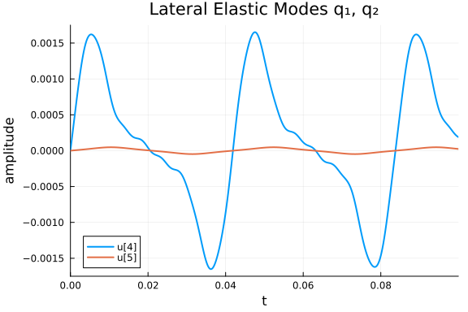
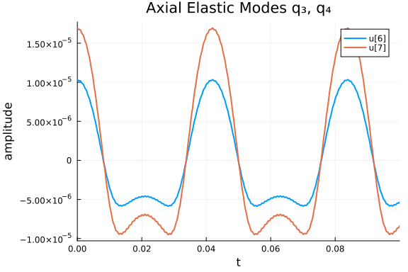
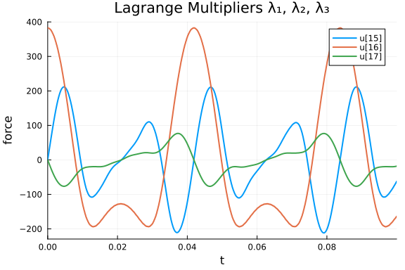
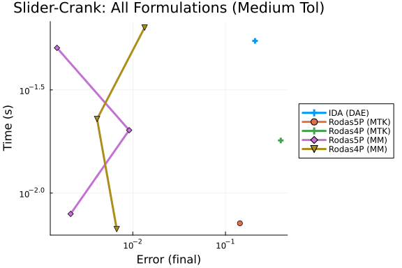
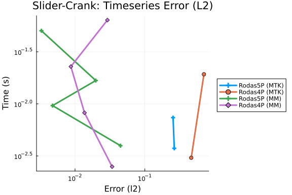

Slider-Crank DAE Work-Precision Diagrams
This is a benchmark of the Slider-Crank mechanism with elastic connecting rod, an index-2 DAE of dimension 24 from the IVP Test Set (Simeon 1998, crank.f).
The system models a crank-rod-slider mechanism where the connecting rod is treated as a flexible beam with 4 finite-element modes (2 lateral, 2 axial). The crank angle is prescribed as φ₁(t) = Ωt with Ω = 150 rad/s.
Variables (17 state variables):
- 7 positions: φ₁, φ₂, x₃, q₁, q₂, q₃, q₄
- 7 velocities: v₁, v₂, vx₃, vq₁, vq₂, vq₃, vq₄
- 3 Lagrange multipliers: λ₁, λ₂, λ₃
We benchmark three formulations of this problem:
- DAE Residual Form:
F(du, u, t) = M·du − f(u, t) = 0, solved with dedicated DAE solvers (IDA from Sundials). - MTK Index-Reduced ODE: The system defined symbolically with position-level constraints, automatically index-reduced by
structural_simplifyto a 13-state ODE. - Mass-Matrix ODE Form:
M·du/dt = f(u, t), solved with ODE solvers that handle singular mass matrices (Rosenbrock-W methods, multistep BDF).
The mass matrix is frozen at t = 0, which limits achievable tolerance to around 1e-7.
Reference: Simeon, B.: Modelling a flexible slider crank mechanism by a mixed system of DAEs and PDEs, Math. Modelling of Systems 2, 1-18 (1996).
using OrdinaryDiffEq, Sundials, DiffEqDevTools, ModelingToolkit, Plots
using LinearAlgebra
using ModelingToolkit: t_nounits as t, D_nounits as D
# ── Physical Parameters (from crank.f) ──────────────────────────────
const M1 = 0.36
const M2 = 0.151104
const M3 = 0.075552
const L1 = 0.15
const L2 = 0.30
const J1 = 0.002727
const J2 = 0.0045339259
const PI_ = 3.1415927
const EE = 0.20e12
const NUE = 0.30
const BB = 0.0080
const HH = 0.0080
const RHO = 7870.0
const GRAV = 0.0
const OMEGA = 150.0
const NQ = 4
const NP = 7
const NL = 3
const KU = 4
const KV = 0
# ── FE Matrices (exact port of FIRST block in RESMBS) ───────────────
function initialize_fe_matrices()
FACM = RHO * BB * HH * L2
FACK = EE * BB * HH / L2
FACB = BB * HH * L2
MQ_ = zeros(NQ, NQ)
MQ_[1,1] = FACM * 0.5
MQ_[2,2] = FACM * 0.5
MQ_[3,3] = FACM * 8.0
MQ_[3,4] = FACM * 1.0
MQ_[4,3] = FACM * 1.0
MQ_[4,4] = FACM * 2.0
KQ_ = zeros(NQ, NQ)
KQ_[1,1] = FACK * PI_^4 / 24.0 * (HH/L2)^2
KQ_[2,2] = FACK * PI_^4 * 2.0 / 3.0 * (HH/L2)^2
KQ_[3,3] = FACK * 16.0 / 3.0
KQ_[3,4] = -FACK * 8.0 / 3.0
KQ_[4,3] = -FACK * 8.0 / 3.0
KQ_[4,4] = FACK * 7.0 / 3.0
BQ_ = zeros(NQ, NQ)
BQ_[1,3] = -FACB * 16.0 / PI_^3
BQ_[1,4] = FACB * (8.0 / PI_^3 - 1.0 / PI_)
BQ_[2,4] = FACB * 0.5 / PI_
BQ_[3,1] = FACB * 16.0 / PI_^3
BQ_[4,1] = -FACB * (8.0 / PI_^3 - 1.0 / PI_)
BQ_[4,2] = -FACB * 0.5 / PI_
DQ_ = zeros(NQ, NQ)
c1_ = zeros(NQ); c2_ = zeros(NQ)
c12_ = zeros(NQ); c21_ = zeros(NQ)
c1_[3] = FACB * 2.0 / 3.0
c1_[4] = FACB * 1.0 / 6.0
c2_[1] = FACB * 2.0 / PI_
c12_[3] = L2 * FACB * 1.0 / 3.0
c12_[4] = L2 * FACB * 1.0 / 6.0
c21_[1] = L2 * FACB * 1.0 / PI_
c21_[2] = -L2 * FACB * 0.5 / PI_
return MQ_, KQ_, BQ_, DQ_, c1_, c2_, c12_, c21_
end
const MQ, KQ, BQ, DQ, c1, c2, c12, c21 = initialize_fe_matrices()([0.075552 0.0 0.0 0.0; 0.0 0.075552 0.0 0.0; 0.0 0.0 1.208832 0.151104; 0.
0 0.0 0.151104 0.302208], [123144.33964567189 0.0 0.0 0.0; 0.0 1.9703094343
307503e6 0.0 0.0; 0.0 0.0 2.2755555555555558e8 -1.1377777777777779e8; 0.0 0
.0 -1.1377777777777779e8 9.955555555555557e7], [0.0 0.0 -9.90767093878593e-
6 -1.1577142550509449e-6; 0.0 0.0 0.0 3.055774862221955e-6; 9.9076709387859
3e-6 0.0 0.0 0.0; 1.1577142550509449e-6 -3.055774862221955e-6 0.0 0.0], [0.
0 0.0 0.0 0.0; 0.0 0.0 0.0 0.0; 0.0 0.0 0.0 0.0; 0.0 0.0 0.0 0.0], [0.0, 0.
0, 1.28e-5, 3.2e-6], [1.222309944888782e-5, 0.0, 0.0, 0.0], [0.0, 0.0, 1.92
e-6, 9.6e-7], [1.833464917333173e-6, -9.167324586665865e-7, 0.0, 0.0])Consistent Initial Conditions
The Fortran reference code (init1 in crank.f) provides positions and velocities. We ensure full consistency by:
- Using init1 positions (which satisfy the position-level constraints).
- Projecting init1 velocities onto the constraint manifold via minimum-norm correction.
- Computing consistent accelerations and Lagrange multipliers by solving the augmented saddle-point system
[AM GP'; GP 0] * [w; λ] = [F; γ].
function build_GP(p1, p2, q)
cosp1 = cos(p1); sinp1 = sin(p1)
cosp2 = cos(p2); sinp2 = sin(p2)
qku = (KU == 0) ? 0.0 : q[KU]
qkv = (KV == 0) ? 0.0 : q[KV]
GP = zeros(3, NP)
GP[1,1] = L1 * cosp1
GP[1,2] = L2 * cosp2 + qku * cosp2 - qkv * sinp2
GP[2,1] = L1 * sinp1
GP[2,2] = L2 * sinp2 + qku * sinp2 + qkv * cosp2
GP[2,3] = 1.0
GP[3,1] = 1.0
if KU != 0
GP[1, 3+KU] = sinp2
GP[2, 3+KU] = -cosp2
end
return GP
end
function build_AM(p1, p2, q)
cosp12 = cos(p1 - p2); sinp12 = sin(p1 - p2)
c1Tq = dot(c1, q); c2Tq = dot(c2, q)
c12Tq = dot(c12, q); qtmqq = dot(q, MQ * q)
QtBQ = zeros(NQ)
for i in 1:NQ
QtBQ[i] = dot(q, @view BQ[:, i])
end
AM = zeros(NP, NP)
AM[1,1] = J1 + M2 * L1^2
AM[1,2] = 0.5 * L1 * L2 * M2 * cosp12 +
RHO * L1 * (sinp12 * c2Tq + cosp12 * c1Tq)
AM[2,2] = J2 + qtmqq + 2.0 * RHO * c12Tq
AM[3,3] = M3
for i in 1:NQ
AM[1, 3+i] = RHO * L1 * (-sinp12 * c1[i] + cosp12 * c2[i])
AM[2, 3+i] = RHO * c21[i] + RHO * QtBQ[i]
end
for i in 1:NQ, j in 1:i
AM[3+j, 3+i] = MQ[j, i]
end
for i in 1:NP, j in i+1:NP
AM[j, i] = AM[i, j]
end
return AM
end
function compute_force_vector(p1, p2, q, v1, v2, vq)
cosp12 = cos(p1 - p2); sinp12 = sin(p1 - p2)
cosp1 = cos(p1); sinp1 = sin(p1)
cosp2 = cos(p2); sinp2 = sin(p2)
c1Tq = dot(c1, q); c1Tqd = dot(c1, vq)
c2Tq = dot(c2, q); c2Tqd = dot(c2, vq)
c12Tqd = dot(c12, vq)
MQq = MQ * q; KQq = KQ * q; DQqd = DQ * vq; BQqd = BQ * vq
qdtmqq = dot(vq, MQq); qdtbqqd = dot(vq, BQqd)
F = zeros(NP)
F[1] = -0.5 * L1 * GRAV * (M1 + 2.0 * M2) * cosp1 -
0.5 * L1 * L2 * M2 * v2^2 * sinp12
F[2] = -0.5 * L2 * GRAV * M2 * cosp2 +
0.5 * L1 * L2 * M2 * v1^2 * sinp12
F[3] = 0.0
F[1] += RHO * L1 * v2^2 * (-sinp12 * c1Tq + cosp12 * c2Tq) -
2.0 * RHO * L1 * v2 * (cosp12 * c1Tqd + sinp12 * c2Tqd)
F[2] += RHO * L1 * v1^2 * (sinp12 * c1Tq - cosp12 * c2Tq) -
2.0 * RHO * v2 * c12Tqd - 2.0 * v2 * qdtmqq -
RHO * qdtbqqd - RHO * GRAV * (cosp2 * c1Tq - sinp2 * c2Tq)
for i in 1:NQ
F[3+i] = v2^2 * MQq[i] +
RHO * (v2^2 * c12[i] + L1 * v1^2 * (cosp12 * c1[i] + sinp12 * c2[i]) +
2.0 * v2 * BQqd[i]) -
RHO * GRAV * (sinp2 * c1[i] + cosp2 * c2[i])
F[3+i] -= KQq[i] + DQqd[i]
end
return F
end
function get_consistent_ic()
# Step 1: Positions from init1 (satisfy position constraints)
p1 = 0.0; p2 = 0.0; x3 = 0.450016933
q = [0.0, 0.0, 0.103339863e-04, 0.169327969e-04]
pos = [p1, p2, x3, q...]
# Step 2: Project init1 velocities onto constraint manifold
v_init1 = [150.0, -74.9957670, -0.268938672e-05,
0.444896105, 0.463434311e-02,
-0.178591076e-05, -0.268938672e-05]
GP0 = build_GP(p1, p2, q)
target = [0.0, 0.0, OMEGA]
residual_v = GP0 * v_init1 - target
v_fixed = v_init1 - GP0' * ((GP0 * GP0') \ residual_v)
# Step 3: Compute accelerations and multipliers
AM0 = build_AM(p1, p2, q)
F0 = compute_force_vector(p1, p2, q, v_fixed[1], v_fixed[2], v_fixed[4:7])
# dGP/dt * v via finite differences
eps_fd = 1e-8
pos_p = pos .+ eps_fd .* v_fixed
GP_p = build_GP(pos_p[1], pos_p[2], pos_p[4:7])
dGPdt_v = (GP_p - GP0) / eps_fd * v_fixed
# Augmented saddle-point system: [AM GP'; GP 0] [w; λ] = [F; -dGP/dt*v]
n = NP + NL
Aug = zeros(n, n)
Aug[1:NP, 1:NP] = AM0
Aug[1:NP, NP+1:n] = GP0'
Aug[NP+1:n, 1:NP] = GP0
rhs = zeros(n)
rhs[1:NP] = F0
rhs[NP+1:n] = -dGPdt_v
sol = Aug \ rhs
w_0 = sol[1:NP]
lam_0 = sol[NP+1:n]
return pos, v_fixed, w_0, lam_0, AM0, GP0
end
pos0, vel0, w0, lam0, AM0, GP0 = get_consistent_ic()
# Verify constraints
g1 = L1 * sin(pos0[1]) + (L2 + pos0[7]) * sin(pos0[2])
g2 = pos0[3] - L1 * cos(pos0[1]) - (L2 + pos0[7]) * cos(pos0[2])
g3 = pos0[1]
println("Position constraints: ", [g1, g2, g3])
println("Velocity constraint norm: ", norm(GP0 * vel0 - [0, 0, OMEGA]))Position constraints: [0.0, 2.0309998127743256e-10, 0.0]
Velocity constraint norm: 0.0Mass-Matrix ODE Formulation
The index-2 DAE is reformulated as a singular mass-matrix ODE with 17 state variables u = [p; v; λ]. The mass matrix M has the structure:
M = [I 0 0 ] du = [v ]
[0 AM 0 ] [F - Gᵀλ ]
[0 0 0 ] [G*v - r'(t) ]where AM is the 7×7 generalized mass matrix (frozen at t=0) and G is the 3×7 constraint Jacobian (evaluated at current state).
function slider_crank_mm!(du, u, p, t)
T = eltype(u)
p1, p2, x3 = u[1], u[2], u[3]
q = @view u[4:7]
v1, v2 = u[8], u[9]
vq = @view u[11:14]
lam1, lam2, lam3 = u[15], u[16], u[17]
cosp1 = cos(p1); sinp1 = sin(p1)
cosp2 = cos(p2); sinp2 = sin(p2)
cosp12 = cos(p1 - p2); sinp12 = sin(p1 - p2)
qku = (KU == 0) ? zero(T) : q[KU]
qkv = (KV == 0) ? zero(T) : q[KV]
c1Tq = dot(c1, q); c1Tqd = dot(c1, vq)
c2Tq = dot(c2, q); c2Tqd = dot(c2, vq)
c12Tqd = dot(c12, vq)
MQq = MQ * q; KQq = KQ * q
DQqd = DQ * vq; BQqd = BQ * vq
qtmqq = dot(q, MQq)
qdtmqq = dot(vq, MQq)
qdtbqqd = dot(vq, BQqd)
QtBQ = zeros(T, NQ)
for i in 1:NQ
QtBQ[i] = dot(q, @view BQ[:, i])
end
# Constraint Jacobian GP (3×7) — evaluated at current state
GP = zeros(T, 3, NP)
GP[1,1] = L1 * cosp1
GP[1,2] = L2 * cosp2 + qku * cosp2 - qkv * sinp2
GP[2,1] = L1 * sinp1
GP[2,2] = L2 * sinp2 + qku * sinp2 + qkv * cosp2
GP[2,3] = one(T)
GP[3,1] = one(T)
if KU != 0
GP[1, 3+KU] = sinp2
GP[2, 3+KU] = -cosp2
end
# Force vector F (7)
F = zeros(T, NP)
F[1] = -0.5 * L1 * GRAV * (M1 + 2.0 * M2) * cosp1 -
0.5 * L1 * L2 * M2 * v2^2 * sinp12
F[2] = -0.5 * L2 * GRAV * M2 * cosp2 +
0.5 * L1 * L2 * M2 * v1^2 * sinp12
F[3] = zero(T)
F[1] += RHO * L1 * v2^2 * (-sinp12 * c1Tq + cosp12 * c2Tq) -
2.0 * RHO * L1 * v2 * (cosp12 * c1Tqd + sinp12 * c2Tqd)
F[2] += RHO * L1 * v1^2 * (sinp12 * c1Tq - cosp12 * c2Tq) -
2.0 * RHO * v2 * c12Tqd - 2.0 * v2 * qdtmqq -
RHO * qdtbqqd - RHO * GRAV * (cosp2 * c1Tq - sinp2 * c2Tq)
for i in 1:NQ
F[3+i] = v2^2 * MQq[i] +
RHO * (v2^2 * c12[i] + L1 * v1^2 * (cosp12 * c1[i] + sinp12 * c2[i]) +
2.0 * v2 * BQqd[i]) -
RHO * GRAV * (sinp2 * c1[i] + cosp2 * c2[i])
F[3+i] -= KQq[i] + DQqd[i]
end
# Block 1 (rows 1:7): I * dp/dt = v
for i in 1:7
du[i] = u[7+i]
end
# Block 2 (rows 8:14): AM * dv/dt = F - Gᵀλ
for i in 1:NP
du[7+i] = F[i] - GP[1,i] * lam1 - GP[2,i] * lam2 - GP[3,i] * lam3
end
# Block 3 (rows 15:17): 0 * dλ/dt = G*v - r'(t)
for k in 1:3
vlc = zero(T)
for i in 1:NP
vlc += GP[k, i] * u[NP+i]
end
if k == 3
vlc -= OMEGA
end
du[14+k] = vlc
end
nothing
end
function build_mass_matrix(AM)
Mfull = zeros(17, 17)
for i in 1:7
Mfull[i, i] = 1.0 # identity block for dp/dt = v
end
Mfull[8:14, 8:14] .= AM # AM block for dv/dt equations
# rows 15:17 are zero → algebraic (velocity constraints)
return Mfull
end
u0_mm = vcat(pos0, vel0, lam0)
M_mm = build_mass_matrix(AM0)
mmf = ODEFunction(slider_crank_mm!, mass_matrix = M_mm)
tspan = (0.0, 0.1)
prob_mm = ODEProblem(mmf, u0_mm, tspan)ODEProblem with uType Vector{Float64} and tType Float64. In-place: true
Non-trivial mass matrix: true
timespan: (0.0, 0.1)
u0: 17-element Vector{Float64}:
0.0
0.0
0.450016933
0.0
0.0
1.03339863e-5
1.69327969e-5
150.0
-74.99576703969453
-2.68938672e-6
0.444896105
0.00463434311
-1.78591076e-6
-2.68938672e-6
-2.303851027879405e-5
382.45895095266985
-6.339193797155536e-7DAE Residual Form
The same system can be written as a DAE residual F(du, u, t) = M·du − f(u, t) = 0, where M is the mass matrix and f is the right-hand side from the ODE form. This enables testing DAE-specific solvers like IDA (Sundials) and comparing how formulation choice affects solver performance.
function slider_crank_dae!(res, du, u, p, t)
f = similar(u)
slider_crank_mm!(f, u, p, t)
res .= M_mm * du - f
nothing
end
du0_dae = vcat(vel0, w0, zeros(3))
differential_vars = [trues(14); falses(3)]
prob_dae = DAEProblem(slider_crank_dae!, du0_dae, u0_mm, tspan,
differential_vars = differential_vars)
# Verify DAE consistency at initial conditions
f_check = similar(u0_mm)
slider_crank_mm!(f_check, u0_mm, nothing, 0.0)
println("DAE residual norm at IC: ", norm(M_mm * du0_dae - f_check))DAE residual norm at IC: 6.940448042111208e-15MTK Index-Reduced Formulation
ModelingToolkit can automatically reduce the DAE index via structural_simplify. We define the full system symbolically — with the 7 kinematic equations, 7 dynamics equations (involving the configuration-dependent mass matrix), and the 3 position-level holonomic constraints — and let MTK differentiate and eliminate the Lagrange multipliers, producing a 13-state ODE.
@variables begin
φ1(t) = pos0[1]
φ2(t) = pos0[2]
x₃(t) = pos0[3]
q₁(t) = pos0[4]
q₂(t) = pos0[5]
q₃(t) = pos0[6]
q₄(t) = pos0[7]
vφ1(t) = vel0[1]
vφ2(t) = vel0[2]
vx₃(t) = vel0[3]
vq₁(t) = vel0[4]
vq₂(t) = vel0[5]
vq₃(t) = vel0[6]
vq₄(t) = vel0[7]
λ₁(t) = lam0[1]
λ₂(t) = lam0[2]
λ₃(t) = lam0[3]
end
pvec = [φ1, φ2, x₃, q₁, q₂, q₃, q₄]
vvec = [vφ1, vφ2, vx₃, vq₁, vq₂, vq₃, vq₄]
qvec = [q₁, q₂, q₃, q₄]
vqvec = [vq₁, vq₂, vq₃, vq₄]
λvec = [λ₁, λ₂, λ₃]
# Symbolic trigonometric quantities
sφ1 = sin(φ1); cφ1 = cos(φ1)
sφ2 = sin(φ2); cφ2 = cos(φ2)
sφ12 = sin(φ1 - φ2); cφ12 = cos(φ1 - φ2)
# Dot products with FE vectors (Float64 constants × symbolic variables)
c1q = sum(c1 .* qvec); c2q = sum(c2 .* qvec); c12q = sum(c12 .* qvec)
c1vq = sum(c1 .* vqvec); c2vq = sum(c2 .* vqvec); c12vq = sum(c12 .* vqvec)
# Matrix-vector products (Float64 FE matrices × symbolic vectors)
MQq_s = MQ * qvec; KQq_s = KQ * qvec
DQvq_s = DQ * vqvec; BQvq_s = BQ * vqvec
# Quadratic forms
qMQq_s = sum(qvec .* MQq_s)
vqMQq_s = sum(vqvec .* MQq_s)
vqBQvq_s = sum(vqvec .* BQvq_s)
QBQ_s = [sum(qvec .* BQ[:,i]) for i in 1:NQ]
# AM(φ,q) × D(v) — configuration-dependent mass matrix × acceleration
am_dv = [
(J1 + M2*L1^2)*D(vφ1) +
(0.5*L1*L2*M2*cφ12 + RHO*L1*(sφ12*c2q + cφ12*c1q))*D(vφ2) +
sum(RHO*L1*(-sφ12*c1[i] + cφ12*c2[i])*D(vqvec[i]) for i in 1:NQ),
(0.5*L1*L2*M2*cφ12 + RHO*L1*(sφ12*c2q + cφ12*c1q))*D(vφ1) +
(J2 + qMQq_s + 2*RHO*c12q)*D(vφ2) +
sum((RHO*c21[i] + RHO*QBQ_s[i])*D(vqvec[i]) for i in 1:NQ),
M3*D(vx₃),
[RHO*L1*(-sφ12*c1[k] + cφ12*c2[k])*D(vφ1) +
(RHO*c21[k] + RHO*QBQ_s[k])*D(vφ2) +
sum(MQ[k,j]*D(vqvec[j]) for j in 1:NQ)
for k in 1:NQ]...
]
# Force vector F(φ,v,q,vq)
F_s = [
-0.5*L1*GRAV*(M1+2*M2)*cφ1 - 0.5*L1*L2*M2*vφ2^2*sφ12 +
RHO*L1*vφ2^2*(-sφ12*c1q + cφ12*c2q) -
2*RHO*L1*vφ2*(cφ12*c1vq + sφ12*c2vq),
-0.5*L2*GRAV*M2*cφ2 + 0.5*L1*L2*M2*vφ1^2*sφ12 +
RHO*L1*vφ1^2*(sφ12*c1q - cφ12*c2q) -
2*RHO*vφ2*c12vq - 2*vφ2*vqMQq_s - RHO*vqBQvq_s -
RHO*GRAV*(cφ2*c1q - sφ2*c2q),
0,
[vφ2^2*MQq_s[i] + RHO*(vφ2^2*c12[i] +
L1*vφ1^2*(cφ12*c1[i] + sφ12*c2[i]) + 2*vφ2*BQvq_s[i]) -
RHO*GRAV*(sφ2*c1[i] + cφ2*c2[i]) - KQq_s[i] - DQvq_s[i]
for i in 1:NQ]...
]
# Constraint Jacobian GP(φ,q) and GP' × λ
GP_rows = [
[L1*cφ1, (L2+q₄)*cφ2, 0, 0, 0, 0, sφ2],
[L1*sφ1, (L2+q₄)*sφ2, 1, 0, 0, 0, -cφ2],
[1, 0, 0, 0, 0, 0, 0 ]
]
GPt_λ = [sum(GP_rows[k][i]*λvec[k] for k in 1:3) for i in 1:NP]
# 17 equations: 7 kinematic + 7 dynamics + 3 holonomic constraints
eqs = vcat(
[D(pvec[i]) ~ vvec[i] for i in 1:NP],
[am_dv[i] ~ F_s[i] - GPt_λ[i] for i in 1:NP],
[0 ~ L1*sφ1 + (L2 + q₄)*sφ2,
0 ~ x₃ - L1*cφ1 - (L2 + q₄)*cφ2,
0 ~ φ1 - OMEGA*t]
)
@mtkbuild sys = ODESystem(eqs, t)
prob_mtk = ODEProblem(sys, [], tspan; warn_initialize_determined = false)
println("MTK index-reduced: $(length(ModelingToolkit.unknowns(sys))) states ",
"(from 17 original)")MTK index-reduced: 13 states (from 17 original)Reference Solution
We compute a high-accuracy reference solution using Rodas5P at moderate tolerance. The frozen mass matrix limits how tight we can push tolerances before instability sets in, so reltol = abstol = 1e-6 provides the best balance of accuracy and stability for this problem.
ref_sol = solve(prob_mm, Rodas5P(), reltol = 1e-6, abstol = 1e-6,
maxiters = 10_000_000);
println("Reference solution: retcode = $(ref_sol.retcode), ",
"npoints = $(length(ref_sol.t)), t_final = $(ref_sol.t[end])")
mtk_ref = solve(prob_mtk, Rodas5P(), reltol = 1e-5, abstol = 1e-5,
maxiters = 10_000_000);
println("MTK reference: retcode = $(mtk_ref.retcode), ",
"npoints = $(length(mtk_ref.t)), t_final = $(mtk_ref.t[end])")Reference solution: retcode = Success, npoints = 11178, t_final = 0.1
MTK reference: retcode = Success, npoints = 3602, t_final = 0.1plot(ref_sol, idxs = [2, 3], title = "φ₂ and x₃",
xlabel = "t", ylabel = "value", lw = 2)
plot(ref_sol, idxs = [4, 5], title = "Lateral Elastic Modes q₁, q₂",
xlabel = "t", ylabel = "amplitude", lw = 2)
plot(ref_sol, idxs = [6, 7], title = "Axial Elastic Modes q₃, q₄",
xlabel = "t", ylabel = "amplitude", lw = 2)
plot(ref_sol, idxs = [15, 16, 17], title = "Lagrange Multipliers λ₁, λ₂, λ₃",
xlabel = "t", ylabel = "force", lw = 2)
DAE vs Mass-Matrix: Solver Performance
A key question for this benchmark is how problem formulation affects solver performance. We test DAE-specific solvers on the residual form.
println("=== DAE Solver Results ===")
println("Testing IDA (Sundials) on DAE residual form:")
try
dae_sol = solve(prob_dae, IDA(), reltol = 1e-4, abstol = 1e-4)
println(" IDA result: retcode = $(dae_sol.retcode), t_final = $(dae_sol.t[end])")
catch e
println(" IDA failed: $(typeof(e))")
end
println("\nTesting IDA with modified initialization:")
try
dae_sol2 = solve(prob_dae, IDA(init_all = false), reltol = 1e-4, abstol = 1e-4)
println(" IDA (init_all=false): retcode = $(dae_sol2.retcode), t_final = $(dae_sol2.t[end])")
catch e
println(" IDA (init_all=false) failed: $(typeof(e))")
end=== DAE Solver Results ===
Testing IDA (Sundials) on DAE residual form:
IDA result: retcode = Unstable, t_final = 0.0002465164025475332
Testing IDA with modified initialization:
IDA (init_all=false): retcode = Unstable, t_final = 0.0002465164025475332IDA fails with ConvergenceFailure at the first step on this problem, even with fully consistent initial conditions (DAE residual norm ≈ 7×10⁻²¹). The extreme stiffness from the elastic modulus (E = 2×10¹¹ Pa) causes the Newton solver to diverge, with step size collapsing to h ≈ 10⁻¹⁷. DASKR and DASSL exhibit the same failure mode.
This demonstrates that formulation choice critically affects solver performance for this problem: the mass-matrix ODE form avoids DAE solver difficulties by letting Rosenbrock-W methods handle the algebraic constraints through the singular mass matrix structure.
Work-Precision Diagrams
We compare solvers across all three formulations using WorkPrecisionSet with prob_choice to overlay DAE, MTK, and mass-matrix results on the same plot. IDA operates on the DAE residual form, the MTK index-reduced form is solved with Rosenbrock-W methods, and the mass-matrix ODE form uses Rosenbrock-W and BDF methods. The tolerance range is limited by the frozen mass matrix (instability above ~1e-7). The MTK form's overdetermined initialization system limits it to tolerances above ~1e-5.
probs = [prob_dae, prob_mtk, prob_mm]
refs = [ref_sol, mtk_ref, ref_sol]3-element Vector{SciMLBase.ODESolution{Float64, 2, Vector{Vector{Float64}},
Nothing, Nothing, Vector{Float64}, Vector{Vector{Vector{Float64}}}, Nothin
g, P, OrdinaryDiffEqRosenbrock.Rodas5P{0, ADTypes.AutoForwardDiff{nothing,
ForwardDiff.Tag{DiffEqBase.OrdinaryDiffEqTag, Float64}}, Nothing, typeof(Or
dinaryDiffEqCore.DEFAULT_PRECS), Val{:forward}(), true, nothing, typeof(Ord
inaryDiffEqCore.trivial_limiter!), typeof(OrdinaryDiffEqCore.trivial_limite
r!)}, IType, SciMLBase.DEStats, Nothing, Nothing, Nothing, Nothing} where {
P, IType}}:
SciMLBase.ODESolution{Float64, 2, Vector{Vector{Float64}}, Nothing, Nothin
g, Vector{Float64}, Vector{Vector{Vector{Float64}}}, Nothing, SciMLBase.ODE
Problem{Vector{Float64}, Tuple{Float64, Float64}, true, SciMLBase.NullParam
eters, SciMLBase.ODEFunction{true, SciMLBase.FullSpecialize, typeof(Main.va
r"##WeaveSandBox#225".slider_crank_mm!), Matrix{Float64}, Nothing, Nothing,
Nothing, Nothing, Nothing, Nothing, Nothing, Nothing, Nothing, Nothing, No
thing, typeof(SciMLBase.DEFAULT_OBSERVED), Nothing, Nothing, Nothing, Nothi
ng}, Base.Pairs{Symbol, Union{}, Tuple{}, @NamedTuple{}}, SciMLBase.Standar
dODEProblem}, OrdinaryDiffEqRosenbrock.Rodas5P{0, ADTypes.AutoForwardDiff{n
othing, ForwardDiff.Tag{DiffEqBase.OrdinaryDiffEqTag, Float64}}, Nothing, t
ypeof(OrdinaryDiffEqCore.DEFAULT_PRECS), Val{:forward}(), true, nothing, ty
peof(OrdinaryDiffEqCore.trivial_limiter!), typeof(OrdinaryDiffEqCore.trivia
l_limiter!)}, OrdinaryDiffEqCore.InterpolationData{SciMLBase.ODEFunction{tr
ue, SciMLBase.FullSpecialize, typeof(Main.var"##WeaveSandBox#225".slider_cr
ank_mm!), Matrix{Float64}, Nothing, Nothing, Nothing, Nothing, Nothing, Not
hing, Nothing, Nothing, Nothing, Nothing, Nothing, typeof(SciMLBase.DEFAULT
_OBSERVED), Nothing, Nothing, Nothing, Nothing}, Vector{Vector{Float64}}, V
ector{Float64}, Vector{Vector{Vector{Float64}}}, Nothing, OrdinaryDiffEqRos
enbrock.RosenbrockCache{Vector{Float64}, Vector{Float64}, Float64, Vector{F
loat64}, Matrix{Float64}, Matrix{Float64}, OrdinaryDiffEqRosenbrock.RodasTa
bleau{Float64, Float64}, SciMLBase.TimeGradientWrapper{true, SciMLBase.ODEF
unction{true, SciMLBase.FullSpecialize, typeof(Main.var"##WeaveSandBox#225"
.slider_crank_mm!), Matrix{Float64}, Nothing, Nothing, Nothing, Nothing, No
thing, Nothing, Nothing, Nothing, Nothing, Nothing, Nothing, typeof(SciMLBa
se.DEFAULT_OBSERVED), Nothing, Nothing, Nothing, Nothing}, Vector{Float64},
SciMLBase.NullParameters}, SciMLBase.UJacobianWrapper{true, SciMLBase.ODEF
unction{true, SciMLBase.FullSpecialize, typeof(Main.var"##WeaveSandBox#225"
.slider_crank_mm!), Matrix{Float64}, Nothing, Nothing, Nothing, Nothing, No
thing, Nothing, Nothing, Nothing, Nothing, Nothing, Nothing, typeof(SciMLBa
se.DEFAULT_OBSERVED), Nothing, Nothing, Nothing, Nothing}, Float64, SciMLBa
se.NullParameters}, LinearSolve.LinearCache{Matrix{Float64}, Vector{Float64
}, Vector{Float64}, SciMLBase.NullParameters, LinearSolve.DefaultLinearSolv
er, LinearSolve.DefaultLinearSolverInit{LinearAlgebra.LU{Float64, Matrix{Fl
oat64}, Vector{Int64}}, LinearAlgebra.QRCompactWY{Float64, Matrix{Float64},
Matrix{Float64}}, Nothing, Nothing, Nothing, Nothing, Nothing, Nothing, Tu
ple{LinearAlgebra.LU{Float64, Matrix{Float64}, Vector{Int64}}, Vector{Int64
}}, Tuple{LinearAlgebra.LU{Float64, Matrix{Float64}, Vector{Int64}}, Vector
{Int64}}, Nothing, Nothing, Nothing, LinearAlgebra.SVD{Float64, Float64, Ma
trix{Float64}, Vector{Float64}}, LinearAlgebra.Cholesky{Float64, Matrix{Flo
at64}}, LinearAlgebra.Cholesky{Float64, Matrix{Float64}}, Tuple{LinearAlgeb
ra.LU{Float64, Matrix{Float64}, Vector{Int32}}, Base.RefValue{Int32}}, Tupl
e{LinearAlgebra.LU{Float64, Matrix{Float64}, Vector{Int64}}, Base.RefValue{
Int64}}, LinearAlgebra.QRPivoted{Float64, Matrix{Float64}, Vector{Float64},
Vector{Int64}}, Nothing, Nothing, Nothing, Nothing, Nothing, Matrix{Float6
4}}, LinearSolve.InvPreconditioner{LinearAlgebra.Diagonal{Float64, Vector{F
loat64}}}, LinearAlgebra.Diagonal{Float64, Vector{Float64}}, Float64, Linea
rSolve.LinearVerbosity{SciMLLogging.Silent, SciMLLogging.Silent, SciMLLoggi
ng.Silent, SciMLLogging.Silent, SciMLLogging.Silent, SciMLLogging.Silent, S
ciMLLogging.Silent, SciMLLogging.Silent, SciMLLogging.WarnLevel, SciMLLoggi
ng.WarnLevel, SciMLLogging.Silent, SciMLLogging.Silent, SciMLLogging.Silent
, SciMLLogging.Silent, SciMLLogging.Silent, SciMLLogging.Silent}, Bool, Lin
earSolve.LinearSolveAdjoint{Missing}}, Tuple{DifferentiationInterfaceForwar
dDiffExt.ForwardDiffTwoArgJacobianPrep{Nothing, ForwardDiff.JacobianConfig{
ForwardDiff.Tag{DiffEqBase.OrdinaryDiffEqTag, Float64}, Float64, 9, Tuple{V
ector{ForwardDiff.Dual{ForwardDiff.Tag{DiffEqBase.OrdinaryDiffEqTag, Float6
4}, Float64, 9}}, Vector{ForwardDiff.Dual{ForwardDiff.Tag{DiffEqBase.Ordina
ryDiffEqTag, Float64}, Float64, 9}}}}, Tuple{}}, DifferentiationInterfaceFo
rwardDiffExt.ForwardDiffTwoArgJacobianPrep{Nothing, ForwardDiff.JacobianCon
fig{ForwardDiff.Tag{DiffEqBase.OrdinaryDiffEqTag, Float64}, Float64, 9, Tup
le{Vector{ForwardDiff.Dual{ForwardDiff.Tag{DiffEqBase.OrdinaryDiffEqTag, Fl
oat64}, Float64, 9}}, Vector{ForwardDiff.Dual{ForwardDiff.Tag{DiffEqBase.Or
dinaryDiffEqTag, Float64}, Float64, 9}}}}, Tuple{}}}, Tuple{Differentiation
InterfaceForwardDiffExt.ForwardDiffTwoArgDerivativePrep{Tuple{SciMLBase.Tim
eGradientWrapper{true, SciMLBase.ODEFunction{true, SciMLBase.FullSpecialize
, typeof(Main.var"##WeaveSandBox#225".slider_crank_mm!), Matrix{Float64}, N
othing, Nothing, Nothing, Nothing, Nothing, Nothing, Nothing, Nothing, Noth
ing, Nothing, Nothing, typeof(SciMLBase.DEFAULT_OBSERVED), Nothing, Nothing
, Nothing, Nothing}, Vector{Float64}, SciMLBase.NullParameters}, Vector{Flo
at64}, ADTypes.AutoForwardDiff{nothing, ForwardDiff.Tag{DiffEqBase.Ordinary
DiffEqTag, Float64}}, Float64, Tuple{}}, Float64, ForwardDiff.DerivativeCon
fig{ForwardDiff.Tag{DiffEqBase.OrdinaryDiffEqTag, Float64}, Vector{ForwardD
iff.Dual{ForwardDiff.Tag{DiffEqBase.OrdinaryDiffEqTag, Float64}, Float64, 1
}}}, Tuple{}}, DifferentiationInterfaceForwardDiffExt.ForwardDiffTwoArgDeri
vativePrep{Tuple{SciMLBase.TimeGradientWrapper{true, SciMLBase.ODEFunction{
true, SciMLBase.FullSpecialize, typeof(Main.var"##WeaveSandBox#225".slider_
crank_mm!), Matrix{Float64}, Nothing, Nothing, Nothing, Nothing, Nothing, N
othing, Nothing, Nothing, Nothing, Nothing, Nothing, typeof(SciMLBase.DEFAU
LT_OBSERVED), Nothing, Nothing, Nothing, Nothing}, Vector{Float64}, SciMLBa
se.NullParameters}, Vector{Float64}, ADTypes.AutoForwardDiff{nothing, Forwa
rdDiff.Tag{DiffEqBase.OrdinaryDiffEqTag, Float64}}, Float64, Tuple{}}, Floa
t64, ForwardDiff.DerivativeConfig{ForwardDiff.Tag{DiffEqBase.OrdinaryDiffEq
Tag, Float64}, Vector{ForwardDiff.Dual{ForwardDiff.Tag{DiffEqBase.OrdinaryD
iffEqTag, Float64}, Float64, 1}}}, Tuple{}}}, Float64, OrdinaryDiffEqRosenb
rock.Rodas5P{0, ADTypes.AutoForwardDiff{nothing, ForwardDiff.Tag{DiffEqBase
.OrdinaryDiffEqTag, Float64}}, Nothing, typeof(OrdinaryDiffEqCore.DEFAULT_P
RECS), Val{:forward}(), true, nothing, typeof(OrdinaryDiffEqCore.trivial_li
miter!), typeof(OrdinaryDiffEqCore.trivial_limiter!)}, typeof(OrdinaryDiffE
qCore.trivial_limiter!), typeof(OrdinaryDiffEqCore.trivial_limiter!)}, Ordi
naryDiffEqCore.DifferentialVarsUndefined}, SciMLBase.DEStats, Nothing, Noth
ing, Nothing, Nothing}([[0.0, 0.0, 0.450016933, 0.0, 0.0, 1.03339863e-5, 1.
69327969e-5, 150.0, -74.99576703969453, -2.68938672e-6, 0.444896105, 0.0046
3434311, -1.78591076e-6, -2.68938672e-6, -2.303851027879405e-5, 382.4589509
5266985, -6.339193797155536e-7], [0.00015000000000000096, -7.49957668294067
6e-5, 0.4500169304662131, 4.448961052636021e-7, 4.63434311592467e-9, 1.0333
982379911499e-5, 1.6932794315479788e-5, 150.0, -74.99576640815987, -0.00506
488450368873, 0.444896105824963, 0.004634343127775004, -6.054169584992515e-
6, -2.47977849610951e-6, 0.06633307975256669, 382.4589986509165, -0.0269441
7633375928], [0.00030346004349877573, -0.0001517214564432677, 0.45001692263
52828, 9.000546114972841e-7, 9.375586460700212e-9, 1.0333973952809054e-5, 1
.6932791887546723e-5, 150.0, -74.99576445216772, -0.010243850561905663, 0.4
448961085180174, 0.004634343182686087, -1.0419742862265787e-5, -2.267048965
3288746e-6, 0.1341963690599594, 382.459172880821, -0.05450987701921593], [0
.0005015101859710008, -0.00025074093262395197, 0.45001690469755357, 1.48746
61997899658e-6, 1.549446872075291e-8, 1.0333956477602698e-5, 1.693278907269
476e-5, 150.0, -74.9957599696659, -0.01692764725306674, 0.4448961147590913,
0.0046343433081191395, -1.605031743433838e-5, -1.998148870487642e-6, 0.221
77844269185154, 382.45958222640934, -0.09008523290046067], [0.0007403973320
601213, -0.00037017774685971374, 0.45001687131923174, 2.1959992962262974e-6
, 2.2875035873089427e-8, 1.0333925513299973e-5, 1.6932786140135973e-5, 150.
0, -74.99575162696239, -0.024989623539144558, 0.4448961264376182, 0.0046343
43540181322, -2.2833542079900397e-5, -1.687687855988195e-6, 0.3274197692616
649, 382.4603533091788, -0.13299613415557263], [0.001026076084043756, -0.00
05130090189330409, 0.45001681454498926, 3.0433151152644683e-6, 3.1701259417
99583e-8, 1.0333874314727199e-5, 1.6932783257358433e-5, 150.0, -74.99573743
505638, -0.034630751562149904, 0.44489614637379493, 0.004634343930813733, -
3.092795000110172e-5, -1.3458597346916303e-6, 0.45375394666783836, 382.4616
716345697, -0.18431229207526867], [0.0013588073446756405, -0.00067936517039
10777, 0.4500167252725207, 4.030187519386913e-6, 4.198120071422105e-8, 1.03
33795282905683e-5, 1.6932780664311376e-5, 150.0, -74.99571511819076, -0.045
85986399317161, 0.44489617781645624, 0.004634344534596813, -4.0322660368097
54e-5, -1.0035719088735577e-6, 0.6008968994900165, 382.46374749559607, -0.2
4408073976409575], [0.001740586686285242, -0.0008702438947217648, 0.4500165
9215344697, 5.162535375758511e-6, 5.377651515804742e-8, 1.0333678994036453e
-5, 1.6932778510456533e-5, 150.0, -74.99568183924133, -0.05874435208168425,
0.4448962248481436, 0.0046343454111998795, -5.104499706866777e-5, -7.08501
8401089483e-7, 0.7697320071785777, 382.46683774260936, -0.3126602060042485]
, [0.0021723943418506444, -0.0010861352258557267, 0.45001640206928745, 6.44
3266107952237e-6, 6.711748901974743e-8, 1.0333514702596691e-5, 1.6932776765
911032e-5, 150.0, -74.9956343188636, -0.07331736380253197, 0.44489629225066
823, 0.004634346613801736, -6.307870192179609e-5, -5.350298871481906e-7, 0.
9606941001032608, 382.4712301132461, -0.39022716644614525], [0.002652819452
8358338, -0.0013263336978551104, 0.4500161412806057, 7.868195255525723e-6,
8.19605347001388e-8, 1.0333291418107752e-5, 1.6932775041336885e-5, 150.0, -
74.99556912303368, -0.0895313780009222, 0.4448963851425868, 0.0046343481702
66432, -7.632275342330097e-5, -5.89627232483452e-7, 1.173161085869231, 382.
4772095984531, -0.4765287336688831] … [14.984326033266097, -0.33743384660
992903, 0.17066384816348634, 0.0001925670949836511, 2.4336366748648265e-5,
-5.386650914862699e-6, -8.467722006862385e-6, 150.0, 59.566762549226176, -8
.980837245398131, -0.03360403817608118, -0.005563232710122797, 0.0006201957
107776033, 0.0007847214162413029, -64.3334282966124, -165.32058470424687, -
18.46243029179165], [14.986242913520385, -0.33667208827259476, 0.1705492588
642362, 0.00019214049594764538, 2.4265333699461173e-5, -5.37872618426043e-6
, -8.45744788765731e-6, 150.0, 59.651651351019304, -8.952884000168048, -0.0
33161123042279625, -0.005553664394563368, 0.0006187827878562012, 0.00082460
48083912312, -64.11932271845029, -165.20267763443766, -18.429634461922937],
[14.988159793774674, -0.33590924668289884, 0.1704350266525003, 0.000191719
53578593913, 2.4194425374568393e-5, -5.370866167627896e-6, -8.4466161108339
e-6, 150.0, 59.73629571530283, -8.924951958631235, -0.032721450745209886, -
0.005543765503541297, 0.0006102586533010521, 0.0008715776087878277, -63.898
53631157582, -165.06903288699928, -18.397226052246108], [14.990076674028963
, -0.335145324984915, 0.17032115123861555, 0.00019130417643464318, 2.412364
3805991987e-5, -5.36315357428237e-6, -8.435153747933248e-6, 150.0, 59.82069
232779677, -8.89704416909985, -0.03228446840503514, -0.005533891760450871,
0.0005959637126418777, 0.0009227585268194381, -63.669373345660134, -164.915
32252116804, -18.365385794203267], [14.991993554283251, -0.3343803263693563
, 0.1702076322898355, 0.00019089438770765417, 2.4052986060156764e-5, -5.355
651854823914e-6, -8.423028619337347e-6, 150.0, 59.90483725465455, -8.869164
280820632, -0.0318495058514582, -0.0055244594691963465, 0.00057755040714889
62, 0.0009746939898262994, -63.43079660007186, -164.73881903247056, -18.334
22081502363], [14.99391043453754, -0.3336142540794395, 0.17009446942447687,
0.0001904901484001149, 2.3982443669257198e-5, -5.348402072541752e-6, -8.41
0254888150922e-6, 150.0, 59.98872627013555, -8.841316251619563, -0.03141583
87052948, -0.00551591268323262, 0.0005568456165567288, 0.001023633522100073
4, -63.18251239979738, -164.53862777507547, -18.303756006441112], [14.99582
7314791828, -0.33284711141237733, 0.1699816622100011, 0.0001900914465512367
2, 2.3912002501702476e-5, -5.341421629614125e-6, -8.396894943775581e-6, 150
.0, 60.072355208663296, -8.813504028623818, -0.030982755958024723, -0.00550
8687788191032, 0.000535699957151365, 0.0010658310890655338, -62.92499497022
988, -164.31577070001006, -18.273932117492073], [14.997744195046117, -0.332
07890171636645, 0.16986921016521084, 0.00018969827884406077, 2.384164308638
6884e-5, -5.334704937855167e-6, -8.38305739836016e-6, 150.0, 60.15572031257
9604, -8.785731227978577, -0.030549626541498693, -0.005503178379737096, 0.0
005158362335030889, 0.0010978479544057754, -62.659448342611896, -164.073114
41467883, -18.244610681603135], [14.999661075300406, -0.3313096283833128, 0
.16975711276640582, 0.00018931064918995558, 2.3771341368630795e-5, -5.32822
5965594457e-6, -8.368891334942048e-6, 150.0, 60.23881854735783, -8.75800083
9578706, -0.03011595948178246, -0.005499703285846862, 0.0004987093705251409
, 0.001116832441838903, -62.38770921173346, -163.8151483533587, -18.2155853
3772592], [14.999999999998904, -0.3311735023248599, 0.1697373296153814, 0.0
0018924268895326456, 2.3758915247975978e-5, -5.327102156215073e-6, -8.36636
5693649003e-6, 150.0, 60.253483257566366, -8.753102401475758, -0.0300392005
07881367, -0.00549931871516871, 0.0004960535857023572, 0.001118665317438119
, -62.339113356546875, -163.76819159511533, -18.21047117266844]], nothing,
nothing, [0.0, 1.0e-6, 2.023066956658499e-6, 3.3434012398066557e-6, 4.93598
2213734114e-6, 6.8405072269583345e-6, 9.05871563117088e-6, 1.16039112419015
47e-5, 1.448262894567087e-5, 1.768546301890546e-5 … 0.09989550688844792,
0.09990828609014318, 0.09992106529183845, 0.09993384449353371, 0.0999466236
9522897, 0.09995940289692423, 0.0999721820986195, 0.09998496130031476, 0.09
999774050201002, 0.1], [[[0.0, 0.0, 0.450016933, 0.0, 0.0, 1.03339863e-5, 1
.69327969e-5, 150.0, -74.99576703969453, -2.68938672e-6, 0.444896105, 0.004
63434311, -1.78591076e-6, -2.68938672e-6, -2.303851027879405e-5, 382.458950
95266985, -6.339193797155536e-7]], [[-2.68644888130459e-19, -2.102871051411
0055e-13, 2.531097504465909e-9, -2.636037520298232e-16, -5.925709186045359e
-18, 2.134177734153846e-12, -1.0486643257935952e-13, 6.895679674685942e-22,
-6.32879179739638e-7, 1.9224276157283732e-10, -8.932668185548306e-10, -1.7
771720558451595e-11, -2.041478699358192e-10, 2.2544327438234717e-10, 0.0003
880183473319511, -5.8355519560835916e-5, 1.0630243690469483e-5], [1.7159157
834705832e-17, -2.1097779974468737e-13, 4.1581944011738246e-17, -2.97668167
8458063e-16, -5.913949878934952e-18, -5.369751010934185e-17, 4.988519113713
6424e-17, 1.9036602802577233e-20, 2.488417235150416e-13, 2.6468931333899795
e-10, -5.2561424676197376e-14, 2.142152814742128e-14, -1.7168587934934325e-
10, 2.979133158640281e-10, -0.0013042580268240937, -1.2023406134695895e-5,
-3.572636056478128e-5], [-7.449142247232344e-18, 1.2686687789430311e-17, 6.
65612852086963e-17, -5.404560358243648e-20, -1.017494822822154e-20, -4.2958
06611458912e-17, 7.486190902461984e-17, -4.924661074765362e-20, -5.21449631
9572234e-13, -4.420906625491374e-14, 9.669513300308266e-14, -5.333328650533
1213e-14, 1.3953026614421939e-14, -4.4446853140907365e-14, 0.00111009220961
8081, 3.1688582012236744e-5, 3.0410841831175233e-5]], [[-1.6679374775645461
e-19, -8.876066448745893e-13, 2.649214320774772e-9, -1.2181239638309662e-15
, -2.4927501148549436e-17, 2.23328158235076e-12, -1.0904629387719927e-13, -
8.379597200400739e-21, -6.624121975148487e-7, 1.038460273452668e-9, -9.3516
5374184182e-10, -1.85468056242561e-11, -7.567997405792764e-10, 1.1783330405
931262e-9, 4.918635154529407e-9, -3.832826274161515e-5, 8.217641473217934e-
9], [2.8286636225955885e-17, -2.2591234724324318e-13, 3.2951150329457914e-1
6, -3.1879020436629335e-16, -6.36139971893541e-18, -2.4235315221372914e-16,
3.7417699677472744e-16, -5.109026668916804e-20, -3.971250033686333e-13, 2.
8328362493135145e-10, 5.796710221579225e-14, -5.5580835099068645e-14, -1.83
77573325179876e-10, 3.188602743167965e-10, -1.053059472209983e-7, -8.893106
417585768e-5, -6.074575688731229e-9], [-1.3545735095508755e-17, 8.588916146
982523e-18, 7.28717408010273e-17, -1.1660964911883392e-19, 4.30681616202650
4e-20, -4.705976975802095e-17, 8.197304146935367e-17, 1.6536642574352758e-1
9, 2.050792031208546e-12, -6.860910717367249e-14, -3.948738045256091e-13, 1
.9197579997479003e-13, 3.4576347247967745e-14, -6.915596401597236e-14, 3.62
7908178359992e-8, 9.815084338608153e-5, 7.290426131836957e-9]], [[8.9092140
95137833e-20, -2.716416938071741e-12, 4.412422167773359e-9, -3.777153942481
036e-15, -7.607030967859443e-17, 3.717662607449115e-12, -1.7841028485975655
e-13, -1.6345870969315688e-21, -1.1032819138364779e-6, 3.281083291381012e-9
, -1.5584459749261267e-9, -3.067695054257877e-11, -2.267145334014816e-9, 3.
7090264601121193e-9, -1.569919315800795e-7, -7.776191753871322e-5, 1.792059
2948080683e-8], [1.9306313079746878e-17, -4.855808626845723e-13, 1.37586141
82938147e-15, -6.856144158814481e-16, -1.358640993383467e-17, -9.5425497358
37704e-16, 1.5557885617244117e-15, -4.660509122356508e-20, 1.00546520855960
2e-12, 6.081977708001492e-10, -2.597526810116501e-13, 2.2579071940165973e-1
4, -3.9466541117537916e-10, 6.846685469856837e-10, 2.7489537209267965e-7, -
0.00010081882728926393, 8.326169232812192e-9], [-5.45342101619746e-19, 6.29
01830520281235e-18, 2.0183848492285753e-16, -3.3947852254725966e-19, 1.2190
688467283253e-19, -1.3035423374957462e-16, 2.2708300740184133e-16, 1.481045
3234419243e-19, 3.2257168147697003e-12, -3.3815208045986643e-13, -6.2489706
79183017e-13, 2.9732443314248617e-13, 1.6872503220949348e-13, -3.3846577510
12127e-13, -3.238238658212258e-7, 0.00012325354584293987, -3.70228055123920
33e-9]], [[-6.41139666954011e-19, -6.217157962554681e-12, 6.419672863015317
e-9, -8.696760253416632e-15, -1.7317481431897158e-16, 5.402872510339046e-12
, -2.496546209769021e-13, 8.967836873052249e-21, -1.6051602774535172e-6, 7.
606424339454942e-9, -2.2701714951664266e-9, -4.392104543986514e-11, -5.1373
34448355259e-9, 8.585753152226208e-9, -3.00572073800894e-7, -0.000107711009
77015242, 4.183911308612285e-8], [2.790014621266635e-17, -8.521419223877949
e-13, 3.894171917825173e-15, -1.204820489920747e-15, -2.3387267147834448e-1
7, -2.6353082437037084e-15, 4.396239759933859e-15, 5.468823523370809e-20, 5
.275715453407094e-12, 1.064586566936346e-9, -1.1913036912788336e-12, 2.9625
50560890637e-13, -6.912322945271892e-10, 1.1987845351993837e-9, 4.909537148
709992e-7, -0.00016342964157084158, 1.8749907787600612e-8], [-6.50311801575
9026e-18, 1.5794087552590876e-17, 4.2590682742884226e-16, -6.04880440679373
85e-19, 1.6345250240626014e-19, -2.752666050024651e-16, 4.79348524777757e-1
6, -8.882663577337898e-20, 1.2325655890697214e-12, -1.0998009808038487e-12,
-2.5394371167231224e-13, 9.50619665806073e-14, 5.476382294515311e-13, -1.1
001008696764637e-12, -5.16329593518248e-7, 0.00019365802925696735, -9.82634
2504051446e-9]], [[-9.218593118416116e-19, -1.2785773065742038e-11, 9.18087
945822004e-9, -1.7951193161147498e-14, -3.5274778860666507e-16, 7.711520682
033672e-12, -3.31465315437919e-13, 2.3374090645574878e-23, -2.2955291148131
81e-6, 1.573023783532498e-8, -3.253623589517809e-9, -6.103416665912717e-11,
-1.0499516022424692e-8, 1.7744130052135492e-8, -4.0889023914145056e-7, -0.
0001519896445386073, 9.011873806746463e-8], [4.012975015230849e-17, -1.4573
288412061883e-12, 9.6940510031957e-15, -2.0645922802735847e-15, -3.89670442
32846597e-17, -6.4785192136725226e-15, 1.0936143458747589e-14, 1.0240829584
077005e-19, 1.3434907722477084e-11, 1.8121994074365028e-9, -3.0128816664706
924e-12, 7.665860911939687e-13, -1.1779395653092514e-9, 2.0417065488196287e
-9, 2.992382642136383e-7, -0.00023683070277724666, 2.4907409253311606e-8],
[-1.1677262151508365e-17, 2.395403201633611e-17, 8.662895219290244e-16, -1.
9208326172752004e-18, 5.038575053241168e-19, -5.606006537041377e-16, 9.7555
34339980778e-16, -9.838608636843079e-20, 3.134214944228992e-12, -3.18859702
55038583e-12, -6.362328532997607e-13, 2.532058434861518e-13, 1.585843647878
2219e-12, -3.1880261427980117e-12, -4.555351272089849e-7, 0.000279773488236
36386, -1.4245631222729711e-8]], [[-6.312477917705783e-19, -2.3600522411495
212e-11, 1.2454244508481196e-8, -3.3234356960055793e-14, -6.408661966024721
e-16, 1.0427182861860546e-11, -3.923488349883611e-13, -2.6947062347972443e-
20, -3.113897167929569e-6, 2.908266046805171e-8, -4.429492198120565e-9, -7.
874279190133463e-11, -1.928209353521366e-8, 3.27998561987377e-8, -8.0129490
16290241e-7, -0.00019955670433057586, 1.620192606820233e-7], [3.31145496770
21355e-17, -2.3024611181992188e-12, 2.0971710294220385e-14, -3.273406089583
3876e-15, -5.869231736652197e-17, -1.391584528021881e-14, 2.365318548231391
8e-14, -1.8538033480431378e-19, 2.8254004938032305e-11, 2.84090873968618e-9
, -6.3493240699422334e-12, 1.5810614840455905e-12, -1.8500048548075993e-9,
3.2035151390080954e-9, 7.430550338280591e-7, -0.0003351540432669211, 5.9025
028283509216e-8], [1.2141136654862322e-18, 3.163151770007981e-17, 1.5798625
640255855e-15, -4.2299356550814756e-18, 1.1255249595345094e-18, -1.02451779
3892278e-15, 1.7809562748429898e-15, 5.339907917719559e-19, 4.9797059917811
44e-12, -7.89047577360474e-12, -1.0194583951417038e-12, 3.9133574440957934e
-13, 3.9212202204494915e-12, -7.886669379908396e-12, -9.675368553158148e-7,
0.0003916685785537162, -4.3731241893152035e-8]], [[-4.063173680172119e-19,
-4.06117415947143e-11, 1.639674917001976e-8, -5.736232108439756e-14, -1.07
57534789019004e-15, 1.3659811139894144e-11, -4.0042973340101123e-13, -4.676
226309791659e-20, -4.099461536459453e-6, 4.9976453786664213e-8, -5.86350057
02549525e-9, -9.555206975123522e-11, -3.3009860165561686e-8, 5.637287413529
4724e-8, -1.3352815468897515e-6, -0.00025461246314322845, 2.742645973698752
e-7], [5.494075829806505e-17, -3.4780000655935953e-12, 4.149200008071875e-1
4, -4.971435399607585e-15, -8.182256419392239e-17, -2.7420891907609556e-14,
4.6802539416214724e-14, -2.1373109018966815e-19, 5.848681609715172e-11, 4.
239473949334734e-9, -1.3037004456145713e-11, 3.3743667595912344e-12, -2.768
763993790751e-9, 4.787221912945002e-9, 1.1801090614182184e-6, -0.0004516714
0124373535, 1.0963174632939791e-7], [-1.8445901292823254e-17, 2.79340349562
7838e-17, 2.7008293566814983e-15, -8.712979682464227e-18, 2.208366372559605
8e-18, -1.7571445774277823e-15, 3.0493714338953492e-15, 5.275266495249173e-
19, 2.4170981405058734e-12, -1.768523606035792e-11, -5.778760700462253e-13,
8.650694643264627e-14, 8.784677570440368e-12, -1.7672920992529123e-11, -1.
4943502222061313e-6, 0.0005251022811207411, -8.93614797660582e-8]], [[-1.10
81854131874582e-18, -6.588291488049572e-11, 2.0975753247767066e-8, -9.33833
1916137253e-14, -1.6810757274085056e-15, 1.7347303503142017e-11, -2.9502830
623068256e-13, -3.198111202380468e-20, -5.243974806203276e-6, 8.07327617789
7539e-8, -7.560344020546902e-9, -1.0707785956833474e-10, -5.322820802408817
e-8, 9.110934912770904e-8, -2.0395664575446834e-6, -0.0003125398689663399,
4.37510508297045e-7], [4.635722455124379e-17, -5.032024933118211e-12, 7.601
650858099943e-14, -7.24800404805605e-15, -1.04421646279849e-16, -5.01362055
6065303e-14, 8.578347027586598e-14, -4.57355437474102e-19, 1.05118727285371
73e-10, 6.023431035584239e-9, -2.3468693703564796e-11, 5.984786805694499e-1
2, -3.951092411364361e-9, 6.8159337440827064e-9, 1.5441172331018567e-6, -0.
000590738102662893, 1.821062831447863e-7], [-5.014951129436326e-18, 8.00898
0360468643e-17, 4.330990785675039e-15, -1.8199428332030012e-17, 4.645929117
504315e-18, -2.8313569116193075e-15, 4.9013738278691584e-15, 1.689236958164
1812e-18, 6.732060555103941e-12, -3.6295737405619447e-11, -1.47068761096393
48e-12, 4.1063320041538605e-13, 1.802580443736974e-11, -3.626933851278851e-
11, -2.102705846409174e-6, 0.0006836981791799891, -1.609987011831582e-7]],
[[-6.042320653859769e-19, -1.0094091593684618e-10, 2.5965330879497233e-8, -
1.43697482799756e-13, -2.438481262827989e-15, 2.1253874513392902e-11, 1.096
5481959249376e-14, 7.708298416972134e-20, -6.490834952930478e-6, 1.22791644
36665567e-7, -9.461210571829304e-9, -1.0643434622349348e-10, -8.09373804188
8951e-8, 1.3868988964504084e-7, -3.1663431789963676e-6, -0.0003652076112554
3894, 6.4858597218151e-7], [7.990781996831157e-17, -6.929759212642766e-12,
1.2893820490162184e-13, -1.0088367516375508e-14, -1.168108420197975e-16, -8
.5003880912282e-14, 1.4562003983941617e-13, 5.249023265385382e-19, 1.768151
263594142e-10, 8.081720145201641e-9, -3.9481432987294443e-11, 1.00008496070
2549e-11, -5.335214093920275e-9, 9.17313190959538e-9, 2.6262067367649104e-6
, -0.00075007945674208, 3.060595222997916e-7], [-4.110839550879798e-17, 1.4
124744793963772e-16, 6.447661362456701e-15, -3.412938753318921e-17, 8.72694
1019834708e-18, -4.2447130054553484e-15, 7.321606188854658e-15, -1.50300740
66954777e-18, 1.1673381371926885e-11, -6.797991770479529e-11, -2.5016112943
780967e-12, 7.67207774615985e-13, 3.376065501556329e-11, -6.793387539456807
e-11, -3.3975338053311473e-6, 0.0008637806125323104, -2.850869834160566e-7]
] … [[2.9336486037837262e-19, -5.442087522399419e-7, -1.7875084111898742e
-7, -2.857212372395194e-9, -5.6569673137703235e-11, -5.113336940405205e-11,
-1.8566042620065172e-10, -9.203301077663326e-19, 0.00012047089714802024, 9
.011365856829189e-6, 1.8888024875944097e-6, -3.619388690750961e-7, 4.194631
399685197e-6, -5.045210499000781e-6, -0.00015918550756900243, -1.6948927082
72034e-5, -0.00014725820905094205], [3.1116230413083403e-16, 5.128336225328
267e-10, 3.8077623029858716e-11, 8.096728197707873e-12, -1.5805042990283118
e-12, 1.7983631513469197e-11, -2.178245700536632e-11, 3.0103193081652624e-1
6, 1.7306437174582272e-7, 1.5540196992437566e-7, -1.9716088010834108e-8, 2.
1943375380179976e-8, -4.679290320405091e-8, 1.4600052829562966e-7, -0.00494
7832738611011, -0.011957223954568549, 0.000521865017958786], [-1.5291357029
77745e-16, 7.563361401827061e-13, 6.828264142689799e-13, -1.019844188885981
1e-13, 9.013850275306016e-14, -2.3744532253376937e-13, 6.434421326498872e-1
3, -8.871233378578831e-16, 4.8786094097510235e-8, 4.4721263734792686e-8, -9
.341945248841233e-9, 4.807561478617081e-9, -2.2254387907711105e-8, 4.248740
196849164e-8, 0.004949409406797013, 0.01191860981389142, -0.000519732829608
0237]], [[2.933648444973088e-19, -5.426643690946212e-7, -1.786312873472583e
-7, -2.833748451344581e-9, -6.062223803105835e-11, 8.69491681668701e-13, -2
.4599285201209127e-10, -1.9003647650813345e-16, 0.00012132628377865647, 9.7
86312750445978e-6, 1.7653065875301784e-6, -2.6298868958516986e-7, 3.9007793
61746304e-6, -4.314734991844327e-6, -0.0013900034665488149, -0.003086669087
79802, -1.1764621097236174e-5], [3.1116230390553975e-16, 5.162930113516942e
-10, 4.1206789634253996e-11, 7.605854417600477e-12, -1.1771519552901084e-12
, 1.6817842360238932e-11, -1.883373507765518e-11, -2.1687246325636648e-16,
3.6486961229810624e-7, 3.316535855831502e-7, -5.642183049468753e-8, 4.08345
598737095e-8, -1.3432980045339517e-7, 3.127126645847042e-7, -0.004922515329
229446, -0.011900949905994702, 0.0005133559781313052], [-1.5291356945388715
e-16, 1.3419762486524381e-12, 1.2243965768897096e-12, -2.139392567965675e-1
3, 1.4781253444410076e-13, -5.07199120790887e-13, 1.156121081859829e-12, 4.
193078781727509e-16, 4.1551339234764523e-8, 3.898285231780191e-8, -7.930748
366332455e-9, 4.09691399950161e-9, -1.9615399961049953e-8, 3.71700989595293
9e-8, 0.004987353550195709, 0.012001941639603896, -0.0005170093543069789]],
[[2.933648603513183e-19, -5.411056138886046e-7, -1.7849864530568072e-7, -2
.8125203477708353e-9, -6.307139175185835e-11, 4.752860375656126e-11, -2.939
7489632555994e-10, -2.297174689433087e-16, 0.00012270434902258092, 1.104642
4556444151e-5, 1.5419703372381354e-6, -1.1256209779254121e-7, 3.36449166069
4715e-6, -3.124764032115465e-6, -0.0024129443329487387, -0.0056791150301573
27, 0.00010123827732831481], [3.111623041317193e-16, 5.220215584873869e-10,
4.643937225102078e-11, 6.681433532402955e-12, -5.503025237513068e-13, 1.46
02184912667768e-11, -1.38932367201325e-11, -2.4460911983987544e-15, 5.26051
1488752205e-7, 4.823300488969307e-7, -8.71618099133622e-8, 5.67049281583730
46e-8, -2.1000805295396934e-7, 4.5553898974983406e-7, -0.004886376640348863
, -0.011783899932696238, 0.0004986042239133174], [-1.5291357029799603e-16,
1.816270657897931e-12, 1.6715017367823953e-12, -3.0428571461016764e-13, 1.9
448615052528997e-13, -7.329895047188003e-13, 1.5803985247932107e-12, 6.9645
38434135631e-15, 3.090116622490232e-8, 2.99878508535714e-8, -5.869047040902
4985e-9, 3.0393840319558027e-9, -1.5422828514247695e-8, 2.8763488877692222e
-8, 0.005046414004588738, 0.012103510347214512, -0.0005111458719152432]], [
[2.9336486036487985e-19, -5.395265019509334e-7, -1.783473071874014e-7, -2.7
946690747090826e-9, -6.332815445648465e-11, 8.602178728008405e-11, -3.24289
14307001334e-10, 9.512744008705647e-17, 0.00012448986777145458, 1.269287998
708314e-5, 1.2411363563313068e-6, 7.790580193156197e-8, 2.631884506874167e-
6, -1.567911144335616e-6, -0.003143913720401274, -0.007577727512399297, 0.0
0018255092348343373], [3.111623041313999e-16, 5.295399148380686e-10, 5.3365
714281752716e-11, 5.41642340136522e-12, 2.5252836051026187e-13, 1.152769877
9459991e-11, -7.344726280916553e-12, 1.9012487234768004e-15, 6.433202846378
893e-7, 5.949012589957785e-7, -1.0940705441071636e-7, 6.820431088440586e-8,
-2.6785121786476487e-7, 5.625979684588528e-7, -0.004842899612579266, -0.01
161842040072994, 0.0004787476167686354], [-1.5291357029794747e-16, 2.140358
3257657853e-12, 1.9868901016932253e-12, -3.6559107545581294e-13, 2.26175184
59194265e-13, -8.970245354527191e-13, 1.8809003310046684e-12, -6.0639384513
05761e-15, 1.7712408972751372e-8, 1.8464909010040862e-8, -3.326578811552637
e-9, 1.7216837179447503e-9, -1.0017980517685361e-8, 1.794599044332399e-8, 0
.005122184382349185, 0.012218081992967884, -0.0005025280337997038]], [[2.93
36486037070497e-19, -5.379227475890714e-7, -1.7817314431871773e-7, -2.78100
71140247534e-9, -6.097276121369219e-11, 1.1421951304985762e-10, -3.33007097
3524215e-10, 1.4640520092882122e-16, 0.00012653400748934354, 1.459458434426
7692e-5, 8.915232377094232e-7, 2.9354961103596586e-7, 1.7645030830479182e-6
, 2.325407196981078e-7, -0.003522986282421673, -0.008622372719389374, 0.000
22560537594210276], [3.11162304131385e-16, 5.382215386234548e-10, 6.1434761
83378621e-11, 3.931800684596069e-12, 1.1687855910033405e-12, 7.852982624911
712e-12, 2.9373001330961863e-13, 1.1521564094039215e-15, 7.069954807661786e
-7, 6.599216262063095e-7, -1.2132640656664773e-7, 7.434023399326318e-8, -3.
0333465781560015e-7, 6.248975362474651e-7, -0.004795684599910702, -0.011419
917822703494, 0.000455321255772848], [-1.5291357029798868e-16, 2.2872331247
382667e-12, 2.1440054638997844e-12, -3.9280652252802464e-13, 2.401045584222
912e-13, -9.865383519061463e-13, 2.0322615859084756e-12, -2.690556668135796
5e-15, 3.067372133878578e-9, 5.347582607934586e-9, -5.119964944776026e-10,
2.51646115548814e-10, -3.840618742133673e-9, 5.5933869461494735e-9, 0.00520
8529423131767, 0.012338655470530466, -0.0004917610651598605]], [[2.93364844
5105041e-19, -5.362921179243394e-7, -1.7797385409501105e-7, -2.771951536527
271e-9, -5.579097712344434e-11, 1.3085120663713528e-10, -3.179196514182842e
-10, 8.783499964581289e-17, 0.00012866653367760045, 1.6598791674125882e-5,
5.258702646725265e-7, 5.172890296549318e-7, 8.343134236950126e-7, 2.1326141
16938078e-6, -0.003518982474972022, -0.008722006737249467, 0.00022697070016
103676], [3.1116230390516533e-16, 5.473433945437229e-10, 6.999880431490634e
-11, 2.3666377289370566e-12, 2.1259407488676844e-12, 3.883150372566369e-12,
8.411675273769897e-12, -6.236469105594341e-16, 7.117876707414616e-7, 6.718
006890403541e-7, -1.219350543712498e-7, 7.455865829221284e-8, -3.1375286895
37352e-7, 6.370703273652324e-7, -0.004748860905895305, -0.01120705134906132
2, 0.00043016210346718273], [-1.5291356945380787e-16, 2.2447238552457116e-1
2, 2.129046974902008e-12, -3.836765103261197e-13, 2.3498680648887987e-13, -
9.948273295790063e-13, 2.021200376261764e-12, 1.427996042091789e-15, -1.183
3100668628358e-8, -8.298983656192128e-9, 2.3438963663624864e-9, -1.25043971
7773546e-9, 2.6068052869520404e-9, -7.2928734493575575e-9, 0.00529864320781
5952, 0.01245814850326651, -0.0004796422875333918]], [[2.933648127647172e-1
9, -5.346346187515714e-7, -1.7774915885510494e-7, -2.767489489818993e-9, -4
.779363238212218e-11, 1.3560167018109356e-10, -2.787282915760427e-10, -4.96
2997751877954e-17, 0.00013070971926565226, 1.8543496688746117e-5, 1.7826210
687011608e-7, 7.31221545565372e-7, -8.215182991494861e-8, 3.979308361345282
e-6, -0.0031320459834944386, -0.00786242742178328, 0.00018661133603093362],
[3.111623034550484e-16, 5.561453053082023e-10, 7.836588340732917e-11, 8.66
7261471027895e-13, 3.0474797083125856e-12, -5.4988913031167264e-14, 1.63557
38820710226e-11, -8.239754617074878e-16, 6.572121235289751e-7, 6.2926138769
35506e-7, -1.1117114484916203e-7, 6.878751583446021e-8, -2.9843917651616657
e-7, 5.9781489013829e-7, -0.004706131136376704, -0.010999158347059805, 0.00
04052642694336329], [-1.5291356776641862e-16, 2.0161016973823163e-12, 1.942
260394708208e-12, -3.3889978988141055e-13, 2.1104199472752765e-13, -9.21794
8456158273e-13, 1.8476169229158486e-12, 2.597737691767792e-15, -2.578305777
59092e-8, -2.1367485763084416e-8, 5.009927904077167e-9, -2.6631211384240393
e-9, 8.799840326916245e-9, -1.9666062484637927e-8, 0.005385145861687143, 0.
012569187682411874, -0.00046709992746798556]], [[2.9336482863453103e-19, -5
.329524978368048e-7, -1.7750084040361175e-7, -2.7671787458235857e-9, -3.721
783637732394e-11, 1.2912979161599335e-10, -2.1708130878078118e-10, -2.39566
7364897827e-16, 0.00013249280904939004, 2.0270589201398328e-5, -1.186455372
3915944e-7, 9.180774774701452e-7, -9.100185331492696e-7, 5.623020372466823e
-6, -0.002393311524516632, -0.006107212457133864, 0.00010787772841174555],
[3.1116230368010765e-16, 5.638921649421694e-10, 8.585608850384506e-11, -4.2
728174436021955e-13, 3.8590417664059984e-12, -3.6395137175448266e-12, 2.348
2674576991434e-11, -9.928923318948015e-16, 5.476052198549981e-7, 5.35446065
5469725e-7, -8.989648366864584e-8, 5.744063273652854e-8, -2.588199102798001
e-7, 5.100073690799595e-7, -0.004671161539368623, -0.010815674862421343, 0.
00038257929326107967], [-1.5291356861008805e-16, 1.6194477744016966e-12, 1.
5978034580446866e-12, -2.6207644448855293e-13, 1.700648908079158e-13, -7.73
9586142945729e-13, 1.5246166097803682e-12, 3.3599827459369188e-15, -3.76450
2939751347e-8, -3.279486204018718e-8, 7.268678848637004e-9, -3.871313118166
232e-9, 1.4234795861365984e-8, -3.0520337529339194e-8, 0.005461177115174794
, 0.012665406265106594, -0.00045508943574204145]], [[2.933648762385887e-19,
-5.312500660558711e-7, -1.772326072441362e-7, -2.7701831385106964e-9, -2.4
509826580747566e-11, 1.1300802336725376e-10, -1.3645185901812839e-10, -3.68
8239122434462e-17, 0.0001338658686563475, 2.1638702678665578e-5, -3.3627481
58167004e-7, 1.0626196246815937e-6, -1.5821611626527191e-6, 6.9297059416929
37e-6, -0.0013624715325143103, -0.003592929067613304, -2.8005836303821402e-
6], [3.111623043563714e-16, 5.699331358454097e-10, 9.18566950548687e-11, -1
.3912958860258302e-12, 4.494531645781494e-12, -6.579574299544324e-12, 2.921
1643248588745e-11, -5.175236171689957e-16, 3.917609405115123e-7, 3.97665591
5567888e-7, -5.982438349619261e-8, 4.138327763195176e-8, -1.982983756508688
6e-7, 3.804729780782774e-7, -0.004646497835074785, -0.01067347052840945, 0.
0003639091799442014], [-1.5291357114160092e-16, 1.0866610338818826e-12, 1.1
227141780075931e-12, -1.5939267055144768e-13, 1.1518270702604412e-13, -5.63
9209163299109e-13, 1.0774641427973126e-12, 1.6942701488476263e-15, -4.64649
91146418856e-8, -4.165134819154622e-8, 8.938471369573154e-9, -4.77780195886
62996e-9, 1.8469605322926612e-8, -3.8971737162252045e-8, 0.0055203784614340
84, 0.012741180721540438, -0.00044455408370921306]], [[4.6751623163117124e-
20, -1.6569025928034065e-8, -5.534268979084768e-9, -8.671322446868321e-11,
-4.4786514336349467e-13, 3.0234416209660143e-12, -2.1606353935251195e-12, -
1.2896004522703535e-17, 4.206402257175551e-6, 6.988795541925621e-7, -1.3589
333725031318e-8, 3.5503788427078575e-8, -6.088656212434049e-8, 2.3815855696
073602e-7, 0.001245600411400305, 0.002860729452572667, -0.00010214607553929
092], [5.002599147143378e-17, 3.1678938517517795e-12, 5.261060135265377e-13
, -1.0205238560618153e-14, 2.671462735059237e-14, -4.572196890673573e-14, 1
.7911629534855511e-13, -2.4468027375869937e-16, 1.3539540795104723e-9, 1.45
64298109168564e-9, -1.7460275803579459e-10, 1.4510710091318965e-10, -7.6496
08970196612e-10, 1.4036832618291312e-9, -0.004393447156512099, -0.010122779
614178738, 0.0003453504578626401], [-1.6904841995388052e-17, 7.356674605604
98e-16, 8.034598998601259e-16, -9.315746836072746e-17, 7.900959842793896e-1
7, -4.201720640978288e-16, 7.767523367864484e-16, 6.9528422721247485e-16, -
6.152610686959683e-11, -4.505640828103627e-11, 1.180325761893809e-11, -6.23
891389178676e-12, 1.9563965510033533e-11, -4.05336201606857e-11, 0.00378049
7556492514, 0.008709473893476354, -0.000297237704424878]]], nothing, SciMLB
ase.ODEProblem{Vector{Float64}, Tuple{Float64, Float64}, true, SciMLBase.Nu
llParameters, SciMLBase.ODEFunction{true, SciMLBase.FullSpecialize, typeof(
Main.var"##WeaveSandBox#225".slider_crank_mm!), Matrix{Float64}, Nothing, N
othing, Nothing, Nothing, Nothing, Nothing, Nothing, Nothing, Nothing, Noth
ing, Nothing, typeof(SciMLBase.DEFAULT_OBSERVED), Nothing, Nothing, Nothing
, Nothing}, Base.Pairs{Symbol, Union{}, Tuple{}, @NamedTuple{}}, SciMLBase.
StandardODEProblem}(SciMLBase.ODEFunction{true, SciMLBase.FullSpecialize, t
ypeof(Main.var"##WeaveSandBox#225".slider_crank_mm!), Matrix{Float64}, Noth
ing, Nothing, Nothing, Nothing, Nothing, Nothing, Nothing, Nothing, Nothing
, Nothing, Nothing, typeof(SciMLBase.DEFAULT_OBSERVED), Nothing, Nothing, N
othing, Nothing}(Main.var"##WeaveSandBox#225".slider_crank_mm!, [1.0 0.0 …
0.0 0.0; 0.0 1.0 … 0.0 0.0; … ; 0.0 0.0 … 0.0 0.0; 0.0 0.0 … 0.0 0.0], noth
ing, nothing, nothing, nothing, nothing, nothing, nothing, nothing, nothing
, nothing, nothing, SciMLBase.DEFAULT_OBSERVED, nothing, nothing, nothing,
nothing), [0.0, 0.0, 0.450016933, 0.0, 0.0, 1.03339863e-5, 1.69327969e-5, 1
50.0, -74.99576703969453, -2.68938672e-6, 0.444896105, 0.00463434311, -1.78
591076e-6, -2.68938672e-6, -2.303851027879405e-5, 382.45895095266985, -6.33
9193797155536e-7], (0.0, 0.1), SciMLBase.NullParameters(), Base.Pairs{Symbo
l, Union{}, Tuple{}, @NamedTuple{}}(), SciMLBase.StandardODEProblem()), Ord
inaryDiffEqRosenbrock.Rodas5P{0, ADTypes.AutoForwardDiff{nothing, ForwardDi
ff.Tag{DiffEqBase.OrdinaryDiffEqTag, Float64}}, Nothing, typeof(OrdinaryDif
fEqCore.DEFAULT_PRECS), Val{:forward}(), true, nothing, typeof(OrdinaryDiff
EqCore.trivial_limiter!), typeof(OrdinaryDiffEqCore.trivial_limiter!)}(noth
ing, OrdinaryDiffEqCore.DEFAULT_PRECS, OrdinaryDiffEqCore.trivial_limiter!,
OrdinaryDiffEqCore.trivial_limiter!, ADTypes.AutoForwardDiff(tag=ForwardDi
ff.Tag{DiffEqBase.OrdinaryDiffEqTag, Float64}())), OrdinaryDiffEqCore.Inter
polationData{SciMLBase.ODEFunction{true, SciMLBase.FullSpecialize, typeof(M
ain.var"##WeaveSandBox#225".slider_crank_mm!), Matrix{Float64}, Nothing, No
thing, Nothing, Nothing, Nothing, Nothing, Nothing, Nothing, Nothing, Nothi
ng, Nothing, typeof(SciMLBase.DEFAULT_OBSERVED), Nothing, Nothing, Nothing,
Nothing}, Vector{Vector{Float64}}, Vector{Float64}, Vector{Vector{Vector{F
loat64}}}, Nothing, OrdinaryDiffEqRosenbrock.RosenbrockCache{Vector{Float64
}, Vector{Float64}, Float64, Vector{Float64}, Matrix{Float64}, Matrix{Float
64}, OrdinaryDiffEqRosenbrock.RodasTableau{Float64, Float64}, SciMLBase.Tim
eGradientWrapper{true, SciMLBase.ODEFunction{true, SciMLBase.FullSpecialize
, typeof(Main.var"##WeaveSandBox#225".slider_crank_mm!), Matrix{Float64}, N
othing, Nothing, Nothing, Nothing, Nothing, Nothing, Nothing, Nothing, Noth
ing, Nothing, Nothing, typeof(SciMLBase.DEFAULT_OBSERVED), Nothing, Nothing
, Nothing, Nothing}, Vector{Float64}, SciMLBase.NullParameters}, SciMLBase.
UJacobianWrapper{true, SciMLBase.ODEFunction{true, SciMLBase.FullSpecialize
, typeof(Main.var"##WeaveSandBox#225".slider_crank_mm!), Matrix{Float64}, N
othing, Nothing, Nothing, Nothing, Nothing, Nothing, Nothing, Nothing, Noth
ing, Nothing, Nothing, typeof(SciMLBase.DEFAULT_OBSERVED), Nothing, Nothing
, Nothing, Nothing}, Float64, SciMLBase.NullParameters}, LinearSolve.Linear
Cache{Matrix{Float64}, Vector{Float64}, Vector{Float64}, SciMLBase.NullPara
meters, LinearSolve.DefaultLinearSolver, LinearSolve.DefaultLinearSolverIni
t{LinearAlgebra.LU{Float64, Matrix{Float64}, Vector{Int64}}, LinearAlgebra.
QRCompactWY{Float64, Matrix{Float64}, Matrix{Float64}}, Nothing, Nothing, N
othing, Nothing, Nothing, Nothing, Tuple{LinearAlgebra.LU{Float64, Matrix{F
loat64}, Vector{Int64}}, Vector{Int64}}, Tuple{LinearAlgebra.LU{Float64, Ma
trix{Float64}, Vector{Int64}}, Vector{Int64}}, Nothing, Nothing, Nothing, L
inearAlgebra.SVD{Float64, Float64, Matrix{Float64}, Vector{Float64}}, Linea
rAlgebra.Cholesky{Float64, Matrix{Float64}}, LinearAlgebra.Cholesky{Float64
, Matrix{Float64}}, Tuple{LinearAlgebra.LU{Float64, Matrix{Float64}, Vector
{Int32}}, Base.RefValue{Int32}}, Tuple{LinearAlgebra.LU{Float64, Matrix{Flo
at64}, Vector{Int64}}, Base.RefValue{Int64}}, LinearAlgebra.QRPivoted{Float
64, Matrix{Float64}, Vector{Float64}, Vector{Int64}}, Nothing, Nothing, Not
hing, Nothing, Nothing, Matrix{Float64}}, LinearSolve.InvPreconditioner{Lin
earAlgebra.Diagonal{Float64, Vector{Float64}}}, LinearAlgebra.Diagonal{Floa
t64, Vector{Float64}}, Float64, LinearSolve.LinearVerbosity{SciMLLogging.Si
lent, SciMLLogging.Silent, SciMLLogging.Silent, SciMLLogging.Silent, SciMLL
ogging.Silent, SciMLLogging.Silent, SciMLLogging.Silent, SciMLLogging.Silen
t, SciMLLogging.WarnLevel, SciMLLogging.WarnLevel, SciMLLogging.Silent, Sci
MLLogging.Silent, SciMLLogging.Silent, SciMLLogging.Silent, SciMLLogging.Si
lent, SciMLLogging.Silent}, Bool, LinearSolve.LinearSolveAdjoint{Missing}},
Tuple{DifferentiationInterfaceForwardDiffExt.ForwardDiffTwoArgJacobianPrep
{Nothing, ForwardDiff.JacobianConfig{ForwardDiff.Tag{DiffEqBase.OrdinaryDif
fEqTag, Float64}, Float64, 9, Tuple{Vector{ForwardDiff.Dual{ForwardDiff.Tag
{DiffEqBase.OrdinaryDiffEqTag, Float64}, Float64, 9}}, Vector{ForwardDiff.D
ual{ForwardDiff.Tag{DiffEqBase.OrdinaryDiffEqTag, Float64}, Float64, 9}}}},
Tuple{}}, DifferentiationInterfaceForwardDiffExt.ForwardDiffTwoArgJacobian
Prep{Nothing, ForwardDiff.JacobianConfig{ForwardDiff.Tag{DiffEqBase.Ordinar
yDiffEqTag, Float64}, Float64, 9, Tuple{Vector{ForwardDiff.Dual{ForwardDiff
.Tag{DiffEqBase.OrdinaryDiffEqTag, Float64}, Float64, 9}}, Vector{ForwardDi
ff.Dual{ForwardDiff.Tag{DiffEqBase.OrdinaryDiffEqTag, Float64}, Float64, 9}
}}}, Tuple{}}}, Tuple{DifferentiationInterfaceForwardDiffExt.ForwardDiffTwo
ArgDerivativePrep{Tuple{SciMLBase.TimeGradientWrapper{true, SciMLBase.ODEFu
nction{true, SciMLBase.FullSpecialize, typeof(Main.var"##WeaveSandBox#225".
slider_crank_mm!), Matrix{Float64}, Nothing, Nothing, Nothing, Nothing, Not
hing, Nothing, Nothing, Nothing, Nothing, Nothing, Nothing, typeof(SciMLBas
e.DEFAULT_OBSERVED), Nothing, Nothing, Nothing, Nothing}, Vector{Float64},
SciMLBase.NullParameters}, Vector{Float64}, ADTypes.AutoForwardDiff{nothing
, ForwardDiff.Tag{DiffEqBase.OrdinaryDiffEqTag, Float64}}, Float64, Tuple{}
}, Float64, ForwardDiff.DerivativeConfig{ForwardDiff.Tag{DiffEqBase.Ordinar
yDiffEqTag, Float64}, Vector{ForwardDiff.Dual{ForwardDiff.Tag{DiffEqBase.Or
dinaryDiffEqTag, Float64}, Float64, 1}}}, Tuple{}}, DifferentiationInterfac
eForwardDiffExt.ForwardDiffTwoArgDerivativePrep{Tuple{SciMLBase.TimeGradien
tWrapper{true, SciMLBase.ODEFunction{true, SciMLBase.FullSpecialize, typeof
(Main.var"##WeaveSandBox#225".slider_crank_mm!), Matrix{Float64}, Nothing,
Nothing, Nothing, Nothing, Nothing, Nothing, Nothing, Nothing, Nothing, Not
hing, Nothing, typeof(SciMLBase.DEFAULT_OBSERVED), Nothing, Nothing, Nothin
g, Nothing}, Vector{Float64}, SciMLBase.NullParameters}, Vector{Float64}, A
DTypes.AutoForwardDiff{nothing, ForwardDiff.Tag{DiffEqBase.OrdinaryDiffEqTa
g, Float64}}, Float64, Tuple{}}, Float64, ForwardDiff.DerivativeConfig{Forw
ardDiff.Tag{DiffEqBase.OrdinaryDiffEqTag, Float64}, Vector{ForwardDiff.Dual
{ForwardDiff.Tag{DiffEqBase.OrdinaryDiffEqTag, Float64}, Float64, 1}}}, Tup
le{}}}, Float64, OrdinaryDiffEqRosenbrock.Rodas5P{0, ADTypes.AutoForwardDif
f{nothing, ForwardDiff.Tag{DiffEqBase.OrdinaryDiffEqTag, Float64}}, Nothing
, typeof(OrdinaryDiffEqCore.DEFAULT_PRECS), Val{:forward}(), true, nothing,
typeof(OrdinaryDiffEqCore.trivial_limiter!), typeof(OrdinaryDiffEqCore.tri
vial_limiter!)}, typeof(OrdinaryDiffEqCore.trivial_limiter!), typeof(Ordina
ryDiffEqCore.trivial_limiter!)}, OrdinaryDiffEqCore.DifferentialVarsUndefin
ed}(SciMLBase.ODEFunction{true, SciMLBase.FullSpecialize, typeof(Main.var"#
#WeaveSandBox#225".slider_crank_mm!), Matrix{Float64}, Nothing, Nothing, No
thing, Nothing, Nothing, Nothing, Nothing, Nothing, Nothing, Nothing, Nothi
ng, typeof(SciMLBase.DEFAULT_OBSERVED), Nothing, Nothing, Nothing, Nothing}
(Main.var"##WeaveSandBox#225".slider_crank_mm!, [1.0 0.0 … 0.0 0.0; 0.0 1.0
… 0.0 0.0; … ; 0.0 0.0 … 0.0 0.0; 0.0 0.0 … 0.0 0.0], nothing, nothing, no
thing, nothing, nothing, nothing, nothing, nothing, nothing, nothing, nothi
ng, SciMLBase.DEFAULT_OBSERVED, nothing, nothing, nothing, nothing), [[0.0,
0.0, 0.450016933, 0.0, 0.0, 1.03339863e-5, 1.69327969e-5, 150.0, -74.99576
703969453, -2.68938672e-6, 0.444896105, 0.00463434311, -1.78591076e-6, -2.6
8938672e-6, -2.303851027879405e-5, 382.45895095266985, -6.339193797155536e-
7], [0.00015000000000000096, -7.499576682940676e-5, 0.4500169304662131, 4.4
48961052636021e-7, 4.63434311592467e-9, 1.0333982379911499e-5, 1.6932794315
479788e-5, 150.0, -74.99576640815987, -0.00506488450368873, 0.4448961058249
63, 0.004634343127775004, -6.054169584992515e-6, -2.47977849610951e-6, 0.06
633307975256669, 382.4589986509165, -0.02694417633375928], [0.0003034600434
9877573, -0.0001517214564432677, 0.4500169226352828, 9.000546114972841e-7,
9.375586460700212e-9, 1.0333973952809054e-5, 1.6932791887546723e-5, 150.0,
-74.99576445216772, -0.010243850561905663, 0.4448961085180174, 0.0046343431
82686087, -1.0419742862265787e-5, -2.2670489653288746e-6, 0.134196369059959
4, 382.459172880821, -0.05450987701921593], [0.0005015101859710008, -0.0002
5074093262395197, 0.45001690469755357, 1.4874661997899658e-6, 1.54944687207
5291e-8, 1.0333956477602698e-5, 1.693278907269476e-5, 150.0, -74.9957599696
659, -0.01692764725306674, 0.4448961147590913, 0.0046343433081191395, -1.60
5031743433838e-5, -1.998148870487642e-6, 0.22177844269185154, 382.459582226
40934, -0.09008523290046067], [0.0007403973320601213, -0.000370177746859713
74, 0.45001687131923174, 2.1959992962262974e-6, 2.2875035873089427e-8, 1.03
33925513299973e-5, 1.6932786140135973e-5, 150.0, -74.99575162696239, -0.024
989623539144558, 0.4448961264376182, 0.004634343540181322, -2.2833542079900
397e-5, -1.687687855988195e-6, 0.3274197692616649, 382.4603533091788, -0.13
299613415557263], [0.001026076084043756, -0.0005130090189330409, 0.45001681
454498926, 3.0433151152644683e-6, 3.170125941799583e-8, 1.0333874314727199e
-5, 1.6932783257358433e-5, 150.0, -74.99573743505638, -0.034630751562149904
, 0.44489614637379493, 0.004634343930813733, -3.092795000110172e-5, -1.3458
597346916303e-6, 0.45375394666783836, 382.4616716345697, -0.184312292075268
67], [0.0013588073446756405, -0.0006793651703910777, 0.4500167252725207, 4.
030187519386913e-6, 4.198120071422105e-8, 1.0333795282905683e-5, 1.69327806
64311376e-5, 150.0, -74.99571511819076, -0.04585986399317161, 0.44489617781
645624, 0.004634344534596813, -4.032266036809754e-5, -1.0035719088735577e-6
, 0.6008968994900165, 382.46374749559607, -0.24408073976409575], [0.0017405
86686285242, -0.0008702438947217648, 0.45001659215344697, 5.162535375758511
e-6, 5.377651515804742e-8, 1.0333678994036453e-5, 1.6932778510456533e-5, 15
0.0, -74.99568183924133, -0.05874435208168425, 0.4448962248481436, 0.004634
3454111998795, -5.104499706866777e-5, -7.085018401089483e-7, 0.769732007178
5777, 382.46683774260936, -0.3126602060042485], [0.0021723943418506444, -0.
0010861352258557267, 0.45001640206928745, 6.443266107952237e-6, 6.711748901
974743e-8, 1.0333514702596691e-5, 1.6932776765911032e-5, 150.0, -74.9956343
188636, -0.07331736380253197, 0.44489629225066823, 0.004634346613801736, -6
.307870192179609e-5, -5.350298871481906e-7, 0.9606941001032608, 382.4712301
132461, -0.39022716644614525], [0.0026528194528358338, -0.00132633369785511
04, 0.4500161412806057, 7.868195255525723e-6, 8.19605347001388e-8, 1.033329
1418107752e-5, 1.6932775041336885e-5, 150.0, -74.99556912303368, -0.0895313
780009222, 0.4448963851425868, 0.004634348170266432, -7.632275342330097e-5,
-5.89627232483452e-7, 1.173161085869231, 382.4772095984531, -0.47652873366
88831] … [14.984326033266097, -0.33743384660992903, 0.17066384816348634,
0.0001925670949836511, 2.4336366748648265e-5, -5.386650914862699e-6, -8.467
722006862385e-6, 150.0, 59.566762549226176, -8.980837245398131, -0.03360403
817608118, -0.005563232710122797, 0.0006201957107776033, 0.0007847214162413
029, -64.3334282966124, -165.32058470424687, -18.46243029179165], [14.98624
2913520385, -0.33667208827259476, 0.1705492588642362, 0.0001921404959476453
8, 2.4265333699461173e-5, -5.37872618426043e-6, -8.45744788765731e-6, 150.0
, 59.651651351019304, -8.952884000168048, -0.033161123042279625, -0.0055536
64394563368, 0.0006187827878562012, 0.0008246048083912312, -64.119322718450
29, -165.20267763443766, -18.429634461922937], [14.988159793774674, -0.3359
0924668289884, 0.1704350266525003, 0.00019171953578593913, 2.41944253745683
93e-5, -5.370866167627896e-6, -8.4466161108339e-6, 150.0, 59.73629571530283
, -8.924951958631235, -0.032721450745209886, -0.005543765503541297, 0.00061
02586533010521, 0.0008715776087878277, -63.89853631157582, -165.06903288699
928, -18.397226052246108], [14.990076674028963, -0.335145324984915, 0.17032
115123861555, 0.00019130417643464318, 2.4123643805991987e-5, -5.36315357428
237e-6, -8.435153747933248e-6, 150.0, 59.82069232779677, -8.89704416909985,
-0.03228446840503514, -0.005533891760450871, 0.0005959637126418777, 0.0009
227585268194381, -63.669373345660134, -164.91532252116804, -18.365385794203
267], [14.991993554283251, -0.3343803263693563, 0.1702076322898355, 0.00019
089438770765417, 2.4052986060156764e-5, -5.355651854823914e-6, -8.423028619
337347e-6, 150.0, 59.90483725465455, -8.869164280820632, -0.031849505851458
2, -0.0055244594691963465, 0.0005775504071488962, 0.0009746939898262994, -6
3.43079660007186, -164.73881903247056, -18.33422081502363], [14.99391043453
754, -0.3336142540794395, 0.17009446942447687, 0.0001904901484001149, 2.398
2443669257198e-5, -5.348402072541752e-6, -8.410254888150922e-6, 150.0, 59.9
8872627013555, -8.841316251619563, -0.0314158387052948, -0.0055159126832326
2, 0.0005568456165567288, 0.0010236335221000734, -63.18251239979738, -164.5
3862777507547, -18.303756006441112], [14.995827314791828, -0.33284711141237
733, 0.1699816622100011, 0.00019009144655123672, 2.3912002501702476e-5, -5.
341421629614125e-6, -8.396894943775581e-6, 150.0, 60.072355208663296, -8.81
3504028623818, -0.030982755958024723, -0.005508687788191032, 0.000535699957
151365, 0.0010658310890655338, -62.92499497022988, -164.31577070001006, -18
.273932117492073], [14.997744195046117, -0.33207890171636645, 0.16986921016
521084, 0.00018969827884406077, 2.3841643086386884e-5, -5.334704937855167e-
6, -8.38305739836016e-6, 150.0, 60.155720312579604, -8.785731227978577, -0.
030549626541498693, -0.005503178379737096, 0.0005158362335030889, 0.0010978
479544057754, -62.659448342611896, -164.07311441467883, -18.244610681603135
], [14.999661075300406, -0.3313096283833128, 0.16975711276640582, 0.0001893
1064918995558, 2.3771341368630795e-5, -5.328225965594457e-6, -8.36889133494
2048e-6, 150.0, 60.23881854735783, -8.758000839578706, -0.03011595948178246
, -0.005499703285846862, 0.0004987093705251409, 0.001116832441838903, -62.3
8770921173346, -163.8151483533587, -18.21558533772592], [14.999999999998904
, -0.3311735023248599, 0.1697373296153814, 0.00018924268895326456, 2.375891
5247975978e-5, -5.327102156215073e-6, -8.366365693649003e-6, 150.0, 60.2534
83257566366, -8.753102401475758, -0.030039200507881367, -0.0054993187151687
1, 0.0004960535857023572, 0.001118665317438119, -62.339113356546875, -163.7
6819159511533, -18.21047117266844]], [0.0, 1.0e-6, 2.023066956658499e-6, 3.
3434012398066557e-6, 4.935982213734114e-6, 6.8405072269583345e-6, 9.0587156
3117088e-6, 1.1603911241901547e-5, 1.448262894567087e-5, 1.768546301890546e
-5 … 0.09989550688844792, 0.09990828609014318, 0.09992106529183845, 0.099
93384449353371, 0.09994662369522897, 0.09995940289692423, 0.099972182098619
5, 0.09998496130031476, 0.09999774050201002, 0.1], [[[0.0, 0.0, 0.450016933
, 0.0, 0.0, 1.03339863e-5, 1.69327969e-5, 150.0, -74.99576703969453, -2.689
38672e-6, 0.444896105, 0.00463434311, -1.78591076e-6, -2.68938672e-6, -2.30
3851027879405e-5, 382.45895095266985, -6.339193797155536e-7]], [[-2.6864488
8130459e-19, -2.1028710514110055e-13, 2.531097504465909e-9, -2.636037520298
232e-16, -5.925709186045359e-18, 2.134177734153846e-12, -1.0486643257935952
e-13, 6.895679674685942e-22, -6.32879179739638e-7, 1.9224276157283732e-10,
-8.932668185548306e-10, -1.7771720558451595e-11, -2.041478699358192e-10, 2.
2544327438234717e-10, 0.0003880183473319511, -5.8355519560835916e-5, 1.0630
243690469483e-5], [1.7159157834705832e-17, -2.1097779974468737e-13, 4.15819
44011738246e-17, -2.976681678458063e-16, -5.913949878934952e-18, -5.3697510
10934185e-17, 4.9885191137136424e-17, 1.9036602802577233e-20, 2.48841723515
0416e-13, 2.6468931333899795e-10, -5.2561424676197376e-14, 2.14215281474212
8e-14, -1.7168587934934325e-10, 2.979133158640281e-10, -0.00130425802682409
37, -1.2023406134695895e-5, -3.572636056478128e-5], [-7.449142247232344e-18
, 1.2686687789430311e-17, 6.65612852086963e-17, -5.404560358243648e-20, -1.
017494822822154e-20, -4.295806611458912e-17, 7.486190902461984e-17, -4.9246
61074765362e-20, -5.214496319572234e-13, -4.420906625491374e-14, 9.66951330
0308266e-14, -5.3333286505331213e-14, 1.3953026614421939e-14, -4.4446853140
907365e-14, 0.001110092209618081, 3.1688582012236744e-5, 3.0410841831175233
e-5]], [[-1.6679374775645461e-19, -8.876066448745893e-13, 2.649214320774772
e-9, -1.2181239638309662e-15, -2.4927501148549436e-17, 2.23328158235076e-12
, -1.0904629387719927e-13, -8.379597200400739e-21, -6.624121975148487e-7, 1
.038460273452668e-9, -9.35165374184182e-10, -1.85468056242561e-11, -7.56799
7405792764e-10, 1.1783330405931262e-9, 4.918635154529407e-9, -3.83282627416
1515e-5, 8.217641473217934e-9], [2.8286636225955885e-17, -2.259123472432431
8e-13, 3.2951150329457914e-16, -3.1879020436629335e-16, -6.36139971893541e-
18, -2.4235315221372914e-16, 3.7417699677472744e-16, -5.109026668916804e-20
, -3.971250033686333e-13, 2.8328362493135145e-10, 5.796710221579225e-14, -5
.5580835099068645e-14, -1.8377573325179876e-10, 3.188602743167965e-10, -1.0
53059472209983e-7, -8.893106417585768e-5, -6.074575688731229e-9], [-1.35457
35095508755e-17, 8.588916146982523e-18, 7.28717408010273e-17, -1.1660964911
883392e-19, 4.306816162026504e-20, -4.705976975802095e-17, 8.19730414693536
7e-17, 1.6536642574352758e-19, 2.050792031208546e-12, -6.860910717367249e-1
4, -3.948738045256091e-13, 1.9197579997479003e-13, 3.4576347247967745e-14,
-6.915596401597236e-14, 3.627908178359992e-8, 9.815084338608153e-5, 7.29042
6131836957e-9]], [[8.909214095137833e-20, -2.716416938071741e-12, 4.4124221
67773359e-9, -3.777153942481036e-15, -7.607030967859443e-17, 3.717662607449
115e-12, -1.7841028485975655e-13, -1.6345870969315688e-21, -1.1032819138364
779e-6, 3.281083291381012e-9, -1.5584459749261267e-9, -3.067695054257877e-1
1, -2.267145334014816e-9, 3.7090264601121193e-9, -1.569919315800795e-7, -7.
776191753871322e-5, 1.7920592948080683e-8], [1.9306313079746878e-17, -4.855
808626845723e-13, 1.3758614182938147e-15, -6.856144158814481e-16, -1.358640
993383467e-17, -9.542549735837704e-16, 1.5557885617244117e-15, -4.660509122
356508e-20, 1.005465208559602e-12, 6.081977708001492e-10, -2.59752681011650
1e-13, 2.2579071940165973e-14, -3.9466541117537916e-10, 6.846685469856837e-
10, 2.7489537209267965e-7, -0.00010081882728926393, 8.326169232812192e-9],
[-5.45342101619746e-19, 6.2901830520281235e-18, 2.0183848492285753e-16, -3.
3947852254725966e-19, 1.2190688467283253e-19, -1.3035423374957462e-16, 2.27
08300740184133e-16, 1.4810453234419243e-19, 3.2257168147697003e-12, -3.3815
208045986643e-13, -6.248970679183017e-13, 2.9732443314248617e-13, 1.6872503
220949348e-13, -3.384657751012127e-13, -3.238238658212258e-7, 0.00012325354
584293987, -3.7022805512392033e-9]], [[-6.41139666954011e-19, -6.2171579625
54681e-12, 6.419672863015317e-9, -8.696760253416632e-15, -1.731748143189715
8e-16, 5.402872510339046e-12, -2.496546209769021e-13, 8.967836873052249e-21
, -1.6051602774535172e-6, 7.606424339454942e-9, -2.2701714951664266e-9, -4.
392104543986514e-11, -5.137334448355259e-9, 8.585753152226208e-9, -3.005720
73800894e-7, -0.00010771100977015242, 4.183911308612285e-8], [2.79001462126
6635e-17, -8.521419223877949e-13, 3.894171917825173e-15, -1.204820489920747
e-15, -2.3387267147834448e-17, -2.6353082437037084e-15, 4.396239759933859e-
15, 5.468823523370809e-20, 5.275715453407094e-12, 1.064586566936346e-9, -1.
1913036912788336e-12, 2.962550560890637e-13, -6.912322945271892e-10, 1.1987
845351993837e-9, 4.909537148709992e-7, -0.00016342964157084158, 1.874990778
7600612e-8], [-6.503118015759026e-18, 1.5794087552590876e-17, 4.25906827428
84226e-16, -6.0488044067937385e-19, 1.6345250240626014e-19, -2.752666050024
651e-16, 4.79348524777757e-16, -8.882663577337898e-20, 1.2325655890697214e-
12, -1.0998009808038487e-12, -2.5394371167231224e-13, 9.50619665806073e-14,
5.476382294515311e-13, -1.1001008696764637e-12, -5.16329593518248e-7, 0.00
019365802925696735, -9.826342504051446e-9]], [[-9.218593118416116e-19, -1.2
785773065742038e-11, 9.18087945822004e-9, -1.7951193161147498e-14, -3.52747
78860666507e-16, 7.711520682033672e-12, -3.31465315437919e-13, 2.3374090645
574878e-23, -2.295529114813181e-6, 1.573023783532498e-8, -3.253623589517809
e-9, -6.103416665912717e-11, -1.0499516022424692e-8, 1.7744130052135492e-8,
-4.0889023914145056e-7, -0.0001519896445386073, 9.011873806746463e-8], [4.
012975015230849e-17, -1.4573288412061883e-12, 9.6940510031957e-15, -2.06459
22802735847e-15, -3.8967044232846597e-17, -6.4785192136725226e-15, 1.093614
3458747589e-14, 1.0240829584077005e-19, 1.3434907722477084e-11, 1.812199407
4365028e-9, -3.0128816664706924e-12, 7.665860911939687e-13, -1.177939565309
2514e-9, 2.0417065488196287e-9, 2.992382642136383e-7, -0.000236830702777246
66, 2.4907409253311606e-8], [-1.1677262151508365e-17, 2.395403201633611e-17
, 8.662895219290244e-16, -1.9208326172752004e-18, 5.038575053241168e-19, -5
.606006537041377e-16, 9.755534339980778e-16, -9.838608636843079e-20, 3.1342
14944228992e-12, -3.1885970255038583e-12, -6.362328532997607e-13, 2.5320584
34861518e-13, 1.5858436478782219e-12, -3.1880261427980117e-12, -4.555351272
089849e-7, 0.00027977348823636386, -1.4245631222729711e-8]], [[-6.312477917
705783e-19, -2.3600522411495212e-11, 1.2454244508481196e-8, -3.323435696005
5793e-14, -6.408661966024721e-16, 1.0427182861860546e-11, -3.92348834988361
1e-13, -2.6947062347972443e-20, -3.113897167929569e-6, 2.908266046805171e-8
, -4.429492198120565e-9, -7.874279190133463e-11, -1.928209353521366e-8, 3.2
7998561987377e-8, -8.012949016290241e-7, -0.00019955670433057586, 1.6201926
06820233e-7], [3.3114549677021355e-17, -2.3024611181992188e-12, 2.097171029
4220385e-14, -3.2734060895833876e-15, -5.869231736652197e-17, -1.3915845280
21881e-14, 2.3653185482313918e-14, -1.8538033480431378e-19, 2.8254004938032
305e-11, 2.84090873968618e-9, -6.3493240699422334e-12, 1.5810614840455905e-
12, -1.8500048548075993e-9, 3.2035151390080954e-9, 7.430550338280591e-7, -0
.0003351540432669211, 5.9025028283509216e-8], [1.2141136654862322e-18, 3.16
3151770007981e-17, 1.5798625640255855e-15, -4.2299356550814756e-18, 1.12552
49595345094e-18, -1.024517793892278e-15, 1.7809562748429898e-15, 5.33990791
7719559e-19, 4.979705991781144e-12, -7.89047577360474e-12, -1.0194583951417
038e-12, 3.9133574440957934e-13, 3.9212202204494915e-12, -7.886669379908396
e-12, -9.675368553158148e-7, 0.0003916685785537162, -4.3731241893152035e-8]
], [[-4.063173680172119e-19, -4.06117415947143e-11, 1.639674917001976e-8, -
5.736232108439756e-14, -1.0757534789019004e-15, 1.3659811139894144e-11, -4.
0042973340101123e-13, -4.676226309791659e-20, -4.099461536459453e-6, 4.9976
453786664213e-8, -5.8635005702549525e-9, -9.555206975123522e-11, -3.3009860
165561686e-8, 5.6372874135294724e-8, -1.3352815468897515e-6, -0.00025461246
314322845, 2.742645973698752e-7], [5.494075829806505e-17, -3.47800006559359
53e-12, 4.149200008071875e-14, -4.971435399607585e-15, -8.182256419392239e-
17, -2.7420891907609556e-14, 4.6802539416214724e-14, -2.1373109018966815e-1
9, 5.848681609715172e-11, 4.239473949334734e-9, -1.3037004456145713e-11, 3.
3743667595912344e-12, -2.768763993790751e-9, 4.787221912945002e-9, 1.180109
0614182184e-6, -0.00045167140124373535, 1.0963174632939791e-7], [-1.8445901
292823254e-17, 2.793403495627838e-17, 2.7008293566814983e-15, -8.7129796824
64227e-18, 2.2083663725596058e-18, -1.7571445774277823e-15, 3.0493714338953
492e-15, 5.275266495249173e-19, 2.4170981405058734e-12, -1.768523606035792e
-11, -5.778760700462253e-13, 8.650694643264627e-14, 8.784677570440368e-12,
-1.7672920992529123e-11, -1.4943502222061313e-6, 0.0005251022811207411, -8.
93614797660582e-8]], [[-1.1081854131874582e-18, -6.588291488049572e-11, 2.0
975753247767066e-8, -9.338331916137253e-14, -1.6810757274085056e-15, 1.7347
303503142017e-11, -2.9502830623068256e-13, -3.198111202380468e-20, -5.24397
4806203276e-6, 8.073276177897539e-8, -7.560344020546902e-9, -1.070778595683
3474e-10, -5.322820802408817e-8, 9.110934912770904e-8, -2.0395664575446834e
-6, -0.0003125398689663399, 4.37510508297045e-7], [4.635722455124379e-17, -
5.032024933118211e-12, 7.601650858099943e-14, -7.24800404805605e-15, -1.044
21646279849e-16, -5.013620556065303e-14, 8.578347027586598e-14, -4.57355437
474102e-19, 1.0511872728537173e-10, 6.023431035584239e-9, -2.34686937035647
96e-11, 5.984786805694499e-12, -3.951092411364361e-9, 6.8159337440827064e-9
, 1.5441172331018567e-6, -0.000590738102662893, 1.821062831447863e-7], [-5.
014951129436326e-18, 8.008980360468643e-17, 4.330990785675039e-15, -1.81994
28332030012e-17, 4.645929117504315e-18, -2.8313569116193075e-15, 4.90137382
78691584e-15, 1.6892369581641812e-18, 6.732060555103941e-12, -3.62957374056
19447e-11, -1.4706876109639348e-12, 4.1063320041538605e-13, 1.8025804437369
74e-11, -3.626933851278851e-11, -2.102705846409174e-6, 0.000683698179179989
1, -1.609987011831582e-7]], [[-6.042320653859769e-19, -1.0094091593684618e-
10, 2.5965330879497233e-8, -1.43697482799756e-13, -2.438481262827989e-15, 2
.1253874513392902e-11, 1.0965481959249376e-14, 7.708298416972134e-20, -6.49
0834952930478e-6, 1.2279164436665567e-7, -9.461210571829304e-9, -1.06434346
22349348e-10, -8.093738041888951e-8, 1.3868988964504084e-7, -3.166343178996
3676e-6, -0.00036520761125543894, 6.4858597218151e-7], [7.990781996831157e-
17, -6.929759212642766e-12, 1.2893820490162184e-13, -1.0088367516375508e-14
, -1.168108420197975e-16, -8.5003880912282e-14, 1.4562003983941617e-13, 5.2
49023265385382e-19, 1.768151263594142e-10, 8.081720145201641e-9, -3.9481432
987294443e-11, 1.000084960702549e-11, -5.335214093920275e-9, 9.173131909595
38e-9, 2.6262067367649104e-6, -0.00075007945674208, 3.060595222997916e-7],
[-4.110839550879798e-17, 1.4124744793963772e-16, 6.447661362456701e-15, -3.
412938753318921e-17, 8.726941019834708e-18, -4.2447130054553484e-15, 7.3216
06188854658e-15, -1.5030074066954777e-18, 1.1673381371926885e-11, -6.797991
770479529e-11, -2.5016112943780967e-12, 7.67207774615985e-13, 3.37606550155
6329e-11, -6.793387539456807e-11, -3.3975338053311473e-6, 0.000863780612532
3104, -2.850869834160566e-7]] … [[2.9336486037837262e-19, -5.442087522399
419e-7, -1.7875084111898742e-7, -2.857212372395194e-9, -5.6569673137703235e
-11, -5.113336940405205e-11, -1.8566042620065172e-10, -9.203301077663326e-1
9, 0.00012047089714802024, 9.011365856829189e-6, 1.8888024875944097e-6, -3.
619388690750961e-7, 4.194631399685197e-6, -5.045210499000781e-6, -0.0001591
8550756900243, -1.694892708272034e-5, -0.00014725820905094205], [3.11162304
13083403e-16, 5.128336225328267e-10, 3.8077623029858716e-11, 8.096728197707
873e-12, -1.5805042990283118e-12, 1.7983631513469197e-11, -2.17824570053663
2e-11, 3.0103193081652624e-16, 1.7306437174582272e-7, 1.5540196992437566e-7
, -1.9716088010834108e-8, 2.1943375380179976e-8, -4.679290320405091e-8, 1.4
600052829562966e-7, -0.004947832738611011, -0.011957223954568549, 0.0005218
65017958786], [-1.529135702977745e-16, 7.563361401827061e-13, 6.82826414268
9799e-13, -1.0198441888859811e-13, 9.013850275306016e-14, -2.37445322533769
37e-13, 6.434421326498872e-13, -8.871233378578831e-16, 4.8786094097510235e-
8, 4.4721263734792686e-8, -9.341945248841233e-9, 4.807561478617081e-9, -2.2
254387907711105e-8, 4.248740196849164e-8, 0.004949409406797013, 0.011918609
81389142, -0.0005197328296080237]], [[2.933648444973088e-19, -5.42664369094
6212e-7, -1.786312873472583e-7, -2.833748451344581e-9, -6.062223803105835e-
11, 8.69491681668701e-13, -2.4599285201209127e-10, -1.9003647650813345e-16,
0.00012132628377865647, 9.786312750445978e-6, 1.7653065875301784e-6, -2.62
98868958516986e-7, 3.900779361746304e-6, -4.314734991844327e-6, -0.00139000
34665488149, -0.00308666908779802, -1.1764621097236174e-5], [3.111623039055
3975e-16, 5.162930113516942e-10, 4.1206789634253996e-11, 7.605854417600477e
-12, -1.1771519552901084e-12, 1.6817842360238932e-11, -1.883373507765518e-1
1, -2.1687246325636648e-16, 3.6486961229810624e-7, 3.316535855831502e-7, -5
.642183049468753e-8, 4.08345598737095e-8, -1.3432980045339517e-7, 3.1271266
45847042e-7, -0.004922515329229446, -0.011900949905994702, 0.00051335597813
13052], [-1.5291356945388715e-16, 1.3419762486524381e-12, 1.224396576889709
6e-12, -2.139392567965675e-13, 1.4781253444410076e-13, -5.07199120790887e-1
3, 1.156121081859829e-12, 4.193078781727509e-16, 4.1551339234764523e-8, 3.8
98285231780191e-8, -7.930748366332455e-9, 4.09691399950161e-9, -1.961539996
1049953e-8, 3.717009895952939e-8, 0.004987353550195709, 0.01200194163960389
6, -0.0005170093543069789]], [[2.933648603513183e-19, -5.411056138886046e-7
, -1.7849864530568072e-7, -2.8125203477708353e-9, -6.307139175185835e-11, 4
.752860375656126e-11, -2.9397489632555994e-10, -2.297174689433087e-16, 0.00
012270434902258092, 1.1046424556444151e-5, 1.5419703372381354e-6, -1.125620
9779254121e-7, 3.364491660694715e-6, -3.124764032115465e-6, -0.002412944332
9487387, -0.005679115030157327, 0.00010123827732831481], [3.111623041317193
e-16, 5.220215584873869e-10, 4.643937225102078e-11, 6.681433532402955e-12,
-5.503025237513068e-13, 1.4602184912667768e-11, -1.38932367201325e-11, -2.4
460911983987544e-15, 5.260511488752205e-7, 4.823300488969307e-7, -8.7161809
9133622e-8, 5.6704928158373046e-8, -2.1000805295396934e-7, 4.55538989749834
06e-7, -0.004886376640348863, -0.011783899932696238, 0.0004986042239133174]
, [-1.5291357029799603e-16, 1.816270657897931e-12, 1.6715017367823953e-12,
-3.0428571461016764e-13, 1.9448615052528997e-13, -7.329895047188003e-13, 1.
5803985247932107e-12, 6.964538434135631e-15, 3.090116622490232e-8, 2.998785
08535714e-8, -5.8690470409024985e-9, 3.0393840319558027e-9, -1.542282851424
7695e-8, 2.8763488877692222e-8, 0.005046414004588738, 0.012103510347214512,
-0.0005111458719152432]], [[2.9336486036487985e-19, -5.395265019509334e-7,
-1.783473071874014e-7, -2.7946690747090826e-9, -6.332815445648465e-11, 8.6
02178728008405e-11, -3.2428914307001334e-10, 9.512744008705647e-17, 0.00012
448986777145458, 1.269287998708314e-5, 1.2411363563313068e-6, 7.79058019315
6197e-8, 2.631884506874167e-6, -1.567911144335616e-6, -0.003143913720401274
, -0.007577727512399297, 0.00018255092348343373], [3.111623041313999e-16, 5
.295399148380686e-10, 5.3365714281752716e-11, 5.41642340136522e-12, 2.52528
36051026187e-13, 1.1527698779459991e-11, -7.344726280916553e-12, 1.90124872
34768004e-15, 6.433202846378893e-7, 5.949012589957785e-7, -1.09407054410716
36e-7, 6.820431088440586e-8, -2.6785121786476487e-7, 5.625979684588528e-7,
-0.004842899612579266, -0.01161842040072994, 0.0004787476167686354], [-1.52
91357029794747e-16, 2.1403583257657853e-12, 1.9868901016932253e-12, -3.6559
107545581294e-13, 2.2617518459194265e-13, -8.970245354527191e-13, 1.8809003
310046684e-12, -6.063938451305761e-15, 1.7712408972751372e-8, 1.84649090100
40862e-8, -3.326578811552637e-9, 1.7216837179447503e-9, -1.0017980517685361
e-8, 1.794599044332399e-8, 0.005122184382349185, 0.012218081992967884, -0.0
005025280337997038]], [[2.9336486037070497e-19, -5.379227475890714e-7, -1.7
817314431871773e-7, -2.7810071140247534e-9, -6.097276121369219e-11, 1.14219
51304985762e-10, -3.330070973524215e-10, 1.4640520092882122e-16, 0.00012653
400748934354, 1.4594584344267692e-5, 8.915232377094232e-7, 2.93549611035965
86e-7, 1.7645030830479182e-6, 2.325407196981078e-7, -0.003522986282421673,
-0.008622372719389374, 0.00022560537594210276], [3.11162304131385e-16, 5.38
2215386234548e-10, 6.143476183378621e-11, 3.931800684596069e-12, 1.16878559
10033405e-12, 7.852982624911712e-12, 2.9373001330961863e-13, 1.152156409403
9215e-15, 7.069954807661786e-7, 6.599216262063095e-7, -1.2132640656664773e-
7, 7.434023399326318e-8, -3.0333465781560015e-7, 6.248975362474651e-7, -0.0
04795684599910702, -0.011419917822703494, 0.000455321255772848], [-1.529135
7029798868e-16, 2.2872331247382667e-12, 2.1440054638997844e-12, -3.92806522
52802464e-13, 2.401045584222912e-13, -9.865383519061463e-13, 2.032261585908
4756e-12, -2.6905566681357965e-15, 3.067372133878578e-9, 5.347582607934586e
-9, -5.119964944776026e-10, 2.51646115548814e-10, -3.840618742133673e-9, 5.
5933869461494735e-9, 0.005208529423131767, 0.012338655470530466, -0.0004917
610651598605]], [[2.933648445105041e-19, -5.362921179243394e-7, -1.77973854
09501105e-7, -2.771951536527271e-9, -5.579097712344434e-11, 1.3085120663713
528e-10, -3.179196514182842e-10, 8.783499964581289e-17, 0.00012866653367760
045, 1.6598791674125882e-5, 5.258702646725265e-7, 5.172890296549318e-7, 8.3
43134236950126e-7, 2.132614116938078e-6, -0.003518982474972022, -0.00872200
6737249467, 0.00022697070016103676], [3.1116230390516533e-16, 5.47343394543
7229e-10, 6.999880431490634e-11, 2.3666377289370566e-12, 2.1259407488676844
e-12, 3.883150372566369e-12, 8.411675273769897e-12, -6.236469105594341e-16,
7.117876707414616e-7, 6.718006890403541e-7, -1.219350543712498e-7, 7.45586
5829221284e-8, -3.137528689537352e-7, 6.370703273652324e-7, -0.004748860905
895305, -0.011207051349061322, 0.00043016210346718273], [-1.529135694538078
7e-16, 2.2447238552457116e-12, 2.129046974902008e-12, -3.836765103261197e-1
3, 2.3498680648887987e-13, -9.948273295790063e-13, 2.021200376261764e-12, 1
.427996042091789e-15, -1.1833100668628358e-8, -8.298983656192128e-9, 2.3438
963663624864e-9, -1.250439717773546e-9, 2.6068052869520404e-9, -7.292873449
3575575e-9, 0.005298643207815952, 0.01245814850326651, -0.00047964228753339
18]], [[2.933648127647172e-19, -5.346346187515714e-7, -1.7774915885510494e-
7, -2.767489489818993e-9, -4.779363238212218e-11, 1.3560167018109356e-10, -
2.787282915760427e-10, -4.962997751877954e-17, 0.00013070971926565226, 1.85
43496688746117e-5, 1.7826210687011608e-7, 7.31221545565372e-7, -8.215182991
494861e-8, 3.979308361345282e-6, -0.0031320459834944386, -0.007862427421783
28, 0.00018661133603093362], [3.111623034550484e-16, 5.561453053082023e-10,
7.836588340732917e-11, 8.667261471027895e-13, 3.0474797083125856e-12, -5.4
988913031167264e-14, 1.6355738820710226e-11, -8.239754617074878e-16, 6.5721
21235289751e-7, 6.292613876935506e-7, -1.1117114484916203e-7, 6.87875158344
6021e-8, -2.9843917651616657e-7, 5.9781489013829e-7, -0.004706131136376704,
-0.010999158347059805, 0.0004052642694336329], [-1.5291356776641862e-16, 2
.0161016973823163e-12, 1.942260394708208e-12, -3.3889978988141055e-13, 2.11
04199472752765e-13, -9.217948456158273e-13, 1.8476169229158486e-12, 2.59773
7691767792e-15, -2.57830577759092e-8, -2.1367485763084416e-8, 5.00992790407
7167e-9, -2.6631211384240393e-9, 8.799840326916245e-9, -1.9666062484637927e
-8, 0.005385145861687143, 0.012569187682411874, -0.00046709992746798556]],
[[2.9336482863453103e-19, -5.329524978368048e-7, -1.7750084040361175e-7, -2
.7671787458235857e-9, -3.721783637732394e-11, 1.2912979161599335e-10, -2.17
08130878078118e-10, -2.395667364897827e-16, 0.00013249280904939004, 2.02705
89201398328e-5, -1.1864553723915944e-7, 9.180774774701452e-7, -9.1001853314
92696e-7, 5.623020372466823e-6, -0.002393311524516632, -0.00610721245713386
4, 0.00010787772841174555], [3.1116230368010765e-16, 5.638921649421694e-10,
8.585608850384506e-11, -4.2728174436021955e-13, 3.8590417664059984e-12, -3
.6395137175448266e-12, 2.3482674576991434e-11, -9.928923318948015e-16, 5.47
6052198549981e-7, 5.354460655469725e-7, -8.989648366864584e-8, 5.7440632736
52854e-8, -2.588199102798001e-7, 5.100073690799595e-7, -0.00467116153936862
3, -0.010815674862421343, 0.00038257929326107967], [-1.5291356861008805e-16
, 1.6194477744016966e-12, 1.5978034580446866e-12, -2.6207644448855293e-13,
1.700648908079158e-13, -7.739586142945729e-13, 1.5246166097803682e-12, 3.35
99827459369188e-15, -3.764502939751347e-8, -3.279486204018718e-8, 7.2686788
48637004e-9, -3.871313118166232e-9, 1.4234795861365984e-8, -3.0520337529339
194e-8, 0.005461177115174794, 0.012665406265106594, -0.00045508943574204145
]], [[2.933648762385887e-19, -5.312500660558711e-7, -1.772326072441362e-7,
-2.7701831385106964e-9, -2.4509826580747566e-11, 1.1300802336725376e-10, -1
.3645185901812839e-10, -3.688239122434462e-17, 0.0001338658686563475, 2.163
8702678665578e-5, -3.362748158167004e-7, 1.0626196246815937e-6, -1.58216116
26527191e-6, 6.929705941692937e-6, -0.0013624715325143103, -0.0035929290676
13304, -2.8005836303821402e-6], [3.111623043563714e-16, 5.699331358454097e-
10, 9.18566950548687e-11, -1.3912958860258302e-12, 4.494531645781494e-12, -
6.579574299544324e-12, 2.9211643248588745e-11, -5.175236171689957e-16, 3.91
7609405115123e-7, 3.976655915567888e-7, -5.982438349619261e-8, 4.1383277631
95176e-8, -1.9829837565086886e-7, 3.804729780782774e-7, -0.0046464978350747
85, -0.01067347052840945, 0.0003639091799442014], [-1.5291357114160092e-16,
1.0866610338818826e-12, 1.1227141780075931e-12, -1.5939267055144768e-13, 1
.1518270702604412e-13, -5.639209163299109e-13, 1.0774641427973126e-12, 1.69
42701488476263e-15, -4.6464991146418856e-8, -4.165134819154622e-8, 8.938471
369573154e-9, -4.7778019588662996e-9, 1.8469605322926612e-8, -3.89717371622
52045e-8, 0.005520378461434084, 0.012741180721540438, -0.000444554083709213
06]], [[4.6751623163117124e-20, -1.6569025928034065e-8, -5.534268979084768e
-9, -8.671322446868321e-11, -4.4786514336349467e-13, 3.0234416209660143e-12
, -2.1606353935251195e-12, -1.2896004522703535e-17, 4.206402257175551e-6, 6
.988795541925621e-7, -1.3589333725031318e-8, 3.5503788427078575e-8, -6.0886
56212434049e-8, 2.3815855696073602e-7, 0.001245600411400305, 0.002860729452
572667, -0.00010214607553929092], [5.002599147143378e-17, 3.167893851751779
5e-12, 5.261060135265377e-13, -1.0205238560618153e-14, 2.671462735059237e-1
4, -4.572196890673573e-14, 1.7911629534855511e-13, -2.4468027375869937e-16,
1.3539540795104723e-9, 1.4564298109168564e-9, -1.7460275803579459e-10, 1.4
510710091318965e-10, -7.649608970196612e-10, 1.4036832618291312e-9, -0.0043
93447156512099, -0.010122779614178738, 0.0003453504578626401], [-1.69048419
95388052e-17, 7.35667460560498e-16, 8.034598998601259e-16, -9.3157468360727
46e-17, 7.900959842793896e-17, -4.201720640978288e-16, 7.767523367864484e-1
6, 6.9528422721247485e-16, -6.152610686959683e-11, -4.505640828103627e-11,
1.180325761893809e-11, -6.23891389178676e-12, 1.9563965510033533e-11, -4.05
336201606857e-11, 0.003780497556492514, 0.008709473893476354, -0.0002972377
04424878]]], nothing, true, OrdinaryDiffEqRosenbrock.RosenbrockCache{Vector
{Float64}, Vector{Float64}, Float64, Vector{Float64}, Matrix{Float64}, Matr
ix{Float64}, OrdinaryDiffEqRosenbrock.RodasTableau{Float64, Float64}, SciML
Base.TimeGradientWrapper{true, SciMLBase.ODEFunction{true, SciMLBase.FullSp
ecialize, typeof(Main.var"##WeaveSandBox#225".slider_crank_mm!), Matrix{Flo
at64}, Nothing, Nothing, Nothing, Nothing, Nothing, Nothing, Nothing, Nothi
ng, Nothing, Nothing, Nothing, typeof(SciMLBase.DEFAULT_OBSERVED), Nothing,
Nothing, Nothing, Nothing}, Vector{Float64}, SciMLBase.NullParameters}, Sc
iMLBase.UJacobianWrapper{true, SciMLBase.ODEFunction{true, SciMLBase.FullSp
ecialize, typeof(Main.var"##WeaveSandBox#225".slider_crank_mm!), Matrix{Flo
at64}, Nothing, Nothing, Nothing, Nothing, Nothing, Nothing, Nothing, Nothi
ng, Nothing, Nothing, Nothing, typeof(SciMLBase.DEFAULT_OBSERVED), Nothing,
Nothing, Nothing, Nothing}, Float64, SciMLBase.NullParameters}, LinearSolv
e.LinearCache{Matrix{Float64}, Vector{Float64}, Vector{Float64}, SciMLBase.
NullParameters, LinearSolve.DefaultLinearSolver, LinearSolve.DefaultLinearS
olverInit{LinearAlgebra.LU{Float64, Matrix{Float64}, Vector{Int64}}, Linear
Algebra.QRCompactWY{Float64, Matrix{Float64}, Matrix{Float64}}, Nothing, No
thing, Nothing, Nothing, Nothing, Nothing, Tuple{LinearAlgebra.LU{Float64,
Matrix{Float64}, Vector{Int64}}, Vector{Int64}}, Tuple{LinearAlgebra.LU{Flo
at64, Matrix{Float64}, Vector{Int64}}, Vector{Int64}}, Nothing, Nothing, No
thing, LinearAlgebra.SVD{Float64, Float64, Matrix{Float64}, Vector{Float64}
}, LinearAlgebra.Cholesky{Float64, Matrix{Float64}}, LinearAlgebra.Cholesky
{Float64, Matrix{Float64}}, Tuple{LinearAlgebra.LU{Float64, Matrix{Float64}
, Vector{Int32}}, Base.RefValue{Int32}}, Tuple{LinearAlgebra.LU{Float64, Ma
trix{Float64}, Vector{Int64}}, Base.RefValue{Int64}}, LinearAlgebra.QRPivot
ed{Float64, Matrix{Float64}, Vector{Float64}, Vector{Int64}}, Nothing, Noth
ing, Nothing, Nothing, Nothing, Matrix{Float64}}, LinearSolve.InvPreconditi
oner{LinearAlgebra.Diagonal{Float64, Vector{Float64}}}, LinearAlgebra.Diago
nal{Float64, Vector{Float64}}, Float64, LinearSolve.LinearVerbosity{SciMLLo
gging.Silent, SciMLLogging.Silent, SciMLLogging.Silent, SciMLLogging.Silent
, SciMLLogging.Silent, SciMLLogging.Silent, SciMLLogging.Silent, SciMLLoggi
ng.Silent, SciMLLogging.WarnLevel, SciMLLogging.WarnLevel, SciMLLogging.Sil
ent, SciMLLogging.Silent, SciMLLogging.Silent, SciMLLogging.Silent, SciMLLo
gging.Silent, SciMLLogging.Silent}, Bool, LinearSolve.LinearSolveAdjoint{Mi
ssing}}, Tuple{DifferentiationInterfaceForwardDiffExt.ForwardDiffTwoArgJaco
bianPrep{Nothing, ForwardDiff.JacobianConfig{ForwardDiff.Tag{DiffEqBase.Ord
inaryDiffEqTag, Float64}, Float64, 9, Tuple{Vector{ForwardDiff.Dual{Forward
Diff.Tag{DiffEqBase.OrdinaryDiffEqTag, Float64}, Float64, 9}}, Vector{Forwa
rdDiff.Dual{ForwardDiff.Tag{DiffEqBase.OrdinaryDiffEqTag, Float64}, Float64
, 9}}}}, Tuple{}}, DifferentiationInterfaceForwardDiffExt.ForwardDiffTwoArg
JacobianPrep{Nothing, ForwardDiff.JacobianConfig{ForwardDiff.Tag{DiffEqBase
.OrdinaryDiffEqTag, Float64}, Float64, 9, Tuple{Vector{ForwardDiff.Dual{For
wardDiff.Tag{DiffEqBase.OrdinaryDiffEqTag, Float64}, Float64, 9}}, Vector{F
orwardDiff.Dual{ForwardDiff.Tag{DiffEqBase.OrdinaryDiffEqTag, Float64}, Flo
at64, 9}}}}, Tuple{}}}, Tuple{DifferentiationInterfaceForwardDiffExt.Forwar
dDiffTwoArgDerivativePrep{Tuple{SciMLBase.TimeGradientWrapper{true, SciMLBa
se.ODEFunction{true, SciMLBase.FullSpecialize, typeof(Main.var"##WeaveSandB
ox#225".slider_crank_mm!), Matrix{Float64}, Nothing, Nothing, Nothing, Noth
ing, Nothing, Nothing, Nothing, Nothing, Nothing, Nothing, Nothing, typeof(
SciMLBase.DEFAULT_OBSERVED), Nothing, Nothing, Nothing, Nothing}, Vector{Fl
oat64}, SciMLBase.NullParameters}, Vector{Float64}, ADTypes.AutoForwardDiff
{nothing, ForwardDiff.Tag{DiffEqBase.OrdinaryDiffEqTag, Float64}}, Float64,
Tuple{}}, Float64, ForwardDiff.DerivativeConfig{ForwardDiff.Tag{DiffEqBase
.OrdinaryDiffEqTag, Float64}, Vector{ForwardDiff.Dual{ForwardDiff.Tag{DiffE
qBase.OrdinaryDiffEqTag, Float64}, Float64, 1}}}, Tuple{}}, Differentiation
InterfaceForwardDiffExt.ForwardDiffTwoArgDerivativePrep{Tuple{SciMLBase.Tim
eGradientWrapper{true, SciMLBase.ODEFunction{true, SciMLBase.FullSpecialize
, typeof(Main.var"##WeaveSandBox#225".slider_crank_mm!), Matrix{Float64}, N
othing, Nothing, Nothing, Nothing, Nothing, Nothing, Nothing, Nothing, Noth
ing, Nothing, Nothing, typeof(SciMLBase.DEFAULT_OBSERVED), Nothing, Nothing
, Nothing, Nothing}, Vector{Float64}, SciMLBase.NullParameters}, Vector{Flo
at64}, ADTypes.AutoForwardDiff{nothing, ForwardDiff.Tag{DiffEqBase.Ordinary
DiffEqTag, Float64}}, Float64, Tuple{}}, Float64, ForwardDiff.DerivativeCon
fig{ForwardDiff.Tag{DiffEqBase.OrdinaryDiffEqTag, Float64}, Vector{ForwardD
iff.Dual{ForwardDiff.Tag{DiffEqBase.OrdinaryDiffEqTag, Float64}, Float64, 1
}}}, Tuple{}}}, Float64, OrdinaryDiffEqRosenbrock.Rodas5P{0, ADTypes.AutoFo
rwardDiff{nothing, ForwardDiff.Tag{DiffEqBase.OrdinaryDiffEqTag, Float64}},
Nothing, typeof(OrdinaryDiffEqCore.DEFAULT_PRECS), Val{:forward}(), true,
nothing, typeof(OrdinaryDiffEqCore.trivial_limiter!), typeof(OrdinaryDiffEq
Core.trivial_limiter!)}, typeof(OrdinaryDiffEqCore.trivial_limiter!), typeo
f(OrdinaryDiffEqCore.trivial_limiter!)}([14.999999999998904, -0.33117350232
48599, 0.1697373296153814, 0.00018924268895326456, 2.3758915247975978e-5, -
5.327102156215073e-6, -8.366365693649003e-6, 150.0, 60.253483257566366, -8.
753102401475758, -0.030039200507881367, -0.00549931871516871, 0.00049605358
57023572, 0.001118665317438119, -62.339113356546875, -163.76819159511533, -
18.21047117266844], [14.999661075300406, -0.3313096283833128, 0.16975711276
640582, 0.00018931064918995558, 2.3771341368630795e-5, -5.328225965594457e-
6, -8.368891334942048e-6, 150.0, 60.23881854735783, -8.758000839578706, -0.
03011595948178246, -0.005499703285846862, 0.0004987093705251409, 0.00111683
2441838903, -62.38770921173346, -163.8151483533587, -18.21558533772592], [[
4.6751623163117124e-20, -1.6569025928034065e-8, -5.534268979084768e-9, -8.6
71322446868321e-11, -4.4786514336349467e-13, 3.0234416209660143e-12, -2.160
6353935251195e-12, -1.2896004522703535e-17, 4.206402257175551e-6, 6.9887955
41925621e-7, -1.3589333725031318e-8, 3.5503788427078575e-8, -6.088656212434
049e-8, 2.3815855696073602e-7, 0.001245600411400305, 0.002860729452572667,
-0.00010214607553929092], [5.002599147143378e-17, 3.1678938517517795e-12, 5
.261060135265377e-13, -1.0205238560618153e-14, 2.671462735059237e-14, -4.57
2196890673573e-14, 1.7911629534855511e-13, -2.4468027375869937e-16, 1.35395
40795104723e-9, 1.4564298109168564e-9, -1.7460275803579459e-10, 1.451071009
1318965e-10, -7.649608970196612e-10, 1.4036832618291312e-9, -0.004393447156
512099, -0.010122779614178738, 0.0003453504578626401], [-1.6904841995388052
e-17, 7.35667460560498e-16, 8.034598998601259e-16, -9.315746836072746e-17,
7.900959842793896e-17, -4.201720640978288e-16, 7.767523367864484e-16, 6.952
8422721247485e-16, -6.152610686959683e-11, -4.505640828103627e-11, 1.180325
761893809e-11, -6.23891389178676e-12, 1.9563965510033533e-11, -4.0533620160
6857e-11, 0.003780497556492514, 0.008709473893476354, -0.000297237704424878
]], [1.361037499351051e-19, -3.525159676465468e-18, -3.6549917153174645e-18
, 7.53073315670488e-19, -3.752541369597298e-19, 3.250552440641999e-19, -3.4
03527541006535e-18, -2.417956728236717e-26, 4.958648322857677e-14, 5.202517
0907097794e-14, -9.432934623001271e-15, 4.4447795447243536e-15, -9.53834382
9656414e-15, 4.742588629403167e-14, -5.824028563054707e-6, -1.3453107522247
69e-5, 4.4775909088702425e-7], [-149.99999999999972, -60.25348325757373, 8.
753102401468125, 0.030039200509453964, 0.00549931871438509, -0.000496053585
0235643, -0.0011186653245454964, -22.55119158171042, -29.910760842950662, -
163.76819158690728, -96.1966807928996, 46.80265605933187, 1.281316841015402
6, -0.039621061963177856, 0.0, 0.0, 0.0], [-149.99999999999972, -60.2534832
5757373, 8.753102401468125, 0.030039200509453964, 0.00549931871438509, -0.0
004960535850235643, -0.0011186653245454964, -22.55119158171042, -29.9107608
42950662, -163.76819158690728, -96.1966807928996, 46.80265605933187, 1.2813
168410154026, -0.039621061963177856, 0.0, 0.0, 0.0], [0.0 0.0 … 0.0 0.0; -6
.264715581448679e6 0.0 … 0.0 0.0; … ; 1.3681239052778866e7 -1.3812025276515
973e6 … -1.2431054724254841e7 0.0; 1.67306062680421e7 -1.4415577784718082e6
… -2.4194667519528683e7 -4.199435699940902e6], [4.78872498040249e-7, -9.57
744996080498e-7, -7.647558188585668e-7, 4.077592399267431e-6, 5.25519835810
9485e-6, 0.0, 0.0, 0.0], [[7.183087470603735e-5, 2.884820225230685e-5, -4.1
93468547502374e-6, -1.4413944307954413e-8, -2.6336009856120605e-9, 2.385453
082683162e-10, 5.350185739271113e-10, 0.0, 0.0031088349120501364, 0.0010382
562943460323, 1.620564972395239e-5, 1.1624255270302732e-7, -5.6986732847581
35e-7, 4.139569763107239e-7, 0.007374347888760084, 0.008832744400117718, 0.
00043248349403184977], [-0.00014366174941207467, -5.769640519056922e-5, 8.3
8693707801769e-6, 2.8828019629412053e-8, 5.267136464133269e-9, -4.770915921
58638e-10, -1.0700293351458424e-9, 0.0, -0.006219102262881899, -0.002076548
0617190375, -3.2137712002872263e-5, -3.6927953632055284e-7, 1.1376973254929
86e-6, -8.115991539841316e-7, -0.0013404431728162242, -0.012068888149986428
, 0.00204450532640788], [-0.00011471337282878496, -4.607135353473424e-5, 6.
696607755811907e-6, 2.3013799434296052e-8, 4.205808069670968e-9, -3.8077546
47110326e-10, -8.545459228886832e-10, 0.0, -0.0049646843759368845, -0.00165
80495247374867, -2.5852612229006697e-5, -1.977689245647666e-7, 9.0621592892
06165e-7, -6.451538753794531e-7, -0.010332971302265213, -0.0134149960200175
1, -0.0003913196933599126], [0.0006116388598901151, 0.0002456450467258743,
-3.570631513487678e-5, -1.2271885678427044e-7, -2.242492159503127e-8, 2.030
6534997680723e-9, 4.556085361861462e-9, 3.773164260794045e-18, 0.0264723935
00484345, 0.008840646851674898, 0.00013771146418821388, 1.1242831292090775e
-6, -4.839304156128549e-6, 3.4647299476336513e-6, 0.04857465487029709, 0.06
851975472652355, 0.0007197102405282748], [0.0007882797537164225, 0.00031658
8326440537, -4.601788937083647e-5, -1.5815387439473784e-7, -2.8901224189112
315e-8, 2.6168940019450198e-9, 5.872033072669506e-9, -7.54632852158809e-18,
0.03411662629503912, 0.011393753901708248, 0.00017761394981620577, 1.38122
04527612728e-6, -6.233631871903383e-6, 4.4566193282203536e-6, 0.06860381907
345679, 0.09005810243092262, 0.0023449819486382707], [4.0831124980535004e-1
9, -1.5540711744888946e-9, -5.192066114571554e-10, -8.197185612249342e-12,
-1.0120173702586172e-14, 2.8158850572231593e-13, -1.9667186378978253e-13, 0
.0, 1.0600816719537916e-6, 8.235938160352043e-8, -1.283624524437307e-7, 6.6
87814992028861e-8, -4.790291378046679e-9, 1.4733888059248845e-8, -0.0059760
46863892966, -0.002014207791533627, -0.001368723173532952], [6.124668747080
15e-19, -2.0129222572637078e-16, -1.0895456837003922e-16, 3.855558084910328
4e-17, -1.9256042450673074e-17, -7.550571839282398e-18, 5.422920469343025e-
17, -2.1084198322858913e-26, -3.956632888365561e-11, -1.858448321533047e-11
, 7.555411677823566e-12, -3.7749928350557595e-12, -2.3571486877192985e-12,
1.88734346448179e-11, -4.417914980935184e-6, -1.1495247173775045e-5, 1.7237
998601389906e-7], [1.361037499351051e-19, -3.525159676465468e-18, -3.654991
7153174645e-18, 7.53073315670488e-19, -3.752541369597298e-19, 3.25055244064
1999e-19, -3.403527541006535e-18, -2.417956728236717e-26, 4.958648322857677
e-14, 5.2025170907097794e-14, -9.432934623001271e-15, 4.4447795447243536e-1
5, -9.538343829656414e-15, 4.742588629403167e-14, -5.824028563054707e-6, -1
.345310752224769e-5, 4.4775909088702425e-7]], [150.0, 60.23881854735783, -8
.758000839578706, -0.03011595948178246, -0.005499703285846862, 0.0004987093
705251409, 0.001116832441838903, 22.563680794381472, 29.927249340064723, 16
3.8151483533587, 96.2495033600122, -46.82714522677127, -1.3149194124530368,
0.09513052663032795, 5.766166624038283e-14, -2.155827599770177e-15, 0.0],
[0.0, 0.0, 0.0, 0.0, 0.0, 0.0, 0.0, 0.0, 0.0, 0.0, 0.0, 0.0, 0.0, 0.0, 0.0,
0.0, 0.0], [0.0, 0.0, 0.0, 0.0, 0.0, 0.0, 0.0, 0.0, 0.0, 0.0, 0.0, 0.0, 0.
0, 0.0, 0.0, 0.0, 0.0], [0.0 0.0 … 0.0 0.0; 0.0 0.0 … 0.0 0.0; … ; -17.0880
18088938952 17.08801808893901 … 0.0 0.0; 0.0 0.0 … 0.0 0.0], [-2.0882385271
4956e6 0.0 … 0.0 0.0; 0.0 -2.08823852714956e6 … 0.0 0.0; … ; -17.0880180889
38952 17.08801808893901 … 0.0 0.0; 0.0 0.0 … 0.0 0.0], [-1.361037499351051e
-19, 3.525159676465468e-18, 3.6549917153174645e-18, -7.53073315670488e-19,
3.752541369597298e-19, -3.250552440641999e-19, 3.403527541006535e-18, 2.417
956728236717e-26, -4.958648322857677e-14, -5.2025170907097794e-14, 9.432934
623001271e-15, -4.4447795447243536e-15, 9.538343829656414e-15, -4.742588629
403167e-14, 5.824028563054707e-6, 1.345310752224769e-5, -4.4775909088702425
e-7], [8.506484370944652e-15, -2.647888666400074e-12, -3.1245731916719247e-
12, 7.52930777856137e-13, -3.752452168775825e-13, 3.250535121056365e-13, -3
.4034990574927644e-12, -1.6012958465143824e-22, 8.09529198855015e-10, 5.331
539908879936e-9, -9.157158023011964e-9, 4.420468280795481e-9, -9.5335893393
18159e-9, 4.7372891882895527e-8, -0.09187946110500304, -0.0816254310156287,
0.023301871008214344], [62501.32395265281, 751140.0643998636, 854878.32395
82614, 999810.7251825486, 999976.2292236947, 999994.6718024244, 999991.6311
787028, 6622.516556291392, 16329.511635281955, 102480.00757941873, 970764.4
957787734, 994530.3780121721, 999501.5392165384, 998884.413481377, 15775.92
9000048069, 6067.4034516295205, 52041.089689664674], OrdinaryDiffEqRosenbro
ck.RodasTableau{Float64, Float64}([0.0 0.0 … 0.0 0.0; 3.0 0.0 … 0.0 0.0; …
; -7.502846399306121 2.561846144803919 … 0.0 0.0; -7.502846399306121 2.5618
46144803919 … 1.0 0.0], [0.0 0.0 … 0.0 0.0; -14.155112264123755 0.0 … 0.0 0
.0; … ; 30.91273214028599 -3.1208243349937974 … -28.087943162872662 0.0; 37
.80277123390563 -3.2571969029072276 … -54.66780262877968 -9.48861652309627]
, 0.21193756319429014, [0.0, 0.6358126895828704, 0.4095798393397535, 0.9769
306725060716, 0.4288403609558664, 1.0, 1.0, 1.0], [0.21193756319429014, -0.
42387512638858027, -0.3384627126235924, 1.8046452872882734, 2.3258256397650
69, 0.0, 0.0, 0.0], [25.948786856663858 -2.5579724845846235 … 0.42728761944
31874 -0.17202221070155493; -9.91568850695171 -0.9689944594115154 … -6.7890
40303419874 -6.710236069923372; 11.419903575922262 2.8879645146136994 … -0.
15582684282751913 4.883087185713722]), SciMLBase.TimeGradientWrapper{true,
SciMLBase.ODEFunction{true, SciMLBase.FullSpecialize, typeof(Main.var"##Wea
veSandBox#225".slider_crank_mm!), Matrix{Float64}, Nothing, Nothing, Nothin
g, Nothing, Nothing, Nothing, Nothing, Nothing, Nothing, Nothing, Nothing,
typeof(SciMLBase.DEFAULT_OBSERVED), Nothing, Nothing, Nothing, Nothing}, Ve
ctor{Float64}, SciMLBase.NullParameters}(SciMLBase.ODEFunction{true, SciMLB
ase.FullSpecialize, typeof(Main.var"##WeaveSandBox#225".slider_crank_mm!),
Matrix{Float64}, Nothing, Nothing, Nothing, Nothing, Nothing, Nothing, Noth
ing, Nothing, Nothing, Nothing, Nothing, typeof(SciMLBase.DEFAULT_OBSERVED)
, Nothing, Nothing, Nothing, Nothing}(Main.var"##WeaveSandBox#225".slider_c
rank_mm!, [1.0 0.0 … 0.0 0.0; 0.0 1.0 … 0.0 0.0; … ; 0.0 0.0 … 0.0 0.0; 0.0
0.0 … 0.0 0.0], nothing, nothing, nothing, nothing, nothing, nothing, noth
ing, nothing, nothing, nothing, nothing, SciMLBase.DEFAULT_OBSERVED, nothin
g, nothing, nothing, nothing), [14.999661075300406, -0.3313096283833128, 0.
16975711276640582, 0.00018931064918995558, 2.3771341368630795e-5, -5.328225
965594457e-6, -8.368891334942048e-6, 150.0, 60.23881854735783, -8.758000839
578706, -0.03011595948178246, -0.005499703285846862, 0.0004987093705251409,
0.001116832441838903, -62.38770921173346, -163.8151483533587, -18.21558533
772592], SciMLBase.NullParameters()), SciMLBase.UJacobianWrapper{true, SciM
LBase.ODEFunction{true, SciMLBase.FullSpecialize, typeof(Main.var"##WeaveSa
ndBox#225".slider_crank_mm!), Matrix{Float64}, Nothing, Nothing, Nothing, N
othing, Nothing, Nothing, Nothing, Nothing, Nothing, Nothing, Nothing, type
of(SciMLBase.DEFAULT_OBSERVED), Nothing, Nothing, Nothing, Nothing}, Float6
4, SciMLBase.NullParameters}(SciMLBase.ODEFunction{true, SciMLBase.FullSpec
ialize, typeof(Main.var"##WeaveSandBox#225".slider_crank_mm!), Matrix{Float
64}, Nothing, Nothing, Nothing, Nothing, Nothing, Nothing, Nothing, Nothing
, Nothing, Nothing, Nothing, typeof(SciMLBase.DEFAULT_OBSERVED), Nothing, N
othing, Nothing, Nothing}(Main.var"##WeaveSandBox#225".slider_crank_mm!, [1
.0 0.0 … 0.0 0.0; 0.0 1.0 … 0.0 0.0; … ; 0.0 0.0 … 0.0 0.0; 0.0 0.0 … 0.0 0
.0], nothing, nothing, nothing, nothing, nothing, nothing, nothing, nothing
, nothing, nothing, nothing, SciMLBase.DEFAULT_OBSERVED, nothing, nothing,
nothing, nothing), 0.09999774050201002, SciMLBase.NullParameters()), [2.842
1709430404007e-13, -7.410960733977845e-12, -7.684519687245484e-12, 1.582029
6461743766e-12, -7.880649258162897e-13, 6.883312279534759e-13, -7.154803225
578599e-12, -2.014773770042666e-7, -3.3924762377068873e-7, -1.3444899479964
079e-5, 6.0538241086760536e-12, -4.673239573094179e-11, -8.651888983024492e
-9, 1.4642483332688583e-5, 1.5768094295542934e-15, -2.3438282564791635e-15,
0.0], LinearSolve.LinearCache{Matrix{Float64}, Vector{Float64}, Vector{Flo
at64}, SciMLBase.NullParameters, LinearSolve.DefaultLinearSolver, LinearSol
ve.DefaultLinearSolverInit{LinearAlgebra.LU{Float64, Matrix{Float64}, Vecto
r{Int64}}, LinearAlgebra.QRCompactWY{Float64, Matrix{Float64}, Matrix{Float
64}}, Nothing, Nothing, Nothing, Nothing, Nothing, Nothing, Tuple{LinearAlg
ebra.LU{Float64, Matrix{Float64}, Vector{Int64}}, Vector{Int64}}, Tuple{Lin
earAlgebra.LU{Float64, Matrix{Float64}, Vector{Int64}}, Vector{Int64}}, Not
hing, Nothing, Nothing, LinearAlgebra.SVD{Float64, Float64, Matrix{Float64}
, Vector{Float64}}, LinearAlgebra.Cholesky{Float64, Matrix{Float64}}, Linea
rAlgebra.Cholesky{Float64, Matrix{Float64}}, Tuple{LinearAlgebra.LU{Float64
, Matrix{Float64}, Vector{Int32}}, Base.RefValue{Int32}}, Tuple{LinearAlgeb
ra.LU{Float64, Matrix{Float64}, Vector{Int64}}, Base.RefValue{Int64}}, Line
arAlgebra.QRPivoted{Float64, Matrix{Float64}, Vector{Float64}, Vector{Int64
}}, Nothing, Nothing, Nothing, Nothing, Nothing, Matrix{Float64}}, LinearSo
lve.InvPreconditioner{LinearAlgebra.Diagonal{Float64, Vector{Float64}}}, Li
nearAlgebra.Diagonal{Float64, Vector{Float64}}, Float64, LinearSolve.Linear
Verbosity{SciMLLogging.Silent, SciMLLogging.Silent, SciMLLogging.Silent, Sc
iMLLogging.Silent, SciMLLogging.Silent, SciMLLogging.Silent, SciMLLogging.S
ilent, SciMLLogging.Silent, SciMLLogging.WarnLevel, SciMLLogging.WarnLevel,
SciMLLogging.Silent, SciMLLogging.Silent, SciMLLogging.Silent, SciMLLoggin
g.Silent, SciMLLogging.Silent, SciMLLogging.Silent}, Bool, LinearSolve.Line
arSolveAdjoint{Missing}}([-2.08823852714956e6 0.0 … 0.0 0.0; 0.0 -2.0882385
2714956e6 … 0.0 0.0; … ; -17.088018088938952 17.08801808893901 … 0.0 0.0; 0
.0 0.0 … 0.0 0.0], [2.8421709430404007e-13, -7.410960733977845e-12, -7.6845
19687245484e-12, 1.5820296461743766e-12, -7.880649258162897e-13, 6.88331227
9534759e-13, -7.154803225578599e-12, -2.014773770042666e-7, -3.392476237706
8873e-7, -1.3444899479964079e-5, 6.0538241086760536e-12, -4.673239573094179
e-11, -8.651888983024492e-9, 1.4642483332688583e-5, 1.5768094295542934e-15,
-2.3438282564791635e-15, 0.0], [-1.361037499351051e-19, 3.525159676465468e
-18, 3.6549917153174645e-18, -7.53073315670488e-19, 3.752541369597298e-19,
-3.250552440641999e-19, 3.403527541006535e-18, 2.417956728236717e-26, -4.95
8648322857677e-14, -5.2025170907097794e-14, 9.432934623001271e-15, -4.44477
95447243536e-15, 9.538343829656414e-15, -4.742588629403167e-14, 5.824028563
054707e-6, 1.345310752224769e-5, -4.4775909088702425e-7], SciMLBase.NullPar
ameters(), LinearSolve.DefaultLinearSolver(LinearSolve.DefaultAlgorithmChoi
ce.LUFactorization, true), LinearSolve.DefaultLinearSolverInit{LinearAlgebr
a.LU{Float64, Matrix{Float64}, Vector{Int64}}, LinearAlgebra.QRCompactWY{Fl
oat64, Matrix{Float64}, Matrix{Float64}}, Nothing, Nothing, Nothing, Nothin
g, Nothing, Nothing, Tuple{LinearAlgebra.LU{Float64, Matrix{Float64}, Vecto
r{Int64}}, Vector{Int64}}, Tuple{LinearAlgebra.LU{Float64, Matrix{Float64},
Vector{Int64}}, Vector{Int64}}, Nothing, Nothing, Nothing, LinearAlgebra.S
VD{Float64, Float64, Matrix{Float64}, Vector{Float64}}, LinearAlgebra.Chole
sky{Float64, Matrix{Float64}}, LinearAlgebra.Cholesky{Float64, Matrix{Float
64}}, Tuple{LinearAlgebra.LU{Float64, Matrix{Float64}, Vector{Int32}}, Base
.RefValue{Int32}}, Tuple{LinearAlgebra.LU{Float64, Matrix{Float64}, Vector{
Int64}}, Base.RefValue{Int64}}, LinearAlgebra.QRPivoted{Float64, Matrix{Flo
at64}, Vector{Float64}, Vector{Int64}}, Nothing, Nothing, Nothing, Nothing,
Nothing, Matrix{Float64}}(LinearAlgebra.LU{Float64, Matrix{Float64}, Vecto
r{Int64}}([-2.08823852714956e6 0.0 … 0.0 0.0; -0.0 -2.08823852714956e6 … 0.
0 0.0; … ; 8.182981908807157e-6 -8.182981908807185e-6 … -8.687043442092143e
-6 -7.432358522798109e-6; -0.0 -0.0 … 0.8556494862305134 -0.000111627100836
51176], [1, 2, 3, 4, 5, 13, 14, 11, 12, 10, 11, 12, 14, 14, 15, 16, 17], 0)
, LinearAlgebra.QRCompactWY{Float64, Matrix{Float64}, Matrix{Float64}}(Matr
ix{Float64}(undef, 0, 0), Matrix{Float64}(undef, 0, 0)), nothing, nothing,
nothing, nothing, nothing, nothing, (LinearAlgebra.LU{Float64, Matrix{Float
64}, Vector{Int64}}(Matrix{Float64}(undef, 0, 0), Int64[], 0), Int64[]), (L
inearAlgebra.LU{Float64, Matrix{Float64}, Vector{Int64}}(Matrix{Float64}(un
def, 0, 0), Int64[], 0), Int64[]), nothing, nothing, nothing, LinearAlgebra
.SVD{Float64, Float64, Matrix{Float64}, Vector{Float64}}(Matrix{Float64}(un
def, 0, 0), Float64[], Matrix{Float64}(undef, 0, 0)), LinearAlgebra.Cholesk
y{Float64, Matrix{Float64}}(Matrix{Float64}(undef, 0, 0), 'U', 0), LinearAl
gebra.Cholesky{Float64, Matrix{Float64}}([0.9529308824120427;;], 'U', 0), (
LinearAlgebra.LU{Float64, Matrix{Float64}, Vector{Int32}}(Matrix{Float64}(u
ndef, 0, 0), Int32[], 0), Base.RefValue{Int32}(226000720)), (LinearAlgebra.
LU{Float64, Matrix{Float64}, Vector{Int64}}(Matrix{Float64}(undef, 0, 0), I
nt64[], 0), Base.RefValue{Int64}(139998980623336)), LinearAlgebra.QRPivoted
{Float64, Matrix{Float64}, Vector{Float64}, Vector{Int64}}(Matrix{Float64}(
undef, 0, 0), Float64[], Int64[]), nothing, nothing, nothing, nothing, noth
ing, [-2.08823852714956e6 0.0 … 0.0 0.0; 0.0 -2.08823852714956e6 … 0.0 0.0;
… ; -17.088018088938952 17.08801808893901 … 0.0 0.0; 0.0 0.0 … 0.0 0.0]),
false, true, LinearSolve.InvPreconditioner{LinearAlgebra.Diagonal{Float64,
Vector{Float64}}}([62501.32395265281 0.0 … 0.0 0.0; 0.0 751140.0643998636 …
0.0 0.0; … ; 0.0 0.0 … 6067.4034516295205 0.0; 0.0 0.0 … 0.0 52041.0896896
64674]), [62501.32395265281 0.0 … 0.0 0.0; 0.0 751140.0643998636 … 0.0 0.0;
… ; 0.0 0.0 … 6067.4034516295205 0.0; 0.0 0.0 … 0.0 52041.089689664674], 1
.4901161193847656e-8, 1.4901161193847656e-8, 17, LinearSolve.LinearVerbosit
y{SciMLLogging.Silent, SciMLLogging.Silent, SciMLLogging.Silent, SciMLLoggi
ng.Silent, SciMLLogging.Silent, SciMLLogging.Silent, SciMLLogging.Silent, S
ciMLLogging.Silent, SciMLLogging.WarnLevel, SciMLLogging.WarnLevel, SciMLLo
gging.Silent, SciMLLogging.Silent, SciMLLogging.Silent, SciMLLogging.Silent
, SciMLLogging.Silent, SciMLLogging.Silent}(SciMLLogging.Silent(), SciMLLog
ging.Silent(), SciMLLogging.Silent(), SciMLLogging.Silent(), SciMLLogging.S
ilent(), SciMLLogging.Silent(), SciMLLogging.Silent(), SciMLLogging.Silent(
), SciMLLogging.WarnLevel(), SciMLLogging.WarnLevel(), SciMLLogging.Silent(
), SciMLLogging.Silent(), SciMLLogging.Silent(), SciMLLogging.Silent(), Sci
MLLogging.Silent(), SciMLLogging.Silent()), LinearSolve.OperatorAssumptions
{Bool}(true, LinearSolve.OperatorCondition.IllConditioned), LinearSolve.Lin
earSolveAdjoint{Missing}(missing)), (DifferentiationInterfaceForwardDiffExt
.ForwardDiffTwoArgJacobianPrep{Nothing, ForwardDiff.JacobianConfig{ForwardD
iff.Tag{DiffEqBase.OrdinaryDiffEqTag, Float64}, Float64, 9, Tuple{Vector{Fo
rwardDiff.Dual{ForwardDiff.Tag{DiffEqBase.OrdinaryDiffEqTag, Float64}, Floa
t64, 9}}, Vector{ForwardDiff.Dual{ForwardDiff.Tag{DiffEqBase.OrdinaryDiffEq
Tag, Float64}, Float64, 9}}}}, Tuple{}}(Val{Nothing}(), ForwardDiff.Jacobia
nConfig{ForwardDiff.Tag{DiffEqBase.OrdinaryDiffEqTag, Float64}, Float64, 9,
Tuple{Vector{ForwardDiff.Dual{ForwardDiff.Tag{DiffEqBase.OrdinaryDiffEqTag
, Float64}, Float64, 9}}, Vector{ForwardDiff.Dual{ForwardDiff.Tag{DiffEqBas
e.OrdinaryDiffEqTag, Float64}, Float64, 9}}}}((Partials(1.0, 0.0, 0.0, 0.0,
0.0, 0.0, 0.0, 0.0, 0.0), Partials(0.0, 1.0, 0.0, 0.0, 0.0, 0.0, 0.0, 0.0,
0.0), Partials(0.0, 0.0, 1.0, 0.0, 0.0, 0.0, 0.0, 0.0, 0.0), Partials(0.0,
0.0, 0.0, 1.0, 0.0, 0.0, 0.0, 0.0, 0.0), Partials(0.0, 0.0, 0.0, 0.0, 1.0,
0.0, 0.0, 0.0, 0.0), Partials(0.0, 0.0, 0.0, 0.0, 0.0, 1.0, 0.0, 0.0, 0.0)
, Partials(0.0, 0.0, 0.0, 0.0, 0.0, 0.0, 1.0, 0.0, 0.0), Partials(0.0, 0.0,
0.0, 0.0, 0.0, 0.0, 0.0, 1.0, 0.0), Partials(0.0, 0.0, 0.0, 0.0, 0.0, 0.0,
0.0, 0.0, 1.0)), (ForwardDiff.Dual{ForwardDiff.Tag{DiffEqBase.OrdinaryDiff
EqTag, Float64}, Float64, 9}[Dual{ForwardDiff.Tag{DiffEqBase.OrdinaryDiffEq
Tag, Float64}}(150.0,0.0,0.0,0.0,0.0,0.0,0.0,0.0,0.0,0.0), Dual{ForwardDiff
.Tag{DiffEqBase.OrdinaryDiffEqTag, Float64}}(60.23881854735783,0.0,0.0,0.0,
0.0,0.0,0.0,0.0,0.0,0.0), Dual{ForwardDiff.Tag{DiffEqBase.OrdinaryDiffEqTag
, Float64}}(-8.758000839578706,1.0,0.0,0.0,0.0,0.0,0.0,0.0,0.0,0.0), Dual{F
orwardDiff.Tag{DiffEqBase.OrdinaryDiffEqTag, Float64}}(-0.03011595948178246
,0.0,1.0,0.0,0.0,0.0,0.0,0.0,0.0,0.0), Dual{ForwardDiff.Tag{DiffEqBase.Ordi
naryDiffEqTag, Float64}}(-0.005499703285846862,0.0,0.0,1.0,0.0,0.0,0.0,0.0,
0.0,0.0), Dual{ForwardDiff.Tag{DiffEqBase.OrdinaryDiffEqTag, Float64}}(0.00
04987093705251409,0.0,0.0,0.0,1.0,0.0,0.0,0.0,0.0,0.0), Dual{ForwardDiff.Ta
g{DiffEqBase.OrdinaryDiffEqTag, Float64}}(0.001116832441838903,0.0,0.0,0.0,
0.0,1.0,0.0,0.0,0.0,0.0), Dual{ForwardDiff.Tag{DiffEqBase.OrdinaryDiffEqTag
, Float64}}(22.563680794381472,0.0,-0.6399560486458884,0.0,1.69262484880609
09,0.4231562122015227,0.11392012059292635,-0.09758179197008587,-1.0,0.0), D
ual{ForwardDiff.Tag{DiffEqBase.OrdinaryDiffEqTag, Float64}}(29.927249340064
723,0.0,-0.0017231673270750195,-0.00021637450900118045,-1.819536946761116,-
0.9098309397504377,-0.2836772331561528,0.09758179197015751,0.0,0.0), Dual{F
orwardDiff.Tag{DiffEqBase.OrdinaryDiffEqTag, Float64}}(163.8151483533587,0.
0,0.0,0.0,0.0,0.0,0.0,-1.0,0.0,0.0), Dual{ForwardDiff.Tag{DiffEqBase.Ordina
ryDiffEqTag, Float64}}(96.2495033600122,0.0,0.0,0.0,-9.394047408639098,-1.0
976971949109318,0.0,0.0,0.0,0.0), Dual{ForwardDiff.Tag{DiffEqBase.OrdinaryD
iffEqTag, Float64}}(-46.82714522677127,0.0,0.0,0.0,0.0,2.8973604496152405,0
.0,0.0,0.0,0.0), Dual{ForwardDiff.Tag{DiffEqBase.OrdinaryDiffEqTag, Float64
}}(-1.3149194124530368,0.0,9.394047408639098,0.0,0.0,0.0,0.0,0.0,0.0,0.0),
Dual{ForwardDiff.Tag{DiffEqBase.OrdinaryDiffEqTag, Float64}}(0.095130526630
32795,0.0,1.0976971949109318,-2.8973604496152405,0.0,0.0,0.3252817140582523
5,0.9456171564112642,0.0,0.0), Dual{ForwardDiff.Tag{DiffEqBase.OrdinaryDiff
EqTag, Float64}}(5.766166624038283e-14,0.0,0.0,0.0,0.0,-0.32528171405825235
,0.0,0.0,0.0,0.0), Dual{ForwardDiff.Tag{DiffEqBase.OrdinaryDiffEqTag, Float
64}}(-2.155827599770177e-15,1.0,0.0,0.0,0.0,-0.9456171564112642,0.0,0.0,0.0
,0.0), Dual{ForwardDiff.Tag{DiffEqBase.OrdinaryDiffEqTag, Float64}}(0.0,0.0
,0.0,0.0,0.0,0.0,0.0,0.0,0.0,0.0)], ForwardDiff.Dual{ForwardDiff.Tag{DiffEq
Base.OrdinaryDiffEqTag, Float64}, Float64, 9}[Dual{ForwardDiff.Tag{DiffEqBa
se.OrdinaryDiffEqTag, Float64}}(14.999661075300406,0.0,0.0,0.0,0.0,0.0,0.0,
0.0,0.0,0.0), Dual{ForwardDiff.Tag{DiffEqBase.OrdinaryDiffEqTag, Float64}}(
-0.3313096283833128,0.0,0.0,0.0,0.0,0.0,0.0,0.0,0.0,0.0), Dual{ForwardDiff.
Tag{DiffEqBase.OrdinaryDiffEqTag, Float64}}(0.16975711276640582,0.0,0.0,0.0
,0.0,0.0,0.0,0.0,0.0,0.0), Dual{ForwardDiff.Tag{DiffEqBase.OrdinaryDiffEqTa
g, Float64}}(0.00018931064918995558,0.0,0.0,0.0,0.0,0.0,0.0,0.0,0.0,0.0), D
ual{ForwardDiff.Tag{DiffEqBase.OrdinaryDiffEqTag, Float64}}(2.3771341368630
795e-5,0.0,0.0,0.0,0.0,0.0,0.0,0.0,0.0,0.0), Dual{ForwardDiff.Tag{DiffEqBas
e.OrdinaryDiffEqTag, Float64}}(-5.328225965594457e-6,0.0,0.0,0.0,0.0,0.0,0.
0,0.0,0.0,0.0), Dual{ForwardDiff.Tag{DiffEqBase.OrdinaryDiffEqTag, Float64}
}(-8.368891334942048e-6,0.0,0.0,0.0,0.0,0.0,0.0,0.0,0.0,0.0), Dual{ForwardD
iff.Tag{DiffEqBase.OrdinaryDiffEqTag, Float64}}(150.0,0.0,0.0,0.0,0.0,0.0,0
.0,0.0,0.0,0.0), Dual{ForwardDiff.Tag{DiffEqBase.OrdinaryDiffEqTag, Float64
}}(60.23881854735783,0.0,0.0,0.0,0.0,0.0,0.0,0.0,0.0,0.0), Dual{ForwardDiff
.Tag{DiffEqBase.OrdinaryDiffEqTag, Float64}}(-8.758000839578706,1.0,0.0,0.0
,0.0,0.0,0.0,0.0,0.0,0.0), Dual{ForwardDiff.Tag{DiffEqBase.OrdinaryDiffEqTa
g, Float64}}(-0.03011595948178246,0.0,1.0,0.0,0.0,0.0,0.0,0.0,0.0,0.0), Dua
l{ForwardDiff.Tag{DiffEqBase.OrdinaryDiffEqTag, Float64}}(-0.00549970328584
6862,0.0,0.0,1.0,0.0,0.0,0.0,0.0,0.0,0.0), Dual{ForwardDiff.Tag{DiffEqBase.
OrdinaryDiffEqTag, Float64}}(0.0004987093705251409,0.0,0.0,0.0,1.0,0.0,0.0,
0.0,0.0,0.0), Dual{ForwardDiff.Tag{DiffEqBase.OrdinaryDiffEqTag, Float64}}(
0.001116832441838903,0.0,0.0,0.0,0.0,1.0,0.0,0.0,0.0,0.0), Dual{ForwardDiff
.Tag{DiffEqBase.OrdinaryDiffEqTag, Float64}}(-62.38770921173346,0.0,0.0,0.0
,0.0,0.0,1.0,0.0,0.0,0.0), Dual{ForwardDiff.Tag{DiffEqBase.OrdinaryDiffEqTa
g, Float64}}(-163.8151483533587,0.0,0.0,0.0,0.0,0.0,0.0,1.0,0.0,0.0), Dual{
ForwardDiff.Tag{DiffEqBase.OrdinaryDiffEqTag, Float64}}(-18.21558533772592,
0.0,0.0,0.0,0.0,0.0,0.0,0.0,1.0,0.0)])), ()), DifferentiationInterfaceForwa
rdDiffExt.ForwardDiffTwoArgJacobianPrep{Nothing, ForwardDiff.JacobianConfig
{ForwardDiff.Tag{DiffEqBase.OrdinaryDiffEqTag, Float64}, Float64, 9, Tuple{
Vector{ForwardDiff.Dual{ForwardDiff.Tag{DiffEqBase.OrdinaryDiffEqTag, Float
64}, Float64, 9}}, Vector{ForwardDiff.Dual{ForwardDiff.Tag{DiffEqBase.Ordin
aryDiffEqTag, Float64}, Float64, 9}}}}, Tuple{}}(Val{Nothing}(), ForwardDif
f.JacobianConfig{ForwardDiff.Tag{DiffEqBase.OrdinaryDiffEqTag, Float64}, Fl
oat64, 9, Tuple{Vector{ForwardDiff.Dual{ForwardDiff.Tag{DiffEqBase.Ordinary
DiffEqTag, Float64}, Float64, 9}}, Vector{ForwardDiff.Dual{ForwardDiff.Tag{
DiffEqBase.OrdinaryDiffEqTag, Float64}, Float64, 9}}}}((Partials(1.0, 0.0,
0.0, 0.0, 0.0, 0.0, 0.0, 0.0, 0.0), Partials(0.0, 1.0, 0.0, 0.0, 0.0, 0.0,
0.0, 0.0, 0.0), Partials(0.0, 0.0, 1.0, 0.0, 0.0, 0.0, 0.0, 0.0, 0.0), Part
ials(0.0, 0.0, 0.0, 1.0, 0.0, 0.0, 0.0, 0.0, 0.0), Partials(0.0, 0.0, 0.0,
0.0, 1.0, 0.0, 0.0, 0.0, 0.0), Partials(0.0, 0.0, 0.0, 0.0, 0.0, 1.0, 0.0,
0.0, 0.0), Partials(0.0, 0.0, 0.0, 0.0, 0.0, 0.0, 1.0, 0.0, 0.0), Partials(
0.0, 0.0, 0.0, 0.0, 0.0, 0.0, 0.0, 1.0, 0.0), Partials(0.0, 0.0, 0.0, 0.0,
0.0, 0.0, 0.0, 0.0, 1.0)), (ForwardDiff.Dual{ForwardDiff.Tag{DiffEqBase.Ord
inaryDiffEqTag, Float64}, Float64, 9}[Dual{ForwardDiff.Tag{DiffEqBase.Ordin
aryDiffEqTag, Float64}}(150.0,0.0,0.0,0.0,0.0,0.0,0.0,0.0,0.0,0.0), Dual{Fo
rwardDiff.Tag{DiffEqBase.OrdinaryDiffEqTag, Float64}}(60.23881854735783,0.0
,0.0,0.0,0.0,0.0,0.0,0.0,0.0,0.0), Dual{ForwardDiff.Tag{DiffEqBase.Ordinary
DiffEqTag, Float64}}(-8.758000839578706,1.0,0.0,0.0,0.0,0.0,0.0,0.0,0.0,0.0
), Dual{ForwardDiff.Tag{DiffEqBase.OrdinaryDiffEqTag, Float64}}(-0.03011595
948178246,0.0,1.0,0.0,0.0,0.0,0.0,0.0,0.0,0.0), Dual{ForwardDiff.Tag{DiffEq
Base.OrdinaryDiffEqTag, Float64}}(-0.005499703285846862,0.0,0.0,1.0,0.0,0.0
,0.0,0.0,0.0,0.0), Dual{ForwardDiff.Tag{DiffEqBase.OrdinaryDiffEqTag, Float
64}}(0.0004987093705251409,0.0,0.0,0.0,1.0,0.0,0.0,0.0,0.0,0.0), Dual{Forwa
rdDiff.Tag{DiffEqBase.OrdinaryDiffEqTag, Float64}}(0.001116832441838903,0.0
,0.0,0.0,0.0,1.0,0.0,0.0,0.0,0.0), Dual{ForwardDiff.Tag{DiffEqBase.Ordinary
DiffEqTag, Float64}}(22.563680794381472,0.0,-0.6399560486458884,0.0,1.69262
48488060909,0.4231562122015227,0.11392012059292635,-0.09758179197008587,-1.
0,0.0), Dual{ForwardDiff.Tag{DiffEqBase.OrdinaryDiffEqTag, Float64}}(29.927
249340064723,0.0,-0.0017231673270750195,-0.00021637450900118045,-1.81953694
6761116,-0.9098309397504377,-0.2836772331561528,0.09758179197015751,0.0,0.0
), Dual{ForwardDiff.Tag{DiffEqBase.OrdinaryDiffEqTag, Float64}}(163.8151483
533587,0.0,0.0,0.0,0.0,0.0,0.0,-1.0,0.0,0.0), Dual{ForwardDiff.Tag{DiffEqBa
se.OrdinaryDiffEqTag, Float64}}(96.2495033600122,0.0,0.0,0.0,-9.39404740863
9098,-1.0976971949109318,0.0,0.0,0.0,0.0), Dual{ForwardDiff.Tag{DiffEqBase.
OrdinaryDiffEqTag, Float64}}(-46.82714522677127,0.0,0.0,0.0,0.0,2.897360449
6152405,0.0,0.0,0.0,0.0), Dual{ForwardDiff.Tag{DiffEqBase.OrdinaryDiffEqTag
, Float64}}(-1.3149194124530368,0.0,9.394047408639098,0.0,0.0,0.0,0.0,0.0,0
.0,0.0), Dual{ForwardDiff.Tag{DiffEqBase.OrdinaryDiffEqTag, Float64}}(0.095
13052663032795,0.0,1.0976971949109318,-2.8973604496152405,0.0,0.0,0.3252817
1405825235,0.9456171564112642,0.0,0.0), Dual{ForwardDiff.Tag{DiffEqBase.Ord
inaryDiffEqTag, Float64}}(5.766166624038283e-14,0.0,0.0,0.0,0.0,-0.32528171
405825235,0.0,0.0,0.0,0.0), Dual{ForwardDiff.Tag{DiffEqBase.OrdinaryDiffEqT
ag, Float64}}(-2.155827599770177e-15,1.0,0.0,0.0,0.0,-0.9456171564112642,0.
0,0.0,0.0,0.0), Dual{ForwardDiff.Tag{DiffEqBase.OrdinaryDiffEqTag, Float64}
}(0.0,0.0,0.0,0.0,0.0,0.0,0.0,0.0,0.0,0.0)], ForwardDiff.Dual{ForwardDiff.T
ag{DiffEqBase.OrdinaryDiffEqTag, Float64}, Float64, 9}[Dual{ForwardDiff.Tag
{DiffEqBase.OrdinaryDiffEqTag, Float64}}(14.999661075300406,0.0,0.0,0.0,0.0
,0.0,0.0,0.0,0.0,0.0), Dual{ForwardDiff.Tag{DiffEqBase.OrdinaryDiffEqTag, F
loat64}}(-0.3313096283833128,0.0,0.0,0.0,0.0,0.0,0.0,0.0,0.0,0.0), Dual{For
wardDiff.Tag{DiffEqBase.OrdinaryDiffEqTag, Float64}}(0.16975711276640582,0.
0,0.0,0.0,0.0,0.0,0.0,0.0,0.0,0.0), Dual{ForwardDiff.Tag{DiffEqBase.Ordinar
yDiffEqTag, Float64}}(0.00018931064918995558,0.0,0.0,0.0,0.0,0.0,0.0,0.0,0.
0,0.0), Dual{ForwardDiff.Tag{DiffEqBase.OrdinaryDiffEqTag, Float64}}(2.3771
341368630795e-5,0.0,0.0,0.0,0.0,0.0,0.0,0.0,0.0,0.0), Dual{ForwardDiff.Tag{
DiffEqBase.OrdinaryDiffEqTag, Float64}}(-5.328225965594457e-6,0.0,0.0,0.0,0
.0,0.0,0.0,0.0,0.0,0.0), Dual{ForwardDiff.Tag{DiffEqBase.OrdinaryDiffEqTag,
Float64}}(-8.368891334942048e-6,0.0,0.0,0.0,0.0,0.0,0.0,0.0,0.0,0.0), Dual
{ForwardDiff.Tag{DiffEqBase.OrdinaryDiffEqTag, Float64}}(150.0,0.0,0.0,0.0,
0.0,0.0,0.0,0.0,0.0,0.0), Dual{ForwardDiff.Tag{DiffEqBase.OrdinaryDiffEqTag
, Float64}}(60.23881854735783,0.0,0.0,0.0,0.0,0.0,0.0,0.0,0.0,0.0), Dual{Fo
rwardDiff.Tag{DiffEqBase.OrdinaryDiffEqTag, Float64}}(-8.758000839578706,1.
0,0.0,0.0,0.0,0.0,0.0,0.0,0.0,0.0), Dual{ForwardDiff.Tag{DiffEqBase.Ordinar
yDiffEqTag, Float64}}(-0.03011595948178246,0.0,1.0,0.0,0.0,0.0,0.0,0.0,0.0,
0.0), Dual{ForwardDiff.Tag{DiffEqBase.OrdinaryDiffEqTag, Float64}}(-0.00549
9703285846862,0.0,0.0,1.0,0.0,0.0,0.0,0.0,0.0,0.0), Dual{ForwardDiff.Tag{Di
ffEqBase.OrdinaryDiffEqTag, Float64}}(0.0004987093705251409,0.0,0.0,0.0,1.0
,0.0,0.0,0.0,0.0,0.0), Dual{ForwardDiff.Tag{DiffEqBase.OrdinaryDiffEqTag, F
loat64}}(0.001116832441838903,0.0,0.0,0.0,0.0,1.0,0.0,0.0,0.0,0.0), Dual{Fo
rwardDiff.Tag{DiffEqBase.OrdinaryDiffEqTag, Float64}}(-62.38770921173346,0.
0,0.0,0.0,0.0,0.0,1.0,0.0,0.0,0.0), Dual{ForwardDiff.Tag{DiffEqBase.Ordinar
yDiffEqTag, Float64}}(-163.8151483533587,0.0,0.0,0.0,0.0,0.0,0.0,1.0,0.0,0.
0), Dual{ForwardDiff.Tag{DiffEqBase.OrdinaryDiffEqTag, Float64}}(-18.215585
33772592,0.0,0.0,0.0,0.0,0.0,0.0,0.0,1.0,0.0)])), ())), (DifferentiationInt
erfaceForwardDiffExt.ForwardDiffTwoArgDerivativePrep{Tuple{SciMLBase.TimeGr
adientWrapper{true, SciMLBase.ODEFunction{true, SciMLBase.FullSpecialize, t
ypeof(Main.var"##WeaveSandBox#225".slider_crank_mm!), Matrix{Float64}, Noth
ing, Nothing, Nothing, Nothing, Nothing, Nothing, Nothing, Nothing, Nothing
, Nothing, Nothing, typeof(SciMLBase.DEFAULT_OBSERVED), Nothing, Nothing, N
othing, Nothing}, Vector{Float64}, SciMLBase.NullParameters}, Vector{Float6
4}, ADTypes.AutoForwardDiff{nothing, ForwardDiff.Tag{DiffEqBase.OrdinaryDif
fEqTag, Float64}}, Float64, Tuple{}}, Float64, ForwardDiff.DerivativeConfig
{ForwardDiff.Tag{DiffEqBase.OrdinaryDiffEqTag, Float64}, Vector{ForwardDiff
.Dual{ForwardDiff.Tag{DiffEqBase.OrdinaryDiffEqTag, Float64}, Float64, 1}}}
, Tuple{}}(Val{Tuple{SciMLBase.TimeGradientWrapper{true, SciMLBase.ODEFunct
ion{true, SciMLBase.FullSpecialize, typeof(Main.var"##WeaveSandBox#225".sli
der_crank_mm!), Matrix{Float64}, Nothing, Nothing, Nothing, Nothing, Nothin
g, Nothing, Nothing, Nothing, Nothing, Nothing, Nothing, typeof(SciMLBase.D
EFAULT_OBSERVED), Nothing, Nothing, Nothing, Nothing}, Vector{Float64}, Sci
MLBase.NullParameters}, Vector{Float64}, ADTypes.AutoForwardDiff{nothing, F
orwardDiff.Tag{DiffEqBase.OrdinaryDiffEqTag, Float64}}, Float64, Tuple{}}}(
), 0.0, ForwardDiff.DerivativeConfig{ForwardDiff.Tag{DiffEqBase.OrdinaryDif
fEqTag, Float64}, Vector{ForwardDiff.Dual{ForwardDiff.Tag{DiffEqBase.Ordina
ryDiffEqTag, Float64}, Float64, 1}}}(ForwardDiff.Dual{ForwardDiff.Tag{DiffE
qBase.OrdinaryDiffEqTag, Float64}, Float64, 1}[Dual{ForwardDiff.Tag{DiffEqB
ase.OrdinaryDiffEqTag, Float64}}(150.0,0.0), Dual{ForwardDiff.Tag{DiffEqBas
e.OrdinaryDiffEqTag, Float64}}(60.23881854735783,0.0), Dual{ForwardDiff.Tag
{DiffEqBase.OrdinaryDiffEqTag, Float64}}(-8.758000839578706,0.0), Dual{Forw
ardDiff.Tag{DiffEqBase.OrdinaryDiffEqTag, Float64}}(-0.03011595948178246,0.
0), Dual{ForwardDiff.Tag{DiffEqBase.OrdinaryDiffEqTag, Float64}}(-0.0054997
03285846862,0.0), Dual{ForwardDiff.Tag{DiffEqBase.OrdinaryDiffEqTag, Float6
4}}(0.0004987093705251409,0.0), Dual{ForwardDiff.Tag{DiffEqBase.OrdinaryDif
fEqTag, Float64}}(0.001116832441838903,0.0), Dual{ForwardDiff.Tag{DiffEqBas
e.OrdinaryDiffEqTag, Float64}}(22.563680794381472,0.0), Dual{ForwardDiff.Ta
g{DiffEqBase.OrdinaryDiffEqTag, Float64}}(29.927249340064723,0.0), Dual{For
wardDiff.Tag{DiffEqBase.OrdinaryDiffEqTag, Float64}}(163.8151483533587,0.0)
, Dual{ForwardDiff.Tag{DiffEqBase.OrdinaryDiffEqTag, Float64}}(96.249503360
0122,0.0), Dual{ForwardDiff.Tag{DiffEqBase.OrdinaryDiffEqTag, Float64}}(-46
.82714522677127,0.0), Dual{ForwardDiff.Tag{DiffEqBase.OrdinaryDiffEqTag, Fl
oat64}}(-1.3149194124530368,0.0), Dual{ForwardDiff.Tag{DiffEqBase.OrdinaryD
iffEqTag, Float64}}(0.09513052663032795,0.0), Dual{ForwardDiff.Tag{DiffEqBa
se.OrdinaryDiffEqTag, Float64}}(5.766166624038283e-14,0.0), Dual{ForwardDif
f.Tag{DiffEqBase.OrdinaryDiffEqTag, Float64}}(-2.155827599770177e-15,0.0),
Dual{ForwardDiff.Tag{DiffEqBase.OrdinaryDiffEqTag, Float64}}(0.0,0.0)]), ()
), DifferentiationInterfaceForwardDiffExt.ForwardDiffTwoArgDerivativePrep{T
uple{SciMLBase.TimeGradientWrapper{true, SciMLBase.ODEFunction{true, SciMLB
ase.FullSpecialize, typeof(Main.var"##WeaveSandBox#225".slider_crank_mm!),
Matrix{Float64}, Nothing, Nothing, Nothing, Nothing, Nothing, Nothing, Noth
ing, Nothing, Nothing, Nothing, Nothing, typeof(SciMLBase.DEFAULT_OBSERVED)
, Nothing, Nothing, Nothing, Nothing}, Vector{Float64}, SciMLBase.NullParam
eters}, Vector{Float64}, ADTypes.AutoForwardDiff{nothing, ForwardDiff.Tag{D
iffEqBase.OrdinaryDiffEqTag, Float64}}, Float64, Tuple{}}, Float64, Forward
Diff.DerivativeConfig{ForwardDiff.Tag{DiffEqBase.OrdinaryDiffEqTag, Float64
}, Vector{ForwardDiff.Dual{ForwardDiff.Tag{DiffEqBase.OrdinaryDiffEqTag, Fl
oat64}, Float64, 1}}}, Tuple{}}(Val{Tuple{SciMLBase.TimeGradientWrapper{tru
e, SciMLBase.ODEFunction{true, SciMLBase.FullSpecialize, typeof(Main.var"##
WeaveSandBox#225".slider_crank_mm!), Matrix{Float64}, Nothing, Nothing, Not
hing, Nothing, Nothing, Nothing, Nothing, Nothing, Nothing, Nothing, Nothin
g, typeof(SciMLBase.DEFAULT_OBSERVED), Nothing, Nothing, Nothing, Nothing},
Vector{Float64}, SciMLBase.NullParameters}, Vector{Float64}, ADTypes.AutoF
orwardDiff{nothing, ForwardDiff.Tag{DiffEqBase.OrdinaryDiffEqTag, Float64}}
, Float64, Tuple{}}}(), 0.0, ForwardDiff.DerivativeConfig{ForwardDiff.Tag{D
iffEqBase.OrdinaryDiffEqTag, Float64}, Vector{ForwardDiff.Dual{ForwardDiff.
Tag{DiffEqBase.OrdinaryDiffEqTag, Float64}, Float64, 1}}}(ForwardDiff.Dual{
ForwardDiff.Tag{DiffEqBase.OrdinaryDiffEqTag, Float64}, Float64, 1}[Dual{Fo
rwardDiff.Tag{DiffEqBase.OrdinaryDiffEqTag, Float64}}(150.0,0.0), Dual{Forw
ardDiff.Tag{DiffEqBase.OrdinaryDiffEqTag, Float64}}(60.23881854735783,0.0),
Dual{ForwardDiff.Tag{DiffEqBase.OrdinaryDiffEqTag, Float64}}(-8.7580008395
78706,0.0), Dual{ForwardDiff.Tag{DiffEqBase.OrdinaryDiffEqTag, Float64}}(-0
.03011595948178246,0.0), Dual{ForwardDiff.Tag{DiffEqBase.OrdinaryDiffEqTag,
Float64}}(-0.005499703285846862,0.0), Dual{ForwardDiff.Tag{DiffEqBase.Ordi
naryDiffEqTag, Float64}}(0.0004987093705251409,0.0), Dual{ForwardDiff.Tag{D
iffEqBase.OrdinaryDiffEqTag, Float64}}(0.001116832441838903,0.0), Dual{Forw
ardDiff.Tag{DiffEqBase.OrdinaryDiffEqTag, Float64}}(22.563680794381472,0.0)
, Dual{ForwardDiff.Tag{DiffEqBase.OrdinaryDiffEqTag, Float64}}(29.927249340
064723,0.0), Dual{ForwardDiff.Tag{DiffEqBase.OrdinaryDiffEqTag, Float64}}(1
63.8151483533587,0.0), Dual{ForwardDiff.Tag{DiffEqBase.OrdinaryDiffEqTag, F
loat64}}(96.2495033600122,0.0), Dual{ForwardDiff.Tag{DiffEqBase.OrdinaryDif
fEqTag, Float64}}(-46.82714522677127,0.0), Dual{ForwardDiff.Tag{DiffEqBase.
OrdinaryDiffEqTag, Float64}}(-1.3149194124530368,0.0), Dual{ForwardDiff.Tag
{DiffEqBase.OrdinaryDiffEqTag, Float64}}(0.09513052663032795,0.0), Dual{For
wardDiff.Tag{DiffEqBase.OrdinaryDiffEqTag, Float64}}(5.766166624038283e-14,
0.0), Dual{ForwardDiff.Tag{DiffEqBase.OrdinaryDiffEqTag, Float64}}(-2.15582
7599770177e-15,0.0), Dual{ForwardDiff.Tag{DiffEqBase.OrdinaryDiffEqTag, Flo
at64}}(0.0,0.0)]), ())), 1.0e-6, OrdinaryDiffEqRosenbrock.Rodas5P{0, ADType
s.AutoForwardDiff{nothing, ForwardDiff.Tag{DiffEqBase.OrdinaryDiffEqTag, Fl
oat64}}, Nothing, typeof(OrdinaryDiffEqCore.DEFAULT_PRECS), Val{:forward}()
, true, nothing, typeof(OrdinaryDiffEqCore.trivial_limiter!), typeof(Ordina
ryDiffEqCore.trivial_limiter!)}(nothing, OrdinaryDiffEqCore.DEFAULT_PRECS,
OrdinaryDiffEqCore.trivial_limiter!, OrdinaryDiffEqCore.trivial_limiter!, A
DTypes.AutoForwardDiff(tag=ForwardDiff.Tag{DiffEqBase.OrdinaryDiffEqTag, Fl
oat64}())), OrdinaryDiffEqCore.trivial_limiter!, OrdinaryDiffEqCore.trivial
_limiter!, 3), OrdinaryDiffEqCore.DifferentialVarsUndefined(), false), true
, 0, SciMLBase.DEStats(124293, 0, 11345, 90760, 11177, 0, 0, 0, 0, 0, 11177
, 168, 0.0), nothing, SciMLBase.ReturnCode.Success, nothing, nothing, nothi
ng)
SciMLBase.ODESolution{Float64, 2, Vector{Vector{Float64}}, Nothing, Nothin
g, Vector{Float64}, Vector{Vector{Vector{Float64}}}, Nothing, SciMLBase.ODE
Problem{Vector{Float64}, Tuple{Float64, Float64}, true, ModelingToolkit.MTK
Parameters{StaticArraysCore.SizedVector{0, Float64, Vector{Float64}}, Vecto
r{Float64}, Tuple{}, Tuple{}, Tuple{}, Tuple{}}, SciMLBase.ODEFunction{true
, SciMLBase.AutoSpecialize, ModelingToolkit.GeneratedFunctionWrapper{(2, 3,
true), RuntimeGeneratedFunctions.RuntimeGeneratedFunction{(:__mtk_arg_1, :
___mtkparameters___, :t), ModelingToolkit.var"#_RGF_ModTag", ModelingToolki
t.var"#_RGF_ModTag", (0xf0ec1653, 0x15ca6ae7, 0xc592e306, 0xfafbb2ec, 0x985
9bcb5), Nothing}, RuntimeGeneratedFunctions.RuntimeGeneratedFunction{(:ˍ₋ou
t, :__mtk_arg_1, :___mtkparameters___, :t), ModelingToolkit.var"#_RGF_ModTa
g", ModelingToolkit.var"#_RGF_ModTag", (0x4661a20f, 0xc7cca64b, 0x7a70f6cf,
0x6d73e89a, 0xb0133243), Nothing}}, LinearAlgebra.Diagonal{Float64, Vector
{Float64}}, Nothing, Nothing, Nothing, Nothing, Nothing, Nothing, Nothing,
Nothing, Nothing, Nothing, Nothing, ModelingToolkit.ObservedFunctionCache{M
odelingToolkit.ODESystem}, Nothing, ModelingToolkit.ODESystem, SciMLBase.Ov
errideInitData{SciMLBase.NonlinearLeastSquaresProblem{Vector{Float64}, true
, ModelingToolkit.MTKParameters{Vector{Float64}, StaticArraysCore.SizedVect
or{0, Float64, Vector{Float64}}, Tuple{}, Tuple{}, Tuple{}, Tuple{}}, SciML
Base.NonlinearFunction{true, SciMLBase.FullSpecialize, ModelingToolkit.Gene
ratedFunctionWrapper{(2, 2, true), RuntimeGeneratedFunctions.RuntimeGenerat
edFunction{(:__mtk_arg_1, :___mtkparameters___), ModelingToolkit.var"#_RGF_
ModTag", ModelingToolkit.var"#_RGF_ModTag", (0xbc15e440, 0xb0730381, 0xcfa3
2ed8, 0x0cd8c95e, 0x3f0ea5aa), Nothing}, RuntimeGeneratedFunctions.RuntimeG
eneratedFunction{(:ˍ₋out, :__mtk_arg_1, :___mtkparameters___), ModelingTool
kit.var"#_RGF_ModTag", ModelingToolkit.var"#_RGF_ModTag", (0x6d99c368, 0xd1
6cb67d, 0xc29c2b4f, 0xb4a3c431, 0xe6feb252), Nothing}}, LinearAlgebra.Unifo
rmScaling{Bool}, Nothing, Nothing, Nothing, Nothing, Nothing, Nothing, Noth
ing, Nothing, Nothing, Nothing, ModelingToolkit.ObservedFunctionCache{Model
ingToolkit.NonlinearSystem}, Nothing, ModelingToolkit.NonlinearSystem, Vect
or{Float64}, Nothing}, Base.Pairs{Symbol, Union{}, Tuple{}, @NamedTuple{}},
Nothing, Nothing}, typeof(ModelingToolkit.update_initializeprob!), Compose
dFunction{ComposedFunction{typeof(identity), typeof(ModelingToolkit.safe_fl
oat)}, SymbolicIndexingInterface.TimeIndependentObservedFunction{ModelingTo
olkit.GeneratedFunctionWrapper{(2, 2, true), RuntimeGeneratedFunctions.Runt
imeGeneratedFunction{(:__mtk_arg_1, :___mtkparameters___), ModelingToolkit.
var"#_RGF_ModTag", ModelingToolkit.var"#_RGF_ModTag", (0x423f1c2c, 0xe2b9d0
a8, 0x649b42a7, 0x171538e5, 0x60464864), Nothing}, RuntimeGeneratedFunction
s.RuntimeGeneratedFunction{(:ˍ₋out, :__mtk_arg_1, :___mtkparameters___), Mo
delingToolkit.var"#_RGF_ModTag", ModelingToolkit.var"#_RGF_ModTag", (0x7d4d
9093, 0xb2ef3926, 0xb1d65643, 0x2ab71b3c, 0xe9ed8cc1), Nothing}}}}, Modelin
gToolkit.var"#initprobpmap_split#810"{ModelingToolkit.var"#_getter#806"{Tup
le{Returns{StaticArraysCore.SizedVector{0, Float64, Vector{Float64}}}, Comp
osedFunction{ModelingToolkit.PConstructorApplicator{typeof(identity)}, Mode
lingToolkit.ObservedWrapper{false, ModelingToolkit.GeneratedFunctionWrapper
{(2, 2, true), RuntimeGeneratedFunctions.RuntimeGeneratedFunction{(:__mtk_a
rg_1, :___mtkparameters___), ModelingToolkit.var"#_RGF_ModTag", ModelingToo
lkit.var"#_RGF_ModTag", (0x1fb53577, 0x8d770ab4, 0x26db651f, 0x056911fa, 0x
7ec614fd), Nothing}, RuntimeGeneratedFunctions.RuntimeGeneratedFunction{(:ˍ
₋out, :__mtk_arg_1, :___mtkparameters___), ModelingToolkit.var"#_RGF_ModTag
", ModelingToolkit.var"#_RGF_ModTag", (0x4e16f1a1, 0x9676417a, 0xc3cd4258,
0x04bcabf3, 0xbd748dda), Nothing}}}}, Returns{Tuple{}}, Returns{Tuple{}}, R
eturns{Tuple{}}}}}, ModelingToolkit.InitializationMetadata{ModelingToolkit.
ReconstructInitializeprob{ModelingToolkit.var"#_getter#806"{Tuple{ComposedF
unction{ModelingToolkit.PConstructorApplicator{typeof(identity)}, ModelingT
oolkit.ObservedWrapper{true, ModelingToolkit.GeneratedFunctionWrapper{(2, 3
, true), RuntimeGeneratedFunctions.RuntimeGeneratedFunction{(:__mtk_arg_1,
:___mtkparameters___, :t), ModelingToolkit.var"#_RGF_ModTag", ModelingToolk
it.var"#_RGF_ModTag", (0x7ab5f7f7, 0x9e4db6c0, 0x7a48a7a8, 0xabb16494, 0xc9
cada26), Nothing}, RuntimeGeneratedFunctions.RuntimeGeneratedFunction{(:ˍ₋o
ut, :__mtk_arg_1, :___mtkparameters___, :t), ModelingToolkit.var"#_RGF_ModT
ag", ModelingToolkit.var"#_RGF_ModTag", (0x7c72fc9b, 0xf9768d7b, 0xc814ff53
, 0x4f179d56, 0x306466f9), Nothing}}}}, Returns{StaticArraysCore.SizedVecto
r{0, Float64, Vector{Float64}}}, Returns{Tuple{}}, Returns{Tuple{}}, Return
s{Tuple{}}}}, ComposedFunction{typeof(identity), SymbolicIndexingInterface.
TimeDependentObservedFunction{SymbolicIndexingInterface.ContinuousTimeserie
s, ModelingToolkit.GeneratedFunctionWrapper{(2, 3, true), RuntimeGeneratedF
unctions.RuntimeGeneratedFunction{(:__mtk_arg_1, :___mtkparameters___, :t),
ModelingToolkit.var"#_RGF_ModTag", ModelingToolkit.var"#_RGF_ModTag", (0xf
875e08d, 0x8c8b5e23, 0x10eeb740, 0xb1336206, 0xcd330fa9), Nothing}, Runtime
GeneratedFunctions.RuntimeGeneratedFunction{(:ˍ₋out, :__mtk_arg_1, :___mtkp
arameters___, :t), ModelingToolkit.var"#_RGF_ModTag", ModelingToolkit.var"#
_RGF_ModTag", (0xae83b488, 0xef086497, 0xdb5dc73b, 0x713ff85a, 0x96d7dc6d),
Nothing}}, true}}}, ModelingToolkit.GetUpdatedU0{SymbolicIndexingInterface
.TimeIndependentObservedFunction{ModelingToolkit.GeneratedFunctionWrapper{(
2, 2, true), RuntimeGeneratedFunctions.RuntimeGeneratedFunction{(:__mtk_arg
_1, :___mtkparameters___), ModelingToolkit.var"#_RGF_ModTag", ModelingToolk
it.var"#_RGF_ModTag", (0xbf8ed046, 0xfc07bc7f, 0x66c0827b, 0x17bcafff, 0x5d
0bf2cd), Nothing}, RuntimeGeneratedFunctions.RuntimeGeneratedFunction{(:ˍ₋o
ut, :__mtk_arg_1, :___mtkparameters___), ModelingToolkit.var"#_RGF_ModTag",
ModelingToolkit.var"#_RGF_ModTag", (0x72bd775f, 0xef35b7ec, 0x849b2782, 0x
15b3e88f, 0x6381e96b), Nothing}}}, SymbolicIndexingInterface.MultipleParame
tersGetter{SymbolicIndexingInterface.IndexerNotTimeseries, Vector{SymbolicI
ndexingInterface.GetParameterIndex{ModelingToolkit.ParameterIndex{SciMLStru
ctures.Initials, Int64}}}, Nothing}}, ModelingToolkit.SetInitialUnknowns{Sy
mbolicIndexingInterface.MultipleSetters{Vector{SymbolicIndexingInterface.Pa
rameterHookWrapper{SymbolicIndexingInterface.SetParameterIndex{ModelingTool
kit.ParameterIndex{SciMLStructures.Initials, Int64}}, SymbolicUtils.BasicSy
mbolic{Real}}}}}}, Val{true}}, Nothing}, Base.Pairs{Symbol, Union{}, Tuple{
}, @NamedTuple{}}, SciMLBase.StandardODEProblem}, OrdinaryDiffEqRosenbrock.
Rodas5P{0, ADTypes.AutoForwardDiff{nothing, ForwardDiff.Tag{DiffEqBase.Ordi
naryDiffEqTag, Float64}}, Nothing, typeof(OrdinaryDiffEqCore.DEFAULT_PRECS)
, Val{:forward}(), true, nothing, typeof(OrdinaryDiffEqCore.trivial_limiter
!), typeof(OrdinaryDiffEqCore.trivial_limiter!)}, OrdinaryDiffEqCore.Interp
olationData{SciMLBase.ODEFunction{true, SciMLBase.AutoSpecialize, ModelingT
oolkit.GeneratedFunctionWrapper{(2, 3, true), RuntimeGeneratedFunctions.Run
timeGeneratedFunction{(:__mtk_arg_1, :___mtkparameters___, :t), ModelingToo
lkit.var"#_RGF_ModTag", ModelingToolkit.var"#_RGF_ModTag", (0xf0ec1653, 0x1
5ca6ae7, 0xc592e306, 0xfafbb2ec, 0x9859bcb5), Nothing}, RuntimeGeneratedFun
ctions.RuntimeGeneratedFunction{(:ˍ₋out, :__mtk_arg_1, :___mtkparameters___
, :t), ModelingToolkit.var"#_RGF_ModTag", ModelingToolkit.var"#_RGF_ModTag"
, (0x4661a20f, 0xc7cca64b, 0x7a70f6cf, 0x6d73e89a, 0xb0133243), Nothing}},
LinearAlgebra.Diagonal{Float64, Vector{Float64}}, Nothing, Nothing, Nothing
, Nothing, Nothing, Nothing, Nothing, Nothing, Nothing, Nothing, Nothing, M
odelingToolkit.ObservedFunctionCache{ModelingToolkit.ODESystem}, Nothing, M
odelingToolkit.ODESystem, SciMLBase.OverrideInitData{SciMLBase.NonlinearLea
stSquaresProblem{Vector{Float64}, true, ModelingToolkit.MTKParameters{Vecto
r{Float64}, StaticArraysCore.SizedVector{0, Float64, Vector{Float64}}, Tupl
e{}, Tuple{}, Tuple{}, Tuple{}}, SciMLBase.NonlinearFunction{true, SciMLBas
e.FullSpecialize, ModelingToolkit.GeneratedFunctionWrapper{(2, 2, true), Ru
ntimeGeneratedFunctions.RuntimeGeneratedFunction{(:__mtk_arg_1, :___mtkpara
meters___), ModelingToolkit.var"#_RGF_ModTag", ModelingToolkit.var"#_RGF_Mo
dTag", (0xbc15e440, 0xb0730381, 0xcfa32ed8, 0x0cd8c95e, 0x3f0ea5aa), Nothin
g}, RuntimeGeneratedFunctions.RuntimeGeneratedFunction{(:ˍ₋out, :__mtk_arg_
1, :___mtkparameters___), ModelingToolkit.var"#_RGF_ModTag", ModelingToolki
t.var"#_RGF_ModTag", (0x6d99c368, 0xd16cb67d, 0xc29c2b4f, 0xb4a3c431, 0xe6f
eb252), Nothing}}, LinearAlgebra.UniformScaling{Bool}, Nothing, Nothing, No
thing, Nothing, Nothing, Nothing, Nothing, Nothing, Nothing, Nothing, Model
ingToolkit.ObservedFunctionCache{ModelingToolkit.NonlinearSystem}, Nothing,
ModelingToolkit.NonlinearSystem, Vector{Float64}, Nothing}, Base.Pairs{Sym
bol, Union{}, Tuple{}, @NamedTuple{}}, Nothing, Nothing}, typeof(ModelingTo
olkit.update_initializeprob!), ComposedFunction{ComposedFunction{typeof(ide
ntity), typeof(ModelingToolkit.safe_float)}, SymbolicIndexingInterface.Time
IndependentObservedFunction{ModelingToolkit.GeneratedFunctionWrapper{(2, 2,
true), RuntimeGeneratedFunctions.RuntimeGeneratedFunction{(:__mtk_arg_1, :
___mtkparameters___), ModelingToolkit.var"#_RGF_ModTag", ModelingToolkit.va
r"#_RGF_ModTag", (0x423f1c2c, 0xe2b9d0a8, 0x649b42a7, 0x171538e5, 0x6046486
4), Nothing}, RuntimeGeneratedFunctions.RuntimeGeneratedFunction{(:ˍ₋out, :
__mtk_arg_1, :___mtkparameters___), ModelingToolkit.var"#_RGF_ModTag", Mode
lingToolkit.var"#_RGF_ModTag", (0x7d4d9093, 0xb2ef3926, 0xb1d65643, 0x2ab71
b3c, 0xe9ed8cc1), Nothing}}}}, ModelingToolkit.var"#initprobpmap_split#810"
{ModelingToolkit.var"#_getter#806"{Tuple{Returns{StaticArraysCore.SizedVect
or{0, Float64, Vector{Float64}}}, ComposedFunction{ModelingToolkit.PConstru
ctorApplicator{typeof(identity)}, ModelingToolkit.ObservedWrapper{false, Mo
delingToolkit.GeneratedFunctionWrapper{(2, 2, true), RuntimeGeneratedFuncti
ons.RuntimeGeneratedFunction{(:__mtk_arg_1, :___mtkparameters___), Modeling
Toolkit.var"#_RGF_ModTag", ModelingToolkit.var"#_RGF_ModTag", (0x1fb53577,
0x8d770ab4, 0x26db651f, 0x056911fa, 0x7ec614fd), Nothing}, RuntimeGenerated
Functions.RuntimeGeneratedFunction{(:ˍ₋out, :__mtk_arg_1, :___mtkparameters
___), ModelingToolkit.var"#_RGF_ModTag", ModelingToolkit.var"#_RGF_ModTag",
(0x4e16f1a1, 0x9676417a, 0xc3cd4258, 0x04bcabf3, 0xbd748dda), Nothing}}}},
Returns{Tuple{}}, Returns{Tuple{}}, Returns{Tuple{}}}}}, ModelingToolkit.I
nitializationMetadata{ModelingToolkit.ReconstructInitializeprob{ModelingToo
lkit.var"#_getter#806"{Tuple{ComposedFunction{ModelingToolkit.PConstructorA
pplicator{typeof(identity)}, ModelingToolkit.ObservedWrapper{true, Modeling
Toolkit.GeneratedFunctionWrapper{(2, 3, true), RuntimeGeneratedFunctions.Ru
ntimeGeneratedFunction{(:__mtk_arg_1, :___mtkparameters___, :t), ModelingTo
olkit.var"#_RGF_ModTag", ModelingToolkit.var"#_RGF_ModTag", (0x7ab5f7f7, 0x
9e4db6c0, 0x7a48a7a8, 0xabb16494, 0xc9cada26), Nothing}, RuntimeGeneratedFu
nctions.RuntimeGeneratedFunction{(:ˍ₋out, :__mtk_arg_1, :___mtkparameters__
_, :t), ModelingToolkit.var"#_RGF_ModTag", ModelingToolkit.var"#_RGF_ModTag
", (0x7c72fc9b, 0xf9768d7b, 0xc814ff53, 0x4f179d56, 0x306466f9), Nothing}}}
}, Returns{StaticArraysCore.SizedVector{0, Float64, Vector{Float64}}}, Retu
rns{Tuple{}}, Returns{Tuple{}}, Returns{Tuple{}}}}, ComposedFunction{typeof
(identity), SymbolicIndexingInterface.TimeDependentObservedFunction{Symboli
cIndexingInterface.ContinuousTimeseries, ModelingToolkit.GeneratedFunctionW
rapper{(2, 3, true), RuntimeGeneratedFunctions.RuntimeGeneratedFunction{(:_
_mtk_arg_1, :___mtkparameters___, :t), ModelingToolkit.var"#_RGF_ModTag", M
odelingToolkit.var"#_RGF_ModTag", (0xf875e08d, 0x8c8b5e23, 0x10eeb740, 0xb1
336206, 0xcd330fa9), Nothing}, RuntimeGeneratedFunctions.RuntimeGeneratedFu
nction{(:ˍ₋out, :__mtk_arg_1, :___mtkparameters___, :t), ModelingToolkit.va
r"#_RGF_ModTag", ModelingToolkit.var"#_RGF_ModTag", (0xae83b488, 0xef086497
, 0xdb5dc73b, 0x713ff85a, 0x96d7dc6d), Nothing}}, true}}}, ModelingToolkit.
GetUpdatedU0{SymbolicIndexingInterface.TimeIndependentObservedFunction{Mode
lingToolkit.GeneratedFunctionWrapper{(2, 2, true), RuntimeGeneratedFunction
s.RuntimeGeneratedFunction{(:__mtk_arg_1, :___mtkparameters___), ModelingTo
olkit.var"#_RGF_ModTag", ModelingToolkit.var"#_RGF_ModTag", (0xbf8ed046, 0x
fc07bc7f, 0x66c0827b, 0x17bcafff, 0x5d0bf2cd), Nothing}, RuntimeGeneratedFu
nctions.RuntimeGeneratedFunction{(:ˍ₋out, :__mtk_arg_1, :___mtkparameters__
_), ModelingToolkit.var"#_RGF_ModTag", ModelingToolkit.var"#_RGF_ModTag", (
0x72bd775f, 0xef35b7ec, 0x849b2782, 0x15b3e88f, 0x6381e96b), Nothing}}}, Sy
mbolicIndexingInterface.MultipleParametersGetter{SymbolicIndexingInterface.
IndexerNotTimeseries, Vector{SymbolicIndexingInterface.GetParameterIndex{Mo
delingToolkit.ParameterIndex{SciMLStructures.Initials, Int64}}}, Nothing}},
ModelingToolkit.SetInitialUnknowns{SymbolicIndexingInterface.MultipleSette
rs{Vector{SymbolicIndexingInterface.ParameterHookWrapper{SymbolicIndexingIn
terface.SetParameterIndex{ModelingToolkit.ParameterIndex{SciMLStructures.In
itials, Int64}}, SymbolicUtils.BasicSymbolic{Real}}}}}}, Val{true}}, Nothin
g}, Vector{Vector{Float64}}, Vector{Float64}, Vector{Vector{Vector{Float64}
}}, Nothing, OrdinaryDiffEqRosenbrock.RosenbrockCache{Vector{Float64}, Vect
or{Float64}, Float64, Vector{Float64}, Matrix{Float64}, Matrix{Float64}, Or
dinaryDiffEqRosenbrock.RodasTableau{Float64, Float64}, SciMLBase.TimeGradie
ntWrapper{true, SciMLBase.ODEFunction{true, SciMLBase.AutoSpecialize, Model
ingToolkit.GeneratedFunctionWrapper{(2, 3, true), RuntimeGeneratedFunctions
.RuntimeGeneratedFunction{(:__mtk_arg_1, :___mtkparameters___, :t), Modelin
gToolkit.var"#_RGF_ModTag", ModelingToolkit.var"#_RGF_ModTag", (0xf0ec1653,
0x15ca6ae7, 0xc592e306, 0xfafbb2ec, 0x9859bcb5), Nothing}, RuntimeGenerate
dFunctions.RuntimeGeneratedFunction{(:ˍ₋out, :__mtk_arg_1, :___mtkparameter
s___, :t), ModelingToolkit.var"#_RGF_ModTag", ModelingToolkit.var"#_RGF_Mod
Tag", (0x4661a20f, 0xc7cca64b, 0x7a70f6cf, 0x6d73e89a, 0xb0133243), Nothing
}}, LinearAlgebra.Diagonal{Float64, Vector{Float64}}, Nothing, Nothing, Not
hing, Nothing, Nothing, Nothing, Nothing, Nothing, Nothing, Nothing, Nothin
g, ModelingToolkit.ObservedFunctionCache{ModelingToolkit.ODESystem}, Nothin
g, ModelingToolkit.ODESystem, SciMLBase.OverrideInitData{SciMLBase.Nonlinea
rLeastSquaresProblem{Vector{Float64}, true, ModelingToolkit.MTKParameters{V
ector{Float64}, StaticArraysCore.SizedVector{0, Float64, Vector{Float64}},
Tuple{}, Tuple{}, Tuple{}, Tuple{}}, SciMLBase.NonlinearFunction{true, SciM
LBase.FullSpecialize, ModelingToolkit.GeneratedFunctionWrapper{(2, 2, true)
, RuntimeGeneratedFunctions.RuntimeGeneratedFunction{(:__mtk_arg_1, :___mtk
parameters___), ModelingToolkit.var"#_RGF_ModTag", ModelingToolkit.var"#_RG
F_ModTag", (0xbc15e440, 0xb0730381, 0xcfa32ed8, 0x0cd8c95e, 0x3f0ea5aa), No
thing}, RuntimeGeneratedFunctions.RuntimeGeneratedFunction{(:ˍ₋out, :__mtk_
arg_1, :___mtkparameters___), ModelingToolkit.var"#_RGF_ModTag", ModelingTo
olkit.var"#_RGF_ModTag", (0x6d99c368, 0xd16cb67d, 0xc29c2b4f, 0xb4a3c431, 0
xe6feb252), Nothing}}, LinearAlgebra.UniformScaling{Bool}, Nothing, Nothing
, Nothing, Nothing, Nothing, Nothing, Nothing, Nothing, Nothing, Nothing, M
odelingToolkit.ObservedFunctionCache{ModelingToolkit.NonlinearSystem}, Noth
ing, ModelingToolkit.NonlinearSystem, Vector{Float64}, Nothing}, Base.Pairs
{Symbol, Union{}, Tuple{}, @NamedTuple{}}, Nothing, Nothing}, typeof(Modeli
ngToolkit.update_initializeprob!), ComposedFunction{ComposedFunction{typeof
(identity), typeof(ModelingToolkit.safe_float)}, SymbolicIndexingInterface.
TimeIndependentObservedFunction{ModelingToolkit.GeneratedFunctionWrapper{(2
, 2, true), RuntimeGeneratedFunctions.RuntimeGeneratedFunction{(:__mtk_arg_
1, :___mtkparameters___), ModelingToolkit.var"#_RGF_ModTag", ModelingToolki
t.var"#_RGF_ModTag", (0x423f1c2c, 0xe2b9d0a8, 0x649b42a7, 0x171538e5, 0x604
64864), Nothing}, RuntimeGeneratedFunctions.RuntimeGeneratedFunction{(:ˍ₋ou
t, :__mtk_arg_1, :___mtkparameters___), ModelingToolkit.var"#_RGF_ModTag",
ModelingToolkit.var"#_RGF_ModTag", (0x7d4d9093, 0xb2ef3926, 0xb1d65643, 0x2
ab71b3c, 0xe9ed8cc1), Nothing}}}}, ModelingToolkit.var"#initprobpmap_split#
810"{ModelingToolkit.var"#_getter#806"{Tuple{Returns{StaticArraysCore.Sized
Vector{0, Float64, Vector{Float64}}}, ComposedFunction{ModelingToolkit.PCon
structorApplicator{typeof(identity)}, ModelingToolkit.ObservedWrapper{false
, ModelingToolkit.GeneratedFunctionWrapper{(2, 2, true), RuntimeGeneratedFu
nctions.RuntimeGeneratedFunction{(:__mtk_arg_1, :___mtkparameters___), Mode
lingToolkit.var"#_RGF_ModTag", ModelingToolkit.var"#_RGF_ModTag", (0x1fb535
77, 0x8d770ab4, 0x26db651f, 0x056911fa, 0x7ec614fd), Nothing}, RuntimeGener
atedFunctions.RuntimeGeneratedFunction{(:ˍ₋out, :__mtk_arg_1, :___mtkparame
ters___), ModelingToolkit.var"#_RGF_ModTag", ModelingToolkit.var"#_RGF_ModT
ag", (0x4e16f1a1, 0x9676417a, 0xc3cd4258, 0x04bcabf3, 0xbd748dda), Nothing}
}}}, Returns{Tuple{}}, Returns{Tuple{}}, Returns{Tuple{}}}}}, ModelingToolk
it.InitializationMetadata{ModelingToolkit.ReconstructInitializeprob{Modelin
gToolkit.var"#_getter#806"{Tuple{ComposedFunction{ModelingToolkit.PConstruc
torApplicator{typeof(identity)}, ModelingToolkit.ObservedWrapper{true, Mode
lingToolkit.GeneratedFunctionWrapper{(2, 3, true), RuntimeGeneratedFunction
s.RuntimeGeneratedFunction{(:__mtk_arg_1, :___mtkparameters___, :t), Modeli
ngToolkit.var"#_RGF_ModTag", ModelingToolkit.var"#_RGF_ModTag", (0x7ab5f7f7
, 0x9e4db6c0, 0x7a48a7a8, 0xabb16494, 0xc9cada26), Nothing}, RuntimeGenerat
edFunctions.RuntimeGeneratedFunction{(:ˍ₋out, :__mtk_arg_1, :___mtkparamete
rs___, :t), ModelingToolkit.var"#_RGF_ModTag", ModelingToolkit.var"#_RGF_Mo
dTag", (0x7c72fc9b, 0xf9768d7b, 0xc814ff53, 0x4f179d56, 0x306466f9), Nothin
g}}}}, Returns{StaticArraysCore.SizedVector{0, Float64, Vector{Float64}}},
Returns{Tuple{}}, Returns{Tuple{}}, Returns{Tuple{}}}}, ComposedFunction{ty
peof(identity), SymbolicIndexingInterface.TimeDependentObservedFunction{Sym
bolicIndexingInterface.ContinuousTimeseries, ModelingToolkit.GeneratedFunct
ionWrapper{(2, 3, true), RuntimeGeneratedFunctions.RuntimeGeneratedFunction
{(:__mtk_arg_1, :___mtkparameters___, :t), ModelingToolkit.var"#_RGF_ModTag
", ModelingToolkit.var"#_RGF_ModTag", (0xf875e08d, 0x8c8b5e23, 0x10eeb740,
0xb1336206, 0xcd330fa9), Nothing}, RuntimeGeneratedFunctions.RuntimeGenerat
edFunction{(:ˍ₋out, :__mtk_arg_1, :___mtkparameters___, :t), ModelingToolki
t.var"#_RGF_ModTag", ModelingToolkit.var"#_RGF_ModTag", (0xae83b488, 0xef08
6497, 0xdb5dc73b, 0x713ff85a, 0x96d7dc6d), Nothing}}, true}}}, ModelingTool
kit.GetUpdatedU0{SymbolicIndexingInterface.TimeIndependentObservedFunction{
ModelingToolkit.GeneratedFunctionWrapper{(2, 2, true), RuntimeGeneratedFunc
tions.RuntimeGeneratedFunction{(:__mtk_arg_1, :___mtkparameters___), Modeli
ngToolkit.var"#_RGF_ModTag", ModelingToolkit.var"#_RGF_ModTag", (0xbf8ed046
, 0xfc07bc7f, 0x66c0827b, 0x17bcafff, 0x5d0bf2cd), Nothing}, RuntimeGenerat
edFunctions.RuntimeGeneratedFunction{(:ˍ₋out, :__mtk_arg_1, :___mtkparamete
rs___), ModelingToolkit.var"#_RGF_ModTag", ModelingToolkit.var"#_RGF_ModTag
", (0x72bd775f, 0xef35b7ec, 0x849b2782, 0x15b3e88f, 0x6381e96b), Nothing}}}
, SymbolicIndexingInterface.MultipleParametersGetter{SymbolicIndexingInterf
ace.IndexerNotTimeseries, Vector{SymbolicIndexingInterface.GetParameterInde
x{ModelingToolkit.ParameterIndex{SciMLStructures.Initials, Int64}}}, Nothin
g}}, ModelingToolkit.SetInitialUnknowns{SymbolicIndexingInterface.MultipleS
etters{Vector{SymbolicIndexingInterface.ParameterHookWrapper{SymbolicIndexi
ngInterface.SetParameterIndex{ModelingToolkit.ParameterIndex{SciMLStructure
s.Initials, Int64}}, SymbolicUtils.BasicSymbolic{Real}}}}}}, Val{true}}, No
thing}, Vector{Float64}, ModelingToolkit.MTKParameters{StaticArraysCore.Siz
edVector{0, Float64, Vector{Float64}}, Vector{Float64}, Tuple{}, Tuple{}, T
uple{}, Tuple{}}}, SciMLBase.UJacobianWrapper{true, SciMLBase.ODEFunction{t
rue, SciMLBase.AutoSpecialize, ModelingToolkit.GeneratedFunctionWrapper{(2,
3, true), RuntimeGeneratedFunctions.RuntimeGeneratedFunction{(:__mtk_arg_1
, :___mtkparameters___, :t), ModelingToolkit.var"#_RGF_ModTag", ModelingToo
lkit.var"#_RGF_ModTag", (0xf0ec1653, 0x15ca6ae7, 0xc592e306, 0xfafbb2ec, 0x
9859bcb5), Nothing}, RuntimeGeneratedFunctions.RuntimeGeneratedFunction{(:ˍ
₋out, :__mtk_arg_1, :___mtkparameters___, :t), ModelingToolkit.var"#_RGF_Mo
dTag", ModelingToolkit.var"#_RGF_ModTag", (0x4661a20f, 0xc7cca64b, 0x7a70f6
cf, 0x6d73e89a, 0xb0133243), Nothing}}, LinearAlgebra.Diagonal{Float64, Vec
tor{Float64}}, Nothing, Nothing, Nothing, Nothing, Nothing, Nothing, Nothin
g, Nothing, Nothing, Nothing, Nothing, ModelingToolkit.ObservedFunctionCach
e{ModelingToolkit.ODESystem}, Nothing, ModelingToolkit.ODESystem, SciMLBase
.OverrideInitData{SciMLBase.NonlinearLeastSquaresProblem{Vector{Float64}, t
rue, ModelingToolkit.MTKParameters{Vector{Float64}, StaticArraysCore.SizedV
ector{0, Float64, Vector{Float64}}, Tuple{}, Tuple{}, Tuple{}, Tuple{}}, Sc
iMLBase.NonlinearFunction{true, SciMLBase.FullSpecialize, ModelingToolkit.G
eneratedFunctionWrapper{(2, 2, true), RuntimeGeneratedFunctions.RuntimeGene
ratedFunction{(:__mtk_arg_1, :___mtkparameters___), ModelingToolkit.var"#_R
GF_ModTag", ModelingToolkit.var"#_RGF_ModTag", (0xbc15e440, 0xb0730381, 0xc
fa32ed8, 0x0cd8c95e, 0x3f0ea5aa), Nothing}, RuntimeGeneratedFunctions.Runti
meGeneratedFunction{(:ˍ₋out, :__mtk_arg_1, :___mtkparameters___), ModelingT
oolkit.var"#_RGF_ModTag", ModelingToolkit.var"#_RGF_ModTag", (0x6d99c368, 0
xd16cb67d, 0xc29c2b4f, 0xb4a3c431, 0xe6feb252), Nothing}}, LinearAlgebra.Un
iformScaling{Bool}, Nothing, Nothing, Nothing, Nothing, Nothing, Nothing, N
othing, Nothing, Nothing, Nothing, ModelingToolkit.ObservedFunctionCache{Mo
delingToolkit.NonlinearSystem}, Nothing, ModelingToolkit.NonlinearSystem, V
ector{Float64}, Nothing}, Base.Pairs{Symbol, Union{}, Tuple{}, @NamedTuple{
}}, Nothing, Nothing}, typeof(ModelingToolkit.update_initializeprob!), Comp
osedFunction{ComposedFunction{typeof(identity), typeof(ModelingToolkit.safe
_float)}, SymbolicIndexingInterface.TimeIndependentObservedFunction{Modelin
gToolkit.GeneratedFunctionWrapper{(2, 2, true), RuntimeGeneratedFunctions.R
untimeGeneratedFunction{(:__mtk_arg_1, :___mtkparameters___), ModelingToolk
it.var"#_RGF_ModTag", ModelingToolkit.var"#_RGF_ModTag", (0x423f1c2c, 0xe2b
9d0a8, 0x649b42a7, 0x171538e5, 0x60464864), Nothing}, RuntimeGeneratedFunct
ions.RuntimeGeneratedFunction{(:ˍ₋out, :__mtk_arg_1, :___mtkparameters___),
ModelingToolkit.var"#_RGF_ModTag", ModelingToolkit.var"#_RGF_ModTag", (0x7
d4d9093, 0xb2ef3926, 0xb1d65643, 0x2ab71b3c, 0xe9ed8cc1), Nothing}}}}, Mode
lingToolkit.var"#initprobpmap_split#810"{ModelingToolkit.var"#_getter#806"{
Tuple{Returns{StaticArraysCore.SizedVector{0, Float64, Vector{Float64}}}, C
omposedFunction{ModelingToolkit.PConstructorApplicator{typeof(identity)}, M
odelingToolkit.ObservedWrapper{false, ModelingToolkit.GeneratedFunctionWrap
per{(2, 2, true), RuntimeGeneratedFunctions.RuntimeGeneratedFunction{(:__mt
k_arg_1, :___mtkparameters___), ModelingToolkit.var"#_RGF_ModTag", Modeling
Toolkit.var"#_RGF_ModTag", (0x1fb53577, 0x8d770ab4, 0x26db651f, 0x056911fa,
0x7ec614fd), Nothing}, RuntimeGeneratedFunctions.RuntimeGeneratedFunction{
(:ˍ₋out, :__mtk_arg_1, :___mtkparameters___), ModelingToolkit.var"#_RGF_Mod
Tag", ModelingToolkit.var"#_RGF_ModTag", (0x4e16f1a1, 0x9676417a, 0xc3cd425
8, 0x04bcabf3, 0xbd748dda), Nothing}}}}, Returns{Tuple{}}, Returns{Tuple{}}
, Returns{Tuple{}}}}}, ModelingToolkit.InitializationMetadata{ModelingToolk
it.ReconstructInitializeprob{ModelingToolkit.var"#_getter#806"{Tuple{Compos
edFunction{ModelingToolkit.PConstructorApplicator{typeof(identity)}, Modeli
ngToolkit.ObservedWrapper{true, ModelingToolkit.GeneratedFunctionWrapper{(2
, 3, true), RuntimeGeneratedFunctions.RuntimeGeneratedFunction{(:__mtk_arg_
1, :___mtkparameters___, :t), ModelingToolkit.var"#_RGF_ModTag", ModelingTo
olkit.var"#_RGF_ModTag", (0x7ab5f7f7, 0x9e4db6c0, 0x7a48a7a8, 0xabb16494, 0
xc9cada26), Nothing}, RuntimeGeneratedFunctions.RuntimeGeneratedFunction{(:
ˍ₋out, :__mtk_arg_1, :___mtkparameters___, :t), ModelingToolkit.var"#_RGF_M
odTag", ModelingToolkit.var"#_RGF_ModTag", (0x7c72fc9b, 0xf9768d7b, 0xc814f
f53, 0x4f179d56, 0x306466f9), Nothing}}}}, Returns{StaticArraysCore.SizedVe
ctor{0, Float64, Vector{Float64}}}, Returns{Tuple{}}, Returns{Tuple{}}, Ret
urns{Tuple{}}}}, ComposedFunction{typeof(identity), SymbolicIndexingInterfa
ce.TimeDependentObservedFunction{SymbolicIndexingInterface.ContinuousTimese
ries, ModelingToolkit.GeneratedFunctionWrapper{(2, 3, true), RuntimeGenerat
edFunctions.RuntimeGeneratedFunction{(:__mtk_arg_1, :___mtkparameters___, :
t), ModelingToolkit.var"#_RGF_ModTag", ModelingToolkit.var"#_RGF_ModTag", (
0xf875e08d, 0x8c8b5e23, 0x10eeb740, 0xb1336206, 0xcd330fa9), Nothing}, Runt
imeGeneratedFunctions.RuntimeGeneratedFunction{(:ˍ₋out, :__mtk_arg_1, :___m
tkparameters___, :t), ModelingToolkit.var"#_RGF_ModTag", ModelingToolkit.va
r"#_RGF_ModTag", (0xae83b488, 0xef086497, 0xdb5dc73b, 0x713ff85a, 0x96d7dc6
d), Nothing}}, true}}}, ModelingToolkit.GetUpdatedU0{SymbolicIndexingInterf
ace.TimeIndependentObservedFunction{ModelingToolkit.GeneratedFunctionWrappe
r{(2, 2, true), RuntimeGeneratedFunctions.RuntimeGeneratedFunction{(:__mtk_
arg_1, :___mtkparameters___), ModelingToolkit.var"#_RGF_ModTag", ModelingTo
olkit.var"#_RGF_ModTag", (0xbf8ed046, 0xfc07bc7f, 0x66c0827b, 0x17bcafff, 0
x5d0bf2cd), Nothing}, RuntimeGeneratedFunctions.RuntimeGeneratedFunction{(:
ˍ₋out, :__mtk_arg_1, :___mtkparameters___), ModelingToolkit.var"#_RGF_ModTa
g", ModelingToolkit.var"#_RGF_ModTag", (0x72bd775f, 0xef35b7ec, 0x849b2782,
0x15b3e88f, 0x6381e96b), Nothing}}}, SymbolicIndexingInterface.MultiplePar
ametersGetter{SymbolicIndexingInterface.IndexerNotTimeseries, Vector{Symbol
icIndexingInterface.GetParameterIndex{ModelingToolkit.ParameterIndex{SciMLS
tructures.Initials, Int64}}}, Nothing}}, ModelingToolkit.SetInitialUnknowns
{SymbolicIndexingInterface.MultipleSetters{Vector{SymbolicIndexingInterface
.ParameterHookWrapper{SymbolicIndexingInterface.SetParameterIndex{ModelingT
oolkit.ParameterIndex{SciMLStructures.Initials, Int64}}, SymbolicUtils.Basi
cSymbolic{Real}}}}}}, Val{true}}, Nothing}, Float64, ModelingToolkit.MTKPar
ameters{StaticArraysCore.SizedVector{0, Float64, Vector{Float64}}, Vector{F
loat64}, Tuple{}, Tuple{}, Tuple{}, Tuple{}}}, LinearSolve.LinearCache{Matr
ix{Float64}, Vector{Float64}, Vector{Float64}, SciMLBase.NullParameters, Li
nearSolve.DefaultLinearSolver, LinearSolve.DefaultLinearSolverInit{LinearAl
gebra.LU{Float64, Matrix{Float64}, Vector{Int64}}, LinearAlgebra.QRCompactW
Y{Float64, Matrix{Float64}, Matrix{Float64}}, Nothing, Nothing, Nothing, No
thing, Nothing, Nothing, Tuple{LinearAlgebra.LU{Float64, Matrix{Float64}, V
ector{Int64}}, Vector{Int64}}, Tuple{LinearAlgebra.LU{Float64, Matrix{Float
64}, Vector{Int64}}, Vector{Int64}}, Nothing, Nothing, Nothing, LinearAlgeb
ra.SVD{Float64, Float64, Matrix{Float64}, Vector{Float64}}, LinearAlgebra.C
holesky{Float64, Matrix{Float64}}, LinearAlgebra.Cholesky{Float64, Matrix{F
loat64}}, Tuple{LinearAlgebra.LU{Float64, Matrix{Float64}, Vector{Int32}},
Base.RefValue{Int32}}, Tuple{LinearAlgebra.LU{Float64, Matrix{Float64}, Vec
tor{Int64}}, Base.RefValue{Int64}}, LinearAlgebra.QRPivoted{Float64, Matrix
{Float64}, Vector{Float64}, Vector{Int64}}, Nothing, Nothing, Nothing, Noth
ing, Nothing, Matrix{Float64}}, LinearSolve.InvPreconditioner{LinearAlgebra
.Diagonal{Float64, Vector{Float64}}}, LinearAlgebra.Diagonal{Float64, Vecto
r{Float64}}, Float64, LinearSolve.LinearVerbosity{SciMLLogging.Silent, SciM
LLogging.Silent, SciMLLogging.Silent, SciMLLogging.Silent, SciMLLogging.Sil
ent, SciMLLogging.Silent, SciMLLogging.Silent, SciMLLogging.Silent, SciMLLo
gging.WarnLevel, SciMLLogging.WarnLevel, SciMLLogging.Silent, SciMLLogging.
Silent, SciMLLogging.Silent, SciMLLogging.Silent, SciMLLogging.Silent, SciM
LLogging.Silent}, Bool, LinearSolve.LinearSolveAdjoint{Missing}}, Tuple{Dif
ferentiationInterfaceForwardDiffExt.ForwardDiffTwoArgJacobianPrep{Nothing,
ForwardDiff.JacobianConfig{ForwardDiff.Tag{DiffEqBase.OrdinaryDiffEqTag, Fl
oat64}, Float64, 7, Tuple{Vector{ForwardDiff.Dual{ForwardDiff.Tag{DiffEqBas
e.OrdinaryDiffEqTag, Float64}, Float64, 7}}, Vector{ForwardDiff.Dual{Forwar
dDiff.Tag{DiffEqBase.OrdinaryDiffEqTag, Float64}, Float64, 7}}}}, Tuple{}},
DifferentiationInterfaceForwardDiffExt.ForwardDiffTwoArgJacobianPrep{Nothi
ng, ForwardDiff.JacobianConfig{ForwardDiff.Tag{DiffEqBase.OrdinaryDiffEqTag
, Float64}, Float64, 7, Tuple{Vector{ForwardDiff.Dual{ForwardDiff.Tag{DiffE
qBase.OrdinaryDiffEqTag, Float64}, Float64, 7}}, Vector{ForwardDiff.Dual{Fo
rwardDiff.Tag{DiffEqBase.OrdinaryDiffEqTag, Float64}, Float64, 7}}}}, Tuple
{}}}, Tuple{DifferentiationInterfaceForwardDiffExt.ForwardDiffTwoArgDerivat
ivePrep{Tuple{SciMLBase.TimeGradientWrapper{true, SciMLBase.ODEFunction{tru
e, SciMLBase.AutoSpecialize, ModelingToolkit.GeneratedFunctionWrapper{(2, 3
, true), RuntimeGeneratedFunctions.RuntimeGeneratedFunction{(:__mtk_arg_1,
:___mtkparameters___, :t), ModelingToolkit.var"#_RGF_ModTag", ModelingToolk
it.var"#_RGF_ModTag", (0xf0ec1653, 0x15ca6ae7, 0xc592e306, 0xfafbb2ec, 0x98
59bcb5), Nothing}, RuntimeGeneratedFunctions.RuntimeGeneratedFunction{(:ˍ₋o
ut, :__mtk_arg_1, :___mtkparameters___, :t), ModelingToolkit.var"#_RGF_ModT
ag", ModelingToolkit.var"#_RGF_ModTag", (0x4661a20f, 0xc7cca64b, 0x7a70f6cf
, 0x6d73e89a, 0xb0133243), Nothing}}, LinearAlgebra.Diagonal{Float64, Vecto
r{Float64}}, Nothing, Nothing, Nothing, Nothing, Nothing, Nothing, Nothing,
Nothing, Nothing, Nothing, Nothing, ModelingToolkit.ObservedFunctionCache{
ModelingToolkit.ODESystem}, Nothing, ModelingToolkit.ODESystem, SciMLBase.O
verrideInitData{SciMLBase.NonlinearLeastSquaresProblem{Vector{Float64}, tru
e, ModelingToolkit.MTKParameters{Vector{Float64}, StaticArraysCore.SizedVec
tor{0, Float64, Vector{Float64}}, Tuple{}, Tuple{}, Tuple{}, Tuple{}}, SciM
LBase.NonlinearFunction{true, SciMLBase.FullSpecialize, ModelingToolkit.Gen
eratedFunctionWrapper{(2, 2, true), RuntimeGeneratedFunctions.RuntimeGenera
tedFunction{(:__mtk_arg_1, :___mtkparameters___), ModelingToolkit.var"#_RGF
_ModTag", ModelingToolkit.var"#_RGF_ModTag", (0xbc15e440, 0xb0730381, 0xcfa
32ed8, 0x0cd8c95e, 0x3f0ea5aa), Nothing}, RuntimeGeneratedFunctions.Runtime
GeneratedFunction{(:ˍ₋out, :__mtk_arg_1, :___mtkparameters___), ModelingToo
lkit.var"#_RGF_ModTag", ModelingToolkit.var"#_RGF_ModTag", (0x6d99c368, 0xd
16cb67d, 0xc29c2b4f, 0xb4a3c431, 0xe6feb252), Nothing}}, LinearAlgebra.Unif
ormScaling{Bool}, Nothing, Nothing, Nothing, Nothing, Nothing, Nothing, Not
hing, Nothing, Nothing, Nothing, ModelingToolkit.ObservedFunctionCache{Mode
lingToolkit.NonlinearSystem}, Nothing, ModelingToolkit.NonlinearSystem, Vec
tor{Float64}, Nothing}, Base.Pairs{Symbol, Union{}, Tuple{}, @NamedTuple{}}
, Nothing, Nothing}, typeof(ModelingToolkit.update_initializeprob!), Compos
edFunction{ComposedFunction{typeof(identity), typeof(ModelingToolkit.safe_f
loat)}, SymbolicIndexingInterface.TimeIndependentObservedFunction{ModelingT
oolkit.GeneratedFunctionWrapper{(2, 2, true), RuntimeGeneratedFunctions.Run
timeGeneratedFunction{(:__mtk_arg_1, :___mtkparameters___), ModelingToolkit
.var"#_RGF_ModTag", ModelingToolkit.var"#_RGF_ModTag", (0x423f1c2c, 0xe2b9d
0a8, 0x649b42a7, 0x171538e5, 0x60464864), Nothing}, RuntimeGeneratedFunctio
ns.RuntimeGeneratedFunction{(:ˍ₋out, :__mtk_arg_1, :___mtkparameters___), M
odelingToolkit.var"#_RGF_ModTag", ModelingToolkit.var"#_RGF_ModTag", (0x7d4
d9093, 0xb2ef3926, 0xb1d65643, 0x2ab71b3c, 0xe9ed8cc1), Nothing}}}}, Modeli
ngToolkit.var"#initprobpmap_split#810"{ModelingToolkit.var"#_getter#806"{Tu
ple{Returns{StaticArraysCore.SizedVector{0, Float64, Vector{Float64}}}, Com
posedFunction{ModelingToolkit.PConstructorApplicator{typeof(identity)}, Mod
elingToolkit.ObservedWrapper{false, ModelingToolkit.GeneratedFunctionWrappe
r{(2, 2, true), RuntimeGeneratedFunctions.RuntimeGeneratedFunction{(:__mtk_
arg_1, :___mtkparameters___), ModelingToolkit.var"#_RGF_ModTag", ModelingTo
olkit.var"#_RGF_ModTag", (0x1fb53577, 0x8d770ab4, 0x26db651f, 0x056911fa, 0
x7ec614fd), Nothing}, RuntimeGeneratedFunctions.RuntimeGeneratedFunction{(:
ˍ₋out, :__mtk_arg_1, :___mtkparameters___), ModelingToolkit.var"#_RGF_ModTa
g", ModelingToolkit.var"#_RGF_ModTag", (0x4e16f1a1, 0x9676417a, 0xc3cd4258,
0x04bcabf3, 0xbd748dda), Nothing}}}}, Returns{Tuple{}}, Returns{Tuple{}},
Returns{Tuple{}}}}}, ModelingToolkit.InitializationMetadata{ModelingToolkit
.ReconstructInitializeprob{ModelingToolkit.var"#_getter#806"{Tuple{Composed
Function{ModelingToolkit.PConstructorApplicator{typeof(identity)}, Modeling
Toolkit.ObservedWrapper{true, ModelingToolkit.GeneratedFunctionWrapper{(2,
3, true), RuntimeGeneratedFunctions.RuntimeGeneratedFunction{(:__mtk_arg_1,
:___mtkparameters___, :t), ModelingToolkit.var"#_RGF_ModTag", ModelingTool
kit.var"#_RGF_ModTag", (0x7ab5f7f7, 0x9e4db6c0, 0x7a48a7a8, 0xabb16494, 0xc
9cada26), Nothing}, RuntimeGeneratedFunctions.RuntimeGeneratedFunction{(:ˍ₋
out, :__mtk_arg_1, :___mtkparameters___, :t), ModelingToolkit.var"#_RGF_Mod
Tag", ModelingToolkit.var"#_RGF_ModTag", (0x7c72fc9b, 0xf9768d7b, 0xc814ff5
3, 0x4f179d56, 0x306466f9), Nothing}}}}, Returns{StaticArraysCore.SizedVect
or{0, Float64, Vector{Float64}}}, Returns{Tuple{}}, Returns{Tuple{}}, Retur
ns{Tuple{}}}}, ComposedFunction{typeof(identity), SymbolicIndexingInterface
.TimeDependentObservedFunction{SymbolicIndexingInterface.ContinuousTimeseri
es, ModelingToolkit.GeneratedFunctionWrapper{(2, 3, true), RuntimeGenerated
Functions.RuntimeGeneratedFunction{(:__mtk_arg_1, :___mtkparameters___, :t)
, ModelingToolkit.var"#_RGF_ModTag", ModelingToolkit.var"#_RGF_ModTag", (0x
f875e08d, 0x8c8b5e23, 0x10eeb740, 0xb1336206, 0xcd330fa9), Nothing}, Runtim
eGeneratedFunctions.RuntimeGeneratedFunction{(:ˍ₋out, :__mtk_arg_1, :___mtk
parameters___, :t), ModelingToolkit.var"#_RGF_ModTag", ModelingToolkit.var"
#_RGF_ModTag", (0xae83b488, 0xef086497, 0xdb5dc73b, 0x713ff85a, 0x96d7dc6d)
, Nothing}}, true}}}, ModelingToolkit.GetUpdatedU0{SymbolicIndexingInterfac
e.TimeIndependentObservedFunction{ModelingToolkit.GeneratedFunctionWrapper{
(2, 2, true), RuntimeGeneratedFunctions.RuntimeGeneratedFunction{(:__mtk_ar
g_1, :___mtkparameters___), ModelingToolkit.var"#_RGF_ModTag", ModelingTool
kit.var"#_RGF_ModTag", (0xbf8ed046, 0xfc07bc7f, 0x66c0827b, 0x17bcafff, 0x5
d0bf2cd), Nothing}, RuntimeGeneratedFunctions.RuntimeGeneratedFunction{(:ˍ₋
out, :__mtk_arg_1, :___mtkparameters___), ModelingToolkit.var"#_RGF_ModTag"
, ModelingToolkit.var"#_RGF_ModTag", (0x72bd775f, 0xef35b7ec, 0x849b2782, 0
x15b3e88f, 0x6381e96b), Nothing}}}, SymbolicIndexingInterface.MultipleParam
etersGetter{SymbolicIndexingInterface.IndexerNotTimeseries, Vector{Symbolic
IndexingInterface.GetParameterIndex{ModelingToolkit.ParameterIndex{SciMLStr
uctures.Initials, Int64}}}, Nothing}}, ModelingToolkit.SetInitialUnknowns{S
ymbolicIndexingInterface.MultipleSetters{Vector{SymbolicIndexingInterface.P
arameterHookWrapper{SymbolicIndexingInterface.SetParameterIndex{ModelingToo
lkit.ParameterIndex{SciMLStructures.Initials, Int64}}, SymbolicUtils.BasicS
ymbolic{Real}}}}}}, Val{true}}, Nothing}, Vector{Float64}, ModelingToolkit.
MTKParameters{StaticArraysCore.SizedVector{0, Float64, Vector{Float64}}, Ve
ctor{Float64}, Tuple{}, Tuple{}, Tuple{}, Tuple{}}}, Vector{Float64}, ADTyp
es.AutoForwardDiff{nothing, ForwardDiff.Tag{DiffEqBase.OrdinaryDiffEqTag, F
loat64}}, Float64, Tuple{}}, Float64, ForwardDiff.DerivativeConfig{ForwardD
iff.Tag{DiffEqBase.OrdinaryDiffEqTag, Float64}, Vector{ForwardDiff.Dual{For
wardDiff.Tag{DiffEqBase.OrdinaryDiffEqTag, Float64}, Float64, 1}}}, Tuple{}
}, DifferentiationInterfaceForwardDiffExt.ForwardDiffTwoArgDerivativePrep{T
uple{SciMLBase.TimeGradientWrapper{true, SciMLBase.ODEFunction{true, SciMLB
ase.AutoSpecialize, ModelingToolkit.GeneratedFunctionWrapper{(2, 3, true),
RuntimeGeneratedFunctions.RuntimeGeneratedFunction{(:__mtk_arg_1, :___mtkpa
rameters___, :t), ModelingToolkit.var"#_RGF_ModTag", ModelingToolkit.var"#_
RGF_ModTag", (0xf0ec1653, 0x15ca6ae7, 0xc592e306, 0xfafbb2ec, 0x9859bcb5),
Nothing}, RuntimeGeneratedFunctions.RuntimeGeneratedFunction{(:ˍ₋out, :__mt
k_arg_1, :___mtkparameters___, :t), ModelingToolkit.var"#_RGF_ModTag", Mode
lingToolkit.var"#_RGF_ModTag", (0x4661a20f, 0xc7cca64b, 0x7a70f6cf, 0x6d73e
89a, 0xb0133243), Nothing}}, LinearAlgebra.Diagonal{Float64, Vector{Float64
}}, Nothing, Nothing, Nothing, Nothing, Nothing, Nothing, Nothing, Nothing,
Nothing, Nothing, Nothing, ModelingToolkit.ObservedFunctionCache{ModelingT
oolkit.ODESystem}, Nothing, ModelingToolkit.ODESystem, SciMLBase.OverrideIn
itData{SciMLBase.NonlinearLeastSquaresProblem{Vector{Float64}, true, Modeli
ngToolkit.MTKParameters{Vector{Float64}, StaticArraysCore.SizedVector{0, Fl
oat64, Vector{Float64}}, Tuple{}, Tuple{}, Tuple{}, Tuple{}}, SciMLBase.Non
linearFunction{true, SciMLBase.FullSpecialize, ModelingToolkit.GeneratedFun
ctionWrapper{(2, 2, true), RuntimeGeneratedFunctions.RuntimeGeneratedFuncti
on{(:__mtk_arg_1, :___mtkparameters___), ModelingToolkit.var"#_RGF_ModTag",
ModelingToolkit.var"#_RGF_ModTag", (0xbc15e440, 0xb0730381, 0xcfa32ed8, 0x
0cd8c95e, 0x3f0ea5aa), Nothing}, RuntimeGeneratedFunctions.RuntimeGenerated
Function{(:ˍ₋out, :__mtk_arg_1, :___mtkparameters___), ModelingToolkit.var"
#_RGF_ModTag", ModelingToolkit.var"#_RGF_ModTag", (0x6d99c368, 0xd16cb67d,
0xc29c2b4f, 0xb4a3c431, 0xe6feb252), Nothing}}, LinearAlgebra.UniformScalin
g{Bool}, Nothing, Nothing, Nothing, Nothing, Nothing, Nothing, Nothing, Not
hing, Nothing, Nothing, ModelingToolkit.ObservedFunctionCache{ModelingToolk
it.NonlinearSystem}, Nothing, ModelingToolkit.NonlinearSystem, Vector{Float
64}, Nothing}, Base.Pairs{Symbol, Union{}, Tuple{}, @NamedTuple{}}, Nothing
, Nothing}, typeof(ModelingToolkit.update_initializeprob!), ComposedFunctio
n{ComposedFunction{typeof(identity), typeof(ModelingToolkit.safe_float)}, S
ymbolicIndexingInterface.TimeIndependentObservedFunction{ModelingToolkit.Ge
neratedFunctionWrapper{(2, 2, true), RuntimeGeneratedFunctions.RuntimeGener
atedFunction{(:__mtk_arg_1, :___mtkparameters___), ModelingToolkit.var"#_RG
F_ModTag", ModelingToolkit.var"#_RGF_ModTag", (0x423f1c2c, 0xe2b9d0a8, 0x64
9b42a7, 0x171538e5, 0x60464864), Nothing}, RuntimeGeneratedFunctions.Runtim
eGeneratedFunction{(:ˍ₋out, :__mtk_arg_1, :___mtkparameters___), ModelingTo
olkit.var"#_RGF_ModTag", ModelingToolkit.var"#_RGF_ModTag", (0x7d4d9093, 0x
b2ef3926, 0xb1d65643, 0x2ab71b3c, 0xe9ed8cc1), Nothing}}}}, ModelingToolkit
.var"#initprobpmap_split#810"{ModelingToolkit.var"#_getter#806"{Tuple{Retur
ns{StaticArraysCore.SizedVector{0, Float64, Vector{Float64}}}, ComposedFunc
tion{ModelingToolkit.PConstructorApplicator{typeof(identity)}, ModelingTool
kit.ObservedWrapper{false, ModelingToolkit.GeneratedFunctionWrapper{(2, 2,
true), RuntimeGeneratedFunctions.RuntimeGeneratedFunction{(:__mtk_arg_1, :_
__mtkparameters___), ModelingToolkit.var"#_RGF_ModTag", ModelingToolkit.var
"#_RGF_ModTag", (0x1fb53577, 0x8d770ab4, 0x26db651f, 0x056911fa, 0x7ec614fd
), Nothing}, RuntimeGeneratedFunctions.RuntimeGeneratedFunction{(:ˍ₋out, :_
_mtk_arg_1, :___mtkparameters___), ModelingToolkit.var"#_RGF_ModTag", Model
ingToolkit.var"#_RGF_ModTag", (0x4e16f1a1, 0x9676417a, 0xc3cd4258, 0x04bcab
f3, 0xbd748dda), Nothing}}}}, Returns{Tuple{}}, Returns{Tuple{}}, Returns{T
uple{}}}}}, ModelingToolkit.InitializationMetadata{ModelingToolkit.Reconstr
uctInitializeprob{ModelingToolkit.var"#_getter#806"{Tuple{ComposedFunction{
ModelingToolkit.PConstructorApplicator{typeof(identity)}, ModelingToolkit.O
bservedWrapper{true, ModelingToolkit.GeneratedFunctionWrapper{(2, 3, true),
RuntimeGeneratedFunctions.RuntimeGeneratedFunction{(:__mtk_arg_1, :___mtkp
arameters___, :t), ModelingToolkit.var"#_RGF_ModTag", ModelingToolkit.var"#
_RGF_ModTag", (0x7ab5f7f7, 0x9e4db6c0, 0x7a48a7a8, 0xabb16494, 0xc9cada26),
Nothing}, RuntimeGeneratedFunctions.RuntimeGeneratedFunction{(:ˍ₋out, :__m
tk_arg_1, :___mtkparameters___, :t), ModelingToolkit.var"#_RGF_ModTag", Mod
elingToolkit.var"#_RGF_ModTag", (0x7c72fc9b, 0xf9768d7b, 0xc814ff53, 0x4f17
9d56, 0x306466f9), Nothing}}}}, Returns{StaticArraysCore.SizedVector{0, Flo
at64, Vector{Float64}}}, Returns{Tuple{}}, Returns{Tuple{}}, Returns{Tuple{
}}}}, ComposedFunction{typeof(identity), SymbolicIndexingInterface.TimeDepe
ndentObservedFunction{SymbolicIndexingInterface.ContinuousTimeseries, Model
ingToolkit.GeneratedFunctionWrapper{(2, 3, true), RuntimeGeneratedFunctions
.RuntimeGeneratedFunction{(:__mtk_arg_1, :___mtkparameters___, :t), Modelin
gToolkit.var"#_RGF_ModTag", ModelingToolkit.var"#_RGF_ModTag", (0xf875e08d,
0x8c8b5e23, 0x10eeb740, 0xb1336206, 0xcd330fa9), Nothing}, RuntimeGenerate
dFunctions.RuntimeGeneratedFunction{(:ˍ₋out, :__mtk_arg_1, :___mtkparameter
s___, :t), ModelingToolkit.var"#_RGF_ModTag", ModelingToolkit.var"#_RGF_Mod
Tag", (0xae83b488, 0xef086497, 0xdb5dc73b, 0x713ff85a, 0x96d7dc6d), Nothing
}}, true}}}, ModelingToolkit.GetUpdatedU0{SymbolicIndexingInterface.TimeInd
ependentObservedFunction{ModelingToolkit.GeneratedFunctionWrapper{(2, 2, tr
ue), RuntimeGeneratedFunctions.RuntimeGeneratedFunction{(:__mtk_arg_1, :___
mtkparameters___), ModelingToolkit.var"#_RGF_ModTag", ModelingToolkit.var"#
_RGF_ModTag", (0xbf8ed046, 0xfc07bc7f, 0x66c0827b, 0x17bcafff, 0x5d0bf2cd),
Nothing}, RuntimeGeneratedFunctions.RuntimeGeneratedFunction{(:ˍ₋out, :__m
tk_arg_1, :___mtkparameters___), ModelingToolkit.var"#_RGF_ModTag", Modelin
gToolkit.var"#_RGF_ModTag", (0x72bd775f, 0xef35b7ec, 0x849b2782, 0x15b3e88f
, 0x6381e96b), Nothing}}}, SymbolicIndexingInterface.MultipleParametersGett
er{SymbolicIndexingInterface.IndexerNotTimeseries, Vector{SymbolicIndexingI
nterface.GetParameterIndex{ModelingToolkit.ParameterIndex{SciMLStructures.I
nitials, Int64}}}, Nothing}}, ModelingToolkit.SetInitialUnknowns{SymbolicIn
dexingInterface.MultipleSetters{Vector{SymbolicIndexingInterface.ParameterH
ookWrapper{SymbolicIndexingInterface.SetParameterIndex{ModelingToolkit.Para
meterIndex{SciMLStructures.Initials, Int64}}, SymbolicUtils.BasicSymbolic{R
eal}}}}}}, Val{true}}, Nothing}, Vector{Float64}, ModelingToolkit.MTKParame
ters{StaticArraysCore.SizedVector{0, Float64, Vector{Float64}}, Vector{Floa
t64}, Tuple{}, Tuple{}, Tuple{}, Tuple{}}}, Vector{Float64}, ADTypes.AutoFo
rwardDiff{nothing, ForwardDiff.Tag{DiffEqBase.OrdinaryDiffEqTag, Float64}},
Float64, Tuple{}}, Float64, ForwardDiff.DerivativeConfig{ForwardDiff.Tag{D
iffEqBase.OrdinaryDiffEqTag, Float64}, Vector{ForwardDiff.Dual{ForwardDiff.
Tag{DiffEqBase.OrdinaryDiffEqTag, Float64}, Float64, 1}}}, Tuple{}}}, Float
64, OrdinaryDiffEqRosenbrock.Rodas5P{0, ADTypes.AutoForwardDiff{nothing, Fo
rwardDiff.Tag{DiffEqBase.OrdinaryDiffEqTag, Float64}}, Nothing, typeof(Ordi
naryDiffEqCore.DEFAULT_PRECS), Val{:forward}(), true, nothing, typeof(Ordin
aryDiffEqCore.trivial_limiter!), typeof(OrdinaryDiffEqCore.trivial_limiter!
)}, typeof(OrdinaryDiffEqCore.trivial_limiter!), typeof(OrdinaryDiffEqCore.
trivial_limiter!)}, BitVector}, SciMLBase.DEStats, Nothing, Nothing, Nothin
g, Nothing}([[-2.68938672e-6, 1.69327969e-5, 0.00463434311, 0.444896105, -1
.78591076e-6, 0.0, 0.0, 1.03339863e-5, -74.99576703970469, 0.20983366853616
964, 0.0, -2.303851027879405e-5, -0.001344429008724363], [-2.47977849662135
23e-6, 1.6932794315479785e-5, 0.004634343127774041, 0.44489610582496486, -6
.054169572838826e-6, 4.4489610526360277e-7, 4.6343431159252556e-9, 1.033398
2379911497e-5, -74.99576640815987, 0.2090849108295622, -7.499576682940703e-
5, 0.06633259074438658, 1.2644137075378403], [-1.533789918146424e-6, 1.6932
78480059095e-5, 0.004634343695891565, 0.44489613434515574, -2.6371959579446
558e-5, 2.5661144824698556e-6, 2.6730409821762917e-8, 1.0333905045669833e-5
, -74.9957459925243, 0.1809820255611485, -0.0004325677378610804, 0.38260076
56220574, 7.299351179566113], [-8.154971570577869e-7, 1.693277347586717e-5,
0.00463434938163442, 0.44489646265085364, -8.561433800773741e-5, 8.8796352
24498733e-6, 9.24963927865355e-8, 1.0333107323788034e-5, -74.99551496862945
, -0.1369039225511335, -0.0014968306614953038, 1.3239676740436772, 25.25895
2511509595], [-6.932191735016918e-6, 1.6932729203913435e-5, 0.0046343570340
18932, 0.444897171192463, -0.0001408621023961383, 1.5193163292527964e-5, 1.
5826247820788945e-7, 1.0331494095610832e-5, -74.99502913241241, -0.77341785
17857568, -0.0025610884985115654, 2.265453474298598, 43.210304522104735], [
-2.528586813863955e-5, 1.693250545206935e-5, 0.004634357942445066, 0.444898
3693855021, -0.00019218979979588715, 2.1859645026467252e-5, 2.2770510471714
195e-7, 1.0328988364215485e-5, -74.99423972728253, -1.7137436992907837, -0.
0036848310684981203, 3.2597632972674133, 62.15129978150166], [-6.4098812615
85944e-5, 1.6931787083415568e-5, 0.0046343349623720175, 0.44490031564228955
, -0.00023844125613160566, 2.9297634112109105e-5, 3.051838519384511e-7, 1.0
325371094782274e-5, -74.99302414239062, -2.9476079386790612, -0.00493860254
5139472, 4.369398627583672, 83.2641971414614], [-0.00012928533300809834, 1.
693008379212145e-5, 0.004634262956129082, 0.4449032137224049, -0.0002735954
117274898, 3.7300839911732936e-5, 3.8854898062182767e-7, 1.032074253187919e
-5, -74.99132217298275, -4.281230470466772, -0.006287615324129521, 5.563591
521731197, 105.95873418142084], [-0.00022491022811325478, 1.692666837407202
4e-5, 0.00463411399987736, 0.4449073846165944, -0.00029489493330190513, 4.5
97510786913176e-5, 4.789013697235556e-7, 1.031517383130947e-5, -74.98901667
823199, -5.458572159896364, -0.00774969119945881, 6.857982948787394, 130.53
798939514346], [-0.00034744181066462216, 1.692070067988788e-5, 0.0046338743
17773812, 0.44491310135800677, -0.0003017232412041786, 5.5290748043621547e-
5, 5.759292286901462e-7, 1.0308903503371835e-5, -74.98600713579454, -6.1210
84944455648, -0.009319799519789635, 8.247767935276665, 156.93189982887444]
… [0.000802749523389611, -8.548731639971217e-6, -0.005617368048179465, -0
.03763053648145726, 0.0003411885107739544, 0.00019661952657048522, 2.495881
5253246744e-5, -5.441820713453193e-6, 58.8151674530383, -0.1555031231511272
4, -0.3440393158274128, -66.25782613475191, 6821.5841440725735], [0.0007818
031118142689, -8.526468425942846e-6, -0.00560272623105664, -0.0366126135837
09624, 0.00043935088081636643, 0.0001955794024176273, 2.4801636404137327e-5
, -5.4308969961018715e-6, 59.0056748071807, -1.1322696398006955, -0.3423886
866513154, -65.71497219637847, 6776.988631383685], [0.0007515250475570382,
-8.505007895324505e-6, -0.00559059914292827, -0.035597227079256846, 0.00053
18326738105414, 0.00019456778634455374, 2.464482329210065e-5, -5.4172532191
56927e-6, 59.19495477895781, -0.8181373649747994, -0.34073273689977485, -65
.2138582532055, 6733.97188318048], [0.0007468067921723403, -8.4829888495206
56e-6, -0.005576501026620692, -0.034539361653864877, 0.0006015937287886534,
0.0001935321164560988, 2.447991068839527e-5, -5.400423424242604e-6, 59.393
184598002975, 0.6388938044030907, -0.33898153548863674, -64.72109853485642,
6689.977506979431], [0.0007724595766229952, -8.46771993003256e-6, -0.00556
4784838478528, -0.033828122550238794, 0.0006251454318525975, 0.000192843080
48240156, 2.4367618399549567e-5, -5.3880240457966275e-6, 59.52773707449745,
1.910302401883425, -0.3377829722766103, -64.39274453622838, 6660.276210047
856], [0.0008373759257371503, -8.447865019050996e-6, -0.0055480988670259315
, -0.03296751885527083, 0.0006256045925791841, 0.0001920164211424471, 2.423
0077027157442e-5, -5.3724822128561945e-6, 59.69214371988117, 3.252709478949
4373, -0.3363074614118817, -63.981199257036614, 6623.546233119722], [0.0009
274017688470631, -8.426055019698155e-6, -0.005530399834225549, -0.032118951
07570916, 0.0005997816356554352, 0.00019121090808546425, 2.4092965863772672
e-5, -5.357271674706265e-6, 59.855631813625465, 3.8649636318084992, -0.3348
2789235836663, -63.54487875245723, 6585.975048525419], [0.00102361005229238
43, -8.400852806414619e-6, -0.005513811264935604, -0.031242341776016126, 0.
0005565654287397798, 0.00019039330566480322, 2.395045915639748e-5, -5.34232
9880184587e-6, 60.02508384337672, 3.3902068031027195, -0.33328094920088736,
-63.053270325747185, 6545.543784149409], [0.0010974770401658313, -8.370223
332710782e-6, -0.005501774732508165, -0.03026836435764986, 0.00050678875554
59602, 0.0001895087723071568, 2.3792074727479855e-5, -5.327056751181211e-6,
60.2126699356835, 1.5434278867319102, -0.33155191003095136, -62.4627236609
21895, 6499.039182236416], [0.001105480530185067, -8.363301554166465e-6, -0
.0055004396381101404, -0.030055393114758584, 0.0004974509068132084, 0.00018
931928175669607, 2.3757514574020627e-5, -5.323902637474626e-6, 60.253467457
60771, 0.9980710747481262, -0.33117349881219166, -62.3291731286076, 6488.73
0842773209]], nothing, nothing, [0.0, 1.0e-6, 5.7678959145882115e-6, 1.9958
890982089873e-5, 3.4149886049591534e-5, 4.913418758167189e-5, 6.58525535619
9722e-5, 8.3841259719011e-5, 0.00010333814988381814, 0.00012427640101572853
… 0.09978391386339265, 0.09981193312087737, 0.09983995237836209, 0.09986
948649912084, 0.09988964379675537, 0.09991439653061253, 0.09993914926446969
, 0.09996495726711384, 0.09999371755095594, 0.1], [[[-2.68938672e-6, 1.6932
7969e-5, 0.00463434311, 0.444896105, -1.78591076e-6, 0.0, 0.0, 1.03339863e-
5, -74.99576703970469, 0.20983366853616964, 0.0, -2.303851027879405e-5, -0.
001344429008724363]], [[2.2544385229054657e-10, -1.0486650946059755e-13, -1
.777404121111414e-11, -8.932621711512782e-10, -2.0416005657389476e-10, -2.6
360581742892824e-16, -5.924836555962696e-18, 2.13417774069978e-12, -6.32707
5809182003e-7, 0.000893667067349367, -2.1028723919815656e-13, 0.00038802007
312223054, -1.6073962150870995e-6], [2.9791350232536325e-10, 5.032728369919
6025e-17, 4.0799673043359554e-15, -1.7922407963270175e-14, -1.7169787492691
36e-10, -2.9765765900492515e-16, -5.927036607960173e-18, -5.374751615521e-1
7, -5.771366374103045e-10, -4.767153638683219e-8, -2.1097233050348183e-13,
-0.0013042741626730656, 6.757419270457861e-6], [-4.421795782619106e-14, 7.4
46772211262895e-17, 5.228682595160758e-15, -2.0392638209750876e-14, 1.38117
62534082391e-14, -6.674968060098073e-20, 3.6477746349948526e-21, -4.2920849
77774906e-17, 4.920247244836964e-10, -1.368564640698957e-7, 5.8420322912545
53e-18, 0.001110096096865226, -5.439636981575644e-6]], [[5.090426914672108e
-8, -2.308443953079907e-12, -3.986742357797315e-10, -2.0327675591355193e-8,
-3.103064942144853e-8, -5.182997702850044e-14, -1.0390005182983478e-15, 4.
846859479111216e-11, -1.4387043397537593e-5, 0.020272445824764077, -3.72371
9789068505e-11, -9.271203805604153e-7, 6.295948756443296e-5], [3.2256596347
13233e-8, 6.815996853053741e-14, 4.8530252582150155e-12, -1.91296103566462e
-11, -1.8593831198023386e-8, -3.2278037453871635e-14, -6.432502082079377e-1
6, -4.196616945373846e-14, 6.952427727541043e-11, -3.82490678037263e-5, -2.
2865527743748055e-11, -5.834571227771829e-7, 3.970125683085705e-5], [-7.581
687326804282e-11, 3.8346494705784583e-14, 2.6801083113108497e-12, -1.047448
2016587414e-11, 3.7772534695301946e-11, -4.656667169761012e-17, 1.398278043
447991e-17, -2.211227360273192e-14, 7.505636697907171e-11, -2.0913733499807
477e-5, 3.1853363088883345e-16, 4.219948940386567e-9, -1.9746322610767964e-
7]], [[1.849513580231891e-6, -1.0447646488195005e-11, -2.8321771780234994e-
9, -1.8282461099576877e-7, -1.0829249414746485e-6, -1.894600567940236e-12,
-3.418968290022286e-14, 4.2348069647650014e-10, -0.00012743891473937738, 0.
17408277425212507, -1.3378279633475866e-9, -3.3106131505075666e-5, 0.002264
91243723332], [8.336055924306431e-7, 7.828945287485787e-12, 5.5500101733320
54e-10, -2.1623364672058075e-9, -4.818510528176607e-7, -8.576847286978103e-
13, -1.5731225157606804e-14, -4.5855363283430276e-12, 8.593904749732977e-9,
-0.004300050516782477, -6.028713475099844e-10, -1.5100328656118194e-5, 0.0
010276499250851882], [-2.204257513596399e-8, 2.8671158533555143e-12, 1.8883
825800295751e-10, -7.580916194507189e-10, 1.09558744073995e-8, -1.286652415
4331366e-14, 3.7450176309498665e-15, -1.6646036012405981e-12, 5.40730798826
1915e-9, -0.001568161608539138, 8.106523172481833e-14, 1.1985336805714447e-
6, -5.6329240092307406e-5]], [[4.173454710924871e-6, 3.268609795485326e-11,
1.1895330617651737e-10, -1.9448352757639805e-7, -2.440566893724769e-6, -4.
5614972250222805e-12, -5.600906975211725e-14, 3.982820583475183e-10, -0.000
12738662767781343, 0.15042018662001932, -3.1459881195441595e-9, -7.17074190
9385041e-5, 0.0050061891827256014], [7.281901196242302e-7, 1.90137337501992
7e-11, 1.2972473824458781e-9, -5.125524403993912e-9, -4.2946047605650966e-7
, -9.102700547992065e-13, -2.2857499852176508e-15, -1.1102948697113038e-11,
2.209394682583703e-8, -0.010429156963898746, -6.026505965514455e-10, -1.18
54368544060389e-5, 0.0008522738375803993], [-4.2791604270447346e-8, 2.40304
725987855e-12, 1.2997358949463887e-10, -5.713059333441428e-10, 2.1273233373
816163e-8, -2.2271060665264874e-14, 5.9684088680992386e-15, -1.433954125619
959e-12, 4.25728130385625e-9, -0.001329691392509065, 1.504637729351026e-13,
2.2413094929622207e-6, -0.00010608832378937376]], [[6.764133875029205e-6,
1.198532523775468e-10, 5.534445378207163e-9, -2.3865861372210654e-7, -4.000
308223848432e-6, -8.370416467699748e-12, -2.3151098550501438e-14, 3.9502338
64623422e-10, -0.00014192900541730672, 0.12182940141455909, -5.559941911586
933e-9, -0.00010677155765916899, 0.007787736796159869], [6.354522341584404e
-7, 3.3238284911339116e-11, 2.114067491722779e-9, -8.601387225155542e-9, -3
.9529552779327407e-7, -1.1785222578044069e-12, 2.404506959166889e-14, -1.96
09654100456586e-11, 3.795202946582024e-8, -0.018310374884238836, -7.0901070
65088403e-10, -7.098436012212663e-6, 0.0006333579463388754], [-7.4038636197
80579e-8, 2.047492025674524e-12, 4.833528003341134e-11, -3.4348738468120025
e-10, 3.685049550568529e-8, -3.524263102212822e-14, 8.8540424800741e-15, -1
.315119606361154e-12, 2.979874752410502e-9, -0.0011699008294046294, 2.48183
43663029625e-13, 3.7481391167002876e-6, -0.000178608469290823]], [[1.016161
269003171e-5, 2.9557929600101225e-10, 1.5397203537961673e-8, -3.33119462624
1374e-7, -6.152799484179685e-6, -1.5322282371223625e-11, 1.4496247272241648
e-13, 4.041954282832006e-10, -0.00017651687895903345, 0.0705517828733742, -
9.66954014125043e-9, -0.00013511524844357493, 0.010832634112347864], [4.401
6411852434405e-7, 5.6524060675204625e-11, 3.139886578793682e-9, -1.35628182
49284821e-8, -3.287466561491559e-7, -1.837398866001771e-12, 8.1561811449761
55e-14, -3.408396468804369e-11, 6.096370822533978e-8, -0.031429263258424274
, -9.838662519343576e-10, 3.3543956390377713e-6, 0.00015942603032120296], [
-1.355807353027312e-7, 1.1543709308422163e-12, -1.52535814313259e-10, 2.255
0413085675898e-10, 6.764207206555113e-8, -5.6419720660542e-14, 1.2751988885
498828e-14, -1.0322081252130122e-12, -1.7878483793185907e-10, -0.0007747107
416436001, 4.2019975876681215e-13, 6.509456403615995e-6, -0.000313587069380
96207]], [[1.2163056206879044e-5, 5.501603699562799e-10, 2.7486992032378586
e-8, -4.3112039472657826e-7, -7.710498004592421e-6, -2.4751460832824674e-11
, 5.60802696392803e-13, 3.393513727372639e-10, -0.0002041543990598779, -0.0
3521828870105497, -1.4696142762612109e-8, -0.00010640864634361483, 0.011087
511978077025], [-1.5052542145929006e-7, 7.39145347375543e-11, 3.01860252168
089e-9, -1.5158289289888905e-8, -6.061527862975493e-8, -2.5700721503801273e
-12, 1.6341580098482804e-13, -4.652195037294611e-11, 7.023074935603228e-8,
-0.0418712103970651, -1.2243514625710036e-9, 2.3706716098946545e-5, -0.0008
877997675567601], [-1.853100080210091e-7, -1.6928854853163562e-12, -5.25819
2034414945e-10, 1.436093061900541e-9, 9.288416493982481e-8, -5.867728799723
674e-14, 9.82168024003718e-15, 2.363993567156135e-13, -7.50578994037352e-9,
0.0006302984940963172, 4.947039757971983e-13, 8.107346205205089e-6, -0.000
39854705520621353]], [[1.215554150564252e-5, 8.946572068014223e-10, 3.84085
4255224942e-8, -5.476603515060298e-7, -8.480608250446531e-6, -3.88626433404
936e-11, 1.3255908875453196e-12, 2.3449085545141e-10, -0.000239629053484883
86, -0.1851706777916929, -2.1696407902303202e-8, 5.604461569095375e-6, 0.00
7329107293071308], [-1.1385558079336278e-6, 8.18217343423036e-11, 9.7294114
95126307e-10, -1.1030045015729512e-8, 3.981371838750941e-7, -3.563945392500
269e-12, 2.5672319663948114e-13, -5.6254312431301814e-11, 5.629319988611859
e-8, -0.04823303706428186, -1.5574716200195583e-9, 5.296436346853587e-5, -0
.002462095313683805], [-2.1674715515785887e-7, -6.852167275951433e-12, -1.0
712783978997915e-9, 3.370061235074363e-9, 1.0974930902924648e-7, -2.6834028
778389558e-14, -5.165693590148683e-15, 2.599575703744534e-12, -1.9482268048
609872e-8, 0.0032016149109074877, 3.957161063439744e-13, 7.74158282973859e-
6, -0.0003998839732761708]], [[8.241759457402866e-6, 1.2583775174628463e-9,
3.856974232520722e-8, -6.411085927035085e-7, -7.485200989631022e-6, -5.761
9379485276034e-11, 2.3815196244809485e-12, 9.57903818887529e-11, -0.0002763
051348034722, -0.35459769671852487, -3.054303678157385e-8, 0.00022828684940
388738, -0.0024239291689119036], [-2.4339714692616435e-6, 6.263939999686808
e-11, -4.260670632745409e-9, 4.105077617633366e-9, 1.0133517825064951e-6, -
4.5249082465998625e-12, 2.9259062227569174e-13, -5.4462848874215725e-11, -2
.9968141331100057e-9, -0.04143787739701119, -1.9283538489754614e-9, 8.20213
0933610986e-5, -0.00417634921150034], [-1.7455106491209935e-7, -1.389566567
4635187e-11, -1.5596084975670793e-9, 5.519577869716966e-9, 9.11488082562519
2e-8, 7.190789444230968e-14, -3.994514743884265e-14, 5.905712717227393e-12,
-3.331994846614789e-8, 0.006743416051562812, -8.896058488928618e-14, 2.554
0225106375093e-6, -0.00018191806207203554]] … [[2.9540024058412114e-5, -4
.369867097740246e-10, 3.925341302491911e-6, -5.555093378187401e-6, -1.21800
44495554385e-5, -1.4147186255052126e-8, -3.08852415272426e-10, -1.125999347
3018405e-9, 0.0006449248708413886, -0.29680726573341754, -2.689714196516524
6e-6, 0.009834071769054114, -0.3990157872378694], [-2.5417431823593405e-6,
2.872760213111046e-10, -2.430661388025233e-7, 8.392535260101167e-7, 1.82306
52418876884e-6, -5.50201815890198e-11, 3.786814023854208e-11, -1.2069430991
897925e-10, -3.4643104788140305e-6, -0.13474676692541823, 6.020742067114432
5e-9, 0.004445382235681057, -0.15924532291584595], [-8.296214709430306e-7,
-2.505736575527347e-11, -9.946603259747012e-8, 1.8328248895589813e-7, 4.075
8697750532165e-7, 7.458587271717801e-12, -2.5596750360697932e-12, 1.6337498
31845868e-11, -9.62424176688233e-7, 0.013905054102368667, -1.17545956716501
75e-11, -0.000503391880453968, 0.018264834888356625]], [[1.6603349767638592
e-5, 2.289958416464341e-10, 2.560143715992852e-6, -1.8727683952506126e-6, -
4.1116546845200845e-6, -1.4255500452916453e-8, -2.1565576792138178e-10, -1.
3637590146308379e-9, 0.000628383827371884, -0.5934105839045566, -2.67185315
39967773e-6, 0.019410410075105546, -0.7401394892442758], [-5.51663695022607
84e-6, 1.701620535969768e-10, -5.989858641891304e-7, 1.4895960918497746e-6,
3.27714547172369e-6, -2.135076030422892e-11, 2.5542351731059818e-11, -4.70
7680574760152e-11, -6.904352170657417e-6, -0.07062713293367337, 5.870166819
341013e-9, 0.002221146095105188, -0.07840978445920578], [-3.076394298512635
7e-7, -4.153097504438744e-11, -3.593389703551894e-8, 5.915097928541293e-8,
1.4087640106007398e-7, 1.095185417782142e-11, -4.510235552183529e-12, 2.428
9802738499138e-11, -3.069660590677831e-7, 0.022075452193971074, -3.01427520
3494304e-11, -0.0007459585069531852, 0.026894757286672743]], [[-1.432921610
0163392e-6, 4.451874198758699e-10, 5.911837672723782e-7, 2.857213234254636e
-6, 6.366853510325338e-6, -1.4242230426682122e-8, -1.7109107216337026e-10,
-1.3335906693307108e-9, 0.0006062326990346577, -0.6490129478104577, -2.6545
53549320576e-6, 0.02085400699419187, -0.7871211377466006], [-6.249317522502
449e-6, -6.415867308339273e-13, -6.829641798967463e-7, 1.6111046442168998e-
6, 3.5874676640197134e-6, 2.3468072947397368e-11, 6.8664235938568735e-12, 5
.2127533948001995e-11, -7.59236218780702e-6, 0.019982625143151425, 5.659871
074761499e-9, -0.0008021619126552585, 0.030615811765493762], [3.28453765252
2374e-7, -4.1221691095721536e-11, 3.945452160820699e-8, -8.528468224393118e
-8, -1.8221770490074014e-7, 1.056381920431885e-11, -4.4524407294520476e-12,
2.3699530058171072e-11, 4.483014421206552e-7, 0.021815761251217987, -2.799
3208840518724e-11, -0.0007024214361686237, 0.025207184658290534]], [[-1.943
294700410079e-5, 1.7726998213628424e-10, -1.2588612757920914e-6, 7.79549842
791615e-6, 1.741400761840935e-5, -1.566308209748347e-8, -2.0074292945647985
e-10, -1.1229444069221464e-9, 0.000652130618981756, -0.4862018260084066, -2
.930464815811986e-6, 0.015064346313325006, -0.5777101587503609], [-5.198041
855424891e-6, -1.85361066648336e-10, -5.462583220413897e-7, 1.3563262405893
48e-6, 3.0513418471729313e-6, 7.504632852092371e-11, -1.1869277504004607e-1
1, 1.6752543113405697e-10, -6.175313441604615e-6, 0.12124160075305998, 6.40
5372778163463e-9, -0.0041004159867857005, 0.14907493442166647], [1.04489654
17282734e-6, -2.915657745940135e-11, 1.2209967595878979e-7, -2.432582886032
215e-7, -5.494917817203466e-7, 7.824399846299135e-12, -2.9366220258977046e-
12, 1.7677506340580562e-11, 1.2664571189605802e-6, 0.015857680723172018, -7
.2367755581343524e-12, -0.000468752864465932, 0.01664599916879745]], [[-1.2
77416172523017e-5, -2.15187269714313e-10, -9.453096504339817e-7, 4.68299167
356909e-6, 1.0467493527171165e-5, -7.184247561949981e-9, -1.148877008005229
3e-10, -2.7294011741973685e-10, 0.0002993913723021352, -0.03875779099393738
, -1.3571118727656125e-6, 0.0008031589891350029, -0.04431283942955721], [-3
.5273476900928247e-7, -8.648427702130675e-11, -2.203841479350408e-8, 1.3051
996664500597e-7, 2.877180010108116e-7, 3.152691570895414e-11, -6.4576807068
33579e-12, 7.050027475747435e-11, -4.035130414226133e-7, 0.0537268165437733
6, 2.0061566427503184e-9, -0.0017622912365421613, 0.06353780881905821], [2.
7326742631935e-7, -1.0321335110284638e-13, 3.136842045970206e-8, -6.1422617
03719521e-8, -1.4307379335727838e-7, 2.8079257446031815e-13, 8.118793722970
803e-14, 5.740479914897324e-13, 3.1834165881162793e-7, 0.000277302194776253
2, 5.851733460718687e-12, 4.696029071771205e-6, -0.00022912699225925172]],
[[-1.7634376902566426e-5, -7.341006156642605e-10, -1.1497863059938049e-6, 6
.948187534715314e-6, 1.5431885809149252e-5, -1.0679242357093581e-8, -2.0223
075165829335e-10, -6.794439071806472e-11, 0.000453394236655572, 0.199970514
23572693, -2.0366301241452515e-6, -0.007153760363035307, 0.2338200945295382
2], [1.4833007121428287e-6, -1.517361214093622e-10, 2.0388779286519243e-7,
-2.3655562864363253e-7, -5.865085849973545e-7, 5.849295454616329e-11, -1.02
55180553422943e-11, 1.3020691739718797e-10, 1.7527560210623973e-6, 0.096886
13154026549, 3.7233165777833876e-9, -0.003116545132407348, 0.11171612921342
948], [5.542484397795445e-7, 1.3421818481089157e-11, 6.203021148503599e-8,
-1.2046644179819734e-7, -2.9239868742631316e-7, -2.3733105207553627e-12, 1.
729656429100262e-12, -5.8623349012535794e-12, 6.16323106326752e-7, -0.00633
8228998551575, 2.877257029464874e-11, 0.00023186115738557257, -0.0084868196
06819159]], [[-9.519031232480283e-6, -1.082456705918271e-9, -1.299620145330
606e-7, 5.4462405093012345e-6, 1.1732321373069853e-5, -1.0523198858003349e-
8, -2.194328215030677e-10, 2.747783859223102e-10, 0.0004627750117557527, 0.
4395311174503936, -2.025305130216928e-6, -0.014729016208989842, 0.503901421
4054389], [3.556413907334157e-6, -8.779028876432879e-11, 4.344263148790625e
-7, -6.838641107975598e-7, -1.684525050069726e-6, 4.670806446173045e-11, -2
.154946145904109e-12, 1.0131548635337512e-10, 4.101039134748989e-6, 0.06619
588557984758, 3.7977467964303e-9, -0.0020623903432059015, 0.073044252464834
95], [3.200782317653458e-7, 2.4538859813546547e-11, 3.349878869408754e-8, -
6.490669946280246e-8, -1.7551669063061464e-7, -4.721177271846455e-12, 2.941
0076489622672e-12, -1.1801704400570652e-11, 3.216341905678665e-7, -0.012068
207071601863, 4.063561278469933e-11, 0.000404260080932278, -0.0146562510597
47332]], [[3.528748023344654e-6, -1.267815379765619e-9, 1.511496964540295e-
6, 3.2394281285693597e-6, 6.004164547254842e-6, -1.1323543329535234e-8, -2.
2187167659806535e-10, 5.37356729060521e-10, 0.0005188199407607866, 0.598393
9934602257, -2.1888518471900905e-6, -0.019597505995645557, 0.67197237734629
23], [5.2109733317366354e-6, 1.9131672679090986e-11, 6.118332286240131e-7,
-1.0070520935666678e-6, -2.5702162557620257e-6, 2.9943182876578395e-11, 1.1
736222527451477e-11, 5.7287613454539354e-11, 5.884420607188647e-6, 0.016409
90310862869, 4.439366785217339e-9, -0.00041408156551109266, 0.0129799941233
44185], [-2.6179619007279965e-8, 3.359093260144567e-11, -8.009961717390711e
-9, 1.4406365158244813e-8, -5.027131225085688e-9, -6.383676370208756e-12, 3
.885020614089209e-12, -1.6704232253481587e-11, -9.788250482448388e-8, -0.01
6776249893978034, 5.175554623250051e-11, 0.0005362174460920102, -0.01934578
143486649]], [[2.3621831600679577e-5, -1.1905856728373882e-9, 4.09073451348
8951e-6, 4.100093254784579e-7, -2.196965440379461e-6, -1.4005147668518205e-
8, -1.944075102206048e-10, 7.340483482436272e-10, 0.0006655884636291557, 0.
6514706380881607, -2.700719128931949e-6, -0.021004138180991273, 0.706734911
8524268], [6.558636930289501e-6, 2.1508831649955744e-10, 7.422572450431316e
-7, -1.1999551466364824e-6, -3.333181476070206e-6, 5.716306349625775e-12, 3
.801744185804457e-11, -1.508072946024151e-11, 7.170662817784307e-6, -0.0717
5372165920364, 6.35206696684743e-9, 0.0024368046849191074, -0.0905660518831
9003], [-7.039035466900367e-7, 4.124706476256578e-11, -8.824510459347844e-8
, 1.6542193302573742e-7, 3.247152620704382e-7, -7.177140116446885e-12, 4.56
4818200272083e-12, -2.1240646268735365e-11, -8.951786532924061e-7, -0.02094
4184334531, 6.496281930950486e-11, 0.0006332023403448218, -0.02269490683638
684]], [[1.6930123178911448e-6, -2.6935278255115876e-11, 2.577116656716682e
-7, -7.736326867953087e-8, -3.982635390323117e-7, -6.689061879003823e-10, -
4.465989902882948e-12, 2.9760976155022976e-11, 3.236020154200274e-5, 0.0198
79344546336365, -1.2818808049113234e-7, -0.0006339654833486509, 0.020186136
39858591], [4.241081680657041e-8, 3.5263895176495434e-12, 4.510211451769893
5e-9, -6.462639599728502e-9, -2.2675527975089346e-8, -1.593682840609844e-13
, 5.37721540729248e-13, -8.236556648977407e-13, 4.4390645978330445e-8, -0.0
01401504142082006, 6.77096584631904e-11, 4.5642317851935576e-5, -0.00166678
6351023933], [-2.2640052676771752e-9, 6.232627938041612e-14, -2.74707392794
03085e-10, 5.134512726469634e-10, 1.0713496745790146e-9, -9.158804535350902
e-15, 6.5539310125013085e-15, -3.35845820389804e-14, -3.7247288255640196e-9
, -3.265082397200128e-5, 1.3991190428621738e-13, 7.121937745783092e-7, -2.6
02266452386566e-5]]], nothing, SciMLBase.ODEProblem{Vector{Float64}, Tuple{
Float64, Float64}, true, ModelingToolkit.MTKParameters{StaticArraysCore.Siz
edVector{0, Float64, Vector{Float64}}, Vector{Float64}, Tuple{}, Tuple{}, T
uple{}, Tuple{}}, SciMLBase.ODEFunction{true, SciMLBase.AutoSpecialize, Mod
elingToolkit.GeneratedFunctionWrapper{(2, 3, true), RuntimeGeneratedFunctio
ns.RuntimeGeneratedFunction{(:__mtk_arg_1, :___mtkparameters___, :t), Model
ingToolkit.var"#_RGF_ModTag", ModelingToolkit.var"#_RGF_ModTag", (0xf0ec165
3, 0x15ca6ae7, 0xc592e306, 0xfafbb2ec, 0x9859bcb5), Nothing}, RuntimeGenera
tedFunctions.RuntimeGeneratedFunction{(:ˍ₋out, :__mtk_arg_1, :___mtkparamet
ers___, :t), ModelingToolkit.var"#_RGF_ModTag", ModelingToolkit.var"#_RGF_M
odTag", (0x4661a20f, 0xc7cca64b, 0x7a70f6cf, 0x6d73e89a, 0xb0133243), Nothi
ng}}, LinearAlgebra.Diagonal{Float64, Vector{Float64}}, Nothing, Nothing, N
othing, Nothing, Nothing, Nothing, Nothing, Nothing, Nothing, Nothing, Noth
ing, ModelingToolkit.ObservedFunctionCache{ModelingToolkit.ODESystem}, Noth
ing, ModelingToolkit.ODESystem, SciMLBase.OverrideInitData{SciMLBase.Nonlin
earLeastSquaresProblem{Vector{Float64}, true, ModelingToolkit.MTKParameters
{Vector{Float64}, StaticArraysCore.SizedVector{0, Float64, Vector{Float64}}
, Tuple{}, Tuple{}, Tuple{}, Tuple{}}, SciMLBase.NonlinearFunction{true, Sc
iMLBase.FullSpecialize, ModelingToolkit.GeneratedFunctionWrapper{(2, 2, tru
e), RuntimeGeneratedFunctions.RuntimeGeneratedFunction{(:__mtk_arg_1, :___m
tkparameters___), ModelingToolkit.var"#_RGF_ModTag", ModelingToolkit.var"#_
RGF_ModTag", (0xbc15e440, 0xb0730381, 0xcfa32ed8, 0x0cd8c95e, 0x3f0ea5aa),
Nothing}, RuntimeGeneratedFunctions.RuntimeGeneratedFunction{(:ˍ₋out, :__mt
k_arg_1, :___mtkparameters___), ModelingToolkit.var"#_RGF_ModTag", Modeling
Toolkit.var"#_RGF_ModTag", (0x6d99c368, 0xd16cb67d, 0xc29c2b4f, 0xb4a3c431,
0xe6feb252), Nothing}}, LinearAlgebra.UniformScaling{Bool}, Nothing, Nothi
ng, Nothing, Nothing, Nothing, Nothing, Nothing, Nothing, Nothing, Nothing,
ModelingToolkit.ObservedFunctionCache{ModelingToolkit.NonlinearSystem}, No
thing, ModelingToolkit.NonlinearSystem, Vector{Float64}, Nothing}, Base.Pai
rs{Symbol, Union{}, Tuple{}, @NamedTuple{}}, Nothing, Nothing}, typeof(Mode
lingToolkit.update_initializeprob!), ComposedFunction{ComposedFunction{type
of(identity), typeof(ModelingToolkit.safe_float)}, SymbolicIndexingInterfac
e.TimeIndependentObservedFunction{ModelingToolkit.GeneratedFunctionWrapper{
(2, 2, true), RuntimeGeneratedFunctions.RuntimeGeneratedFunction{(:__mtk_ar
g_1, :___mtkparameters___), ModelingToolkit.var"#_RGF_ModTag", ModelingTool
kit.var"#_RGF_ModTag", (0x423f1c2c, 0xe2b9d0a8, 0x649b42a7, 0x171538e5, 0x6
0464864), Nothing}, RuntimeGeneratedFunctions.RuntimeGeneratedFunction{(:ˍ₋
out, :__mtk_arg_1, :___mtkparameters___), ModelingToolkit.var"#_RGF_ModTag"
, ModelingToolkit.var"#_RGF_ModTag", (0x7d4d9093, 0xb2ef3926, 0xb1d65643, 0
x2ab71b3c, 0xe9ed8cc1), Nothing}}}}, ModelingToolkit.var"#initprobpmap_spli
t#810"{ModelingToolkit.var"#_getter#806"{Tuple{Returns{StaticArraysCore.Siz
edVector{0, Float64, Vector{Float64}}}, ComposedFunction{ModelingToolkit.PC
onstructorApplicator{typeof(identity)}, ModelingToolkit.ObservedWrapper{fal
se, ModelingToolkit.GeneratedFunctionWrapper{(2, 2, true), RuntimeGenerated
Functions.RuntimeGeneratedFunction{(:__mtk_arg_1, :___mtkparameters___), Mo
delingToolkit.var"#_RGF_ModTag", ModelingToolkit.var"#_RGF_ModTag", (0x1fb5
3577, 0x8d770ab4, 0x26db651f, 0x056911fa, 0x7ec614fd), Nothing}, RuntimeGen
eratedFunctions.RuntimeGeneratedFunction{(:ˍ₋out, :__mtk_arg_1, :___mtkpara
meters___), ModelingToolkit.var"#_RGF_ModTag", ModelingToolkit.var"#_RGF_Mo
dTag", (0x4e16f1a1, 0x9676417a, 0xc3cd4258, 0x04bcabf3, 0xbd748dda), Nothin
g}}}}, Returns{Tuple{}}, Returns{Tuple{}}, Returns{Tuple{}}}}}, ModelingToo
lkit.InitializationMetadata{ModelingToolkit.ReconstructInitializeprob{Model
ingToolkit.var"#_getter#806"{Tuple{ComposedFunction{ModelingToolkit.PConstr
uctorApplicator{typeof(identity)}, ModelingToolkit.ObservedWrapper{true, Mo
delingToolkit.GeneratedFunctionWrapper{(2, 3, true), RuntimeGeneratedFuncti
ons.RuntimeGeneratedFunction{(:__mtk_arg_1, :___mtkparameters___, :t), Mode
lingToolkit.var"#_RGF_ModTag", ModelingToolkit.var"#_RGF_ModTag", (0x7ab5f7
f7, 0x9e4db6c0, 0x7a48a7a8, 0xabb16494, 0xc9cada26), Nothing}, RuntimeGener
atedFunctions.RuntimeGeneratedFunction{(:ˍ₋out, :__mtk_arg_1, :___mtkparame
ters___, :t), ModelingToolkit.var"#_RGF_ModTag", ModelingToolkit.var"#_RGF_
ModTag", (0x7c72fc9b, 0xf9768d7b, 0xc814ff53, 0x4f179d56, 0x306466f9), Noth
ing}}}}, Returns{StaticArraysCore.SizedVector{0, Float64, Vector{Float64}}}
, Returns{Tuple{}}, Returns{Tuple{}}, Returns{Tuple{}}}}, ComposedFunction{
typeof(identity), SymbolicIndexingInterface.TimeDependentObservedFunction{S
ymbolicIndexingInterface.ContinuousTimeseries, ModelingToolkit.GeneratedFun
ctionWrapper{(2, 3, true), RuntimeGeneratedFunctions.RuntimeGeneratedFuncti
on{(:__mtk_arg_1, :___mtkparameters___, :t), ModelingToolkit.var"#_RGF_ModT
ag", ModelingToolkit.var"#_RGF_ModTag", (0xf875e08d, 0x8c8b5e23, 0x10eeb740
, 0xb1336206, 0xcd330fa9), Nothing}, RuntimeGeneratedFunctions.RuntimeGener
atedFunction{(:ˍ₋out, :__mtk_arg_1, :___mtkparameters___, :t), ModelingTool
kit.var"#_RGF_ModTag", ModelingToolkit.var"#_RGF_ModTag", (0xae83b488, 0xef
086497, 0xdb5dc73b, 0x713ff85a, 0x96d7dc6d), Nothing}}, true}}}, ModelingTo
olkit.GetUpdatedU0{SymbolicIndexingInterface.TimeIndependentObservedFunctio
n{ModelingToolkit.GeneratedFunctionWrapper{(2, 2, true), RuntimeGeneratedFu
nctions.RuntimeGeneratedFunction{(:__mtk_arg_1, :___mtkparameters___), Mode
lingToolkit.var"#_RGF_ModTag", ModelingToolkit.var"#_RGF_ModTag", (0xbf8ed0
46, 0xfc07bc7f, 0x66c0827b, 0x17bcafff, 0x5d0bf2cd), Nothing}, RuntimeGener
atedFunctions.RuntimeGeneratedFunction{(:ˍ₋out, :__mtk_arg_1, :___mtkparame
ters___), ModelingToolkit.var"#_RGF_ModTag", ModelingToolkit.var"#_RGF_ModT
ag", (0x72bd775f, 0xef35b7ec, 0x849b2782, 0x15b3e88f, 0x6381e96b), Nothing}
}}, SymbolicIndexingInterface.MultipleParametersGetter{SymbolicIndexingInte
rface.IndexerNotTimeseries, Vector{SymbolicIndexingInterface.GetParameterIn
dex{ModelingToolkit.ParameterIndex{SciMLStructures.Initials, Int64}}}, Noth
ing}}, ModelingToolkit.SetInitialUnknowns{SymbolicIndexingInterface.Multipl
eSetters{Vector{SymbolicIndexingInterface.ParameterHookWrapper{SymbolicInde
xingInterface.SetParameterIndex{ModelingToolkit.ParameterIndex{SciMLStructu
res.Initials, Int64}}, SymbolicUtils.BasicSymbolic{Real}}}}}}, Val{true}},
Nothing}, Base.Pairs{Symbol, Union{}, Tuple{}, @NamedTuple{}}, SciMLBase.St
andardODEProblem}(SciMLBase.ODEFunction{true, SciMLBase.AutoSpecialize, Mod
elingToolkit.GeneratedFunctionWrapper{(2, 3, true), RuntimeGeneratedFunctio
ns.RuntimeGeneratedFunction{(:__mtk_arg_1, :___mtkparameters___, :t), Model
ingToolkit.var"#_RGF_ModTag", ModelingToolkit.var"#_RGF_ModTag", (0xf0ec165
3, 0x15ca6ae7, 0xc592e306, 0xfafbb2ec, 0x9859bcb5), Nothing}, RuntimeGenera
tedFunctions.RuntimeGeneratedFunction{(:ˍ₋out, :__mtk_arg_1, :___mtkparamet
ers___, :t), ModelingToolkit.var"#_RGF_ModTag", ModelingToolkit.var"#_RGF_M
odTag", (0x4661a20f, 0xc7cca64b, 0x7a70f6cf, 0x6d73e89a, 0xb0133243), Nothi
ng}}, LinearAlgebra.Diagonal{Float64, Vector{Float64}}, Nothing, Nothing, N
othing, Nothing, Nothing, Nothing, Nothing, Nothing, Nothing, Nothing, Noth
ing, ModelingToolkit.ObservedFunctionCache{ModelingToolkit.ODESystem}, Noth
ing, ModelingToolkit.ODESystem, SciMLBase.OverrideInitData{SciMLBase.Nonlin
earLeastSquaresProblem{Vector{Float64}, true, ModelingToolkit.MTKParameters
{Vector{Float64}, StaticArraysCore.SizedVector{0, Float64, Vector{Float64}}
, Tuple{}, Tuple{}, Tuple{}, Tuple{}}, SciMLBase.NonlinearFunction{true, Sc
iMLBase.FullSpecialize, ModelingToolkit.GeneratedFunctionWrapper{(2, 2, tru
e), RuntimeGeneratedFunctions.RuntimeGeneratedFunction{(:__mtk_arg_1, :___m
tkparameters___), ModelingToolkit.var"#_RGF_ModTag", ModelingToolkit.var"#_
RGF_ModTag", (0xbc15e440, 0xb0730381, 0xcfa32ed8, 0x0cd8c95e, 0x3f0ea5aa),
Nothing}, RuntimeGeneratedFunctions.RuntimeGeneratedFunction{(:ˍ₋out, :__mt
k_arg_1, :___mtkparameters___), ModelingToolkit.var"#_RGF_ModTag", Modeling
Toolkit.var"#_RGF_ModTag", (0x6d99c368, 0xd16cb67d, 0xc29c2b4f, 0xb4a3c431,
0xe6feb252), Nothing}}, LinearAlgebra.UniformScaling{Bool}, Nothing, Nothi
ng, Nothing, Nothing, Nothing, Nothing, Nothing, Nothing, Nothing, Nothing,
ModelingToolkit.ObservedFunctionCache{ModelingToolkit.NonlinearSystem}, No
thing, ModelingToolkit.NonlinearSystem, Vector{Float64}, Nothing}, Base.Pai
rs{Symbol, Union{}, Tuple{}, @NamedTuple{}}, Nothing, Nothing}, typeof(Mode
lingToolkit.update_initializeprob!), ComposedFunction{ComposedFunction{type
of(identity), typeof(ModelingToolkit.safe_float)}, SymbolicIndexingInterfac
e.TimeIndependentObservedFunction{ModelingToolkit.GeneratedFunctionWrapper{
(2, 2, true), RuntimeGeneratedFunctions.RuntimeGeneratedFunction{(:__mtk_ar
g_1, :___mtkparameters___), ModelingToolkit.var"#_RGF_ModTag", ModelingTool
kit.var"#_RGF_ModTag", (0x423f1c2c, 0xe2b9d0a8, 0x649b42a7, 0x171538e5, 0x6
0464864), Nothing}, RuntimeGeneratedFunctions.RuntimeGeneratedFunction{(:ˍ₋
out, :__mtk_arg_1, :___mtkparameters___), ModelingToolkit.var"#_RGF_ModTag"
, ModelingToolkit.var"#_RGF_ModTag", (0x7d4d9093, 0xb2ef3926, 0xb1d65643, 0
x2ab71b3c, 0xe9ed8cc1), Nothing}}}}, ModelingToolkit.var"#initprobpmap_spli
t#810"{ModelingToolkit.var"#_getter#806"{Tuple{Returns{StaticArraysCore.Siz
edVector{0, Float64, Vector{Float64}}}, ComposedFunction{ModelingToolkit.PC
onstructorApplicator{typeof(identity)}, ModelingToolkit.ObservedWrapper{fal
se, ModelingToolkit.GeneratedFunctionWrapper{(2, 2, true), RuntimeGenerated
Functions.RuntimeGeneratedFunction{(:__mtk_arg_1, :___mtkparameters___), Mo
delingToolkit.var"#_RGF_ModTag", ModelingToolkit.var"#_RGF_ModTag", (0x1fb5
3577, 0x8d770ab4, 0x26db651f, 0x056911fa, 0x7ec614fd), Nothing}, RuntimeGen
eratedFunctions.RuntimeGeneratedFunction{(:ˍ₋out, :__mtk_arg_1, :___mtkpara
meters___), ModelingToolkit.var"#_RGF_ModTag", ModelingToolkit.var"#_RGF_Mo
dTag", (0x4e16f1a1, 0x9676417a, 0xc3cd4258, 0x04bcabf3, 0xbd748dda), Nothin
g}}}}, Returns{Tuple{}}, Returns{Tuple{}}, Returns{Tuple{}}}}}, ModelingToo
lkit.InitializationMetadata{ModelingToolkit.ReconstructInitializeprob{Model
ingToolkit.var"#_getter#806"{Tuple{ComposedFunction{ModelingToolkit.PConstr
uctorApplicator{typeof(identity)}, ModelingToolkit.ObservedWrapper{true, Mo
delingToolkit.GeneratedFunctionWrapper{(2, 3, true), RuntimeGeneratedFuncti
ons.RuntimeGeneratedFunction{(:__mtk_arg_1, :___mtkparameters___, :t), Mode
lingToolkit.var"#_RGF_ModTag", ModelingToolkit.var"#_RGF_ModTag", (0x7ab5f7
f7, 0x9e4db6c0, 0x7a48a7a8, 0xabb16494, 0xc9cada26), Nothing}, RuntimeGener
atedFunctions.RuntimeGeneratedFunction{(:ˍ₋out, :__mtk_arg_1, :___mtkparame
ters___, :t), ModelingToolkit.var"#_RGF_ModTag", ModelingToolkit.var"#_RGF_
ModTag", (0x7c72fc9b, 0xf9768d7b, 0xc814ff53, 0x4f179d56, 0x306466f9), Noth
ing}}}}, Returns{StaticArraysCore.SizedVector{0, Float64, Vector{Float64}}}
, Returns{Tuple{}}, Returns{Tuple{}}, Returns{Tuple{}}}}, ComposedFunction{
typeof(identity), SymbolicIndexingInterface.TimeDependentObservedFunction{S
ymbolicIndexingInterface.ContinuousTimeseries, ModelingToolkit.GeneratedFun
ctionWrapper{(2, 3, true), RuntimeGeneratedFunctions.RuntimeGeneratedFuncti
on{(:__mtk_arg_1, :___mtkparameters___, :t), ModelingToolkit.var"#_RGF_ModT
ag", ModelingToolkit.var"#_RGF_ModTag", (0xf875e08d, 0x8c8b5e23, 0x10eeb740
, 0xb1336206, 0xcd330fa9), Nothing}, RuntimeGeneratedFunctions.RuntimeGener
atedFunction{(:ˍ₋out, :__mtk_arg_1, :___mtkparameters___, :t), ModelingTool
kit.var"#_RGF_ModTag", ModelingToolkit.var"#_RGF_ModTag", (0xae83b488, 0xef
086497, 0xdb5dc73b, 0x713ff85a, 0x96d7dc6d), Nothing}}, true}}}, ModelingTo
olkit.GetUpdatedU0{SymbolicIndexingInterface.TimeIndependentObservedFunctio
n{ModelingToolkit.GeneratedFunctionWrapper{(2, 2, true), RuntimeGeneratedFu
nctions.RuntimeGeneratedFunction{(:__mtk_arg_1, :___mtkparameters___), Mode
lingToolkit.var"#_RGF_ModTag", ModelingToolkit.var"#_RGF_ModTag", (0xbf8ed0
46, 0xfc07bc7f, 0x66c0827b, 0x17bcafff, 0x5d0bf2cd), Nothing}, RuntimeGener
atedFunctions.RuntimeGeneratedFunction{(:ˍ₋out, :__mtk_arg_1, :___mtkparame
ters___), ModelingToolkit.var"#_RGF_ModTag", ModelingToolkit.var"#_RGF_ModT
ag", (0x72bd775f, 0xef35b7ec, 0x849b2782, 0x15b3e88f, 0x6381e96b), Nothing}
}}, SymbolicIndexingInterface.MultipleParametersGetter{SymbolicIndexingInte
rface.IndexerNotTimeseries, Vector{SymbolicIndexingInterface.GetParameterIn
dex{ModelingToolkit.ParameterIndex{SciMLStructures.Initials, Int64}}}, Noth
ing}}, ModelingToolkit.SetInitialUnknowns{SymbolicIndexingInterface.Multipl
eSetters{Vector{SymbolicIndexingInterface.ParameterHookWrapper{SymbolicInde
xingInterface.SetParameterIndex{ModelingToolkit.ParameterIndex{SciMLStructu
res.Initials, Int64}}, SymbolicUtils.BasicSymbolic{Real}}}}}}, Val{true}},
Nothing}(ModelingToolkit.GeneratedFunctionWrapper{(2, 3, true), RuntimeGene
ratedFunctions.RuntimeGeneratedFunction{(:__mtk_arg_1, :___mtkparameters___
, :t), ModelingToolkit.var"#_RGF_ModTag", ModelingToolkit.var"#_RGF_ModTag"
, (0xf0ec1653, 0x15ca6ae7, 0xc592e306, 0xfafbb2ec, 0x9859bcb5), Nothing}, R
untimeGeneratedFunctions.RuntimeGeneratedFunction{(:ˍ₋out, :__mtk_arg_1, :_
__mtkparameters___, :t), ModelingToolkit.var"#_RGF_ModTag", ModelingToolkit
.var"#_RGF_ModTag", (0x4661a20f, 0xc7cca64b, 0x7a70f6cf, 0x6d73e89a, 0xb013
3243), Nothing}}(RuntimeGeneratedFunctions.RuntimeGeneratedFunction{(:__mtk
_arg_1, :___mtkparameters___, :t), ModelingToolkit.var"#_RGF_ModTag", Model
ingToolkit.var"#_RGF_ModTag", (0xf0ec1653, 0x15ca6ae7, 0xc592e306, 0xfafbb2
ec, 0x9859bcb5), Nothing}(nothing), RuntimeGeneratedFunctions.RuntimeGenera
tedFunction{(:ˍ₋out, :__mtk_arg_1, :___mtkparameters___, :t), ModelingToolk
it.var"#_RGF_ModTag", ModelingToolkit.var"#_RGF_ModTag", (0x4661a20f, 0xc7c
ca64b, 0x7a70f6cf, 0x6d73e89a, 0xb0133243), Nothing}(nothing)), [1.0 0.0 …
0.0 0.0; 0.0 1.0 … 0.0 0.0; … ; 0.0 0.0 … 0.0 0.0; 0.0 0.0 … 0.0 0.0], noth
ing, nothing, nothing, nothing, nothing, nothing, nothing, nothing, nothing
, nothing, nothing, ModelingToolkit.ObservedFunctionCache{ModelingToolkit.O
DESystem}(Model sys:
Equations (13):
13 standard: see equations(sys)
Unknowns (13): see unknowns(sys)
vq₄(t) [defaults to -2.68939e-6]
q₄(t) [defaults to 1.69328e-5]
vq₂(t) [defaults to 0.00463434]
vq₁(t) [defaults to 0.444896]
⋮
Observed (14): see observed(sys), Dict{Any, Any}(), false, false, ModelingT
oolkit, false, true), nothing, Model sys:
Equations (13):
13 standard: see equations(sys)
Unknowns (13): see unknowns(sys)
vq₄(t) [defaults to -2.68939e-6]
q₄(t) [defaults to 1.69328e-5]
vq₂(t) [defaults to 0.00463434]
vq₁(t) [defaults to 0.444896]
⋮
Observed (14): see observed(sys), SciMLBase.OverrideInitData{SciMLBase.Nonl
inearLeastSquaresProblem{Vector{Float64}, true, ModelingToolkit.MTKParamete
rs{Vector{Float64}, StaticArraysCore.SizedVector{0, Float64, Vector{Float64
}}, Tuple{}, Tuple{}, Tuple{}, Tuple{}}, SciMLBase.NonlinearFunction{true,
SciMLBase.FullSpecialize, ModelingToolkit.GeneratedFunctionWrapper{(2, 2, t
rue), RuntimeGeneratedFunctions.RuntimeGeneratedFunction{(:__mtk_arg_1, :__
_mtkparameters___), ModelingToolkit.var"#_RGF_ModTag", ModelingToolkit.var"
#_RGF_ModTag", (0xbc15e440, 0xb0730381, 0xcfa32ed8, 0x0cd8c95e, 0x3f0ea5aa)
, Nothing}, RuntimeGeneratedFunctions.RuntimeGeneratedFunction{(:ˍ₋out, :__
mtk_arg_1, :___mtkparameters___), ModelingToolkit.var"#_RGF_ModTag", Modeli
ngToolkit.var"#_RGF_ModTag", (0x6d99c368, 0xd16cb67d, 0xc29c2b4f, 0xb4a3c43
1, 0xe6feb252), Nothing}}, LinearAlgebra.UniformScaling{Bool}, Nothing, Not
hing, Nothing, Nothing, Nothing, Nothing, Nothing, Nothing, Nothing, Nothin
g, ModelingToolkit.ObservedFunctionCache{ModelingToolkit.NonlinearSystem},
Nothing, ModelingToolkit.NonlinearSystem, Vector{Float64}, Nothing}, Base.P
airs{Symbol, Union{}, Tuple{}, @NamedTuple{}}, Nothing, Nothing}, typeof(Mo
delingToolkit.update_initializeprob!), ComposedFunction{ComposedFunction{ty
peof(identity), typeof(ModelingToolkit.safe_float)}, SymbolicIndexingInterf
ace.TimeIndependentObservedFunction{ModelingToolkit.GeneratedFunctionWrappe
r{(2, 2, true), RuntimeGeneratedFunctions.RuntimeGeneratedFunction{(:__mtk_
arg_1, :___mtkparameters___), ModelingToolkit.var"#_RGF_ModTag", ModelingTo
olkit.var"#_RGF_ModTag", (0x423f1c2c, 0xe2b9d0a8, 0x649b42a7, 0x171538e5, 0
x60464864), Nothing}, RuntimeGeneratedFunctions.RuntimeGeneratedFunction{(:
ˍ₋out, :__mtk_arg_1, :___mtkparameters___), ModelingToolkit.var"#_RGF_ModTa
g", ModelingToolkit.var"#_RGF_ModTag", (0x7d4d9093, 0xb2ef3926, 0xb1d65643,
0x2ab71b3c, 0xe9ed8cc1), Nothing}}}}, ModelingToolkit.var"#initprobpmap_sp
lit#810"{ModelingToolkit.var"#_getter#806"{Tuple{Returns{StaticArraysCore.S
izedVector{0, Float64, Vector{Float64}}}, ComposedFunction{ModelingToolkit.
PConstructorApplicator{typeof(identity)}, ModelingToolkit.ObservedWrapper{f
alse, ModelingToolkit.GeneratedFunctionWrapper{(2, 2, true), RuntimeGenerat
edFunctions.RuntimeGeneratedFunction{(:__mtk_arg_1, :___mtkparameters___),
ModelingToolkit.var"#_RGF_ModTag", ModelingToolkit.var"#_RGF_ModTag", (0x1f
b53577, 0x8d770ab4, 0x26db651f, 0x056911fa, 0x7ec614fd), Nothing}, RuntimeG
eneratedFunctions.RuntimeGeneratedFunction{(:ˍ₋out, :__mtk_arg_1, :___mtkpa
rameters___), ModelingToolkit.var"#_RGF_ModTag", ModelingToolkit.var"#_RGF_
ModTag", (0x4e16f1a1, 0x9676417a, 0xc3cd4258, 0x04bcabf3, 0xbd748dda), Noth
ing}}}}, Returns{Tuple{}}, Returns{Tuple{}}, Returns{Tuple{}}}}}, ModelingT
oolkit.InitializationMetadata{ModelingToolkit.ReconstructInitializeprob{Mod
elingToolkit.var"#_getter#806"{Tuple{ComposedFunction{ModelingToolkit.PCons
tructorApplicator{typeof(identity)}, ModelingToolkit.ObservedWrapper{true,
ModelingToolkit.GeneratedFunctionWrapper{(2, 3, true), RuntimeGeneratedFunc
tions.RuntimeGeneratedFunction{(:__mtk_arg_1, :___mtkparameters___, :t), Mo
delingToolkit.var"#_RGF_ModTag", ModelingToolkit.var"#_RGF_ModTag", (0x7ab5
f7f7, 0x9e4db6c0, 0x7a48a7a8, 0xabb16494, 0xc9cada26), Nothing}, RuntimeGen
eratedFunctions.RuntimeGeneratedFunction{(:ˍ₋out, :__mtk_arg_1, :___mtkpara
meters___, :t), ModelingToolkit.var"#_RGF_ModTag", ModelingToolkit.var"#_RG
F_ModTag", (0x7c72fc9b, 0xf9768d7b, 0xc814ff53, 0x4f179d56, 0x306466f9), No
thing}}}}, Returns{StaticArraysCore.SizedVector{0, Float64, Vector{Float64}
}}, Returns{Tuple{}}, Returns{Tuple{}}, Returns{Tuple{}}}}, ComposedFunctio
n{typeof(identity), SymbolicIndexingInterface.TimeDependentObservedFunction
{SymbolicIndexingInterface.ContinuousTimeseries, ModelingToolkit.GeneratedF
unctionWrapper{(2, 3, true), RuntimeGeneratedFunctions.RuntimeGeneratedFunc
tion{(:__mtk_arg_1, :___mtkparameters___, :t), ModelingToolkit.var"#_RGF_Mo
dTag", ModelingToolkit.var"#_RGF_ModTag", (0xf875e08d, 0x8c8b5e23, 0x10eeb7
40, 0xb1336206, 0xcd330fa9), Nothing}, RuntimeGeneratedFunctions.RuntimeGen
eratedFunction{(:ˍ₋out, :__mtk_arg_1, :___mtkparameters___, :t), ModelingTo
olkit.var"#_RGF_ModTag", ModelingToolkit.var"#_RGF_ModTag", (0xae83b488, 0x
ef086497, 0xdb5dc73b, 0x713ff85a, 0x96d7dc6d), Nothing}}, true}}}, Modeling
Toolkit.GetUpdatedU0{SymbolicIndexingInterface.TimeIndependentObservedFunct
ion{ModelingToolkit.GeneratedFunctionWrapper{(2, 2, true), RuntimeGenerated
Functions.RuntimeGeneratedFunction{(:__mtk_arg_1, :___mtkparameters___), Mo
delingToolkit.var"#_RGF_ModTag", ModelingToolkit.var"#_RGF_ModTag", (0xbf8e
d046, 0xfc07bc7f, 0x66c0827b, 0x17bcafff, 0x5d0bf2cd), Nothing}, RuntimeGen
eratedFunctions.RuntimeGeneratedFunction{(:ˍ₋out, :__mtk_arg_1, :___mtkpara
meters___), ModelingToolkit.var"#_RGF_ModTag", ModelingToolkit.var"#_RGF_Mo
dTag", (0x72bd775f, 0xef35b7ec, 0x849b2782, 0x15b3e88f, 0x6381e96b), Nothin
g}}}, SymbolicIndexingInterface.MultipleParametersGetter{SymbolicIndexingIn
terface.IndexerNotTimeseries, Vector{SymbolicIndexingInterface.GetParameter
Index{ModelingToolkit.ParameterIndex{SciMLStructures.Initials, Int64}}}, No
thing}}, ModelingToolkit.SetInitialUnknowns{SymbolicIndexingInterface.Multi
pleSetters{Vector{SymbolicIndexingInterface.ParameterHookWrapper{SymbolicIn
dexingInterface.SetParameterIndex{ModelingToolkit.ParameterIndex{SciMLStruc
tures.Initials, Int64}}, SymbolicUtils.BasicSymbolic{Real}}}}}}, Val{true}}
(SciMLBase.NonlinearLeastSquaresProblem{Vector{Float64}, true, ModelingTool
kit.MTKParameters{Vector{Float64}, StaticArraysCore.SizedVector{0, Float64,
Vector{Float64}}, Tuple{}, Tuple{}, Tuple{}, Tuple{}}, SciMLBase.Nonlinear
Function{true, SciMLBase.FullSpecialize, ModelingToolkit.GeneratedFunctionW
rapper{(2, 2, true), RuntimeGeneratedFunctions.RuntimeGeneratedFunction{(:_
_mtk_arg_1, :___mtkparameters___), ModelingToolkit.var"#_RGF_ModTag", Model
ingToolkit.var"#_RGF_ModTag", (0xbc15e440, 0xb0730381, 0xcfa32ed8, 0x0cd8c9
5e, 0x3f0ea5aa), Nothing}, RuntimeGeneratedFunctions.RuntimeGeneratedFuncti
on{(:ˍ₋out, :__mtk_arg_1, :___mtkparameters___), ModelingToolkit.var"#_RGF_
ModTag", ModelingToolkit.var"#_RGF_ModTag", (0x6d99c368, 0xd16cb67d, 0xc29c
2b4f, 0xb4a3c431, 0xe6feb252), Nothing}}, LinearAlgebra.UniformScaling{Bool
}, Nothing, Nothing, Nothing, Nothing, Nothing, Nothing, Nothing, Nothing,
Nothing, Nothing, ModelingToolkit.ObservedFunctionCache{ModelingToolkit.Non
linearSystem}, Nothing, ModelingToolkit.NonlinearSystem, Vector{Float64}, N
othing}, Base.Pairs{Symbol, Union{}, Tuple{}, @NamedTuple{}}, Nothing, Noth
ing}(SciMLBase.NonlinearFunction{true, SciMLBase.FullSpecialize, ModelingTo
olkit.GeneratedFunctionWrapper{(2, 2, true), RuntimeGeneratedFunctions.Runt
imeGeneratedFunction{(:__mtk_arg_1, :___mtkparameters___), ModelingToolkit.
var"#_RGF_ModTag", ModelingToolkit.var"#_RGF_ModTag", (0xbc15e440, 0xb07303
81, 0xcfa32ed8, 0x0cd8c95e, 0x3f0ea5aa), Nothing}, RuntimeGeneratedFunction
s.RuntimeGeneratedFunction{(:ˍ₋out, :__mtk_arg_1, :___mtkparameters___), Mo
delingToolkit.var"#_RGF_ModTag", ModelingToolkit.var"#_RGF_ModTag", (0x6d99
c368, 0xd16cb67d, 0xc29c2b4f, 0xb4a3c431, 0xe6feb252), Nothing}}, LinearAlg
ebra.UniformScaling{Bool}, Nothing, Nothing, Nothing, Nothing, Nothing, Not
hing, Nothing, Nothing, Nothing, Nothing, ModelingToolkit.ObservedFunctionC
ache{ModelingToolkit.NonlinearSystem}, Nothing, ModelingToolkit.NonlinearSy
stem, Vector{Float64}, Nothing}(ModelingToolkit.GeneratedFunctionWrapper{(2
, 2, true), RuntimeGeneratedFunctions.RuntimeGeneratedFunction{(:__mtk_arg_
1, :___mtkparameters___), ModelingToolkit.var"#_RGF_ModTag", ModelingToolki
t.var"#_RGF_ModTag", (0xbc15e440, 0xb0730381, 0xcfa32ed8, 0x0cd8c95e, 0x3f0
ea5aa), Nothing}, RuntimeGeneratedFunctions.RuntimeGeneratedFunction{(:ˍ₋ou
t, :__mtk_arg_1, :___mtkparameters___), ModelingToolkit.var"#_RGF_ModTag",
ModelingToolkit.var"#_RGF_ModTag", (0x6d99c368, 0xd16cb67d, 0xc29c2b4f, 0xb
4a3c431, 0xe6feb252), Nothing}}(RuntimeGeneratedFunctions.RuntimeGeneratedF
unction{(:__mtk_arg_1, :___mtkparameters___), ModelingToolkit.var"#_RGF_Mod
Tag", ModelingToolkit.var"#_RGF_ModTag", (0xbc15e440, 0xb0730381, 0xcfa32ed
8, 0x0cd8c95e, 0x3f0ea5aa), Nothing}(nothing), RuntimeGeneratedFunctions.Ru
ntimeGeneratedFunction{(:ˍ₋out, :__mtk_arg_1, :___mtkparameters___), Modeli
ngToolkit.var"#_RGF_ModTag", ModelingToolkit.var"#_RGF_ModTag", (0x6d99c368
, 0xd16cb67d, 0xc29c2b4f, 0xb4a3c431, 0xe6feb252), Nothing}(nothing)), Line
arAlgebra.UniformScaling{Bool}(true), nothing, nothing, nothing, nothing, n
othing, nothing, nothing, nothing, nothing, nothing, ModelingToolkit.Observ
edFunctionCache{ModelingToolkit.NonlinearSystem}(Model sys:
Equations (11):
11 standard: see equations(sys)
Unknowns (2): see unknowns(sys)
vφ2ˍt(t) [defaults to -74.9958]
φ2ˍt(t) [defaults to 0.0]
Parameters (45): see parameters(sys)
t
Initial(vx₃ˍtt(t)) [defaults to false]
Initial(q₃(t)) [defaults to false]
Initial(q₂ˍt(t)) [defaults to false]
⋮
Observed (25): see observed(sys), Dict{Any, Any}(SymbolicUtils.BasicSymboli
c{Real}[vq₄(t), q₄(t), vq₂(t), vq₁(t), vq₃(t), q₁(t), q₂(t), q₃(t), φ2ˍt(t)
, vq₄ˍt(t), φ2(t), λ₁(t), φ2ˍtt(t)] => ModelingToolkit.GeneratedFunctionWra
pper{(2, 2, true), RuntimeGeneratedFunctions.RuntimeGeneratedFunction{(:__m
tk_arg_1, :___mtkparameters___), ModelingToolkit.var"#_RGF_ModTag", Modelin
gToolkit.var"#_RGF_ModTag", (0x423f1c2c, 0xe2b9d0a8, 0x649b42a7, 0x171538e5
, 0x60464864), Nothing}, RuntimeGeneratedFunctions.RuntimeGeneratedFunction
{(:ˍ₋out, :__mtk_arg_1, :___mtkparameters___), ModelingToolkit.var"#_RGF_Mo
dTag", ModelingToolkit.var"#_RGF_ModTag", (0x7d4d9093, 0xb2ef3926, 0xb1d656
43, 0x2ab71b3c, 0xe9ed8cc1), Nothing}}(RuntimeGeneratedFunctions.RuntimeGen
eratedFunction{(:__mtk_arg_1, :___mtkparameters___), ModelingToolkit.var"#_
RGF_ModTag", ModelingToolkit.var"#_RGF_ModTag", (0x423f1c2c, 0xe2b9d0a8, 0x
649b42a7, 0x171538e5, 0x60464864), Nothing}(nothing), RuntimeGeneratedFunct
ions.RuntimeGeneratedFunction{(:ˍ₋out, :__mtk_arg_1, :___mtkparameters___),
ModelingToolkit.var"#_RGF_ModTag", ModelingToolkit.var"#_RGF_ModTag", (0x7
d4d9093, 0xb2ef3926, 0xb1d65643, 0x2ab71b3c, 0xe9ed8cc1), Nothing}(nothing)
), Any[vq₄ˍt(t), φ2ˍtt(t), φ2ˍt(t)] => ModelingToolkit.GeneratedFunctionWra
pper{(2, 2, true), RuntimeGeneratedFunctions.RuntimeGeneratedFunction{(:__m
tk_arg_1, :___mtkparameters___), ModelingToolkit.var"#_RGF_ModTag", Modelin
gToolkit.var"#_RGF_ModTag", (0x63ff2bb2, 0x9775ca78, 0xff8b065d, 0x066354d4
, 0x496dd6a9), Nothing}, RuntimeGeneratedFunctions.RuntimeGeneratedFunction
{(:ˍ₋out, :__mtk_arg_1, :___mtkparameters___), ModelingToolkit.var"#_RGF_Mo
dTag", ModelingToolkit.var"#_RGF_ModTag", (0x900c20cb, 0x711538b8, 0xc32e29
02, 0xfab7babf, 0xf0c99f97), Nothing}}(RuntimeGeneratedFunctions.RuntimeGen
eratedFunction{(:__mtk_arg_1, :___mtkparameters___), ModelingToolkit.var"#_
RGF_ModTag", ModelingToolkit.var"#_RGF_ModTag", (0x63ff2bb2, 0x9775ca78, 0x
ff8b065d, 0x066354d4, 0x496dd6a9), Nothing}(nothing), RuntimeGeneratedFunct
ions.RuntimeGeneratedFunction{(:ˍ₋out, :__mtk_arg_1, :___mtkparameters___),
ModelingToolkit.var"#_RGF_ModTag", ModelingToolkit.var"#_RGF_ModTag", (0x9
00c20cb, 0x711538b8, 0xc32e2902, 0xfab7babf, 0xf0c99f97), Nothing}(nothing)
)), false, false, ModelingToolkit, false, true), nothing, Model sys:
Equations (11):
11 standard: see equations(sys)
Unknowns (2): see unknowns(sys)
vφ2ˍt(t) [defaults to -74.9958]
φ2ˍt(t) [defaults to 0.0]
Parameters (45): see parameters(sys)
t
Initial(vx₃ˍtt(t)) [defaults to false]
Initial(q₃(t)) [defaults to false]
Initial(q₂ˍt(t)) [defaults to false]
⋮
Observed (25): see observed(sys), [0.0, 0.0, 0.0, 0.0, 0.0, 0.0, 0.0, 0.0,
0.0, 0.0, 0.0], nothing), [0.0, 0.0], ModelingToolkit.MTKParameters{Vector{
Float64}, StaticArraysCore.SizedVector{0, Float64, Vector{Float64}}, Tuple{
}, Tuple{}, Tuple{}, Tuple{}}([0.0, 0.0, 1.03339863e-5, 0.0, 0.0, 0.0, 0.0,
0.0, 0.0, 0.0 … 0.0, 0.0, 0.0, 0.0, 0.0, 0.0, 0.0, 0.0, 0.0, 0.0], Float
64[], (), (), (), ()), nothing, nothing, Base.Pairs{Symbol, Union{}, Tuple{
}, @NamedTuple{}}()), ModelingToolkit.update_initializeprob!, identity ∘ Mo
delingToolkit.safe_float ∘ SymbolicIndexingInterface.TimeIndependentObserve
dFunction{ModelingToolkit.GeneratedFunctionWrapper{(2, 2, true), RuntimeGen
eratedFunctions.RuntimeGeneratedFunction{(:__mtk_arg_1, :___mtkparameters__
_), ModelingToolkit.var"#_RGF_ModTag", ModelingToolkit.var"#_RGF_ModTag", (
0x423f1c2c, 0xe2b9d0a8, 0x649b42a7, 0x171538e5, 0x60464864), Nothing}, Runt
imeGeneratedFunctions.RuntimeGeneratedFunction{(:ˍ₋out, :__mtk_arg_1, :___m
tkparameters___), ModelingToolkit.var"#_RGF_ModTag", ModelingToolkit.var"#_
RGF_ModTag", (0x7d4d9093, 0xb2ef3926, 0xb1d65643, 0x2ab71b3c, 0xe9ed8cc1),
Nothing}}}(ModelingToolkit.GeneratedFunctionWrapper{(2, 2, true), RuntimeGe
neratedFunctions.RuntimeGeneratedFunction{(:__mtk_arg_1, :___mtkparameters_
__), ModelingToolkit.var"#_RGF_ModTag", ModelingToolkit.var"#_RGF_ModTag",
(0x423f1c2c, 0xe2b9d0a8, 0x649b42a7, 0x171538e5, 0x60464864), Nothing}, Run
timeGeneratedFunctions.RuntimeGeneratedFunction{(:ˍ₋out, :__mtk_arg_1, :___
mtkparameters___), ModelingToolkit.var"#_RGF_ModTag", ModelingToolkit.var"#
_RGF_ModTag", (0x7d4d9093, 0xb2ef3926, 0xb1d65643, 0x2ab71b3c, 0xe9ed8cc1),
Nothing}}(RuntimeGeneratedFunctions.RuntimeGeneratedFunction{(:__mtk_arg_1
, :___mtkparameters___), ModelingToolkit.var"#_RGF_ModTag", ModelingToolkit
.var"#_RGF_ModTag", (0x423f1c2c, 0xe2b9d0a8, 0x649b42a7, 0x171538e5, 0x6046
4864), Nothing}(nothing), RuntimeGeneratedFunctions.RuntimeGeneratedFunctio
n{(:ˍ₋out, :__mtk_arg_1, :___mtkparameters___), ModelingToolkit.var"#_RGF_M
odTag", ModelingToolkit.var"#_RGF_ModTag", (0x7d4d9093, 0xb2ef3926, 0xb1d65
643, 0x2ab71b3c, 0xe9ed8cc1), Nothing}(nothing))), ModelingToolkit.var"#ini
tprobpmap_split#810"{ModelingToolkit.var"#_getter#806"{Tuple{Returns{Static
ArraysCore.SizedVector{0, Float64, Vector{Float64}}}, ComposedFunction{Mode
lingToolkit.PConstructorApplicator{typeof(identity)}, ModelingToolkit.Obser
vedWrapper{false, ModelingToolkit.GeneratedFunctionWrapper{(2, 2, true), Ru
ntimeGeneratedFunctions.RuntimeGeneratedFunction{(:__mtk_arg_1, :___mtkpara
meters___), ModelingToolkit.var"#_RGF_ModTag", ModelingToolkit.var"#_RGF_Mo
dTag", (0x1fb53577, 0x8d770ab4, 0x26db651f, 0x056911fa, 0x7ec614fd), Nothin
g}, RuntimeGeneratedFunctions.RuntimeGeneratedFunction{(:ˍ₋out, :__mtk_arg_
1, :___mtkparameters___), ModelingToolkit.var"#_RGF_ModTag", ModelingToolki
t.var"#_RGF_ModTag", (0x4e16f1a1, 0x9676417a, 0xc3cd4258, 0x04bcabf3, 0xbd7
48dda), Nothing}}}}, Returns{Tuple{}}, Returns{Tuple{}}, Returns{Tuple{}}}}
}(ModelingToolkit.var"#_getter#806"{Tuple{Returns{StaticArraysCore.SizedVec
tor{0, Float64, Vector{Float64}}}, ComposedFunction{ModelingToolkit.PConstr
uctorApplicator{typeof(identity)}, ModelingToolkit.ObservedWrapper{false, M
odelingToolkit.GeneratedFunctionWrapper{(2, 2, true), RuntimeGeneratedFunct
ions.RuntimeGeneratedFunction{(:__mtk_arg_1, :___mtkparameters___), Modelin
gToolkit.var"#_RGF_ModTag", ModelingToolkit.var"#_RGF_ModTag", (0x1fb53577,
0x8d770ab4, 0x26db651f, 0x056911fa, 0x7ec614fd), Nothing}, RuntimeGenerate
dFunctions.RuntimeGeneratedFunction{(:ˍ₋out, :__mtk_arg_1, :___mtkparameter
s___), ModelingToolkit.var"#_RGF_ModTag", ModelingToolkit.var"#_RGF_ModTag"
, (0x4e16f1a1, 0x9676417a, 0xc3cd4258, 0x04bcabf3, 0xbd748dda), Nothing}}}}
, Returns{Tuple{}}, Returns{Tuple{}}, Returns{Tuple{}}}}((Returns{StaticArr
aysCore.SizedVector{0, Float64, Vector{Float64}}}(Float64[]), ModelingToolk
it.PConstructorApplicator{typeof(identity)}(identity) ∘ ModelingToolkit.Obs
ervedWrapper{false, ModelingToolkit.GeneratedFunctionWrapper{(2, 2, true),
RuntimeGeneratedFunctions.RuntimeGeneratedFunction{(:__mtk_arg_1, :___mtkpa
rameters___), ModelingToolkit.var"#_RGF_ModTag", ModelingToolkit.var"#_RGF_
ModTag", (0x1fb53577, 0x8d770ab4, 0x26db651f, 0x056911fa, 0x7ec614fd), Noth
ing}, RuntimeGeneratedFunctions.RuntimeGeneratedFunction{(:ˍ₋out, :__mtk_ar
g_1, :___mtkparameters___), ModelingToolkit.var"#_RGF_ModTag", ModelingTool
kit.var"#_RGF_ModTag", (0x4e16f1a1, 0x9676417a, 0xc3cd4258, 0x04bcabf3, 0xb
d748dda), Nothing}}}(ModelingToolkit.GeneratedFunctionWrapper{(2, 2, true),
RuntimeGeneratedFunctions.RuntimeGeneratedFunction{(:__mtk_arg_1, :___mtkp
arameters___), ModelingToolkit.var"#_RGF_ModTag", ModelingToolkit.var"#_RGF
_ModTag", (0x1fb53577, 0x8d770ab4, 0x26db651f, 0x056911fa, 0x7ec614fd), Not
hing}, RuntimeGeneratedFunctions.RuntimeGeneratedFunction{(:ˍ₋out, :__mtk_a
rg_1, :___mtkparameters___), ModelingToolkit.var"#_RGF_ModTag", ModelingToo
lkit.var"#_RGF_ModTag", (0x4e16f1a1, 0x9676417a, 0xc3cd4258, 0x04bcabf3, 0x
bd748dda), Nothing}}(RuntimeGeneratedFunctions.RuntimeGeneratedFunction{(:_
_mtk_arg_1, :___mtkparameters___), ModelingToolkit.var"#_RGF_ModTag", Model
ingToolkit.var"#_RGF_ModTag", (0x1fb53577, 0x8d770ab4, 0x26db651f, 0x056911
fa, 0x7ec614fd), Nothing}(nothing), RuntimeGeneratedFunctions.RuntimeGenera
tedFunction{(:ˍ₋out, :__mtk_arg_1, :___mtkparameters___), ModelingToolkit.v
ar"#_RGF_ModTag", ModelingToolkit.var"#_RGF_ModTag", (0x4e16f1a1, 0x9676417
a, 0xc3cd4258, 0x04bcabf3, 0xbd748dda), Nothing}(nothing))), Returns{Tuple{
}}(()), Returns{Tuple{}}(()), Returns{Tuple{}}(())))), ModelingToolkit.Init
ializationMetadata{ModelingToolkit.ReconstructInitializeprob{ModelingToolki
t.var"#_getter#806"{Tuple{ComposedFunction{ModelingToolkit.PConstructorAppl
icator{typeof(identity)}, ModelingToolkit.ObservedWrapper{true, ModelingToo
lkit.GeneratedFunctionWrapper{(2, 3, true), RuntimeGeneratedFunctions.Runti
meGeneratedFunction{(:__mtk_arg_1, :___mtkparameters___, :t), ModelingToolk
it.var"#_RGF_ModTag", ModelingToolkit.var"#_RGF_ModTag", (0x7ab5f7f7, 0x9e4
db6c0, 0x7a48a7a8, 0xabb16494, 0xc9cada26), Nothing}, RuntimeGeneratedFunct
ions.RuntimeGeneratedFunction{(:ˍ₋out, :__mtk_arg_1, :___mtkparameters___,
:t), ModelingToolkit.var"#_RGF_ModTag", ModelingToolkit.var"#_RGF_ModTag",
(0x7c72fc9b, 0xf9768d7b, 0xc814ff53, 0x4f179d56, 0x306466f9), Nothing}}}},
Returns{StaticArraysCore.SizedVector{0, Float64, Vector{Float64}}}, Returns
{Tuple{}}, Returns{Tuple{}}, Returns{Tuple{}}}}, ComposedFunction{typeof(id
entity), SymbolicIndexingInterface.TimeDependentObservedFunction{SymbolicIn
dexingInterface.ContinuousTimeseries, ModelingToolkit.GeneratedFunctionWrap
per{(2, 3, true), RuntimeGeneratedFunctions.RuntimeGeneratedFunction{(:__mt
k_arg_1, :___mtkparameters___, :t), ModelingToolkit.var"#_RGF_ModTag", Mode
lingToolkit.var"#_RGF_ModTag", (0xf875e08d, 0x8c8b5e23, 0x10eeb740, 0xb1336
206, 0xcd330fa9), Nothing}, RuntimeGeneratedFunctions.RuntimeGeneratedFunct
ion{(:ˍ₋out, :__mtk_arg_1, :___mtkparameters___, :t), ModelingToolkit.var"#
_RGF_ModTag", ModelingToolkit.var"#_RGF_ModTag", (0xae83b488, 0xef086497, 0
xdb5dc73b, 0x713ff85a, 0x96d7dc6d), Nothing}}, true}}}, ModelingToolkit.Get
UpdatedU0{SymbolicIndexingInterface.TimeIndependentObservedFunction{Modelin
gToolkit.GeneratedFunctionWrapper{(2, 2, true), RuntimeGeneratedFunctions.R
untimeGeneratedFunction{(:__mtk_arg_1, :___mtkparameters___), ModelingToolk
it.var"#_RGF_ModTag", ModelingToolkit.var"#_RGF_ModTag", (0xbf8ed046, 0xfc0
7bc7f, 0x66c0827b, 0x17bcafff, 0x5d0bf2cd), Nothing}, RuntimeGeneratedFunct
ions.RuntimeGeneratedFunction{(:ˍ₋out, :__mtk_arg_1, :___mtkparameters___),
ModelingToolkit.var"#_RGF_ModTag", ModelingToolkit.var"#_RGF_ModTag", (0x7
2bd775f, 0xef35b7ec, 0x849b2782, 0x15b3e88f, 0x6381e96b), Nothing}}}, Symbo
licIndexingInterface.MultipleParametersGetter{SymbolicIndexingInterface.Ind
exerNotTimeseries, Vector{SymbolicIndexingInterface.GetParameterIndex{Model
ingToolkit.ParameterIndex{SciMLStructures.Initials, Int64}}}, Nothing}}, Mo
delingToolkit.SetInitialUnknowns{SymbolicIndexingInterface.MultipleSetters{
Vector{SymbolicIndexingInterface.ParameterHookWrapper{SymbolicIndexingInter
face.SetParameterIndex{ModelingToolkit.ParameterIndex{SciMLStructures.Initi
als, Int64}}, SymbolicUtils.BasicSymbolic{Real}}}}}}(Dict{Any, Any}(vφ2(t)
=> Initial(vφ2(t)), q₂(t) => Initial(q₂(t)), λ₂(t) => Initial(λ₂(t)), vq₁(t
) => Initial(vq₁(t)), vq₂(t) => Initial(vq₂(t)), x₃(t) => Initial(x₃(t)), q
₁(t) => Initial(q₁(t)), λ₁(t) => Initial(λ₁(t)), q₃(t) => Initial(q₃(t)), v
q₄(t) => Initial(vq₄(t))…), Dict{Any, Any}(Initial(vx₃ˍtt(t)) => false, Ini
tial(q₄ˍt(t)) => false, Initial(q₂ˍt(t)) => false, Initial(q₃ˍt(t)) => fals
e, Initial(q₃(t)) => 1.03339863e-5, Initial(φ1(t)) => 0.0, Initial(vφ2ˍt(t)
) => false, Initial(λ₃ˍt(t)) => false, Initial(vφ1ˍt(t)) => false, Initial(
vφ1ˍtt(t)) => false…), Dict{Any, Any}(), Symbolics.Equation[], true, Modeli
ngToolkit.ReconstructInitializeprob{ModelingToolkit.var"#_getter#806"{Tuple
{ComposedFunction{ModelingToolkit.PConstructorApplicator{typeof(identity)},
ModelingToolkit.ObservedWrapper{true, ModelingToolkit.GeneratedFunctionWra
pper{(2, 3, true), RuntimeGeneratedFunctions.RuntimeGeneratedFunction{(:__m
tk_arg_1, :___mtkparameters___, :t), ModelingToolkit.var"#_RGF_ModTag", Mod
elingToolkit.var"#_RGF_ModTag", (0x7ab5f7f7, 0x9e4db6c0, 0x7a48a7a8, 0xabb1
6494, 0xc9cada26), Nothing}, RuntimeGeneratedFunctions.RuntimeGeneratedFunc
tion{(:ˍ₋out, :__mtk_arg_1, :___mtkparameters___, :t), ModelingToolkit.var"
#_RGF_ModTag", ModelingToolkit.var"#_RGF_ModTag", (0x7c72fc9b, 0xf9768d7b,
0xc814ff53, 0x4f179d56, 0x306466f9), Nothing}}}}, Returns{StaticArraysCore.
SizedVector{0, Float64, Vector{Float64}}}, Returns{Tuple{}}, Returns{Tuple{
}}, Returns{Tuple{}}}}, ComposedFunction{typeof(identity), SymbolicIndexing
Interface.TimeDependentObservedFunction{SymbolicIndexingInterface.Continuou
sTimeseries, ModelingToolkit.GeneratedFunctionWrapper{(2, 3, true), Runtime
GeneratedFunctions.RuntimeGeneratedFunction{(:__mtk_arg_1, :___mtkparameter
s___, :t), ModelingToolkit.var"#_RGF_ModTag", ModelingToolkit.var"#_RGF_Mod
Tag", (0xf875e08d, 0x8c8b5e23, 0x10eeb740, 0xb1336206, 0xcd330fa9), Nothing
}, RuntimeGeneratedFunctions.RuntimeGeneratedFunction{(:ˍ₋out, :__mtk_arg_1
, :___mtkparameters___, :t), ModelingToolkit.var"#_RGF_ModTag", ModelingToo
lkit.var"#_RGF_ModTag", (0xae83b488, 0xef086497, 0xdb5dc73b, 0x713ff85a, 0x
96d7dc6d), Nothing}}, true}}}(ModelingToolkit.var"#_getter#806"{Tuple{Compo
sedFunction{ModelingToolkit.PConstructorApplicator{typeof(identity)}, Model
ingToolkit.ObservedWrapper{true, ModelingToolkit.GeneratedFunctionWrapper{(
2, 3, true), RuntimeGeneratedFunctions.RuntimeGeneratedFunction{(:__mtk_arg
_1, :___mtkparameters___, :t), ModelingToolkit.var"#_RGF_ModTag", ModelingT
oolkit.var"#_RGF_ModTag", (0x7ab5f7f7, 0x9e4db6c0, 0x7a48a7a8, 0xabb16494,
0xc9cada26), Nothing}, RuntimeGeneratedFunctions.RuntimeGeneratedFunction{(
:ˍ₋out, :__mtk_arg_1, :___mtkparameters___, :t), ModelingToolkit.var"#_RGF_
ModTag", ModelingToolkit.var"#_RGF_ModTag", (0x7c72fc9b, 0xf9768d7b, 0xc814
ff53, 0x4f179d56, 0x306466f9), Nothing}}}}, Returns{StaticArraysCore.SizedV
ector{0, Float64, Vector{Float64}}}, Returns{Tuple{}}, Returns{Tuple{}}, Re
turns{Tuple{}}}}((ModelingToolkit.PConstructorApplicator{typeof(identity)}(
identity) ∘ ModelingToolkit.ObservedWrapper{true, ModelingToolkit.Generated
FunctionWrapper{(2, 3, true), RuntimeGeneratedFunctions.RuntimeGeneratedFun
ction{(:__mtk_arg_1, :___mtkparameters___, :t), ModelingToolkit.var"#_RGF_M
odTag", ModelingToolkit.var"#_RGF_ModTag", (0x7ab5f7f7, 0x9e4db6c0, 0x7a48a
7a8, 0xabb16494, 0xc9cada26), Nothing}, RuntimeGeneratedFunctions.RuntimeGe
neratedFunction{(:ˍ₋out, :__mtk_arg_1, :___mtkparameters___, :t), ModelingT
oolkit.var"#_RGF_ModTag", ModelingToolkit.var"#_RGF_ModTag", (0x7c72fc9b, 0
xf9768d7b, 0xc814ff53, 0x4f179d56, 0x306466f9), Nothing}}}(ModelingToolkit.
GeneratedFunctionWrapper{(2, 3, true), RuntimeGeneratedFunctions.RuntimeGen
eratedFunction{(:__mtk_arg_1, :___mtkparameters___, :t), ModelingToolkit.va
r"#_RGF_ModTag", ModelingToolkit.var"#_RGF_ModTag", (0x7ab5f7f7, 0x9e4db6c0
, 0x7a48a7a8, 0xabb16494, 0xc9cada26), Nothing}, RuntimeGeneratedFunctions.
RuntimeGeneratedFunction{(:ˍ₋out, :__mtk_arg_1, :___mtkparameters___, :t),
ModelingToolkit.var"#_RGF_ModTag", ModelingToolkit.var"#_RGF_ModTag", (0x7c
72fc9b, 0xf9768d7b, 0xc814ff53, 0x4f179d56, 0x306466f9), Nothing}}(RuntimeG
eneratedFunctions.RuntimeGeneratedFunction{(:__mtk_arg_1, :___mtkparameters
___, :t), ModelingToolkit.var"#_RGF_ModTag", ModelingToolkit.var"#_RGF_ModT
ag", (0x7ab5f7f7, 0x9e4db6c0, 0x7a48a7a8, 0xabb16494, 0xc9cada26), Nothing}
(nothing), RuntimeGeneratedFunctions.RuntimeGeneratedFunction{(:ˍ₋out, :__m
tk_arg_1, :___mtkparameters___, :t), ModelingToolkit.var"#_RGF_ModTag", Mod
elingToolkit.var"#_RGF_ModTag", (0x7c72fc9b, 0xf9768d7b, 0xc814ff53, 0x4f17
9d56, 0x306466f9), Nothing}(nothing))), Returns{StaticArraysCore.SizedVecto
r{0, Float64, Vector{Float64}}}(Float64[]), Returns{Tuple{}}(()), Returns{T
uple{}}(()), Returns{Tuple{}}(()))), identity ∘ SymbolicIndexingInterface.T
imeDependentObservedFunction{SymbolicIndexingInterface.ContinuousTimeseries
, ModelingToolkit.GeneratedFunctionWrapper{(2, 3, true), RuntimeGeneratedFu
nctions.RuntimeGeneratedFunction{(:__mtk_arg_1, :___mtkparameters___, :t),
ModelingToolkit.var"#_RGF_ModTag", ModelingToolkit.var"#_RGF_ModTag", (0xf8
75e08d, 0x8c8b5e23, 0x10eeb740, 0xb1336206, 0xcd330fa9), Nothing}, RuntimeG
eneratedFunctions.RuntimeGeneratedFunction{(:ˍ₋out, :__mtk_arg_1, :___mtkpa
rameters___, :t), ModelingToolkit.var"#_RGF_ModTag", ModelingToolkit.var"#_
RGF_ModTag", (0xae83b488, 0xef086497, 0xdb5dc73b, 0x713ff85a, 0x96d7dc6d),
Nothing}}, true}(SymbolicIndexingInterface.ContinuousTimeseries(), Modeling
Toolkit.GeneratedFunctionWrapper{(2, 3, true), RuntimeGeneratedFunctions.Ru
ntimeGeneratedFunction{(:__mtk_arg_1, :___mtkparameters___, :t), ModelingTo
olkit.var"#_RGF_ModTag", ModelingToolkit.var"#_RGF_ModTag", (0xf875e08d, 0x
8c8b5e23, 0x10eeb740, 0xb1336206, 0xcd330fa9), Nothing}, RuntimeGeneratedFu
nctions.RuntimeGeneratedFunction{(:ˍ₋out, :__mtk_arg_1, :___mtkparameters__
_, :t), ModelingToolkit.var"#_RGF_ModTag", ModelingToolkit.var"#_RGF_ModTag
", (0xae83b488, 0xef086497, 0xdb5dc73b, 0x713ff85a, 0x96d7dc6d), Nothing}}(
RuntimeGeneratedFunctions.RuntimeGeneratedFunction{(:__mtk_arg_1, :___mtkpa
rameters___, :t), ModelingToolkit.var"#_RGF_ModTag", ModelingToolkit.var"#_
RGF_ModTag", (0xf875e08d, 0x8c8b5e23, 0x10eeb740, 0xb1336206, 0xcd330fa9),
Nothing}(nothing), RuntimeGeneratedFunctions.RuntimeGeneratedFunction{(:ˍ₋o
ut, :__mtk_arg_1, :___mtkparameters___, :t), ModelingToolkit.var"#_RGF_ModT
ag", ModelingToolkit.var"#_RGF_ModTag", (0xae83b488, 0xef086497, 0xdb5dc73b
, 0x713ff85a, 0x96d7dc6d), Nothing}(nothing)))), ModelingToolkit.GetUpdated
U0{SymbolicIndexingInterface.TimeIndependentObservedFunction{ModelingToolki
t.GeneratedFunctionWrapper{(2, 2, true), RuntimeGeneratedFunctions.RuntimeG
eneratedFunction{(:__mtk_arg_1, :___mtkparameters___), ModelingToolkit.var"
#_RGF_ModTag", ModelingToolkit.var"#_RGF_ModTag", (0xbf8ed046, 0xfc07bc7f,
0x66c0827b, 0x17bcafff, 0x5d0bf2cd), Nothing}, RuntimeGeneratedFunctions.Ru
ntimeGeneratedFunction{(:ˍ₋out, :__mtk_arg_1, :___mtkparameters___), Modeli
ngToolkit.var"#_RGF_ModTag", ModelingToolkit.var"#_RGF_ModTag", (0x72bd775f
, 0xef35b7ec, 0x849b2782, 0x15b3e88f, 0x6381e96b), Nothing}}}, SymbolicInde
xingInterface.MultipleParametersGetter{SymbolicIndexingInterface.IndexerNot
Timeseries, Vector{SymbolicIndexingInterface.GetParameterIndex{ModelingTool
kit.ParameterIndex{SciMLStructures.Initials, Int64}}}, Nothing}}(Bool[0, 0,
0, 0, 0, 0, 0, 0, 1, 1, 0, 0, 1], SymbolicIndexingInterface.TimeIndependen
tObservedFunction{ModelingToolkit.GeneratedFunctionWrapper{(2, 2, true), Ru
ntimeGeneratedFunctions.RuntimeGeneratedFunction{(:__mtk_arg_1, :___mtkpara
meters___), ModelingToolkit.var"#_RGF_ModTag", ModelingToolkit.var"#_RGF_Mo
dTag", (0xbf8ed046, 0xfc07bc7f, 0x66c0827b, 0x17bcafff, 0x5d0bf2cd), Nothin
g}, RuntimeGeneratedFunctions.RuntimeGeneratedFunction{(:ˍ₋out, :__mtk_arg_
1, :___mtkparameters___), ModelingToolkit.var"#_RGF_ModTag", ModelingToolki
t.var"#_RGF_ModTag", (0x72bd775f, 0xef35b7ec, 0x849b2782, 0x15b3e88f, 0x638
1e96b), Nothing}}}(ModelingToolkit.GeneratedFunctionWrapper{(2, 2, true), R
untimeGeneratedFunctions.RuntimeGeneratedFunction{(:__mtk_arg_1, :___mtkpar
ameters___), ModelingToolkit.var"#_RGF_ModTag", ModelingToolkit.var"#_RGF_M
odTag", (0xbf8ed046, 0xfc07bc7f, 0x66c0827b, 0x17bcafff, 0x5d0bf2cd), Nothi
ng}, RuntimeGeneratedFunctions.RuntimeGeneratedFunction{(:ˍ₋out, :__mtk_arg
_1, :___mtkparameters___), ModelingToolkit.var"#_RGF_ModTag", ModelingToolk
it.var"#_RGF_ModTag", (0x72bd775f, 0xef35b7ec, 0x849b2782, 0x15b3e88f, 0x63
81e96b), Nothing}}(RuntimeGeneratedFunctions.RuntimeGeneratedFunction{(:__m
tk_arg_1, :___mtkparameters___), ModelingToolkit.var"#_RGF_ModTag", Modelin
gToolkit.var"#_RGF_ModTag", (0xbf8ed046, 0xfc07bc7f, 0x66c0827b, 0x17bcafff
, 0x5d0bf2cd), Nothing}(nothing), RuntimeGeneratedFunctions.RuntimeGenerate
dFunction{(:ˍ₋out, :__mtk_arg_1, :___mtkparameters___), ModelingToolkit.var
"#_RGF_ModTag", ModelingToolkit.var"#_RGF_ModTag", (0x72bd775f, 0xef35b7ec,
0x849b2782, 0x15b3e88f, 0x6381e96b), Nothing}(nothing))), SymbolicIndexing
Interface.MultipleParametersGetter{SymbolicIndexingInterface.IndexerNotTime
series, Vector{SymbolicIndexingInterface.GetParameterIndex{ModelingToolkit.
ParameterIndex{SciMLStructures.Initials, Int64}}}, Nothing}(SymbolicIndexin
gInterface.GetParameterIndex{ModelingToolkit.ParameterIndex{SciMLStructures
.Initials, Int64}}[SymbolicIndexingInterface.GetParameterIndex{ModelingTool
kit.ParameterIndex{SciMLStructures.Initials, Int64}}(ModelingToolkit.Parame
terIndex{SciMLStructures.Initials, Int64}(SciMLStructures.Initials(), 31, f
alse)), SymbolicIndexingInterface.GetParameterIndex{ModelingToolkit.Paramet
erIndex{SciMLStructures.Initials, Int64}}(ModelingToolkit.ParameterIndex{Sc
iMLStructures.Initials, Int64}(SciMLStructures.Initials(), 15, false)), Sym
bolicIndexingInterface.GetParameterIndex{ModelingToolkit.ParameterIndex{Sci
MLStructures.Initials, Int64}}(ModelingToolkit.ParameterIndex{SciMLStructur
es.Initials, Int64}(SciMLStructures.Initials(), 28, false)), SymbolicIndexi
ngInterface.GetParameterIndex{ModelingToolkit.ParameterIndex{SciMLStructure
s.Initials, Int64}}(ModelingToolkit.ParameterIndex{SciMLStructures.Initials
, Int64}(SciMLStructures.Initials(), 32, false)), SymbolicIndexingInterface
.GetParameterIndex{ModelingToolkit.ParameterIndex{SciMLStructures.Initials,
Int64}}(ModelingToolkit.ParameterIndex{SciMLStructures.Initials, Int64}(Sc
iMLStructures.Initials(), 20, false)), SymbolicIndexingInterface.GetParamet
erIndex{ModelingToolkit.ParameterIndex{SciMLStructures.Initials, Int64}}(Mo
delingToolkit.ParameterIndex{SciMLStructures.Initials, Int64}(SciMLStructur
es.Initials(), 42, false)), SymbolicIndexingInterface.GetParameterIndex{Mod
elingToolkit.ParameterIndex{SciMLStructures.Initials, Int64}}(ModelingToolk
it.ParameterIndex{SciMLStructures.Initials, Int64}(SciMLStructures.Initials
(), 40, false)), SymbolicIndexingInterface.GetParameterIndex{ModelingToolki
t.ParameterIndex{SciMLStructures.Initials, Int64}}(ModelingToolkit.Paramete
rIndex{SciMLStructures.Initials, Int64}(SciMLStructures.Initials(), 5, fals
e)), SymbolicIndexingInterface.GetParameterIndex{ModelingToolkit.ParameterI
ndex{SciMLStructures.Initials, Int64}}(ModelingToolkit.ParameterIndex{SciML
Structures.Initials, Int64}(SciMLStructures.Initials(), 38, false)), Symbol
icIndexingInterface.GetParameterIndex{ModelingToolkit.ParameterIndex{SciMLS
tructures.Initials, Int64}}(ModelingToolkit.ParameterIndex{SciMLStructures.
Initials, Int64}(SciMLStructures.Initials(), 11, false)), SymbolicIndexingI
nterface.GetParameterIndex{ModelingToolkit.ParameterIndex{SciMLStructures.I
nitials, Int64}}(ModelingToolkit.ParameterIndex{SciMLStructures.Initials, I
nt64}(SciMLStructures.Initials(), 36, false)), SymbolicIndexingInterface.Ge
tParameterIndex{ModelingToolkit.ParameterIndex{SciMLStructures.Initials, In
t64}}(ModelingToolkit.ParameterIndex{SciMLStructures.Initials, Int64}(SciML
Structures.Initials(), 21, false)), SymbolicIndexingInterface.GetParameterI
ndex{ModelingToolkit.ParameterIndex{SciMLStructures.Initials, Int64}}(Model
ingToolkit.ParameterIndex{SciMLStructures.Initials, Int64}(SciMLStructures.
Initials(), 35, false))], nothing)), ModelingToolkit.SetInitialUnknowns{Sym
bolicIndexingInterface.MultipleSetters{Vector{SymbolicIndexingInterface.Par
ameterHookWrapper{SymbolicIndexingInterface.SetParameterIndex{ModelingToolk
it.ParameterIndex{SciMLStructures.Initials, Int64}}, SymbolicUtils.BasicSym
bolic{Real}}}}}(SymbolicIndexingInterface.MultipleSetters{Vector{SymbolicIn
dexingInterface.ParameterHookWrapper{SymbolicIndexingInterface.SetParameter
Index{ModelingToolkit.ParameterIndex{SciMLStructures.Initials, Int64}}, Sym
bolicUtils.BasicSymbolic{Real}}}}(SymbolicIndexingInterface.ParameterHookWr
apper{SymbolicIndexingInterface.SetParameterIndex{ModelingToolkit.Parameter
Index{SciMLStructures.Initials, Int64}}, SymbolicUtils.BasicSymbolic{Real}}
[SymbolicIndexingInterface.ParameterHookWrapper{SymbolicIndexingInterface.S
etParameterIndex{ModelingToolkit.ParameterIndex{SciMLStructures.Initials, I
nt64}}, SymbolicUtils.BasicSymbolic{Real}}(SymbolicIndexingInterface.SetPar
ameterIndex{ModelingToolkit.ParameterIndex{SciMLStructures.Initials, Int64}
}(ModelingToolkit.ParameterIndex{SciMLStructures.Initials, Int64}(SciMLStru
ctures.Initials(), 31, false)), Initial(vq₄(t))), SymbolicIndexingInterface
.ParameterHookWrapper{SymbolicIndexingInterface.SetParameterIndex{ModelingT
oolkit.ParameterIndex{SciMLStructures.Initials, Int64}}, SymbolicUtils.Basi
cSymbolic{Real}}(SymbolicIndexingInterface.SetParameterIndex{ModelingToolki
t.ParameterIndex{SciMLStructures.Initials, Int64}}(ModelingToolkit.Paramete
rIndex{SciMLStructures.Initials, Int64}(SciMLStructures.Initials(), 15, fal
se)), Initial(q₄(t))), SymbolicIndexingInterface.ParameterHookWrapper{Symbo
licIndexingInterface.SetParameterIndex{ModelingToolkit.ParameterIndex{SciML
Structures.Initials, Int64}}, SymbolicUtils.BasicSymbolic{Real}}(SymbolicIn
dexingInterface.SetParameterIndex{ModelingToolkit.ParameterIndex{SciMLStruc
tures.Initials, Int64}}(ModelingToolkit.ParameterIndex{SciMLStructures.Init
ials, Int64}(SciMLStructures.Initials(), 28, false)), Initial(vq₂(t))), Sym
bolicIndexingInterface.ParameterHookWrapper{SymbolicIndexingInterface.SetPa
rameterIndex{ModelingToolkit.ParameterIndex{SciMLStructures.Initials, Int64
}}, SymbolicUtils.BasicSymbolic{Real}}(SymbolicIndexingInterface.SetParamet
erIndex{ModelingToolkit.ParameterIndex{SciMLStructures.Initials, Int64}}(Mo
delingToolkit.ParameterIndex{SciMLStructures.Initials, Int64}(SciMLStructur
es.Initials(), 32, false)), Initial(vq₁(t))), SymbolicIndexingInterface.Par
ameterHookWrapper{SymbolicIndexingInterface.SetParameterIndex{ModelingToolk
it.ParameterIndex{SciMLStructures.Initials, Int64}}, SymbolicUtils.BasicSym
bolic{Real}}(SymbolicIndexingInterface.SetParameterIndex{ModelingToolkit.Pa
rameterIndex{SciMLStructures.Initials, Int64}}(ModelingToolkit.ParameterInd
ex{SciMLStructures.Initials, Int64}(SciMLStructures.Initials(), 20, false))
, Initial(vq₃(t))), SymbolicIndexingInterface.ParameterHookWrapper{Symbolic
IndexingInterface.SetParameterIndex{ModelingToolkit.ParameterIndex{SciMLStr
uctures.Initials, Int64}}, SymbolicUtils.BasicSymbolic{Real}}(SymbolicIndex
ingInterface.SetParameterIndex{ModelingToolkit.ParameterIndex{SciMLStructur
es.Initials, Int64}}(ModelingToolkit.ParameterIndex{SciMLStructures.Initial
s, Int64}(SciMLStructures.Initials(), 42, false)), Initial(q₁(t))), Symboli
cIndexingInterface.ParameterHookWrapper{SymbolicIndexingInterface.SetParame
terIndex{ModelingToolkit.ParameterIndex{SciMLStructures.Initials, Int64}},
SymbolicUtils.BasicSymbolic{Real}}(SymbolicIndexingInterface.SetParameterIn
dex{ModelingToolkit.ParameterIndex{SciMLStructures.Initials, Int64}}(Modeli
ngToolkit.ParameterIndex{SciMLStructures.Initials, Int64}(SciMLStructures.I
nitials(), 40, false)), Initial(q₂(t))), SymbolicIndexingInterface.Paramete
rHookWrapper{SymbolicIndexingInterface.SetParameterIndex{ModelingToolkit.Pa
rameterIndex{SciMLStructures.Initials, Int64}}, SymbolicUtils.BasicSymbolic
{Real}}(SymbolicIndexingInterface.SetParameterIndex{ModelingToolkit.Paramet
erIndex{SciMLStructures.Initials, Int64}}(ModelingToolkit.ParameterIndex{Sc
iMLStructures.Initials, Int64}(SciMLStructures.Initials(), 5, false)), Init
ial(q₃(t))), SymbolicIndexingInterface.ParameterHookWrapper{SymbolicIndexin
gInterface.SetParameterIndex{ModelingToolkit.ParameterIndex{SciMLStructures
.Initials, Int64}}, SymbolicUtils.BasicSymbolic{Real}}(SymbolicIndexingInte
rface.SetParameterIndex{ModelingToolkit.ParameterIndex{SciMLStructures.Init
ials, Int64}}(ModelingToolkit.ParameterIndex{SciMLStructures.Initials, Int6
4}(SciMLStructures.Initials(), 38, false)), Initial(φ2ˍt(t))), SymbolicInde
xingInterface.ParameterHookWrapper{SymbolicIndexingInterface.SetParameterIn
dex{ModelingToolkit.ParameterIndex{SciMLStructures.Initials, Int64}}, Symbo
licUtils.BasicSymbolic{Real}}(SymbolicIndexingInterface.SetParameterIndex{M
odelingToolkit.ParameterIndex{SciMLStructures.Initials, Int64}}(ModelingToo
lkit.ParameterIndex{SciMLStructures.Initials, Int64}(SciMLStructures.Initia
ls(), 11, false)), Initial(vq₄ˍt(t))), SymbolicIndexingInterface.ParameterH
ookWrapper{SymbolicIndexingInterface.SetParameterIndex{ModelingToolkit.Para
meterIndex{SciMLStructures.Initials, Int64}}, SymbolicUtils.BasicSymbolic{R
eal}}(SymbolicIndexingInterface.SetParameterIndex{ModelingToolkit.Parameter
Index{SciMLStructures.Initials, Int64}}(ModelingToolkit.ParameterIndex{SciM
LStructures.Initials, Int64}(SciMLStructures.Initials(), 36, false)), Initi
al(φ2(t))), SymbolicIndexingInterface.ParameterHookWrapper{SymbolicIndexing
Interface.SetParameterIndex{ModelingToolkit.ParameterIndex{SciMLStructures.
Initials, Int64}}, SymbolicUtils.BasicSymbolic{Real}}(SymbolicIndexingInter
face.SetParameterIndex{ModelingToolkit.ParameterIndex{SciMLStructures.Initi
als, Int64}}(ModelingToolkit.ParameterIndex{SciMLStructures.Initials, Int64
}(SciMLStructures.Initials(), 21, false)), Initial(λ₁(t))), SymbolicIndexin
gInterface.ParameterHookWrapper{SymbolicIndexingInterface.SetParameterIndex
{ModelingToolkit.ParameterIndex{SciMLStructures.Initials, Int64}}, Symbolic
Utils.BasicSymbolic{Real}}(SymbolicIndexingInterface.SetParameterIndex{Mode
lingToolkit.ParameterIndex{SciMLStructures.Initials, Int64}}(ModelingToolki
t.ParameterIndex{SciMLStructures.Initials, Int64}(SciMLStructures.Initials(
), 35, false)), Initial(φ2ˍtt(t)))]))), Val{true}()), nothing), [-2.6893867
2e-6, 1.69327969e-5, 0.00463434311, 0.444896105, -1.78591076e-6, 0.0, 0.0,
1.03339863e-5, 0.0, -112.58137756520794, 0.0, -2.303851027879405e-5, 0.0],
(0.0, 0.1), ModelingToolkit.MTKParameters{StaticArraysCore.SizedVector{0, F
loat64, Vector{Float64}}, Vector{Float64}, Tuple{}, Tuple{}, Tuple{}, Tuple
{}}(Float64[], [0.0, 0.0, 0.0, 0.0, 1.03339863e-5, 0.0, -0.0013444290087243
63, 0.0, -0.0, 0.0 … -0.001344429008724363, 0.0, 0.0, -74.99576703970469,
0.0, 0.0, 0.0, 0.0, 0.0, 150.0], (), (), (), ()), Base.Pairs{Symbol, Union
{}, Tuple{}, @NamedTuple{}}(), SciMLBase.StandardODEProblem()), OrdinaryDif
fEqRosenbrock.Rodas5P{0, ADTypes.AutoForwardDiff{nothing, ForwardDiff.Tag{D
iffEqBase.OrdinaryDiffEqTag, Float64}}, Nothing, typeof(OrdinaryDiffEqCore.
DEFAULT_PRECS), Val{:forward}(), true, nothing, typeof(OrdinaryDiffEqCore.t
rivial_limiter!), typeof(OrdinaryDiffEqCore.trivial_limiter!)}(nothing, Ord
inaryDiffEqCore.DEFAULT_PRECS, OrdinaryDiffEqCore.trivial_limiter!, Ordinar
yDiffEqCore.trivial_limiter!, ADTypes.AutoForwardDiff(tag=ForwardDiff.Tag{D
iffEqBase.OrdinaryDiffEqTag, Float64}())), OrdinaryDiffEqCore.Interpolation
Data{SciMLBase.ODEFunction{true, SciMLBase.AutoSpecialize, ModelingToolkit.
GeneratedFunctionWrapper{(2, 3, true), RuntimeGeneratedFunctions.RuntimeGen
eratedFunction{(:__mtk_arg_1, :___mtkparameters___, :t), ModelingToolkit.va
r"#_RGF_ModTag", ModelingToolkit.var"#_RGF_ModTag", (0xf0ec1653, 0x15ca6ae7
, 0xc592e306, 0xfafbb2ec, 0x9859bcb5), Nothing}, RuntimeGeneratedFunctions.
RuntimeGeneratedFunction{(:ˍ₋out, :__mtk_arg_1, :___mtkparameters___, :t),
ModelingToolkit.var"#_RGF_ModTag", ModelingToolkit.var"#_RGF_ModTag", (0x46
61a20f, 0xc7cca64b, 0x7a70f6cf, 0x6d73e89a, 0xb0133243), Nothing}}, LinearA
lgebra.Diagonal{Float64, Vector{Float64}}, Nothing, Nothing, Nothing, Nothi
ng, Nothing, Nothing, Nothing, Nothing, Nothing, Nothing, Nothing, Modeling
Toolkit.ObservedFunctionCache{ModelingToolkit.ODESystem}, Nothing, Modeling
Toolkit.ODESystem, SciMLBase.OverrideInitData{SciMLBase.NonlinearLeastSquar
esProblem{Vector{Float64}, true, ModelingToolkit.MTKParameters{Vector{Float
64}, StaticArraysCore.SizedVector{0, Float64, Vector{Float64}}, Tuple{}, Tu
ple{}, Tuple{}, Tuple{}}, SciMLBase.NonlinearFunction{true, SciMLBase.FullS
pecialize, ModelingToolkit.GeneratedFunctionWrapper{(2, 2, true), RuntimeGe
neratedFunctions.RuntimeGeneratedFunction{(:__mtk_arg_1, :___mtkparameters_
__), ModelingToolkit.var"#_RGF_ModTag", ModelingToolkit.var"#_RGF_ModTag",
(0xbc15e440, 0xb0730381, 0xcfa32ed8, 0x0cd8c95e, 0x3f0ea5aa), Nothing}, Run
timeGeneratedFunctions.RuntimeGeneratedFunction{(:ˍ₋out, :__mtk_arg_1, :___
mtkparameters___), ModelingToolkit.var"#_RGF_ModTag", ModelingToolkit.var"#
_RGF_ModTag", (0x6d99c368, 0xd16cb67d, 0xc29c2b4f, 0xb4a3c431, 0xe6feb252),
Nothing}}, LinearAlgebra.UniformScaling{Bool}, Nothing, Nothing, Nothing,
Nothing, Nothing, Nothing, Nothing, Nothing, Nothing, Nothing, ModelingTool
kit.ObservedFunctionCache{ModelingToolkit.NonlinearSystem}, Nothing, Modeli
ngToolkit.NonlinearSystem, Vector{Float64}, Nothing}, Base.Pairs{Symbol, Un
ion{}, Tuple{}, @NamedTuple{}}, Nothing, Nothing}, typeof(ModelingToolkit.u
pdate_initializeprob!), ComposedFunction{ComposedFunction{typeof(identity),
typeof(ModelingToolkit.safe_float)}, SymbolicIndexingInterface.TimeIndepen
dentObservedFunction{ModelingToolkit.GeneratedFunctionWrapper{(2, 2, true),
RuntimeGeneratedFunctions.RuntimeGeneratedFunction{(:__mtk_arg_1, :___mtkp
arameters___), ModelingToolkit.var"#_RGF_ModTag", ModelingToolkit.var"#_RGF
_ModTag", (0x423f1c2c, 0xe2b9d0a8, 0x649b42a7, 0x171538e5, 0x60464864), Not
hing}, RuntimeGeneratedFunctions.RuntimeGeneratedFunction{(:ˍ₋out, :__mtk_a
rg_1, :___mtkparameters___), ModelingToolkit.var"#_RGF_ModTag", ModelingToo
lkit.var"#_RGF_ModTag", (0x7d4d9093, 0xb2ef3926, 0xb1d65643, 0x2ab71b3c, 0x
e9ed8cc1), Nothing}}}}, ModelingToolkit.var"#initprobpmap_split#810"{Modeli
ngToolkit.var"#_getter#806"{Tuple{Returns{StaticArraysCore.SizedVector{0, F
loat64, Vector{Float64}}}, ComposedFunction{ModelingToolkit.PConstructorApp
licator{typeof(identity)}, ModelingToolkit.ObservedWrapper{false, ModelingT
oolkit.GeneratedFunctionWrapper{(2, 2, true), RuntimeGeneratedFunctions.Run
timeGeneratedFunction{(:__mtk_arg_1, :___mtkparameters___), ModelingToolkit
.var"#_RGF_ModTag", ModelingToolkit.var"#_RGF_ModTag", (0x1fb53577, 0x8d770
ab4, 0x26db651f, 0x056911fa, 0x7ec614fd), Nothing}, RuntimeGeneratedFunctio
ns.RuntimeGeneratedFunction{(:ˍ₋out, :__mtk_arg_1, :___mtkparameters___), M
odelingToolkit.var"#_RGF_ModTag", ModelingToolkit.var"#_RGF_ModTag", (0x4e1
6f1a1, 0x9676417a, 0xc3cd4258, 0x04bcabf3, 0xbd748dda), Nothing}}}}, Return
s{Tuple{}}, Returns{Tuple{}}, Returns{Tuple{}}}}}, ModelingToolkit.Initiali
zationMetadata{ModelingToolkit.ReconstructInitializeprob{ModelingToolkit.va
r"#_getter#806"{Tuple{ComposedFunction{ModelingToolkit.PConstructorApplicat
or{typeof(identity)}, ModelingToolkit.ObservedWrapper{true, ModelingToolkit
.GeneratedFunctionWrapper{(2, 3, true), RuntimeGeneratedFunctions.RuntimeGe
neratedFunction{(:__mtk_arg_1, :___mtkparameters___, :t), ModelingToolkit.v
ar"#_RGF_ModTag", ModelingToolkit.var"#_RGF_ModTag", (0x7ab5f7f7, 0x9e4db6c
0, 0x7a48a7a8, 0xabb16494, 0xc9cada26), Nothing}, RuntimeGeneratedFunctions
.RuntimeGeneratedFunction{(:ˍ₋out, :__mtk_arg_1, :___mtkparameters___, :t),
ModelingToolkit.var"#_RGF_ModTag", ModelingToolkit.var"#_RGF_ModTag", (0x7
c72fc9b, 0xf9768d7b, 0xc814ff53, 0x4f179d56, 0x306466f9), Nothing}}}}, Retu
rns{StaticArraysCore.SizedVector{0, Float64, Vector{Float64}}}, Returns{Tup
le{}}, Returns{Tuple{}}, Returns{Tuple{}}}}, ComposedFunction{typeof(identi
ty), SymbolicIndexingInterface.TimeDependentObservedFunction{SymbolicIndexi
ngInterface.ContinuousTimeseries, ModelingToolkit.GeneratedFunctionWrapper{
(2, 3, true), RuntimeGeneratedFunctions.RuntimeGeneratedFunction{(:__mtk_ar
g_1, :___mtkparameters___, :t), ModelingToolkit.var"#_RGF_ModTag", Modeling
Toolkit.var"#_RGF_ModTag", (0xf875e08d, 0x8c8b5e23, 0x10eeb740, 0xb1336206,
0xcd330fa9), Nothing}, RuntimeGeneratedFunctions.RuntimeGeneratedFunction{
(:ˍ₋out, :__mtk_arg_1, :___mtkparameters___, :t), ModelingToolkit.var"#_RGF
_ModTag", ModelingToolkit.var"#_RGF_ModTag", (0xae83b488, 0xef086497, 0xdb5
dc73b, 0x713ff85a, 0x96d7dc6d), Nothing}}, true}}}, ModelingToolkit.GetUpda
tedU0{SymbolicIndexingInterface.TimeIndependentObservedFunction{ModelingToo
lkit.GeneratedFunctionWrapper{(2, 2, true), RuntimeGeneratedFunctions.Runti
meGeneratedFunction{(:__mtk_arg_1, :___mtkparameters___), ModelingToolkit.v
ar"#_RGF_ModTag", ModelingToolkit.var"#_RGF_ModTag", (0xbf8ed046, 0xfc07bc7
f, 0x66c0827b, 0x17bcafff, 0x5d0bf2cd), Nothing}, RuntimeGeneratedFunctions
.RuntimeGeneratedFunction{(:ˍ₋out, :__mtk_arg_1, :___mtkparameters___), Mod
elingToolkit.var"#_RGF_ModTag", ModelingToolkit.var"#_RGF_ModTag", (0x72bd7
75f, 0xef35b7ec, 0x849b2782, 0x15b3e88f, 0x6381e96b), Nothing}}}, SymbolicI
ndexingInterface.MultipleParametersGetter{SymbolicIndexingInterface.Indexer
NotTimeseries, Vector{SymbolicIndexingInterface.GetParameterIndex{ModelingT
oolkit.ParameterIndex{SciMLStructures.Initials, Int64}}}, Nothing}}, Modeli
ngToolkit.SetInitialUnknowns{SymbolicIndexingInterface.MultipleSetters{Vect
or{SymbolicIndexingInterface.ParameterHookWrapper{SymbolicIndexingInterface
.SetParameterIndex{ModelingToolkit.ParameterIndex{SciMLStructures.Initials,
Int64}}, SymbolicUtils.BasicSymbolic{Real}}}}}}, Val{true}}, Nothing}, Vec
tor{Vector{Float64}}, Vector{Float64}, Vector{Vector{Vector{Float64}}}, Not
hing, OrdinaryDiffEqRosenbrock.RosenbrockCache{Vector{Float64}, Vector{Floa
t64}, Float64, Vector{Float64}, Matrix{Float64}, Matrix{Float64}, OrdinaryD
iffEqRosenbrock.RodasTableau{Float64, Float64}, SciMLBase.TimeGradientWrapp
er{true, SciMLBase.ODEFunction{true, SciMLBase.AutoSpecialize, ModelingTool
kit.GeneratedFunctionWrapper{(2, 3, true), RuntimeGeneratedFunctions.Runtim
eGeneratedFunction{(:__mtk_arg_1, :___mtkparameters___, :t), ModelingToolki
t.var"#_RGF_ModTag", ModelingToolkit.var"#_RGF_ModTag", (0xf0ec1653, 0x15ca
6ae7, 0xc592e306, 0xfafbb2ec, 0x9859bcb5), Nothing}, RuntimeGeneratedFuncti
ons.RuntimeGeneratedFunction{(:ˍ₋out, :__mtk_arg_1, :___mtkparameters___, :
t), ModelingToolkit.var"#_RGF_ModTag", ModelingToolkit.var"#_RGF_ModTag", (
0x4661a20f, 0xc7cca64b, 0x7a70f6cf, 0x6d73e89a, 0xb0133243), Nothing}}, Lin
earAlgebra.Diagonal{Float64, Vector{Float64}}, Nothing, Nothing, Nothing, N
othing, Nothing, Nothing, Nothing, Nothing, Nothing, Nothing, Nothing, Mode
lingToolkit.ObservedFunctionCache{ModelingToolkit.ODESystem}, Nothing, Mode
lingToolkit.ODESystem, SciMLBase.OverrideInitData{SciMLBase.NonlinearLeastS
quaresProblem{Vector{Float64}, true, ModelingToolkit.MTKParameters{Vector{F
loat64}, StaticArraysCore.SizedVector{0, Float64, Vector{Float64}}, Tuple{}
, Tuple{}, Tuple{}, Tuple{}}, SciMLBase.NonlinearFunction{true, SciMLBase.F
ullSpecialize, ModelingToolkit.GeneratedFunctionWrapper{(2, 2, true), Runti
meGeneratedFunctions.RuntimeGeneratedFunction{(:__mtk_arg_1, :___mtkparamet
ers___), ModelingToolkit.var"#_RGF_ModTag", ModelingToolkit.var"#_RGF_ModTa
g", (0xbc15e440, 0xb0730381, 0xcfa32ed8, 0x0cd8c95e, 0x3f0ea5aa), Nothing},
RuntimeGeneratedFunctions.RuntimeGeneratedFunction{(:ˍ₋out, :__mtk_arg_1,
:___mtkparameters___), ModelingToolkit.var"#_RGF_ModTag", ModelingToolkit.v
ar"#_RGF_ModTag", (0x6d99c368, 0xd16cb67d, 0xc29c2b4f, 0xb4a3c431, 0xe6feb2
52), Nothing}}, LinearAlgebra.UniformScaling{Bool}, Nothing, Nothing, Nothi
ng, Nothing, Nothing, Nothing, Nothing, Nothing, Nothing, Nothing, Modeling
Toolkit.ObservedFunctionCache{ModelingToolkit.NonlinearSystem}, Nothing, Mo
delingToolkit.NonlinearSystem, Vector{Float64}, Nothing}, Base.Pairs{Symbol
, Union{}, Tuple{}, @NamedTuple{}}, Nothing, Nothing}, typeof(ModelingToolk
it.update_initializeprob!), ComposedFunction{ComposedFunction{typeof(identi
ty), typeof(ModelingToolkit.safe_float)}, SymbolicIndexingInterface.TimeInd
ependentObservedFunction{ModelingToolkit.GeneratedFunctionWrapper{(2, 2, tr
ue), RuntimeGeneratedFunctions.RuntimeGeneratedFunction{(:__mtk_arg_1, :___
mtkparameters___), ModelingToolkit.var"#_RGF_ModTag", ModelingToolkit.var"#
_RGF_ModTag", (0x423f1c2c, 0xe2b9d0a8, 0x649b42a7, 0x171538e5, 0x60464864),
Nothing}, RuntimeGeneratedFunctions.RuntimeGeneratedFunction{(:ˍ₋out, :__m
tk_arg_1, :___mtkparameters___), ModelingToolkit.var"#_RGF_ModTag", Modelin
gToolkit.var"#_RGF_ModTag", (0x7d4d9093, 0xb2ef3926, 0xb1d65643, 0x2ab71b3c
, 0xe9ed8cc1), Nothing}}}}, ModelingToolkit.var"#initprobpmap_split#810"{Mo
delingToolkit.var"#_getter#806"{Tuple{Returns{StaticArraysCore.SizedVector{
0, Float64, Vector{Float64}}}, ComposedFunction{ModelingToolkit.PConstructo
rApplicator{typeof(identity)}, ModelingToolkit.ObservedWrapper{false, Model
ingToolkit.GeneratedFunctionWrapper{(2, 2, true), RuntimeGeneratedFunctions
.RuntimeGeneratedFunction{(:__mtk_arg_1, :___mtkparameters___), ModelingToo
lkit.var"#_RGF_ModTag", ModelingToolkit.var"#_RGF_ModTag", (0x1fb53577, 0x8
d770ab4, 0x26db651f, 0x056911fa, 0x7ec614fd), Nothing}, RuntimeGeneratedFun
ctions.RuntimeGeneratedFunction{(:ˍ₋out, :__mtk_arg_1, :___mtkparameters___
), ModelingToolkit.var"#_RGF_ModTag", ModelingToolkit.var"#_RGF_ModTag", (0
x4e16f1a1, 0x9676417a, 0xc3cd4258, 0x04bcabf3, 0xbd748dda), Nothing}}}}, Re
turns{Tuple{}}, Returns{Tuple{}}, Returns{Tuple{}}}}}, ModelingToolkit.Init
ializationMetadata{ModelingToolkit.ReconstructInitializeprob{ModelingToolki
t.var"#_getter#806"{Tuple{ComposedFunction{ModelingToolkit.PConstructorAppl
icator{typeof(identity)}, ModelingToolkit.ObservedWrapper{true, ModelingToo
lkit.GeneratedFunctionWrapper{(2, 3, true), RuntimeGeneratedFunctions.Runti
meGeneratedFunction{(:__mtk_arg_1, :___mtkparameters___, :t), ModelingToolk
it.var"#_RGF_ModTag", ModelingToolkit.var"#_RGF_ModTag", (0x7ab5f7f7, 0x9e4
db6c0, 0x7a48a7a8, 0xabb16494, 0xc9cada26), Nothing}, RuntimeGeneratedFunct
ions.RuntimeGeneratedFunction{(:ˍ₋out, :__mtk_arg_1, :___mtkparameters___,
:t), ModelingToolkit.var"#_RGF_ModTag", ModelingToolkit.var"#_RGF_ModTag",
(0x7c72fc9b, 0xf9768d7b, 0xc814ff53, 0x4f179d56, 0x306466f9), Nothing}}}},
Returns{StaticArraysCore.SizedVector{0, Float64, Vector{Float64}}}, Returns
{Tuple{}}, Returns{Tuple{}}, Returns{Tuple{}}}}, ComposedFunction{typeof(id
entity), SymbolicIndexingInterface.TimeDependentObservedFunction{SymbolicIn
dexingInterface.ContinuousTimeseries, ModelingToolkit.GeneratedFunctionWrap
per{(2, 3, true), RuntimeGeneratedFunctions.RuntimeGeneratedFunction{(:__mt
k_arg_1, :___mtkparameters___, :t), ModelingToolkit.var"#_RGF_ModTag", Mode
lingToolkit.var"#_RGF_ModTag", (0xf875e08d, 0x8c8b5e23, 0x10eeb740, 0xb1336
206, 0xcd330fa9), Nothing}, RuntimeGeneratedFunctions.RuntimeGeneratedFunct
ion{(:ˍ₋out, :__mtk_arg_1, :___mtkparameters___, :t), ModelingToolkit.var"#
_RGF_ModTag", ModelingToolkit.var"#_RGF_ModTag", (0xae83b488, 0xef086497, 0
xdb5dc73b, 0x713ff85a, 0x96d7dc6d), Nothing}}, true}}}, ModelingToolkit.Get
UpdatedU0{SymbolicIndexingInterface.TimeIndependentObservedFunction{Modelin
gToolkit.GeneratedFunctionWrapper{(2, 2, true), RuntimeGeneratedFunctions.R
untimeGeneratedFunction{(:__mtk_arg_1, :___mtkparameters___), ModelingToolk
it.var"#_RGF_ModTag", ModelingToolkit.var"#_RGF_ModTag", (0xbf8ed046, 0xfc0
7bc7f, 0x66c0827b, 0x17bcafff, 0x5d0bf2cd), Nothing}, RuntimeGeneratedFunct
ions.RuntimeGeneratedFunction{(:ˍ₋out, :__mtk_arg_1, :___mtkparameters___),
ModelingToolkit.var"#_RGF_ModTag", ModelingToolkit.var"#_RGF_ModTag", (0x7
2bd775f, 0xef35b7ec, 0x849b2782, 0x15b3e88f, 0x6381e96b), Nothing}}}, Symbo
licIndexingInterface.MultipleParametersGetter{SymbolicIndexingInterface.Ind
exerNotTimeseries, Vector{SymbolicIndexingInterface.GetParameterIndex{Model
ingToolkit.ParameterIndex{SciMLStructures.Initials, Int64}}}, Nothing}}, Mo
delingToolkit.SetInitialUnknowns{SymbolicIndexingInterface.MultipleSetters{
Vector{SymbolicIndexingInterface.ParameterHookWrapper{SymbolicIndexingInter
face.SetParameterIndex{ModelingToolkit.ParameterIndex{SciMLStructures.Initi
als, Int64}}, SymbolicUtils.BasicSymbolic{Real}}}}}}, Val{true}}, Nothing},
Vector{Float64}, ModelingToolkit.MTKParameters{StaticArraysCore.SizedVecto
r{0, Float64, Vector{Float64}}, Vector{Float64}, Tuple{}, Tuple{}, Tuple{},
Tuple{}}}, SciMLBase.UJacobianWrapper{true, SciMLBase.ODEFunction{true, Sc
iMLBase.AutoSpecialize, ModelingToolkit.GeneratedFunctionWrapper{(2, 3, tru
e), RuntimeGeneratedFunctions.RuntimeGeneratedFunction{(:__mtk_arg_1, :___m
tkparameters___, :t), ModelingToolkit.var"#_RGF_ModTag", ModelingToolkit.va
r"#_RGF_ModTag", (0xf0ec1653, 0x15ca6ae7, 0xc592e306, 0xfafbb2ec, 0x9859bcb
5), Nothing}, RuntimeGeneratedFunctions.RuntimeGeneratedFunction{(:ˍ₋out, :
__mtk_arg_1, :___mtkparameters___, :t), ModelingToolkit.var"#_RGF_ModTag",
ModelingToolkit.var"#_RGF_ModTag", (0x4661a20f, 0xc7cca64b, 0x7a70f6cf, 0x6
d73e89a, 0xb0133243), Nothing}}, LinearAlgebra.Diagonal{Float64, Vector{Flo
at64}}, Nothing, Nothing, Nothing, Nothing, Nothing, Nothing, Nothing, Noth
ing, Nothing, Nothing, Nothing, ModelingToolkit.ObservedFunctionCache{Model
ingToolkit.ODESystem}, Nothing, ModelingToolkit.ODESystem, SciMLBase.Overri
deInitData{SciMLBase.NonlinearLeastSquaresProblem{Vector{Float64}, true, Mo
delingToolkit.MTKParameters{Vector{Float64}, StaticArraysCore.SizedVector{0
, Float64, Vector{Float64}}, Tuple{}, Tuple{}, Tuple{}, Tuple{}}, SciMLBase
.NonlinearFunction{true, SciMLBase.FullSpecialize, ModelingToolkit.Generate
dFunctionWrapper{(2, 2, true), RuntimeGeneratedFunctions.RuntimeGeneratedFu
nction{(:__mtk_arg_1, :___mtkparameters___), ModelingToolkit.var"#_RGF_ModT
ag", ModelingToolkit.var"#_RGF_ModTag", (0xbc15e440, 0xb0730381, 0xcfa32ed8
, 0x0cd8c95e, 0x3f0ea5aa), Nothing}, RuntimeGeneratedFunctions.RuntimeGener
atedFunction{(:ˍ₋out, :__mtk_arg_1, :___mtkparameters___), ModelingToolkit.
var"#_RGF_ModTag", ModelingToolkit.var"#_RGF_ModTag", (0x6d99c368, 0xd16cb6
7d, 0xc29c2b4f, 0xb4a3c431, 0xe6feb252), Nothing}}, LinearAlgebra.UniformSc
aling{Bool}, Nothing, Nothing, Nothing, Nothing, Nothing, Nothing, Nothing,
Nothing, Nothing, Nothing, ModelingToolkit.ObservedFunctionCache{ModelingT
oolkit.NonlinearSystem}, Nothing, ModelingToolkit.NonlinearSystem, Vector{F
loat64}, Nothing}, Base.Pairs{Symbol, Union{}, Tuple{}, @NamedTuple{}}, Not
hing, Nothing}, typeof(ModelingToolkit.update_initializeprob!), ComposedFun
ction{ComposedFunction{typeof(identity), typeof(ModelingToolkit.safe_float)
}, SymbolicIndexingInterface.TimeIndependentObservedFunction{ModelingToolki
t.GeneratedFunctionWrapper{(2, 2, true), RuntimeGeneratedFunctions.RuntimeG
eneratedFunction{(:__mtk_arg_1, :___mtkparameters___), ModelingToolkit.var"
#_RGF_ModTag", ModelingToolkit.var"#_RGF_ModTag", (0x423f1c2c, 0xe2b9d0a8,
0x649b42a7, 0x171538e5, 0x60464864), Nothing}, RuntimeGeneratedFunctions.Ru
ntimeGeneratedFunction{(:ˍ₋out, :__mtk_arg_1, :___mtkparameters___), Modeli
ngToolkit.var"#_RGF_ModTag", ModelingToolkit.var"#_RGF_ModTag", (0x7d4d9093
, 0xb2ef3926, 0xb1d65643, 0x2ab71b3c, 0xe9ed8cc1), Nothing}}}}, ModelingToo
lkit.var"#initprobpmap_split#810"{ModelingToolkit.var"#_getter#806"{Tuple{R
eturns{StaticArraysCore.SizedVector{0, Float64, Vector{Float64}}}, Composed
Function{ModelingToolkit.PConstructorApplicator{typeof(identity)}, Modeling
Toolkit.ObservedWrapper{false, ModelingToolkit.GeneratedFunctionWrapper{(2,
2, true), RuntimeGeneratedFunctions.RuntimeGeneratedFunction{(:__mtk_arg_1
, :___mtkparameters___), ModelingToolkit.var"#_RGF_ModTag", ModelingToolkit
.var"#_RGF_ModTag", (0x1fb53577, 0x8d770ab4, 0x26db651f, 0x056911fa, 0x7ec6
14fd), Nothing}, RuntimeGeneratedFunctions.RuntimeGeneratedFunction{(:ˍ₋out
, :__mtk_arg_1, :___mtkparameters___), ModelingToolkit.var"#_RGF_ModTag", M
odelingToolkit.var"#_RGF_ModTag", (0x4e16f1a1, 0x9676417a, 0xc3cd4258, 0x04
bcabf3, 0xbd748dda), Nothing}}}}, Returns{Tuple{}}, Returns{Tuple{}}, Retur
ns{Tuple{}}}}}, ModelingToolkit.InitializationMetadata{ModelingToolkit.Reco
nstructInitializeprob{ModelingToolkit.var"#_getter#806"{Tuple{ComposedFunct
ion{ModelingToolkit.PConstructorApplicator{typeof(identity)}, ModelingToolk
it.ObservedWrapper{true, ModelingToolkit.GeneratedFunctionWrapper{(2, 3, tr
ue), RuntimeGeneratedFunctions.RuntimeGeneratedFunction{(:__mtk_arg_1, :___
mtkparameters___, :t), ModelingToolkit.var"#_RGF_ModTag", ModelingToolkit.v
ar"#_RGF_ModTag", (0x7ab5f7f7, 0x9e4db6c0, 0x7a48a7a8, 0xabb16494, 0xc9cada
26), Nothing}, RuntimeGeneratedFunctions.RuntimeGeneratedFunction{(:ˍ₋out,
:__mtk_arg_1, :___mtkparameters___, :t), ModelingToolkit.var"#_RGF_ModTag",
ModelingToolkit.var"#_RGF_ModTag", (0x7c72fc9b, 0xf9768d7b, 0xc814ff53, 0x
4f179d56, 0x306466f9), Nothing}}}}, Returns{StaticArraysCore.SizedVector{0,
Float64, Vector{Float64}}}, Returns{Tuple{}}, Returns{Tuple{}}, Returns{Tu
ple{}}}}, ComposedFunction{typeof(identity), SymbolicIndexingInterface.Time
DependentObservedFunction{SymbolicIndexingInterface.ContinuousTimeseries, M
odelingToolkit.GeneratedFunctionWrapper{(2, 3, true), RuntimeGeneratedFunct
ions.RuntimeGeneratedFunction{(:__mtk_arg_1, :___mtkparameters___, :t), Mod
elingToolkit.var"#_RGF_ModTag", ModelingToolkit.var"#_RGF_ModTag", (0xf875e
08d, 0x8c8b5e23, 0x10eeb740, 0xb1336206, 0xcd330fa9), Nothing}, RuntimeGene
ratedFunctions.RuntimeGeneratedFunction{(:ˍ₋out, :__mtk_arg_1, :___mtkparam
eters___, :t), ModelingToolkit.var"#_RGF_ModTag", ModelingToolkit.var"#_RGF
_ModTag", (0xae83b488, 0xef086497, 0xdb5dc73b, 0x713ff85a, 0x96d7dc6d), Not
hing}}, true}}}, ModelingToolkit.GetUpdatedU0{SymbolicIndexingInterface.Tim
eIndependentObservedFunction{ModelingToolkit.GeneratedFunctionWrapper{(2, 2
, true), RuntimeGeneratedFunctions.RuntimeGeneratedFunction{(:__mtk_arg_1,
:___mtkparameters___), ModelingToolkit.var"#_RGF_ModTag", ModelingToolkit.v
ar"#_RGF_ModTag", (0xbf8ed046, 0xfc07bc7f, 0x66c0827b, 0x17bcafff, 0x5d0bf2
cd), Nothing}, RuntimeGeneratedFunctions.RuntimeGeneratedFunction{(:ˍ₋out,
:__mtk_arg_1, :___mtkparameters___), ModelingToolkit.var"#_RGF_ModTag", Mod
elingToolkit.var"#_RGF_ModTag", (0x72bd775f, 0xef35b7ec, 0x849b2782, 0x15b3
e88f, 0x6381e96b), Nothing}}}, SymbolicIndexingInterface.MultipleParameters
Getter{SymbolicIndexingInterface.IndexerNotTimeseries, Vector{SymbolicIndex
ingInterface.GetParameterIndex{ModelingToolkit.ParameterIndex{SciMLStructur
es.Initials, Int64}}}, Nothing}}, ModelingToolkit.SetInitialUnknowns{Symbol
icIndexingInterface.MultipleSetters{Vector{SymbolicIndexingInterface.Parame
terHookWrapper{SymbolicIndexingInterface.SetParameterIndex{ModelingToolkit.
ParameterIndex{SciMLStructures.Initials, Int64}}, SymbolicUtils.BasicSymbol
ic{Real}}}}}}, Val{true}}, Nothing}, Float64, ModelingToolkit.MTKParameters
{StaticArraysCore.SizedVector{0, Float64, Vector{Float64}}, Vector{Float64}
, Tuple{}, Tuple{}, Tuple{}, Tuple{}}}, LinearSolve.LinearCache{Matrix{Floa
t64}, Vector{Float64}, Vector{Float64}, SciMLBase.NullParameters, LinearSol
ve.DefaultLinearSolver, LinearSolve.DefaultLinearSolverInit{LinearAlgebra.L
U{Float64, Matrix{Float64}, Vector{Int64}}, LinearAlgebra.QRCompactWY{Float
64, Matrix{Float64}, Matrix{Float64}}, Nothing, Nothing, Nothing, Nothing,
Nothing, Nothing, Tuple{LinearAlgebra.LU{Float64, Matrix{Float64}, Vector{I
nt64}}, Vector{Int64}}, Tuple{LinearAlgebra.LU{Float64, Matrix{Float64}, Ve
ctor{Int64}}, Vector{Int64}}, Nothing, Nothing, Nothing, LinearAlgebra.SVD{
Float64, Float64, Matrix{Float64}, Vector{Float64}}, LinearAlgebra.Cholesky
{Float64, Matrix{Float64}}, LinearAlgebra.Cholesky{Float64, Matrix{Float64}
}, Tuple{LinearAlgebra.LU{Float64, Matrix{Float64}, Vector{Int32}}, Base.Re
fValue{Int32}}, Tuple{LinearAlgebra.LU{Float64, Matrix{Float64}, Vector{Int
64}}, Base.RefValue{Int64}}, LinearAlgebra.QRPivoted{Float64, Matrix{Float6
4}, Vector{Float64}, Vector{Int64}}, Nothing, Nothing, Nothing, Nothing, No
thing, Matrix{Float64}}, LinearSolve.InvPreconditioner{LinearAlgebra.Diagon
al{Float64, Vector{Float64}}}, LinearAlgebra.Diagonal{Float64, Vector{Float
64}}, Float64, LinearSolve.LinearVerbosity{SciMLLogging.Silent, SciMLLoggin
g.Silent, SciMLLogging.Silent, SciMLLogging.Silent, SciMLLogging.Silent, Sc
iMLLogging.Silent, SciMLLogging.Silent, SciMLLogging.Silent, SciMLLogging.W
arnLevel, SciMLLogging.WarnLevel, SciMLLogging.Silent, SciMLLogging.Silent,
SciMLLogging.Silent, SciMLLogging.Silent, SciMLLogging.Silent, SciMLLoggin
g.Silent}, Bool, LinearSolve.LinearSolveAdjoint{Missing}}, Tuple{Differenti
ationInterfaceForwardDiffExt.ForwardDiffTwoArgJacobianPrep{Nothing, Forward
Diff.JacobianConfig{ForwardDiff.Tag{DiffEqBase.OrdinaryDiffEqTag, Float64},
Float64, 7, Tuple{Vector{ForwardDiff.Dual{ForwardDiff.Tag{DiffEqBase.Ordin
aryDiffEqTag, Float64}, Float64, 7}}, Vector{ForwardDiff.Dual{ForwardDiff.T
ag{DiffEqBase.OrdinaryDiffEqTag, Float64}, Float64, 7}}}}, Tuple{}}, Differ
entiationInterfaceForwardDiffExt.ForwardDiffTwoArgJacobianPrep{Nothing, For
wardDiff.JacobianConfig{ForwardDiff.Tag{DiffEqBase.OrdinaryDiffEqTag, Float
64}, Float64, 7, Tuple{Vector{ForwardDiff.Dual{ForwardDiff.Tag{DiffEqBase.O
rdinaryDiffEqTag, Float64}, Float64, 7}}, Vector{ForwardDiff.Dual{ForwardDi
ff.Tag{DiffEqBase.OrdinaryDiffEqTag, Float64}, Float64, 7}}}}, Tuple{}}}, T
uple{DifferentiationInterfaceForwardDiffExt.ForwardDiffTwoArgDerivativePrep
{Tuple{SciMLBase.TimeGradientWrapper{true, SciMLBase.ODEFunction{true, SciM
LBase.AutoSpecialize, ModelingToolkit.GeneratedFunctionWrapper{(2, 3, true)
, RuntimeGeneratedFunctions.RuntimeGeneratedFunction{(:__mtk_arg_1, :___mtk
parameters___, :t), ModelingToolkit.var"#_RGF_ModTag", ModelingToolkit.var"
#_RGF_ModTag", (0xf0ec1653, 0x15ca6ae7, 0xc592e306, 0xfafbb2ec, 0x9859bcb5)
, Nothing}, RuntimeGeneratedFunctions.RuntimeGeneratedFunction{(:ˍ₋out, :__
mtk_arg_1, :___mtkparameters___, :t), ModelingToolkit.var"#_RGF_ModTag", Mo
delingToolkit.var"#_RGF_ModTag", (0x4661a20f, 0xc7cca64b, 0x7a70f6cf, 0x6d7
3e89a, 0xb0133243), Nothing}}, LinearAlgebra.Diagonal{Float64, Vector{Float
64}}, Nothing, Nothing, Nothing, Nothing, Nothing, Nothing, Nothing, Nothin
g, Nothing, Nothing, Nothing, ModelingToolkit.ObservedFunctionCache{Modelin
gToolkit.ODESystem}, Nothing, ModelingToolkit.ODESystem, SciMLBase.Override
InitData{SciMLBase.NonlinearLeastSquaresProblem{Vector{Float64}, true, Mode
lingToolkit.MTKParameters{Vector{Float64}, StaticArraysCore.SizedVector{0,
Float64, Vector{Float64}}, Tuple{}, Tuple{}, Tuple{}, Tuple{}}, SciMLBase.N
onlinearFunction{true, SciMLBase.FullSpecialize, ModelingToolkit.GeneratedF
unctionWrapper{(2, 2, true), RuntimeGeneratedFunctions.RuntimeGeneratedFunc
tion{(:__mtk_arg_1, :___mtkparameters___), ModelingToolkit.var"#_RGF_ModTag
", ModelingToolkit.var"#_RGF_ModTag", (0xbc15e440, 0xb0730381, 0xcfa32ed8,
0x0cd8c95e, 0x3f0ea5aa), Nothing}, RuntimeGeneratedFunctions.RuntimeGenerat
edFunction{(:ˍ₋out, :__mtk_arg_1, :___mtkparameters___), ModelingToolkit.va
r"#_RGF_ModTag", ModelingToolkit.var"#_RGF_ModTag", (0x6d99c368, 0xd16cb67d
, 0xc29c2b4f, 0xb4a3c431, 0xe6feb252), Nothing}}, LinearAlgebra.UniformScal
ing{Bool}, Nothing, Nothing, Nothing, Nothing, Nothing, Nothing, Nothing, N
othing, Nothing, Nothing, ModelingToolkit.ObservedFunctionCache{ModelingToo
lkit.NonlinearSystem}, Nothing, ModelingToolkit.NonlinearSystem, Vector{Flo
at64}, Nothing}, Base.Pairs{Symbol, Union{}, Tuple{}, @NamedTuple{}}, Nothi
ng, Nothing}, typeof(ModelingToolkit.update_initializeprob!), ComposedFunct
ion{ComposedFunction{typeof(identity), typeof(ModelingToolkit.safe_float)},
SymbolicIndexingInterface.TimeIndependentObservedFunction{ModelingToolkit.
GeneratedFunctionWrapper{(2, 2, true), RuntimeGeneratedFunctions.RuntimeGen
eratedFunction{(:__mtk_arg_1, :___mtkparameters___), ModelingToolkit.var"#_
RGF_ModTag", ModelingToolkit.var"#_RGF_ModTag", (0x423f1c2c, 0xe2b9d0a8, 0x
649b42a7, 0x171538e5, 0x60464864), Nothing}, RuntimeGeneratedFunctions.Runt
imeGeneratedFunction{(:ˍ₋out, :__mtk_arg_1, :___mtkparameters___), Modeling
Toolkit.var"#_RGF_ModTag", ModelingToolkit.var"#_RGF_ModTag", (0x7d4d9093,
0xb2ef3926, 0xb1d65643, 0x2ab71b3c, 0xe9ed8cc1), Nothing}}}}, ModelingToolk
it.var"#initprobpmap_split#810"{ModelingToolkit.var"#_getter#806"{Tuple{Ret
urns{StaticArraysCore.SizedVector{0, Float64, Vector{Float64}}}, ComposedFu
nction{ModelingToolkit.PConstructorApplicator{typeof(identity)}, ModelingTo
olkit.ObservedWrapper{false, ModelingToolkit.GeneratedFunctionWrapper{(2, 2
, true), RuntimeGeneratedFunctions.RuntimeGeneratedFunction{(:__mtk_arg_1,
:___mtkparameters___), ModelingToolkit.var"#_RGF_ModTag", ModelingToolkit.v
ar"#_RGF_ModTag", (0x1fb53577, 0x8d770ab4, 0x26db651f, 0x056911fa, 0x7ec614
fd), Nothing}, RuntimeGeneratedFunctions.RuntimeGeneratedFunction{(:ˍ₋out,
:__mtk_arg_1, :___mtkparameters___), ModelingToolkit.var"#_RGF_ModTag", Mod
elingToolkit.var"#_RGF_ModTag", (0x4e16f1a1, 0x9676417a, 0xc3cd4258, 0x04bc
abf3, 0xbd748dda), Nothing}}}}, Returns{Tuple{}}, Returns{Tuple{}}, Returns
{Tuple{}}}}}, ModelingToolkit.InitializationMetadata{ModelingToolkit.Recons
tructInitializeprob{ModelingToolkit.var"#_getter#806"{Tuple{ComposedFunctio
n{ModelingToolkit.PConstructorApplicator{typeof(identity)}, ModelingToolkit
.ObservedWrapper{true, ModelingToolkit.GeneratedFunctionWrapper{(2, 3, true
), RuntimeGeneratedFunctions.RuntimeGeneratedFunction{(:__mtk_arg_1, :___mt
kparameters___, :t), ModelingToolkit.var"#_RGF_ModTag", ModelingToolkit.var
"#_RGF_ModTag", (0x7ab5f7f7, 0x9e4db6c0, 0x7a48a7a8, 0xabb16494, 0xc9cada26
), Nothing}, RuntimeGeneratedFunctions.RuntimeGeneratedFunction{(:ˍ₋out, :_
_mtk_arg_1, :___mtkparameters___, :t), ModelingToolkit.var"#_RGF_ModTag", M
odelingToolkit.var"#_RGF_ModTag", (0x7c72fc9b, 0xf9768d7b, 0xc814ff53, 0x4f
179d56, 0x306466f9), Nothing}}}}, Returns{StaticArraysCore.SizedVector{0, F
loat64, Vector{Float64}}}, Returns{Tuple{}}, Returns{Tuple{}}, Returns{Tupl
e{}}}}, ComposedFunction{typeof(identity), SymbolicIndexingInterface.TimeDe
pendentObservedFunction{SymbolicIndexingInterface.ContinuousTimeseries, Mod
elingToolkit.GeneratedFunctionWrapper{(2, 3, true), RuntimeGeneratedFunctio
ns.RuntimeGeneratedFunction{(:__mtk_arg_1, :___mtkparameters___, :t), Model
ingToolkit.var"#_RGF_ModTag", ModelingToolkit.var"#_RGF_ModTag", (0xf875e08
d, 0x8c8b5e23, 0x10eeb740, 0xb1336206, 0xcd330fa9), Nothing}, RuntimeGenera
tedFunctions.RuntimeGeneratedFunction{(:ˍ₋out, :__mtk_arg_1, :___mtkparamet
ers___, :t), ModelingToolkit.var"#_RGF_ModTag", ModelingToolkit.var"#_RGF_M
odTag", (0xae83b488, 0xef086497, 0xdb5dc73b, 0x713ff85a, 0x96d7dc6d), Nothi
ng}}, true}}}, ModelingToolkit.GetUpdatedU0{SymbolicIndexingInterface.TimeI
ndependentObservedFunction{ModelingToolkit.GeneratedFunctionWrapper{(2, 2,
true), RuntimeGeneratedFunctions.RuntimeGeneratedFunction{(:__mtk_arg_1, :_
__mtkparameters___), ModelingToolkit.var"#_RGF_ModTag", ModelingToolkit.var
"#_RGF_ModTag", (0xbf8ed046, 0xfc07bc7f, 0x66c0827b, 0x17bcafff, 0x5d0bf2cd
), Nothing}, RuntimeGeneratedFunctions.RuntimeGeneratedFunction{(:ˍ₋out, :_
_mtk_arg_1, :___mtkparameters___), ModelingToolkit.var"#_RGF_ModTag", Model
ingToolkit.var"#_RGF_ModTag", (0x72bd775f, 0xef35b7ec, 0x849b2782, 0x15b3e8
8f, 0x6381e96b), Nothing}}}, SymbolicIndexingInterface.MultipleParametersGe
tter{SymbolicIndexingInterface.IndexerNotTimeseries, Vector{SymbolicIndexin
gInterface.GetParameterIndex{ModelingToolkit.ParameterIndex{SciMLStructures
.Initials, Int64}}}, Nothing}}, ModelingToolkit.SetInitialUnknowns{Symbolic
IndexingInterface.MultipleSetters{Vector{SymbolicIndexingInterface.Paramete
rHookWrapper{SymbolicIndexingInterface.SetParameterIndex{ModelingToolkit.Pa
rameterIndex{SciMLStructures.Initials, Int64}}, SymbolicUtils.BasicSymbolic
{Real}}}}}}, Val{true}}, Nothing}, Vector{Float64}, ModelingToolkit.MTKPara
meters{StaticArraysCore.SizedVector{0, Float64, Vector{Float64}}, Vector{Fl
oat64}, Tuple{}, Tuple{}, Tuple{}, Tuple{}}}, Vector{Float64}, ADTypes.Auto
ForwardDiff{nothing, ForwardDiff.Tag{DiffEqBase.OrdinaryDiffEqTag, Float64}
}, Float64, Tuple{}}, Float64, ForwardDiff.DerivativeConfig{ForwardDiff.Tag
{DiffEqBase.OrdinaryDiffEqTag, Float64}, Vector{ForwardDiff.Dual{ForwardDif
f.Tag{DiffEqBase.OrdinaryDiffEqTag, Float64}, Float64, 1}}}, Tuple{}}, Diff
erentiationInterfaceForwardDiffExt.ForwardDiffTwoArgDerivativePrep{Tuple{Sc
iMLBase.TimeGradientWrapper{true, SciMLBase.ODEFunction{true, SciMLBase.Aut
oSpecialize, ModelingToolkit.GeneratedFunctionWrapper{(2, 3, true), Runtime
GeneratedFunctions.RuntimeGeneratedFunction{(:__mtk_arg_1, :___mtkparameter
s___, :t), ModelingToolkit.var"#_RGF_ModTag", ModelingToolkit.var"#_RGF_Mod
Tag", (0xf0ec1653, 0x15ca6ae7, 0xc592e306, 0xfafbb2ec, 0x9859bcb5), Nothing
}, RuntimeGeneratedFunctions.RuntimeGeneratedFunction{(:ˍ₋out, :__mtk_arg_1
, :___mtkparameters___, :t), ModelingToolkit.var"#_RGF_ModTag", ModelingToo
lkit.var"#_RGF_ModTag", (0x4661a20f, 0xc7cca64b, 0x7a70f6cf, 0x6d73e89a, 0x
b0133243), Nothing}}, LinearAlgebra.Diagonal{Float64, Vector{Float64}}, Not
hing, Nothing, Nothing, Nothing, Nothing, Nothing, Nothing, Nothing, Nothin
g, Nothing, Nothing, ModelingToolkit.ObservedFunctionCache{ModelingToolkit.
ODESystem}, Nothing, ModelingToolkit.ODESystem, SciMLBase.OverrideInitData{
SciMLBase.NonlinearLeastSquaresProblem{Vector{Float64}, true, ModelingToolk
it.MTKParameters{Vector{Float64}, StaticArraysCore.SizedVector{0, Float64,
Vector{Float64}}, Tuple{}, Tuple{}, Tuple{}, Tuple{}}, SciMLBase.NonlinearF
unction{true, SciMLBase.FullSpecialize, ModelingToolkit.GeneratedFunctionWr
apper{(2, 2, true), RuntimeGeneratedFunctions.RuntimeGeneratedFunction{(:__
mtk_arg_1, :___mtkparameters___), ModelingToolkit.var"#_RGF_ModTag", Modeli
ngToolkit.var"#_RGF_ModTag", (0xbc15e440, 0xb0730381, 0xcfa32ed8, 0x0cd8c95
e, 0x3f0ea5aa), Nothing}, RuntimeGeneratedFunctions.RuntimeGeneratedFunctio
n{(:ˍ₋out, :__mtk_arg_1, :___mtkparameters___), ModelingToolkit.var"#_RGF_M
odTag", ModelingToolkit.var"#_RGF_ModTag", (0x6d99c368, 0xd16cb67d, 0xc29c2
b4f, 0xb4a3c431, 0xe6feb252), Nothing}}, LinearAlgebra.UniformScaling{Bool}
, Nothing, Nothing, Nothing, Nothing, Nothing, Nothing, Nothing, Nothing, N
othing, Nothing, ModelingToolkit.ObservedFunctionCache{ModelingToolkit.Nonl
inearSystem}, Nothing, ModelingToolkit.NonlinearSystem, Vector{Float64}, No
thing}, Base.Pairs{Symbol, Union{}, Tuple{}, @NamedTuple{}}, Nothing, Nothi
ng}, typeof(ModelingToolkit.update_initializeprob!), ComposedFunction{Compo
sedFunction{typeof(identity), typeof(ModelingToolkit.safe_float)}, Symbolic
IndexingInterface.TimeIndependentObservedFunction{ModelingToolkit.Generated
FunctionWrapper{(2, 2, true), RuntimeGeneratedFunctions.RuntimeGeneratedFun
ction{(:__mtk_arg_1, :___mtkparameters___), ModelingToolkit.var"#_RGF_ModTa
g", ModelingToolkit.var"#_RGF_ModTag", (0x423f1c2c, 0xe2b9d0a8, 0x649b42a7,
0x171538e5, 0x60464864), Nothing}, RuntimeGeneratedFunctions.RuntimeGenera
tedFunction{(:ˍ₋out, :__mtk_arg_1, :___mtkparameters___), ModelingToolkit.v
ar"#_RGF_ModTag", ModelingToolkit.var"#_RGF_ModTag", (0x7d4d9093, 0xb2ef392
6, 0xb1d65643, 0x2ab71b3c, 0xe9ed8cc1), Nothing}}}}, ModelingToolkit.var"#i
nitprobpmap_split#810"{ModelingToolkit.var"#_getter#806"{Tuple{Returns{Stat
icArraysCore.SizedVector{0, Float64, Vector{Float64}}}, ComposedFunction{Mo
delingToolkit.PConstructorApplicator{typeof(identity)}, ModelingToolkit.Obs
ervedWrapper{false, ModelingToolkit.GeneratedFunctionWrapper{(2, 2, true),
RuntimeGeneratedFunctions.RuntimeGeneratedFunction{(:__mtk_arg_1, :___mtkpa
rameters___), ModelingToolkit.var"#_RGF_ModTag", ModelingToolkit.var"#_RGF_
ModTag", (0x1fb53577, 0x8d770ab4, 0x26db651f, 0x056911fa, 0x7ec614fd), Noth
ing}, RuntimeGeneratedFunctions.RuntimeGeneratedFunction{(:ˍ₋out, :__mtk_ar
g_1, :___mtkparameters___), ModelingToolkit.var"#_RGF_ModTag", ModelingTool
kit.var"#_RGF_ModTag", (0x4e16f1a1, 0x9676417a, 0xc3cd4258, 0x04bcabf3, 0xb
d748dda), Nothing}}}}, Returns{Tuple{}}, Returns{Tuple{}}, Returns{Tuple{}}
}}}, ModelingToolkit.InitializationMetadata{ModelingToolkit.ReconstructInit
ializeprob{ModelingToolkit.var"#_getter#806"{Tuple{ComposedFunction{Modelin
gToolkit.PConstructorApplicator{typeof(identity)}, ModelingToolkit.Observed
Wrapper{true, ModelingToolkit.GeneratedFunctionWrapper{(2, 3, true), Runtim
eGeneratedFunctions.RuntimeGeneratedFunction{(:__mtk_arg_1, :___mtkparamete
rs___, :t), ModelingToolkit.var"#_RGF_ModTag", ModelingToolkit.var"#_RGF_Mo
dTag", (0x7ab5f7f7, 0x9e4db6c0, 0x7a48a7a8, 0xabb16494, 0xc9cada26), Nothin
g}, RuntimeGeneratedFunctions.RuntimeGeneratedFunction{(:ˍ₋out, :__mtk_arg_
1, :___mtkparameters___, :t), ModelingToolkit.var"#_RGF_ModTag", ModelingTo
olkit.var"#_RGF_ModTag", (0x7c72fc9b, 0xf9768d7b, 0xc814ff53, 0x4f179d56, 0
x306466f9), Nothing}}}}, Returns{StaticArraysCore.SizedVector{0, Float64, V
ector{Float64}}}, Returns{Tuple{}}, Returns{Tuple{}}, Returns{Tuple{}}}}, C
omposedFunction{typeof(identity), SymbolicIndexingInterface.TimeDependentOb
servedFunction{SymbolicIndexingInterface.ContinuousTimeseries, ModelingTool
kit.GeneratedFunctionWrapper{(2, 3, true), RuntimeGeneratedFunctions.Runtim
eGeneratedFunction{(:__mtk_arg_1, :___mtkparameters___, :t), ModelingToolki
t.var"#_RGF_ModTag", ModelingToolkit.var"#_RGF_ModTag", (0xf875e08d, 0x8c8b
5e23, 0x10eeb740, 0xb1336206, 0xcd330fa9), Nothing}, RuntimeGeneratedFuncti
ons.RuntimeGeneratedFunction{(:ˍ₋out, :__mtk_arg_1, :___mtkparameters___, :
t), ModelingToolkit.var"#_RGF_ModTag", ModelingToolkit.var"#_RGF_ModTag", (
0xae83b488, 0xef086497, 0xdb5dc73b, 0x713ff85a, 0x96d7dc6d), Nothing}}, tru
e}}}, ModelingToolkit.GetUpdatedU0{SymbolicIndexingInterface.TimeIndependen
tObservedFunction{ModelingToolkit.GeneratedFunctionWrapper{(2, 2, true), Ru
ntimeGeneratedFunctions.RuntimeGeneratedFunction{(:__mtk_arg_1, :___mtkpara
meters___), ModelingToolkit.var"#_RGF_ModTag", ModelingToolkit.var"#_RGF_Mo
dTag", (0xbf8ed046, 0xfc07bc7f, 0x66c0827b, 0x17bcafff, 0x5d0bf2cd), Nothin
g}, RuntimeGeneratedFunctions.RuntimeGeneratedFunction{(:ˍ₋out, :__mtk_arg_
1, :___mtkparameters___), ModelingToolkit.var"#_RGF_ModTag", ModelingToolki
t.var"#_RGF_ModTag", (0x72bd775f, 0xef35b7ec, 0x849b2782, 0x15b3e88f, 0x638
1e96b), Nothing}}}, SymbolicIndexingInterface.MultipleParametersGetter{Symb
olicIndexingInterface.IndexerNotTimeseries, Vector{SymbolicIndexingInterfac
e.GetParameterIndex{ModelingToolkit.ParameterIndex{SciMLStructures.Initials
, Int64}}}, Nothing}}, ModelingToolkit.SetInitialUnknowns{SymbolicIndexingI
nterface.MultipleSetters{Vector{SymbolicIndexingInterface.ParameterHookWrap
per{SymbolicIndexingInterface.SetParameterIndex{ModelingToolkit.ParameterIn
dex{SciMLStructures.Initials, Int64}}, SymbolicUtils.BasicSymbolic{Real}}}}
}}, Val{true}}, Nothing}, Vector{Float64}, ModelingToolkit.MTKParameters{St
aticArraysCore.SizedVector{0, Float64, Vector{Float64}}, Vector{Float64}, T
uple{}, Tuple{}, Tuple{}, Tuple{}}}, Vector{Float64}, ADTypes.AutoForwardDi
ff{nothing, ForwardDiff.Tag{DiffEqBase.OrdinaryDiffEqTag, Float64}}, Float6
4, Tuple{}}, Float64, ForwardDiff.DerivativeConfig{ForwardDiff.Tag{DiffEqBa
se.OrdinaryDiffEqTag, Float64}, Vector{ForwardDiff.Dual{ForwardDiff.Tag{Dif
fEqBase.OrdinaryDiffEqTag, Float64}, Float64, 1}}}, Tuple{}}}, Float64, Ord
inaryDiffEqRosenbrock.Rodas5P{0, ADTypes.AutoForwardDiff{nothing, ForwardDi
ff.Tag{DiffEqBase.OrdinaryDiffEqTag, Float64}}, Nothing, typeof(OrdinaryDif
fEqCore.DEFAULT_PRECS), Val{:forward}(), true, nothing, typeof(OrdinaryDiff
EqCore.trivial_limiter!), typeof(OrdinaryDiffEqCore.trivial_limiter!)}, typ
eof(OrdinaryDiffEqCore.trivial_limiter!), typeof(OrdinaryDiffEqCore.trivial
_limiter!)}, BitVector}(SciMLBase.ODEFunction{true, SciMLBase.AutoSpecializ
e, ModelingToolkit.GeneratedFunctionWrapper{(2, 3, true), RuntimeGeneratedF
unctions.RuntimeGeneratedFunction{(:__mtk_arg_1, :___mtkparameters___, :t),
ModelingToolkit.var"#_RGF_ModTag", ModelingToolkit.var"#_RGF_ModTag", (0xf
0ec1653, 0x15ca6ae7, 0xc592e306, 0xfafbb2ec, 0x9859bcb5), Nothing}, Runtime
GeneratedFunctions.RuntimeGeneratedFunction{(:ˍ₋out, :__mtk_arg_1, :___mtkp
arameters___, :t), ModelingToolkit.var"#_RGF_ModTag", ModelingToolkit.var"#
_RGF_ModTag", (0x4661a20f, 0xc7cca64b, 0x7a70f6cf, 0x6d73e89a, 0xb0133243),
Nothing}}, LinearAlgebra.Diagonal{Float64, Vector{Float64}}, Nothing, Noth
ing, Nothing, Nothing, Nothing, Nothing, Nothing, Nothing, Nothing, Nothing
, Nothing, ModelingToolkit.ObservedFunctionCache{ModelingToolkit.ODESystem}
, Nothing, ModelingToolkit.ODESystem, SciMLBase.OverrideInitData{SciMLBase.
NonlinearLeastSquaresProblem{Vector{Float64}, true, ModelingToolkit.MTKPara
meters{Vector{Float64}, StaticArraysCore.SizedVector{0, Float64, Vector{Flo
at64}}, Tuple{}, Tuple{}, Tuple{}, Tuple{}}, SciMLBase.NonlinearFunction{tr
ue, SciMLBase.FullSpecialize, ModelingToolkit.GeneratedFunctionWrapper{(2,
2, true), RuntimeGeneratedFunctions.RuntimeGeneratedFunction{(:__mtk_arg_1,
:___mtkparameters___), ModelingToolkit.var"#_RGF_ModTag", ModelingToolkit.
var"#_RGF_ModTag", (0xbc15e440, 0xb0730381, 0xcfa32ed8, 0x0cd8c95e, 0x3f0ea
5aa), Nothing}, RuntimeGeneratedFunctions.RuntimeGeneratedFunction{(:ˍ₋out,
:__mtk_arg_1, :___mtkparameters___), ModelingToolkit.var"#_RGF_ModTag", Mo
delingToolkit.var"#_RGF_ModTag", (0x6d99c368, 0xd16cb67d, 0xc29c2b4f, 0xb4a
3c431, 0xe6feb252), Nothing}}, LinearAlgebra.UniformScaling{Bool}, Nothing,
Nothing, Nothing, Nothing, Nothing, Nothing, Nothing, Nothing, Nothing, No
thing, ModelingToolkit.ObservedFunctionCache{ModelingToolkit.NonlinearSyste
m}, Nothing, ModelingToolkit.NonlinearSystem, Vector{Float64}, Nothing}, Ba
se.Pairs{Symbol, Union{}, Tuple{}, @NamedTuple{}}, Nothing, Nothing}, typeo
f(ModelingToolkit.update_initializeprob!), ComposedFunction{ComposedFunctio
n{typeof(identity), typeof(ModelingToolkit.safe_float)}, SymbolicIndexingIn
terface.TimeIndependentObservedFunction{ModelingToolkit.GeneratedFunctionWr
apper{(2, 2, true), RuntimeGeneratedFunctions.RuntimeGeneratedFunction{(:__
mtk_arg_1, :___mtkparameters___), ModelingToolkit.var"#_RGF_ModTag", Modeli
ngToolkit.var"#_RGF_ModTag", (0x423f1c2c, 0xe2b9d0a8, 0x649b42a7, 0x171538e
5, 0x60464864), Nothing}, RuntimeGeneratedFunctions.RuntimeGeneratedFunctio
n{(:ˍ₋out, :__mtk_arg_1, :___mtkparameters___), ModelingToolkit.var"#_RGF_M
odTag", ModelingToolkit.var"#_RGF_ModTag", (0x7d4d9093, 0xb2ef3926, 0xb1d65
643, 0x2ab71b3c, 0xe9ed8cc1), Nothing}}}}, ModelingToolkit.var"#initprobpma
p_split#810"{ModelingToolkit.var"#_getter#806"{Tuple{Returns{StaticArraysCo
re.SizedVector{0, Float64, Vector{Float64}}}, ComposedFunction{ModelingTool
kit.PConstructorApplicator{typeof(identity)}, ModelingToolkit.ObservedWrapp
er{false, ModelingToolkit.GeneratedFunctionWrapper{(2, 2, true), RuntimeGen
eratedFunctions.RuntimeGeneratedFunction{(:__mtk_arg_1, :___mtkparameters__
_), ModelingToolkit.var"#_RGF_ModTag", ModelingToolkit.var"#_RGF_ModTag", (
0x1fb53577, 0x8d770ab4, 0x26db651f, 0x056911fa, 0x7ec614fd), Nothing}, Runt
imeGeneratedFunctions.RuntimeGeneratedFunction{(:ˍ₋out, :__mtk_arg_1, :___m
tkparameters___), ModelingToolkit.var"#_RGF_ModTag", ModelingToolkit.var"#_
RGF_ModTag", (0x4e16f1a1, 0x9676417a, 0xc3cd4258, 0x04bcabf3, 0xbd748dda),
Nothing}}}}, Returns{Tuple{}}, Returns{Tuple{}}, Returns{Tuple{}}}}}, Model
ingToolkit.InitializationMetadata{ModelingToolkit.ReconstructInitializeprob
{ModelingToolkit.var"#_getter#806"{Tuple{ComposedFunction{ModelingToolkit.P
ConstructorApplicator{typeof(identity)}, ModelingToolkit.ObservedWrapper{tr
ue, ModelingToolkit.GeneratedFunctionWrapper{(2, 3, true), RuntimeGenerated
Functions.RuntimeGeneratedFunction{(:__mtk_arg_1, :___mtkparameters___, :t)
, ModelingToolkit.var"#_RGF_ModTag", ModelingToolkit.var"#_RGF_ModTag", (0x
7ab5f7f7, 0x9e4db6c0, 0x7a48a7a8, 0xabb16494, 0xc9cada26), Nothing}, Runtim
eGeneratedFunctions.RuntimeGeneratedFunction{(:ˍ₋out, :__mtk_arg_1, :___mtk
parameters___, :t), ModelingToolkit.var"#_RGF_ModTag", ModelingToolkit.var"
#_RGF_ModTag", (0x7c72fc9b, 0xf9768d7b, 0xc814ff53, 0x4f179d56, 0x306466f9)
, Nothing}}}}, Returns{StaticArraysCore.SizedVector{0, Float64, Vector{Floa
t64}}}, Returns{Tuple{}}, Returns{Tuple{}}, Returns{Tuple{}}}}, ComposedFun
ction{typeof(identity), SymbolicIndexingInterface.TimeDependentObservedFunc
tion{SymbolicIndexingInterface.ContinuousTimeseries, ModelingToolkit.Genera
tedFunctionWrapper{(2, 3, true), RuntimeGeneratedFunctions.RuntimeGenerated
Function{(:__mtk_arg_1, :___mtkparameters___, :t), ModelingToolkit.var"#_RG
F_ModTag", ModelingToolkit.var"#_RGF_ModTag", (0xf875e08d, 0x8c8b5e23, 0x10
eeb740, 0xb1336206, 0xcd330fa9), Nothing}, RuntimeGeneratedFunctions.Runtim
eGeneratedFunction{(:ˍ₋out, :__mtk_arg_1, :___mtkparameters___, :t), Modeli
ngToolkit.var"#_RGF_ModTag", ModelingToolkit.var"#_RGF_ModTag", (0xae83b488
, 0xef086497, 0xdb5dc73b, 0x713ff85a, 0x96d7dc6d), Nothing}}, true}}}, Mode
lingToolkit.GetUpdatedU0{SymbolicIndexingInterface.TimeIndependentObservedF
unction{ModelingToolkit.GeneratedFunctionWrapper{(2, 2, true), RuntimeGener
atedFunctions.RuntimeGeneratedFunction{(:__mtk_arg_1, :___mtkparameters___)
, ModelingToolkit.var"#_RGF_ModTag", ModelingToolkit.var"#_RGF_ModTag", (0x
bf8ed046, 0xfc07bc7f, 0x66c0827b, 0x17bcafff, 0x5d0bf2cd), Nothing}, Runtim
eGeneratedFunctions.RuntimeGeneratedFunction{(:ˍ₋out, :__mtk_arg_1, :___mtk
parameters___), ModelingToolkit.var"#_RGF_ModTag", ModelingToolkit.var"#_RG
F_ModTag", (0x72bd775f, 0xef35b7ec, 0x849b2782, 0x15b3e88f, 0x6381e96b), No
thing}}}, SymbolicIndexingInterface.MultipleParametersGetter{SymbolicIndexi
ngInterface.IndexerNotTimeseries, Vector{SymbolicIndexingInterface.GetParam
eterIndex{ModelingToolkit.ParameterIndex{SciMLStructures.Initials, Int64}}}
, Nothing}}, ModelingToolkit.SetInitialUnknowns{SymbolicIndexingInterface.M
ultipleSetters{Vector{SymbolicIndexingInterface.ParameterHookWrapper{Symbol
icIndexingInterface.SetParameterIndex{ModelingToolkit.ParameterIndex{SciMLS
tructures.Initials, Int64}}, SymbolicUtils.BasicSymbolic{Real}}}}}}, Val{tr
ue}}, Nothing}(ModelingToolkit.GeneratedFunctionWrapper{(2, 3, true), Runti
meGeneratedFunctions.RuntimeGeneratedFunction{(:__mtk_arg_1, :___mtkparamet
ers___, :t), ModelingToolkit.var"#_RGF_ModTag", ModelingToolkit.var"#_RGF_M
odTag", (0xf0ec1653, 0x15ca6ae7, 0xc592e306, 0xfafbb2ec, 0x9859bcb5), Nothi
ng}, RuntimeGeneratedFunctions.RuntimeGeneratedFunction{(:ˍ₋out, :__mtk_arg
_1, :___mtkparameters___, :t), ModelingToolkit.var"#_RGF_ModTag", ModelingT
oolkit.var"#_RGF_ModTag", (0x4661a20f, 0xc7cca64b, 0x7a70f6cf, 0x6d73e89a,
0xb0133243), Nothing}}(RuntimeGeneratedFunctions.RuntimeGeneratedFunction{(
:__mtk_arg_1, :___mtkparameters___, :t), ModelingToolkit.var"#_RGF_ModTag",
ModelingToolkit.var"#_RGF_ModTag", (0xf0ec1653, 0x15ca6ae7, 0xc592e306, 0x
fafbb2ec, 0x9859bcb5), Nothing}(nothing), RuntimeGeneratedFunctions.Runtime
GeneratedFunction{(:ˍ₋out, :__mtk_arg_1, :___mtkparameters___, :t), Modelin
gToolkit.var"#_RGF_ModTag", ModelingToolkit.var"#_RGF_ModTag", (0x4661a20f,
0xc7cca64b, 0x7a70f6cf, 0x6d73e89a, 0xb0133243), Nothing}(nothing)), [1.0
0.0 … 0.0 0.0; 0.0 1.0 … 0.0 0.0; … ; 0.0 0.0 … 0.0 0.0; 0.0 0.0 … 0.0 0.0]
, nothing, nothing, nothing, nothing, nothing, nothing, nothing, nothing, n
othing, nothing, nothing, ModelingToolkit.ObservedFunctionCache{ModelingToo
lkit.ODESystem}(Model sys:
Equations (13):
13 standard: see equations(sys)
Unknowns (13): see unknowns(sys)
vq₄(t) [defaults to -2.68939e-6]
q₄(t) [defaults to 1.69328e-5]
vq₂(t) [defaults to 0.00463434]
vq₁(t) [defaults to 0.444896]
⋮
Observed (14): see observed(sys), Dict{Any, Any}(), false, false, ModelingT
oolkit, false, true), nothing, Model sys:
Equations (13):
13 standard: see equations(sys)
Unknowns (13): see unknowns(sys)
vq₄(t) [defaults to -2.68939e-6]
q₄(t) [defaults to 1.69328e-5]
vq₂(t) [defaults to 0.00463434]
vq₁(t) [defaults to 0.444896]
⋮
Observed (14): see observed(sys), SciMLBase.OverrideInitData{SciMLBase.Nonl
inearLeastSquaresProblem{Vector{Float64}, true, ModelingToolkit.MTKParamete
rs{Vector{Float64}, StaticArraysCore.SizedVector{0, Float64, Vector{Float64
}}, Tuple{}, Tuple{}, Tuple{}, Tuple{}}, SciMLBase.NonlinearFunction{true,
SciMLBase.FullSpecialize, ModelingToolkit.GeneratedFunctionWrapper{(2, 2, t
rue), RuntimeGeneratedFunctions.RuntimeGeneratedFunction{(:__mtk_arg_1, :__
_mtkparameters___), ModelingToolkit.var"#_RGF_ModTag", ModelingToolkit.var"
#_RGF_ModTag", (0xbc15e440, 0xb0730381, 0xcfa32ed8, 0x0cd8c95e, 0x3f0ea5aa)
, Nothing}, RuntimeGeneratedFunctions.RuntimeGeneratedFunction{(:ˍ₋out, :__
mtk_arg_1, :___mtkparameters___), ModelingToolkit.var"#_RGF_ModTag", Modeli
ngToolkit.var"#_RGF_ModTag", (0x6d99c368, 0xd16cb67d, 0xc29c2b4f, 0xb4a3c43
1, 0xe6feb252), Nothing}}, LinearAlgebra.UniformScaling{Bool}, Nothing, Not
hing, Nothing, Nothing, Nothing, Nothing, Nothing, Nothing, Nothing, Nothin
g, ModelingToolkit.ObservedFunctionCache{ModelingToolkit.NonlinearSystem},
Nothing, ModelingToolkit.NonlinearSystem, Vector{Float64}, Nothing}, Base.P
airs{Symbol, Union{}, Tuple{}, @NamedTuple{}}, Nothing, Nothing}, typeof(Mo
delingToolkit.update_initializeprob!), ComposedFunction{ComposedFunction{ty
peof(identity), typeof(ModelingToolkit.safe_float)}, SymbolicIndexingInterf
ace.TimeIndependentObservedFunction{ModelingToolkit.GeneratedFunctionWrappe
r{(2, 2, true), RuntimeGeneratedFunctions.RuntimeGeneratedFunction{(:__mtk_
arg_1, :___mtkparameters___), ModelingToolkit.var"#_RGF_ModTag", ModelingTo
olkit.var"#_RGF_ModTag", (0x423f1c2c, 0xe2b9d0a8, 0x649b42a7, 0x171538e5, 0
x60464864), Nothing}, RuntimeGeneratedFunctions.RuntimeGeneratedFunction{(:
ˍ₋out, :__mtk_arg_1, :___mtkparameters___), ModelingToolkit.var"#_RGF_ModTa
g", ModelingToolkit.var"#_RGF_ModTag", (0x7d4d9093, 0xb2ef3926, 0xb1d65643,
0x2ab71b3c, 0xe9ed8cc1), Nothing}}}}, ModelingToolkit.var"#initprobpmap_sp
lit#810"{ModelingToolkit.var"#_getter#806"{Tuple{Returns{StaticArraysCore.S
izedVector{0, Float64, Vector{Float64}}}, ComposedFunction{ModelingToolkit.
PConstructorApplicator{typeof(identity)}, ModelingToolkit.ObservedWrapper{f
alse, ModelingToolkit.GeneratedFunctionWrapper{(2, 2, true), RuntimeGenerat
edFunctions.RuntimeGeneratedFunction{(:__mtk_arg_1, :___mtkparameters___),
ModelingToolkit.var"#_RGF_ModTag", ModelingToolkit.var"#_RGF_ModTag", (0x1f
b53577, 0x8d770ab4, 0x26db651f, 0x056911fa, 0x7ec614fd), Nothing}, RuntimeG
eneratedFunctions.RuntimeGeneratedFunction{(:ˍ₋out, :__mtk_arg_1, :___mtkpa
rameters___), ModelingToolkit.var"#_RGF_ModTag", ModelingToolkit.var"#_RGF_
ModTag", (0x4e16f1a1, 0x9676417a, 0xc3cd4258, 0x04bcabf3, 0xbd748dda), Noth
ing}}}}, Returns{Tuple{}}, Returns{Tuple{}}, Returns{Tuple{}}}}}, ModelingT
oolkit.InitializationMetadata{ModelingToolkit.ReconstructInitializeprob{Mod
elingToolkit.var"#_getter#806"{Tuple{ComposedFunction{ModelingToolkit.PCons
tructorApplicator{typeof(identity)}, ModelingToolkit.ObservedWrapper{true,
ModelingToolkit.GeneratedFunctionWrapper{(2, 3, true), RuntimeGeneratedFunc
tions.RuntimeGeneratedFunction{(:__mtk_arg_1, :___mtkparameters___, :t), Mo
delingToolkit.var"#_RGF_ModTag", ModelingToolkit.var"#_RGF_ModTag", (0x7ab5
f7f7, 0x9e4db6c0, 0x7a48a7a8, 0xabb16494, 0xc9cada26), Nothing}, RuntimeGen
eratedFunctions.RuntimeGeneratedFunction{(:ˍ₋out, :__mtk_arg_1, :___mtkpara
meters___, :t), ModelingToolkit.var"#_RGF_ModTag", ModelingToolkit.var"#_RG
F_ModTag", (0x7c72fc9b, 0xf9768d7b, 0xc814ff53, 0x4f179d56, 0x306466f9), No
thing}}}}, Returns{StaticArraysCore.SizedVector{0, Float64, Vector{Float64}
}}, Returns{Tuple{}}, Returns{Tuple{}}, Returns{Tuple{}}}}, ComposedFunctio
n{typeof(identity), SymbolicIndexingInterface.TimeDependentObservedFunction
{SymbolicIndexingInterface.ContinuousTimeseries, ModelingToolkit.GeneratedF
unctionWrapper{(2, 3, true), RuntimeGeneratedFunctions.RuntimeGeneratedFunc
tion{(:__mtk_arg_1, :___mtkparameters___, :t), ModelingToolkit.var"#_RGF_Mo
dTag", ModelingToolkit.var"#_RGF_ModTag", (0xf875e08d, 0x8c8b5e23, 0x10eeb7
40, 0xb1336206, 0xcd330fa9), Nothing}, RuntimeGeneratedFunctions.RuntimeGen
eratedFunction{(:ˍ₋out, :__mtk_arg_1, :___mtkparameters___, :t), ModelingTo
olkit.var"#_RGF_ModTag", ModelingToolkit.var"#_RGF_ModTag", (0xae83b488, 0x
ef086497, 0xdb5dc73b, 0x713ff85a, 0x96d7dc6d), Nothing}}, true}}}, Modeling
Toolkit.GetUpdatedU0{SymbolicIndexingInterface.TimeIndependentObservedFunct
ion{ModelingToolkit.GeneratedFunctionWrapper{(2, 2, true), RuntimeGenerated
Functions.RuntimeGeneratedFunction{(:__mtk_arg_1, :___mtkparameters___), Mo
delingToolkit.var"#_RGF_ModTag", ModelingToolkit.var"#_RGF_ModTag", (0xbf8e
d046, 0xfc07bc7f, 0x66c0827b, 0x17bcafff, 0x5d0bf2cd), Nothing}, RuntimeGen
eratedFunctions.RuntimeGeneratedFunction{(:ˍ₋out, :__mtk_arg_1, :___mtkpara
meters___), ModelingToolkit.var"#_RGF_ModTag", ModelingToolkit.var"#_RGF_Mo
dTag", (0x72bd775f, 0xef35b7ec, 0x849b2782, 0x15b3e88f, 0x6381e96b), Nothin
g}}}, SymbolicIndexingInterface.MultipleParametersGetter{SymbolicIndexingIn
terface.IndexerNotTimeseries, Vector{SymbolicIndexingInterface.GetParameter
Index{ModelingToolkit.ParameterIndex{SciMLStructures.Initials, Int64}}}, No
thing}}, ModelingToolkit.SetInitialUnknowns{SymbolicIndexingInterface.Multi
pleSetters{Vector{SymbolicIndexingInterface.ParameterHookWrapper{SymbolicIn
dexingInterface.SetParameterIndex{ModelingToolkit.ParameterIndex{SciMLStruc
tures.Initials, Int64}}, SymbolicUtils.BasicSymbolic{Real}}}}}}, Val{true}}
(SciMLBase.NonlinearLeastSquaresProblem{Vector{Float64}, true, ModelingTool
kit.MTKParameters{Vector{Float64}, StaticArraysCore.SizedVector{0, Float64,
Vector{Float64}}, Tuple{}, Tuple{}, Tuple{}, Tuple{}}, SciMLBase.Nonlinear
Function{true, SciMLBase.FullSpecialize, ModelingToolkit.GeneratedFunctionW
rapper{(2, 2, true), RuntimeGeneratedFunctions.RuntimeGeneratedFunction{(:_
_mtk_arg_1, :___mtkparameters___), ModelingToolkit.var"#_RGF_ModTag", Model
ingToolkit.var"#_RGF_ModTag", (0xbc15e440, 0xb0730381, 0xcfa32ed8, 0x0cd8c9
5e, 0x3f0ea5aa), Nothing}, RuntimeGeneratedFunctions.RuntimeGeneratedFuncti
on{(:ˍ₋out, :__mtk_arg_1, :___mtkparameters___), ModelingToolkit.var"#_RGF_
ModTag", ModelingToolkit.var"#_RGF_ModTag", (0x6d99c368, 0xd16cb67d, 0xc29c
2b4f, 0xb4a3c431, 0xe6feb252), Nothing}}, LinearAlgebra.UniformScaling{Bool
}, Nothing, Nothing, Nothing, Nothing, Nothing, Nothing, Nothing, Nothing,
Nothing, Nothing, ModelingToolkit.ObservedFunctionCache{ModelingToolkit.Non
linearSystem}, Nothing, ModelingToolkit.NonlinearSystem, Vector{Float64}, N
othing}, Base.Pairs{Symbol, Union{}, Tuple{}, @NamedTuple{}}, Nothing, Noth
ing}(SciMLBase.NonlinearFunction{true, SciMLBase.FullSpecialize, ModelingTo
olkit.GeneratedFunctionWrapper{(2, 2, true), RuntimeGeneratedFunctions.Runt
imeGeneratedFunction{(:__mtk_arg_1, :___mtkparameters___), ModelingToolkit.
var"#_RGF_ModTag", ModelingToolkit.var"#_RGF_ModTag", (0xbc15e440, 0xb07303
81, 0xcfa32ed8, 0x0cd8c95e, 0x3f0ea5aa), Nothing}, RuntimeGeneratedFunction
s.RuntimeGeneratedFunction{(:ˍ₋out, :__mtk_arg_1, :___mtkparameters___), Mo
delingToolkit.var"#_RGF_ModTag", ModelingToolkit.var"#_RGF_ModTag", (0x6d99
c368, 0xd16cb67d, 0xc29c2b4f, 0xb4a3c431, 0xe6feb252), Nothing}}, LinearAlg
ebra.UniformScaling{Bool}, Nothing, Nothing, Nothing, Nothing, Nothing, Not
hing, Nothing, Nothing, Nothing, Nothing, ModelingToolkit.ObservedFunctionC
ache{ModelingToolkit.NonlinearSystem}, Nothing, ModelingToolkit.NonlinearSy
stem, Vector{Float64}, Nothing}(ModelingToolkit.GeneratedFunctionWrapper{(2
, 2, true), RuntimeGeneratedFunctions.RuntimeGeneratedFunction{(:__mtk_arg_
1, :___mtkparameters___), ModelingToolkit.var"#_RGF_ModTag", ModelingToolki
t.var"#_RGF_ModTag", (0xbc15e440, 0xb0730381, 0xcfa32ed8, 0x0cd8c95e, 0x3f0
ea5aa), Nothing}, RuntimeGeneratedFunctions.RuntimeGeneratedFunction{(:ˍ₋ou
t, :__mtk_arg_1, :___mtkparameters___), ModelingToolkit.var"#_RGF_ModTag",
ModelingToolkit.var"#_RGF_ModTag", (0x6d99c368, 0xd16cb67d, 0xc29c2b4f, 0xb
4a3c431, 0xe6feb252), Nothing}}(RuntimeGeneratedFunctions.RuntimeGeneratedF
unction{(:__mtk_arg_1, :___mtkparameters___), ModelingToolkit.var"#_RGF_Mod
Tag", ModelingToolkit.var"#_RGF_ModTag", (0xbc15e440, 0xb0730381, 0xcfa32ed
8, 0x0cd8c95e, 0x3f0ea5aa), Nothing}(nothing), RuntimeGeneratedFunctions.Ru
ntimeGeneratedFunction{(:ˍ₋out, :__mtk_arg_1, :___mtkparameters___), Modeli
ngToolkit.var"#_RGF_ModTag", ModelingToolkit.var"#_RGF_ModTag", (0x6d99c368
, 0xd16cb67d, 0xc29c2b4f, 0xb4a3c431, 0xe6feb252), Nothing}(nothing)), Line
arAlgebra.UniformScaling{Bool}(true), nothing, nothing, nothing, nothing, n
othing, nothing, nothing, nothing, nothing, nothing, ModelingToolkit.Observ
edFunctionCache{ModelingToolkit.NonlinearSystem}(Model sys:
Equations (11):
11 standard: see equations(sys)
Unknowns (2): see unknowns(sys)
vφ2ˍt(t) [defaults to -74.9958]
φ2ˍt(t) [defaults to 0.0]
Parameters (45): see parameters(sys)
t
Initial(vx₃ˍtt(t)) [defaults to false]
Initial(q₃(t)) [defaults to false]
Initial(q₂ˍt(t)) [defaults to false]
⋮
Observed (25): see observed(sys), Dict{Any, Any}(SymbolicUtils.BasicSymboli
c{Real}[vq₄(t), q₄(t), vq₂(t), vq₁(t), vq₃(t), q₁(t), q₂(t), q₃(t), φ2ˍt(t)
, vq₄ˍt(t), φ2(t), λ₁(t), φ2ˍtt(t)] => ModelingToolkit.GeneratedFunctionWra
pper{(2, 2, true), RuntimeGeneratedFunctions.RuntimeGeneratedFunction{(:__m
tk_arg_1, :___mtkparameters___), ModelingToolkit.var"#_RGF_ModTag", Modelin
gToolkit.var"#_RGF_ModTag", (0x423f1c2c, 0xe2b9d0a8, 0x649b42a7, 0x171538e5
, 0x60464864), Nothing}, RuntimeGeneratedFunctions.RuntimeGeneratedFunction
{(:ˍ₋out, :__mtk_arg_1, :___mtkparameters___), ModelingToolkit.var"#_RGF_Mo
dTag", ModelingToolkit.var"#_RGF_ModTag", (0x7d4d9093, 0xb2ef3926, 0xb1d656
43, 0x2ab71b3c, 0xe9ed8cc1), Nothing}}(RuntimeGeneratedFunctions.RuntimeGen
eratedFunction{(:__mtk_arg_1, :___mtkparameters___), ModelingToolkit.var"#_
RGF_ModTag", ModelingToolkit.var"#_RGF_ModTag", (0x423f1c2c, 0xe2b9d0a8, 0x
649b42a7, 0x171538e5, 0x60464864), Nothing}(nothing), RuntimeGeneratedFunct
ions.RuntimeGeneratedFunction{(:ˍ₋out, :__mtk_arg_1, :___mtkparameters___),
ModelingToolkit.var"#_RGF_ModTag", ModelingToolkit.var"#_RGF_ModTag", (0x7
d4d9093, 0xb2ef3926, 0xb1d65643, 0x2ab71b3c, 0xe9ed8cc1), Nothing}(nothing)
), Any[vq₄ˍt(t), φ2ˍtt(t), φ2ˍt(t)] => ModelingToolkit.GeneratedFunctionWra
pper{(2, 2, true), RuntimeGeneratedFunctions.RuntimeGeneratedFunction{(:__m
tk_arg_1, :___mtkparameters___), ModelingToolkit.var"#_RGF_ModTag", Modelin
gToolkit.var"#_RGF_ModTag", (0x63ff2bb2, 0x9775ca78, 0xff8b065d, 0x066354d4
, 0x496dd6a9), Nothing}, RuntimeGeneratedFunctions.RuntimeGeneratedFunction
{(:ˍ₋out, :__mtk_arg_1, :___mtkparameters___), ModelingToolkit.var"#_RGF_Mo
dTag", ModelingToolkit.var"#_RGF_ModTag", (0x900c20cb, 0x711538b8, 0xc32e29
02, 0xfab7babf, 0xf0c99f97), Nothing}}(RuntimeGeneratedFunctions.RuntimeGen
eratedFunction{(:__mtk_arg_1, :___mtkparameters___), ModelingToolkit.var"#_
RGF_ModTag", ModelingToolkit.var"#_RGF_ModTag", (0x63ff2bb2, 0x9775ca78, 0x
ff8b065d, 0x066354d4, 0x496dd6a9), Nothing}(nothing), RuntimeGeneratedFunct
ions.RuntimeGeneratedFunction{(:ˍ₋out, :__mtk_arg_1, :___mtkparameters___),
ModelingToolkit.var"#_RGF_ModTag", ModelingToolkit.var"#_RGF_ModTag", (0x9
00c20cb, 0x711538b8, 0xc32e2902, 0xfab7babf, 0xf0c99f97), Nothing}(nothing)
)), false, false, ModelingToolkit, false, true), nothing, Model sys:
Equations (11):
11 standard: see equations(sys)
Unknowns (2): see unknowns(sys)
vφ2ˍt(t) [defaults to -74.9958]
φ2ˍt(t) [defaults to 0.0]
Parameters (45): see parameters(sys)
t
Initial(vx₃ˍtt(t)) [defaults to false]
Initial(q₃(t)) [defaults to false]
Initial(q₂ˍt(t)) [defaults to false]
⋮
Observed (25): see observed(sys), [0.0, 0.0, 0.0, 0.0, 0.0, 0.0, 0.0, 0.0,
0.0, 0.0, 0.0], nothing), [0.0, 0.0], ModelingToolkit.MTKParameters{Vector{
Float64}, StaticArraysCore.SizedVector{0, Float64, Vector{Float64}}, Tuple{
}, Tuple{}, Tuple{}, Tuple{}}([0.0, 0.0, 1.03339863e-5, 0.0, 0.0, 0.0, 0.0,
0.0, 0.0, 0.0 … 0.0, 0.0, 0.0, 0.0, 0.0, 0.0, 0.0, 0.0, 0.0, 0.0], Float
64[], (), (), (), ()), nothing, nothing, Base.Pairs{Symbol, Union{}, Tuple{
}, @NamedTuple{}}()), ModelingToolkit.update_initializeprob!, identity ∘ Mo
delingToolkit.safe_float ∘ SymbolicIndexingInterface.TimeIndependentObserve
dFunction{ModelingToolkit.GeneratedFunctionWrapper{(2, 2, true), RuntimeGen
eratedFunctions.RuntimeGeneratedFunction{(:__mtk_arg_1, :___mtkparameters__
_), ModelingToolkit.var"#_RGF_ModTag", ModelingToolkit.var"#_RGF_ModTag", (
0x423f1c2c, 0xe2b9d0a8, 0x649b42a7, 0x171538e5, 0x60464864), Nothing}, Runt
imeGeneratedFunctions.RuntimeGeneratedFunction{(:ˍ₋out, :__mtk_arg_1, :___m
tkparameters___), ModelingToolkit.var"#_RGF_ModTag", ModelingToolkit.var"#_
RGF_ModTag", (0x7d4d9093, 0xb2ef3926, 0xb1d65643, 0x2ab71b3c, 0xe9ed8cc1),
Nothing}}}(ModelingToolkit.GeneratedFunctionWrapper{(2, 2, true), RuntimeGe
neratedFunctions.RuntimeGeneratedFunction{(:__mtk_arg_1, :___mtkparameters_
__), ModelingToolkit.var"#_RGF_ModTag", ModelingToolkit.var"#_RGF_ModTag",
(0x423f1c2c, 0xe2b9d0a8, 0x649b42a7, 0x171538e5, 0x60464864), Nothing}, Run
timeGeneratedFunctions.RuntimeGeneratedFunction{(:ˍ₋out, :__mtk_arg_1, :___
mtkparameters___), ModelingToolkit.var"#_RGF_ModTag", ModelingToolkit.var"#
_RGF_ModTag", (0x7d4d9093, 0xb2ef3926, 0xb1d65643, 0x2ab71b3c, 0xe9ed8cc1),
Nothing}}(RuntimeGeneratedFunctions.RuntimeGeneratedFunction{(:__mtk_arg_1
, :___mtkparameters___), ModelingToolkit.var"#_RGF_ModTag", ModelingToolkit
.var"#_RGF_ModTag", (0x423f1c2c, 0xe2b9d0a8, 0x649b42a7, 0x171538e5, 0x6046
4864), Nothing}(nothing), RuntimeGeneratedFunctions.RuntimeGeneratedFunctio
n{(:ˍ₋out, :__mtk_arg_1, :___mtkparameters___), ModelingToolkit.var"#_RGF_M
odTag", ModelingToolkit.var"#_RGF_ModTag", (0x7d4d9093, 0xb2ef3926, 0xb1d65
643, 0x2ab71b3c, 0xe9ed8cc1), Nothing}(nothing))), ModelingToolkit.var"#ini
tprobpmap_split#810"{ModelingToolkit.var"#_getter#806"{Tuple{Returns{Static
ArraysCore.SizedVector{0, Float64, Vector{Float64}}}, ComposedFunction{Mode
lingToolkit.PConstructorApplicator{typeof(identity)}, ModelingToolkit.Obser
vedWrapper{false, ModelingToolkit.GeneratedFunctionWrapper{(2, 2, true), Ru
ntimeGeneratedFunctions.RuntimeGeneratedFunction{(:__mtk_arg_1, :___mtkpara
meters___), ModelingToolkit.var"#_RGF_ModTag", ModelingToolkit.var"#_RGF_Mo
dTag", (0x1fb53577, 0x8d770ab4, 0x26db651f, 0x056911fa, 0x7ec614fd), Nothin
g}, RuntimeGeneratedFunctions.RuntimeGeneratedFunction{(:ˍ₋out, :__mtk_arg_
1, :___mtkparameters___), ModelingToolkit.var"#_RGF_ModTag", ModelingToolki
t.var"#_RGF_ModTag", (0x4e16f1a1, 0x9676417a, 0xc3cd4258, 0x04bcabf3, 0xbd7
48dda), Nothing}}}}, Returns{Tuple{}}, Returns{Tuple{}}, Returns{Tuple{}}}}
}(ModelingToolkit.var"#_getter#806"{Tuple{Returns{StaticArraysCore.SizedVec
tor{0, Float64, Vector{Float64}}}, ComposedFunction{ModelingToolkit.PConstr
uctorApplicator{typeof(identity)}, ModelingToolkit.ObservedWrapper{false, M
odelingToolkit.GeneratedFunctionWrapper{(2, 2, true), RuntimeGeneratedFunct
ions.RuntimeGeneratedFunction{(:__mtk_arg_1, :___mtkparameters___), Modelin
gToolkit.var"#_RGF_ModTag", ModelingToolkit.var"#_RGF_ModTag", (0x1fb53577,
0x8d770ab4, 0x26db651f, 0x056911fa, 0x7ec614fd), Nothing}, RuntimeGenerate
dFunctions.RuntimeGeneratedFunction{(:ˍ₋out, :__mtk_arg_1, :___mtkparameter
s___), ModelingToolkit.var"#_RGF_ModTag", ModelingToolkit.var"#_RGF_ModTag"
, (0x4e16f1a1, 0x9676417a, 0xc3cd4258, 0x04bcabf3, 0xbd748dda), Nothing}}}}
, Returns{Tuple{}}, Returns{Tuple{}}, Returns{Tuple{}}}}((Returns{StaticArr
aysCore.SizedVector{0, Float64, Vector{Float64}}}(Float64[]), ModelingToolk
it.PConstructorApplicator{typeof(identity)}(identity) ∘ ModelingToolkit.Obs
ervedWrapper{false, ModelingToolkit.GeneratedFunctionWrapper{(2, 2, true),
RuntimeGeneratedFunctions.RuntimeGeneratedFunction{(:__mtk_arg_1, :___mtkpa
rameters___), ModelingToolkit.var"#_RGF_ModTag", ModelingToolkit.var"#_RGF_
ModTag", (0x1fb53577, 0x8d770ab4, 0x26db651f, 0x056911fa, 0x7ec614fd), Noth
ing}, RuntimeGeneratedFunctions.RuntimeGeneratedFunction{(:ˍ₋out, :__mtk_ar
g_1, :___mtkparameters___), ModelingToolkit.var"#_RGF_ModTag", ModelingTool
kit.var"#_RGF_ModTag", (0x4e16f1a1, 0x9676417a, 0xc3cd4258, 0x04bcabf3, 0xb
d748dda), Nothing}}}(ModelingToolkit.GeneratedFunctionWrapper{(2, 2, true),
RuntimeGeneratedFunctions.RuntimeGeneratedFunction{(:__mtk_arg_1, :___mtkp
arameters___), ModelingToolkit.var"#_RGF_ModTag", ModelingToolkit.var"#_RGF
_ModTag", (0x1fb53577, 0x8d770ab4, 0x26db651f, 0x056911fa, 0x7ec614fd), Not
hing}, RuntimeGeneratedFunctions.RuntimeGeneratedFunction{(:ˍ₋out, :__mtk_a
rg_1, :___mtkparameters___), ModelingToolkit.var"#_RGF_ModTag", ModelingToo
lkit.var"#_RGF_ModTag", (0x4e16f1a1, 0x9676417a, 0xc3cd4258, 0x04bcabf3, 0x
bd748dda), Nothing}}(RuntimeGeneratedFunctions.RuntimeGeneratedFunction{(:_
_mtk_arg_1, :___mtkparameters___), ModelingToolkit.var"#_RGF_ModTag", Model
ingToolkit.var"#_RGF_ModTag", (0x1fb53577, 0x8d770ab4, 0x26db651f, 0x056911
fa, 0x7ec614fd), Nothing}(nothing), RuntimeGeneratedFunctions.RuntimeGenera
tedFunction{(:ˍ₋out, :__mtk_arg_1, :___mtkparameters___), ModelingToolkit.v
ar"#_RGF_ModTag", ModelingToolkit.var"#_RGF_ModTag", (0x4e16f1a1, 0x9676417
a, 0xc3cd4258, 0x04bcabf3, 0xbd748dda), Nothing}(nothing))), Returns{Tuple{
}}(()), Returns{Tuple{}}(()), Returns{Tuple{}}(())))), ModelingToolkit.Init
ializationMetadata{ModelingToolkit.ReconstructInitializeprob{ModelingToolki
t.var"#_getter#806"{Tuple{ComposedFunction{ModelingToolkit.PConstructorAppl
icator{typeof(identity)}, ModelingToolkit.ObservedWrapper{true, ModelingToo
lkit.GeneratedFunctionWrapper{(2, 3, true), RuntimeGeneratedFunctions.Runti
meGeneratedFunction{(:__mtk_arg_1, :___mtkparameters___, :t), ModelingToolk
it.var"#_RGF_ModTag", ModelingToolkit.var"#_RGF_ModTag", (0x7ab5f7f7, 0x9e4
db6c0, 0x7a48a7a8, 0xabb16494, 0xc9cada26), Nothing}, RuntimeGeneratedFunct
ions.RuntimeGeneratedFunction{(:ˍ₋out, :__mtk_arg_1, :___mtkparameters___,
:t), ModelingToolkit.var"#_RGF_ModTag", ModelingToolkit.var"#_RGF_ModTag",
(0x7c72fc9b, 0xf9768d7b, 0xc814ff53, 0x4f179d56, 0x306466f9), Nothing}}}},
Returns{StaticArraysCore.SizedVector{0, Float64, Vector{Float64}}}, Returns
{Tuple{}}, Returns{Tuple{}}, Returns{Tuple{}}}}, ComposedFunction{typeof(id
entity), SymbolicIndexingInterface.TimeDependentObservedFunction{SymbolicIn
dexingInterface.ContinuousTimeseries, ModelingToolkit.GeneratedFunctionWrap
per{(2, 3, true), RuntimeGeneratedFunctions.RuntimeGeneratedFunction{(:__mt
k_arg_1, :___mtkparameters___, :t), ModelingToolkit.var"#_RGF_ModTag", Mode
lingToolkit.var"#_RGF_ModTag", (0xf875e08d, 0x8c8b5e23, 0x10eeb740, 0xb1336
206, 0xcd330fa9), Nothing}, RuntimeGeneratedFunctions.RuntimeGeneratedFunct
ion{(:ˍ₋out, :__mtk_arg_1, :___mtkparameters___, :t), ModelingToolkit.var"#
_RGF_ModTag", ModelingToolkit.var"#_RGF_ModTag", (0xae83b488, 0xef086497, 0
xdb5dc73b, 0x713ff85a, 0x96d7dc6d), Nothing}}, true}}}, ModelingToolkit.Get
UpdatedU0{SymbolicIndexingInterface.TimeIndependentObservedFunction{Modelin
gToolkit.GeneratedFunctionWrapper{(2, 2, true), RuntimeGeneratedFunctions.R
untimeGeneratedFunction{(:__mtk_arg_1, :___mtkparameters___), ModelingToolk
it.var"#_RGF_ModTag", ModelingToolkit.var"#_RGF_ModTag", (0xbf8ed046, 0xfc0
7bc7f, 0x66c0827b, 0x17bcafff, 0x5d0bf2cd), Nothing}, RuntimeGeneratedFunct
ions.RuntimeGeneratedFunction{(:ˍ₋out, :__mtk_arg_1, :___mtkparameters___),
ModelingToolkit.var"#_RGF_ModTag", ModelingToolkit.var"#_RGF_ModTag", (0x7
2bd775f, 0xef35b7ec, 0x849b2782, 0x15b3e88f, 0x6381e96b), Nothing}}}, Symbo
licIndexingInterface.MultipleParametersGetter{SymbolicIndexingInterface.Ind
exerNotTimeseries, Vector{SymbolicIndexingInterface.GetParameterIndex{Model
ingToolkit.ParameterIndex{SciMLStructures.Initials, Int64}}}, Nothing}}, Mo
delingToolkit.SetInitialUnknowns{SymbolicIndexingInterface.MultipleSetters{
Vector{SymbolicIndexingInterface.ParameterHookWrapper{SymbolicIndexingInter
face.SetParameterIndex{ModelingToolkit.ParameterIndex{SciMLStructures.Initi
als, Int64}}, SymbolicUtils.BasicSymbolic{Real}}}}}}(Dict{Any, Any}(vφ2(t)
=> Initial(vφ2(t)), q₂(t) => Initial(q₂(t)), λ₂(t) => Initial(λ₂(t)), vq₁(t
) => Initial(vq₁(t)), vq₂(t) => Initial(vq₂(t)), x₃(t) => Initial(x₃(t)), q
₁(t) => Initial(q₁(t)), λ₁(t) => Initial(λ₁(t)), q₃(t) => Initial(q₃(t)), v
q₄(t) => Initial(vq₄(t))…), Dict{Any, Any}(Initial(vx₃ˍtt(t)) => false, Ini
tial(q₄ˍt(t)) => false, Initial(q₂ˍt(t)) => false, Initial(q₃ˍt(t)) => fals
e, Initial(q₃(t)) => 1.03339863e-5, Initial(φ1(t)) => 0.0, Initial(vφ2ˍt(t)
) => false, Initial(λ₃ˍt(t)) => false, Initial(vφ1ˍt(t)) => false, Initial(
vφ1ˍtt(t)) => false…), Dict{Any, Any}(), Symbolics.Equation[], true, Modeli
ngToolkit.ReconstructInitializeprob{ModelingToolkit.var"#_getter#806"{Tuple
{ComposedFunction{ModelingToolkit.PConstructorApplicator{typeof(identity)},
ModelingToolkit.ObservedWrapper{true, ModelingToolkit.GeneratedFunctionWra
pper{(2, 3, true), RuntimeGeneratedFunctions.RuntimeGeneratedFunction{(:__m
tk_arg_1, :___mtkparameters___, :t), ModelingToolkit.var"#_RGF_ModTag", Mod
elingToolkit.var"#_RGF_ModTag", (0x7ab5f7f7, 0x9e4db6c0, 0x7a48a7a8, 0xabb1
6494, 0xc9cada26), Nothing}, RuntimeGeneratedFunctions.RuntimeGeneratedFunc
tion{(:ˍ₋out, :__mtk_arg_1, :___mtkparameters___, :t), ModelingToolkit.var"
#_RGF_ModTag", ModelingToolkit.var"#_RGF_ModTag", (0x7c72fc9b, 0xf9768d7b,
0xc814ff53, 0x4f179d56, 0x306466f9), Nothing}}}}, Returns{StaticArraysCore.
SizedVector{0, Float64, Vector{Float64}}}, Returns{Tuple{}}, Returns{Tuple{
}}, Returns{Tuple{}}}}, ComposedFunction{typeof(identity), SymbolicIndexing
Interface.TimeDependentObservedFunction{SymbolicIndexingInterface.Continuou
sTimeseries, ModelingToolkit.GeneratedFunctionWrapper{(2, 3, true), Runtime
GeneratedFunctions.RuntimeGeneratedFunction{(:__mtk_arg_1, :___mtkparameter
s___, :t), ModelingToolkit.var"#_RGF_ModTag", ModelingToolkit.var"#_RGF_Mod
Tag", (0xf875e08d, 0x8c8b5e23, 0x10eeb740, 0xb1336206, 0xcd330fa9), Nothing
}, RuntimeGeneratedFunctions.RuntimeGeneratedFunction{(:ˍ₋out, :__mtk_arg_1
, :___mtkparameters___, :t), ModelingToolkit.var"#_RGF_ModTag", ModelingToo
lkit.var"#_RGF_ModTag", (0xae83b488, 0xef086497, 0xdb5dc73b, 0x713ff85a, 0x
96d7dc6d), Nothing}}, true}}}(ModelingToolkit.var"#_getter#806"{Tuple{Compo
sedFunction{ModelingToolkit.PConstructorApplicator{typeof(identity)}, Model
ingToolkit.ObservedWrapper{true, ModelingToolkit.GeneratedFunctionWrapper{(
2, 3, true), RuntimeGeneratedFunctions.RuntimeGeneratedFunction{(:__mtk_arg
_1, :___mtkparameters___, :t), ModelingToolkit.var"#_RGF_ModTag", ModelingT
oolkit.var"#_RGF_ModTag", (0x7ab5f7f7, 0x9e4db6c0, 0x7a48a7a8, 0xabb16494,
0xc9cada26), Nothing}, RuntimeGeneratedFunctions.RuntimeGeneratedFunction{(
:ˍ₋out, :__mtk_arg_1, :___mtkparameters___, :t), ModelingToolkit.var"#_RGF_
ModTag", ModelingToolkit.var"#_RGF_ModTag", (0x7c72fc9b, 0xf9768d7b, 0xc814
ff53, 0x4f179d56, 0x306466f9), Nothing}}}}, Returns{StaticArraysCore.SizedV
ector{0, Float64, Vector{Float64}}}, Returns{Tuple{}}, Returns{Tuple{}}, Re
turns{Tuple{}}}}((ModelingToolkit.PConstructorApplicator{typeof(identity)}(
identity) ∘ ModelingToolkit.ObservedWrapper{true, ModelingToolkit.Generated
FunctionWrapper{(2, 3, true), RuntimeGeneratedFunctions.RuntimeGeneratedFun
ction{(:__mtk_arg_1, :___mtkparameters___, :t), ModelingToolkit.var"#_RGF_M
odTag", ModelingToolkit.var"#_RGF_ModTag", (0x7ab5f7f7, 0x9e4db6c0, 0x7a48a
7a8, 0xabb16494, 0xc9cada26), Nothing}, RuntimeGeneratedFunctions.RuntimeGe
neratedFunction{(:ˍ₋out, :__mtk_arg_1, :___mtkparameters___, :t), ModelingT
oolkit.var"#_RGF_ModTag", ModelingToolkit.var"#_RGF_ModTag", (0x7c72fc9b, 0
xf9768d7b, 0xc814ff53, 0x4f179d56, 0x306466f9), Nothing}}}(ModelingToolkit.
GeneratedFunctionWrapper{(2, 3, true), RuntimeGeneratedFunctions.RuntimeGen
eratedFunction{(:__mtk_arg_1, :___mtkparameters___, :t), ModelingToolkit.va
r"#_RGF_ModTag", ModelingToolkit.var"#_RGF_ModTag", (0x7ab5f7f7, 0x9e4db6c0
, 0x7a48a7a8, 0xabb16494, 0xc9cada26), Nothing}, RuntimeGeneratedFunctions.
RuntimeGeneratedFunction{(:ˍ₋out, :__mtk_arg_1, :___mtkparameters___, :t),
ModelingToolkit.var"#_RGF_ModTag", ModelingToolkit.var"#_RGF_ModTag", (0x7c
72fc9b, 0xf9768d7b, 0xc814ff53, 0x4f179d56, 0x306466f9), Nothing}}(RuntimeG
eneratedFunctions.RuntimeGeneratedFunction{(:__mtk_arg_1, :___mtkparameters
___, :t), ModelingToolkit.var"#_RGF_ModTag", ModelingToolkit.var"#_RGF_ModT
ag", (0x7ab5f7f7, 0x9e4db6c0, 0x7a48a7a8, 0xabb16494, 0xc9cada26), Nothing}
(nothing), RuntimeGeneratedFunctions.RuntimeGeneratedFunction{(:ˍ₋out, :__m
tk_arg_1, :___mtkparameters___, :t), ModelingToolkit.var"#_RGF_ModTag", Mod
elingToolkit.var"#_RGF_ModTag", (0x7c72fc9b, 0xf9768d7b, 0xc814ff53, 0x4f17
9d56, 0x306466f9), Nothing}(nothing))), Returns{StaticArraysCore.SizedVecto
r{0, Float64, Vector{Float64}}}(Float64[]), Returns{Tuple{}}(()), Returns{T
uple{}}(()), Returns{Tuple{}}(()))), identity ∘ SymbolicIndexingInterface.T
imeDependentObservedFunction{SymbolicIndexingInterface.ContinuousTimeseries
, ModelingToolkit.GeneratedFunctionWrapper{(2, 3, true), RuntimeGeneratedFu
nctions.RuntimeGeneratedFunction{(:__mtk_arg_1, :___mtkparameters___, :t),
ModelingToolkit.var"#_RGF_ModTag", ModelingToolkit.var"#_RGF_ModTag", (0xf8
75e08d, 0x8c8b5e23, 0x10eeb740, 0xb1336206, 0xcd330fa9), Nothing}, RuntimeG
eneratedFunctions.RuntimeGeneratedFunction{(:ˍ₋out, :__mtk_arg_1, :___mtkpa
rameters___, :t), ModelingToolkit.var"#_RGF_ModTag", ModelingToolkit.var"#_
RGF_ModTag", (0xae83b488, 0xef086497, 0xdb5dc73b, 0x713ff85a, 0x96d7dc6d),
Nothing}}, true}(SymbolicIndexingInterface.ContinuousTimeseries(), Modeling
Toolkit.GeneratedFunctionWrapper{(2, 3, true), RuntimeGeneratedFunctions.Ru
ntimeGeneratedFunction{(:__mtk_arg_1, :___mtkparameters___, :t), ModelingTo
olkit.var"#_RGF_ModTag", ModelingToolkit.var"#_RGF_ModTag", (0xf875e08d, 0x
8c8b5e23, 0x10eeb740, 0xb1336206, 0xcd330fa9), Nothing}, RuntimeGeneratedFu
nctions.RuntimeGeneratedFunction{(:ˍ₋out, :__mtk_arg_1, :___mtkparameters__
_, :t), ModelingToolkit.var"#_RGF_ModTag", ModelingToolkit.var"#_RGF_ModTag
", (0xae83b488, 0xef086497, 0xdb5dc73b, 0x713ff85a, 0x96d7dc6d), Nothing}}(
RuntimeGeneratedFunctions.RuntimeGeneratedFunction{(:__mtk_arg_1, :___mtkpa
rameters___, :t), ModelingToolkit.var"#_RGF_ModTag", ModelingToolkit.var"#_
RGF_ModTag", (0xf875e08d, 0x8c8b5e23, 0x10eeb740, 0xb1336206, 0xcd330fa9),
Nothing}(nothing), RuntimeGeneratedFunctions.RuntimeGeneratedFunction{(:ˍ₋o
ut, :__mtk_arg_1, :___mtkparameters___, :t), ModelingToolkit.var"#_RGF_ModT
ag", ModelingToolkit.var"#_RGF_ModTag", (0xae83b488, 0xef086497, 0xdb5dc73b
, 0x713ff85a, 0x96d7dc6d), Nothing}(nothing)))), ModelingToolkit.GetUpdated
U0{SymbolicIndexingInterface.TimeIndependentObservedFunction{ModelingToolki
t.GeneratedFunctionWrapper{(2, 2, true), RuntimeGeneratedFunctions.RuntimeG
eneratedFunction{(:__mtk_arg_1, :___mtkparameters___), ModelingToolkit.var"
#_RGF_ModTag", ModelingToolkit.var"#_RGF_ModTag", (0xbf8ed046, 0xfc07bc7f,
0x66c0827b, 0x17bcafff, 0x5d0bf2cd), Nothing}, RuntimeGeneratedFunctions.Ru
ntimeGeneratedFunction{(:ˍ₋out, :__mtk_arg_1, :___mtkparameters___), Modeli
ngToolkit.var"#_RGF_ModTag", ModelingToolkit.var"#_RGF_ModTag", (0x72bd775f
, 0xef35b7ec, 0x849b2782, 0x15b3e88f, 0x6381e96b), Nothing}}}, SymbolicInde
xingInterface.MultipleParametersGetter{SymbolicIndexingInterface.IndexerNot
Timeseries, Vector{SymbolicIndexingInterface.GetParameterIndex{ModelingTool
kit.ParameterIndex{SciMLStructures.Initials, Int64}}}, Nothing}}(Bool[0, 0,
0, 0, 0, 0, 0, 0, 1, 1, 0, 0, 1], SymbolicIndexingInterface.TimeIndependen
tObservedFunction{ModelingToolkit.GeneratedFunctionWrapper{(2, 2, true), Ru
ntimeGeneratedFunctions.RuntimeGeneratedFunction{(:__mtk_arg_1, :___mtkpara
meters___), ModelingToolkit.var"#_RGF_ModTag", ModelingToolkit.var"#_RGF_Mo
dTag", (0xbf8ed046, 0xfc07bc7f, 0x66c0827b, 0x17bcafff, 0x5d0bf2cd), Nothin
g}, RuntimeGeneratedFunctions.RuntimeGeneratedFunction{(:ˍ₋out, :__mtk_arg_
1, :___mtkparameters___), ModelingToolkit.var"#_RGF_ModTag", ModelingToolki
t.var"#_RGF_ModTag", (0x72bd775f, 0xef35b7ec, 0x849b2782, 0x15b3e88f, 0x638
1e96b), Nothing}}}(ModelingToolkit.GeneratedFunctionWrapper{(2, 2, true), R
untimeGeneratedFunctions.RuntimeGeneratedFunction{(:__mtk_arg_1, :___mtkpar
ameters___), ModelingToolkit.var"#_RGF_ModTag", ModelingToolkit.var"#_RGF_M
odTag", (0xbf8ed046, 0xfc07bc7f, 0x66c0827b, 0x17bcafff, 0x5d0bf2cd), Nothi
ng}, RuntimeGeneratedFunctions.RuntimeGeneratedFunction{(:ˍ₋out, :__mtk_arg
_1, :___mtkparameters___), ModelingToolkit.var"#_RGF_ModTag", ModelingToolk
it.var"#_RGF_ModTag", (0x72bd775f, 0xef35b7ec, 0x849b2782, 0x15b3e88f, 0x63
81e96b), Nothing}}(RuntimeGeneratedFunctions.RuntimeGeneratedFunction{(:__m
tk_arg_1, :___mtkparameters___), ModelingToolkit.var"#_RGF_ModTag", Modelin
gToolkit.var"#_RGF_ModTag", (0xbf8ed046, 0xfc07bc7f, 0x66c0827b, 0x17bcafff
, 0x5d0bf2cd), Nothing}(nothing), RuntimeGeneratedFunctions.RuntimeGenerate
dFunction{(:ˍ₋out, :__mtk_arg_1, :___mtkparameters___), ModelingToolkit.var
"#_RGF_ModTag", ModelingToolkit.var"#_RGF_ModTag", (0x72bd775f, 0xef35b7ec,
0x849b2782, 0x15b3e88f, 0x6381e96b), Nothing}(nothing))), SymbolicIndexing
Interface.MultipleParametersGetter{SymbolicIndexingInterface.IndexerNotTime
series, Vector{SymbolicIndexingInterface.GetParameterIndex{ModelingToolkit.
ParameterIndex{SciMLStructures.Initials, Int64}}}, Nothing}(SymbolicIndexin
gInterface.GetParameterIndex{ModelingToolkit.ParameterIndex{SciMLStructures
.Initials, Int64}}[SymbolicIndexingInterface.GetParameterIndex{ModelingTool
kit.ParameterIndex{SciMLStructures.Initials, Int64}}(ModelingToolkit.Parame
terIndex{SciMLStructures.Initials, Int64}(SciMLStructures.Initials(), 31, f
alse)), SymbolicIndexingInterface.GetParameterIndex{ModelingToolkit.Paramet
erIndex{SciMLStructures.Initials, Int64}}(ModelingToolkit.ParameterIndex{Sc
iMLStructures.Initials, Int64}(SciMLStructures.Initials(), 15, false)), Sym
bolicIndexingInterface.GetParameterIndex{ModelingToolkit.ParameterIndex{Sci
MLStructures.Initials, Int64}}(ModelingToolkit.ParameterIndex{SciMLStructur
es.Initials, Int64}(SciMLStructures.Initials(), 28, false)), SymbolicIndexi
ngInterface.GetParameterIndex{ModelingToolkit.ParameterIndex{SciMLStructure
s.Initials, Int64}}(ModelingToolkit.ParameterIndex{SciMLStructures.Initials
, Int64}(SciMLStructures.Initials(), 32, false)), SymbolicIndexingInterface
.GetParameterIndex{ModelingToolkit.ParameterIndex{SciMLStructures.Initials,
Int64}}(ModelingToolkit.ParameterIndex{SciMLStructures.Initials, Int64}(Sc
iMLStructures.Initials(), 20, false)), SymbolicIndexingInterface.GetParamet
erIndex{ModelingToolkit.ParameterIndex{SciMLStructures.Initials, Int64}}(Mo
delingToolkit.ParameterIndex{SciMLStructures.Initials, Int64}(SciMLStructur
es.Initials(), 42, false)), SymbolicIndexingInterface.GetParameterIndex{Mod
elingToolkit.ParameterIndex{SciMLStructures.Initials, Int64}}(ModelingToolk
it.ParameterIndex{SciMLStructures.Initials, Int64}(SciMLStructures.Initials
(), 40, false)), SymbolicIndexingInterface.GetParameterIndex{ModelingToolki
t.ParameterIndex{SciMLStructures.Initials, Int64}}(ModelingToolkit.Paramete
rIndex{SciMLStructures.Initials, Int64}(SciMLStructures.Initials(), 5, fals
e)), SymbolicIndexingInterface.GetParameterIndex{ModelingToolkit.ParameterI
ndex{SciMLStructures.Initials, Int64}}(ModelingToolkit.ParameterIndex{SciML
Structures.Initials, Int64}(SciMLStructures.Initials(), 38, false)), Symbol
icIndexingInterface.GetParameterIndex{ModelingToolkit.ParameterIndex{SciMLS
tructures.Initials, Int64}}(ModelingToolkit.ParameterIndex{SciMLStructures.
Initials, Int64}(SciMLStructures.Initials(), 11, false)), SymbolicIndexingI
nterface.GetParameterIndex{ModelingToolkit.ParameterIndex{SciMLStructures.I
nitials, Int64}}(ModelingToolkit.ParameterIndex{SciMLStructures.Initials, I
nt64}(SciMLStructures.Initials(), 36, false)), SymbolicIndexingInterface.Ge
tParameterIndex{ModelingToolkit.ParameterIndex{SciMLStructures.Initials, In
t64}}(ModelingToolkit.ParameterIndex{SciMLStructures.Initials, Int64}(SciML
Structures.Initials(), 21, false)), SymbolicIndexingInterface.GetParameterI
ndex{ModelingToolkit.ParameterIndex{SciMLStructures.Initials, Int64}}(Model
ingToolkit.ParameterIndex{SciMLStructures.Initials, Int64}(SciMLStructures.
Initials(), 35, false))], nothing)), ModelingToolkit.SetInitialUnknowns{Sym
bolicIndexingInterface.MultipleSetters{Vector{SymbolicIndexingInterface.Par
ameterHookWrapper{SymbolicIndexingInterface.SetParameterIndex{ModelingToolk
it.ParameterIndex{SciMLStructures.Initials, Int64}}, SymbolicUtils.BasicSym
bolic{Real}}}}}(SymbolicIndexingInterface.MultipleSetters{Vector{SymbolicIn
dexingInterface.ParameterHookWrapper{SymbolicIndexingInterface.SetParameter
Index{ModelingToolkit.ParameterIndex{SciMLStructures.Initials, Int64}}, Sym
bolicUtils.BasicSymbolic{Real}}}}(SymbolicIndexingInterface.ParameterHookWr
apper{SymbolicIndexingInterface.SetParameterIndex{ModelingToolkit.Parameter
Index{SciMLStructures.Initials, Int64}}, SymbolicUtils.BasicSymbolic{Real}}
[SymbolicIndexingInterface.ParameterHookWrapper{SymbolicIndexingInterface.S
etParameterIndex{ModelingToolkit.ParameterIndex{SciMLStructures.Initials, I
nt64}}, SymbolicUtils.BasicSymbolic{Real}}(SymbolicIndexingInterface.SetPar
ameterIndex{ModelingToolkit.ParameterIndex{SciMLStructures.Initials, Int64}
}(ModelingToolkit.ParameterIndex{SciMLStructures.Initials, Int64}(SciMLStru
ctures.Initials(), 31, false)), Initial(vq₄(t))), SymbolicIndexingInterface
.ParameterHookWrapper{SymbolicIndexingInterface.SetParameterIndex{ModelingT
oolkit.ParameterIndex{SciMLStructures.Initials, Int64}}, SymbolicUtils.Basi
cSymbolic{Real}}(SymbolicIndexingInterface.SetParameterIndex{ModelingToolki
t.ParameterIndex{SciMLStructures.Initials, Int64}}(ModelingToolkit.Paramete
rIndex{SciMLStructures.Initials, Int64}(SciMLStructures.Initials(), 15, fal
se)), Initial(q₄(t))), SymbolicIndexingInterface.ParameterHookWrapper{Symbo
licIndexingInterface.SetParameterIndex{ModelingToolkit.ParameterIndex{SciML
Structures.Initials, Int64}}, SymbolicUtils.BasicSymbolic{Real}}(SymbolicIn
dexingInterface.SetParameterIndex{ModelingToolkit.ParameterIndex{SciMLStruc
tures.Initials, Int64}}(ModelingToolkit.ParameterIndex{SciMLStructures.Init
ials, Int64}(SciMLStructures.Initials(), 28, false)), Initial(vq₂(t))), Sym
bolicIndexingInterface.ParameterHookWrapper{SymbolicIndexingInterface.SetPa
rameterIndex{ModelingToolkit.ParameterIndex{SciMLStructures.Initials, Int64
}}, SymbolicUtils.BasicSymbolic{Real}}(SymbolicIndexingInterface.SetParamet
erIndex{ModelingToolkit.ParameterIndex{SciMLStructures.Initials, Int64}}(Mo
delingToolkit.ParameterIndex{SciMLStructures.Initials, Int64}(SciMLStructur
es.Initials(), 32, false)), Initial(vq₁(t))), SymbolicIndexingInterface.Par
ameterHookWrapper{SymbolicIndexingInterface.SetParameterIndex{ModelingToolk
it.ParameterIndex{SciMLStructures.Initials, Int64}}, SymbolicUtils.BasicSym
bolic{Real}}(SymbolicIndexingInterface.SetParameterIndex{ModelingToolkit.Pa
rameterIndex{SciMLStructures.Initials, Int64}}(ModelingToolkit.ParameterInd
ex{SciMLStructures.Initials, Int64}(SciMLStructures.Initials(), 20, false))
, Initial(vq₃(t))), SymbolicIndexingInterface.ParameterHookWrapper{Symbolic
IndexingInterface.SetParameterIndex{ModelingToolkit.ParameterIndex{SciMLStr
uctures.Initials, Int64}}, SymbolicUtils.BasicSymbolic{Real}}(SymbolicIndex
ingInterface.SetParameterIndex{ModelingToolkit.ParameterIndex{SciMLStructur
es.Initials, Int64}}(ModelingToolkit.ParameterIndex{SciMLStructures.Initial
s, Int64}(SciMLStructures.Initials(), 42, false)), Initial(q₁(t))), Symboli
cIndexingInterface.ParameterHookWrapper{SymbolicIndexingInterface.SetParame
terIndex{ModelingToolkit.ParameterIndex{SciMLStructures.Initials, Int64}},
SymbolicUtils.BasicSymbolic{Real}}(SymbolicIndexingInterface.SetParameterIn
dex{ModelingToolkit.ParameterIndex{SciMLStructures.Initials, Int64}}(Modeli
ngToolkit.ParameterIndex{SciMLStructures.Initials, Int64}(SciMLStructures.I
nitials(), 40, false)), Initial(q₂(t))), SymbolicIndexingInterface.Paramete
rHookWrapper{SymbolicIndexingInterface.SetParameterIndex{ModelingToolkit.Pa
rameterIndex{SciMLStructures.Initials, Int64}}, SymbolicUtils.BasicSymbolic
{Real}}(SymbolicIndexingInterface.SetParameterIndex{ModelingToolkit.Paramet
erIndex{SciMLStructures.Initials, Int64}}(ModelingToolkit.ParameterIndex{Sc
iMLStructures.Initials, Int64}(SciMLStructures.Initials(), 5, false)), Init
ial(q₃(t))), SymbolicIndexingInterface.ParameterHookWrapper{SymbolicIndexin
gInterface.SetParameterIndex{ModelingToolkit.ParameterIndex{SciMLStructures
.Initials, Int64}}, SymbolicUtils.BasicSymbolic{Real}}(SymbolicIndexingInte
rface.SetParameterIndex{ModelingToolkit.ParameterIndex{SciMLStructures.Init
ials, Int64}}(ModelingToolkit.ParameterIndex{SciMLStructures.Initials, Int6
4}(SciMLStructures.Initials(), 38, false)), Initial(φ2ˍt(t))), SymbolicInde
xingInterface.ParameterHookWrapper{SymbolicIndexingInterface.SetParameterIn
dex{ModelingToolkit.ParameterIndex{SciMLStructures.Initials, Int64}}, Symbo
licUtils.BasicSymbolic{Real}}(SymbolicIndexingInterface.SetParameterIndex{M
odelingToolkit.ParameterIndex{SciMLStructures.Initials, Int64}}(ModelingToo
lkit.ParameterIndex{SciMLStructures.Initials, Int64}(SciMLStructures.Initia
ls(), 11, false)), Initial(vq₄ˍt(t))), SymbolicIndexingInterface.ParameterH
ookWrapper{SymbolicIndexingInterface.SetParameterIndex{ModelingToolkit.Para
meterIndex{SciMLStructures.Initials, Int64}}, SymbolicUtils.BasicSymbolic{R
eal}}(SymbolicIndexingInterface.SetParameterIndex{ModelingToolkit.Parameter
Index{SciMLStructures.Initials, Int64}}(ModelingToolkit.ParameterIndex{SciM
LStructures.Initials, Int64}(SciMLStructures.Initials(), 36, false)), Initi
al(φ2(t))), SymbolicIndexingInterface.ParameterHookWrapper{SymbolicIndexing
Interface.SetParameterIndex{ModelingToolkit.ParameterIndex{SciMLStructures.
Initials, Int64}}, SymbolicUtils.BasicSymbolic{Real}}(SymbolicIndexingInter
face.SetParameterIndex{ModelingToolkit.ParameterIndex{SciMLStructures.Initi
als, Int64}}(ModelingToolkit.ParameterIndex{SciMLStructures.Initials, Int64
}(SciMLStructures.Initials(), 21, false)), Initial(λ₁(t))), SymbolicIndexin
gInterface.ParameterHookWrapper{SymbolicIndexingInterface.SetParameterIndex
{ModelingToolkit.ParameterIndex{SciMLStructures.Initials, Int64}}, Symbolic
Utils.BasicSymbolic{Real}}(SymbolicIndexingInterface.SetParameterIndex{Mode
lingToolkit.ParameterIndex{SciMLStructures.Initials, Int64}}(ModelingToolki
t.ParameterIndex{SciMLStructures.Initials, Int64}(SciMLStructures.Initials(
), 35, false)), Initial(φ2ˍtt(t)))]))), Val{true}()), nothing), [[-2.689386
72e-6, 1.69327969e-5, 0.00463434311, 0.444896105, -1.78591076e-6, 0.0, 0.0,
1.03339863e-5, -74.99576703970469, 0.20983366853616964, 0.0, -2.3038510278
79405e-5, -0.001344429008724363], [-2.4797784966213523e-6, 1.69327943154797
85e-5, 0.004634343127774041, 0.44489610582496486, -6.054169572838826e-6, 4.
4489610526360277e-7, 4.6343431159252556e-9, 1.0333982379911497e-5, -74.9957
6640815987, 0.2090849108295622, -7.499576682940703e-5, 0.06633259074438658,
1.2644137075378403], [-1.533789918146424e-6, 1.693278480059095e-5, 0.00463
4343695891565, 0.44489613434515574, -2.6371959579446558e-5, 2.5661144824698
556e-6, 2.6730409821762917e-8, 1.0333905045669833e-5, -74.9957459925243, 0.
1809820255611485, -0.0004325677378610804, 0.3826007656220574, 7.29935117956
6113], [-8.154971570577869e-7, 1.693277347586717e-5, 0.00463434938163442, 0
.44489646265085364, -8.561433800773741e-5, 8.879635224498733e-6, 9.24963927
865355e-8, 1.0333107323788034e-5, -74.99551496862945, -0.1369039225511335,
-0.0014968306614953038, 1.3239676740436772, 25.258952511509595], [-6.932191
735016918e-6, 1.6932729203913435e-5, 0.004634357034018932, 0.44489717119246
3, -0.0001408621023961383, 1.5193163292527964e-5, 1.5826247820788945e-7, 1.
0331494095610832e-5, -74.99502913241241, -0.7734178517857568, -0.0025610884
985115654, 2.265453474298598, 43.210304522104735], [-2.528586813863955e-5,
1.693250545206935e-5, 0.004634357942445066, 0.4448983693855021, -0.00019218
979979588715, 2.1859645026467252e-5, 2.2770510471714195e-7, 1.0328988364215
485e-5, -74.99423972728253, -1.7137436992907837, -0.0036848310684981203, 3.
2597632972674133, 62.15129978150166], [-6.409881261585944e-5, 1.69317870834
15568e-5, 0.0046343349623720175, 0.44490031564228955, -0.000238441256131605
66, 2.9297634112109105e-5, 3.051838519384511e-7, 1.0325371094782274e-5, -74
.99302414239062, -2.9476079386790612, -0.004938602545139472, 4.369398627583
672, 83.2641971414614], [-0.00012928533300809834, 1.693008379212145e-5, 0.0
04634262956129082, 0.4449032137224049, -0.0002735954117274898, 3.7300839911
732936e-5, 3.8854898062182767e-7, 1.032074253187919e-5, -74.99132217298275,
-4.281230470466772, -0.006287615324129521, 5.563591521731197, 105.95873418
142084], [-0.00022491022811325478, 1.6926668374072024e-5, 0.004634113999877
36, 0.4449073846165944, -0.00029489493330190513, 4.597510786913176e-5, 4.78
9013697235556e-7, 1.031517383130947e-5, -74.98901667823199, -5.458572159896
364, -0.00774969119945881, 6.857982948787394, 130.53798939514346], [-0.0003
4744181066462216, 1.692070067988788e-5, 0.004633874317773812, 0.44491310135
800677, -0.0003017232412041786, 5.5290748043621547e-5, 5.759292286901462e-7
, 1.0308903503371835e-5, -74.98600713579454, -6.121084944455648, -0.0093197
99519789635, 8.247767935276665, 156.93189982887444] … [0.0008027495233896
11, -8.548731639971217e-6, -0.005617368048179465, -0.03763053648145726, 0.0
003411885107739544, 0.00019661952657048522, 2.4958815253246744e-5, -5.44182
0713453193e-6, 58.8151674530383, -0.15550312315112724, -0.3440393158274128,
-66.25782613475191, 6821.5841440725735], [0.0007818031118142689, -8.526468
425942846e-6, -0.00560272623105664, -0.036612613583709624, 0.00043935088081
636643, 0.0001955794024176273, 2.4801636404137327e-5, -5.4308969961018715e-
6, 59.0056748071807, -1.1322696398006955, -0.3423886866513154, -65.71497219
637847, 6776.988631383685], [0.0007515250475570382, -8.505007895324505e-6,
-0.00559059914292827, -0.035597227079256846, 0.0005318326738105414, 0.00019
456778634455374, 2.464482329210065e-5, -5.417253219156927e-6, 59.1949547789
5781, -0.8181373649747994, -0.34073273689977485, -65.2138582532055, 6733.97
188318048], [0.0007468067921723403, -8.482988849520656e-6, -0.0055765010266
20692, -0.034539361653864877, 0.0006015937287886534, 0.0001935321164560988,
2.447991068839527e-5, -5.400423424242604e-6, 59.393184598002975, 0.6388938
044030907, -0.33898153548863674, -64.72109853485642, 6689.977506979431], [0
.0007724595766229952, -8.46771993003256e-6, -0.005564784838478528, -0.03382
8122550238794, 0.0006251454318525975, 0.00019284308048240156, 2.43676183995
49567e-5, -5.3880240457966275e-6, 59.52773707449745, 1.910302401883425, -0.
3377829722766103, -64.39274453622838, 6660.276210047856], [0.00083737592573
71503, -8.447865019050996e-6, -0.0055480988670259315, -0.03296751885527083,
0.0006256045925791841, 0.0001920164211424471, 2.4230077027157442e-5, -5.37
24822128561945e-6, 59.69214371988117, 3.2527094789494373, -0.33630746141188
17, -63.981199257036614, 6623.546233119722], [0.0009274017688470631, -8.426
055019698155e-6, -0.005530399834225549, -0.03211895107570916, 0.00059978163
56554352, 0.00019121090808546425, 2.4092965863772672e-5, -5.357271674706265
e-6, 59.855631813625465, 3.8649636318084992, -0.33482789235836663, -63.5448
7875245723, 6585.975048525419], [0.0010236100522923843, -8.400852806414619e
-6, -0.005513811264935604, -0.031242341776016126, 0.0005565654287397798, 0.
00019039330566480322, 2.395045915639748e-5, -5.342329880184587e-6, 60.02508
384337672, 3.3902068031027195, -0.33328094920088736, -63.053270325747185, 6
545.543784149409], [0.0010974770401658313, -8.370223332710782e-6, -0.005501
774732508165, -0.03026836435764986, 0.0005067887555459602, 0.00018950877230
71568, 2.3792074727479855e-5, -5.327056751181211e-6, 60.2126699356835, 1.54
34278867319102, -0.33155191003095136, -62.462723660921895, 6499.03918223641
6], [0.001105480530185067, -8.363301554166465e-6, -0.0055004396381101404, -
0.030055393114758584, 0.0004974509068132084, 0.00018931928175669607, 2.3757
514574020627e-5, -5.323902637474626e-6, 60.25346745760771, 0.99807107474812
62, -0.33117349881219166, -62.3291731286076, 6488.730842773209]], [0.0, 1.0
e-6, 5.7678959145882115e-6, 1.9958890982089873e-5, 3.4149886049591534e-5, 4
.913418758167189e-5, 6.585255356199722e-5, 8.3841259719011e-5, 0.0001033381
4988381814, 0.00012427640101572853 … 0.09978391386339265, 0.0998119331208
7737, 0.09983995237836209, 0.09986948649912084, 0.09988964379675537, 0.0999
1439653061253, 0.09993914926446969, 0.09996495726711384, 0.0999937175509559
4, 0.1], [[[-2.68938672e-6, 1.69327969e-5, 0.00463434311, 0.444896105, -1.7
8591076e-6, 0.0, 0.0, 1.03339863e-5, -74.99576703970469, 0.2098336685361696
4, 0.0, -2.303851027879405e-5, -0.001344429008724363]], [[2.254438522905465
7e-10, -1.0486650946059755e-13, -1.777404121111414e-11, -8.932621711512782e
-10, -2.0416005657389476e-10, -2.6360581742892824e-16, -5.924836555962696e-
18, 2.13417774069978e-12, -6.327075809182003e-7, 0.000893667067349367, -2.1
028723919815656e-13, 0.00038802007312223054, -1.6073962150870995e-6], [2.97
91350232536325e-10, 5.0327283699196025e-17, 4.0799673043359554e-15, -1.7922
407963270175e-14, -1.716978749269136e-10, -2.9765765900492515e-16, -5.92703
6607960173e-18, -5.374751615521e-17, -5.771366374103045e-10, -4.76715363868
3219e-8, -2.1097233050348183e-13, -0.0013042741626730656, 6.757419270457861
e-6], [-4.421795782619106e-14, 7.446772211262895e-17, 5.228682595160758e-15
, -2.0392638209750876e-14, 1.3811762534082391e-14, -6.674968060098073e-20,
3.6477746349948526e-21, -4.292084977774906e-17, 4.920247244836964e-10, -1.3
68564640698957e-7, 5.842032291254553e-18, 0.001110096096865226, -5.43963698
1575644e-6]], [[5.090426914672108e-8, -2.308443953079907e-12, -3.9867423577
97315e-10, -2.0327675591355193e-8, -3.103064942144853e-8, -5.18299770285004
4e-14, -1.0390005182983478e-15, 4.846859479111216e-11, -1.4387043397537593e
-5, 0.020272445824764077, -3.723719789068505e-11, -9.271203805604153e-7, 6.
295948756443296e-5], [3.225659634713233e-8, 6.815996853053741e-14, 4.853025
2582150155e-12, -1.91296103566462e-11, -1.8593831198023386e-8, -3.227803745
3871635e-14, -6.432502082079377e-16, -4.196616945373846e-14, 6.952427727541
043e-11, -3.82490678037263e-5, -2.2865527743748055e-11, -5.834571227771829e
-7, 3.970125683085705e-5], [-7.581687326804282e-11, 3.8346494705784583e-14,
2.6801083113108497e-12, -1.0474482016587414e-11, 3.7772534695301946e-11, -
4.656667169761012e-17, 1.398278043447991e-17, -2.211227360273192e-14, 7.505
636697907171e-11, -2.0913733499807477e-5, 3.1853363088883345e-16, 4.2199489
40386567e-9, -1.9746322610767964e-7]], [[1.849513580231891e-6, -1.044764648
8195005e-11, -2.8321771780234994e-9, -1.8282461099576877e-7, -1.08292494147
46485e-6, -1.894600567940236e-12, -3.418968290022286e-14, 4.234806964765001
4e-10, -0.00012743891473937738, 0.17408277425212507, -1.3378279633475866e-9
, -3.3106131505075666e-5, 0.00226491243723332], [8.336055924306431e-7, 7.82
8945287485787e-12, 5.550010173332054e-10, -2.1623364672058075e-9, -4.818510
528176607e-7, -8.576847286978103e-13, -1.5731225157606804e-14, -4.585536328
3430276e-12, 8.593904749732977e-9, -0.004300050516782477, -6.02871347509984
4e-10, -1.5100328656118194e-5, 0.0010276499250851882], [-2.204257513596399e
-8, 2.8671158533555143e-12, 1.8883825800295751e-10, -7.580916194507189e-10,
1.09558744073995e-8, -1.2866524154331366e-14, 3.7450176309498665e-15, -1.6
646036012405981e-12, 5.407307988261915e-9, -0.001568161608539138, 8.1065231
72481833e-14, 1.1985336805714447e-6, -5.6329240092307406e-5]], [[4.17345471
0924871e-6, 3.268609795485326e-11, 1.1895330617651737e-10, -1.9448352757639
805e-7, -2.440566893724769e-6, -4.5614972250222805e-12, -5.600906975211725e
-14, 3.982820583475183e-10, -0.00012738662767781343, 0.15042018662001932, -
3.1459881195441595e-9, -7.170741909385041e-5, 0.0050061891827256014], [7.28
1901196242302e-7, 1.901373375019927e-11, 1.2972473824458781e-9, -5.12552440
3993912e-9, -4.2946047605650966e-7, -9.102700547992065e-13, -2.285749985217
6508e-15, -1.1102948697113038e-11, 2.209394682583703e-8, -0.010429156963898
746, -6.026505965514455e-10, -1.1854368544060389e-5, 0.0008522738375803993]
, [-4.2791604270447346e-8, 2.40304725987855e-12, 1.2997358949463887e-10, -5
.713059333441428e-10, 2.1273233373816163e-8, -2.2271060665264874e-14, 5.968
4088680992386e-15, -1.433954125619959e-12, 4.25728130385625e-9, -0.00132969
1392509065, 1.504637729351026e-13, 2.2413094929622207e-6, -0.00010608832378
937376]], [[6.764133875029205e-6, 1.198532523775468e-10, 5.534445378207163e
-9, -2.3865861372210654e-7, -4.000308223848432e-6, -8.370416467699748e-12,
-2.3151098550501438e-14, 3.950233864623422e-10, -0.00014192900541730672, 0.
12182940141455909, -5.559941911586933e-9, -0.00010677155765916899, 0.007787
736796159869], [6.354522341584404e-7, 3.3238284911339116e-11, 2.11406749172
2779e-9, -8.601387225155542e-9, -3.9529552779327407e-7, -1.1785222578044069
e-12, 2.404506959166889e-14, -1.9609654100456586e-11, 3.795202946582024e-8,
-0.018310374884238836, -7.090107065088403e-10, -7.098436012212663e-6, 0.00
06333579463388754], [-7.403863619780579e-8, 2.047492025674524e-12, 4.833528
003341134e-11, -3.4348738468120025e-10, 3.685049550568529e-8, -3.5242631022
12822e-14, 8.8540424800741e-15, -1.315119606361154e-12, 2.979874752410502e-
9, -0.0011699008294046294, 2.4818343663029625e-13, 3.7481391167002876e-6, -
0.000178608469290823]], [[1.016161269003171e-5, 2.9557929600101225e-10, 1.5
397203537961673e-8, -3.331194626241374e-7, -6.152799484179685e-6, -1.532228
2371223625e-11, 1.4496247272241648e-13, 4.041954282832006e-10, -0.000176516
87895903345, 0.0705517828733742, -9.66954014125043e-9, -0.00013511524844357
493, 0.010832634112347864], [4.4016411852434405e-7, 5.6524060675204625e-11,
3.139886578793682e-9, -1.3562818249284821e-8, -3.287466561491559e-7, -1.83
7398866001771e-12, 8.156181144976155e-14, -3.408396468804369e-11, 6.0963708
22533978e-8, -0.031429263258424274, -9.838662519343576e-10, 3.3543956390377
713e-6, 0.00015942603032120296], [-1.355807353027312e-7, 1.1543709308422163
e-12, -1.52535814313259e-10, 2.2550413085675898e-10, 6.764207206555113e-8,
-5.6419720660542e-14, 1.2751988885498828e-14, -1.0322081252130122e-12, -1.7
878483793185907e-10, -0.0007747107416436001, 4.2019975876681215e-13, 6.5094
56403615995e-6, -0.00031358706938096207]], [[1.2163056206879044e-5, 5.50160
3699562799e-10, 2.7486992032378586e-8, -4.3112039472657826e-7, -7.710498004
592421e-6, -2.4751460832824674e-11, 5.60802696392803e-13, 3.393513727372639
e-10, -0.0002041543990598779, -0.03521828870105497, -1.4696142762612109e-8,
-0.00010640864634361483, 0.011087511978077025], [-1.5052542145929006e-7, 7
.39145347375543e-11, 3.01860252168089e-9, -1.5158289289888905e-8, -6.061527
862975493e-8, -2.5700721503801273e-12, 1.6341580098482804e-13, -4.652195037
294611e-11, 7.023074935603228e-8, -0.0418712103970651, -1.2243514625710036e
-9, 2.3706716098946545e-5, -0.0008877997675567601], [-1.853100080210091e-7,
-1.6928854853163562e-12, -5.258192034414945e-10, 1.436093061900541e-9, 9.2
88416493982481e-8, -5.867728799723674e-14, 9.82168024003718e-15, 2.36399356
7156135e-13, -7.50578994037352e-9, 0.0006302984940963172, 4.947039757971983
e-13, 8.107346205205089e-6, -0.00039854705520621353]], [[1.215554150564252e
-5, 8.946572068014223e-10, 3.840854255224942e-8, -5.476603515060298e-7, -8.
480608250446531e-6, -3.88626433404936e-11, 1.3255908875453196e-12, 2.344908
5545141e-10, -0.00023962905348488386, -0.1851706777916929, -2.1696407902303
202e-8, 5.604461569095375e-6, 0.007329107293071308], [-1.1385558079336278e-
6, 8.18217343423036e-11, 9.729411495126307e-10, -1.1030045015729512e-8, 3.9
81371838750941e-7, -3.563945392500269e-12, 2.5672319663948114e-13, -5.62543
12431301814e-11, 5.629319988611859e-8, -0.04823303706428186, -1.55747162001
95583e-9, 5.296436346853587e-5, -0.002462095313683805], [-2.167471551578588
7e-7, -6.852167275951433e-12, -1.0712783978997915e-9, 3.370061235074363e-9,
1.0974930902924648e-7, -2.6834028778389558e-14, -5.165693590148683e-15, 2.
599575703744534e-12, -1.9482268048609872e-8, 0.0032016149109074877, 3.95716
1063439744e-13, 7.74158282973859e-6, -0.0003998839732761708]], [[8.24175945
7402866e-6, 1.2583775174628463e-9, 3.856974232520722e-8, -6.411085927035085
e-7, -7.485200989631022e-6, -5.7619379485276034e-11, 2.3815196244809485e-12
, 9.57903818887529e-11, -0.0002763051348034722, -0.35459769671852487, -3.05
4303678157385e-8, 0.00022828684940388738, -0.0024239291689119036], [-2.4339
714692616435e-6, 6.263939999686808e-11, -4.260670632745409e-9, 4.1050776176
33366e-9, 1.0133517825064951e-6, -4.5249082465998625e-12, 2.925906222756917
4e-13, -5.4462848874215725e-11, -2.9968141331100057e-9, -0.0414378773970111
9, -1.9283538489754614e-9, 8.202130933610986e-5, -0.00417634921150034], [-1
.7455106491209935e-7, -1.3895665674635187e-11, -1.5596084975670793e-9, 5.51
9577869716966e-9, 9.114880825625192e-8, 7.190789444230968e-14, -3.994514743
884265e-14, 5.905712717227393e-12, -3.331994846614789e-8, 0.006743416051562
812, -8.896058488928618e-14, 2.5540225106375093e-6, -0.00018191806207203554
]] … [[2.9540024058412114e-5, -4.369867097740246e-10, 3.925341302491911e-
6, -5.555093378187401e-6, -1.2180044495554385e-5, -1.4147186255052126e-8, -
3.08852415272426e-10, -1.1259993473018405e-9, 0.0006449248708413886, -0.296
80726573341754, -2.6897141965165246e-6, 0.009834071769054114, -0.3990157872
378694], [-2.5417431823593405e-6, 2.872760213111046e-10, -2.430661388025233
e-7, 8.392535260101167e-7, 1.8230652418876884e-6, -5.50201815890198e-11, 3.
786814023854208e-11, -1.2069430991897925e-10, -3.4643104788140305e-6, -0.13
474676692541823, 6.0207420671144325e-9, 0.004445382235681057, -0.1592453229
1584595], [-8.296214709430306e-7, -2.505736575527347e-11, -9.94660325974701
2e-8, 1.8328248895589813e-7, 4.0758697750532165e-7, 7.458587271717801e-12,
-2.5596750360697932e-12, 1.633749831845868e-11, -9.62424176688233e-7, 0.013
905054102368667, -1.1754595671650175e-11, -0.000503391880453968, 0.01826483
4888356625]], [[1.6603349767638592e-5, 2.289958416464341e-10, 2.56014371599
2852e-6, -1.8727683952506126e-6, -4.1116546845200845e-6, -1.425550045291645
3e-8, -2.1565576792138178e-10, -1.3637590146308379e-9, 0.000628383827371884
, -0.5934105839045566, -2.6718531539967773e-6, 0.019410410075105546, -0.740
1394892442758], [-5.5166369502260784e-6, 1.701620535969768e-10, -5.98985864
1891304e-7, 1.4895960918497746e-6, 3.27714547172369e-6, -2.135076030422892e
-11, 2.5542351731059818e-11, -4.707680574760152e-11, -6.904352170657417e-6,
-0.07062713293367337, 5.870166819341013e-9, 0.002221146095105188, -0.07840
978445920578], [-3.0763942985126357e-7, -4.153097504438744e-11, -3.59338970
3551894e-8, 5.915097928541293e-8, 1.4087640106007398e-7, 1.095185417782142e
-11, -4.510235552183529e-12, 2.4289802738499138e-11, -3.069660590677831e-7,
0.022075452193971074, -3.014275203494304e-11, -0.0007459585069531852, 0.02
6894757286672743]], [[-1.4329216100163392e-6, 4.451874198758699e-10, 5.9118
37672723782e-7, 2.857213234254636e-6, 6.366853510325338e-6, -1.424223042668
2122e-8, -1.7109107216337026e-10, -1.3335906693307108e-9, 0.000606232699034
6577, -0.6490129478104577, -2.654553549320576e-6, 0.02085400699419187, -0.7
871211377466006], [-6.249317522502449e-6, -6.415867308339273e-13, -6.829641
798967463e-7, 1.6111046442168998e-6, 3.5874676640197134e-6, 2.3468072947397
368e-11, 6.8664235938568735e-12, 5.2127533948001995e-11, -7.59236218780702e
-6, 0.019982625143151425, 5.659871074761499e-9, -0.0008021619126552585, 0.0
30615811765493762], [3.284537652522374e-7, -4.1221691095721536e-11, 3.94545
2160820699e-8, -8.528468224393118e-8, -1.8221770490074014e-7, 1.05638192043
1885e-11, -4.4524407294520476e-12, 2.3699530058171072e-11, 4.48301442120655
2e-7, 0.021815761251217987, -2.7993208840518724e-11, -0.0007024214361686237
, 0.025207184658290534]], [[-1.943294700410079e-5, 1.7726998213628424e-10,
-1.2588612757920914e-6, 7.79549842791615e-6, 1.741400761840935e-5, -1.56630
8209748347e-8, -2.0074292945647985e-10, -1.1229444069221464e-9, 0.000652130
618981756, -0.4862018260084066, -2.930464815811986e-6, 0.015064346313325006
, -0.5777101587503609], [-5.198041855424891e-6, -1.85361066648336e-10, -5.4
62583220413897e-7, 1.356326240589348e-6, 3.0513418471729313e-6, 7.504632852
092371e-11, -1.1869277504004607e-11, 1.6752543113405697e-10, -6.17531344160
4615e-6, 0.12124160075305998, 6.405372778163463e-9, -0.0041004159867857005,
0.14907493442166647], [1.0448965417282734e-6, -2.915657745940135e-11, 1.22
09967595878979e-7, -2.432582886032215e-7, -5.494917817203466e-7, 7.82439984
6299135e-12, -2.9366220258977046e-12, 1.7677506340580562e-11, 1.26645711896
05802e-6, 0.015857680723172018, -7.2367755581343524e-12, -0.000468752864465
932, 0.01664599916879745]], [[-1.277416172523017e-5, -2.15187269714313e-10,
-9.453096504339817e-7, 4.68299167356909e-6, 1.0467493527171165e-5, -7.1842
47561949981e-9, -1.1488770080052293e-10, -2.7294011741973685e-10, 0.0002993
913723021352, -0.03875779099393738, -1.3571118727656125e-6, 0.0008031589891
350029, -0.04431283942955721], [-3.5273476900928247e-7, -8.648427702130675e
-11, -2.203841479350408e-8, 1.3051996664500597e-7, 2.877180010108116e-7, 3.
152691570895414e-11, -6.457680706833579e-12, 7.050027475747435e-11, -4.0351
30414226133e-7, 0.05372681654377336, 2.0061566427503184e-9, -0.001762291236
5421613, 0.06353780881905821], [2.7326742631935e-7, -1.0321335110284638e-13
, 3.136842045970206e-8, -6.142261703719521e-8, -1.4307379335727838e-7, 2.80
79257446031815e-13, 8.118793722970803e-14, 5.740479914897324e-13, 3.1834165
881162793e-7, 0.0002773021947762532, 5.851733460718687e-12, 4.6960290717712
05e-6, -0.00022912699225925172]], [[-1.7634376902566426e-5, -7.341006156642
605e-10, -1.1497863059938049e-6, 6.948187534715314e-6, 1.5431885809149252e-
5, -1.0679242357093581e-8, -2.0223075165829335e-10, -6.794439071806472e-11,
0.000453394236655572, 0.19997051423572693, -2.0366301241452515e-6, -0.0071
53760363035307, 0.23382009452953822], [1.4833007121428287e-6, -1.5173612140
93622e-10, 2.0388779286519243e-7, -2.3655562864363253e-7, -5.86508584997354
5e-7, 5.849295454616329e-11, -1.0255180553422943e-11, 1.3020691739718797e-1
0, 1.7527560210623973e-6, 0.09688613154026549, 3.7233165777833876e-9, -0.00
3116545132407348, 0.11171612921342948], [5.542484397795445e-7, 1.3421818481
089157e-11, 6.203021148503599e-8, -1.2046644179819734e-7, -2.92398687426313
16e-7, -2.3733105207553627e-12, 1.729656429100262e-12, -5.8623349012535794e
-12, 6.16323106326752e-7, -0.006338228998551575, 2.877257029464874e-11, 0.0
0023186115738557257, -0.008486819606819159]], [[-9.519031232480283e-6, -1.0
82456705918271e-9, -1.299620145330606e-7, 5.4462405093012345e-6, 1.17323213
73069853e-5, -1.0523198858003349e-8, -2.194328215030677e-10, 2.747783859223
102e-10, 0.0004627750117557527, 0.4395311174503936, -2.025305130216928e-6,
-0.014729016208989842, 0.5039014214054389], [3.556413907334157e-6, -8.77902
8876432879e-11, 4.344263148790625e-7, -6.838641107975598e-7, -1.68452505006
9726e-6, 4.670806446173045e-11, -2.154946145904109e-12, 1.0131548635337512e
-10, 4.101039134748989e-6, 0.06619588557984758, 3.7977467964303e-9, -0.0020
623903432059015, 0.07304425246483495], [3.200782317653458e-7, 2.45388598135
46547e-11, 3.349878869408754e-8, -6.490669946280246e-8, -1.7551669063061464
e-7, -4.721177271846455e-12, 2.9410076489622672e-12, -1.1801704400570652e-1
1, 3.216341905678665e-7, -0.012068207071601863, 4.063561278469933e-11, 0.00
0404260080932278, -0.014656251059747332]], [[3.528748023344654e-6, -1.26781
5379765619e-9, 1.511496964540295e-6, 3.2394281285693597e-6, 6.0041645472548
42e-6, -1.1323543329535234e-8, -2.2187167659806535e-10, 5.37356729060521e-1
0, 0.0005188199407607866, 0.5983939934602257, -2.1888518471900905e-6, -0.01
9597505995645557, 0.6719723773462923], [5.2109733317366354e-6, 1.9131672679
090986e-11, 6.118332286240131e-7, -1.0070520935666678e-6, -2.57021625576202
57e-6, 2.9943182876578395e-11, 1.1736222527451477e-11, 5.7287613454539354e-
11, 5.884420607188647e-6, 0.01640990310862869, 4.439366785217339e-9, -0.000
41408156551109266, 0.012979994123344185], [-2.6179619007279965e-8, 3.359093
260144567e-11, -8.009961717390711e-9, 1.4406365158244813e-8, -5.02713122508
5688e-9, -6.383676370208756e-12, 3.885020614089209e-12, -1.6704232253481587
e-11, -9.788250482448388e-8, -0.016776249893978034, 5.175554623250051e-11,
0.0005362174460920102, -0.01934578143486649]], [[2.3621831600679577e-5, -1.
1905856728373882e-9, 4.090734513488951e-6, 4.100093254784579e-7, -2.1969654
40379461e-6, -1.4005147668518205e-8, -1.944075102206048e-10, 7.340483482436
272e-10, 0.0006655884636291557, 0.6514706380881607, -2.700719128931949e-6,
-0.021004138180991273, 0.7067349118524268], [6.558636930289501e-6, 2.150883
1649955744e-10, 7.422572450431316e-7, -1.1999551466364824e-6, -3.3331814760
70206e-6, 5.716306349625775e-12, 3.801744185804457e-11, -1.508072946024151e
-11, 7.170662817784307e-6, -0.07175372165920364, 6.35206696684743e-9, 0.002
4368046849191074, -0.09056605188319003], [-7.039035466900367e-7, 4.12470647
6256578e-11, -8.824510459347844e-8, 1.6542193302573742e-7, 3.24715262070438
2e-7, -7.177140116446885e-12, 4.564818200272083e-12, -2.1240646268735365e-1
1, -8.951786532924061e-7, -0.020944184334531, 6.496281930950486e-11, 0.0006
332023403448218, -0.02269490683638684]], [[1.6930123178911448e-6, -2.693527
8255115876e-11, 2.577116656716682e-7, -7.736326867953087e-8, -3.98263539032
3117e-7, -6.689061879003823e-10, -4.465989902882948e-12, 2.9760976155022976
e-11, 3.236020154200274e-5, 0.019879344546336365, -1.2818808049113234e-7, -
0.0006339654833486509, 0.02018613639858591], [4.241081680657041e-8, 3.52638
95176495434e-12, 4.5102114517698935e-9, -6.462639599728502e-9, -2.267552797
5089346e-8, -1.593682840609844e-13, 5.37721540729248e-13, -8.23655664897740
7e-13, 4.4390645978330445e-8, -0.001401504142082006, 6.77096584631904e-11,
4.5642317851935576e-5, -0.001666786351023933], [-2.2640052676771752e-9, 6.2
32627938041612e-14, -2.7470739279403085e-10, 5.134512726469634e-10, 1.07134
96745790146e-9, -9.158804535350902e-15, 6.5539310125013085e-15, -3.35845820
389804e-14, -3.7247288255640196e-9, -3.265082397200128e-5, 1.39911904286217
38e-13, 7.121937745783092e-7, -2.602266452386566e-5]]], nothing, true, Ordi
naryDiffEqRosenbrock.RosenbrockCache{Vector{Float64}, Vector{Float64}, Floa
t64, Vector{Float64}, Matrix{Float64}, Matrix{Float64}, OrdinaryDiffEqRosen
brock.RodasTableau{Float64, Float64}, SciMLBase.TimeGradientWrapper{true, S
ciMLBase.ODEFunction{true, SciMLBase.AutoSpecialize, ModelingToolkit.Genera
tedFunctionWrapper{(2, 3, true), RuntimeGeneratedFunctions.RuntimeGenerated
Function{(:__mtk_arg_1, :___mtkparameters___, :t), ModelingToolkit.var"#_RG
F_ModTag", ModelingToolkit.var"#_RGF_ModTag", (0xf0ec1653, 0x15ca6ae7, 0xc5
92e306, 0xfafbb2ec, 0x9859bcb5), Nothing}, RuntimeGeneratedFunctions.Runtim
eGeneratedFunction{(:ˍ₋out, :__mtk_arg_1, :___mtkparameters___, :t), Modeli
ngToolkit.var"#_RGF_ModTag", ModelingToolkit.var"#_RGF_ModTag", (0x4661a20f
, 0xc7cca64b, 0x7a70f6cf, 0x6d73e89a, 0xb0133243), Nothing}}, LinearAlgebra
.Diagonal{Float64, Vector{Float64}}, Nothing, Nothing, Nothing, Nothing, No
thing, Nothing, Nothing, Nothing, Nothing, Nothing, Nothing, ModelingToolki
t.ObservedFunctionCache{ModelingToolkit.ODESystem}, Nothing, ModelingToolki
t.ODESystem, SciMLBase.OverrideInitData{SciMLBase.NonlinearLeastSquaresProb
lem{Vector{Float64}, true, ModelingToolkit.MTKParameters{Vector{Float64}, S
taticArraysCore.SizedVector{0, Float64, Vector{Float64}}, Tuple{}, Tuple{},
Tuple{}, Tuple{}}, SciMLBase.NonlinearFunction{true, SciMLBase.FullSpecial
ize, ModelingToolkit.GeneratedFunctionWrapper{(2, 2, true), RuntimeGenerate
dFunctions.RuntimeGeneratedFunction{(:__mtk_arg_1, :___mtkparameters___), M
odelingToolkit.var"#_RGF_ModTag", ModelingToolkit.var"#_RGF_ModTag", (0xbc1
5e440, 0xb0730381, 0xcfa32ed8, 0x0cd8c95e, 0x3f0ea5aa), Nothing}, RuntimeGe
neratedFunctions.RuntimeGeneratedFunction{(:ˍ₋out, :__mtk_arg_1, :___mtkpar
ameters___), ModelingToolkit.var"#_RGF_ModTag", ModelingToolkit.var"#_RGF_M
odTag", (0x6d99c368, 0xd16cb67d, 0xc29c2b4f, 0xb4a3c431, 0xe6feb252), Nothi
ng}}, LinearAlgebra.UniformScaling{Bool}, Nothing, Nothing, Nothing, Nothin
g, Nothing, Nothing, Nothing, Nothing, Nothing, Nothing, ModelingToolkit.Ob
servedFunctionCache{ModelingToolkit.NonlinearSystem}, Nothing, ModelingTool
kit.NonlinearSystem, Vector{Float64}, Nothing}, Base.Pairs{Symbol, Union{},
Tuple{}, @NamedTuple{}}, Nothing, Nothing}, typeof(ModelingToolkit.update_
initializeprob!), ComposedFunction{ComposedFunction{typeof(identity), typeo
f(ModelingToolkit.safe_float)}, SymbolicIndexingInterface.TimeIndependentOb
servedFunction{ModelingToolkit.GeneratedFunctionWrapper{(2, 2, true), Runti
meGeneratedFunctions.RuntimeGeneratedFunction{(:__mtk_arg_1, :___mtkparamet
ers___), ModelingToolkit.var"#_RGF_ModTag", ModelingToolkit.var"#_RGF_ModTa
g", (0x423f1c2c, 0xe2b9d0a8, 0x649b42a7, 0x171538e5, 0x60464864), Nothing},
RuntimeGeneratedFunctions.RuntimeGeneratedFunction{(:ˍ₋out, :__mtk_arg_1,
:___mtkparameters___), ModelingToolkit.var"#_RGF_ModTag", ModelingToolkit.v
ar"#_RGF_ModTag", (0x7d4d9093, 0xb2ef3926, 0xb1d65643, 0x2ab71b3c, 0xe9ed8c
c1), Nothing}}}}, ModelingToolkit.var"#initprobpmap_split#810"{ModelingTool
kit.var"#_getter#806"{Tuple{Returns{StaticArraysCore.SizedVector{0, Float64
, Vector{Float64}}}, ComposedFunction{ModelingToolkit.PConstructorApplicato
r{typeof(identity)}, ModelingToolkit.ObservedWrapper{false, ModelingToolkit
.GeneratedFunctionWrapper{(2, 2, true), RuntimeGeneratedFunctions.RuntimeGe
neratedFunction{(:__mtk_arg_1, :___mtkparameters___), ModelingToolkit.var"#
_RGF_ModTag", ModelingToolkit.var"#_RGF_ModTag", (0x1fb53577, 0x8d770ab4, 0
x26db651f, 0x056911fa, 0x7ec614fd), Nothing}, RuntimeGeneratedFunctions.Run
timeGeneratedFunction{(:ˍ₋out, :__mtk_arg_1, :___mtkparameters___), Modelin
gToolkit.var"#_RGF_ModTag", ModelingToolkit.var"#_RGF_ModTag", (0x4e16f1a1,
0x9676417a, 0xc3cd4258, 0x04bcabf3, 0xbd748dda), Nothing}}}}, Returns{Tupl
e{}}, Returns{Tuple{}}, Returns{Tuple{}}}}}, ModelingToolkit.Initialization
Metadata{ModelingToolkit.ReconstructInitializeprob{ModelingToolkit.var"#_ge
tter#806"{Tuple{ComposedFunction{ModelingToolkit.PConstructorApplicator{typ
eof(identity)}, ModelingToolkit.ObservedWrapper{true, ModelingToolkit.Gener
atedFunctionWrapper{(2, 3, true), RuntimeGeneratedFunctions.RuntimeGenerate
dFunction{(:__mtk_arg_1, :___mtkparameters___, :t), ModelingToolkit.var"#_R
GF_ModTag", ModelingToolkit.var"#_RGF_ModTag", (0x7ab5f7f7, 0x9e4db6c0, 0x7
a48a7a8, 0xabb16494, 0xc9cada26), Nothing}, RuntimeGeneratedFunctions.Runti
meGeneratedFunction{(:ˍ₋out, :__mtk_arg_1, :___mtkparameters___, :t), Model
ingToolkit.var"#_RGF_ModTag", ModelingToolkit.var"#_RGF_ModTag", (0x7c72fc9
b, 0xf9768d7b, 0xc814ff53, 0x4f179d56, 0x306466f9), Nothing}}}}, Returns{St
aticArraysCore.SizedVector{0, Float64, Vector{Float64}}}, Returns{Tuple{}},
Returns{Tuple{}}, Returns{Tuple{}}}}, ComposedFunction{typeof(identity), S
ymbolicIndexingInterface.TimeDependentObservedFunction{SymbolicIndexingInte
rface.ContinuousTimeseries, ModelingToolkit.GeneratedFunctionWrapper{(2, 3,
true), RuntimeGeneratedFunctions.RuntimeGeneratedFunction{(:__mtk_arg_1, :
___mtkparameters___, :t), ModelingToolkit.var"#_RGF_ModTag", ModelingToolki
t.var"#_RGF_ModTag", (0xf875e08d, 0x8c8b5e23, 0x10eeb740, 0xb1336206, 0xcd3
30fa9), Nothing}, RuntimeGeneratedFunctions.RuntimeGeneratedFunction{(:ˍ₋ou
t, :__mtk_arg_1, :___mtkparameters___, :t), ModelingToolkit.var"#_RGF_ModTa
g", ModelingToolkit.var"#_RGF_ModTag", (0xae83b488, 0xef086497, 0xdb5dc73b,
0x713ff85a, 0x96d7dc6d), Nothing}}, true}}}, ModelingToolkit.GetUpdatedU0{
SymbolicIndexingInterface.TimeIndependentObservedFunction{ModelingToolkit.G
eneratedFunctionWrapper{(2, 2, true), RuntimeGeneratedFunctions.RuntimeGene
ratedFunction{(:__mtk_arg_1, :___mtkparameters___), ModelingToolkit.var"#_R
GF_ModTag", ModelingToolkit.var"#_RGF_ModTag", (0xbf8ed046, 0xfc07bc7f, 0x6
6c0827b, 0x17bcafff, 0x5d0bf2cd), Nothing}, RuntimeGeneratedFunctions.Runti
meGeneratedFunction{(:ˍ₋out, :__mtk_arg_1, :___mtkparameters___), ModelingT
oolkit.var"#_RGF_ModTag", ModelingToolkit.var"#_RGF_ModTag", (0x72bd775f, 0
xef35b7ec, 0x849b2782, 0x15b3e88f, 0x6381e96b), Nothing}}}, SymbolicIndexin
gInterface.MultipleParametersGetter{SymbolicIndexingInterface.IndexerNotTim
eseries, Vector{SymbolicIndexingInterface.GetParameterIndex{ModelingToolkit
.ParameterIndex{SciMLStructures.Initials, Int64}}}, Nothing}}, ModelingTool
kit.SetInitialUnknowns{SymbolicIndexingInterface.MultipleSetters{Vector{Sym
bolicIndexingInterface.ParameterHookWrapper{SymbolicIndexingInterface.SetPa
rameterIndex{ModelingToolkit.ParameterIndex{SciMLStructures.Initials, Int64
}}, SymbolicUtils.BasicSymbolic{Real}}}}}}, Val{true}}, Nothing}, Vector{Fl
oat64}, ModelingToolkit.MTKParameters{StaticArraysCore.SizedVector{0, Float
64, Vector{Float64}}, Vector{Float64}, Tuple{}, Tuple{}, Tuple{}, Tuple{}}}
, SciMLBase.UJacobianWrapper{true, SciMLBase.ODEFunction{true, SciMLBase.Au
toSpecialize, ModelingToolkit.GeneratedFunctionWrapper{(2, 3, true), Runtim
eGeneratedFunctions.RuntimeGeneratedFunction{(:__mtk_arg_1, :___mtkparamete
rs___, :t), ModelingToolkit.var"#_RGF_ModTag", ModelingToolkit.var"#_RGF_Mo
dTag", (0xf0ec1653, 0x15ca6ae7, 0xc592e306, 0xfafbb2ec, 0x9859bcb5), Nothin
g}, RuntimeGeneratedFunctions.RuntimeGeneratedFunction{(:ˍ₋out, :__mtk_arg_
1, :___mtkparameters___, :t), ModelingToolkit.var"#_RGF_ModTag", ModelingTo
olkit.var"#_RGF_ModTag", (0x4661a20f, 0xc7cca64b, 0x7a70f6cf, 0x6d73e89a, 0
xb0133243), Nothing}}, LinearAlgebra.Diagonal{Float64, Vector{Float64}}, No
thing, Nothing, Nothing, Nothing, Nothing, Nothing, Nothing, Nothing, Nothi
ng, Nothing, Nothing, ModelingToolkit.ObservedFunctionCache{ModelingToolkit
.ODESystem}, Nothing, ModelingToolkit.ODESystem, SciMLBase.OverrideInitData
{SciMLBase.NonlinearLeastSquaresProblem{Vector{Float64}, true, ModelingTool
kit.MTKParameters{Vector{Float64}, StaticArraysCore.SizedVector{0, Float64,
Vector{Float64}}, Tuple{}, Tuple{}, Tuple{}, Tuple{}}, SciMLBase.Nonlinear
Function{true, SciMLBase.FullSpecialize, ModelingToolkit.GeneratedFunctionW
rapper{(2, 2, true), RuntimeGeneratedFunctions.RuntimeGeneratedFunction{(:_
_mtk_arg_1, :___mtkparameters___), ModelingToolkit.var"#_RGF_ModTag", Model
ingToolkit.var"#_RGF_ModTag", (0xbc15e440, 0xb0730381, 0xcfa32ed8, 0x0cd8c9
5e, 0x3f0ea5aa), Nothing}, RuntimeGeneratedFunctions.RuntimeGeneratedFuncti
on{(:ˍ₋out, :__mtk_arg_1, :___mtkparameters___), ModelingToolkit.var"#_RGF_
ModTag", ModelingToolkit.var"#_RGF_ModTag", (0x6d99c368, 0xd16cb67d, 0xc29c
2b4f, 0xb4a3c431, 0xe6feb252), Nothing}}, LinearAlgebra.UniformScaling{Bool
}, Nothing, Nothing, Nothing, Nothing, Nothing, Nothing, Nothing, Nothing,
Nothing, Nothing, ModelingToolkit.ObservedFunctionCache{ModelingToolkit.Non
linearSystem}, Nothing, ModelingToolkit.NonlinearSystem, Vector{Float64}, N
othing}, Base.Pairs{Symbol, Union{}, Tuple{}, @NamedTuple{}}, Nothing, Noth
ing}, typeof(ModelingToolkit.update_initializeprob!), ComposedFunction{Comp
osedFunction{typeof(identity), typeof(ModelingToolkit.safe_float)}, Symboli
cIndexingInterface.TimeIndependentObservedFunction{ModelingToolkit.Generate
dFunctionWrapper{(2, 2, true), RuntimeGeneratedFunctions.RuntimeGeneratedFu
nction{(:__mtk_arg_1, :___mtkparameters___), ModelingToolkit.var"#_RGF_ModT
ag", ModelingToolkit.var"#_RGF_ModTag", (0x423f1c2c, 0xe2b9d0a8, 0x649b42a7
, 0x171538e5, 0x60464864), Nothing}, RuntimeGeneratedFunctions.RuntimeGener
atedFunction{(:ˍ₋out, :__mtk_arg_1, :___mtkparameters___), ModelingToolkit.
var"#_RGF_ModTag", ModelingToolkit.var"#_RGF_ModTag", (0x7d4d9093, 0xb2ef39
26, 0xb1d65643, 0x2ab71b3c, 0xe9ed8cc1), Nothing}}}}, ModelingToolkit.var"#
initprobpmap_split#810"{ModelingToolkit.var"#_getter#806"{Tuple{Returns{Sta
ticArraysCore.SizedVector{0, Float64, Vector{Float64}}}, ComposedFunction{M
odelingToolkit.PConstructorApplicator{typeof(identity)}, ModelingToolkit.Ob
servedWrapper{false, ModelingToolkit.GeneratedFunctionWrapper{(2, 2, true),
RuntimeGeneratedFunctions.RuntimeGeneratedFunction{(:__mtk_arg_1, :___mtkp
arameters___), ModelingToolkit.var"#_RGF_ModTag", ModelingToolkit.var"#_RGF
_ModTag", (0x1fb53577, 0x8d770ab4, 0x26db651f, 0x056911fa, 0x7ec614fd), Not
hing}, RuntimeGeneratedFunctions.RuntimeGeneratedFunction{(:ˍ₋out, :__mtk_a
rg_1, :___mtkparameters___), ModelingToolkit.var"#_RGF_ModTag", ModelingToo
lkit.var"#_RGF_ModTag", (0x4e16f1a1, 0x9676417a, 0xc3cd4258, 0x04bcabf3, 0x
bd748dda), Nothing}}}}, Returns{Tuple{}}, Returns{Tuple{}}, Returns{Tuple{}
}}}}, ModelingToolkit.InitializationMetadata{ModelingToolkit.ReconstructIni
tializeprob{ModelingToolkit.var"#_getter#806"{Tuple{ComposedFunction{Modeli
ngToolkit.PConstructorApplicator{typeof(identity)}, ModelingToolkit.Observe
dWrapper{true, ModelingToolkit.GeneratedFunctionWrapper{(2, 3, true), Runti
meGeneratedFunctions.RuntimeGeneratedFunction{(:__mtk_arg_1, :___mtkparamet
ers___, :t), ModelingToolkit.var"#_RGF_ModTag", ModelingToolkit.var"#_RGF_M
odTag", (0x7ab5f7f7, 0x9e4db6c0, 0x7a48a7a8, 0xabb16494, 0xc9cada26), Nothi
ng}, RuntimeGeneratedFunctions.RuntimeGeneratedFunction{(:ˍ₋out, :__mtk_arg
_1, :___mtkparameters___, :t), ModelingToolkit.var"#_RGF_ModTag", ModelingT
oolkit.var"#_RGF_ModTag", (0x7c72fc9b, 0xf9768d7b, 0xc814ff53, 0x4f179d56,
0x306466f9), Nothing}}}}, Returns{StaticArraysCore.SizedVector{0, Float64,
Vector{Float64}}}, Returns{Tuple{}}, Returns{Tuple{}}, Returns{Tuple{}}}},
ComposedFunction{typeof(identity), SymbolicIndexingInterface.TimeDependentO
bservedFunction{SymbolicIndexingInterface.ContinuousTimeseries, ModelingToo
lkit.GeneratedFunctionWrapper{(2, 3, true), RuntimeGeneratedFunctions.Runti
meGeneratedFunction{(:__mtk_arg_1, :___mtkparameters___, :t), ModelingToolk
it.var"#_RGF_ModTag", ModelingToolkit.var"#_RGF_ModTag", (0xf875e08d, 0x8c8
b5e23, 0x10eeb740, 0xb1336206, 0xcd330fa9), Nothing}, RuntimeGeneratedFunct
ions.RuntimeGeneratedFunction{(:ˍ₋out, :__mtk_arg_1, :___mtkparameters___,
:t), ModelingToolkit.var"#_RGF_ModTag", ModelingToolkit.var"#_RGF_ModTag",
(0xae83b488, 0xef086497, 0xdb5dc73b, 0x713ff85a, 0x96d7dc6d), Nothing}}, tr
ue}}}, ModelingToolkit.GetUpdatedU0{SymbolicIndexingInterface.TimeIndepende
ntObservedFunction{ModelingToolkit.GeneratedFunctionWrapper{(2, 2, true), R
untimeGeneratedFunctions.RuntimeGeneratedFunction{(:__mtk_arg_1, :___mtkpar
ameters___), ModelingToolkit.var"#_RGF_ModTag", ModelingToolkit.var"#_RGF_M
odTag", (0xbf8ed046, 0xfc07bc7f, 0x66c0827b, 0x17bcafff, 0x5d0bf2cd), Nothi
ng}, RuntimeGeneratedFunctions.RuntimeGeneratedFunction{(:ˍ₋out, :__mtk_arg
_1, :___mtkparameters___), ModelingToolkit.var"#_RGF_ModTag", ModelingToolk
it.var"#_RGF_ModTag", (0x72bd775f, 0xef35b7ec, 0x849b2782, 0x15b3e88f, 0x63
81e96b), Nothing}}}, SymbolicIndexingInterface.MultipleParametersGetter{Sym
bolicIndexingInterface.IndexerNotTimeseries, Vector{SymbolicIndexingInterfa
ce.GetParameterIndex{ModelingToolkit.ParameterIndex{SciMLStructures.Initial
s, Int64}}}, Nothing}}, ModelingToolkit.SetInitialUnknowns{SymbolicIndexing
Interface.MultipleSetters{Vector{SymbolicIndexingInterface.ParameterHookWra
pper{SymbolicIndexingInterface.SetParameterIndex{ModelingToolkit.ParameterI
ndex{SciMLStructures.Initials, Int64}}, SymbolicUtils.BasicSymbolic{Real}}}
}}}, Val{true}}, Nothing}, Float64, ModelingToolkit.MTKParameters{StaticArr
aysCore.SizedVector{0, Float64, Vector{Float64}}, Vector{Float64}, Tuple{},
Tuple{}, Tuple{}, Tuple{}}}, LinearSolve.LinearCache{Matrix{Float64}, Vect
or{Float64}, Vector{Float64}, SciMLBase.NullParameters, LinearSolve.Default
LinearSolver, LinearSolve.DefaultLinearSolverInit{LinearAlgebra.LU{Float64,
Matrix{Float64}, Vector{Int64}}, LinearAlgebra.QRCompactWY{Float64, Matrix
{Float64}, Matrix{Float64}}, Nothing, Nothing, Nothing, Nothing, Nothing, N
othing, Tuple{LinearAlgebra.LU{Float64, Matrix{Float64}, Vector{Int64}}, Ve
ctor{Int64}}, Tuple{LinearAlgebra.LU{Float64, Matrix{Float64}, Vector{Int64
}}, Vector{Int64}}, Nothing, Nothing, Nothing, LinearAlgebra.SVD{Float64, F
loat64, Matrix{Float64}, Vector{Float64}}, LinearAlgebra.Cholesky{Float64,
Matrix{Float64}}, LinearAlgebra.Cholesky{Float64, Matrix{Float64}}, Tuple{L
inearAlgebra.LU{Float64, Matrix{Float64}, Vector{Int32}}, Base.RefValue{Int
32}}, Tuple{LinearAlgebra.LU{Float64, Matrix{Float64}, Vector{Int64}}, Base
.RefValue{Int64}}, LinearAlgebra.QRPivoted{Float64, Matrix{Float64}, Vector
{Float64}, Vector{Int64}}, Nothing, Nothing, Nothing, Nothing, Nothing, Mat
rix{Float64}}, LinearSolve.InvPreconditioner{LinearAlgebra.Diagonal{Float64
, Vector{Float64}}}, LinearAlgebra.Diagonal{Float64, Vector{Float64}}, Floa
t64, LinearSolve.LinearVerbosity{SciMLLogging.Silent, SciMLLogging.Silent,
SciMLLogging.Silent, SciMLLogging.Silent, SciMLLogging.Silent, SciMLLogging
.Silent, SciMLLogging.Silent, SciMLLogging.Silent, SciMLLogging.WarnLevel,
SciMLLogging.WarnLevel, SciMLLogging.Silent, SciMLLogging.Silent, SciMLLogg
ing.Silent, SciMLLogging.Silent, SciMLLogging.Silent, SciMLLogging.Silent},
Bool, LinearSolve.LinearSolveAdjoint{Missing}}, Tuple{DifferentiationInter
faceForwardDiffExt.ForwardDiffTwoArgJacobianPrep{Nothing, ForwardDiff.Jacob
ianConfig{ForwardDiff.Tag{DiffEqBase.OrdinaryDiffEqTag, Float64}, Float64,
7, Tuple{Vector{ForwardDiff.Dual{ForwardDiff.Tag{DiffEqBase.OrdinaryDiffEqT
ag, Float64}, Float64, 7}}, Vector{ForwardDiff.Dual{ForwardDiff.Tag{DiffEqB
ase.OrdinaryDiffEqTag, Float64}, Float64, 7}}}}, Tuple{}}, DifferentiationI
nterfaceForwardDiffExt.ForwardDiffTwoArgJacobianPrep{Nothing, ForwardDiff.J
acobianConfig{ForwardDiff.Tag{DiffEqBase.OrdinaryDiffEqTag, Float64}, Float
64, 7, Tuple{Vector{ForwardDiff.Dual{ForwardDiff.Tag{DiffEqBase.OrdinaryDif
fEqTag, Float64}, Float64, 7}}, Vector{ForwardDiff.Dual{ForwardDiff.Tag{Dif
fEqBase.OrdinaryDiffEqTag, Float64}, Float64, 7}}}}, Tuple{}}}, Tuple{Diffe
rentiationInterfaceForwardDiffExt.ForwardDiffTwoArgDerivativePrep{Tuple{Sci
MLBase.TimeGradientWrapper{true, SciMLBase.ODEFunction{true, SciMLBase.Auto
Specialize, ModelingToolkit.GeneratedFunctionWrapper{(2, 3, true), RuntimeG
eneratedFunctions.RuntimeGeneratedFunction{(:__mtk_arg_1, :___mtkparameters
___, :t), ModelingToolkit.var"#_RGF_ModTag", ModelingToolkit.var"#_RGF_ModT
ag", (0xf0ec1653, 0x15ca6ae7, 0xc592e306, 0xfafbb2ec, 0x9859bcb5), Nothing}
, RuntimeGeneratedFunctions.RuntimeGeneratedFunction{(:ˍ₋out, :__mtk_arg_1,
:___mtkparameters___, :t), ModelingToolkit.var"#_RGF_ModTag", ModelingTool
kit.var"#_RGF_ModTag", (0x4661a20f, 0xc7cca64b, 0x7a70f6cf, 0x6d73e89a, 0xb
0133243), Nothing}}, LinearAlgebra.Diagonal{Float64, Vector{Float64}}, Noth
ing, Nothing, Nothing, Nothing, Nothing, Nothing, Nothing, Nothing, Nothing
, Nothing, Nothing, ModelingToolkit.ObservedFunctionCache{ModelingToolkit.O
DESystem}, Nothing, ModelingToolkit.ODESystem, SciMLBase.OverrideInitData{S
ciMLBase.NonlinearLeastSquaresProblem{Vector{Float64}, true, ModelingToolki
t.MTKParameters{Vector{Float64}, StaticArraysCore.SizedVector{0, Float64, V
ector{Float64}}, Tuple{}, Tuple{}, Tuple{}, Tuple{}}, SciMLBase.NonlinearFu
nction{true, SciMLBase.FullSpecialize, ModelingToolkit.GeneratedFunctionWra
pper{(2, 2, true), RuntimeGeneratedFunctions.RuntimeGeneratedFunction{(:__m
tk_arg_1, :___mtkparameters___), ModelingToolkit.var"#_RGF_ModTag", Modelin
gToolkit.var"#_RGF_ModTag", (0xbc15e440, 0xb0730381, 0xcfa32ed8, 0x0cd8c95e
, 0x3f0ea5aa), Nothing}, RuntimeGeneratedFunctions.RuntimeGeneratedFunction
{(:ˍ₋out, :__mtk_arg_1, :___mtkparameters___), ModelingToolkit.var"#_RGF_Mo
dTag", ModelingToolkit.var"#_RGF_ModTag", (0x6d99c368, 0xd16cb67d, 0xc29c2b
4f, 0xb4a3c431, 0xe6feb252), Nothing}}, LinearAlgebra.UniformScaling{Bool},
Nothing, Nothing, Nothing, Nothing, Nothing, Nothing, Nothing, Nothing, No
thing, Nothing, ModelingToolkit.ObservedFunctionCache{ModelingToolkit.Nonli
nearSystem}, Nothing, ModelingToolkit.NonlinearSystem, Vector{Float64}, Not
hing}, Base.Pairs{Symbol, Union{}, Tuple{}, @NamedTuple{}}, Nothing, Nothin
g}, typeof(ModelingToolkit.update_initializeprob!), ComposedFunction{Compos
edFunction{typeof(identity), typeof(ModelingToolkit.safe_float)}, SymbolicI
ndexingInterface.TimeIndependentObservedFunction{ModelingToolkit.GeneratedF
unctionWrapper{(2, 2, true), RuntimeGeneratedFunctions.RuntimeGeneratedFunc
tion{(:__mtk_arg_1, :___mtkparameters___), ModelingToolkit.var"#_RGF_ModTag
", ModelingToolkit.var"#_RGF_ModTag", (0x423f1c2c, 0xe2b9d0a8, 0x649b42a7,
0x171538e5, 0x60464864), Nothing}, RuntimeGeneratedFunctions.RuntimeGenerat
edFunction{(:ˍ₋out, :__mtk_arg_1, :___mtkparameters___), ModelingToolkit.va
r"#_RGF_ModTag", ModelingToolkit.var"#_RGF_ModTag", (0x7d4d9093, 0xb2ef3926
, 0xb1d65643, 0x2ab71b3c, 0xe9ed8cc1), Nothing}}}}, ModelingToolkit.var"#in
itprobpmap_split#810"{ModelingToolkit.var"#_getter#806"{Tuple{Returns{Stati
cArraysCore.SizedVector{0, Float64, Vector{Float64}}}, ComposedFunction{Mod
elingToolkit.PConstructorApplicator{typeof(identity)}, ModelingToolkit.Obse
rvedWrapper{false, ModelingToolkit.GeneratedFunctionWrapper{(2, 2, true), R
untimeGeneratedFunctions.RuntimeGeneratedFunction{(:__mtk_arg_1, :___mtkpar
ameters___), ModelingToolkit.var"#_RGF_ModTag", ModelingToolkit.var"#_RGF_M
odTag", (0x1fb53577, 0x8d770ab4, 0x26db651f, 0x056911fa, 0x7ec614fd), Nothi
ng}, RuntimeGeneratedFunctions.RuntimeGeneratedFunction{(:ˍ₋out, :__mtk_arg
_1, :___mtkparameters___), ModelingToolkit.var"#_RGF_ModTag", ModelingToolk
it.var"#_RGF_ModTag", (0x4e16f1a1, 0x9676417a, 0xc3cd4258, 0x04bcabf3, 0xbd
748dda), Nothing}}}}, Returns{Tuple{}}, Returns{Tuple{}}, Returns{Tuple{}}}
}}, ModelingToolkit.InitializationMetadata{ModelingToolkit.ReconstructIniti
alizeprob{ModelingToolkit.var"#_getter#806"{Tuple{ComposedFunction{Modeling
Toolkit.PConstructorApplicator{typeof(identity)}, ModelingToolkit.ObservedW
rapper{true, ModelingToolkit.GeneratedFunctionWrapper{(2, 3, true), Runtime
GeneratedFunctions.RuntimeGeneratedFunction{(:__mtk_arg_1, :___mtkparameter
s___, :t), ModelingToolkit.var"#_RGF_ModTag", ModelingToolkit.var"#_RGF_Mod
Tag", (0x7ab5f7f7, 0x9e4db6c0, 0x7a48a7a8, 0xabb16494, 0xc9cada26), Nothing
}, RuntimeGeneratedFunctions.RuntimeGeneratedFunction{(:ˍ₋out, :__mtk_arg_1
, :___mtkparameters___, :t), ModelingToolkit.var"#_RGF_ModTag", ModelingToo
lkit.var"#_RGF_ModTag", (0x7c72fc9b, 0xf9768d7b, 0xc814ff53, 0x4f179d56, 0x
306466f9), Nothing}}}}, Returns{StaticArraysCore.SizedVector{0, Float64, Ve
ctor{Float64}}}, Returns{Tuple{}}, Returns{Tuple{}}, Returns{Tuple{}}}}, Co
mposedFunction{typeof(identity), SymbolicIndexingInterface.TimeDependentObs
ervedFunction{SymbolicIndexingInterface.ContinuousTimeseries, ModelingToolk
it.GeneratedFunctionWrapper{(2, 3, true), RuntimeGeneratedFunctions.Runtime
GeneratedFunction{(:__mtk_arg_1, :___mtkparameters___, :t), ModelingToolkit
.var"#_RGF_ModTag", ModelingToolkit.var"#_RGF_ModTag", (0xf875e08d, 0x8c8b5
e23, 0x10eeb740, 0xb1336206, 0xcd330fa9), Nothing}, RuntimeGeneratedFunctio
ns.RuntimeGeneratedFunction{(:ˍ₋out, :__mtk_arg_1, :___mtkparameters___, :t
), ModelingToolkit.var"#_RGF_ModTag", ModelingToolkit.var"#_RGF_ModTag", (0
xae83b488, 0xef086497, 0xdb5dc73b, 0x713ff85a, 0x96d7dc6d), Nothing}}, true
}}}, ModelingToolkit.GetUpdatedU0{SymbolicIndexingInterface.TimeIndependent
ObservedFunction{ModelingToolkit.GeneratedFunctionWrapper{(2, 2, true), Run
timeGeneratedFunctions.RuntimeGeneratedFunction{(:__mtk_arg_1, :___mtkparam
eters___), ModelingToolkit.var"#_RGF_ModTag", ModelingToolkit.var"#_RGF_Mod
Tag", (0xbf8ed046, 0xfc07bc7f, 0x66c0827b, 0x17bcafff, 0x5d0bf2cd), Nothing
}, RuntimeGeneratedFunctions.RuntimeGeneratedFunction{(:ˍ₋out, :__mtk_arg_1
, :___mtkparameters___), ModelingToolkit.var"#_RGF_ModTag", ModelingToolkit
.var"#_RGF_ModTag", (0x72bd775f, 0xef35b7ec, 0x849b2782, 0x15b3e88f, 0x6381
e96b), Nothing}}}, SymbolicIndexingInterface.MultipleParametersGetter{Symbo
licIndexingInterface.IndexerNotTimeseries, Vector{SymbolicIndexingInterface
.GetParameterIndex{ModelingToolkit.ParameterIndex{SciMLStructures.Initials,
Int64}}}, Nothing}}, ModelingToolkit.SetInitialUnknowns{SymbolicIndexingIn
terface.MultipleSetters{Vector{SymbolicIndexingInterface.ParameterHookWrapp
er{SymbolicIndexingInterface.SetParameterIndex{ModelingToolkit.ParameterInd
ex{SciMLStructures.Initials, Int64}}, SymbolicUtils.BasicSymbolic{Real}}}}}
}, Val{true}}, Nothing}, Vector{Float64}, ModelingToolkit.MTKParameters{Sta
ticArraysCore.SizedVector{0, Float64, Vector{Float64}}, Vector{Float64}, Tu
ple{}, Tuple{}, Tuple{}, Tuple{}}}, Vector{Float64}, ADTypes.AutoForwardDif
f{nothing, ForwardDiff.Tag{DiffEqBase.OrdinaryDiffEqTag, Float64}}, Float64
, Tuple{}}, Float64, ForwardDiff.DerivativeConfig{ForwardDiff.Tag{DiffEqBas
e.OrdinaryDiffEqTag, Float64}, Vector{ForwardDiff.Dual{ForwardDiff.Tag{Diff
EqBase.OrdinaryDiffEqTag, Float64}, Float64, 1}}}, Tuple{}}, Differentiatio
nInterfaceForwardDiffExt.ForwardDiffTwoArgDerivativePrep{Tuple{SciMLBase.Ti
meGradientWrapper{true, SciMLBase.ODEFunction{true, SciMLBase.AutoSpecializ
e, ModelingToolkit.GeneratedFunctionWrapper{(2, 3, true), RuntimeGeneratedF
unctions.RuntimeGeneratedFunction{(:__mtk_arg_1, :___mtkparameters___, :t),
ModelingToolkit.var"#_RGF_ModTag", ModelingToolkit.var"#_RGF_ModTag", (0xf
0ec1653, 0x15ca6ae7, 0xc592e306, 0xfafbb2ec, 0x9859bcb5), Nothing}, Runtime
GeneratedFunctions.RuntimeGeneratedFunction{(:ˍ₋out, :__mtk_arg_1, :___mtkp
arameters___, :t), ModelingToolkit.var"#_RGF_ModTag", ModelingToolkit.var"#
_RGF_ModTag", (0x4661a20f, 0xc7cca64b, 0x7a70f6cf, 0x6d73e89a, 0xb0133243),
Nothing}}, LinearAlgebra.Diagonal{Float64, Vector{Float64}}, Nothing, Noth
ing, Nothing, Nothing, Nothing, Nothing, Nothing, Nothing, Nothing, Nothing
, Nothing, ModelingToolkit.ObservedFunctionCache{ModelingToolkit.ODESystem}
, Nothing, ModelingToolkit.ODESystem, SciMLBase.OverrideInitData{SciMLBase.
NonlinearLeastSquaresProblem{Vector{Float64}, true, ModelingToolkit.MTKPara
meters{Vector{Float64}, StaticArraysCore.SizedVector{0, Float64, Vector{Flo
at64}}, Tuple{}, Tuple{}, Tuple{}, Tuple{}}, SciMLBase.NonlinearFunction{tr
ue, SciMLBase.FullSpecialize, ModelingToolkit.GeneratedFunctionWrapper{(2,
2, true), RuntimeGeneratedFunctions.RuntimeGeneratedFunction{(:__mtk_arg_1,
:___mtkparameters___), ModelingToolkit.var"#_RGF_ModTag", ModelingToolkit.
var"#_RGF_ModTag", (0xbc15e440, 0xb0730381, 0xcfa32ed8, 0x0cd8c95e, 0x3f0ea
5aa), Nothing}, RuntimeGeneratedFunctions.RuntimeGeneratedFunction{(:ˍ₋out,
:__mtk_arg_1, :___mtkparameters___), ModelingToolkit.var"#_RGF_ModTag", Mo
delingToolkit.var"#_RGF_ModTag", (0x6d99c368, 0xd16cb67d, 0xc29c2b4f, 0xb4a
3c431, 0xe6feb252), Nothing}}, LinearAlgebra.UniformScaling{Bool}, Nothing,
Nothing, Nothing, Nothing, Nothing, Nothing, Nothing, Nothing, Nothing, No
thing, ModelingToolkit.ObservedFunctionCache{ModelingToolkit.NonlinearSyste
m}, Nothing, ModelingToolkit.NonlinearSystem, Vector{Float64}, Nothing}, Ba
se.Pairs{Symbol, Union{}, Tuple{}, @NamedTuple{}}, Nothing, Nothing}, typeo
f(ModelingToolkit.update_initializeprob!), ComposedFunction{ComposedFunctio
n{typeof(identity), typeof(ModelingToolkit.safe_float)}, SymbolicIndexingIn
terface.TimeIndependentObservedFunction{ModelingToolkit.GeneratedFunctionWr
apper{(2, 2, true), RuntimeGeneratedFunctions.RuntimeGeneratedFunction{(:__
mtk_arg_1, :___mtkparameters___), ModelingToolkit.var"#_RGF_ModTag", Modeli
ngToolkit.var"#_RGF_ModTag", (0x423f1c2c, 0xe2b9d0a8, 0x649b42a7, 0x171538e
5, 0x60464864), Nothing}, RuntimeGeneratedFunctions.RuntimeGeneratedFunctio
n{(:ˍ₋out, :__mtk_arg_1, :___mtkparameters___), ModelingToolkit.var"#_RGF_M
odTag", ModelingToolkit.var"#_RGF_ModTag", (0x7d4d9093, 0xb2ef3926, 0xb1d65
643, 0x2ab71b3c, 0xe9ed8cc1), Nothing}}}}, ModelingToolkit.var"#initprobpma
p_split#810"{ModelingToolkit.var"#_getter#806"{Tuple{Returns{StaticArraysCo
re.SizedVector{0, Float64, Vector{Float64}}}, ComposedFunction{ModelingTool
kit.PConstructorApplicator{typeof(identity)}, ModelingToolkit.ObservedWrapp
er{false, ModelingToolkit.GeneratedFunctionWrapper{(2, 2, true), RuntimeGen
eratedFunctions.RuntimeGeneratedFunction{(:__mtk_arg_1, :___mtkparameters__
_), ModelingToolkit.var"#_RGF_ModTag", ModelingToolkit.var"#_RGF_ModTag", (
0x1fb53577, 0x8d770ab4, 0x26db651f, 0x056911fa, 0x7ec614fd), Nothing}, Runt
imeGeneratedFunctions.RuntimeGeneratedFunction{(:ˍ₋out, :__mtk_arg_1, :___m
tkparameters___), ModelingToolkit.var"#_RGF_ModTag", ModelingToolkit.var"#_
RGF_ModTag", (0x4e16f1a1, 0x9676417a, 0xc3cd4258, 0x04bcabf3, 0xbd748dda),
Nothing}}}}, Returns{Tuple{}}, Returns{Tuple{}}, Returns{Tuple{}}}}}, Model
ingToolkit.InitializationMetadata{ModelingToolkit.ReconstructInitializeprob
{ModelingToolkit.var"#_getter#806"{Tuple{ComposedFunction{ModelingToolkit.P
ConstructorApplicator{typeof(identity)}, ModelingToolkit.ObservedWrapper{tr
ue, ModelingToolkit.GeneratedFunctionWrapper{(2, 3, true), RuntimeGenerated
Functions.RuntimeGeneratedFunction{(:__mtk_arg_1, :___mtkparameters___, :t)
, ModelingToolkit.var"#_RGF_ModTag", ModelingToolkit.var"#_RGF_ModTag", (0x
7ab5f7f7, 0x9e4db6c0, 0x7a48a7a8, 0xabb16494, 0xc9cada26), Nothing}, Runtim
eGeneratedFunctions.RuntimeGeneratedFunction{(:ˍ₋out, :__mtk_arg_1, :___mtk
parameters___, :t), ModelingToolkit.var"#_RGF_ModTag", ModelingToolkit.var"
#_RGF_ModTag", (0x7c72fc9b, 0xf9768d7b, 0xc814ff53, 0x4f179d56, 0x306466f9)
, Nothing}}}}, Returns{StaticArraysCore.SizedVector{0, Float64, Vector{Floa
t64}}}, Returns{Tuple{}}, Returns{Tuple{}}, Returns{Tuple{}}}}, ComposedFun
ction{typeof(identity), SymbolicIndexingInterface.TimeDependentObservedFunc
tion{SymbolicIndexingInterface.ContinuousTimeseries, ModelingToolkit.Genera
tedFunctionWrapper{(2, 3, true), RuntimeGeneratedFunctions.RuntimeGenerated
Function{(:__mtk_arg_1, :___mtkparameters___, :t), ModelingToolkit.var"#_RG
F_ModTag", ModelingToolkit.var"#_RGF_ModTag", (0xf875e08d, 0x8c8b5e23, 0x10
eeb740, 0xb1336206, 0xcd330fa9), Nothing}, RuntimeGeneratedFunctions.Runtim
eGeneratedFunction{(:ˍ₋out, :__mtk_arg_1, :___mtkparameters___, :t), Modeli
ngToolkit.var"#_RGF_ModTag", ModelingToolkit.var"#_RGF_ModTag", (0xae83b488
, 0xef086497, 0xdb5dc73b, 0x713ff85a, 0x96d7dc6d), Nothing}}, true}}}, Mode
lingToolkit.GetUpdatedU0{SymbolicIndexingInterface.TimeIndependentObservedF
unction{ModelingToolkit.GeneratedFunctionWrapper{(2, 2, true), RuntimeGener
atedFunctions.RuntimeGeneratedFunction{(:__mtk_arg_1, :___mtkparameters___)
, ModelingToolkit.var"#_RGF_ModTag", ModelingToolkit.var"#_RGF_ModTag", (0x
bf8ed046, 0xfc07bc7f, 0x66c0827b, 0x17bcafff, 0x5d0bf2cd), Nothing}, Runtim
eGeneratedFunctions.RuntimeGeneratedFunction{(:ˍ₋out, :__mtk_arg_1, :___mtk
parameters___), ModelingToolkit.var"#_RGF_ModTag", ModelingToolkit.var"#_RG
F_ModTag", (0x72bd775f, 0xef35b7ec, 0x849b2782, 0x15b3e88f, 0x6381e96b), No
thing}}}, SymbolicIndexingInterface.MultipleParametersGetter{SymbolicIndexi
ngInterface.IndexerNotTimeseries, Vector{SymbolicIndexingInterface.GetParam
eterIndex{ModelingToolkit.ParameterIndex{SciMLStructures.Initials, Int64}}}
, Nothing}}, ModelingToolkit.SetInitialUnknowns{SymbolicIndexingInterface.M
ultipleSetters{Vector{SymbolicIndexingInterface.ParameterHookWrapper{Symbol
icIndexingInterface.SetParameterIndex{ModelingToolkit.ParameterIndex{SciMLS
tructures.Initials, Int64}}, SymbolicUtils.BasicSymbolic{Real}}}}}}, Val{tr
ue}}, Nothing}, Vector{Float64}, ModelingToolkit.MTKParameters{StaticArrays
Core.SizedVector{0, Float64, Vector{Float64}}, Vector{Float64}, Tuple{}, Tu
ple{}, Tuple{}, Tuple{}}}, Vector{Float64}, ADTypes.AutoForwardDiff{nothing
, ForwardDiff.Tag{DiffEqBase.OrdinaryDiffEqTag, Float64}}, Float64, Tuple{}
}, Float64, ForwardDiff.DerivativeConfig{ForwardDiff.Tag{DiffEqBase.Ordinar
yDiffEqTag, Float64}, Vector{ForwardDiff.Dual{ForwardDiff.Tag{DiffEqBase.Or
dinaryDiffEqTag, Float64}, Float64, 1}}}, Tuple{}}}, Float64, OrdinaryDiffE
qRosenbrock.Rodas5P{0, ADTypes.AutoForwardDiff{nothing, ForwardDiff.Tag{Dif
fEqBase.OrdinaryDiffEqTag, Float64}}, Nothing, typeof(OrdinaryDiffEqCore.DE
FAULT_PRECS), Val{:forward}(), true, nothing, typeof(OrdinaryDiffEqCore.tri
vial_limiter!), typeof(OrdinaryDiffEqCore.trivial_limiter!)}, typeof(Ordina
ryDiffEqCore.trivial_limiter!), typeof(OrdinaryDiffEqCore.trivial_limiter!)
}([0.001105480530185067, -8.363301554166465e-6, -0.0055004396381101404, -0.
030055393114758584, 0.0004974509068132084, 0.00018931928175669607, 2.375751
4574020627e-5, -5.323902637474626e-6, 60.25346745760771, 0.9980710747481262
, -0.33117349881219166, -62.3291731286076, 6488.730842773209], [0.001097477
0401658313, -8.370223332710782e-6, -0.005501774732508165, -0.03026836435764
986, 0.0005067887555459602, 0.0001895087723071568, 2.3792074727479855e-5, -
5.327056751181211e-6, 60.2126699356835, 1.5434278867319102, -0.331551910030
95136, -62.462723660921895, 6499.039182236416], [[1.6930123178911448e-6, -2
.6935278255115876e-11, 2.577116656716682e-7, -7.736326867953087e-8, -3.9826
35390323117e-7, -6.689061879003823e-10, -4.465989902882948e-12, 2.976097615
5022976e-11, 3.236020154200274e-5, 0.019879344546336365, -1.281880804911323
4e-7, -0.0006339654833486509, 0.02018613639858591], [4.241081680657041e-8,
3.5263895176495434e-12, 4.5102114517698935e-9, -6.462639599728502e-9, -2.26
75527975089346e-8, -1.593682840609844e-13, 5.37721540729248e-13, -8.2365566
48977407e-13, 4.4390645978330445e-8, -0.001401504142082006, 6.7709658463190
4e-11, 4.5642317851935576e-5, -0.001666786351023933], [-2.2640052676771752e
-9, 6.232627938041612e-14, -2.7470739279403085e-10, 5.134512726469634e-10,
1.0713496745790146e-9, -9.158804535350902e-15, 6.5539310125013085e-15, -3.3
5845820389804e-14, -3.7247288255640196e-9, -3.265082397200128e-5, 1.3991190
428621738e-13, 7.121937745783092e-7, -2.602266452386566e-5]], [7.4410382992
23154e-13, 3.740369853610947e-17, 8.168285798305357e-14, -1.517820733992507
e-13, -3.7412091801944523e-13, -1.4798094143285337e-17, 7.724819915228203e-
18, -1.8539170182909952e-17, 1.1207033980830475e-12, -1.8839744260848676e-8
, -5.441783769307124e-16, 5.671526902358732e-10, -2.1590571134093293e-8], [
-0.9980705158963591, -0.0011054805020933919, -0.17081663706877181, -33.9126
59635761464, 1.4195068001552817, 0.030055393103644624, 0.005500439643911789
5, -0.0004974509207368674, -0.0, 0.0, -0.0, -0.0, 0.0], [-0.998070515896359
1, -0.0011054805020933919, -0.17081663706877181, -33.912659635761464, 1.419
5068001552817, 0.030055393103644624, 0.0055004396439117895, -0.000497450920
7368674, -0.0, 0.0, -0.0, -0.0, 0.0], [0.0 0.0 … 0.0 0.0; -2.25312010727765
6e6 0.0 … 0.0 0.0; … ; 4.920490707282862e6 -496752.82888978353 … -4.4708588
905181615e6 0.0; 6.017202999781555e6 -518459.74078942277 … -8.7016706773688
44e6 -1.5103372039387096e6], [1.331486941290833e-6, -2.662973882581666e-6,
-2.1263747453727757e-6, 1.1337592059995507e-5, 1.4611881067197334e-5, 0.0,
0.0, 0.0], [[1.9043466646355682e-6, 1.463811960062972e-9, 3.145497712618454
5e-7, 4.5126960552960896e-5, -2.028408423890413e-6, -4.024184591776727e-8,
-7.325122391345668e-9, 6.720818106744629e-10, 0.008653212266059931, -0.1131
8729962606403, 8.017238662922312e-5, 0.028232663597629038, -2.1824661960925
02], [-3.8087717107252075e-6, -2.927624024489826e-9, -6.290129588290956e-7,
-9.025395449942005e-5, 4.056843499342702e-6, 8.048369179107154e-8, 1.46502
44897976398e-8, -1.3441635858627152e-9, -0.01731872106493773, 0.22631573164
20586, -0.00016029295105309956, -0.05648415279244154, 4.365613561598272], [
-2.93953888178978e-6, -2.339246174253382e-9, -4.868741084874059e-7, -7.2072
13633318415e-5, 3.2152381428061473e-6, 6.422599875566268e-8, 1.169790828108
8508e-8, -1.0715472413846036e-9, -0.013818463806042548, 0.1819162682617215,
-0.00012803695830992476, -0.04512644260500634, 3.486631953579242], [1.5912
119639317184e-5, 1.2469733561714777e-8, 2.6318650631363297e-6, 0.0003842687
965640932, -1.7202094988369752e-5, -3.425368240333209e-7, -6.23724238610637
1e-8, 5.7172241772389206e-9, 0.07368876116319034, -0.9675473526530708, 0.00
06826366802449732, 0.24054144742632577, -18.588261848703336], [2.0389754434
949325e-5, 1.60728307111081e-8, 3.3740536394077702e-6, 0.000495250682387164
4, -2.214238527734634e-5, -4.4141460734964066e-7, -8.038523098843883e-8, 7.
366291420845918e-9, 0.09496189179859375, -1.24837266125088, 0.0008798153862
191802, 0.31004510953295494, -23.957628296051038], [1.6060064064918158e-7,
-2.324352395746826e-12, 2.4320867067142026e-8, -7.478001544802262e-9, -3.83
34136459453714e-8, -6.2769467946397e-11, -3.888016108471108e-13, 2.74061057
1022231e-12, 8.762090601709032e-6, 0.0018084063402438782, -3.61224166399370
8e-8, -4.8842450278592655e-5, 0.001505928505687221], [6.209745592075753e-12
, 3.6254413788684537e-16, -2.4511091419328794e-12, 4.943060170243892e-12, -
2.1375288276576584e-12, -5.626266145336505e-17, 3.089245300561222e-17, -1.6
837102885234008e-16, -1.7492700045154145e-9, 1.028453038401332e-8, 4.707453
69456789e-12, 8.335997830129359e-8, -2.765502121659688e-6], [7.441038299223
154e-13, 3.740369853610947e-17, 8.168285798305357e-14, -1.517820733992507e-
13, -3.7412091801944523e-13, -1.4798094143285337e-17, 7.724819915228203e-18
, -1.8539170182909952e-17, 1.1207033980830475e-12, -1.8839744260848676e-8,
-5.441783769307124e-16, 5.671526902358732e-10, -2.1590571134093293e-8]], [1
.5434278867319102, 0.0010974770401658313, 0.2535327323167336, 33.8870840651
2931, -1.5497323662187237, -0.03026836435764986, -0.005501774732508165, 0.0
005067887555459602, -9.946710122221702e-10, 4.163336342344337e-17, 5.370826
0061569035e-11, 5.8051341511600185e-12, -4.024110467071296e-8], [0.0, 0.0,
0.0, 0.0, 0.0, 0.0, 0.0, 0.0, 0.0, 0.0, 0.0, 0.0, 0.0], [0.0, 0.0, 0.0, -59
9226.9316371244, -15544.476778772661, 0.0, 0.0, 0.0, -4448.925945216673, -1
7.079182225860276, -25892.46293195727, -2197.1366653344107, 384281.60008185
625], [0.0 0.0 … 0.0 0.0; 1.0 0.0 … 0.0 0.0; … ; -0.32551081019161876 56.93
338670556135 … 0.0 0.0; 113.8667734111227 7325.251385255529 … 0.0 0.2836535
8129360807], [-751040.0357592187 0.0 … 0.0 0.0; 1.0 -751040.0357592187 … 0.
0 0.0; … ; -0.32551081019161876 56.93338670556135 … 0.0 0.0; 113.8667734111
227 7325.251385255529 … 0.0 0.28365358129360807], [-7.441038299223154e-13,
-3.740369853610947e-17, -8.168285798305357e-14, 1.517820733992507e-13, 3.74
12091801944523e-13, 1.4798094143285337e-17, -7.724819915228203e-18, 1.85391
70182909952e-17, -1.1207033980830475e-12, 1.8839744260848676e-8, 5.44178376
9307124e-16, -5.671526902358732e-10, 2.1590571134093293e-8], [7.43282145981
4985e-8, 3.740338546141975e-12, 8.123591627153866e-9, -1.473228516473798e-8
, -3.7393141378359425e-8, -1.4795290305983522e-12, 7.724636130108152e-13, -
1.853907142422436e-12, 1.8296162561877229e-9, -0.0007407225641870332, -4.08
6798064959129e-11, 8.936784580285919e-7, -3.321606305558422e-7], [99890.372
60952742, 99999.16298467272, 99452.83291678208, 97062.08931529004, 99949.34
679492016, 99981.05271344629, 99997.62084913217, 99999.46729716261, 1633.64
87218262257, 39317.01799829346, 75100.33912059465, 1575.7281476649964, 15.3
8452264615331], OrdinaryDiffEqRosenbrock.RodasTableau{Float64, Float64}([0.
0 0.0 … 0.0 0.0; 3.0 0.0 … 0.0 0.0; … ; -7.502846399306121 2.56184614480391
9 … 0.0 0.0; -7.502846399306121 2.561846144803919 … 1.0 0.0], [0.0 0.0 … 0.
0 0.0; -14.155112264123755 0.0 … 0.0 0.0; … ; 30.91273214028599 -3.12082433
49937974 … -28.087943162872662 0.0; 37.80277123390563 -3.2571969029072276 …
-54.66780262877968 -9.48861652309627], 0.21193756319429014, [0.0, 0.635812
6895828704, 0.4095798393397535, 0.9769306725060716, 0.4288403609558664, 1.0
, 1.0, 1.0], [0.21193756319429014, -0.42387512638858027, -0.338462712623592
4, 1.8046452872882734, 2.325825639765069, 0.0, 0.0, 0.0], [25.9487868566638
58 -2.5579724845846235 … 0.4272876194431874 -0.17202221070155493; -9.915688
50695171 -0.9689944594115154 … -6.789040303419874 -6.710236069923372; 11.41
9903575922262 2.8879645146136994 … -0.15582684282751913 4.883087185713722])
, SciMLBase.TimeGradientWrapper{true, SciMLBase.ODEFunction{true, SciMLBase
.AutoSpecialize, ModelingToolkit.GeneratedFunctionWrapper{(2, 3, true), Run
timeGeneratedFunctions.RuntimeGeneratedFunction{(:__mtk_arg_1, :___mtkparam
eters___, :t), ModelingToolkit.var"#_RGF_ModTag", ModelingToolkit.var"#_RGF
_ModTag", (0xf0ec1653, 0x15ca6ae7, 0xc592e306, 0xfafbb2ec, 0x9859bcb5), Not
hing}, RuntimeGeneratedFunctions.RuntimeGeneratedFunction{(:ˍ₋out, :__mtk_a
rg_1, :___mtkparameters___, :t), ModelingToolkit.var"#_RGF_ModTag", Modelin
gToolkit.var"#_RGF_ModTag", (0x4661a20f, 0xc7cca64b, 0x7a70f6cf, 0x6d73e89a
, 0xb0133243), Nothing}}, LinearAlgebra.Diagonal{Float64, Vector{Float64}},
Nothing, Nothing, Nothing, Nothing, Nothing, Nothing, Nothing, Nothing, No
thing, Nothing, Nothing, ModelingToolkit.ObservedFunctionCache{ModelingTool
kit.ODESystem}, Nothing, ModelingToolkit.ODESystem, SciMLBase.OverrideInitD
ata{SciMLBase.NonlinearLeastSquaresProblem{Vector{Float64}, true, ModelingT
oolkit.MTKParameters{Vector{Float64}, StaticArraysCore.SizedVector{0, Float
64, Vector{Float64}}, Tuple{}, Tuple{}, Tuple{}, Tuple{}}, SciMLBase.Nonlin
earFunction{true, SciMLBase.FullSpecialize, ModelingToolkit.GeneratedFuncti
onWrapper{(2, 2, true), RuntimeGeneratedFunctions.RuntimeGeneratedFunction{
(:__mtk_arg_1, :___mtkparameters___), ModelingToolkit.var"#_RGF_ModTag", Mo
delingToolkit.var"#_RGF_ModTag", (0xbc15e440, 0xb0730381, 0xcfa32ed8, 0x0cd
8c95e, 0x3f0ea5aa), Nothing}, RuntimeGeneratedFunctions.RuntimeGeneratedFun
ction{(:ˍ₋out, :__mtk_arg_1, :___mtkparameters___), ModelingToolkit.var"#_R
GF_ModTag", ModelingToolkit.var"#_RGF_ModTag", (0x6d99c368, 0xd16cb67d, 0xc
29c2b4f, 0xb4a3c431, 0xe6feb252), Nothing}}, LinearAlgebra.UniformScaling{B
ool}, Nothing, Nothing, Nothing, Nothing, Nothing, Nothing, Nothing, Nothin
g, Nothing, Nothing, ModelingToolkit.ObservedFunctionCache{ModelingToolkit.
NonlinearSystem}, Nothing, ModelingToolkit.NonlinearSystem, Vector{Float64}
, Nothing}, Base.Pairs{Symbol, Union{}, Tuple{}, @NamedTuple{}}, Nothing, N
othing}, typeof(ModelingToolkit.update_initializeprob!), ComposedFunction{C
omposedFunction{typeof(identity), typeof(ModelingToolkit.safe_float)}, Symb
olicIndexingInterface.TimeIndependentObservedFunction{ModelingToolkit.Gener
atedFunctionWrapper{(2, 2, true), RuntimeGeneratedFunctions.RuntimeGenerate
dFunction{(:__mtk_arg_1, :___mtkparameters___), ModelingToolkit.var"#_RGF_M
odTag", ModelingToolkit.var"#_RGF_ModTag", (0x423f1c2c, 0xe2b9d0a8, 0x649b4
2a7, 0x171538e5, 0x60464864), Nothing}, RuntimeGeneratedFunctions.RuntimeGe
neratedFunction{(:ˍ₋out, :__mtk_arg_1, :___mtkparameters___), ModelingToolk
it.var"#_RGF_ModTag", ModelingToolkit.var"#_RGF_ModTag", (0x7d4d9093, 0xb2e
f3926, 0xb1d65643, 0x2ab71b3c, 0xe9ed8cc1), Nothing}}}}, ModelingToolkit.va
r"#initprobpmap_split#810"{ModelingToolkit.var"#_getter#806"{Tuple{Returns{
StaticArraysCore.SizedVector{0, Float64, Vector{Float64}}}, ComposedFunctio
n{ModelingToolkit.PConstructorApplicator{typeof(identity)}, ModelingToolkit
.ObservedWrapper{false, ModelingToolkit.GeneratedFunctionWrapper{(2, 2, tru
e), RuntimeGeneratedFunctions.RuntimeGeneratedFunction{(:__mtk_arg_1, :___m
tkparameters___), ModelingToolkit.var"#_RGF_ModTag", ModelingToolkit.var"#_
RGF_ModTag", (0x1fb53577, 0x8d770ab4, 0x26db651f, 0x056911fa, 0x7ec614fd),
Nothing}, RuntimeGeneratedFunctions.RuntimeGeneratedFunction{(:ˍ₋out, :__mt
k_arg_1, :___mtkparameters___), ModelingToolkit.var"#_RGF_ModTag", Modeling
Toolkit.var"#_RGF_ModTag", (0x4e16f1a1, 0x9676417a, 0xc3cd4258, 0x04bcabf3,
0xbd748dda), Nothing}}}}, Returns{Tuple{}}, Returns{Tuple{}}, Returns{Tupl
e{}}}}}, ModelingToolkit.InitializationMetadata{ModelingToolkit.Reconstruct
Initializeprob{ModelingToolkit.var"#_getter#806"{Tuple{ComposedFunction{Mod
elingToolkit.PConstructorApplicator{typeof(identity)}, ModelingToolkit.Obse
rvedWrapper{true, ModelingToolkit.GeneratedFunctionWrapper{(2, 3, true), Ru
ntimeGeneratedFunctions.RuntimeGeneratedFunction{(:__mtk_arg_1, :___mtkpara
meters___, :t), ModelingToolkit.var"#_RGF_ModTag", ModelingToolkit.var"#_RG
F_ModTag", (0x7ab5f7f7, 0x9e4db6c0, 0x7a48a7a8, 0xabb16494, 0xc9cada26), No
thing}, RuntimeGeneratedFunctions.RuntimeGeneratedFunction{(:ˍ₋out, :__mtk_
arg_1, :___mtkparameters___, :t), ModelingToolkit.var"#_RGF_ModTag", Modeli
ngToolkit.var"#_RGF_ModTag", (0x7c72fc9b, 0xf9768d7b, 0xc814ff53, 0x4f179d5
6, 0x306466f9), Nothing}}}}, Returns{StaticArraysCore.SizedVector{0, Float6
4, Vector{Float64}}}, Returns{Tuple{}}, Returns{Tuple{}}, Returns{Tuple{}}}
}, ComposedFunction{typeof(identity), SymbolicIndexingInterface.TimeDepende
ntObservedFunction{SymbolicIndexingInterface.ContinuousTimeseries, Modeling
Toolkit.GeneratedFunctionWrapper{(2, 3, true), RuntimeGeneratedFunctions.Ru
ntimeGeneratedFunction{(:__mtk_arg_1, :___mtkparameters___, :t), ModelingTo
olkit.var"#_RGF_ModTag", ModelingToolkit.var"#_RGF_ModTag", (0xf875e08d, 0x
8c8b5e23, 0x10eeb740, 0xb1336206, 0xcd330fa9), Nothing}, RuntimeGeneratedFu
nctions.RuntimeGeneratedFunction{(:ˍ₋out, :__mtk_arg_1, :___mtkparameters__
_, :t), ModelingToolkit.var"#_RGF_ModTag", ModelingToolkit.var"#_RGF_ModTag
", (0xae83b488, 0xef086497, 0xdb5dc73b, 0x713ff85a, 0x96d7dc6d), Nothing}},
true}}}, ModelingToolkit.GetUpdatedU0{SymbolicIndexingInterface.TimeIndepe
ndentObservedFunction{ModelingToolkit.GeneratedFunctionWrapper{(2, 2, true)
, RuntimeGeneratedFunctions.RuntimeGeneratedFunction{(:__mtk_arg_1, :___mtk
parameters___), ModelingToolkit.var"#_RGF_ModTag", ModelingToolkit.var"#_RG
F_ModTag", (0xbf8ed046, 0xfc07bc7f, 0x66c0827b, 0x17bcafff, 0x5d0bf2cd), No
thing}, RuntimeGeneratedFunctions.RuntimeGeneratedFunction{(:ˍ₋out, :__mtk_
arg_1, :___mtkparameters___), ModelingToolkit.var"#_RGF_ModTag", ModelingTo
olkit.var"#_RGF_ModTag", (0x72bd775f, 0xef35b7ec, 0x849b2782, 0x15b3e88f, 0
x6381e96b), Nothing}}}, SymbolicIndexingInterface.MultipleParametersGetter{
SymbolicIndexingInterface.IndexerNotTimeseries, Vector{SymbolicIndexingInte
rface.GetParameterIndex{ModelingToolkit.ParameterIndex{SciMLStructures.Init
ials, Int64}}}, Nothing}}, ModelingToolkit.SetInitialUnknowns{SymbolicIndex
ingInterface.MultipleSetters{Vector{SymbolicIndexingInterface.ParameterHook
Wrapper{SymbolicIndexingInterface.SetParameterIndex{ModelingToolkit.Paramet
erIndex{SciMLStructures.Initials, Int64}}, SymbolicUtils.BasicSymbolic{Real
}}}}}}, Val{true}}, Nothing}, Vector{Float64}, ModelingToolkit.MTKParameter
s{StaticArraysCore.SizedVector{0, Float64, Vector{Float64}}, Vector{Float64
}, Tuple{}, Tuple{}, Tuple{}, Tuple{}}}(SciMLBase.ODEFunction{true, SciMLBa
se.AutoSpecialize, ModelingToolkit.GeneratedFunctionWrapper{(2, 3, true), R
untimeGeneratedFunctions.RuntimeGeneratedFunction{(:__mtk_arg_1, :___mtkpar
ameters___, :t), ModelingToolkit.var"#_RGF_ModTag", ModelingToolkit.var"#_R
GF_ModTag", (0xf0ec1653, 0x15ca6ae7, 0xc592e306, 0xfafbb2ec, 0x9859bcb5), N
othing}, RuntimeGeneratedFunctions.RuntimeGeneratedFunction{(:ˍ₋out, :__mtk
_arg_1, :___mtkparameters___, :t), ModelingToolkit.var"#_RGF_ModTag", Model
ingToolkit.var"#_RGF_ModTag", (0x4661a20f, 0xc7cca64b, 0x7a70f6cf, 0x6d73e8
9a, 0xb0133243), Nothing}}, LinearAlgebra.Diagonal{Float64, Vector{Float64}
}, Nothing, Nothing, Nothing, Nothing, Nothing, Nothing, Nothing, Nothing,
Nothing, Nothing, Nothing, ModelingToolkit.ObservedFunctionCache{ModelingTo
olkit.ODESystem}, Nothing, ModelingToolkit.ODESystem, SciMLBase.OverrideIni
tData{SciMLBase.NonlinearLeastSquaresProblem{Vector{Float64}, true, Modelin
gToolkit.MTKParameters{Vector{Float64}, StaticArraysCore.SizedVector{0, Flo
at64, Vector{Float64}}, Tuple{}, Tuple{}, Tuple{}, Tuple{}}, SciMLBase.Nonl
inearFunction{true, SciMLBase.FullSpecialize, ModelingToolkit.GeneratedFunc
tionWrapper{(2, 2, true), RuntimeGeneratedFunctions.RuntimeGeneratedFunctio
n{(:__mtk_arg_1, :___mtkparameters___), ModelingToolkit.var"#_RGF_ModTag",
ModelingToolkit.var"#_RGF_ModTag", (0xbc15e440, 0xb0730381, 0xcfa32ed8, 0x0
cd8c95e, 0x3f0ea5aa), Nothing}, RuntimeGeneratedFunctions.RuntimeGeneratedF
unction{(:ˍ₋out, :__mtk_arg_1, :___mtkparameters___), ModelingToolkit.var"#
_RGF_ModTag", ModelingToolkit.var"#_RGF_ModTag", (0x6d99c368, 0xd16cb67d, 0
xc29c2b4f, 0xb4a3c431, 0xe6feb252), Nothing}}, LinearAlgebra.UniformScaling
{Bool}, Nothing, Nothing, Nothing, Nothing, Nothing, Nothing, Nothing, Noth
ing, Nothing, Nothing, ModelingToolkit.ObservedFunctionCache{ModelingToolki
t.NonlinearSystem}, Nothing, ModelingToolkit.NonlinearSystem, Vector{Float6
4}, Nothing}, Base.Pairs{Symbol, Union{}, Tuple{}, @NamedTuple{}}, Nothing,
Nothing}, typeof(ModelingToolkit.update_initializeprob!), ComposedFunction
{ComposedFunction{typeof(identity), typeof(ModelingToolkit.safe_float)}, Sy
mbolicIndexingInterface.TimeIndependentObservedFunction{ModelingToolkit.Gen
eratedFunctionWrapper{(2, 2, true), RuntimeGeneratedFunctions.RuntimeGenera
tedFunction{(:__mtk_arg_1, :___mtkparameters___), ModelingToolkit.var"#_RGF
_ModTag", ModelingToolkit.var"#_RGF_ModTag", (0x423f1c2c, 0xe2b9d0a8, 0x649
b42a7, 0x171538e5, 0x60464864), Nothing}, RuntimeGeneratedFunctions.Runtime
GeneratedFunction{(:ˍ₋out, :__mtk_arg_1, :___mtkparameters___), ModelingToo
lkit.var"#_RGF_ModTag", ModelingToolkit.var"#_RGF_ModTag", (0x7d4d9093, 0xb
2ef3926, 0xb1d65643, 0x2ab71b3c, 0xe9ed8cc1), Nothing}}}}, ModelingToolkit.
var"#initprobpmap_split#810"{ModelingToolkit.var"#_getter#806"{Tuple{Return
s{StaticArraysCore.SizedVector{0, Float64, Vector{Float64}}}, ComposedFunct
ion{ModelingToolkit.PConstructorApplicator{typeof(identity)}, ModelingToolk
it.ObservedWrapper{false, ModelingToolkit.GeneratedFunctionWrapper{(2, 2, t
rue), RuntimeGeneratedFunctions.RuntimeGeneratedFunction{(:__mtk_arg_1, :__
_mtkparameters___), ModelingToolkit.var"#_RGF_ModTag", ModelingToolkit.var"
#_RGF_ModTag", (0x1fb53577, 0x8d770ab4, 0x26db651f, 0x056911fa, 0x7ec614fd)
, Nothing}, RuntimeGeneratedFunctions.RuntimeGeneratedFunction{(:ˍ₋out, :__
mtk_arg_1, :___mtkparameters___), ModelingToolkit.var"#_RGF_ModTag", Modeli
ngToolkit.var"#_RGF_ModTag", (0x4e16f1a1, 0x9676417a, 0xc3cd4258, 0x04bcabf
3, 0xbd748dda), Nothing}}}}, Returns{Tuple{}}, Returns{Tuple{}}, Returns{Tu
ple{}}}}}, ModelingToolkit.InitializationMetadata{ModelingToolkit.Reconstru
ctInitializeprob{ModelingToolkit.var"#_getter#806"{Tuple{ComposedFunction{M
odelingToolkit.PConstructorApplicator{typeof(identity)}, ModelingToolkit.Ob
servedWrapper{true, ModelingToolkit.GeneratedFunctionWrapper{(2, 3, true),
RuntimeGeneratedFunctions.RuntimeGeneratedFunction{(:__mtk_arg_1, :___mtkpa
rameters___, :t), ModelingToolkit.var"#_RGF_ModTag", ModelingToolkit.var"#_
RGF_ModTag", (0x7ab5f7f7, 0x9e4db6c0, 0x7a48a7a8, 0xabb16494, 0xc9cada26),
Nothing}, RuntimeGeneratedFunctions.RuntimeGeneratedFunction{(:ˍ₋out, :__mt
k_arg_1, :___mtkparameters___, :t), ModelingToolkit.var"#_RGF_ModTag", Mode
lingToolkit.var"#_RGF_ModTag", (0x7c72fc9b, 0xf9768d7b, 0xc814ff53, 0x4f179
d56, 0x306466f9), Nothing}}}}, Returns{StaticArraysCore.SizedVector{0, Floa
t64, Vector{Float64}}}, Returns{Tuple{}}, Returns{Tuple{}}, Returns{Tuple{}
}}}, ComposedFunction{typeof(identity), SymbolicIndexingInterface.TimeDepen
dentObservedFunction{SymbolicIndexingInterface.ContinuousTimeseries, Modeli
ngToolkit.GeneratedFunctionWrapper{(2, 3, true), RuntimeGeneratedFunctions.
RuntimeGeneratedFunction{(:__mtk_arg_1, :___mtkparameters___, :t), Modeling
Toolkit.var"#_RGF_ModTag", ModelingToolkit.var"#_RGF_ModTag", (0xf875e08d,
0x8c8b5e23, 0x10eeb740, 0xb1336206, 0xcd330fa9), Nothing}, RuntimeGenerated
Functions.RuntimeGeneratedFunction{(:ˍ₋out, :__mtk_arg_1, :___mtkparameters
___, :t), ModelingToolkit.var"#_RGF_ModTag", ModelingToolkit.var"#_RGF_ModT
ag", (0xae83b488, 0xef086497, 0xdb5dc73b, 0x713ff85a, 0x96d7dc6d), Nothing}
}, true}}}, ModelingToolkit.GetUpdatedU0{SymbolicIndexingInterface.TimeInde
pendentObservedFunction{ModelingToolkit.GeneratedFunctionWrapper{(2, 2, tru
e), RuntimeGeneratedFunctions.RuntimeGeneratedFunction{(:__mtk_arg_1, :___m
tkparameters___), ModelingToolkit.var"#_RGF_ModTag", ModelingToolkit.var"#_
RGF_ModTag", (0xbf8ed046, 0xfc07bc7f, 0x66c0827b, 0x17bcafff, 0x5d0bf2cd),
Nothing}, RuntimeGeneratedFunctions.RuntimeGeneratedFunction{(:ˍ₋out, :__mt
k_arg_1, :___mtkparameters___), ModelingToolkit.var"#_RGF_ModTag", Modeling
Toolkit.var"#_RGF_ModTag", (0x72bd775f, 0xef35b7ec, 0x849b2782, 0x15b3e88f,
0x6381e96b), Nothing}}}, SymbolicIndexingInterface.MultipleParametersGette
r{SymbolicIndexingInterface.IndexerNotTimeseries, Vector{SymbolicIndexingIn
terface.GetParameterIndex{ModelingToolkit.ParameterIndex{SciMLStructures.In
itials, Int64}}}, Nothing}}, ModelingToolkit.SetInitialUnknowns{SymbolicInd
exingInterface.MultipleSetters{Vector{SymbolicIndexingInterface.ParameterHo
okWrapper{SymbolicIndexingInterface.SetParameterIndex{ModelingToolkit.Param
eterIndex{SciMLStructures.Initials, Int64}}, SymbolicUtils.BasicSymbolic{Re
al}}}}}}, Val{true}}, Nothing}(ModelingToolkit.GeneratedFunctionWrapper{(2,
3, true), RuntimeGeneratedFunctions.RuntimeGeneratedFunction{(:__mtk_arg_1
, :___mtkparameters___, :t), ModelingToolkit.var"#_RGF_ModTag", ModelingToo
lkit.var"#_RGF_ModTag", (0xf0ec1653, 0x15ca6ae7, 0xc592e306, 0xfafbb2ec, 0x
9859bcb5), Nothing}, RuntimeGeneratedFunctions.RuntimeGeneratedFunction{(:ˍ
₋out, :__mtk_arg_1, :___mtkparameters___, :t), ModelingToolkit.var"#_RGF_Mo
dTag", ModelingToolkit.var"#_RGF_ModTag", (0x4661a20f, 0xc7cca64b, 0x7a70f6
cf, 0x6d73e89a, 0xb0133243), Nothing}}(RuntimeGeneratedFunctions.RuntimeGen
eratedFunction{(:__mtk_arg_1, :___mtkparameters___, :t), ModelingToolkit.va
r"#_RGF_ModTag", ModelingToolkit.var"#_RGF_ModTag", (0xf0ec1653, 0x15ca6ae7
, 0xc592e306, 0xfafbb2ec, 0x9859bcb5), Nothing}(nothing), RuntimeGeneratedF
unctions.RuntimeGeneratedFunction{(:ˍ₋out, :__mtk_arg_1, :___mtkparameters_
__, :t), ModelingToolkit.var"#_RGF_ModTag", ModelingToolkit.var"#_RGF_ModTa
g", (0x4661a20f, 0xc7cca64b, 0x7a70f6cf, 0x6d73e89a, 0xb0133243), Nothing}(
nothing)), [1.0 0.0 … 0.0 0.0; 0.0 1.0 … 0.0 0.0; … ; 0.0 0.0 … 0.0 0.0; 0.
0 0.0 … 0.0 0.0], nothing, nothing, nothing, nothing, nothing, nothing, not
hing, nothing, nothing, nothing, nothing, ModelingToolkit.ObservedFunctionC
ache{ModelingToolkit.ODESystem}(Model sys:
Equations (13):
13 standard: see equations(sys)
Unknowns (13): see unknowns(sys)
vq₄(t) [defaults to -2.68939e-6]
q₄(t) [defaults to 1.69328e-5]
vq₂(t) [defaults to 0.00463434]
vq₁(t) [defaults to 0.444896]
⋮
Observed (14): see observed(sys), Dict{Any, Any}(), false, false, ModelingT
oolkit, false, true), nothing, Model sys:
Equations (13):
13 standard: see equations(sys)
Unknowns (13): see unknowns(sys)
vq₄(t) [defaults to -2.68939e-6]
q₄(t) [defaults to 1.69328e-5]
vq₂(t) [defaults to 0.00463434]
vq₁(t) [defaults to 0.444896]
⋮
Observed (14): see observed(sys), SciMLBase.OverrideInitData{SciMLBase.Nonl
inearLeastSquaresProblem{Vector{Float64}, true, ModelingToolkit.MTKParamete
rs{Vector{Float64}, StaticArraysCore.SizedVector{0, Float64, Vector{Float64
}}, Tuple{}, Tuple{}, Tuple{}, Tuple{}}, SciMLBase.NonlinearFunction{true,
SciMLBase.FullSpecialize, ModelingToolkit.GeneratedFunctionWrapper{(2, 2, t
rue), RuntimeGeneratedFunctions.RuntimeGeneratedFunction{(:__mtk_arg_1, :__
_mtkparameters___), ModelingToolkit.var"#_RGF_ModTag", ModelingToolkit.var"
#_RGF_ModTag", (0xbc15e440, 0xb0730381, 0xcfa32ed8, 0x0cd8c95e, 0x3f0ea5aa)
, Nothing}, RuntimeGeneratedFunctions.RuntimeGeneratedFunction{(:ˍ₋out, :__
mtk_arg_1, :___mtkparameters___), ModelingToolkit.var"#_RGF_ModTag", Modeli
ngToolkit.var"#_RGF_ModTag", (0x6d99c368, 0xd16cb67d, 0xc29c2b4f, 0xb4a3c43
1, 0xe6feb252), Nothing}}, LinearAlgebra.UniformScaling{Bool}, Nothing, Not
hing, Nothing, Nothing, Nothing, Nothing, Nothing, Nothing, Nothing, Nothin
g, ModelingToolkit.ObservedFunctionCache{ModelingToolkit.NonlinearSystem},
Nothing, ModelingToolkit.NonlinearSystem, Vector{Float64}, Nothing}, Base.P
airs{Symbol, Union{}, Tuple{}, @NamedTuple{}}, Nothing, Nothing}, typeof(Mo
delingToolkit.update_initializeprob!), ComposedFunction{ComposedFunction{ty
peof(identity), typeof(ModelingToolkit.safe_float)}, SymbolicIndexingInterf
ace.TimeIndependentObservedFunction{ModelingToolkit.GeneratedFunctionWrappe
r{(2, 2, true), RuntimeGeneratedFunctions.RuntimeGeneratedFunction{(:__mtk_
arg_1, :___mtkparameters___), ModelingToolkit.var"#_RGF_ModTag", ModelingTo
olkit.var"#_RGF_ModTag", (0x423f1c2c, 0xe2b9d0a8, 0x649b42a7, 0x171538e5, 0
x60464864), Nothing}, RuntimeGeneratedFunctions.RuntimeGeneratedFunction{(:
ˍ₋out, :__mtk_arg_1, :___mtkparameters___), ModelingToolkit.var"#_RGF_ModTa
g", ModelingToolkit.var"#_RGF_ModTag", (0x7d4d9093, 0xb2ef3926, 0xb1d65643,
0x2ab71b3c, 0xe9ed8cc1), Nothing}}}}, ModelingToolkit.var"#initprobpmap_sp
lit#810"{ModelingToolkit.var"#_getter#806"{Tuple{Returns{StaticArraysCore.S
izedVector{0, Float64, Vector{Float64}}}, ComposedFunction{ModelingToolkit.
PConstructorApplicator{typeof(identity)}, ModelingToolkit.ObservedWrapper{f
alse, ModelingToolkit.GeneratedFunctionWrapper{(2, 2, true), RuntimeGenerat
edFunctions.RuntimeGeneratedFunction{(:__mtk_arg_1, :___mtkparameters___),
ModelingToolkit.var"#_RGF_ModTag", ModelingToolkit.var"#_RGF_ModTag", (0x1f
b53577, 0x8d770ab4, 0x26db651f, 0x056911fa, 0x7ec614fd), Nothing}, RuntimeG
eneratedFunctions.RuntimeGeneratedFunction{(:ˍ₋out, :__mtk_arg_1, :___mtkpa
rameters___), ModelingToolkit.var"#_RGF_ModTag", ModelingToolkit.var"#_RGF_
ModTag", (0x4e16f1a1, 0x9676417a, 0xc3cd4258, 0x04bcabf3, 0xbd748dda), Noth
ing}}}}, Returns{Tuple{}}, Returns{Tuple{}}, Returns{Tuple{}}}}}, ModelingT
oolkit.InitializationMetadata{ModelingToolkit.ReconstructInitializeprob{Mod
elingToolkit.var"#_getter#806"{Tuple{ComposedFunction{ModelingToolkit.PCons
tructorApplicator{typeof(identity)}, ModelingToolkit.ObservedWrapper{true,
ModelingToolkit.GeneratedFunctionWrapper{(2, 3, true), RuntimeGeneratedFunc
tions.RuntimeGeneratedFunction{(:__mtk_arg_1, :___mtkparameters___, :t), Mo
delingToolkit.var"#_RGF_ModTag", ModelingToolkit.var"#_RGF_ModTag", (0x7ab5
f7f7, 0x9e4db6c0, 0x7a48a7a8, 0xabb16494, 0xc9cada26), Nothing}, RuntimeGen
eratedFunctions.RuntimeGeneratedFunction{(:ˍ₋out, :__mtk_arg_1, :___mtkpara
meters___, :t), ModelingToolkit.var"#_RGF_ModTag", ModelingToolkit.var"#_RG
F_ModTag", (0x7c72fc9b, 0xf9768d7b, 0xc814ff53, 0x4f179d56, 0x306466f9), No
thing}}}}, Returns{StaticArraysCore.SizedVector{0, Float64, Vector{Float64}
}}, Returns{Tuple{}}, Returns{Tuple{}}, Returns{Tuple{}}}}, ComposedFunctio
n{typeof(identity), SymbolicIndexingInterface.TimeDependentObservedFunction
{SymbolicIndexingInterface.ContinuousTimeseries, ModelingToolkit.GeneratedF
unctionWrapper{(2, 3, true), RuntimeGeneratedFunctions.RuntimeGeneratedFunc
tion{(:__mtk_arg_1, :___mtkparameters___, :t), ModelingToolkit.var"#_RGF_Mo
dTag", ModelingToolkit.var"#_RGF_ModTag", (0xf875e08d, 0x8c8b5e23, 0x10eeb7
40, 0xb1336206, 0xcd330fa9), Nothing}, RuntimeGeneratedFunctions.RuntimeGen
eratedFunction{(:ˍ₋out, :__mtk_arg_1, :___mtkparameters___, :t), ModelingTo
olkit.var"#_RGF_ModTag", ModelingToolkit.var"#_RGF_ModTag", (0xae83b488, 0x
ef086497, 0xdb5dc73b, 0x713ff85a, 0x96d7dc6d), Nothing}}, true}}}, Modeling
Toolkit.GetUpdatedU0{SymbolicIndexingInterface.TimeIndependentObservedFunct
ion{ModelingToolkit.GeneratedFunctionWrapper{(2, 2, true), RuntimeGenerated
Functions.RuntimeGeneratedFunction{(:__mtk_arg_1, :___mtkparameters___), Mo
delingToolkit.var"#_RGF_ModTag", ModelingToolkit.var"#_RGF_ModTag", (0xbf8e
d046, 0xfc07bc7f, 0x66c0827b, 0x17bcafff, 0x5d0bf2cd), Nothing}, RuntimeGen
eratedFunctions.RuntimeGeneratedFunction{(:ˍ₋out, :__mtk_arg_1, :___mtkpara
meters___), ModelingToolkit.var"#_RGF_ModTag", ModelingToolkit.var"#_RGF_Mo
dTag", (0x72bd775f, 0xef35b7ec, 0x849b2782, 0x15b3e88f, 0x6381e96b), Nothin
g}}}, SymbolicIndexingInterface.MultipleParametersGetter{SymbolicIndexingIn
terface.IndexerNotTimeseries, Vector{SymbolicIndexingInterface.GetParameter
Index{ModelingToolkit.ParameterIndex{SciMLStructures.Initials, Int64}}}, No
thing}}, ModelingToolkit.SetInitialUnknowns{SymbolicIndexingInterface.Multi
pleSetters{Vector{SymbolicIndexingInterface.ParameterHookWrapper{SymbolicIn
dexingInterface.SetParameterIndex{ModelingToolkit.ParameterIndex{SciMLStruc
tures.Initials, Int64}}, SymbolicUtils.BasicSymbolic{Real}}}}}}, Val{true}}
(SciMLBase.NonlinearLeastSquaresProblem{Vector{Float64}, true, ModelingTool
kit.MTKParameters{Vector{Float64}, StaticArraysCore.SizedVector{0, Float64,
Vector{Float64}}, Tuple{}, Tuple{}, Tuple{}, Tuple{}}, SciMLBase.Nonlinear
Function{true, SciMLBase.FullSpecialize, ModelingToolkit.GeneratedFunctionW
rapper{(2, 2, true), RuntimeGeneratedFunctions.RuntimeGeneratedFunction{(:_
_mtk_arg_1, :___mtkparameters___), ModelingToolkit.var"#_RGF_ModTag", Model
ingToolkit.var"#_RGF_ModTag", (0xbc15e440, 0xb0730381, 0xcfa32ed8, 0x0cd8c9
5e, 0x3f0ea5aa), Nothing}, RuntimeGeneratedFunctions.RuntimeGeneratedFuncti
on{(:ˍ₋out, :__mtk_arg_1, :___mtkparameters___), ModelingToolkit.var"#_RGF_
ModTag", ModelingToolkit.var"#_RGF_ModTag", (0x6d99c368, 0xd16cb67d, 0xc29c
2b4f, 0xb4a3c431, 0xe6feb252), Nothing}}, LinearAlgebra.UniformScaling{Bool
}, Nothing, Nothing, Nothing, Nothing, Nothing, Nothing, Nothing, Nothing,
Nothing, Nothing, ModelingToolkit.ObservedFunctionCache{ModelingToolkit.Non
linearSystem}, Nothing, ModelingToolkit.NonlinearSystem, Vector{Float64}, N
othing}, Base.Pairs{Symbol, Union{}, Tuple{}, @NamedTuple{}}, Nothing, Noth
ing}(SciMLBase.NonlinearFunction{true, SciMLBase.FullSpecialize, ModelingTo
olkit.GeneratedFunctionWrapper{(2, 2, true), RuntimeGeneratedFunctions.Runt
imeGeneratedFunction{(:__mtk_arg_1, :___mtkparameters___), ModelingToolkit.
var"#_RGF_ModTag", ModelingToolkit.var"#_RGF_ModTag", (0xbc15e440, 0xb07303
81, 0xcfa32ed8, 0x0cd8c95e, 0x3f0ea5aa), Nothing}, RuntimeGeneratedFunction
s.RuntimeGeneratedFunction{(:ˍ₋out, :__mtk_arg_1, :___mtkparameters___), Mo
delingToolkit.var"#_RGF_ModTag", ModelingToolkit.var"#_RGF_ModTag", (0x6d99
c368, 0xd16cb67d, 0xc29c2b4f, 0xb4a3c431, 0xe6feb252), Nothing}}, LinearAlg
ebra.UniformScaling{Bool}, Nothing, Nothing, Nothing, Nothing, Nothing, Not
hing, Nothing, Nothing, Nothing, Nothing, ModelingToolkit.ObservedFunctionC
ache{ModelingToolkit.NonlinearSystem}, Nothing, ModelingToolkit.NonlinearSy
stem, Vector{Float64}, Nothing}(ModelingToolkit.GeneratedFunctionWrapper{(2
, 2, true), RuntimeGeneratedFunctions.RuntimeGeneratedFunction{(:__mtk_arg_
1, :___mtkparameters___), ModelingToolkit.var"#_RGF_ModTag", ModelingToolki
t.var"#_RGF_ModTag", (0xbc15e440, 0xb0730381, 0xcfa32ed8, 0x0cd8c95e, 0x3f0
ea5aa), Nothing}, RuntimeGeneratedFunctions.RuntimeGeneratedFunction{(:ˍ₋ou
t, :__mtk_arg_1, :___mtkparameters___), ModelingToolkit.var"#_RGF_ModTag",
ModelingToolkit.var"#_RGF_ModTag", (0x6d99c368, 0xd16cb67d, 0xc29c2b4f, 0xb
4a3c431, 0xe6feb252), Nothing}}(RuntimeGeneratedFunctions.RuntimeGeneratedF
unction{(:__mtk_arg_1, :___mtkparameters___), ModelingToolkit.var"#_RGF_Mod
Tag", ModelingToolkit.var"#_RGF_ModTag", (0xbc15e440, 0xb0730381, 0xcfa32ed
8, 0x0cd8c95e, 0x3f0ea5aa), Nothing}(nothing), RuntimeGeneratedFunctions.Ru
ntimeGeneratedFunction{(:ˍ₋out, :__mtk_arg_1, :___mtkparameters___), Modeli
ngToolkit.var"#_RGF_ModTag", ModelingToolkit.var"#_RGF_ModTag", (0x6d99c368
, 0xd16cb67d, 0xc29c2b4f, 0xb4a3c431, 0xe6feb252), Nothing}(nothing)), Line
arAlgebra.UniformScaling{Bool}(true), nothing, nothing, nothing, nothing, n
othing, nothing, nothing, nothing, nothing, nothing, ModelingToolkit.Observ
edFunctionCache{ModelingToolkit.NonlinearSystem}(Model sys:
Equations (11):
11 standard: see equations(sys)
Unknowns (2): see unknowns(sys)
vφ2ˍt(t) [defaults to -74.9958]
φ2ˍt(t) [defaults to 0.0]
Parameters (45): see parameters(sys)
t
Initial(vx₃ˍtt(t)) [defaults to false]
Initial(q₃(t)) [defaults to false]
Initial(q₂ˍt(t)) [defaults to false]
⋮
Observed (25): see observed(sys), Dict{Any, Any}(SymbolicUtils.BasicSymboli
c{Real}[vq₄(t), q₄(t), vq₂(t), vq₁(t), vq₃(t), q₁(t), q₂(t), q₃(t), φ2ˍt(t)
, vq₄ˍt(t), φ2(t), λ₁(t), φ2ˍtt(t)] => ModelingToolkit.GeneratedFunctionWra
pper{(2, 2, true), RuntimeGeneratedFunctions.RuntimeGeneratedFunction{(:__m
tk_arg_1, :___mtkparameters___), ModelingToolkit.var"#_RGF_ModTag", Modelin
gToolkit.var"#_RGF_ModTag", (0x423f1c2c, 0xe2b9d0a8, 0x649b42a7, 0x171538e5
, 0x60464864), Nothing}, RuntimeGeneratedFunctions.RuntimeGeneratedFunction
{(:ˍ₋out, :__mtk_arg_1, :___mtkparameters___), ModelingToolkit.var"#_RGF_Mo
dTag", ModelingToolkit.var"#_RGF_ModTag", (0x7d4d9093, 0xb2ef3926, 0xb1d656
43, 0x2ab71b3c, 0xe9ed8cc1), Nothing}}(RuntimeGeneratedFunctions.RuntimeGen
eratedFunction{(:__mtk_arg_1, :___mtkparameters___), ModelingToolkit.var"#_
RGF_ModTag", ModelingToolkit.var"#_RGF_ModTag", (0x423f1c2c, 0xe2b9d0a8, 0x
649b42a7, 0x171538e5, 0x60464864), Nothing}(nothing), RuntimeGeneratedFunct
ions.RuntimeGeneratedFunction{(:ˍ₋out, :__mtk_arg_1, :___mtkparameters___),
ModelingToolkit.var"#_RGF_ModTag", ModelingToolkit.var"#_RGF_ModTag", (0x7
d4d9093, 0xb2ef3926, 0xb1d65643, 0x2ab71b3c, 0xe9ed8cc1), Nothing}(nothing)
), Any[vq₄ˍt(t), φ2ˍtt(t), φ2ˍt(t)] => ModelingToolkit.GeneratedFunctionWra
pper{(2, 2, true), RuntimeGeneratedFunctions.RuntimeGeneratedFunction{(:__m
tk_arg_1, :___mtkparameters___), ModelingToolkit.var"#_RGF_ModTag", Modelin
gToolkit.var"#_RGF_ModTag", (0x63ff2bb2, 0x9775ca78, 0xff8b065d, 0x066354d4
, 0x496dd6a9), Nothing}, RuntimeGeneratedFunctions.RuntimeGeneratedFunction
{(:ˍ₋out, :__mtk_arg_1, :___mtkparameters___), ModelingToolkit.var"#_RGF_Mo
dTag", ModelingToolkit.var"#_RGF_ModTag", (0x900c20cb, 0x711538b8, 0xc32e29
02, 0xfab7babf, 0xf0c99f97), Nothing}}(RuntimeGeneratedFunctions.RuntimeGen
eratedFunction{(:__mtk_arg_1, :___mtkparameters___), ModelingToolkit.var"#_
RGF_ModTag", ModelingToolkit.var"#_RGF_ModTag", (0x63ff2bb2, 0x9775ca78, 0x
ff8b065d, 0x066354d4, 0x496dd6a9), Nothing}(nothing), RuntimeGeneratedFunct
ions.RuntimeGeneratedFunction{(:ˍ₋out, :__mtk_arg_1, :___mtkparameters___),
ModelingToolkit.var"#_RGF_ModTag", ModelingToolkit.var"#_RGF_ModTag", (0x9
00c20cb, 0x711538b8, 0xc32e2902, 0xfab7babf, 0xf0c99f97), Nothing}(nothing)
)), false, false, ModelingToolkit, false, true), nothing, Model sys:
Equations (11):
11 standard: see equations(sys)
Unknowns (2): see unknowns(sys)
vφ2ˍt(t) [defaults to -74.9958]
φ2ˍt(t) [defaults to 0.0]
Parameters (45): see parameters(sys)
t
Initial(vx₃ˍtt(t)) [defaults to false]
Initial(q₃(t)) [defaults to false]
Initial(q₂ˍt(t)) [defaults to false]
⋮
Observed (25): see observed(sys), [0.0, 0.0, 0.0, 0.0, 0.0, 0.0, 0.0, 0.0,
0.0, 0.0, 0.0], nothing), [0.0, 0.0], ModelingToolkit.MTKParameters{Vector{
Float64}, StaticArraysCore.SizedVector{0, Float64, Vector{Float64}}, Tuple{
}, Tuple{}, Tuple{}, Tuple{}}([0.0, 0.0, 1.03339863e-5, 0.0, 0.0, 0.0, 0.0,
0.0, 0.0, 0.0 … 0.0, 0.0, 0.0, 0.0, 0.0, 0.0, 0.0, 0.0, 0.0, 0.0], Float
64[], (), (), (), ()), nothing, nothing, Base.Pairs{Symbol, Union{}, Tuple{
}, @NamedTuple{}}()), ModelingToolkit.update_initializeprob!, identity ∘ Mo
delingToolkit.safe_float ∘ SymbolicIndexingInterface.TimeIndependentObserve
dFunction{ModelingToolkit.GeneratedFunctionWrapper{(2, 2, true), RuntimeGen
eratedFunctions.RuntimeGeneratedFunction{(:__mtk_arg_1, :___mtkparameters__
_), ModelingToolkit.var"#_RGF_ModTag", ModelingToolkit.var"#_RGF_ModTag", (
0x423f1c2c, 0xe2b9d0a8, 0x649b42a7, 0x171538e5, 0x60464864), Nothing}, Runt
imeGeneratedFunctions.RuntimeGeneratedFunction{(:ˍ₋out, :__mtk_arg_1, :___m
tkparameters___), ModelingToolkit.var"#_RGF_ModTag", ModelingToolkit.var"#_
RGF_ModTag", (0x7d4d9093, 0xb2ef3926, 0xb1d65643, 0x2ab71b3c, 0xe9ed8cc1),
Nothing}}}(ModelingToolkit.GeneratedFunctionWrapper{(2, 2, true), RuntimeGe
neratedFunctions.RuntimeGeneratedFunction{(:__mtk_arg_1, :___mtkparameters_
__), ModelingToolkit.var"#_RGF_ModTag", ModelingToolkit.var"#_RGF_ModTag",
(0x423f1c2c, 0xe2b9d0a8, 0x649b42a7, 0x171538e5, 0x60464864), Nothing}, Run
timeGeneratedFunctions.RuntimeGeneratedFunction{(:ˍ₋out, :__mtk_arg_1, :___
mtkparameters___), ModelingToolkit.var"#_RGF_ModTag", ModelingToolkit.var"#
_RGF_ModTag", (0x7d4d9093, 0xb2ef3926, 0xb1d65643, 0x2ab71b3c, 0xe9ed8cc1),
Nothing}}(RuntimeGeneratedFunctions.RuntimeGeneratedFunction{(:__mtk_arg_1
, :___mtkparameters___), ModelingToolkit.var"#_RGF_ModTag", ModelingToolkit
.var"#_RGF_ModTag", (0x423f1c2c, 0xe2b9d0a8, 0x649b42a7, 0x171538e5, 0x6046
4864), Nothing}(nothing), RuntimeGeneratedFunctions.RuntimeGeneratedFunctio
n{(:ˍ₋out, :__mtk_arg_1, :___mtkparameters___), ModelingToolkit.var"#_RGF_M
odTag", ModelingToolkit.var"#_RGF_ModTag", (0x7d4d9093, 0xb2ef3926, 0xb1d65
643, 0x2ab71b3c, 0xe9ed8cc1), Nothing}(nothing))), ModelingToolkit.var"#ini
tprobpmap_split#810"{ModelingToolkit.var"#_getter#806"{Tuple{Returns{Static
ArraysCore.SizedVector{0, Float64, Vector{Float64}}}, ComposedFunction{Mode
lingToolkit.PConstructorApplicator{typeof(identity)}, ModelingToolkit.Obser
vedWrapper{false, ModelingToolkit.GeneratedFunctionWrapper{(2, 2, true), Ru
ntimeGeneratedFunctions.RuntimeGeneratedFunction{(:__mtk_arg_1, :___mtkpara
meters___), ModelingToolkit.var"#_RGF_ModTag", ModelingToolkit.var"#_RGF_Mo
dTag", (0x1fb53577, 0x8d770ab4, 0x26db651f, 0x056911fa, 0x7ec614fd), Nothin
g}, RuntimeGeneratedFunctions.RuntimeGeneratedFunction{(:ˍ₋out, :__mtk_arg_
1, :___mtkparameters___), ModelingToolkit.var"#_RGF_ModTag", ModelingToolki
t.var"#_RGF_ModTag", (0x4e16f1a1, 0x9676417a, 0xc3cd4258, 0x04bcabf3, 0xbd7
48dda), Nothing}}}}, Returns{Tuple{}}, Returns{Tuple{}}, Returns{Tuple{}}}}
}(ModelingToolkit.var"#_getter#806"{Tuple{Returns{StaticArraysCore.SizedVec
tor{0, Float64, Vector{Float64}}}, ComposedFunction{ModelingToolkit.PConstr
uctorApplicator{typeof(identity)}, ModelingToolkit.ObservedWrapper{false, M
odelingToolkit.GeneratedFunctionWrapper{(2, 2, true), RuntimeGeneratedFunct
ions.RuntimeGeneratedFunction{(:__mtk_arg_1, :___mtkparameters___), Modelin
gToolkit.var"#_RGF_ModTag", ModelingToolkit.var"#_RGF_ModTag", (0x1fb53577,
0x8d770ab4, 0x26db651f, 0x056911fa, 0x7ec614fd), Nothing}, RuntimeGenerate
dFunctions.RuntimeGeneratedFunction{(:ˍ₋out, :__mtk_arg_1, :___mtkparameter
s___), ModelingToolkit.var"#_RGF_ModTag", ModelingToolkit.var"#_RGF_ModTag"
, (0x4e16f1a1, 0x9676417a, 0xc3cd4258, 0x04bcabf3, 0xbd748dda), Nothing}}}}
, Returns{Tuple{}}, Returns{Tuple{}}, Returns{Tuple{}}}}((Returns{StaticArr
aysCore.SizedVector{0, Float64, Vector{Float64}}}(Float64[]), ModelingToolk
it.PConstructorApplicator{typeof(identity)}(identity) ∘ ModelingToolkit.Obs
ervedWrapper{false, ModelingToolkit.GeneratedFunctionWrapper{(2, 2, true),
RuntimeGeneratedFunctions.RuntimeGeneratedFunction{(:__mtk_arg_1, :___mtkpa
rameters___), ModelingToolkit.var"#_RGF_ModTag", ModelingToolkit.var"#_RGF_
ModTag", (0x1fb53577, 0x8d770ab4, 0x26db651f, 0x056911fa, 0x7ec614fd), Noth
ing}, RuntimeGeneratedFunctions.RuntimeGeneratedFunction{(:ˍ₋out, :__mtk_ar
g_1, :___mtkparameters___), ModelingToolkit.var"#_RGF_ModTag", ModelingTool
kit.var"#_RGF_ModTag", (0x4e16f1a1, 0x9676417a, 0xc3cd4258, 0x04bcabf3, 0xb
d748dda), Nothing}}}(ModelingToolkit.GeneratedFunctionWrapper{(2, 2, true),
RuntimeGeneratedFunctions.RuntimeGeneratedFunction{(:__mtk_arg_1, :___mtkp
arameters___), ModelingToolkit.var"#_RGF_ModTag", ModelingToolkit.var"#_RGF
_ModTag", (0x1fb53577, 0x8d770ab4, 0x26db651f, 0x056911fa, 0x7ec614fd), Not
hing}, RuntimeGeneratedFunctions.RuntimeGeneratedFunction{(:ˍ₋out, :__mtk_a
rg_1, :___mtkparameters___), ModelingToolkit.var"#_RGF_ModTag", ModelingToo
lkit.var"#_RGF_ModTag", (0x4e16f1a1, 0x9676417a, 0xc3cd4258, 0x04bcabf3, 0x
bd748dda), Nothing}}(RuntimeGeneratedFunctions.RuntimeGeneratedFunction{(:_
_mtk_arg_1, :___mtkparameters___), ModelingToolkit.var"#_RGF_ModTag", Model
ingToolkit.var"#_RGF_ModTag", (0x1fb53577, 0x8d770ab4, 0x26db651f, 0x056911
fa, 0x7ec614fd), Nothing}(nothing), RuntimeGeneratedFunctions.RuntimeGenera
tedFunction{(:ˍ₋out, :__mtk_arg_1, :___mtkparameters___), ModelingToolkit.v
ar"#_RGF_ModTag", ModelingToolkit.var"#_RGF_ModTag", (0x4e16f1a1, 0x9676417
a, 0xc3cd4258, 0x04bcabf3, 0xbd748dda), Nothing}(nothing))), Returns{Tuple{
}}(()), Returns{Tuple{}}(()), Returns{Tuple{}}(())))), ModelingToolkit.Init
ializationMetadata{ModelingToolkit.ReconstructInitializeprob{ModelingToolki
t.var"#_getter#806"{Tuple{ComposedFunction{ModelingToolkit.PConstructorAppl
icator{typeof(identity)}, ModelingToolkit.ObservedWrapper{true, ModelingToo
lkit.GeneratedFunctionWrapper{(2, 3, true), RuntimeGeneratedFunctions.Runti
meGeneratedFunction{(:__mtk_arg_1, :___mtkparameters___, :t), ModelingToolk
it.var"#_RGF_ModTag", ModelingToolkit.var"#_RGF_ModTag", (0x7ab5f7f7, 0x9e4
db6c0, 0x7a48a7a8, 0xabb16494, 0xc9cada26), Nothing}, RuntimeGeneratedFunct
ions.RuntimeGeneratedFunction{(:ˍ₋out, :__mtk_arg_1, :___mtkparameters___,
:t), ModelingToolkit.var"#_RGF_ModTag", ModelingToolkit.var"#_RGF_ModTag",
(0x7c72fc9b, 0xf9768d7b, 0xc814ff53, 0x4f179d56, 0x306466f9), Nothing}}}},
Returns{StaticArraysCore.SizedVector{0, Float64, Vector{Float64}}}, Returns
{Tuple{}}, Returns{Tuple{}}, Returns{Tuple{}}}}, ComposedFunction{typeof(id
entity), SymbolicIndexingInterface.TimeDependentObservedFunction{SymbolicIn
dexingInterface.ContinuousTimeseries, ModelingToolkit.GeneratedFunctionWrap
per{(2, 3, true), RuntimeGeneratedFunctions.RuntimeGeneratedFunction{(:__mt
k_arg_1, :___mtkparameters___, :t), ModelingToolkit.var"#_RGF_ModTag", Mode
lingToolkit.var"#_RGF_ModTag", (0xf875e08d, 0x8c8b5e23, 0x10eeb740, 0xb1336
206, 0xcd330fa9), Nothing}, RuntimeGeneratedFunctions.RuntimeGeneratedFunct
ion{(:ˍ₋out, :__mtk_arg_1, :___mtkparameters___, :t), ModelingToolkit.var"#
_RGF_ModTag", ModelingToolkit.var"#_RGF_ModTag", (0xae83b488, 0xef086497, 0
xdb5dc73b, 0x713ff85a, 0x96d7dc6d), Nothing}}, true}}}, ModelingToolkit.Get
UpdatedU0{SymbolicIndexingInterface.TimeIndependentObservedFunction{Modelin
gToolkit.GeneratedFunctionWrapper{(2, 2, true), RuntimeGeneratedFunctions.R
untimeGeneratedFunction{(:__mtk_arg_1, :___mtkparameters___), ModelingToolk
it.var"#_RGF_ModTag", ModelingToolkit.var"#_RGF_ModTag", (0xbf8ed046, 0xfc0
7bc7f, 0x66c0827b, 0x17bcafff, 0x5d0bf2cd), Nothing}, RuntimeGeneratedFunct
ions.RuntimeGeneratedFunction{(:ˍ₋out, :__mtk_arg_1, :___mtkparameters___),
ModelingToolkit.var"#_RGF_ModTag", ModelingToolkit.var"#_RGF_ModTag", (0x7
2bd775f, 0xef35b7ec, 0x849b2782, 0x15b3e88f, 0x6381e96b), Nothing}}}, Symbo
licIndexingInterface.MultipleParametersGetter{SymbolicIndexingInterface.Ind
exerNotTimeseries, Vector{SymbolicIndexingInterface.GetParameterIndex{Model
ingToolkit.ParameterIndex{SciMLStructures.Initials, Int64}}}, Nothing}}, Mo
delingToolkit.SetInitialUnknowns{SymbolicIndexingInterface.MultipleSetters{
Vector{SymbolicIndexingInterface.ParameterHookWrapper{SymbolicIndexingInter
face.SetParameterIndex{ModelingToolkit.ParameterIndex{SciMLStructures.Initi
als, Int64}}, SymbolicUtils.BasicSymbolic{Real}}}}}}(Dict{Any, Any}(vφ2(t)
=> Initial(vφ2(t)), q₂(t) => Initial(q₂(t)), λ₂(t) => Initial(λ₂(t)), vq₁(t
) => Initial(vq₁(t)), vq₂(t) => Initial(vq₂(t)), x₃(t) => Initial(x₃(t)), q
₁(t) => Initial(q₁(t)), λ₁(t) => Initial(λ₁(t)), q₃(t) => Initial(q₃(t)), v
q₄(t) => Initial(vq₄(t))…), Dict{Any, Any}(Initial(vx₃ˍtt(t)) => false, Ini
tial(q₄ˍt(t)) => false, Initial(q₂ˍt(t)) => false, Initial(q₃ˍt(t)) => fals
e, Initial(q₃(t)) => 1.03339863e-5, Initial(φ1(t)) => 0.0, Initial(vφ2ˍt(t)
) => false, Initial(λ₃ˍt(t)) => false, Initial(vφ1ˍt(t)) => false, Initial(
vφ1ˍtt(t)) => false…), Dict{Any, Any}(), Symbolics.Equation[], true, Modeli
ngToolkit.ReconstructInitializeprob{ModelingToolkit.var"#_getter#806"{Tuple
{ComposedFunction{ModelingToolkit.PConstructorApplicator{typeof(identity)},
ModelingToolkit.ObservedWrapper{true, ModelingToolkit.GeneratedFunctionWra
pper{(2, 3, true), RuntimeGeneratedFunctions.RuntimeGeneratedFunction{(:__m
tk_arg_1, :___mtkparameters___, :t), ModelingToolkit.var"#_RGF_ModTag", Mod
elingToolkit.var"#_RGF_ModTag", (0x7ab5f7f7, 0x9e4db6c0, 0x7a48a7a8, 0xabb1
6494, 0xc9cada26), Nothing}, RuntimeGeneratedFunctions.RuntimeGeneratedFunc
tion{(:ˍ₋out, :__mtk_arg_1, :___mtkparameters___, :t), ModelingToolkit.var"
#_RGF_ModTag", ModelingToolkit.var"#_RGF_ModTag", (0x7c72fc9b, 0xf9768d7b,
0xc814ff53, 0x4f179d56, 0x306466f9), Nothing}}}}, Returns{StaticArraysCore.
SizedVector{0, Float64, Vector{Float64}}}, Returns{Tuple{}}, Returns{Tuple{
}}, Returns{Tuple{}}}}, ComposedFunction{typeof(identity), SymbolicIndexing
Interface.TimeDependentObservedFunction{SymbolicIndexingInterface.Continuou
sTimeseries, ModelingToolkit.GeneratedFunctionWrapper{(2, 3, true), Runtime
GeneratedFunctions.RuntimeGeneratedFunction{(:__mtk_arg_1, :___mtkparameter
s___, :t), ModelingToolkit.var"#_RGF_ModTag", ModelingToolkit.var"#_RGF_Mod
Tag", (0xf875e08d, 0x8c8b5e23, 0x10eeb740, 0xb1336206, 0xcd330fa9), Nothing
}, RuntimeGeneratedFunctions.RuntimeGeneratedFunction{(:ˍ₋out, :__mtk_arg_1
, :___mtkparameters___, :t), ModelingToolkit.var"#_RGF_ModTag", ModelingToo
lkit.var"#_RGF_ModTag", (0xae83b488, 0xef086497, 0xdb5dc73b, 0x713ff85a, 0x
96d7dc6d), Nothing}}, true}}}(ModelingToolkit.var"#_getter#806"{Tuple{Compo
sedFunction{ModelingToolkit.PConstructorApplicator{typeof(identity)}, Model
ingToolkit.ObservedWrapper{true, ModelingToolkit.GeneratedFunctionWrapper{(
2, 3, true), RuntimeGeneratedFunctions.RuntimeGeneratedFunction{(:__mtk_arg
_1, :___mtkparameters___, :t), ModelingToolkit.var"#_RGF_ModTag", ModelingT
oolkit.var"#_RGF_ModTag", (0x7ab5f7f7, 0x9e4db6c0, 0x7a48a7a8, 0xabb16494,
0xc9cada26), Nothing}, RuntimeGeneratedFunctions.RuntimeGeneratedFunction{(
:ˍ₋out, :__mtk_arg_1, :___mtkparameters___, :t), ModelingToolkit.var"#_RGF_
ModTag", ModelingToolkit.var"#_RGF_ModTag", (0x7c72fc9b, 0xf9768d7b, 0xc814
ff53, 0x4f179d56, 0x306466f9), Nothing}}}}, Returns{StaticArraysCore.SizedV
ector{0, Float64, Vector{Float64}}}, Returns{Tuple{}}, Returns{Tuple{}}, Re
turns{Tuple{}}}}((ModelingToolkit.PConstructorApplicator{typeof(identity)}(
identity) ∘ ModelingToolkit.ObservedWrapper{true, ModelingToolkit.Generated
FunctionWrapper{(2, 3, true), RuntimeGeneratedFunctions.RuntimeGeneratedFun
ction{(:__mtk_arg_1, :___mtkparameters___, :t), ModelingToolkit.var"#_RGF_M
odTag", ModelingToolkit.var"#_RGF_ModTag", (0x7ab5f7f7, 0x9e4db6c0, 0x7a48a
7a8, 0xabb16494, 0xc9cada26), Nothing}, RuntimeGeneratedFunctions.RuntimeGe
neratedFunction{(:ˍ₋out, :__mtk_arg_1, :___mtkparameters___, :t), ModelingT
oolkit.var"#_RGF_ModTag", ModelingToolkit.var"#_RGF_ModTag", (0x7c72fc9b, 0
xf9768d7b, 0xc814ff53, 0x4f179d56, 0x306466f9), Nothing}}}(ModelingToolkit.
GeneratedFunctionWrapper{(2, 3, true), RuntimeGeneratedFunctions.RuntimeGen
eratedFunction{(:__mtk_arg_1, :___mtkparameters___, :t), ModelingToolkit.va
r"#_RGF_ModTag", ModelingToolkit.var"#_RGF_ModTag", (0x7ab5f7f7, 0x9e4db6c0
, 0x7a48a7a8, 0xabb16494, 0xc9cada26), Nothing}, RuntimeGeneratedFunctions.
RuntimeGeneratedFunction{(:ˍ₋out, :__mtk_arg_1, :___mtkparameters___, :t),
ModelingToolkit.var"#_RGF_ModTag", ModelingToolkit.var"#_RGF_ModTag", (0x7c
72fc9b, 0xf9768d7b, 0xc814ff53, 0x4f179d56, 0x306466f9), Nothing}}(RuntimeG
eneratedFunctions.RuntimeGeneratedFunction{(:__mtk_arg_1, :___mtkparameters
___, :t), ModelingToolkit.var"#_RGF_ModTag", ModelingToolkit.var"#_RGF_ModT
ag", (0x7ab5f7f7, 0x9e4db6c0, 0x7a48a7a8, 0xabb16494, 0xc9cada26), Nothing}
(nothing), RuntimeGeneratedFunctions.RuntimeGeneratedFunction{(:ˍ₋out, :__m
tk_arg_1, :___mtkparameters___, :t), ModelingToolkit.var"#_RGF_ModTag", Mod
elingToolkit.var"#_RGF_ModTag", (0x7c72fc9b, 0xf9768d7b, 0xc814ff53, 0x4f17
9d56, 0x306466f9), Nothing}(nothing))), Returns{StaticArraysCore.SizedVecto
r{0, Float64, Vector{Float64}}}(Float64[]), Returns{Tuple{}}(()), Returns{T
uple{}}(()), Returns{Tuple{}}(()))), identity ∘ SymbolicIndexingInterface.T
imeDependentObservedFunction{SymbolicIndexingInterface.ContinuousTimeseries
, ModelingToolkit.GeneratedFunctionWrapper{(2, 3, true), RuntimeGeneratedFu
nctions.RuntimeGeneratedFunction{(:__mtk_arg_1, :___mtkparameters___, :t),
ModelingToolkit.var"#_RGF_ModTag", ModelingToolkit.var"#_RGF_ModTag", (0xf8
75e08d, 0x8c8b5e23, 0x10eeb740, 0xb1336206, 0xcd330fa9), Nothing}, RuntimeG
eneratedFunctions.RuntimeGeneratedFunction{(:ˍ₋out, :__mtk_arg_1, :___mtkpa
rameters___, :t), ModelingToolkit.var"#_RGF_ModTag", ModelingToolkit.var"#_
RGF_ModTag", (0xae83b488, 0xef086497, 0xdb5dc73b, 0x713ff85a, 0x96d7dc6d),
Nothing}}, true}(SymbolicIndexingInterface.ContinuousTimeseries(), Modeling
Toolkit.GeneratedFunctionWrapper{(2, 3, true), RuntimeGeneratedFunctions.Ru
ntimeGeneratedFunction{(:__mtk_arg_1, :___mtkparameters___, :t), ModelingTo
olkit.var"#_RGF_ModTag", ModelingToolkit.var"#_RGF_ModTag", (0xf875e08d, 0x
8c8b5e23, 0x10eeb740, 0xb1336206, 0xcd330fa9), Nothing}, RuntimeGeneratedFu
nctions.RuntimeGeneratedFunction{(:ˍ₋out, :__mtk_arg_1, :___mtkparameters__
_, :t), ModelingToolkit.var"#_RGF_ModTag", ModelingToolkit.var"#_RGF_ModTag
", (0xae83b488, 0xef086497, 0xdb5dc73b, 0x713ff85a, 0x96d7dc6d), Nothing}}(
RuntimeGeneratedFunctions.RuntimeGeneratedFunction{(:__mtk_arg_1, :___mtkpa
rameters___, :t), ModelingToolkit.var"#_RGF_ModTag", ModelingToolkit.var"#_
RGF_ModTag", (0xf875e08d, 0x8c8b5e23, 0x10eeb740, 0xb1336206, 0xcd330fa9),
Nothing}(nothing), RuntimeGeneratedFunctions.RuntimeGeneratedFunction{(:ˍ₋o
ut, :__mtk_arg_1, :___mtkparameters___, :t), ModelingToolkit.var"#_RGF_ModT
ag", ModelingToolkit.var"#_RGF_ModTag", (0xae83b488, 0xef086497, 0xdb5dc73b
, 0x713ff85a, 0x96d7dc6d), Nothing}(nothing)))), ModelingToolkit.GetUpdated
U0{SymbolicIndexingInterface.TimeIndependentObservedFunction{ModelingToolki
t.GeneratedFunctionWrapper{(2, 2, true), RuntimeGeneratedFunctions.RuntimeG
eneratedFunction{(:__mtk_arg_1, :___mtkparameters___), ModelingToolkit.var"
#_RGF_ModTag", ModelingToolkit.var"#_RGF_ModTag", (0xbf8ed046, 0xfc07bc7f,
0x66c0827b, 0x17bcafff, 0x5d0bf2cd), Nothing}, RuntimeGeneratedFunctions.Ru
ntimeGeneratedFunction{(:ˍ₋out, :__mtk_arg_1, :___mtkparameters___), Modeli
ngToolkit.var"#_RGF_ModTag", ModelingToolkit.var"#_RGF_ModTag", (0x72bd775f
, 0xef35b7ec, 0x849b2782, 0x15b3e88f, 0x6381e96b), Nothing}}}, SymbolicInde
xingInterface.MultipleParametersGetter{SymbolicIndexingInterface.IndexerNot
Timeseries, Vector{SymbolicIndexingInterface.GetParameterIndex{ModelingTool
kit.ParameterIndex{SciMLStructures.Initials, Int64}}}, Nothing}}(Bool[0, 0,
0, 0, 0, 0, 0, 0, 1, 1, 0, 0, 1], SymbolicIndexingInterface.TimeIndependen
tObservedFunction{ModelingToolkit.GeneratedFunctionWrapper{(2, 2, true), Ru
ntimeGeneratedFunctions.RuntimeGeneratedFunction{(:__mtk_arg_1, :___mtkpara
meters___), ModelingToolkit.var"#_RGF_ModTag", ModelingToolkit.var"#_RGF_Mo
dTag", (0xbf8ed046, 0xfc07bc7f, 0x66c0827b, 0x17bcafff, 0x5d0bf2cd), Nothin
g}, RuntimeGeneratedFunctions.RuntimeGeneratedFunction{(:ˍ₋out, :__mtk_arg_
1, :___mtkparameters___), ModelingToolkit.var"#_RGF_ModTag", ModelingToolki
t.var"#_RGF_ModTag", (0x72bd775f, 0xef35b7ec, 0x849b2782, 0x15b3e88f, 0x638
1e96b), Nothing}}}(ModelingToolkit.GeneratedFunctionWrapper{(2, 2, true), R
untimeGeneratedFunctions.RuntimeGeneratedFunction{(:__mtk_arg_1, :___mtkpar
ameters___), ModelingToolkit.var"#_RGF_ModTag", ModelingToolkit.var"#_RGF_M
odTag", (0xbf8ed046, 0xfc07bc7f, 0x66c0827b, 0x17bcafff, 0x5d0bf2cd), Nothi
ng}, RuntimeGeneratedFunctions.RuntimeGeneratedFunction{(:ˍ₋out, :__mtk_arg
_1, :___mtkparameters___), ModelingToolkit.var"#_RGF_ModTag", ModelingToolk
it.var"#_RGF_ModTag", (0x72bd775f, 0xef35b7ec, 0x849b2782, 0x15b3e88f, 0x63
81e96b), Nothing}}(RuntimeGeneratedFunctions.RuntimeGeneratedFunction{(:__m
tk_arg_1, :___mtkparameters___), ModelingToolkit.var"#_RGF_ModTag", Modelin
gToolkit.var"#_RGF_ModTag", (0xbf8ed046, 0xfc07bc7f, 0x66c0827b, 0x17bcafff
, 0x5d0bf2cd), Nothing}(nothing), RuntimeGeneratedFunctions.RuntimeGenerate
dFunction{(:ˍ₋out, :__mtk_arg_1, :___mtkparameters___), ModelingToolkit.var
"#_RGF_ModTag", ModelingToolkit.var"#_RGF_ModTag", (0x72bd775f, 0xef35b7ec,
0x849b2782, 0x15b3e88f, 0x6381e96b), Nothing}(nothing))), SymbolicIndexing
Interface.MultipleParametersGetter{SymbolicIndexingInterface.IndexerNotTime
series, Vector{SymbolicIndexingInterface.GetParameterIndex{ModelingToolkit.
ParameterIndex{SciMLStructures.Initials, Int64}}}, Nothing}(SymbolicIndexin
gInterface.GetParameterIndex{ModelingToolkit.ParameterIndex{SciMLStructures
.Initials, Int64}}[SymbolicIndexingInterface.GetParameterIndex{ModelingTool
kit.ParameterIndex{SciMLStructures.Initials, Int64}}(ModelingToolkit.Parame
terIndex{SciMLStructures.Initials, Int64}(SciMLStructures.Initials(), 31, f
alse)), SymbolicIndexingInterface.GetParameterIndex{ModelingToolkit.Paramet
erIndex{SciMLStructures.Initials, Int64}}(ModelingToolkit.ParameterIndex{Sc
iMLStructures.Initials, Int64}(SciMLStructures.Initials(), 15, false)), Sym
bolicIndexingInterface.GetParameterIndex{ModelingToolkit.ParameterIndex{Sci
MLStructures.Initials, Int64}}(ModelingToolkit.ParameterIndex{SciMLStructur
es.Initials, Int64}(SciMLStructures.Initials(), 28, false)), SymbolicIndexi
ngInterface.GetParameterIndex{ModelingToolkit.ParameterIndex{SciMLStructure
s.Initials, Int64}}(ModelingToolkit.ParameterIndex{SciMLStructures.Initials
, Int64}(SciMLStructures.Initials(), 32, false)), SymbolicIndexingInterface
.GetParameterIndex{ModelingToolkit.ParameterIndex{SciMLStructures.Initials,
Int64}}(ModelingToolkit.ParameterIndex{SciMLStructures.Initials, Int64}(Sc
iMLStructures.Initials(), 20, false)), SymbolicIndexingInterface.GetParamet
erIndex{ModelingToolkit.ParameterIndex{SciMLStructures.Initials, Int64}}(Mo
delingToolkit.ParameterIndex{SciMLStructures.Initials, Int64}(SciMLStructur
es.Initials(), 42, false)), SymbolicIndexingInterface.GetParameterIndex{Mod
elingToolkit.ParameterIndex{SciMLStructures.Initials, Int64}}(ModelingToolk
it.ParameterIndex{SciMLStructures.Initials, Int64}(SciMLStructures.Initials
(), 40, false)), SymbolicIndexingInterface.GetParameterIndex{ModelingToolki
t.ParameterIndex{SciMLStructures.Initials, Int64}}(ModelingToolkit.Paramete
rIndex{SciMLStructures.Initials, Int64}(SciMLStructures.Initials(), 5, fals
e)), SymbolicIndexingInterface.GetParameterIndex{ModelingToolkit.ParameterI
ndex{SciMLStructures.Initials, Int64}}(ModelingToolkit.ParameterIndex{SciML
Structures.Initials, Int64}(SciMLStructures.Initials(), 38, false)), Symbol
icIndexingInterface.GetParameterIndex{ModelingToolkit.ParameterIndex{SciMLS
tructures.Initials, Int64}}(ModelingToolkit.ParameterIndex{SciMLStructures.
Initials, Int64}(SciMLStructures.Initials(), 11, false)), SymbolicIndexingI
nterface.GetParameterIndex{ModelingToolkit.ParameterIndex{SciMLStructures.I
nitials, Int64}}(ModelingToolkit.ParameterIndex{SciMLStructures.Initials, I
nt64}(SciMLStructures.Initials(), 36, false)), SymbolicIndexingInterface.Ge
tParameterIndex{ModelingToolkit.ParameterIndex{SciMLStructures.Initials, In
t64}}(ModelingToolkit.ParameterIndex{SciMLStructures.Initials, Int64}(SciML
Structures.Initials(), 21, false)), SymbolicIndexingInterface.GetParameterI
ndex{ModelingToolkit.ParameterIndex{SciMLStructures.Initials, Int64}}(Model
ingToolkit.ParameterIndex{SciMLStructures.Initials, Int64}(SciMLStructures.
Initials(), 35, false))], nothing)), ModelingToolkit.SetInitialUnknowns{Sym
bolicIndexingInterface.MultipleSetters{Vector{SymbolicIndexingInterface.Par
ameterHookWrapper{SymbolicIndexingInterface.SetParameterIndex{ModelingToolk
it.ParameterIndex{SciMLStructures.Initials, Int64}}, SymbolicUtils.BasicSym
bolic{Real}}}}}(SymbolicIndexingInterface.MultipleSetters{Vector{SymbolicIn
dexingInterface.ParameterHookWrapper{SymbolicIndexingInterface.SetParameter
Index{ModelingToolkit.ParameterIndex{SciMLStructures.Initials, Int64}}, Sym
bolicUtils.BasicSymbolic{Real}}}}(SymbolicIndexingInterface.ParameterHookWr
apper{SymbolicIndexingInterface.SetParameterIndex{ModelingToolkit.Parameter
Index{SciMLStructures.Initials, Int64}}, SymbolicUtils.BasicSymbolic{Real}}
[SymbolicIndexingInterface.ParameterHookWrapper{SymbolicIndexingInterface.S
etParameterIndex{ModelingToolkit.ParameterIndex{SciMLStructures.Initials, I
nt64}}, SymbolicUtils.BasicSymbolic{Real}}(SymbolicIndexingInterface.SetPar
ameterIndex{ModelingToolkit.ParameterIndex{SciMLStructures.Initials, Int64}
}(ModelingToolkit.ParameterIndex{SciMLStructures.Initials, Int64}(SciMLStru
ctures.Initials(), 31, false)), Initial(vq₄(t))), SymbolicIndexingInterface
.ParameterHookWrapper{SymbolicIndexingInterface.SetParameterIndex{ModelingT
oolkit.ParameterIndex{SciMLStructures.Initials, Int64}}, SymbolicUtils.Basi
cSymbolic{Real}}(SymbolicIndexingInterface.SetParameterIndex{ModelingToolki
t.ParameterIndex{SciMLStructures.Initials, Int64}}(ModelingToolkit.Paramete
rIndex{SciMLStructures.Initials, Int64}(SciMLStructures.Initials(), 15, fal
se)), Initial(q₄(t))), SymbolicIndexingInterface.ParameterHookWrapper{Symbo
licIndexingInterface.SetParameterIndex{ModelingToolkit.ParameterIndex{SciML
Structures.Initials, Int64}}, SymbolicUtils.BasicSymbolic{Real}}(SymbolicIn
dexingInterface.SetParameterIndex{ModelingToolkit.ParameterIndex{SciMLStruc
tures.Initials, Int64}}(ModelingToolkit.ParameterIndex{SciMLStructures.Init
ials, Int64}(SciMLStructures.Initials(), 28, false)), Initial(vq₂(t))), Sym
bolicIndexingInterface.ParameterHookWrapper{SymbolicIndexingInterface.SetPa
rameterIndex{ModelingToolkit.ParameterIndex{SciMLStructures.Initials, Int64
}}, SymbolicUtils.BasicSymbolic{Real}}(SymbolicIndexingInterface.SetParamet
erIndex{ModelingToolkit.ParameterIndex{SciMLStructures.Initials, Int64}}(Mo
delingToolkit.ParameterIndex{SciMLStructures.Initials, Int64}(SciMLStructur
es.Initials(), 32, false)), Initial(vq₁(t))), SymbolicIndexingInterface.Par
ameterHookWrapper{SymbolicIndexingInterface.SetParameterIndex{ModelingToolk
it.ParameterIndex{SciMLStructures.Initials, Int64}}, SymbolicUtils.BasicSym
bolic{Real}}(SymbolicIndexingInterface.SetParameterIndex{ModelingToolkit.Pa
rameterIndex{SciMLStructures.Initials, Int64}}(ModelingToolkit.ParameterInd
ex{SciMLStructures.Initials, Int64}(SciMLStructures.Initials(), 20, false))
, Initial(vq₃(t))), SymbolicIndexingInterface.ParameterHookWrapper{Symbolic
IndexingInterface.SetParameterIndex{ModelingToolkit.ParameterIndex{SciMLStr
uctures.Initials, Int64}}, SymbolicUtils.BasicSymbolic{Real}}(SymbolicIndex
ingInterface.SetParameterIndex{ModelingToolkit.ParameterIndex{SciMLStructur
es.Initials, Int64}}(ModelingToolkit.ParameterIndex{SciMLStructures.Initial
s, Int64}(SciMLStructures.Initials(), 42, false)), Initial(q₁(t))), Symboli
cIndexingInterface.ParameterHookWrapper{SymbolicIndexingInterface.SetParame
terIndex{ModelingToolkit.ParameterIndex{SciMLStructures.Initials, Int64}},
SymbolicUtils.BasicSymbolic{Real}}(SymbolicIndexingInterface.SetParameterIn
dex{ModelingToolkit.ParameterIndex{SciMLStructures.Initials, Int64}}(Modeli
ngToolkit.ParameterIndex{SciMLStructures.Initials, Int64}(SciMLStructures.I
nitials(), 40, false)), Initial(q₂(t))), SymbolicIndexingInterface.Paramete
rHookWrapper{SymbolicIndexingInterface.SetParameterIndex{ModelingToolkit.Pa
rameterIndex{SciMLStructures.Initials, Int64}}, SymbolicUtils.BasicSymbolic
{Real}}(SymbolicIndexingInterface.SetParameterIndex{ModelingToolkit.Paramet
erIndex{SciMLStructures.Initials, Int64}}(ModelingToolkit.ParameterIndex{Sc
iMLStructures.Initials, Int64}(SciMLStructures.Initials(), 5, false)), Init
ial(q₃(t))), SymbolicIndexingInterface.ParameterHookWrapper{SymbolicIndexin
gInterface.SetParameterIndex{ModelingToolkit.ParameterIndex{SciMLStructures
.Initials, Int64}}, SymbolicUtils.BasicSymbolic{Real}}(SymbolicIndexingInte
rface.SetParameterIndex{ModelingToolkit.ParameterIndex{SciMLStructures.Init
ials, Int64}}(ModelingToolkit.ParameterIndex{SciMLStructures.Initials, Int6
4}(SciMLStructures.Initials(), 38, false)), Initial(φ2ˍt(t))), SymbolicInde
xingInterface.ParameterHookWrapper{SymbolicIndexingInterface.SetParameterIn
dex{ModelingToolkit.ParameterIndex{SciMLStructures.Initials, Int64}}, Symbo
licUtils.BasicSymbolic{Real}}(SymbolicIndexingInterface.SetParameterIndex{M
odelingToolkit.ParameterIndex{SciMLStructures.Initials, Int64}}(ModelingToo
lkit.ParameterIndex{SciMLStructures.Initials, Int64}(SciMLStructures.Initia
ls(), 11, false)), Initial(vq₄ˍt(t))), SymbolicIndexingInterface.ParameterH
ookWrapper{SymbolicIndexingInterface.SetParameterIndex{ModelingToolkit.Para
meterIndex{SciMLStructures.Initials, Int64}}, SymbolicUtils.BasicSymbolic{R
eal}}(SymbolicIndexingInterface.SetParameterIndex{ModelingToolkit.Parameter
Index{SciMLStructures.Initials, Int64}}(ModelingToolkit.ParameterIndex{SciM
LStructures.Initials, Int64}(SciMLStructures.Initials(), 36, false)), Initi
al(φ2(t))), SymbolicIndexingInterface.ParameterHookWrapper{SymbolicIndexing
Interface.SetParameterIndex{ModelingToolkit.ParameterIndex{SciMLStructures.
Initials, Int64}}, SymbolicUtils.BasicSymbolic{Real}}(SymbolicIndexingInter
face.SetParameterIndex{ModelingToolkit.ParameterIndex{SciMLStructures.Initi
als, Int64}}(ModelingToolkit.ParameterIndex{SciMLStructures.Initials, Int64
}(SciMLStructures.Initials(), 21, false)), Initial(λ₁(t))), SymbolicIndexin
gInterface.ParameterHookWrapper{SymbolicIndexingInterface.SetParameterIndex
{ModelingToolkit.ParameterIndex{SciMLStructures.Initials, Int64}}, Symbolic
Utils.BasicSymbolic{Real}}(SymbolicIndexingInterface.SetParameterIndex{Mode
lingToolkit.ParameterIndex{SciMLStructures.Initials, Int64}}(ModelingToolki
t.ParameterIndex{SciMLStructures.Initials, Int64}(SciMLStructures.Initials(
), 35, false)), Initial(φ2ˍtt(t)))]))), Val{true}()), nothing), [0.00109747
70401658313, -8.370223332710782e-6, -0.005501774732508165, -0.0302683643576
4986, 0.0005067887555459602, 0.0001895087723071568, 2.3792074727479855e-5,
-5.327056751181211e-6, 60.2126699356835, 1.5434278867319102, -0.33155191003
095136, -62.462723660921895, 6499.039182236416], ModelingToolkit.MTKParamet
ers{StaticArraysCore.SizedVector{0, Float64, Vector{Float64}}, Vector{Float
64}, Tuple{}, Tuple{}, Tuple{}, Tuple{}}(Float64[], [0.0, 0.0, 0.0, 0.0, 1.
03339863e-5, 0.0, -0.001344429008724363, 0.0, -0.0, 0.0 … -0.001344429008
724363, 0.0, 0.0, -74.99576703970469, 0.0, 0.0, 0.0, 0.0, 0.0, 150.0], (),
(), (), ())), SciMLBase.UJacobianWrapper{true, SciMLBase.ODEFunction{true,
SciMLBase.AutoSpecialize, ModelingToolkit.GeneratedFunctionWrapper{(2, 3, t
rue), RuntimeGeneratedFunctions.RuntimeGeneratedFunction{(:__mtk_arg_1, :__
_mtkparameters___, :t), ModelingToolkit.var"#_RGF_ModTag", ModelingToolkit.
var"#_RGF_ModTag", (0xf0ec1653, 0x15ca6ae7, 0xc592e306, 0xfafbb2ec, 0x9859b
cb5), Nothing}, RuntimeGeneratedFunctions.RuntimeGeneratedFunction{(:ˍ₋out,
:__mtk_arg_1, :___mtkparameters___, :t), ModelingToolkit.var"#_RGF_ModTag"
, ModelingToolkit.var"#_RGF_ModTag", (0x4661a20f, 0xc7cca64b, 0x7a70f6cf, 0
x6d73e89a, 0xb0133243), Nothing}}, LinearAlgebra.Diagonal{Float64, Vector{F
loat64}}, Nothing, Nothing, Nothing, Nothing, Nothing, Nothing, Nothing, No
thing, Nothing, Nothing, Nothing, ModelingToolkit.ObservedFunctionCache{Mod
elingToolkit.ODESystem}, Nothing, ModelingToolkit.ODESystem, SciMLBase.Over
rideInitData{SciMLBase.NonlinearLeastSquaresProblem{Vector{Float64}, true,
ModelingToolkit.MTKParameters{Vector{Float64}, StaticArraysCore.SizedVector
{0, Float64, Vector{Float64}}, Tuple{}, Tuple{}, Tuple{}, Tuple{}}, SciMLBa
se.NonlinearFunction{true, SciMLBase.FullSpecialize, ModelingToolkit.Genera
tedFunctionWrapper{(2, 2, true), RuntimeGeneratedFunctions.RuntimeGenerated
Function{(:__mtk_arg_1, :___mtkparameters___), ModelingToolkit.var"#_RGF_Mo
dTag", ModelingToolkit.var"#_RGF_ModTag", (0xbc15e440, 0xb0730381, 0xcfa32e
d8, 0x0cd8c95e, 0x3f0ea5aa), Nothing}, RuntimeGeneratedFunctions.RuntimeGen
eratedFunction{(:ˍ₋out, :__mtk_arg_1, :___mtkparameters___), ModelingToolki
t.var"#_RGF_ModTag", ModelingToolkit.var"#_RGF_ModTag", (0x6d99c368, 0xd16c
b67d, 0xc29c2b4f, 0xb4a3c431, 0xe6feb252), Nothing}}, LinearAlgebra.Uniform
Scaling{Bool}, Nothing, Nothing, Nothing, Nothing, Nothing, Nothing, Nothin
g, Nothing, Nothing, Nothing, ModelingToolkit.ObservedFunctionCache{Modelin
gToolkit.NonlinearSystem}, Nothing, ModelingToolkit.NonlinearSystem, Vector
{Float64}, Nothing}, Base.Pairs{Symbol, Union{}, Tuple{}, @NamedTuple{}}, N
othing, Nothing}, typeof(ModelingToolkit.update_initializeprob!), ComposedF
unction{ComposedFunction{typeof(identity), typeof(ModelingToolkit.safe_floa
t)}, SymbolicIndexingInterface.TimeIndependentObservedFunction{ModelingTool
kit.GeneratedFunctionWrapper{(2, 2, true), RuntimeGeneratedFunctions.Runtim
eGeneratedFunction{(:__mtk_arg_1, :___mtkparameters___), ModelingToolkit.va
r"#_RGF_ModTag", ModelingToolkit.var"#_RGF_ModTag", (0x423f1c2c, 0xe2b9d0a8
, 0x649b42a7, 0x171538e5, 0x60464864), Nothing}, RuntimeGeneratedFunctions.
RuntimeGeneratedFunction{(:ˍ₋out, :__mtk_arg_1, :___mtkparameters___), Mode
lingToolkit.var"#_RGF_ModTag", ModelingToolkit.var"#_RGF_ModTag", (0x7d4d90
93, 0xb2ef3926, 0xb1d65643, 0x2ab71b3c, 0xe9ed8cc1), Nothing}}}}, ModelingT
oolkit.var"#initprobpmap_split#810"{ModelingToolkit.var"#_getter#806"{Tuple
{Returns{StaticArraysCore.SizedVector{0, Float64, Vector{Float64}}}, Compos
edFunction{ModelingToolkit.PConstructorApplicator{typeof(identity)}, Modeli
ngToolkit.ObservedWrapper{false, ModelingToolkit.GeneratedFunctionWrapper{(
2, 2, true), RuntimeGeneratedFunctions.RuntimeGeneratedFunction{(:__mtk_arg
_1, :___mtkparameters___), ModelingToolkit.var"#_RGF_ModTag", ModelingToolk
it.var"#_RGF_ModTag", (0x1fb53577, 0x8d770ab4, 0x26db651f, 0x056911fa, 0x7e
c614fd), Nothing}, RuntimeGeneratedFunctions.RuntimeGeneratedFunction{(:ˍ₋o
ut, :__mtk_arg_1, :___mtkparameters___), ModelingToolkit.var"#_RGF_ModTag",
ModelingToolkit.var"#_RGF_ModTag", (0x4e16f1a1, 0x9676417a, 0xc3cd4258, 0x
04bcabf3, 0xbd748dda), Nothing}}}}, Returns{Tuple{}}, Returns{Tuple{}}, Ret
urns{Tuple{}}}}}, ModelingToolkit.InitializationMetadata{ModelingToolkit.Re
constructInitializeprob{ModelingToolkit.var"#_getter#806"{Tuple{ComposedFun
ction{ModelingToolkit.PConstructorApplicator{typeof(identity)}, ModelingToo
lkit.ObservedWrapper{true, ModelingToolkit.GeneratedFunctionWrapper{(2, 3,
true), RuntimeGeneratedFunctions.RuntimeGeneratedFunction{(:__mtk_arg_1, :_
__mtkparameters___, :t), ModelingToolkit.var"#_RGF_ModTag", ModelingToolkit
.var"#_RGF_ModTag", (0x7ab5f7f7, 0x9e4db6c0, 0x7a48a7a8, 0xabb16494, 0xc9ca
da26), Nothing}, RuntimeGeneratedFunctions.RuntimeGeneratedFunction{(:ˍ₋out
, :__mtk_arg_1, :___mtkparameters___, :t), ModelingToolkit.var"#_RGF_ModTag
", ModelingToolkit.var"#_RGF_ModTag", (0x7c72fc9b, 0xf9768d7b, 0xc814ff53,
0x4f179d56, 0x306466f9), Nothing}}}}, Returns{StaticArraysCore.SizedVector{
0, Float64, Vector{Float64}}}, Returns{Tuple{}}, Returns{Tuple{}}, Returns{
Tuple{}}}}, ComposedFunction{typeof(identity), SymbolicIndexingInterface.Ti
meDependentObservedFunction{SymbolicIndexingInterface.ContinuousTimeseries,
ModelingToolkit.GeneratedFunctionWrapper{(2, 3, true), RuntimeGeneratedFun
ctions.RuntimeGeneratedFunction{(:__mtk_arg_1, :___mtkparameters___, :t), M
odelingToolkit.var"#_RGF_ModTag", ModelingToolkit.var"#_RGF_ModTag", (0xf87
5e08d, 0x8c8b5e23, 0x10eeb740, 0xb1336206, 0xcd330fa9), Nothing}, RuntimeGe
neratedFunctions.RuntimeGeneratedFunction{(:ˍ₋out, :__mtk_arg_1, :___mtkpar
ameters___, :t), ModelingToolkit.var"#_RGF_ModTag", ModelingToolkit.var"#_R
GF_ModTag", (0xae83b488, 0xef086497, 0xdb5dc73b, 0x713ff85a, 0x96d7dc6d), N
othing}}, true}}}, ModelingToolkit.GetUpdatedU0{SymbolicIndexingInterface.T
imeIndependentObservedFunction{ModelingToolkit.GeneratedFunctionWrapper{(2,
2, true), RuntimeGeneratedFunctions.RuntimeGeneratedFunction{(:__mtk_arg_1
, :___mtkparameters___), ModelingToolkit.var"#_RGF_ModTag", ModelingToolkit
.var"#_RGF_ModTag", (0xbf8ed046, 0xfc07bc7f, 0x66c0827b, 0x17bcafff, 0x5d0b
f2cd), Nothing}, RuntimeGeneratedFunctions.RuntimeGeneratedFunction{(:ˍ₋out
, :__mtk_arg_1, :___mtkparameters___), ModelingToolkit.var"#_RGF_ModTag", M
odelingToolkit.var"#_RGF_ModTag", (0x72bd775f, 0xef35b7ec, 0x849b2782, 0x15
b3e88f, 0x6381e96b), Nothing}}}, SymbolicIndexingInterface.MultipleParamete
rsGetter{SymbolicIndexingInterface.IndexerNotTimeseries, Vector{SymbolicInd
exingInterface.GetParameterIndex{ModelingToolkit.ParameterIndex{SciMLStruct
ures.Initials, Int64}}}, Nothing}}, ModelingToolkit.SetInitialUnknowns{Symb
olicIndexingInterface.MultipleSetters{Vector{SymbolicIndexingInterface.Para
meterHookWrapper{SymbolicIndexingInterface.SetParameterIndex{ModelingToolki
t.ParameterIndex{SciMLStructures.Initials, Int64}}, SymbolicUtils.BasicSymb
olic{Real}}}}}}, Val{true}}, Nothing}, Float64, ModelingToolkit.MTKParamete
rs{StaticArraysCore.SizedVector{0, Float64, Vector{Float64}}, Vector{Float6
4}, Tuple{}, Tuple{}, Tuple{}, Tuple{}}}(SciMLBase.ODEFunction{true, SciMLB
ase.AutoSpecialize, ModelingToolkit.GeneratedFunctionWrapper{(2, 3, true),
RuntimeGeneratedFunctions.RuntimeGeneratedFunction{(:__mtk_arg_1, :___mtkpa
rameters___, :t), ModelingToolkit.var"#_RGF_ModTag", ModelingToolkit.var"#_
RGF_ModTag", (0xf0ec1653, 0x15ca6ae7, 0xc592e306, 0xfafbb2ec, 0x9859bcb5),
Nothing}, RuntimeGeneratedFunctions.RuntimeGeneratedFunction{(:ˍ₋out, :__mt
k_arg_1, :___mtkparameters___, :t), ModelingToolkit.var"#_RGF_ModTag", Mode
lingToolkit.var"#_RGF_ModTag", (0x4661a20f, 0xc7cca64b, 0x7a70f6cf, 0x6d73e
89a, 0xb0133243), Nothing}}, LinearAlgebra.Diagonal{Float64, Vector{Float64
}}, Nothing, Nothing, Nothing, Nothing, Nothing, Nothing, Nothing, Nothing,
Nothing, Nothing, Nothing, ModelingToolkit.ObservedFunctionCache{ModelingT
oolkit.ODESystem}, Nothing, ModelingToolkit.ODESystem, SciMLBase.OverrideIn
itData{SciMLBase.NonlinearLeastSquaresProblem{Vector{Float64}, true, Modeli
ngToolkit.MTKParameters{Vector{Float64}, StaticArraysCore.SizedVector{0, Fl
oat64, Vector{Float64}}, Tuple{}, Tuple{}, Tuple{}, Tuple{}}, SciMLBase.Non
linearFunction{true, SciMLBase.FullSpecialize, ModelingToolkit.GeneratedFun
ctionWrapper{(2, 2, true), RuntimeGeneratedFunctions.RuntimeGeneratedFuncti
on{(:__mtk_arg_1, :___mtkparameters___), ModelingToolkit.var"#_RGF_ModTag",
ModelingToolkit.var"#_RGF_ModTag", (0xbc15e440, 0xb0730381, 0xcfa32ed8, 0x
0cd8c95e, 0x3f0ea5aa), Nothing}, RuntimeGeneratedFunctions.RuntimeGenerated
Function{(:ˍ₋out, :__mtk_arg_1, :___mtkparameters___), ModelingToolkit.var"
#_RGF_ModTag", ModelingToolkit.var"#_RGF_ModTag", (0x6d99c368, 0xd16cb67d,
0xc29c2b4f, 0xb4a3c431, 0xe6feb252), Nothing}}, LinearAlgebra.UniformScalin
g{Bool}, Nothing, Nothing, Nothing, Nothing, Nothing, Nothing, Nothing, Not
hing, Nothing, Nothing, ModelingToolkit.ObservedFunctionCache{ModelingToolk
it.NonlinearSystem}, Nothing, ModelingToolkit.NonlinearSystem, Vector{Float
64}, Nothing}, Base.Pairs{Symbol, Union{}, Tuple{}, @NamedTuple{}}, Nothing
, Nothing}, typeof(ModelingToolkit.update_initializeprob!), ComposedFunctio
n{ComposedFunction{typeof(identity), typeof(ModelingToolkit.safe_float)}, S
ymbolicIndexingInterface.TimeIndependentObservedFunction{ModelingToolkit.Ge
neratedFunctionWrapper{(2, 2, true), RuntimeGeneratedFunctions.RuntimeGener
atedFunction{(:__mtk_arg_1, :___mtkparameters___), ModelingToolkit.var"#_RG
F_ModTag", ModelingToolkit.var"#_RGF_ModTag", (0x423f1c2c, 0xe2b9d0a8, 0x64
9b42a7, 0x171538e5, 0x60464864), Nothing}, RuntimeGeneratedFunctions.Runtim
eGeneratedFunction{(:ˍ₋out, :__mtk_arg_1, :___mtkparameters___), ModelingTo
olkit.var"#_RGF_ModTag", ModelingToolkit.var"#_RGF_ModTag", (0x7d4d9093, 0x
b2ef3926, 0xb1d65643, 0x2ab71b3c, 0xe9ed8cc1), Nothing}}}}, ModelingToolkit
.var"#initprobpmap_split#810"{ModelingToolkit.var"#_getter#806"{Tuple{Retur
ns{StaticArraysCore.SizedVector{0, Float64, Vector{Float64}}}, ComposedFunc
tion{ModelingToolkit.PConstructorApplicator{typeof(identity)}, ModelingTool
kit.ObservedWrapper{false, ModelingToolkit.GeneratedFunctionWrapper{(2, 2,
true), RuntimeGeneratedFunctions.RuntimeGeneratedFunction{(:__mtk_arg_1, :_
__mtkparameters___), ModelingToolkit.var"#_RGF_ModTag", ModelingToolkit.var
"#_RGF_ModTag", (0x1fb53577, 0x8d770ab4, 0x26db651f, 0x056911fa, 0x7ec614fd
), Nothing}, RuntimeGeneratedFunctions.RuntimeGeneratedFunction{(:ˍ₋out, :_
_mtk_arg_1, :___mtkparameters___), ModelingToolkit.var"#_RGF_ModTag", Model
ingToolkit.var"#_RGF_ModTag", (0x4e16f1a1, 0x9676417a, 0xc3cd4258, 0x04bcab
f3, 0xbd748dda), Nothing}}}}, Returns{Tuple{}}, Returns{Tuple{}}, Returns{T
uple{}}}}}, ModelingToolkit.InitializationMetadata{ModelingToolkit.Reconstr
uctInitializeprob{ModelingToolkit.var"#_getter#806"{Tuple{ComposedFunction{
ModelingToolkit.PConstructorApplicator{typeof(identity)}, ModelingToolkit.O
bservedWrapper{true, ModelingToolkit.GeneratedFunctionWrapper{(2, 3, true),
RuntimeGeneratedFunctions.RuntimeGeneratedFunction{(:__mtk_arg_1, :___mtkp
arameters___, :t), ModelingToolkit.var"#_RGF_ModTag", ModelingToolkit.var"#
_RGF_ModTag", (0x7ab5f7f7, 0x9e4db6c0, 0x7a48a7a8, 0xabb16494, 0xc9cada26),
Nothing}, RuntimeGeneratedFunctions.RuntimeGeneratedFunction{(:ˍ₋out, :__m
tk_arg_1, :___mtkparameters___, :t), ModelingToolkit.var"#_RGF_ModTag", Mod
elingToolkit.var"#_RGF_ModTag", (0x7c72fc9b, 0xf9768d7b, 0xc814ff53, 0x4f17
9d56, 0x306466f9), Nothing}}}}, Returns{StaticArraysCore.SizedVector{0, Flo
at64, Vector{Float64}}}, Returns{Tuple{}}, Returns{Tuple{}}, Returns{Tuple{
}}}}, ComposedFunction{typeof(identity), SymbolicIndexingInterface.TimeDepe
ndentObservedFunction{SymbolicIndexingInterface.ContinuousTimeseries, Model
ingToolkit.GeneratedFunctionWrapper{(2, 3, true), RuntimeGeneratedFunctions
.RuntimeGeneratedFunction{(:__mtk_arg_1, :___mtkparameters___, :t), Modelin
gToolkit.var"#_RGF_ModTag", ModelingToolkit.var"#_RGF_ModTag", (0xf875e08d,
0x8c8b5e23, 0x10eeb740, 0xb1336206, 0xcd330fa9), Nothing}, RuntimeGenerate
dFunctions.RuntimeGeneratedFunction{(:ˍ₋out, :__mtk_arg_1, :___mtkparameter
s___, :t), ModelingToolkit.var"#_RGF_ModTag", ModelingToolkit.var"#_RGF_Mod
Tag", (0xae83b488, 0xef086497, 0xdb5dc73b, 0x713ff85a, 0x96d7dc6d), Nothing
}}, true}}}, ModelingToolkit.GetUpdatedU0{SymbolicIndexingInterface.TimeInd
ependentObservedFunction{ModelingToolkit.GeneratedFunctionWrapper{(2, 2, tr
ue), RuntimeGeneratedFunctions.RuntimeGeneratedFunction{(:__mtk_arg_1, :___
mtkparameters___), ModelingToolkit.var"#_RGF_ModTag", ModelingToolkit.var"#
_RGF_ModTag", (0xbf8ed046, 0xfc07bc7f, 0x66c0827b, 0x17bcafff, 0x5d0bf2cd),
Nothing}, RuntimeGeneratedFunctions.RuntimeGeneratedFunction{(:ˍ₋out, :__m
tk_arg_1, :___mtkparameters___), ModelingToolkit.var"#_RGF_ModTag", Modelin
gToolkit.var"#_RGF_ModTag", (0x72bd775f, 0xef35b7ec, 0x849b2782, 0x15b3e88f
, 0x6381e96b), Nothing}}}, SymbolicIndexingInterface.MultipleParametersGett
er{SymbolicIndexingInterface.IndexerNotTimeseries, Vector{SymbolicIndexingI
nterface.GetParameterIndex{ModelingToolkit.ParameterIndex{SciMLStructures.I
nitials, Int64}}}, Nothing}}, ModelingToolkit.SetInitialUnknowns{SymbolicIn
dexingInterface.MultipleSetters{Vector{SymbolicIndexingInterface.ParameterH
ookWrapper{SymbolicIndexingInterface.SetParameterIndex{ModelingToolkit.Para
meterIndex{SciMLStructures.Initials, Int64}}, SymbolicUtils.BasicSymbolic{R
eal}}}}}}, Val{true}}, Nothing}(ModelingToolkit.GeneratedFunctionWrapper{(2
, 3, true), RuntimeGeneratedFunctions.RuntimeGeneratedFunction{(:__mtk_arg_
1, :___mtkparameters___, :t), ModelingToolkit.var"#_RGF_ModTag", ModelingTo
olkit.var"#_RGF_ModTag", (0xf0ec1653, 0x15ca6ae7, 0xc592e306, 0xfafbb2ec, 0
x9859bcb5), Nothing}, RuntimeGeneratedFunctions.RuntimeGeneratedFunction{(:
ˍ₋out, :__mtk_arg_1, :___mtkparameters___, :t), ModelingToolkit.var"#_RGF_M
odTag", ModelingToolkit.var"#_RGF_ModTag", (0x4661a20f, 0xc7cca64b, 0x7a70f
6cf, 0x6d73e89a, 0xb0133243), Nothing}}(RuntimeGeneratedFunctions.RuntimeGe
neratedFunction{(:__mtk_arg_1, :___mtkparameters___, :t), ModelingToolkit.v
ar"#_RGF_ModTag", ModelingToolkit.var"#_RGF_ModTag", (0xf0ec1653, 0x15ca6ae
7, 0xc592e306, 0xfafbb2ec, 0x9859bcb5), Nothing}(nothing), RuntimeGenerated
Functions.RuntimeGeneratedFunction{(:ˍ₋out, :__mtk_arg_1, :___mtkparameters
___, :t), ModelingToolkit.var"#_RGF_ModTag", ModelingToolkit.var"#_RGF_ModT
ag", (0x4661a20f, 0xc7cca64b, 0x7a70f6cf, 0x6d73e89a, 0xb0133243), Nothing}
(nothing)), [1.0 0.0 … 0.0 0.0; 0.0 1.0 … 0.0 0.0; … ; 0.0 0.0 … 0.0 0.0; 0
.0 0.0 … 0.0 0.0], nothing, nothing, nothing, nothing, nothing, nothing, no
thing, nothing, nothing, nothing, nothing, ModelingToolkit.ObservedFunction
Cache{ModelingToolkit.ODESystem}(Model sys:
Equations (13):
13 standard: see equations(sys)
Unknowns (13): see unknowns(sys)
vq₄(t) [defaults to -2.68939e-6]
q₄(t) [defaults to 1.69328e-5]
vq₂(t) [defaults to 0.00463434]
vq₁(t) [defaults to 0.444896]
⋮
Observed (14): see observed(sys), Dict{Any, Any}(), false, false, ModelingT
oolkit, false, true), nothing, Model sys:
Equations (13):
13 standard: see equations(sys)
Unknowns (13): see unknowns(sys)
vq₄(t) [defaults to -2.68939e-6]
q₄(t) [defaults to 1.69328e-5]
vq₂(t) [defaults to 0.00463434]
vq₁(t) [defaults to 0.444896]
⋮
Observed (14): see observed(sys), SciMLBase.OverrideInitData{SciMLBase.Nonl
inearLeastSquaresProblem{Vector{Float64}, true, ModelingToolkit.MTKParamete
rs{Vector{Float64}, StaticArraysCore.SizedVector{0, Float64, Vector{Float64
}}, Tuple{}, Tuple{}, Tuple{}, Tuple{}}, SciMLBase.NonlinearFunction{true,
SciMLBase.FullSpecialize, ModelingToolkit.GeneratedFunctionWrapper{(2, 2, t
rue), RuntimeGeneratedFunctions.RuntimeGeneratedFunction{(:__mtk_arg_1, :__
_mtkparameters___), ModelingToolkit.var"#_RGF_ModTag", ModelingToolkit.var"
#_RGF_ModTag", (0xbc15e440, 0xb0730381, 0xcfa32ed8, 0x0cd8c95e, 0x3f0ea5aa)
, Nothing}, RuntimeGeneratedFunctions.RuntimeGeneratedFunction{(:ˍ₋out, :__
mtk_arg_1, :___mtkparameters___), ModelingToolkit.var"#_RGF_ModTag", Modeli
ngToolkit.var"#_RGF_ModTag", (0x6d99c368, 0xd16cb67d, 0xc29c2b4f, 0xb4a3c43
1, 0xe6feb252), Nothing}}, LinearAlgebra.UniformScaling{Bool}, Nothing, Not
hing, Nothing, Nothing, Nothing, Nothing, Nothing, Nothing, Nothing, Nothin
g, ModelingToolkit.ObservedFunctionCache{ModelingToolkit.NonlinearSystem},
Nothing, ModelingToolkit.NonlinearSystem, Vector{Float64}, Nothing}, Base.P
airs{Symbol, Union{}, Tuple{}, @NamedTuple{}}, Nothing, Nothing}, typeof(Mo
delingToolkit.update_initializeprob!), ComposedFunction{ComposedFunction{ty
peof(identity), typeof(ModelingToolkit.safe_float)}, SymbolicIndexingInterf
ace.TimeIndependentObservedFunction{ModelingToolkit.GeneratedFunctionWrappe
r{(2, 2, true), RuntimeGeneratedFunctions.RuntimeGeneratedFunction{(:__mtk_
arg_1, :___mtkparameters___), ModelingToolkit.var"#_RGF_ModTag", ModelingTo
olkit.var"#_RGF_ModTag", (0x423f1c2c, 0xe2b9d0a8, 0x649b42a7, 0x171538e5, 0
x60464864), Nothing}, RuntimeGeneratedFunctions.RuntimeGeneratedFunction{(:
ˍ₋out, :__mtk_arg_1, :___mtkparameters___), ModelingToolkit.var"#_RGF_ModTa
g", ModelingToolkit.var"#_RGF_ModTag", (0x7d4d9093, 0xb2ef3926, 0xb1d65643,
0x2ab71b3c, 0xe9ed8cc1), Nothing}}}}, ModelingToolkit.var"#initprobpmap_sp
lit#810"{ModelingToolkit.var"#_getter#806"{Tuple{Returns{StaticArraysCore.S
izedVector{0, Float64, Vector{Float64}}}, ComposedFunction{ModelingToolkit.
PConstructorApplicator{typeof(identity)}, ModelingToolkit.ObservedWrapper{f
alse, ModelingToolkit.GeneratedFunctionWrapper{(2, 2, true), RuntimeGenerat
edFunctions.RuntimeGeneratedFunction{(:__mtk_arg_1, :___mtkparameters___),
ModelingToolkit.var"#_RGF_ModTag", ModelingToolkit.var"#_RGF_ModTag", (0x1f
b53577, 0x8d770ab4, 0x26db651f, 0x056911fa, 0x7ec614fd), Nothing}, RuntimeG
eneratedFunctions.RuntimeGeneratedFunction{(:ˍ₋out, :__mtk_arg_1, :___mtkpa
rameters___), ModelingToolkit.var"#_RGF_ModTag", ModelingToolkit.var"#_RGF_
ModTag", (0x4e16f1a1, 0x9676417a, 0xc3cd4258, 0x04bcabf3, 0xbd748dda), Noth
ing}}}}, Returns{Tuple{}}, Returns{Tuple{}}, Returns{Tuple{}}}}}, ModelingT
oolkit.InitializationMetadata{ModelingToolkit.ReconstructInitializeprob{Mod
elingToolkit.var"#_getter#806"{Tuple{ComposedFunction{ModelingToolkit.PCons
tructorApplicator{typeof(identity)}, ModelingToolkit.ObservedWrapper{true,
ModelingToolkit.GeneratedFunctionWrapper{(2, 3, true), RuntimeGeneratedFunc
tions.RuntimeGeneratedFunction{(:__mtk_arg_1, :___mtkparameters___, :t), Mo
delingToolkit.var"#_RGF_ModTag", ModelingToolkit.var"#_RGF_ModTag", (0x7ab5
f7f7, 0x9e4db6c0, 0x7a48a7a8, 0xabb16494, 0xc9cada26), Nothing}, RuntimeGen
eratedFunctions.RuntimeGeneratedFunction{(:ˍ₋out, :__mtk_arg_1, :___mtkpara
meters___, :t), ModelingToolkit.var"#_RGF_ModTag", ModelingToolkit.var"#_RG
F_ModTag", (0x7c72fc9b, 0xf9768d7b, 0xc814ff53, 0x4f179d56, 0x306466f9), No
thing}}}}, Returns{StaticArraysCore.SizedVector{0, Float64, Vector{Float64}
}}, Returns{Tuple{}}, Returns{Tuple{}}, Returns{Tuple{}}}}, ComposedFunctio
n{typeof(identity), SymbolicIndexingInterface.TimeDependentObservedFunction
{SymbolicIndexingInterface.ContinuousTimeseries, ModelingToolkit.GeneratedF
unctionWrapper{(2, 3, true), RuntimeGeneratedFunctions.RuntimeGeneratedFunc
tion{(:__mtk_arg_1, :___mtkparameters___, :t), ModelingToolkit.var"#_RGF_Mo
dTag", ModelingToolkit.var"#_RGF_ModTag", (0xf875e08d, 0x8c8b5e23, 0x10eeb7
40, 0xb1336206, 0xcd330fa9), Nothing}, RuntimeGeneratedFunctions.RuntimeGen
eratedFunction{(:ˍ₋out, :__mtk_arg_1, :___mtkparameters___, :t), ModelingTo
olkit.var"#_RGF_ModTag", ModelingToolkit.var"#_RGF_ModTag", (0xae83b488, 0x
ef086497, 0xdb5dc73b, 0x713ff85a, 0x96d7dc6d), Nothing}}, true}}}, Modeling
Toolkit.GetUpdatedU0{SymbolicIndexingInterface.TimeIndependentObservedFunct
ion{ModelingToolkit.GeneratedFunctionWrapper{(2, 2, true), RuntimeGenerated
Functions.RuntimeGeneratedFunction{(:__mtk_arg_1, :___mtkparameters___), Mo
delingToolkit.var"#_RGF_ModTag", ModelingToolkit.var"#_RGF_ModTag", (0xbf8e
d046, 0xfc07bc7f, 0x66c0827b, 0x17bcafff, 0x5d0bf2cd), Nothing}, RuntimeGen
eratedFunctions.RuntimeGeneratedFunction{(:ˍ₋out, :__mtk_arg_1, :___mtkpara
meters___), ModelingToolkit.var"#_RGF_ModTag", ModelingToolkit.var"#_RGF_Mo
dTag", (0x72bd775f, 0xef35b7ec, 0x849b2782, 0x15b3e88f, 0x6381e96b), Nothin
g}}}, SymbolicIndexingInterface.MultipleParametersGetter{SymbolicIndexingIn
terface.IndexerNotTimeseries, Vector{SymbolicIndexingInterface.GetParameter
Index{ModelingToolkit.ParameterIndex{SciMLStructures.Initials, Int64}}}, No
thing}}, ModelingToolkit.SetInitialUnknowns{SymbolicIndexingInterface.Multi
pleSetters{Vector{SymbolicIndexingInterface.ParameterHookWrapper{SymbolicIn
dexingInterface.SetParameterIndex{ModelingToolkit.ParameterIndex{SciMLStruc
tures.Initials, Int64}}, SymbolicUtils.BasicSymbolic{Real}}}}}}, Val{true}}
(SciMLBase.NonlinearLeastSquaresProblem{Vector{Float64}, true, ModelingTool
kit.MTKParameters{Vector{Float64}, StaticArraysCore.SizedVector{0, Float64,
Vector{Float64}}, Tuple{}, Tuple{}, Tuple{}, Tuple{}}, SciMLBase.Nonlinear
Function{true, SciMLBase.FullSpecialize, ModelingToolkit.GeneratedFunctionW
rapper{(2, 2, true), RuntimeGeneratedFunctions.RuntimeGeneratedFunction{(:_
_mtk_arg_1, :___mtkparameters___), ModelingToolkit.var"#_RGF_ModTag", Model
ingToolkit.var"#_RGF_ModTag", (0xbc15e440, 0xb0730381, 0xcfa32ed8, 0x0cd8c9
5e, 0x3f0ea5aa), Nothing}, RuntimeGeneratedFunctions.RuntimeGeneratedFuncti
on{(:ˍ₋out, :__mtk_arg_1, :___mtkparameters___), ModelingToolkit.var"#_RGF_
ModTag", ModelingToolkit.var"#_RGF_ModTag", (0x6d99c368, 0xd16cb67d, 0xc29c
2b4f, 0xb4a3c431, 0xe6feb252), Nothing}}, LinearAlgebra.UniformScaling{Bool
}, Nothing, Nothing, Nothing, Nothing, Nothing, Nothing, Nothing, Nothing,
Nothing, Nothing, ModelingToolkit.ObservedFunctionCache{ModelingToolkit.Non
linearSystem}, Nothing, ModelingToolkit.NonlinearSystem, Vector{Float64}, N
othing}, Base.Pairs{Symbol, Union{}, Tuple{}, @NamedTuple{}}, Nothing, Noth
ing}(SciMLBase.NonlinearFunction{true, SciMLBase.FullSpecialize, ModelingTo
olkit.GeneratedFunctionWrapper{(2, 2, true), RuntimeGeneratedFunctions.Runt
imeGeneratedFunction{(:__mtk_arg_1, :___mtkparameters___), ModelingToolkit.
var"#_RGF_ModTag", ModelingToolkit.var"#_RGF_ModTag", (0xbc15e440, 0xb07303
81, 0xcfa32ed8, 0x0cd8c95e, 0x3f0ea5aa), Nothing}, RuntimeGeneratedFunction
s.RuntimeGeneratedFunction{(:ˍ₋out, :__mtk_arg_1, :___mtkparameters___), Mo
delingToolkit.var"#_RGF_ModTag", ModelingToolkit.var"#_RGF_ModTag", (0x6d99
c368, 0xd16cb67d, 0xc29c2b4f, 0xb4a3c431, 0xe6feb252), Nothing}}, LinearAlg
ebra.UniformScaling{Bool}, Nothing, Nothing, Nothing, Nothing, Nothing, Not
hing, Nothing, Nothing, Nothing, Nothing, ModelingToolkit.ObservedFunctionC
ache{ModelingToolkit.NonlinearSystem}, Nothing, ModelingToolkit.NonlinearSy
stem, Vector{Float64}, Nothing}(ModelingToolkit.GeneratedFunctionWrapper{(2
, 2, true), RuntimeGeneratedFunctions.RuntimeGeneratedFunction{(:__mtk_arg_
1, :___mtkparameters___), ModelingToolkit.var"#_RGF_ModTag", ModelingToolki
t.var"#_RGF_ModTag", (0xbc15e440, 0xb0730381, 0xcfa32ed8, 0x0cd8c95e, 0x3f0
ea5aa), Nothing}, RuntimeGeneratedFunctions.RuntimeGeneratedFunction{(:ˍ₋ou
t, :__mtk_arg_1, :___mtkparameters___), ModelingToolkit.var"#_RGF_ModTag",
ModelingToolkit.var"#_RGF_ModTag", (0x6d99c368, 0xd16cb67d, 0xc29c2b4f, 0xb
4a3c431, 0xe6feb252), Nothing}}(RuntimeGeneratedFunctions.RuntimeGeneratedF
unction{(:__mtk_arg_1, :___mtkparameters___), ModelingToolkit.var"#_RGF_Mod
Tag", ModelingToolkit.var"#_RGF_ModTag", (0xbc15e440, 0xb0730381, 0xcfa32ed
8, 0x0cd8c95e, 0x3f0ea5aa), Nothing}(nothing), RuntimeGeneratedFunctions.Ru
ntimeGeneratedFunction{(:ˍ₋out, :__mtk_arg_1, :___mtkparameters___), Modeli
ngToolkit.var"#_RGF_ModTag", ModelingToolkit.var"#_RGF_ModTag", (0x6d99c368
, 0xd16cb67d, 0xc29c2b4f, 0xb4a3c431, 0xe6feb252), Nothing}(nothing)), Line
arAlgebra.UniformScaling{Bool}(true), nothing, nothing, nothing, nothing, n
othing, nothing, nothing, nothing, nothing, nothing, ModelingToolkit.Observ
edFunctionCache{ModelingToolkit.NonlinearSystem}(Model sys:
Equations (11):
11 standard: see equations(sys)
Unknowns (2): see unknowns(sys)
vφ2ˍt(t) [defaults to -74.9958]
φ2ˍt(t) [defaults to 0.0]
Parameters (45): see parameters(sys)
t
Initial(vx₃ˍtt(t)) [defaults to false]
Initial(q₃(t)) [defaults to false]
Initial(q₂ˍt(t)) [defaults to false]
⋮
Observed (25): see observed(sys), Dict{Any, Any}(SymbolicUtils.BasicSymboli
c{Real}[vq₄(t), q₄(t), vq₂(t), vq₁(t), vq₃(t), q₁(t), q₂(t), q₃(t), φ2ˍt(t)
, vq₄ˍt(t), φ2(t), λ₁(t), φ2ˍtt(t)] => ModelingToolkit.GeneratedFunctionWra
pper{(2, 2, true), RuntimeGeneratedFunctions.RuntimeGeneratedFunction{(:__m
tk_arg_1, :___mtkparameters___), ModelingToolkit.var"#_RGF_ModTag", Modelin
gToolkit.var"#_RGF_ModTag", (0x423f1c2c, 0xe2b9d0a8, 0x649b42a7, 0x171538e5
, 0x60464864), Nothing}, RuntimeGeneratedFunctions.RuntimeGeneratedFunction
{(:ˍ₋out, :__mtk_arg_1, :___mtkparameters___), ModelingToolkit.var"#_RGF_Mo
dTag", ModelingToolkit.var"#_RGF_ModTag", (0x7d4d9093, 0xb2ef3926, 0xb1d656
43, 0x2ab71b3c, 0xe9ed8cc1), Nothing}}(RuntimeGeneratedFunctions.RuntimeGen
eratedFunction{(:__mtk_arg_1, :___mtkparameters___), ModelingToolkit.var"#_
RGF_ModTag", ModelingToolkit.var"#_RGF_ModTag", (0x423f1c2c, 0xe2b9d0a8, 0x
649b42a7, 0x171538e5, 0x60464864), Nothing}(nothing), RuntimeGeneratedFunct
ions.RuntimeGeneratedFunction{(:ˍ₋out, :__mtk_arg_1, :___mtkparameters___),
ModelingToolkit.var"#_RGF_ModTag", ModelingToolkit.var"#_RGF_ModTag", (0x7
d4d9093, 0xb2ef3926, 0xb1d65643, 0x2ab71b3c, 0xe9ed8cc1), Nothing}(nothing)
), Any[vq₄ˍt(t), φ2ˍtt(t), φ2ˍt(t)] => ModelingToolkit.GeneratedFunctionWra
pper{(2, 2, true), RuntimeGeneratedFunctions.RuntimeGeneratedFunction{(:__m
tk_arg_1, :___mtkparameters___), ModelingToolkit.var"#_RGF_ModTag", Modelin
gToolkit.var"#_RGF_ModTag", (0x63ff2bb2, 0x9775ca78, 0xff8b065d, 0x066354d4
, 0x496dd6a9), Nothing}, RuntimeGeneratedFunctions.RuntimeGeneratedFunction
{(:ˍ₋out, :__mtk_arg_1, :___mtkparameters___), ModelingToolkit.var"#_RGF_Mo
dTag", ModelingToolkit.var"#_RGF_ModTag", (0x900c20cb, 0x711538b8, 0xc32e29
02, 0xfab7babf, 0xf0c99f97), Nothing}}(RuntimeGeneratedFunctions.RuntimeGen
eratedFunction{(:__mtk_arg_1, :___mtkparameters___), ModelingToolkit.var"#_
RGF_ModTag", ModelingToolkit.var"#_RGF_ModTag", (0x63ff2bb2, 0x9775ca78, 0x
ff8b065d, 0x066354d4, 0x496dd6a9), Nothing}(nothing), RuntimeGeneratedFunct
ions.RuntimeGeneratedFunction{(:ˍ₋out, :__mtk_arg_1, :___mtkparameters___),
ModelingToolkit.var"#_RGF_ModTag", ModelingToolkit.var"#_RGF_ModTag", (0x9
00c20cb, 0x711538b8, 0xc32e2902, 0xfab7babf, 0xf0c99f97), Nothing}(nothing)
)), false, false, ModelingToolkit, false, true), nothing, Model sys:
Equations (11):
11 standard: see equations(sys)
Unknowns (2): see unknowns(sys)
vφ2ˍt(t) [defaults to -74.9958]
φ2ˍt(t) [defaults to 0.0]
Parameters (45): see parameters(sys)
t
Initial(vx₃ˍtt(t)) [defaults to false]
Initial(q₃(t)) [defaults to false]
Initial(q₂ˍt(t)) [defaults to false]
⋮
Observed (25): see observed(sys), [0.0, 0.0, 0.0, 0.0, 0.0, 0.0, 0.0, 0.0,
0.0, 0.0, 0.0], nothing), [0.0, 0.0], ModelingToolkit.MTKParameters{Vector{
Float64}, StaticArraysCore.SizedVector{0, Float64, Vector{Float64}}, Tuple{
}, Tuple{}, Tuple{}, Tuple{}}([0.0, 0.0, 1.03339863e-5, 0.0, 0.0, 0.0, 0.0,
0.0, 0.0, 0.0 … 0.0, 0.0, 0.0, 0.0, 0.0, 0.0, 0.0, 0.0, 0.0, 0.0], Float
64[], (), (), (), ()), nothing, nothing, Base.Pairs{Symbol, Union{}, Tuple{
}, @NamedTuple{}}()), ModelingToolkit.update_initializeprob!, identity ∘ Mo
delingToolkit.safe_float ∘ SymbolicIndexingInterface.TimeIndependentObserve
dFunction{ModelingToolkit.GeneratedFunctionWrapper{(2, 2, true), RuntimeGen
eratedFunctions.RuntimeGeneratedFunction{(:__mtk_arg_1, :___mtkparameters__
_), ModelingToolkit.var"#_RGF_ModTag", ModelingToolkit.var"#_RGF_ModTag", (
0x423f1c2c, 0xe2b9d0a8, 0x649b42a7, 0x171538e5, 0x60464864), Nothing}, Runt
imeGeneratedFunctions.RuntimeGeneratedFunction{(:ˍ₋out, :__mtk_arg_1, :___m
tkparameters___), ModelingToolkit.var"#_RGF_ModTag", ModelingToolkit.var"#_
RGF_ModTag", (0x7d4d9093, 0xb2ef3926, 0xb1d65643, 0x2ab71b3c, 0xe9ed8cc1),
Nothing}}}(ModelingToolkit.GeneratedFunctionWrapper{(2, 2, true), RuntimeGe
neratedFunctions.RuntimeGeneratedFunction{(:__mtk_arg_1, :___mtkparameters_
__), ModelingToolkit.var"#_RGF_ModTag", ModelingToolkit.var"#_RGF_ModTag",
(0x423f1c2c, 0xe2b9d0a8, 0x649b42a7, 0x171538e5, 0x60464864), Nothing}, Run
timeGeneratedFunctions.RuntimeGeneratedFunction{(:ˍ₋out, :__mtk_arg_1, :___
mtkparameters___), ModelingToolkit.var"#_RGF_ModTag", ModelingToolkit.var"#
_RGF_ModTag", (0x7d4d9093, 0xb2ef3926, 0xb1d65643, 0x2ab71b3c, 0xe9ed8cc1),
Nothing}}(RuntimeGeneratedFunctions.RuntimeGeneratedFunction{(:__mtk_arg_1
, :___mtkparameters___), ModelingToolkit.var"#_RGF_ModTag", ModelingToolkit
.var"#_RGF_ModTag", (0x423f1c2c, 0xe2b9d0a8, 0x649b42a7, 0x171538e5, 0x6046
4864), Nothing}(nothing), RuntimeGeneratedFunctions.RuntimeGeneratedFunctio
n{(:ˍ₋out, :__mtk_arg_1, :___mtkparameters___), ModelingToolkit.var"#_RGF_M
odTag", ModelingToolkit.var"#_RGF_ModTag", (0x7d4d9093, 0xb2ef3926, 0xb1d65
643, 0x2ab71b3c, 0xe9ed8cc1), Nothing}(nothing))), ModelingToolkit.var"#ini
tprobpmap_split#810"{ModelingToolkit.var"#_getter#806"{Tuple{Returns{Static
ArraysCore.SizedVector{0, Float64, Vector{Float64}}}, ComposedFunction{Mode
lingToolkit.PConstructorApplicator{typeof(identity)}, ModelingToolkit.Obser
vedWrapper{false, ModelingToolkit.GeneratedFunctionWrapper{(2, 2, true), Ru
ntimeGeneratedFunctions.RuntimeGeneratedFunction{(:__mtk_arg_1, :___mtkpara
meters___), ModelingToolkit.var"#_RGF_ModTag", ModelingToolkit.var"#_RGF_Mo
dTag", (0x1fb53577, 0x8d770ab4, 0x26db651f, 0x056911fa, 0x7ec614fd), Nothin
g}, RuntimeGeneratedFunctions.RuntimeGeneratedFunction{(:ˍ₋out, :__mtk_arg_
1, :___mtkparameters___), ModelingToolkit.var"#_RGF_ModTag", ModelingToolki
t.var"#_RGF_ModTag", (0x4e16f1a1, 0x9676417a, 0xc3cd4258, 0x04bcabf3, 0xbd7
48dda), Nothing}}}}, Returns{Tuple{}}, Returns{Tuple{}}, Returns{Tuple{}}}}
}(ModelingToolkit.var"#_getter#806"{Tuple{Returns{StaticArraysCore.SizedVec
tor{0, Float64, Vector{Float64}}}, ComposedFunction{ModelingToolkit.PConstr
uctorApplicator{typeof(identity)}, ModelingToolkit.ObservedWrapper{false, M
odelingToolkit.GeneratedFunctionWrapper{(2, 2, true), RuntimeGeneratedFunct
ions.RuntimeGeneratedFunction{(:__mtk_arg_1, :___mtkparameters___), Modelin
gToolkit.var"#_RGF_ModTag", ModelingToolkit.var"#_RGF_ModTag", (0x1fb53577,
0x8d770ab4, 0x26db651f, 0x056911fa, 0x7ec614fd), Nothing}, RuntimeGenerate
dFunctions.RuntimeGeneratedFunction{(:ˍ₋out, :__mtk_arg_1, :___mtkparameter
s___), ModelingToolkit.var"#_RGF_ModTag", ModelingToolkit.var"#_RGF_ModTag"
, (0x4e16f1a1, 0x9676417a, 0xc3cd4258, 0x04bcabf3, 0xbd748dda), Nothing}}}}
, Returns{Tuple{}}, Returns{Tuple{}}, Returns{Tuple{}}}}((Returns{StaticArr
aysCore.SizedVector{0, Float64, Vector{Float64}}}(Float64[]), ModelingToolk
it.PConstructorApplicator{typeof(identity)}(identity) ∘ ModelingToolkit.Obs
ervedWrapper{false, ModelingToolkit.GeneratedFunctionWrapper{(2, 2, true),
RuntimeGeneratedFunctions.RuntimeGeneratedFunction{(:__mtk_arg_1, :___mtkpa
rameters___), ModelingToolkit.var"#_RGF_ModTag", ModelingToolkit.var"#_RGF_
ModTag", (0x1fb53577, 0x8d770ab4, 0x26db651f, 0x056911fa, 0x7ec614fd), Noth
ing}, RuntimeGeneratedFunctions.RuntimeGeneratedFunction{(:ˍ₋out, :__mtk_ar
g_1, :___mtkparameters___), ModelingToolkit.var"#_RGF_ModTag", ModelingTool
kit.var"#_RGF_ModTag", (0x4e16f1a1, 0x9676417a, 0xc3cd4258, 0x04bcabf3, 0xb
d748dda), Nothing}}}(ModelingToolkit.GeneratedFunctionWrapper{(2, 2, true),
RuntimeGeneratedFunctions.RuntimeGeneratedFunction{(:__mtk_arg_1, :___mtkp
arameters___), ModelingToolkit.var"#_RGF_ModTag", ModelingToolkit.var"#_RGF
_ModTag", (0x1fb53577, 0x8d770ab4, 0x26db651f, 0x056911fa, 0x7ec614fd), Not
hing}, RuntimeGeneratedFunctions.RuntimeGeneratedFunction{(:ˍ₋out, :__mtk_a
rg_1, :___mtkparameters___), ModelingToolkit.var"#_RGF_ModTag", ModelingToo
lkit.var"#_RGF_ModTag", (0x4e16f1a1, 0x9676417a, 0xc3cd4258, 0x04bcabf3, 0x
bd748dda), Nothing}}(RuntimeGeneratedFunctions.RuntimeGeneratedFunction{(:_
_mtk_arg_1, :___mtkparameters___), ModelingToolkit.var"#_RGF_ModTag", Model
ingToolkit.var"#_RGF_ModTag", (0x1fb53577, 0x8d770ab4, 0x26db651f, 0x056911
fa, 0x7ec614fd), Nothing}(nothing), RuntimeGeneratedFunctions.RuntimeGenera
tedFunction{(:ˍ₋out, :__mtk_arg_1, :___mtkparameters___), ModelingToolkit.v
ar"#_RGF_ModTag", ModelingToolkit.var"#_RGF_ModTag", (0x4e16f1a1, 0x9676417
a, 0xc3cd4258, 0x04bcabf3, 0xbd748dda), Nothing}(nothing))), Returns{Tuple{
}}(()), Returns{Tuple{}}(()), Returns{Tuple{}}(())))), ModelingToolkit.Init
ializationMetadata{ModelingToolkit.ReconstructInitializeprob{ModelingToolki
t.var"#_getter#806"{Tuple{ComposedFunction{ModelingToolkit.PConstructorAppl
icator{typeof(identity)}, ModelingToolkit.ObservedWrapper{true, ModelingToo
lkit.GeneratedFunctionWrapper{(2, 3, true), RuntimeGeneratedFunctions.Runti
meGeneratedFunction{(:__mtk_arg_1, :___mtkparameters___, :t), ModelingToolk
it.var"#_RGF_ModTag", ModelingToolkit.var"#_RGF_ModTag", (0x7ab5f7f7, 0x9e4
db6c0, 0x7a48a7a8, 0xabb16494, 0xc9cada26), Nothing}, RuntimeGeneratedFunct
ions.RuntimeGeneratedFunction{(:ˍ₋out, :__mtk_arg_1, :___mtkparameters___,
:t), ModelingToolkit.var"#_RGF_ModTag", ModelingToolkit.var"#_RGF_ModTag",
(0x7c72fc9b, 0xf9768d7b, 0xc814ff53, 0x4f179d56, 0x306466f9), Nothing}}}},
Returns{StaticArraysCore.SizedVector{0, Float64, Vector{Float64}}}, Returns
{Tuple{}}, Returns{Tuple{}}, Returns{Tuple{}}}}, ComposedFunction{typeof(id
entity), SymbolicIndexingInterface.TimeDependentObservedFunction{SymbolicIn
dexingInterface.ContinuousTimeseries, ModelingToolkit.GeneratedFunctionWrap
per{(2, 3, true), RuntimeGeneratedFunctions.RuntimeGeneratedFunction{(:__mt
k_arg_1, :___mtkparameters___, :t), ModelingToolkit.var"#_RGF_ModTag", Mode
lingToolkit.var"#_RGF_ModTag", (0xf875e08d, 0x8c8b5e23, 0x10eeb740, 0xb1336
206, 0xcd330fa9), Nothing}, RuntimeGeneratedFunctions.RuntimeGeneratedFunct
ion{(:ˍ₋out, :__mtk_arg_1, :___mtkparameters___, :t), ModelingToolkit.var"#
_RGF_ModTag", ModelingToolkit.var"#_RGF_ModTag", (0xae83b488, 0xef086497, 0
xdb5dc73b, 0x713ff85a, 0x96d7dc6d), Nothing}}, true}}}, ModelingToolkit.Get
UpdatedU0{SymbolicIndexingInterface.TimeIndependentObservedFunction{Modelin
gToolkit.GeneratedFunctionWrapper{(2, 2, true), RuntimeGeneratedFunctions.R
untimeGeneratedFunction{(:__mtk_arg_1, :___mtkparameters___), ModelingToolk
it.var"#_RGF_ModTag", ModelingToolkit.var"#_RGF_ModTag", (0xbf8ed046, 0xfc0
7bc7f, 0x66c0827b, 0x17bcafff, 0x5d0bf2cd), Nothing}, RuntimeGeneratedFunct
ions.RuntimeGeneratedFunction{(:ˍ₋out, :__mtk_arg_1, :___mtkparameters___),
ModelingToolkit.var"#_RGF_ModTag", ModelingToolkit.var"#_RGF_ModTag", (0x7
2bd775f, 0xef35b7ec, 0x849b2782, 0x15b3e88f, 0x6381e96b), Nothing}}}, Symbo
licIndexingInterface.MultipleParametersGetter{SymbolicIndexingInterface.Ind
exerNotTimeseries, Vector{SymbolicIndexingInterface.GetParameterIndex{Model
ingToolkit.ParameterIndex{SciMLStructures.Initials, Int64}}}, Nothing}}, Mo
delingToolkit.SetInitialUnknowns{SymbolicIndexingInterface.MultipleSetters{
Vector{SymbolicIndexingInterface.ParameterHookWrapper{SymbolicIndexingInter
face.SetParameterIndex{ModelingToolkit.ParameterIndex{SciMLStructures.Initi
als, Int64}}, SymbolicUtils.BasicSymbolic{Real}}}}}}(Dict{Any, Any}(vφ2(t)
=> Initial(vφ2(t)), q₂(t) => Initial(q₂(t)), λ₂(t) => Initial(λ₂(t)), vq₁(t
) => Initial(vq₁(t)), vq₂(t) => Initial(vq₂(t)), x₃(t) => Initial(x₃(t)), q
₁(t) => Initial(q₁(t)), λ₁(t) => Initial(λ₁(t)), q₃(t) => Initial(q₃(t)), v
q₄(t) => Initial(vq₄(t))…), Dict{Any, Any}(Initial(vx₃ˍtt(t)) => false, Ini
tial(q₄ˍt(t)) => false, Initial(q₂ˍt(t)) => false, Initial(q₃ˍt(t)) => fals
e, Initial(q₃(t)) => 1.03339863e-5, Initial(φ1(t)) => 0.0, Initial(vφ2ˍt(t)
) => false, Initial(λ₃ˍt(t)) => false, Initial(vφ1ˍt(t)) => false, Initial(
vφ1ˍtt(t)) => false…), Dict{Any, Any}(), Symbolics.Equation[], true, Modeli
ngToolkit.ReconstructInitializeprob{ModelingToolkit.var"#_getter#806"{Tuple
{ComposedFunction{ModelingToolkit.PConstructorApplicator{typeof(identity)},
ModelingToolkit.ObservedWrapper{true, ModelingToolkit.GeneratedFunctionWra
pper{(2, 3, true), RuntimeGeneratedFunctions.RuntimeGeneratedFunction{(:__m
tk_arg_1, :___mtkparameters___, :t), ModelingToolkit.var"#_RGF_ModTag", Mod
elingToolkit.var"#_RGF_ModTag", (0x7ab5f7f7, 0x9e4db6c0, 0x7a48a7a8, 0xabb1
6494, 0xc9cada26), Nothing}, RuntimeGeneratedFunctions.RuntimeGeneratedFunc
tion{(:ˍ₋out, :__mtk_arg_1, :___mtkparameters___, :t), ModelingToolkit.var"
#_RGF_ModTag", ModelingToolkit.var"#_RGF_ModTag", (0x7c72fc9b, 0xf9768d7b,
0xc814ff53, 0x4f179d56, 0x306466f9), Nothing}}}}, Returns{StaticArraysCore.
SizedVector{0, Float64, Vector{Float64}}}, Returns{Tuple{}}, Returns{Tuple{
}}, Returns{Tuple{}}}}, ComposedFunction{typeof(identity), SymbolicIndexing
Interface.TimeDependentObservedFunction{SymbolicIndexingInterface.Continuou
sTimeseries, ModelingToolkit.GeneratedFunctionWrapper{(2, 3, true), Runtime
GeneratedFunctions.RuntimeGeneratedFunction{(:__mtk_arg_1, :___mtkparameter
s___, :t), ModelingToolkit.var"#_RGF_ModTag", ModelingToolkit.var"#_RGF_Mod
Tag", (0xf875e08d, 0x8c8b5e23, 0x10eeb740, 0xb1336206, 0xcd330fa9), Nothing
}, RuntimeGeneratedFunctions.RuntimeGeneratedFunction{(:ˍ₋out, :__mtk_arg_1
, :___mtkparameters___, :t), ModelingToolkit.var"#_RGF_ModTag", ModelingToo
lkit.var"#_RGF_ModTag", (0xae83b488, 0xef086497, 0xdb5dc73b, 0x713ff85a, 0x
96d7dc6d), Nothing}}, true}}}(ModelingToolkit.var"#_getter#806"{Tuple{Compo
sedFunction{ModelingToolkit.PConstructorApplicator{typeof(identity)}, Model
ingToolkit.ObservedWrapper{true, ModelingToolkit.GeneratedFunctionWrapper{(
2, 3, true), RuntimeGeneratedFunctions.RuntimeGeneratedFunction{(:__mtk_arg
_1, :___mtkparameters___, :t), ModelingToolkit.var"#_RGF_ModTag", ModelingT
oolkit.var"#_RGF_ModTag", (0x7ab5f7f7, 0x9e4db6c0, 0x7a48a7a8, 0xabb16494,
0xc9cada26), Nothing}, RuntimeGeneratedFunctions.RuntimeGeneratedFunction{(
:ˍ₋out, :__mtk_arg_1, :___mtkparameters___, :t), ModelingToolkit.var"#_RGF_
ModTag", ModelingToolkit.var"#_RGF_ModTag", (0x7c72fc9b, 0xf9768d7b, 0xc814
ff53, 0x4f179d56, 0x306466f9), Nothing}}}}, Returns{StaticArraysCore.SizedV
ector{0, Float64, Vector{Float64}}}, Returns{Tuple{}}, Returns{Tuple{}}, Re
turns{Tuple{}}}}((ModelingToolkit.PConstructorApplicator{typeof(identity)}(
identity) ∘ ModelingToolkit.ObservedWrapper{true, ModelingToolkit.Generated
FunctionWrapper{(2, 3, true), RuntimeGeneratedFunctions.RuntimeGeneratedFun
ction{(:__mtk_arg_1, :___mtkparameters___, :t), ModelingToolkit.var"#_RGF_M
odTag", ModelingToolkit.var"#_RGF_ModTag", (0x7ab5f7f7, 0x9e4db6c0, 0x7a48a
7a8, 0xabb16494, 0xc9cada26), Nothing}, RuntimeGeneratedFunctions.RuntimeGe
neratedFunction{(:ˍ₋out, :__mtk_arg_1, :___mtkparameters___, :t), ModelingT
oolkit.var"#_RGF_ModTag", ModelingToolkit.var"#_RGF_ModTag", (0x7c72fc9b, 0
xf9768d7b, 0xc814ff53, 0x4f179d56, 0x306466f9), Nothing}}}(ModelingToolkit.
GeneratedFunctionWrapper{(2, 3, true), RuntimeGeneratedFunctions.RuntimeGen
eratedFunction{(:__mtk_arg_1, :___mtkparameters___, :t), ModelingToolkit.va
r"#_RGF_ModTag", ModelingToolkit.var"#_RGF_ModTag", (0x7ab5f7f7, 0x9e4db6c0
, 0x7a48a7a8, 0xabb16494, 0xc9cada26), Nothing}, RuntimeGeneratedFunctions.
RuntimeGeneratedFunction{(:ˍ₋out, :__mtk_arg_1, :___mtkparameters___, :t),
ModelingToolkit.var"#_RGF_ModTag", ModelingToolkit.var"#_RGF_ModTag", (0x7c
72fc9b, 0xf9768d7b, 0xc814ff53, 0x4f179d56, 0x306466f9), Nothing}}(RuntimeG
eneratedFunctions.RuntimeGeneratedFunction{(:__mtk_arg_1, :___mtkparameters
___, :t), ModelingToolkit.var"#_RGF_ModTag", ModelingToolkit.var"#_RGF_ModT
ag", (0x7ab5f7f7, 0x9e4db6c0, 0x7a48a7a8, 0xabb16494, 0xc9cada26), Nothing}
(nothing), RuntimeGeneratedFunctions.RuntimeGeneratedFunction{(:ˍ₋out, :__m
tk_arg_1, :___mtkparameters___, :t), ModelingToolkit.var"#_RGF_ModTag", Mod
elingToolkit.var"#_RGF_ModTag", (0x7c72fc9b, 0xf9768d7b, 0xc814ff53, 0x4f17
9d56, 0x306466f9), Nothing}(nothing))), Returns{StaticArraysCore.SizedVecto
r{0, Float64, Vector{Float64}}}(Float64[]), Returns{Tuple{}}(()), Returns{T
uple{}}(()), Returns{Tuple{}}(()))), identity ∘ SymbolicIndexingInterface.T
imeDependentObservedFunction{SymbolicIndexingInterface.ContinuousTimeseries
, ModelingToolkit.GeneratedFunctionWrapper{(2, 3, true), RuntimeGeneratedFu
nctions.RuntimeGeneratedFunction{(:__mtk_arg_1, :___mtkparameters___, :t),
ModelingToolkit.var"#_RGF_ModTag", ModelingToolkit.var"#_RGF_ModTag", (0xf8
75e08d, 0x8c8b5e23, 0x10eeb740, 0xb1336206, 0xcd330fa9), Nothing}, RuntimeG
eneratedFunctions.RuntimeGeneratedFunction{(:ˍ₋out, :__mtk_arg_1, :___mtkpa
rameters___, :t), ModelingToolkit.var"#_RGF_ModTag", ModelingToolkit.var"#_
RGF_ModTag", (0xae83b488, 0xef086497, 0xdb5dc73b, 0x713ff85a, 0x96d7dc6d),
Nothing}}, true}(SymbolicIndexingInterface.ContinuousTimeseries(), Modeling
Toolkit.GeneratedFunctionWrapper{(2, 3, true), RuntimeGeneratedFunctions.Ru
ntimeGeneratedFunction{(:__mtk_arg_1, :___mtkparameters___, :t), ModelingTo
olkit.var"#_RGF_ModTag", ModelingToolkit.var"#_RGF_ModTag", (0xf875e08d, 0x
8c8b5e23, 0x10eeb740, 0xb1336206, 0xcd330fa9), Nothing}, RuntimeGeneratedFu
nctions.RuntimeGeneratedFunction{(:ˍ₋out, :__mtk_arg_1, :___mtkparameters__
_, :t), ModelingToolkit.var"#_RGF_ModTag", ModelingToolkit.var"#_RGF_ModTag
", (0xae83b488, 0xef086497, 0xdb5dc73b, 0x713ff85a, 0x96d7dc6d), Nothing}}(
RuntimeGeneratedFunctions.RuntimeGeneratedFunction{(:__mtk_arg_1, :___mtkpa
rameters___, :t), ModelingToolkit.var"#_RGF_ModTag", ModelingToolkit.var"#_
RGF_ModTag", (0xf875e08d, 0x8c8b5e23, 0x10eeb740, 0xb1336206, 0xcd330fa9),
Nothing}(nothing), RuntimeGeneratedFunctions.RuntimeGeneratedFunction{(:ˍ₋o
ut, :__mtk_arg_1, :___mtkparameters___, :t), ModelingToolkit.var"#_RGF_ModT
ag", ModelingToolkit.var"#_RGF_ModTag", (0xae83b488, 0xef086497, 0xdb5dc73b
, 0x713ff85a, 0x96d7dc6d), Nothing}(nothing)))), ModelingToolkit.GetUpdated
U0{SymbolicIndexingInterface.TimeIndependentObservedFunction{ModelingToolki
t.GeneratedFunctionWrapper{(2, 2, true), RuntimeGeneratedFunctions.RuntimeG
eneratedFunction{(:__mtk_arg_1, :___mtkparameters___), ModelingToolkit.var"
#_RGF_ModTag", ModelingToolkit.var"#_RGF_ModTag", (0xbf8ed046, 0xfc07bc7f,
0x66c0827b, 0x17bcafff, 0x5d0bf2cd), Nothing}, RuntimeGeneratedFunctions.Ru
ntimeGeneratedFunction{(:ˍ₋out, :__mtk_arg_1, :___mtkparameters___), Modeli
ngToolkit.var"#_RGF_ModTag", ModelingToolkit.var"#_RGF_ModTag", (0x72bd775f
, 0xef35b7ec, 0x849b2782, 0x15b3e88f, 0x6381e96b), Nothing}}}, SymbolicInde
xingInterface.MultipleParametersGetter{SymbolicIndexingInterface.IndexerNot
Timeseries, Vector{SymbolicIndexingInterface.GetParameterIndex{ModelingTool
kit.ParameterIndex{SciMLStructures.Initials, Int64}}}, Nothing}}(Bool[0, 0,
0, 0, 0, 0, 0, 0, 1, 1, 0, 0, 1], SymbolicIndexingInterface.TimeIndependen
tObservedFunction{ModelingToolkit.GeneratedFunctionWrapper{(2, 2, true), Ru
ntimeGeneratedFunctions.RuntimeGeneratedFunction{(:__mtk_arg_1, :___mtkpara
meters___), ModelingToolkit.var"#_RGF_ModTag", ModelingToolkit.var"#_RGF_Mo
dTag", (0xbf8ed046, 0xfc07bc7f, 0x66c0827b, 0x17bcafff, 0x5d0bf2cd), Nothin
g}, RuntimeGeneratedFunctions.RuntimeGeneratedFunction{(:ˍ₋out, :__mtk_arg_
1, :___mtkparameters___), ModelingToolkit.var"#_RGF_ModTag", ModelingToolki
t.var"#_RGF_ModTag", (0x72bd775f, 0xef35b7ec, 0x849b2782, 0x15b3e88f, 0x638
1e96b), Nothing}}}(ModelingToolkit.GeneratedFunctionWrapper{(2, 2, true), R
untimeGeneratedFunctions.RuntimeGeneratedFunction{(:__mtk_arg_1, :___mtkpar
ameters___), ModelingToolkit.var"#_RGF_ModTag", ModelingToolkit.var"#_RGF_M
odTag", (0xbf8ed046, 0xfc07bc7f, 0x66c0827b, 0x17bcafff, 0x5d0bf2cd), Nothi
ng}, RuntimeGeneratedFunctions.RuntimeGeneratedFunction{(:ˍ₋out, :__mtk_arg
_1, :___mtkparameters___), ModelingToolkit.var"#_RGF_ModTag", ModelingToolk
it.var"#_RGF_ModTag", (0x72bd775f, 0xef35b7ec, 0x849b2782, 0x15b3e88f, 0x63
81e96b), Nothing}}(RuntimeGeneratedFunctions.RuntimeGeneratedFunction{(:__m
tk_arg_1, :___mtkparameters___), ModelingToolkit.var"#_RGF_ModTag", Modelin
gToolkit.var"#_RGF_ModTag", (0xbf8ed046, 0xfc07bc7f, 0x66c0827b, 0x17bcafff
, 0x5d0bf2cd), Nothing}(nothing), RuntimeGeneratedFunctions.RuntimeGenerate
dFunction{(:ˍ₋out, :__mtk_arg_1, :___mtkparameters___), ModelingToolkit.var
"#_RGF_ModTag", ModelingToolkit.var"#_RGF_ModTag", (0x72bd775f, 0xef35b7ec,
0x849b2782, 0x15b3e88f, 0x6381e96b), Nothing}(nothing))), SymbolicIndexing
Interface.MultipleParametersGetter{SymbolicIndexingInterface.IndexerNotTime
series, Vector{SymbolicIndexingInterface.GetParameterIndex{ModelingToolkit.
ParameterIndex{SciMLStructures.Initials, Int64}}}, Nothing}(SymbolicIndexin
gInterface.GetParameterIndex{ModelingToolkit.ParameterIndex{SciMLStructures
.Initials, Int64}}[SymbolicIndexingInterface.GetParameterIndex{ModelingTool
kit.ParameterIndex{SciMLStructures.Initials, Int64}}(ModelingToolkit.Parame
terIndex{SciMLStructures.Initials, Int64}(SciMLStructures.Initials(), 31, f
alse)), SymbolicIndexingInterface.GetParameterIndex{ModelingToolkit.Paramet
erIndex{SciMLStructures.Initials, Int64}}(ModelingToolkit.ParameterIndex{Sc
iMLStructures.Initials, Int64}(SciMLStructures.Initials(), 15, false)), Sym
bolicIndexingInterface.GetParameterIndex{ModelingToolkit.ParameterIndex{Sci
MLStructures.Initials, Int64}}(ModelingToolkit.ParameterIndex{SciMLStructur
es.Initials, Int64}(SciMLStructures.Initials(), 28, false)), SymbolicIndexi
ngInterface.GetParameterIndex{ModelingToolkit.ParameterIndex{SciMLStructure
s.Initials, Int64}}(ModelingToolkit.ParameterIndex{SciMLStructures.Initials
, Int64}(SciMLStructures.Initials(), 32, false)), SymbolicIndexingInterface
.GetParameterIndex{ModelingToolkit.ParameterIndex{SciMLStructures.Initials,
Int64}}(ModelingToolkit.ParameterIndex{SciMLStructures.Initials, Int64}(Sc
iMLStructures.Initials(), 20, false)), SymbolicIndexingInterface.GetParamet
erIndex{ModelingToolkit.ParameterIndex{SciMLStructures.Initials, Int64}}(Mo
delingToolkit.ParameterIndex{SciMLStructures.Initials, Int64}(SciMLStructur
es.Initials(), 42, false)), SymbolicIndexingInterface.GetParameterIndex{Mod
elingToolkit.ParameterIndex{SciMLStructures.Initials, Int64}}(ModelingToolk
it.ParameterIndex{SciMLStructures.Initials, Int64}(SciMLStructures.Initials
(), 40, false)), SymbolicIndexingInterface.GetParameterIndex{ModelingToolki
t.ParameterIndex{SciMLStructures.Initials, Int64}}(ModelingToolkit.Paramete
rIndex{SciMLStructures.Initials, Int64}(SciMLStructures.Initials(), 5, fals
e)), SymbolicIndexingInterface.GetParameterIndex{ModelingToolkit.ParameterI
ndex{SciMLStructures.Initials, Int64}}(ModelingToolkit.ParameterIndex{SciML
Structures.Initials, Int64}(SciMLStructures.Initials(), 38, false)), Symbol
icIndexingInterface.GetParameterIndex{ModelingToolkit.ParameterIndex{SciMLS
tructures.Initials, Int64}}(ModelingToolkit.ParameterIndex{SciMLStructures.
Initials, Int64}(SciMLStructures.Initials(), 11, false)), SymbolicIndexingI
nterface.GetParameterIndex{ModelingToolkit.ParameterIndex{SciMLStructures.I
nitials, Int64}}(ModelingToolkit.ParameterIndex{SciMLStructures.Initials, I
nt64}(SciMLStructures.Initials(), 36, false)), SymbolicIndexingInterface.Ge
tParameterIndex{ModelingToolkit.ParameterIndex{SciMLStructures.Initials, In
t64}}(ModelingToolkit.ParameterIndex{SciMLStructures.Initials, Int64}(SciML
Structures.Initials(), 21, false)), SymbolicIndexingInterface.GetParameterI
ndex{ModelingToolkit.ParameterIndex{SciMLStructures.Initials, Int64}}(Model
ingToolkit.ParameterIndex{SciMLStructures.Initials, Int64}(SciMLStructures.
Initials(), 35, false))], nothing)), ModelingToolkit.SetInitialUnknowns{Sym
bolicIndexingInterface.MultipleSetters{Vector{SymbolicIndexingInterface.Par
ameterHookWrapper{SymbolicIndexingInterface.SetParameterIndex{ModelingToolk
it.ParameterIndex{SciMLStructures.Initials, Int64}}, SymbolicUtils.BasicSym
bolic{Real}}}}}(SymbolicIndexingInterface.MultipleSetters{Vector{SymbolicIn
dexingInterface.ParameterHookWrapper{SymbolicIndexingInterface.SetParameter
Index{ModelingToolkit.ParameterIndex{SciMLStructures.Initials, Int64}}, Sym
bolicUtils.BasicSymbolic{Real}}}}(SymbolicIndexingInterface.ParameterHookWr
apper{SymbolicIndexingInterface.SetParameterIndex{ModelingToolkit.Parameter
Index{SciMLStructures.Initials, Int64}}, SymbolicUtils.BasicSymbolic{Real}}
[SymbolicIndexingInterface.ParameterHookWrapper{SymbolicIndexingInterface.S
etParameterIndex{ModelingToolkit.ParameterIndex{SciMLStructures.Initials, I
nt64}}, SymbolicUtils.BasicSymbolic{Real}}(SymbolicIndexingInterface.SetPar
ameterIndex{ModelingToolkit.ParameterIndex{SciMLStructures.Initials, Int64}
}(ModelingToolkit.ParameterIndex{SciMLStructures.Initials, Int64}(SciMLStru
ctures.Initials(), 31, false)), Initial(vq₄(t))), SymbolicIndexingInterface
.ParameterHookWrapper{SymbolicIndexingInterface.SetParameterIndex{ModelingT
oolkit.ParameterIndex{SciMLStructures.Initials, Int64}}, SymbolicUtils.Basi
cSymbolic{Real}}(SymbolicIndexingInterface.SetParameterIndex{ModelingToolki
t.ParameterIndex{SciMLStructures.Initials, Int64}}(ModelingToolkit.Paramete
rIndex{SciMLStructures.Initials, Int64}(SciMLStructures.Initials(), 15, fal
se)), Initial(q₄(t))), SymbolicIndexingInterface.ParameterHookWrapper{Symbo
licIndexingInterface.SetParameterIndex{ModelingToolkit.ParameterIndex{SciML
Structures.Initials, Int64}}, SymbolicUtils.BasicSymbolic{Real}}(SymbolicIn
dexingInterface.SetParameterIndex{ModelingToolkit.ParameterIndex{SciMLStruc
tures.Initials, Int64}}(ModelingToolkit.ParameterIndex{SciMLStructures.Init
ials, Int64}(SciMLStructures.Initials(), 28, false)), Initial(vq₂(t))), Sym
bolicIndexingInterface.ParameterHookWrapper{SymbolicIndexingInterface.SetPa
rameterIndex{ModelingToolkit.ParameterIndex{SciMLStructures.Initials, Int64
}}, SymbolicUtils.BasicSymbolic{Real}}(SymbolicIndexingInterface.SetParamet
erIndex{ModelingToolkit.ParameterIndex{SciMLStructures.Initials, Int64}}(Mo
delingToolkit.ParameterIndex{SciMLStructures.Initials, Int64}(SciMLStructur
es.Initials(), 32, false)), Initial(vq₁(t))), SymbolicIndexingInterface.Par
ameterHookWrapper{SymbolicIndexingInterface.SetParameterIndex{ModelingToolk
it.ParameterIndex{SciMLStructures.Initials, Int64}}, SymbolicUtils.BasicSym
bolic{Real}}(SymbolicIndexingInterface.SetParameterIndex{ModelingToolkit.Pa
rameterIndex{SciMLStructures.Initials, Int64}}(ModelingToolkit.ParameterInd
ex{SciMLStructures.Initials, Int64}(SciMLStructures.Initials(), 20, false))
, Initial(vq₃(t))), SymbolicIndexingInterface.ParameterHookWrapper{Symbolic
IndexingInterface.SetParameterIndex{ModelingToolkit.ParameterIndex{SciMLStr
uctures.Initials, Int64}}, SymbolicUtils.BasicSymbolic{Real}}(SymbolicIndex
ingInterface.SetParameterIndex{ModelingToolkit.ParameterIndex{SciMLStructur
es.Initials, Int64}}(ModelingToolkit.ParameterIndex{SciMLStructures.Initial
s, Int64}(SciMLStructures.Initials(), 42, false)), Initial(q₁(t))), Symboli
cIndexingInterface.ParameterHookWrapper{SymbolicIndexingInterface.SetParame
terIndex{ModelingToolkit.ParameterIndex{SciMLStructures.Initials, Int64}},
SymbolicUtils.BasicSymbolic{Real}}(SymbolicIndexingInterface.SetParameterIn
dex{ModelingToolkit.ParameterIndex{SciMLStructures.Initials, Int64}}(Modeli
ngToolkit.ParameterIndex{SciMLStructures.Initials, Int64}(SciMLStructures.I
nitials(), 40, false)), Initial(q₂(t))), SymbolicIndexingInterface.Paramete
rHookWrapper{SymbolicIndexingInterface.SetParameterIndex{ModelingToolkit.Pa
rameterIndex{SciMLStructures.Initials, Int64}}, SymbolicUtils.BasicSymbolic
{Real}}(SymbolicIndexingInterface.SetParameterIndex{ModelingToolkit.Paramet
erIndex{SciMLStructures.Initials, Int64}}(ModelingToolkit.ParameterIndex{Sc
iMLStructures.Initials, Int64}(SciMLStructures.Initials(), 5, false)), Init
ial(q₃(t))), SymbolicIndexingInterface.ParameterHookWrapper{SymbolicIndexin
gInterface.SetParameterIndex{ModelingToolkit.ParameterIndex{SciMLStructures
.Initials, Int64}}, SymbolicUtils.BasicSymbolic{Real}}(SymbolicIndexingInte
rface.SetParameterIndex{ModelingToolkit.ParameterIndex{SciMLStructures.Init
ials, Int64}}(ModelingToolkit.ParameterIndex{SciMLStructures.Initials, Int6
4}(SciMLStructures.Initials(), 38, false)), Initial(φ2ˍt(t))), SymbolicInde
xingInterface.ParameterHookWrapper{SymbolicIndexingInterface.SetParameterIn
dex{ModelingToolkit.ParameterIndex{SciMLStructures.Initials, Int64}}, Symbo
licUtils.BasicSymbolic{Real}}(SymbolicIndexingInterface.SetParameterIndex{M
odelingToolkit.ParameterIndex{SciMLStructures.Initials, Int64}}(ModelingToo
lkit.ParameterIndex{SciMLStructures.Initials, Int64}(SciMLStructures.Initia
ls(), 11, false)), Initial(vq₄ˍt(t))), SymbolicIndexingInterface.ParameterH
ookWrapper{SymbolicIndexingInterface.SetParameterIndex{ModelingToolkit.Para
meterIndex{SciMLStructures.Initials, Int64}}, SymbolicUtils.BasicSymbolic{R
eal}}(SymbolicIndexingInterface.SetParameterIndex{ModelingToolkit.Parameter
Index{SciMLStructures.Initials, Int64}}(ModelingToolkit.ParameterIndex{SciM
LStructures.Initials, Int64}(SciMLStructures.Initials(), 36, false)), Initi
al(φ2(t))), SymbolicIndexingInterface.ParameterHookWrapper{SymbolicIndexing
Interface.SetParameterIndex{ModelingToolkit.ParameterIndex{SciMLStructures.
Initials, Int64}}, SymbolicUtils.BasicSymbolic{Real}}(SymbolicIndexingInter
face.SetParameterIndex{ModelingToolkit.ParameterIndex{SciMLStructures.Initi
als, Int64}}(ModelingToolkit.ParameterIndex{SciMLStructures.Initials, Int64
}(SciMLStructures.Initials(), 21, false)), Initial(λ₁(t))), SymbolicIndexin
gInterface.ParameterHookWrapper{SymbolicIndexingInterface.SetParameterIndex
{ModelingToolkit.ParameterIndex{SciMLStructures.Initials, Int64}}, Symbolic
Utils.BasicSymbolic{Real}}(SymbolicIndexingInterface.SetParameterIndex{Mode
lingToolkit.ParameterIndex{SciMLStructures.Initials, Int64}}(ModelingToolki
t.ParameterIndex{SciMLStructures.Initials, Int64}(SciMLStructures.Initials(
), 35, false)), Initial(φ2ˍtt(t)))]))), Val{true}()), nothing), 0.099993717
55095594, ModelingToolkit.MTKParameters{StaticArraysCore.SizedVector{0, Flo
at64, Vector{Float64}}, Vector{Float64}, Tuple{}, Tuple{}, Tuple{}, Tuple{}
}(Float64[], [0.0, 0.0, 0.0, 0.0, 1.03339863e-5, 0.0, -0.001344429008724363
, 0.0, -0.0, 0.0 … -0.001344429008724363, 0.0, 0.0, -74.99576703970469, 0
.0, 0.0, 0.0, 0.0, 0.0, 150.0], (), (), (), ())), [5.77691511294276e-7, 2.7
347571256164382e-11, 6.358160833941362e-8, -1.1817547118653238e-7, -2.90345
2858138422e-7, -1.0962179081142054e-11, 5.719966167383461e-12, -1.354953811
909948e-11, -7.645439836778678e-12, 1.6653345369377348e-16, -5.422479132377
589e-11, -7.460698725481052e-14, -1.0669509720173664e-10], LinearSolve.Line
arCache{Matrix{Float64}, Vector{Float64}, Vector{Float64}, SciMLBase.NullPa
rameters, LinearSolve.DefaultLinearSolver, LinearSolve.DefaultLinearSolverI
nit{LinearAlgebra.LU{Float64, Matrix{Float64}, Vector{Int64}}, LinearAlgebr
a.QRCompactWY{Float64, Matrix{Float64}, Matrix{Float64}}, Nothing, Nothing,
Nothing, Nothing, Nothing, Nothing, Tuple{LinearAlgebra.LU{Float64, Matrix
{Float64}, Vector{Int64}}, Vector{Int64}}, Tuple{LinearAlgebra.LU{Float64,
Matrix{Float64}, Vector{Int64}}, Vector{Int64}}, Nothing, Nothing, Nothing,
LinearAlgebra.SVD{Float64, Float64, Matrix{Float64}, Vector{Float64}}, Lin
earAlgebra.Cholesky{Float64, Matrix{Float64}}, LinearAlgebra.Cholesky{Float
64, Matrix{Float64}}, Tuple{LinearAlgebra.LU{Float64, Matrix{Float64}, Vect
or{Int32}}, Base.RefValue{Int32}}, Tuple{LinearAlgebra.LU{Float64, Matrix{F
loat64}, Vector{Int64}}, Base.RefValue{Int64}}, LinearAlgebra.QRPivoted{Flo
at64, Matrix{Float64}, Vector{Float64}, Vector{Int64}}, Nothing, Nothing, N
othing, Nothing, Nothing, Matrix{Float64}}, LinearSolve.InvPreconditioner{L
inearAlgebra.Diagonal{Float64, Vector{Float64}}}, LinearAlgebra.Diagonal{Fl
oat64, Vector{Float64}}, Float64, LinearSolve.LinearVerbosity{SciMLLogging.
Silent, SciMLLogging.Silent, SciMLLogging.Silent, SciMLLogging.Silent, SciM
LLogging.Silent, SciMLLogging.Silent, SciMLLogging.Silent, SciMLLogging.Sil
ent, SciMLLogging.WarnLevel, SciMLLogging.WarnLevel, SciMLLogging.Silent, S
ciMLLogging.Silent, SciMLLogging.Silent, SciMLLogging.Silent, SciMLLogging.
Silent, SciMLLogging.Silent}, Bool, LinearSolve.LinearSolveAdjoint{Missing}
}([-751040.0357592187 0.0 … 0.0 0.0; 1.0 -751040.0357592187 … 0.0 0.0; … ;
-0.32551081019161876 56.93338670556135 … 0.0 0.0; 113.8667734111227 7325.25
1385255529 … 0.0 0.28365358129360807], [5.77691511294276e-7, 2.734757125616
4382e-11, 6.358160833941362e-8, -1.1817547118653238e-7, -2.903452858138422e
-7, -1.0962179081142054e-11, 5.719966167383461e-12, -1.354953811909948e-11,
-7.645439836778678e-12, 1.6653345369377348e-16, -5.422479132377589e-11, -7
.460698725481052e-14, -1.0669509720173664e-10], [-7.441038299223154e-13, -3
.740369853610947e-17, -8.168285798305357e-14, 1.517820733992507e-13, 3.7412
091801944523e-13, 1.4798094143285337e-17, -7.724819915228203e-18, 1.8539170
182909952e-17, -1.1207033980830475e-12, 1.8839744260848676e-8, 5.4417837693
07124e-16, -5.671526902358732e-10, 2.1590571134093293e-8], SciMLBase.NullPa
rameters(), LinearSolve.DefaultLinearSolver(LinearSolve.DefaultAlgorithmCho
ice.LUFactorization, true), LinearSolve.DefaultLinearSolverInit{LinearAlgeb
ra.LU{Float64, Matrix{Float64}, Vector{Int64}}, LinearAlgebra.QRCompactWY{F
loat64, Matrix{Float64}, Matrix{Float64}}, Nothing, Nothing, Nothing, Nothi
ng, Nothing, Nothing, Tuple{LinearAlgebra.LU{Float64, Matrix{Float64}, Vect
or{Int64}}, Vector{Int64}}, Tuple{LinearAlgebra.LU{Float64, Matrix{Float64}
, Vector{Int64}}, Vector{Int64}}, Nothing, Nothing, Nothing, LinearAlgebra.
SVD{Float64, Float64, Matrix{Float64}, Vector{Float64}}, LinearAlgebra.Chol
esky{Float64, Matrix{Float64}}, LinearAlgebra.Cholesky{Float64, Matrix{Floa
t64}}, Tuple{LinearAlgebra.LU{Float64, Matrix{Float64}, Vector{Int32}}, Bas
e.RefValue{Int32}}, Tuple{LinearAlgebra.LU{Float64, Matrix{Float64}, Vector
{Int64}}, Base.RefValue{Int64}}, LinearAlgebra.QRPivoted{Float64, Matrix{Fl
oat64}, Vector{Float64}, Vector{Int64}}, Nothing, Nothing, Nothing, Nothing
, Nothing, Matrix{Float64}}(LinearAlgebra.LU{Float64, Matrix{Float64}, Vect
or{Int64}}([-751040.0357592187 0.0 … 0.0 0.0; 3.728595810527389e-6 -1.13776
65681364639e8 … 0.32551081019161876 -0.006976583062680258; … ; -0.0 -0.0 …
0.014937741417343489 -0.0012857997886001919; -0.0 2.8609630420479796e-9 … 0
.059388718702163036 0.00010106612927898208], [1, 11, 3, 4, 5, 6, 7, 11, 13,
12, 13, 13, 13], 0), LinearAlgebra.QRCompactWY{Float64, Matrix{Float64}, M
atrix{Float64}}(Matrix{Float64}(undef, 0, 0), Matrix{Float64}(undef, 0, 0))
, nothing, nothing, nothing, nothing, nothing, nothing, (LinearAlgebra.LU{F
loat64, Matrix{Float64}, Vector{Int64}}(Matrix{Float64}(undef, 0, 0), Int64
[], 0), Int64[]), (LinearAlgebra.LU{Float64, Matrix{Float64}, Vector{Int64}
}(Matrix{Float64}(undef, 0, 0), Int64[], 0), Int64[]), nothing, nothing, no
thing, LinearAlgebra.SVD{Float64, Float64, Matrix{Float64}, Vector{Float64}
}(Matrix{Float64}(undef, 0, 0), Float64[], Matrix{Float64}(undef, 0, 0)), L
inearAlgebra.Cholesky{Float64, Matrix{Float64}}(Matrix{Float64}(undef, 0, 0
), 'U', 0), LinearAlgebra.Cholesky{Float64, Matrix{Float64}}([0.95293088241
20427;;], 'U', 0), (LinearAlgebra.LU{Float64, Matrix{Float64}, Vector{Int32
}}(Matrix{Float64}(undef, 0, 0), Int32[], 0), Base.RefValue{Int32}(22600072
0)), (LinearAlgebra.LU{Float64, Matrix{Float64}, Vector{Int64}}(Matrix{Floa
t64}(undef, 0, 0), Int64[], 0), Base.RefValue{Int64}(139998980623336)), Lin
earAlgebra.QRPivoted{Float64, Matrix{Float64}, Vector{Float64}, Vector{Int6
4}}(Matrix{Float64}(undef, 0, 0), Float64[], Int64[]), nothing, nothing, no
thing, nothing, nothing, [-751040.0357592187 0.0 … 0.0 0.0; 1.0 -751040.035
7592187 … 0.0 0.0; … ; -0.32551081019161876 56.93338670556135 … 0.0 0.0; 11
3.8667734111227 7325.251385255529 … 0.0 0.28365358129360807]), false, true,
LinearSolve.InvPreconditioner{LinearAlgebra.Diagonal{Float64, Vector{Float
64}}}([99890.37260952742 0.0 … 0.0 0.0; 0.0 99999.16298467272 … 0.0 0.0; …
; 0.0 0.0 … 1575.7281476649964 0.0; 0.0 0.0 … 0.0 15.38452264615331]), [998
90.37260952742 0.0 … 0.0 0.0; 0.0 99999.16298467272 … 0.0 0.0; … ; 0.0 0.0
… 1575.7281476649964 0.0; 0.0 0.0 … 0.0 15.38452264615331], 1.4901161193847
656e-8, 1.4901161193847656e-8, 13, LinearSolve.LinearVerbosity{SciMLLogging
.Silent, SciMLLogging.Silent, SciMLLogging.Silent, SciMLLogging.Silent, Sci
MLLogging.Silent, SciMLLogging.Silent, SciMLLogging.Silent, SciMLLogging.Si
lent, SciMLLogging.WarnLevel, SciMLLogging.WarnLevel, SciMLLogging.Silent,
SciMLLogging.Silent, SciMLLogging.Silent, SciMLLogging.Silent, SciMLLogging
.Silent, SciMLLogging.Silent}(SciMLLogging.Silent(), SciMLLogging.Silent(),
SciMLLogging.Silent(), SciMLLogging.Silent(), SciMLLogging.Silent(), SciML
Logging.Silent(), SciMLLogging.Silent(), SciMLLogging.Silent(), SciMLLoggin
g.WarnLevel(), SciMLLogging.WarnLevel(), SciMLLogging.Silent(), SciMLLoggin
g.Silent(), SciMLLogging.Silent(), SciMLLogging.Silent(), SciMLLogging.Sile
nt(), SciMLLogging.Silent()), LinearSolve.OperatorAssumptions{Bool}(true, L
inearSolve.OperatorCondition.IllConditioned), LinearSolve.LinearSolveAdjoin
t{Missing}(missing)), (DifferentiationInterfaceForwardDiffExt.ForwardDiffTw
oArgJacobianPrep{Nothing, ForwardDiff.JacobianConfig{ForwardDiff.Tag{DiffEq
Base.OrdinaryDiffEqTag, Float64}, Float64, 7, Tuple{Vector{ForwardDiff.Dual
{ForwardDiff.Tag{DiffEqBase.OrdinaryDiffEqTag, Float64}, Float64, 7}}, Vect
or{ForwardDiff.Dual{ForwardDiff.Tag{DiffEqBase.OrdinaryDiffEqTag, Float64},
Float64, 7}}}}, Tuple{}}(Val{Nothing}(), ForwardDiff.JacobianConfig{Forwar
dDiff.Tag{DiffEqBase.OrdinaryDiffEqTag, Float64}, Float64, 7, Tuple{Vector{
ForwardDiff.Dual{ForwardDiff.Tag{DiffEqBase.OrdinaryDiffEqTag, Float64}, Fl
oat64, 7}}, Vector{ForwardDiff.Dual{ForwardDiff.Tag{DiffEqBase.OrdinaryDiff
EqTag, Float64}, Float64, 7}}}}((Partials(1.0, 0.0, 0.0, 0.0, 0.0, 0.0, 0.0
), Partials(0.0, 1.0, 0.0, 0.0, 0.0, 0.0, 0.0), Partials(0.0, 0.0, 1.0, 0.0
, 0.0, 0.0, 0.0), Partials(0.0, 0.0, 0.0, 1.0, 0.0, 0.0, 0.0), Partials(0.0
, 0.0, 0.0, 0.0, 1.0, 0.0, 0.0), Partials(0.0, 0.0, 0.0, 0.0, 0.0, 1.0, 0.0
), Partials(0.0, 0.0, 0.0, 0.0, 0.0, 0.0, 1.0)), (ForwardDiff.Dual{ForwardD
iff.Tag{DiffEqBase.OrdinaryDiffEqTag, Float64}, Float64, 7}[Dual{ForwardDif
f.Tag{DiffEqBase.OrdinaryDiffEqTag, Float64}}(1.5434278867319102,0.0,0.0,1.
0,0.0,0.0,0.0,0.0), Dual{ForwardDiff.Tag{DiffEqBase.OrdinaryDiffEqTag, Floa
t64}}(0.0010974770401658313,0.0,0.0,0.0,0.0,0.0,0.0,0.0), Dual{ForwardDiff.
Tag{DiffEqBase.OrdinaryDiffEqTag, Float64}}(0.2535327323167336,-0.0,0.00356
3844258469327,-0.0,-0.0,-0.0,0.09549030011963909,-0.0), Dual{ForwardDiff.Ta
g{DiffEqBase.OrdinaryDiffEqTag, Float64}}(33.88708406512931,-6707.327253736
96,0.02151089559714959,-0.0,3994.8462109141633,-0.0,-0.19097942169593127,-0
.0), Dual{ForwardDiff.Tag{DiffEqBase.OrdinaryDiffEqTag, Float64}}(-1.549732
3662187237,-1.8824052710038707e8,1.500644432790393,-0.125,103.6298451918177
4,-0.0,1.2223896849170688e-5,-0.0), Dual{ForwardDiff.Tag{DiffEqBase.Ordinar
yDiffEqTag, Float64}}(-0.03026836435764986,0.0,0.0,0.0,0.0,0.0,0.0,0.0), Du
al{ForwardDiff.Tag{DiffEqBase.OrdinaryDiffEqTag, Float64}}(-0.0055017747325
08165,0.0,0.0,0.0,0.0,0.0,0.0,0.0), Dual{ForwardDiff.Tag{DiffEqBase.Ordinar
yDiffEqTag, Float64}}(0.0005067887555459602,0.0,0.0,0.0,0.0,0.0,0.0,0.0), D
ual{ForwardDiff.Tag{DiffEqBase.OrdinaryDiffEqTag, Float64}}(-9.946710122221
702e-10,-2758.5538484141416,0.2517164016259158,-0.006976583062680257,82.255
04906499624,-0.28365358129360807,-0.0018095447270563758,0.0), Dual{ForwardD
iff.Tag{DiffEqBase.OrdinaryDiffEqTag, Float64}}(4.163336342344337e-17,0.0,0
.0,0.0,0.28365358129360807,0.0,0.0,0.0), Dual{ForwardDiff.Tag{DiffEqBase.Or
dinaryDiffEqTag, Float64}}(5.3708260061569035e-11,1.4222222222222224e8,3.12
25773623227364,-0.35086671501090116,178.3201251918648,0.32551081019161876,-
0.006976583062680258,0.0), Dual{ForwardDiff.Tag{DiffEqBase.OrdinaryDiffEqTa
g, Float64}}(5.8051341511600185e-12,0.0,0.28365358129360807,0.0,5.880836143
634182,0.0,0.0,0.0), Dual{ForwardDiff.Tag{DiffEqBase.OrdinaryDiffEqTag, Flo
at64}}(-4.024110467071296e-8,0.0,11.761672287268365,-0.32551081019161876,-3
92.2677358826394,0.0,0.28365358129360807,0.0)], ForwardDiff.Dual{ForwardDif
f.Tag{DiffEqBase.OrdinaryDiffEqTag, Float64}, Float64, 7}[Dual{ForwardDiff.
Tag{DiffEqBase.OrdinaryDiffEqTag, Float64}}(0.0010974770401658313,0.0,0.0,0
.0,0.0,0.0,0.0,0.0), Dual{ForwardDiff.Tag{DiffEqBase.OrdinaryDiffEqTag, Flo
at64}}(-8.370223332710782e-6,0.0,0.0,0.0,0.0,0.0,0.0,0.0), Dual{ForwardDiff
.Tag{DiffEqBase.OrdinaryDiffEqTag, Float64}}(-0.005501774732508165,0.0,0.0,
0.0,0.0,0.0,0.0,0.0), Dual{ForwardDiff.Tag{DiffEqBase.OrdinaryDiffEqTag, Fl
oat64}}(-0.03026836435764986,0.0,0.0,0.0,0.0,0.0,0.0,0.0), Dual{ForwardDiff
.Tag{DiffEqBase.OrdinaryDiffEqTag, Float64}}(0.0005067887555459602,0.0,0.0,
0.0,0.0,0.0,0.0,0.0), Dual{ForwardDiff.Tag{DiffEqBase.OrdinaryDiffEqTag, Fl
oat64}}(0.0001895087723071568,0.0,0.0,0.0,0.0,0.0,0.0,0.0), Dual{ForwardDif
f.Tag{DiffEqBase.OrdinaryDiffEqTag, Float64}}(2.3792074727479855e-5,0.0,0.0
,0.0,0.0,0.0,0.0,0.0), Dual{ForwardDiff.Tag{DiffEqBase.OrdinaryDiffEqTag, F
loat64}}(-5.327056751181211e-6,1.0,0.0,0.0,0.0,0.0,0.0,0.0), Dual{ForwardDi
ff.Tag{DiffEqBase.OrdinaryDiffEqTag, Float64}}(60.2126699356835,0.0,1.0,0.0
,0.0,0.0,0.0,0.0), Dual{ForwardDiff.Tag{DiffEqBase.OrdinaryDiffEqTag, Float
64}}(1.5434278867319102,0.0,0.0,1.0,0.0,0.0,0.0,0.0), Dual{ForwardDiff.Tag{
DiffEqBase.OrdinaryDiffEqTag, Float64}}(-0.33155191003095136,0.0,0.0,0.0,1.
0,0.0,0.0,0.0), Dual{ForwardDiff.Tag{DiffEqBase.OrdinaryDiffEqTag, Float64}
}(-62.462723660921895,0.0,0.0,0.0,0.0,1.0,0.0,0.0), Dual{ForwardDiff.Tag{Di
ffEqBase.OrdinaryDiffEqTag, Float64}}(6499.039182236416,0.0,0.0,0.0,0.0,0.0
,1.0,0.0)])), ()), DifferentiationInterfaceForwardDiffExt.ForwardDiffTwoArg
JacobianPrep{Nothing, ForwardDiff.JacobianConfig{ForwardDiff.Tag{DiffEqBase
.OrdinaryDiffEqTag, Float64}, Float64, 7, Tuple{Vector{ForwardDiff.Dual{For
wardDiff.Tag{DiffEqBase.OrdinaryDiffEqTag, Float64}, Float64, 7}}, Vector{F
orwardDiff.Dual{ForwardDiff.Tag{DiffEqBase.OrdinaryDiffEqTag, Float64}, Flo
at64, 7}}}}, Tuple{}}(Val{Nothing}(), ForwardDiff.JacobianConfig{ForwardDif
f.Tag{DiffEqBase.OrdinaryDiffEqTag, Float64}, Float64, 7, Tuple{Vector{Forw
ardDiff.Dual{ForwardDiff.Tag{DiffEqBase.OrdinaryDiffEqTag, Float64}, Float6
4, 7}}, Vector{ForwardDiff.Dual{ForwardDiff.Tag{DiffEqBase.OrdinaryDiffEqTa
g, Float64}, Float64, 7}}}}((Partials(1.0, 0.0, 0.0, 0.0, 0.0, 0.0, 0.0), P
artials(0.0, 1.0, 0.0, 0.0, 0.0, 0.0, 0.0), Partials(0.0, 0.0, 1.0, 0.0, 0.
0, 0.0, 0.0), Partials(0.0, 0.0, 0.0, 1.0, 0.0, 0.0, 0.0), Partials(0.0, 0.
0, 0.0, 0.0, 1.0, 0.0, 0.0), Partials(0.0, 0.0, 0.0, 0.0, 0.0, 1.0, 0.0), P
artials(0.0, 0.0, 0.0, 0.0, 0.0, 0.0, 1.0)), (ForwardDiff.Dual{ForwardDiff.
Tag{DiffEqBase.OrdinaryDiffEqTag, Float64}, Float64, 7}[Dual{ForwardDiff.Ta
g{DiffEqBase.OrdinaryDiffEqTag, Float64}}(1.5434278867319102,0.0,0.0,1.0,0.
0,0.0,0.0,0.0), Dual{ForwardDiff.Tag{DiffEqBase.OrdinaryDiffEqTag, Float64}
}(0.0010974770401658313,0.0,0.0,0.0,0.0,0.0,0.0,0.0), Dual{ForwardDiff.Tag{
DiffEqBase.OrdinaryDiffEqTag, Float64}}(0.2535327323167336,-0.0,0.003563844
258469327,-0.0,-0.0,-0.0,0.09549030011963909,-0.0), Dual{ForwardDiff.Tag{Di
ffEqBase.OrdinaryDiffEqTag, Float64}}(33.88708406512931,-6707.32725373696,0
.02151089559714959,-0.0,3994.8462109141633,-0.0,-0.19097942169593127,-0.0),
Dual{ForwardDiff.Tag{DiffEqBase.OrdinaryDiffEqTag, Float64}}(-1.5497323662
187237,-1.8824052710038707e8,1.500644432790393,-0.125,103.62984519181774,-0
.0,1.2223896849170688e-5,-0.0), Dual{ForwardDiff.Tag{DiffEqBase.OrdinaryDif
fEqTag, Float64}}(-0.03026836435764986,0.0,0.0,0.0,0.0,0.0,0.0,0.0), Dual{F
orwardDiff.Tag{DiffEqBase.OrdinaryDiffEqTag, Float64}}(-0.00550177473250816
5,0.0,0.0,0.0,0.0,0.0,0.0,0.0), Dual{ForwardDiff.Tag{DiffEqBase.OrdinaryDif
fEqTag, Float64}}(0.0005067887555459602,0.0,0.0,0.0,0.0,0.0,0.0,0.0), Dual{
ForwardDiff.Tag{DiffEqBase.OrdinaryDiffEqTag, Float64}}(-9.946710122221702e
-10,-2758.5538484141416,0.2517164016259158,-0.006976583062680257,82.2550490
6499624,-0.28365358129360807,-0.0018095447270563758,0.0), Dual{ForwardDiff.
Tag{DiffEqBase.OrdinaryDiffEqTag, Float64}}(4.163336342344337e-17,0.0,0.0,0
.0,0.28365358129360807,0.0,0.0,0.0), Dual{ForwardDiff.Tag{DiffEqBase.Ordina
ryDiffEqTag, Float64}}(5.3708260061569035e-11,1.4222222222222224e8,3.122577
3623227364,-0.35086671501090116,178.3201251918648,0.32551081019161876,-0.00
6976583062680258,0.0), Dual{ForwardDiff.Tag{DiffEqBase.OrdinaryDiffEqTag, F
loat64}}(5.8051341511600185e-12,0.0,0.28365358129360807,0.0,5.8808361436341
82,0.0,0.0,0.0), Dual{ForwardDiff.Tag{DiffEqBase.OrdinaryDiffEqTag, Float64
}}(-4.024110467071296e-8,0.0,11.761672287268365,-0.32551081019161876,-392.2
677358826394,0.0,0.28365358129360807,0.0)], ForwardDiff.Dual{ForwardDiff.Ta
g{DiffEqBase.OrdinaryDiffEqTag, Float64}, Float64, 7}[Dual{ForwardDiff.Tag{
DiffEqBase.OrdinaryDiffEqTag, Float64}}(0.0010974770401658313,0.0,0.0,0.0,0
.0,0.0,0.0,0.0), Dual{ForwardDiff.Tag{DiffEqBase.OrdinaryDiffEqTag, Float64
}}(-8.370223332710782e-6,0.0,0.0,0.0,0.0,0.0,0.0,0.0), Dual{ForwardDiff.Tag
{DiffEqBase.OrdinaryDiffEqTag, Float64}}(-0.005501774732508165,0.0,0.0,0.0,
0.0,0.0,0.0,0.0), Dual{ForwardDiff.Tag{DiffEqBase.OrdinaryDiffEqTag, Float6
4}}(-0.03026836435764986,0.0,0.0,0.0,0.0,0.0,0.0,0.0), Dual{ForwardDiff.Tag
{DiffEqBase.OrdinaryDiffEqTag, Float64}}(0.0005067887555459602,0.0,0.0,0.0,
0.0,0.0,0.0,0.0), Dual{ForwardDiff.Tag{DiffEqBase.OrdinaryDiffEqTag, Float6
4}}(0.0001895087723071568,0.0,0.0,0.0,0.0,0.0,0.0,0.0), Dual{ForwardDiff.Ta
g{DiffEqBase.OrdinaryDiffEqTag, Float64}}(2.3792074727479855e-5,0.0,0.0,0.0
,0.0,0.0,0.0,0.0), Dual{ForwardDiff.Tag{DiffEqBase.OrdinaryDiffEqTag, Float
64}}(-5.327056751181211e-6,1.0,0.0,0.0,0.0,0.0,0.0,0.0), Dual{ForwardDiff.T
ag{DiffEqBase.OrdinaryDiffEqTag, Float64}}(60.2126699356835,0.0,1.0,0.0,0.0
,0.0,0.0,0.0), Dual{ForwardDiff.Tag{DiffEqBase.OrdinaryDiffEqTag, Float64}}
(1.5434278867319102,0.0,0.0,1.0,0.0,0.0,0.0,0.0), Dual{ForwardDiff.Tag{Diff
EqBase.OrdinaryDiffEqTag, Float64}}(-0.33155191003095136,0.0,0.0,0.0,1.0,0.
0,0.0,0.0), Dual{ForwardDiff.Tag{DiffEqBase.OrdinaryDiffEqTag, Float64}}(-6
2.462723660921895,0.0,0.0,0.0,0.0,1.0,0.0,0.0), Dual{ForwardDiff.Tag{DiffEq
Base.OrdinaryDiffEqTag, Float64}}(6499.039182236416,0.0,0.0,0.0,0.0,0.0,1.0
,0.0)])), ())), (DifferentiationInterfaceForwardDiffExt.ForwardDiffTwoArgDe
rivativePrep{Tuple{SciMLBase.TimeGradientWrapper{true, SciMLBase.ODEFunctio
n{true, SciMLBase.AutoSpecialize, ModelingToolkit.GeneratedFunctionWrapper{
(2, 3, true), RuntimeGeneratedFunctions.RuntimeGeneratedFunction{(:__mtk_ar
g_1, :___mtkparameters___, :t), ModelingToolkit.var"#_RGF_ModTag", Modeling
Toolkit.var"#_RGF_ModTag", (0xf0ec1653, 0x15ca6ae7, 0xc592e306, 0xfafbb2ec,
0x9859bcb5), Nothing}, RuntimeGeneratedFunctions.RuntimeGeneratedFunction{
(:ˍ₋out, :__mtk_arg_1, :___mtkparameters___, :t), ModelingToolkit.var"#_RGF
_ModTag", ModelingToolkit.var"#_RGF_ModTag", (0x4661a20f, 0xc7cca64b, 0x7a7
0f6cf, 0x6d73e89a, 0xb0133243), Nothing}}, LinearAlgebra.Diagonal{Float64,
Vector{Float64}}, Nothing, Nothing, Nothing, Nothing, Nothing, Nothing, Not
hing, Nothing, Nothing, Nothing, Nothing, ModelingToolkit.ObservedFunctionC
ache{ModelingToolkit.ODESystem}, Nothing, ModelingToolkit.ODESystem, SciMLB
ase.OverrideInitData{SciMLBase.NonlinearLeastSquaresProblem{Vector{Float64}
, true, ModelingToolkit.MTKParameters{Vector{Float64}, StaticArraysCore.Siz
edVector{0, Float64, Vector{Float64}}, Tuple{}, Tuple{}, Tuple{}, Tuple{}},
SciMLBase.NonlinearFunction{true, SciMLBase.FullSpecialize, ModelingToolki
t.GeneratedFunctionWrapper{(2, 2, true), RuntimeGeneratedFunctions.RuntimeG
eneratedFunction{(:__mtk_arg_1, :___mtkparameters___), ModelingToolkit.var"
#_RGF_ModTag", ModelingToolkit.var"#_RGF_ModTag", (0xbc15e440, 0xb0730381,
0xcfa32ed8, 0x0cd8c95e, 0x3f0ea5aa), Nothing}, RuntimeGeneratedFunctions.Ru
ntimeGeneratedFunction{(:ˍ₋out, :__mtk_arg_1, :___mtkparameters___), Modeli
ngToolkit.var"#_RGF_ModTag", ModelingToolkit.var"#_RGF_ModTag", (0x6d99c368
, 0xd16cb67d, 0xc29c2b4f, 0xb4a3c431, 0xe6feb252), Nothing}}, LinearAlgebra
.UniformScaling{Bool}, Nothing, Nothing, Nothing, Nothing, Nothing, Nothing
, Nothing, Nothing, Nothing, Nothing, ModelingToolkit.ObservedFunctionCache
{ModelingToolkit.NonlinearSystem}, Nothing, ModelingToolkit.NonlinearSystem
, Vector{Float64}, Nothing}, Base.Pairs{Symbol, Union{}, Tuple{}, @NamedTup
le{}}, Nothing, Nothing}, typeof(ModelingToolkit.update_initializeprob!), C
omposedFunction{ComposedFunction{typeof(identity), typeof(ModelingToolkit.s
afe_float)}, SymbolicIndexingInterface.TimeIndependentObservedFunction{Mode
lingToolkit.GeneratedFunctionWrapper{(2, 2, true), RuntimeGeneratedFunction
s.RuntimeGeneratedFunction{(:__mtk_arg_1, :___mtkparameters___), ModelingTo
olkit.var"#_RGF_ModTag", ModelingToolkit.var"#_RGF_ModTag", (0x423f1c2c, 0x
e2b9d0a8, 0x649b42a7, 0x171538e5, 0x60464864), Nothing}, RuntimeGeneratedFu
nctions.RuntimeGeneratedFunction{(:ˍ₋out, :__mtk_arg_1, :___mtkparameters__
_), ModelingToolkit.var"#_RGF_ModTag", ModelingToolkit.var"#_RGF_ModTag", (
0x7d4d9093, 0xb2ef3926, 0xb1d65643, 0x2ab71b3c, 0xe9ed8cc1), Nothing}}}}, M
odelingToolkit.var"#initprobpmap_split#810"{ModelingToolkit.var"#_getter#80
6"{Tuple{Returns{StaticArraysCore.SizedVector{0, Float64, Vector{Float64}}}
, ComposedFunction{ModelingToolkit.PConstructorApplicator{typeof(identity)}
, ModelingToolkit.ObservedWrapper{false, ModelingToolkit.GeneratedFunctionW
rapper{(2, 2, true), RuntimeGeneratedFunctions.RuntimeGeneratedFunction{(:_
_mtk_arg_1, :___mtkparameters___), ModelingToolkit.var"#_RGF_ModTag", Model
ingToolkit.var"#_RGF_ModTag", (0x1fb53577, 0x8d770ab4, 0x26db651f, 0x056911
fa, 0x7ec614fd), Nothing}, RuntimeGeneratedFunctions.RuntimeGeneratedFuncti
on{(:ˍ₋out, :__mtk_arg_1, :___mtkparameters___), ModelingToolkit.var"#_RGF_
ModTag", ModelingToolkit.var"#_RGF_ModTag", (0x4e16f1a1, 0x9676417a, 0xc3cd
4258, 0x04bcabf3, 0xbd748dda), Nothing}}}}, Returns{Tuple{}}, Returns{Tuple
{}}, Returns{Tuple{}}}}}, ModelingToolkit.InitializationMetadata{ModelingTo
olkit.ReconstructInitializeprob{ModelingToolkit.var"#_getter#806"{Tuple{Com
posedFunction{ModelingToolkit.PConstructorApplicator{typeof(identity)}, Mod
elingToolkit.ObservedWrapper{true, ModelingToolkit.GeneratedFunctionWrapper
{(2, 3, true), RuntimeGeneratedFunctions.RuntimeGeneratedFunction{(:__mtk_a
rg_1, :___mtkparameters___, :t), ModelingToolkit.var"#_RGF_ModTag", Modelin
gToolkit.var"#_RGF_ModTag", (0x7ab5f7f7, 0x9e4db6c0, 0x7a48a7a8, 0xabb16494
, 0xc9cada26), Nothing}, RuntimeGeneratedFunctions.RuntimeGeneratedFunction
{(:ˍ₋out, :__mtk_arg_1, :___mtkparameters___, :t), ModelingToolkit.var"#_RG
F_ModTag", ModelingToolkit.var"#_RGF_ModTag", (0x7c72fc9b, 0xf9768d7b, 0xc8
14ff53, 0x4f179d56, 0x306466f9), Nothing}}}}, Returns{StaticArraysCore.Size
dVector{0, Float64, Vector{Float64}}}, Returns{Tuple{}}, Returns{Tuple{}},
Returns{Tuple{}}}}, ComposedFunction{typeof(identity), SymbolicIndexingInte
rface.TimeDependentObservedFunction{SymbolicIndexingInterface.ContinuousTim
eseries, ModelingToolkit.GeneratedFunctionWrapper{(2, 3, true), RuntimeGene
ratedFunctions.RuntimeGeneratedFunction{(:__mtk_arg_1, :___mtkparameters___
, :t), ModelingToolkit.var"#_RGF_ModTag", ModelingToolkit.var"#_RGF_ModTag"
, (0xf875e08d, 0x8c8b5e23, 0x10eeb740, 0xb1336206, 0xcd330fa9), Nothing}, R
untimeGeneratedFunctions.RuntimeGeneratedFunction{(:ˍ₋out, :__mtk_arg_1, :_
__mtkparameters___, :t), ModelingToolkit.var"#_RGF_ModTag", ModelingToolkit
.var"#_RGF_ModTag", (0xae83b488, 0xef086497, 0xdb5dc73b, 0x713ff85a, 0x96d7
dc6d), Nothing}}, true}}}, ModelingToolkit.GetUpdatedU0{SymbolicIndexingInt
erface.TimeIndependentObservedFunction{ModelingToolkit.GeneratedFunctionWra
pper{(2, 2, true), RuntimeGeneratedFunctions.RuntimeGeneratedFunction{(:__m
tk_arg_1, :___mtkparameters___), ModelingToolkit.var"#_RGF_ModTag", Modelin
gToolkit.var"#_RGF_ModTag", (0xbf8ed046, 0xfc07bc7f, 0x66c0827b, 0x17bcafff
, 0x5d0bf2cd), Nothing}, RuntimeGeneratedFunctions.RuntimeGeneratedFunction
{(:ˍ₋out, :__mtk_arg_1, :___mtkparameters___), ModelingToolkit.var"#_RGF_Mo
dTag", ModelingToolkit.var"#_RGF_ModTag", (0x72bd775f, 0xef35b7ec, 0x849b27
82, 0x15b3e88f, 0x6381e96b), Nothing}}}, SymbolicIndexingInterface.Multiple
ParametersGetter{SymbolicIndexingInterface.IndexerNotTimeseries, Vector{Sym
bolicIndexingInterface.GetParameterIndex{ModelingToolkit.ParameterIndex{Sci
MLStructures.Initials, Int64}}}, Nothing}}, ModelingToolkit.SetInitialUnkno
wns{SymbolicIndexingInterface.MultipleSetters{Vector{SymbolicIndexingInterf
ace.ParameterHookWrapper{SymbolicIndexingInterface.SetParameterIndex{Modeli
ngToolkit.ParameterIndex{SciMLStructures.Initials, Int64}}, SymbolicUtils.B
asicSymbolic{Real}}}}}}, Val{true}}, Nothing}, Vector{Float64}, ModelingToo
lkit.MTKParameters{StaticArraysCore.SizedVector{0, Float64, Vector{Float64}
}, Vector{Float64}, Tuple{}, Tuple{}, Tuple{}, Tuple{}}}, Vector{Float64},
ADTypes.AutoForwardDiff{nothing, ForwardDiff.Tag{DiffEqBase.OrdinaryDiffEqT
ag, Float64}}, Float64, Tuple{}}, Float64, ForwardDiff.DerivativeConfig{For
wardDiff.Tag{DiffEqBase.OrdinaryDiffEqTag, Float64}, Vector{ForwardDiff.Dua
l{ForwardDiff.Tag{DiffEqBase.OrdinaryDiffEqTag, Float64}, Float64, 1}}}, Tu
ple{}}(Val{Tuple{SciMLBase.TimeGradientWrapper{true, SciMLBase.ODEFunction{
true, SciMLBase.AutoSpecialize, ModelingToolkit.GeneratedFunctionWrapper{(2
, 3, true), RuntimeGeneratedFunctions.RuntimeGeneratedFunction{(:__mtk_arg_
1, :___mtkparameters___, :t), ModelingToolkit.var"#_RGF_ModTag", ModelingTo
olkit.var"#_RGF_ModTag", (0xf0ec1653, 0x15ca6ae7, 0xc592e306, 0xfafbb2ec, 0
x9859bcb5), Nothing}, RuntimeGeneratedFunctions.RuntimeGeneratedFunction{(:
ˍ₋out, :__mtk_arg_1, :___mtkparameters___, :t), ModelingToolkit.var"#_RGF_M
odTag", ModelingToolkit.var"#_RGF_ModTag", (0x4661a20f, 0xc7cca64b, 0x7a70f
6cf, 0x6d73e89a, 0xb0133243), Nothing}}, LinearAlgebra.Diagonal{Float64, Ve
ctor{Float64}}, Nothing, Nothing, Nothing, Nothing, Nothing, Nothing, Nothi
ng, Nothing, Nothing, Nothing, Nothing, ModelingToolkit.ObservedFunctionCac
he{ModelingToolkit.ODESystem}, Nothing, ModelingToolkit.ODESystem, SciMLBas
e.OverrideInitData{SciMLBase.NonlinearLeastSquaresProblem{Vector{Float64},
true, ModelingToolkit.MTKParameters{Vector{Float64}, StaticArraysCore.Sized
Vector{0, Float64, Vector{Float64}}, Tuple{}, Tuple{}, Tuple{}, Tuple{}}, S
ciMLBase.NonlinearFunction{true, SciMLBase.FullSpecialize, ModelingToolkit.
GeneratedFunctionWrapper{(2, 2, true), RuntimeGeneratedFunctions.RuntimeGen
eratedFunction{(:__mtk_arg_1, :___mtkparameters___), ModelingToolkit.var"#_
RGF_ModTag", ModelingToolkit.var"#_RGF_ModTag", (0xbc15e440, 0xb0730381, 0x
cfa32ed8, 0x0cd8c95e, 0x3f0ea5aa), Nothing}, RuntimeGeneratedFunctions.Runt
imeGeneratedFunction{(:ˍ₋out, :__mtk_arg_1, :___mtkparameters___), Modeling
Toolkit.var"#_RGF_ModTag", ModelingToolkit.var"#_RGF_ModTag", (0x6d99c368,
0xd16cb67d, 0xc29c2b4f, 0xb4a3c431, 0xe6feb252), Nothing}}, LinearAlgebra.U
niformScaling{Bool}, Nothing, Nothing, Nothing, Nothing, Nothing, Nothing,
Nothing, Nothing, Nothing, Nothing, ModelingToolkit.ObservedFunctionCache{M
odelingToolkit.NonlinearSystem}, Nothing, ModelingToolkit.NonlinearSystem,
Vector{Float64}, Nothing}, Base.Pairs{Symbol, Union{}, Tuple{}, @NamedTuple
{}}, Nothing, Nothing}, typeof(ModelingToolkit.update_initializeprob!), Com
posedFunction{ComposedFunction{typeof(identity), typeof(ModelingToolkit.saf
e_float)}, SymbolicIndexingInterface.TimeIndependentObservedFunction{Modeli
ngToolkit.GeneratedFunctionWrapper{(2, 2, true), RuntimeGeneratedFunctions.
RuntimeGeneratedFunction{(:__mtk_arg_1, :___mtkparameters___), ModelingTool
kit.var"#_RGF_ModTag", ModelingToolkit.var"#_RGF_ModTag", (0x423f1c2c, 0xe2
b9d0a8, 0x649b42a7, 0x171538e5, 0x60464864), Nothing}, RuntimeGeneratedFunc
tions.RuntimeGeneratedFunction{(:ˍ₋out, :__mtk_arg_1, :___mtkparameters___)
, ModelingToolkit.var"#_RGF_ModTag", ModelingToolkit.var"#_RGF_ModTag", (0x
7d4d9093, 0xb2ef3926, 0xb1d65643, 0x2ab71b3c, 0xe9ed8cc1), Nothing}}}}, Mod
elingToolkit.var"#initprobpmap_split#810"{ModelingToolkit.var"#_getter#806"
{Tuple{Returns{StaticArraysCore.SizedVector{0, Float64, Vector{Float64}}},
ComposedFunction{ModelingToolkit.PConstructorApplicator{typeof(identity)},
ModelingToolkit.ObservedWrapper{false, ModelingToolkit.GeneratedFunctionWra
pper{(2, 2, true), RuntimeGeneratedFunctions.RuntimeGeneratedFunction{(:__m
tk_arg_1, :___mtkparameters___), ModelingToolkit.var"#_RGF_ModTag", Modelin
gToolkit.var"#_RGF_ModTag", (0x1fb53577, 0x8d770ab4, 0x26db651f, 0x056911fa
, 0x7ec614fd), Nothing}, RuntimeGeneratedFunctions.RuntimeGeneratedFunction
{(:ˍ₋out, :__mtk_arg_1, :___mtkparameters___), ModelingToolkit.var"#_RGF_Mo
dTag", ModelingToolkit.var"#_RGF_ModTag", (0x4e16f1a1, 0x9676417a, 0xc3cd42
58, 0x04bcabf3, 0xbd748dda), Nothing}}}}, Returns{Tuple{}}, Returns{Tuple{}
}, Returns{Tuple{}}}}}, ModelingToolkit.InitializationMetadata{ModelingTool
kit.ReconstructInitializeprob{ModelingToolkit.var"#_getter#806"{Tuple{Compo
sedFunction{ModelingToolkit.PConstructorApplicator{typeof(identity)}, Model
ingToolkit.ObservedWrapper{true, ModelingToolkit.GeneratedFunctionWrapper{(
2, 3, true), RuntimeGeneratedFunctions.RuntimeGeneratedFunction{(:__mtk_arg
_1, :___mtkparameters___, :t), ModelingToolkit.var"#_RGF_ModTag", ModelingT
oolkit.var"#_RGF_ModTag", (0x7ab5f7f7, 0x9e4db6c0, 0x7a48a7a8, 0xabb16494,
0xc9cada26), Nothing}, RuntimeGeneratedFunctions.RuntimeGeneratedFunction{(
:ˍ₋out, :__mtk_arg_1, :___mtkparameters___, :t), ModelingToolkit.var"#_RGF_
ModTag", ModelingToolkit.var"#_RGF_ModTag", (0x7c72fc9b, 0xf9768d7b, 0xc814
ff53, 0x4f179d56, 0x306466f9), Nothing}}}}, Returns{StaticArraysCore.SizedV
ector{0, Float64, Vector{Float64}}}, Returns{Tuple{}}, Returns{Tuple{}}, Re
turns{Tuple{}}}}, ComposedFunction{typeof(identity), SymbolicIndexingInterf
ace.TimeDependentObservedFunction{SymbolicIndexingInterface.ContinuousTimes
eries, ModelingToolkit.GeneratedFunctionWrapper{(2, 3, true), RuntimeGenera
tedFunctions.RuntimeGeneratedFunction{(:__mtk_arg_1, :___mtkparameters___,
:t), ModelingToolkit.var"#_RGF_ModTag", ModelingToolkit.var"#_RGF_ModTag",
(0xf875e08d, 0x8c8b5e23, 0x10eeb740, 0xb1336206, 0xcd330fa9), Nothing}, Run
timeGeneratedFunctions.RuntimeGeneratedFunction{(:ˍ₋out, :__mtk_arg_1, :___
mtkparameters___, :t), ModelingToolkit.var"#_RGF_ModTag", ModelingToolkit.v
ar"#_RGF_ModTag", (0xae83b488, 0xef086497, 0xdb5dc73b, 0x713ff85a, 0x96d7dc
6d), Nothing}}, true}}}, ModelingToolkit.GetUpdatedU0{SymbolicIndexingInter
face.TimeIndependentObservedFunction{ModelingToolkit.GeneratedFunctionWrapp
er{(2, 2, true), RuntimeGeneratedFunctions.RuntimeGeneratedFunction{(:__mtk
_arg_1, :___mtkparameters___), ModelingToolkit.var"#_RGF_ModTag", ModelingT
oolkit.var"#_RGF_ModTag", (0xbf8ed046, 0xfc07bc7f, 0x66c0827b, 0x17bcafff,
0x5d0bf2cd), Nothing}, RuntimeGeneratedFunctions.RuntimeGeneratedFunction{(
:ˍ₋out, :__mtk_arg_1, :___mtkparameters___), ModelingToolkit.var"#_RGF_ModT
ag", ModelingToolkit.var"#_RGF_ModTag", (0x72bd775f, 0xef35b7ec, 0x849b2782
, 0x15b3e88f, 0x6381e96b), Nothing}}}, SymbolicIndexingInterface.MultiplePa
rametersGetter{SymbolicIndexingInterface.IndexerNotTimeseries, Vector{Symbo
licIndexingInterface.GetParameterIndex{ModelingToolkit.ParameterIndex{SciML
Structures.Initials, Int64}}}, Nothing}}, ModelingToolkit.SetInitialUnknown
s{SymbolicIndexingInterface.MultipleSetters{Vector{SymbolicIndexingInterfac
e.ParameterHookWrapper{SymbolicIndexingInterface.SetParameterIndex{Modeling
Toolkit.ParameterIndex{SciMLStructures.Initials, Int64}}, SymbolicUtils.Bas
icSymbolic{Real}}}}}}, Val{true}}, Nothing}, Vector{Float64}, ModelingToolk
it.MTKParameters{StaticArraysCore.SizedVector{0, Float64, Vector{Float64}},
Vector{Float64}, Tuple{}, Tuple{}, Tuple{}, Tuple{}}}, Vector{Float64}, AD
Types.AutoForwardDiff{nothing, ForwardDiff.Tag{DiffEqBase.OrdinaryDiffEqTag
, Float64}}, Float64, Tuple{}}}(), 0.0, ForwardDiff.DerivativeConfig{Forwar
dDiff.Tag{DiffEqBase.OrdinaryDiffEqTag, Float64}, Vector{ForwardDiff.Dual{F
orwardDiff.Tag{DiffEqBase.OrdinaryDiffEqTag, Float64}, Float64, 1}}}(Forwar
dDiff.Dual{ForwardDiff.Tag{DiffEqBase.OrdinaryDiffEqTag, Float64}, Float64,
1}[Dual{ForwardDiff.Tag{DiffEqBase.OrdinaryDiffEqTag, Float64}}(1.54342788
67319102,0.0), Dual{ForwardDiff.Tag{DiffEqBase.OrdinaryDiffEqTag, Float64}}
(0.0010974770401658313,0.0), Dual{ForwardDiff.Tag{DiffEqBase.OrdinaryDiffEq
Tag, Float64}}(0.2535327323167336,0.0), Dual{ForwardDiff.Tag{DiffEqBase.Ord
inaryDiffEqTag, Float64}}(33.88708406512931,-599226.9316371244), Dual{Forwa
rdDiff.Tag{DiffEqBase.OrdinaryDiffEqTag, Float64}}(-1.5497323662187237,-155
44.476778772661), Dual{ForwardDiff.Tag{DiffEqBase.OrdinaryDiffEqTag, Float6
4}}(-0.03026836435764986,0.0), Dual{ForwardDiff.Tag{DiffEqBase.OrdinaryDiff
EqTag, Float64}}(-0.005501774732508165,0.0), Dual{ForwardDiff.Tag{DiffEqBas
e.OrdinaryDiffEqTag, Float64}}(0.0005067887555459602,0.0), Dual{ForwardDiff
.Tag{DiffEqBase.OrdinaryDiffEqTag, Float64}}(-9.946710122221702e-10,-4448.9
25945216673), Dual{ForwardDiff.Tag{DiffEqBase.OrdinaryDiffEqTag, Float64}}(
4.163336342344337e-17,-17.079182225860276), Dual{ForwardDiff.Tag{DiffEqBase
.OrdinaryDiffEqTag, Float64}}(5.3708260061569035e-11,-25892.46293195727), D
ual{ForwardDiff.Tag{DiffEqBase.OrdinaryDiffEqTag, Float64}}(5.8051341511600
185e-12,-2197.1366653344107), Dual{ForwardDiff.Tag{DiffEqBase.OrdinaryDiffE
qTag, Float64}}(-4.024110467071296e-8,384281.60008185625)]), ()), Different
iationInterfaceForwardDiffExt.ForwardDiffTwoArgDerivativePrep{Tuple{SciMLBa
se.TimeGradientWrapper{true, SciMLBase.ODEFunction{true, SciMLBase.AutoSpec
ialize, ModelingToolkit.GeneratedFunctionWrapper{(2, 3, true), RuntimeGener
atedFunctions.RuntimeGeneratedFunction{(:__mtk_arg_1, :___mtkparameters___,
:t), ModelingToolkit.var"#_RGF_ModTag", ModelingToolkit.var"#_RGF_ModTag",
(0xf0ec1653, 0x15ca6ae7, 0xc592e306, 0xfafbb2ec, 0x9859bcb5), Nothing}, Ru
ntimeGeneratedFunctions.RuntimeGeneratedFunction{(:ˍ₋out, :__mtk_arg_1, :__
_mtkparameters___, :t), ModelingToolkit.var"#_RGF_ModTag", ModelingToolkit.
var"#_RGF_ModTag", (0x4661a20f, 0xc7cca64b, 0x7a70f6cf, 0x6d73e89a, 0xb0133
243), Nothing}}, LinearAlgebra.Diagonal{Float64, Vector{Float64}}, Nothing,
Nothing, Nothing, Nothing, Nothing, Nothing, Nothing, Nothing, Nothing, No
thing, Nothing, ModelingToolkit.ObservedFunctionCache{ModelingToolkit.ODESy
stem}, Nothing, ModelingToolkit.ODESystem, SciMLBase.OverrideInitData{SciML
Base.NonlinearLeastSquaresProblem{Vector{Float64}, true, ModelingToolkit.MT
KParameters{Vector{Float64}, StaticArraysCore.SizedVector{0, Float64, Vecto
r{Float64}}, Tuple{}, Tuple{}, Tuple{}, Tuple{}}, SciMLBase.NonlinearFuncti
on{true, SciMLBase.FullSpecialize, ModelingToolkit.GeneratedFunctionWrapper
{(2, 2, true), RuntimeGeneratedFunctions.RuntimeGeneratedFunction{(:__mtk_a
rg_1, :___mtkparameters___), ModelingToolkit.var"#_RGF_ModTag", ModelingToo
lkit.var"#_RGF_ModTag", (0xbc15e440, 0xb0730381, 0xcfa32ed8, 0x0cd8c95e, 0x
3f0ea5aa), Nothing}, RuntimeGeneratedFunctions.RuntimeGeneratedFunction{(:ˍ
₋out, :__mtk_arg_1, :___mtkparameters___), ModelingToolkit.var"#_RGF_ModTag
", ModelingToolkit.var"#_RGF_ModTag", (0x6d99c368, 0xd16cb67d, 0xc29c2b4f,
0xb4a3c431, 0xe6feb252), Nothing}}, LinearAlgebra.UniformScaling{Bool}, Not
hing, Nothing, Nothing, Nothing, Nothing, Nothing, Nothing, Nothing, Nothin
g, Nothing, ModelingToolkit.ObservedFunctionCache{ModelingToolkit.Nonlinear
System}, Nothing, ModelingToolkit.NonlinearSystem, Vector{Float64}, Nothing
}, Base.Pairs{Symbol, Union{}, Tuple{}, @NamedTuple{}}, Nothing, Nothing},
typeof(ModelingToolkit.update_initializeprob!), ComposedFunction{ComposedFu
nction{typeof(identity), typeof(ModelingToolkit.safe_float)}, SymbolicIndex
ingInterface.TimeIndependentObservedFunction{ModelingToolkit.GeneratedFunct
ionWrapper{(2, 2, true), RuntimeGeneratedFunctions.RuntimeGeneratedFunction
{(:__mtk_arg_1, :___mtkparameters___), ModelingToolkit.var"#_RGF_ModTag", M
odelingToolkit.var"#_RGF_ModTag", (0x423f1c2c, 0xe2b9d0a8, 0x649b42a7, 0x17
1538e5, 0x60464864), Nothing}, RuntimeGeneratedFunctions.RuntimeGeneratedFu
nction{(:ˍ₋out, :__mtk_arg_1, :___mtkparameters___), ModelingToolkit.var"#_
RGF_ModTag", ModelingToolkit.var"#_RGF_ModTag", (0x7d4d9093, 0xb2ef3926, 0x
b1d65643, 0x2ab71b3c, 0xe9ed8cc1), Nothing}}}}, ModelingToolkit.var"#initpr
obpmap_split#810"{ModelingToolkit.var"#_getter#806"{Tuple{Returns{StaticArr
aysCore.SizedVector{0, Float64, Vector{Float64}}}, ComposedFunction{Modelin
gToolkit.PConstructorApplicator{typeof(identity)}, ModelingToolkit.Observed
Wrapper{false, ModelingToolkit.GeneratedFunctionWrapper{(2, 2, true), Runti
meGeneratedFunctions.RuntimeGeneratedFunction{(:__mtk_arg_1, :___mtkparamet
ers___), ModelingToolkit.var"#_RGF_ModTag", ModelingToolkit.var"#_RGF_ModTa
g", (0x1fb53577, 0x8d770ab4, 0x26db651f, 0x056911fa, 0x7ec614fd), Nothing},
RuntimeGeneratedFunctions.RuntimeGeneratedFunction{(:ˍ₋out, :__mtk_arg_1,
:___mtkparameters___), ModelingToolkit.var"#_RGF_ModTag", ModelingToolkit.v
ar"#_RGF_ModTag", (0x4e16f1a1, 0x9676417a, 0xc3cd4258, 0x04bcabf3, 0xbd748d
da), Nothing}}}}, Returns{Tuple{}}, Returns{Tuple{}}, Returns{Tuple{}}}}},
ModelingToolkit.InitializationMetadata{ModelingToolkit.ReconstructInitializ
eprob{ModelingToolkit.var"#_getter#806"{Tuple{ComposedFunction{ModelingTool
kit.PConstructorApplicator{typeof(identity)}, ModelingToolkit.ObservedWrapp
er{true, ModelingToolkit.GeneratedFunctionWrapper{(2, 3, true), RuntimeGene
ratedFunctions.RuntimeGeneratedFunction{(:__mtk_arg_1, :___mtkparameters___
, :t), ModelingToolkit.var"#_RGF_ModTag", ModelingToolkit.var"#_RGF_ModTag"
, (0x7ab5f7f7, 0x9e4db6c0, 0x7a48a7a8, 0xabb16494, 0xc9cada26), Nothing}, R
untimeGeneratedFunctions.RuntimeGeneratedFunction{(:ˍ₋out, :__mtk_arg_1, :_
__mtkparameters___, :t), ModelingToolkit.var"#_RGF_ModTag", ModelingToolkit
.var"#_RGF_ModTag", (0x7c72fc9b, 0xf9768d7b, 0xc814ff53, 0x4f179d56, 0x3064
66f9), Nothing}}}}, Returns{StaticArraysCore.SizedVector{0, Float64, Vector
{Float64}}}, Returns{Tuple{}}, Returns{Tuple{}}, Returns{Tuple{}}}}, Compos
edFunction{typeof(identity), SymbolicIndexingInterface.TimeDependentObserve
dFunction{SymbolicIndexingInterface.ContinuousTimeseries, ModelingToolkit.G
eneratedFunctionWrapper{(2, 3, true), RuntimeGeneratedFunctions.RuntimeGene
ratedFunction{(:__mtk_arg_1, :___mtkparameters___, :t), ModelingToolkit.var
"#_RGF_ModTag", ModelingToolkit.var"#_RGF_ModTag", (0xf875e08d, 0x8c8b5e23,
0x10eeb740, 0xb1336206, 0xcd330fa9), Nothing}, RuntimeGeneratedFunctions.R
untimeGeneratedFunction{(:ˍ₋out, :__mtk_arg_1, :___mtkparameters___, :t), M
odelingToolkit.var"#_RGF_ModTag", ModelingToolkit.var"#_RGF_ModTag", (0xae8
3b488, 0xef086497, 0xdb5dc73b, 0x713ff85a, 0x96d7dc6d), Nothing}}, true}}},
ModelingToolkit.GetUpdatedU0{SymbolicIndexingInterface.TimeIndependentObse
rvedFunction{ModelingToolkit.GeneratedFunctionWrapper{(2, 2, true), Runtime
GeneratedFunctions.RuntimeGeneratedFunction{(:__mtk_arg_1, :___mtkparameter
s___), ModelingToolkit.var"#_RGF_ModTag", ModelingToolkit.var"#_RGF_ModTag"
, (0xbf8ed046, 0xfc07bc7f, 0x66c0827b, 0x17bcafff, 0x5d0bf2cd), Nothing}, R
untimeGeneratedFunctions.RuntimeGeneratedFunction{(:ˍ₋out, :__mtk_arg_1, :_
__mtkparameters___), ModelingToolkit.var"#_RGF_ModTag", ModelingToolkit.var
"#_RGF_ModTag", (0x72bd775f, 0xef35b7ec, 0x849b2782, 0x15b3e88f, 0x6381e96b
), Nothing}}}, SymbolicIndexingInterface.MultipleParametersGetter{SymbolicI
ndexingInterface.IndexerNotTimeseries, Vector{SymbolicIndexingInterface.Get
ParameterIndex{ModelingToolkit.ParameterIndex{SciMLStructures.Initials, Int
64}}}, Nothing}}, ModelingToolkit.SetInitialUnknowns{SymbolicIndexingInterf
ace.MultipleSetters{Vector{SymbolicIndexingInterface.ParameterHookWrapper{S
ymbolicIndexingInterface.SetParameterIndex{ModelingToolkit.ParameterIndex{S
ciMLStructures.Initials, Int64}}, SymbolicUtils.BasicSymbolic{Real}}}}}}, V
al{true}}, Nothing}, Vector{Float64}, ModelingToolkit.MTKParameters{StaticA
rraysCore.SizedVector{0, Float64, Vector{Float64}}, Vector{Float64}, Tuple{
}, Tuple{}, Tuple{}, Tuple{}}}, Vector{Float64}, ADTypes.AutoForwardDiff{no
thing, ForwardDiff.Tag{DiffEqBase.OrdinaryDiffEqTag, Float64}}, Float64, Tu
ple{}}, Float64, ForwardDiff.DerivativeConfig{ForwardDiff.Tag{DiffEqBase.Or
dinaryDiffEqTag, Float64}, Vector{ForwardDiff.Dual{ForwardDiff.Tag{DiffEqBa
se.OrdinaryDiffEqTag, Float64}, Float64, 1}}}, Tuple{}}(Val{Tuple{SciMLBase
.TimeGradientWrapper{true, SciMLBase.ODEFunction{true, SciMLBase.AutoSpecia
lize, ModelingToolkit.GeneratedFunctionWrapper{(2, 3, true), RuntimeGenerat
edFunctions.RuntimeGeneratedFunction{(:__mtk_arg_1, :___mtkparameters___, :
t), ModelingToolkit.var"#_RGF_ModTag", ModelingToolkit.var"#_RGF_ModTag", (
0xf0ec1653, 0x15ca6ae7, 0xc592e306, 0xfafbb2ec, 0x9859bcb5), Nothing}, Runt
imeGeneratedFunctions.RuntimeGeneratedFunction{(:ˍ₋out, :__mtk_arg_1, :___m
tkparameters___, :t), ModelingToolkit.var"#_RGF_ModTag", ModelingToolkit.va
r"#_RGF_ModTag", (0x4661a20f, 0xc7cca64b, 0x7a70f6cf, 0x6d73e89a, 0xb013324
3), Nothing}}, LinearAlgebra.Diagonal{Float64, Vector{Float64}}, Nothing, N
othing, Nothing, Nothing, Nothing, Nothing, Nothing, Nothing, Nothing, Noth
ing, Nothing, ModelingToolkit.ObservedFunctionCache{ModelingToolkit.ODESyst
em}, Nothing, ModelingToolkit.ODESystem, SciMLBase.OverrideInitData{SciMLBa
se.NonlinearLeastSquaresProblem{Vector{Float64}, true, ModelingToolkit.MTKP
arameters{Vector{Float64}, StaticArraysCore.SizedVector{0, Float64, Vector{
Float64}}, Tuple{}, Tuple{}, Tuple{}, Tuple{}}, SciMLBase.NonlinearFunction
{true, SciMLBase.FullSpecialize, ModelingToolkit.GeneratedFunctionWrapper{(
2, 2, true), RuntimeGeneratedFunctions.RuntimeGeneratedFunction{(:__mtk_arg
_1, :___mtkparameters___), ModelingToolkit.var"#_RGF_ModTag", ModelingToolk
it.var"#_RGF_ModTag", (0xbc15e440, 0xb0730381, 0xcfa32ed8, 0x0cd8c95e, 0x3f
0ea5aa), Nothing}, RuntimeGeneratedFunctions.RuntimeGeneratedFunction{(:ˍ₋o
ut, :__mtk_arg_1, :___mtkparameters___), ModelingToolkit.var"#_RGF_ModTag",
ModelingToolkit.var"#_RGF_ModTag", (0x6d99c368, 0xd16cb67d, 0xc29c2b4f, 0x
b4a3c431, 0xe6feb252), Nothing}}, LinearAlgebra.UniformScaling{Bool}, Nothi
ng, Nothing, Nothing, Nothing, Nothing, Nothing, Nothing, Nothing, Nothing,
Nothing, ModelingToolkit.ObservedFunctionCache{ModelingToolkit.NonlinearSy
stem}, Nothing, ModelingToolkit.NonlinearSystem, Vector{Float64}, Nothing},
Base.Pairs{Symbol, Union{}, Tuple{}, @NamedTuple{}}, Nothing, Nothing}, ty
peof(ModelingToolkit.update_initializeprob!), ComposedFunction{ComposedFunc
tion{typeof(identity), typeof(ModelingToolkit.safe_float)}, SymbolicIndexin
gInterface.TimeIndependentObservedFunction{ModelingToolkit.GeneratedFunctio
nWrapper{(2, 2, true), RuntimeGeneratedFunctions.RuntimeGeneratedFunction{(
:__mtk_arg_1, :___mtkparameters___), ModelingToolkit.var"#_RGF_ModTag", Mod
elingToolkit.var"#_RGF_ModTag", (0x423f1c2c, 0xe2b9d0a8, 0x649b42a7, 0x1715
38e5, 0x60464864), Nothing}, RuntimeGeneratedFunctions.RuntimeGeneratedFunc
tion{(:ˍ₋out, :__mtk_arg_1, :___mtkparameters___), ModelingToolkit.var"#_RG
F_ModTag", ModelingToolkit.var"#_RGF_ModTag", (0x7d4d9093, 0xb2ef3926, 0xb1
d65643, 0x2ab71b3c, 0xe9ed8cc1), Nothing}}}}, ModelingToolkit.var"#initprob
pmap_split#810"{ModelingToolkit.var"#_getter#806"{Tuple{Returns{StaticArray
sCore.SizedVector{0, Float64, Vector{Float64}}}, ComposedFunction{ModelingT
oolkit.PConstructorApplicator{typeof(identity)}, ModelingToolkit.ObservedWr
apper{false, ModelingToolkit.GeneratedFunctionWrapper{(2, 2, true), Runtime
GeneratedFunctions.RuntimeGeneratedFunction{(:__mtk_arg_1, :___mtkparameter
s___), ModelingToolkit.var"#_RGF_ModTag", ModelingToolkit.var"#_RGF_ModTag"
, (0x1fb53577, 0x8d770ab4, 0x26db651f, 0x056911fa, 0x7ec614fd), Nothing}, R
untimeGeneratedFunctions.RuntimeGeneratedFunction{(:ˍ₋out, :__mtk_arg_1, :_
__mtkparameters___), ModelingToolkit.var"#_RGF_ModTag", ModelingToolkit.var
"#_RGF_ModTag", (0x4e16f1a1, 0x9676417a, 0xc3cd4258, 0x04bcabf3, 0xbd748dda
), Nothing}}}}, Returns{Tuple{}}, Returns{Tuple{}}, Returns{Tuple{}}}}}, Mo
delingToolkit.InitializationMetadata{ModelingToolkit.ReconstructInitializep
rob{ModelingToolkit.var"#_getter#806"{Tuple{ComposedFunction{ModelingToolki
t.PConstructorApplicator{typeof(identity)}, ModelingToolkit.ObservedWrapper
{true, ModelingToolkit.GeneratedFunctionWrapper{(2, 3, true), RuntimeGenera
tedFunctions.RuntimeGeneratedFunction{(:__mtk_arg_1, :___mtkparameters___,
:t), ModelingToolkit.var"#_RGF_ModTag", ModelingToolkit.var"#_RGF_ModTag",
(0x7ab5f7f7, 0x9e4db6c0, 0x7a48a7a8, 0xabb16494, 0xc9cada26), Nothing}, Run
timeGeneratedFunctions.RuntimeGeneratedFunction{(:ˍ₋out, :__mtk_arg_1, :___
mtkparameters___, :t), ModelingToolkit.var"#_RGF_ModTag", ModelingToolkit.v
ar"#_RGF_ModTag", (0x7c72fc9b, 0xf9768d7b, 0xc814ff53, 0x4f179d56, 0x306466
f9), Nothing}}}}, Returns{StaticArraysCore.SizedVector{0, Float64, Vector{F
loat64}}}, Returns{Tuple{}}, Returns{Tuple{}}, Returns{Tuple{}}}}, Composed
Function{typeof(identity), SymbolicIndexingInterface.TimeDependentObservedF
unction{SymbolicIndexingInterface.ContinuousTimeseries, ModelingToolkit.Gen
eratedFunctionWrapper{(2, 3, true), RuntimeGeneratedFunctions.RuntimeGenera
tedFunction{(:__mtk_arg_1, :___mtkparameters___, :t), ModelingToolkit.var"#
_RGF_ModTag", ModelingToolkit.var"#_RGF_ModTag", (0xf875e08d, 0x8c8b5e23, 0
x10eeb740, 0xb1336206, 0xcd330fa9), Nothing}, RuntimeGeneratedFunctions.Run
timeGeneratedFunction{(:ˍ₋out, :__mtk_arg_1, :___mtkparameters___, :t), Mod
elingToolkit.var"#_RGF_ModTag", ModelingToolkit.var"#_RGF_ModTag", (0xae83b
488, 0xef086497, 0xdb5dc73b, 0x713ff85a, 0x96d7dc6d), Nothing}}, true}}}, M
odelingToolkit.GetUpdatedU0{SymbolicIndexingInterface.TimeIndependentObserv
edFunction{ModelingToolkit.GeneratedFunctionWrapper{(2, 2, true), RuntimeGe
neratedFunctions.RuntimeGeneratedFunction{(:__mtk_arg_1, :___mtkparameters_
__), ModelingToolkit.var"#_RGF_ModTag", ModelingToolkit.var"#_RGF_ModTag",
(0xbf8ed046, 0xfc07bc7f, 0x66c0827b, 0x17bcafff, 0x5d0bf2cd), Nothing}, Run
timeGeneratedFunctions.RuntimeGeneratedFunction{(:ˍ₋out, :__mtk_arg_1, :___
mtkparameters___), ModelingToolkit.var"#_RGF_ModTag", ModelingToolkit.var"#
_RGF_ModTag", (0x72bd775f, 0xef35b7ec, 0x849b2782, 0x15b3e88f, 0x6381e96b),
Nothing}}}, SymbolicIndexingInterface.MultipleParametersGetter{SymbolicInd
exingInterface.IndexerNotTimeseries, Vector{SymbolicIndexingInterface.GetPa
rameterIndex{ModelingToolkit.ParameterIndex{SciMLStructures.Initials, Int64
}}}, Nothing}}, ModelingToolkit.SetInitialUnknowns{SymbolicIndexingInterfac
e.MultipleSetters{Vector{SymbolicIndexingInterface.ParameterHookWrapper{Sym
bolicIndexingInterface.SetParameterIndex{ModelingToolkit.ParameterIndex{Sci
MLStructures.Initials, Int64}}, SymbolicUtils.BasicSymbolic{Real}}}}}}, Val
{true}}, Nothing}, Vector{Float64}, ModelingToolkit.MTKParameters{StaticArr
aysCore.SizedVector{0, Float64, Vector{Float64}}, Vector{Float64}, Tuple{},
Tuple{}, Tuple{}, Tuple{}}}, Vector{Float64}, ADTypes.AutoForwardDiff{noth
ing, ForwardDiff.Tag{DiffEqBase.OrdinaryDiffEqTag, Float64}}, Float64, Tupl
e{}}}(), 0.0, ForwardDiff.DerivativeConfig{ForwardDiff.Tag{DiffEqBase.Ordin
aryDiffEqTag, Float64}, Vector{ForwardDiff.Dual{ForwardDiff.Tag{DiffEqBase.
OrdinaryDiffEqTag, Float64}, Float64, 1}}}(ForwardDiff.Dual{ForwardDiff.Tag
{DiffEqBase.OrdinaryDiffEqTag, Float64}, Float64, 1}[Dual{ForwardDiff.Tag{D
iffEqBase.OrdinaryDiffEqTag, Float64}}(1.5434278867319102,0.0), Dual{Forwar
dDiff.Tag{DiffEqBase.OrdinaryDiffEqTag, Float64}}(0.0010974770401658313,0.0
), Dual{ForwardDiff.Tag{DiffEqBase.OrdinaryDiffEqTag, Float64}}(0.253532732
3167336,0.0), Dual{ForwardDiff.Tag{DiffEqBase.OrdinaryDiffEqTag, Float64}}(
33.88708406512931,-599226.9316371244), Dual{ForwardDiff.Tag{DiffEqBase.Ordi
naryDiffEqTag, Float64}}(-1.5497323662187237,-15544.476778772661), Dual{For
wardDiff.Tag{DiffEqBase.OrdinaryDiffEqTag, Float64}}(-0.03026836435764986,0
.0), Dual{ForwardDiff.Tag{DiffEqBase.OrdinaryDiffEqTag, Float64}}(-0.005501
774732508165,0.0), Dual{ForwardDiff.Tag{DiffEqBase.OrdinaryDiffEqTag, Float
64}}(0.0005067887555459602,0.0), Dual{ForwardDiff.Tag{DiffEqBase.OrdinaryDi
ffEqTag, Float64}}(-9.946710122221702e-10,-4448.925945216673), Dual{Forward
Diff.Tag{DiffEqBase.OrdinaryDiffEqTag, Float64}}(4.163336342344337e-17,-17.
079182225860276), Dual{ForwardDiff.Tag{DiffEqBase.OrdinaryDiffEqTag, Float6
4}}(5.3708260061569035e-11,-25892.46293195727), Dual{ForwardDiff.Tag{DiffEq
Base.OrdinaryDiffEqTag, Float64}}(5.8051341511600185e-12,-2197.136665334410
7), Dual{ForwardDiff.Tag{DiffEqBase.OrdinaryDiffEqTag, Float64}}(-4.0241104
67071296e-8,384281.60008185625)]), ())), 1.0e-5, OrdinaryDiffEqRosenbrock.R
odas5P{0, ADTypes.AutoForwardDiff{nothing, ForwardDiff.Tag{DiffEqBase.Ordin
aryDiffEqTag, Float64}}, Nothing, typeof(OrdinaryDiffEqCore.DEFAULT_PRECS),
Val{:forward}(), true, nothing, typeof(OrdinaryDiffEqCore.trivial_limiter!
), typeof(OrdinaryDiffEqCore.trivial_limiter!)}(nothing, OrdinaryDiffEqCore
.DEFAULT_PRECS, OrdinaryDiffEqCore.trivial_limiter!, OrdinaryDiffEqCore.tri
vial_limiter!, ADTypes.AutoForwardDiff(tag=ForwardDiff.Tag{DiffEqBase.Ordin
aryDiffEqTag, Float64}())), OrdinaryDiffEqCore.trivial_limiter!, OrdinaryDi
ffEqCore.trivial_limiter!, 3), Bool[1, 1, 1, 1, 1, 1, 1, 1, 0, 0, 0, 0, 0],
false), true, 0, SciMLBase.DEStats(41901, 0, 3887, 31096, 3601, 0, 0, 0, 0
, 0, 3601, 286, 0.0), nothing, SciMLBase.ReturnCode.Success, nothing, nothi
ng, nothing)
SciMLBase.ODESolution{Float64, 2, Vector{Vector{Float64}}, Nothing, Nothin
g, Vector{Float64}, Vector{Vector{Vector{Float64}}}, Nothing, SciMLBase.ODE
Problem{Vector{Float64}, Tuple{Float64, Float64}, true, SciMLBase.NullParam
eters, SciMLBase.ODEFunction{true, SciMLBase.FullSpecialize, typeof(Main.va
r"##WeaveSandBox#225".slider_crank_mm!), Matrix{Float64}, Nothing, Nothing,
Nothing, Nothing, Nothing, Nothing, Nothing, Nothing, Nothing, Nothing, No
thing, typeof(SciMLBase.DEFAULT_OBSERVED), Nothing, Nothing, Nothing, Nothi
ng}, Base.Pairs{Symbol, Union{}, Tuple{}, @NamedTuple{}}, SciMLBase.Standar
dODEProblem}, OrdinaryDiffEqRosenbrock.Rodas5P{0, ADTypes.AutoForwardDiff{n
othing, ForwardDiff.Tag{DiffEqBase.OrdinaryDiffEqTag, Float64}}, Nothing, t
ypeof(OrdinaryDiffEqCore.DEFAULT_PRECS), Val{:forward}(), true, nothing, ty
peof(OrdinaryDiffEqCore.trivial_limiter!), typeof(OrdinaryDiffEqCore.trivia
l_limiter!)}, OrdinaryDiffEqCore.InterpolationData{SciMLBase.ODEFunction{tr
ue, SciMLBase.FullSpecialize, typeof(Main.var"##WeaveSandBox#225".slider_cr
ank_mm!), Matrix{Float64}, Nothing, Nothing, Nothing, Nothing, Nothing, Not
hing, Nothing, Nothing, Nothing, Nothing, Nothing, typeof(SciMLBase.DEFAULT
_OBSERVED), Nothing, Nothing, Nothing, Nothing}, Vector{Vector{Float64}}, V
ector{Float64}, Vector{Vector{Vector{Float64}}}, Nothing, OrdinaryDiffEqRos
enbrock.RosenbrockCache{Vector{Float64}, Vector{Float64}, Float64, Vector{F
loat64}, Matrix{Float64}, Matrix{Float64}, OrdinaryDiffEqRosenbrock.RodasTa
bleau{Float64, Float64}, SciMLBase.TimeGradientWrapper{true, SciMLBase.ODEF
unction{true, SciMLBase.FullSpecialize, typeof(Main.var"##WeaveSandBox#225"
.slider_crank_mm!), Matrix{Float64}, Nothing, Nothing, Nothing, Nothing, No
thing, Nothing, Nothing, Nothing, Nothing, Nothing, Nothing, typeof(SciMLBa
se.DEFAULT_OBSERVED), Nothing, Nothing, Nothing, Nothing}, Vector{Float64},
SciMLBase.NullParameters}, SciMLBase.UJacobianWrapper{true, SciMLBase.ODEF
unction{true, SciMLBase.FullSpecialize, typeof(Main.var"##WeaveSandBox#225"
.slider_crank_mm!), Matrix{Float64}, Nothing, Nothing, Nothing, Nothing, No
thing, Nothing, Nothing, Nothing, Nothing, Nothing, Nothing, typeof(SciMLBa
se.DEFAULT_OBSERVED), Nothing, Nothing, Nothing, Nothing}, Float64, SciMLBa
se.NullParameters}, LinearSolve.LinearCache{Matrix{Float64}, Vector{Float64
}, Vector{Float64}, SciMLBase.NullParameters, LinearSolve.DefaultLinearSolv
er, LinearSolve.DefaultLinearSolverInit{LinearAlgebra.LU{Float64, Matrix{Fl
oat64}, Vector{Int64}}, LinearAlgebra.QRCompactWY{Float64, Matrix{Float64},
Matrix{Float64}}, Nothing, Nothing, Nothing, Nothing, Nothing, Nothing, Tu
ple{LinearAlgebra.LU{Float64, Matrix{Float64}, Vector{Int64}}, Vector{Int64
}}, Tuple{LinearAlgebra.LU{Float64, Matrix{Float64}, Vector{Int64}}, Vector
{Int64}}, Nothing, Nothing, Nothing, LinearAlgebra.SVD{Float64, Float64, Ma
trix{Float64}, Vector{Float64}}, LinearAlgebra.Cholesky{Float64, Matrix{Flo
at64}}, LinearAlgebra.Cholesky{Float64, Matrix{Float64}}, Tuple{LinearAlgeb
ra.LU{Float64, Matrix{Float64}, Vector{Int32}}, Base.RefValue{Int32}}, Tupl
e{LinearAlgebra.LU{Float64, Matrix{Float64}, Vector{Int64}}, Base.RefValue{
Int64}}, LinearAlgebra.QRPivoted{Float64, Matrix{Float64}, Vector{Float64},
Vector{Int64}}, Nothing, Nothing, Nothing, Nothing, Nothing, Matrix{Float6
4}}, LinearSolve.InvPreconditioner{LinearAlgebra.Diagonal{Float64, Vector{F
loat64}}}, LinearAlgebra.Diagonal{Float64, Vector{Float64}}, Float64, Linea
rSolve.LinearVerbosity{SciMLLogging.Silent, SciMLLogging.Silent, SciMLLoggi
ng.Silent, SciMLLogging.Silent, SciMLLogging.Silent, SciMLLogging.Silent, S
ciMLLogging.Silent, SciMLLogging.Silent, SciMLLogging.WarnLevel, SciMLLoggi
ng.WarnLevel, SciMLLogging.Silent, SciMLLogging.Silent, SciMLLogging.Silent
, SciMLLogging.Silent, SciMLLogging.Silent, SciMLLogging.Silent}, Bool, Lin
earSolve.LinearSolveAdjoint{Missing}}, Tuple{DifferentiationInterfaceForwar
dDiffExt.ForwardDiffTwoArgJacobianPrep{Nothing, ForwardDiff.JacobianConfig{
ForwardDiff.Tag{DiffEqBase.OrdinaryDiffEqTag, Float64}, Float64, 9, Tuple{V
ector{ForwardDiff.Dual{ForwardDiff.Tag{DiffEqBase.OrdinaryDiffEqTag, Float6
4}, Float64, 9}}, Vector{ForwardDiff.Dual{ForwardDiff.Tag{DiffEqBase.Ordina
ryDiffEqTag, Float64}, Float64, 9}}}}, Tuple{}}, DifferentiationInterfaceFo
rwardDiffExt.ForwardDiffTwoArgJacobianPrep{Nothing, ForwardDiff.JacobianCon
fig{ForwardDiff.Tag{DiffEqBase.OrdinaryDiffEqTag, Float64}, Float64, 9, Tup
le{Vector{ForwardDiff.Dual{ForwardDiff.Tag{DiffEqBase.OrdinaryDiffEqTag, Fl
oat64}, Float64, 9}}, Vector{ForwardDiff.Dual{ForwardDiff.Tag{DiffEqBase.Or
dinaryDiffEqTag, Float64}, Float64, 9}}}}, Tuple{}}}, Tuple{Differentiation
InterfaceForwardDiffExt.ForwardDiffTwoArgDerivativePrep{Tuple{SciMLBase.Tim
eGradientWrapper{true, SciMLBase.ODEFunction{true, SciMLBase.FullSpecialize
, typeof(Main.var"##WeaveSandBox#225".slider_crank_mm!), Matrix{Float64}, N
othing, Nothing, Nothing, Nothing, Nothing, Nothing, Nothing, Nothing, Noth
ing, Nothing, Nothing, typeof(SciMLBase.DEFAULT_OBSERVED), Nothing, Nothing
, Nothing, Nothing}, Vector{Float64}, SciMLBase.NullParameters}, Vector{Flo
at64}, ADTypes.AutoForwardDiff{nothing, ForwardDiff.Tag{DiffEqBase.Ordinary
DiffEqTag, Float64}}, Float64, Tuple{}}, Float64, ForwardDiff.DerivativeCon
fig{ForwardDiff.Tag{DiffEqBase.OrdinaryDiffEqTag, Float64}, Vector{ForwardD
iff.Dual{ForwardDiff.Tag{DiffEqBase.OrdinaryDiffEqTag, Float64}, Float64, 1
}}}, Tuple{}}, DifferentiationInterfaceForwardDiffExt.ForwardDiffTwoArgDeri
vativePrep{Tuple{SciMLBase.TimeGradientWrapper{true, SciMLBase.ODEFunction{
true, SciMLBase.FullSpecialize, typeof(Main.var"##WeaveSandBox#225".slider_
crank_mm!), Matrix{Float64}, Nothing, Nothing, Nothing, Nothing, Nothing, N
othing, Nothing, Nothing, Nothing, Nothing, Nothing, typeof(SciMLBase.DEFAU
LT_OBSERVED), Nothing, Nothing, Nothing, Nothing}, Vector{Float64}, SciMLBa
se.NullParameters}, Vector{Float64}, ADTypes.AutoForwardDiff{nothing, Forwa
rdDiff.Tag{DiffEqBase.OrdinaryDiffEqTag, Float64}}, Float64, Tuple{}}, Floa
t64, ForwardDiff.DerivativeConfig{ForwardDiff.Tag{DiffEqBase.OrdinaryDiffEq
Tag, Float64}, Vector{ForwardDiff.Dual{ForwardDiff.Tag{DiffEqBase.OrdinaryD
iffEqTag, Float64}, Float64, 1}}}, Tuple{}}}, Float64, OrdinaryDiffEqRosenb
rock.Rodas5P{0, ADTypes.AutoForwardDiff{nothing, ForwardDiff.Tag{DiffEqBase
.OrdinaryDiffEqTag, Float64}}, Nothing, typeof(OrdinaryDiffEqCore.DEFAULT_P
RECS), Val{:forward}(), true, nothing, typeof(OrdinaryDiffEqCore.trivial_li
miter!), typeof(OrdinaryDiffEqCore.trivial_limiter!)}, typeof(OrdinaryDiffE
qCore.trivial_limiter!), typeof(OrdinaryDiffEqCore.trivial_limiter!)}, Ordi
naryDiffEqCore.DifferentialVarsUndefined}, SciMLBase.DEStats, Nothing, Noth
ing, Nothing, Nothing}([[0.0, 0.0, 0.450016933, 0.0, 0.0, 1.03339863e-5, 1.
69327969e-5, 150.0, -74.99576703969453, -2.68938672e-6, 0.444896105, 0.0046
3434311, -1.78591076e-6, -2.68938672e-6, -2.303851027879405e-5, 382.4589509
5266985, -6.339193797155536e-7], [0.00015000000000000096, -7.49957668294067
6e-5, 0.4500169304662131, 4.448961052636021e-7, 4.63434311592467e-9, 1.0333
982379911499e-5, 1.6932794315479788e-5, 150.0, -74.99576640815987, -0.00506
488450368873, 0.444896105824963, 0.004634343127775004, -6.054169584992515e-
6, -2.47977849610951e-6, 0.06633307975256669, 382.4589986509165, -0.0269441
7633375928], [0.00030346004349877573, -0.0001517214564432677, 0.45001692263
52828, 9.000546114972841e-7, 9.375586460700212e-9, 1.0333973952809054e-5, 1
.6932791887546723e-5, 150.0, -74.99576445216772, -0.010243850561905663, 0.4
448961085180174, 0.004634343182686087, -1.0419742862265787e-5, -2.267048965
3288746e-6, 0.1341963690599594, 382.459172880821, -0.05450987701921593], [0
.0005015101859710008, -0.00025074093262395197, 0.45001690469755357, 1.48746
61997899658e-6, 1.549446872075291e-8, 1.0333956477602698e-5, 1.693278907269
476e-5, 150.0, -74.9957599696659, -0.01692764725306674, 0.4448961147590913,
0.0046343433081191395, -1.605031743433838e-5, -1.998148870487642e-6, 0.221
77844269185154, 382.45958222640934, -0.09008523290046067], [0.0007403973320
601213, -0.00037017774685971374, 0.45001687131923174, 2.1959992962262974e-6
, 2.2875035873089427e-8, 1.0333925513299973e-5, 1.6932786140135973e-5, 150.
0, -74.99575162696239, -0.024989623539144558, 0.4448961264376182, 0.0046343
43540181322, -2.2833542079900397e-5, -1.687687855988195e-6, 0.3274197692616
649, 382.4603533091788, -0.13299613415557263], [0.001026076084043756, -0.00
05130090189330409, 0.45001681454498926, 3.0433151152644683e-6, 3.1701259417
99583e-8, 1.0333874314727199e-5, 1.6932783257358433e-5, 150.0, -74.99573743
505638, -0.034630751562149904, 0.44489614637379493, 0.004634343930813733, -
3.092795000110172e-5, -1.3458597346916303e-6, 0.45375394666783836, 382.4616
716345697, -0.18431229207526867], [0.0013588073446756405, -0.00067936517039
10777, 0.4500167252725207, 4.030187519386913e-6, 4.198120071422105e-8, 1.03
33795282905683e-5, 1.6932780664311376e-5, 150.0, -74.99571511819076, -0.045
85986399317161, 0.44489617781645624, 0.004634344534596813, -4.0322660368097
54e-5, -1.0035719088735577e-6, 0.6008968994900165, 382.46374749559607, -0.2
4408073976409575], [0.001740586686285242, -0.0008702438947217648, 0.4500165
9215344697, 5.162535375758511e-6, 5.377651515804742e-8, 1.0333678994036453e
-5, 1.6932778510456533e-5, 150.0, -74.99568183924133, -0.05874435208168425,
0.4448962248481436, 0.0046343454111998795, -5.104499706866777e-5, -7.08501
8401089483e-7, 0.7697320071785777, 382.46683774260936, -0.3126602060042485]
, [0.0021723943418506444, -0.0010861352258557267, 0.45001640206928745, 6.44
3266107952237e-6, 6.711748901974743e-8, 1.0333514702596691e-5, 1.6932776765
911032e-5, 150.0, -74.9956343188636, -0.07331736380253197, 0.44489629225066
823, 0.004634346613801736, -6.307870192179609e-5, -5.350298871481906e-7, 0.
9606941001032608, 382.4712301132461, -0.39022716644614525], [0.002652819452
8358338, -0.0013263336978551104, 0.4500161412806057, 7.868195255525723e-6,
8.19605347001388e-8, 1.0333291418107752e-5, 1.6932775041336885e-5, 150.0, -
74.99556912303368, -0.0895313780009222, 0.4448963851425868, 0.0046343481702
66432, -7.632275342330097e-5, -5.89627232483452e-7, 1.173161085869231, 382.
4772095984531, -0.4765287336688831] … [14.984326033266097, -0.33743384660
992903, 0.17066384816348634, 0.0001925670949836511, 2.4336366748648265e-5,
-5.386650914862699e-6, -8.467722006862385e-6, 150.0, 59.566762549226176, -8
.980837245398131, -0.03360403817608118, -0.005563232710122797, 0.0006201957
107776033, 0.0007847214162413029, -64.3334282966124, -165.32058470424687, -
18.46243029179165], [14.986242913520385, -0.33667208827259476, 0.1705492588
642362, 0.00019214049594764538, 2.4265333699461173e-5, -5.37872618426043e-6
, -8.45744788765731e-6, 150.0, 59.651651351019304, -8.952884000168048, -0.0
33161123042279625, -0.005553664394563368, 0.0006187827878562012, 0.00082460
48083912312, -64.11932271845029, -165.20267763443766, -18.429634461922937],
[14.988159793774674, -0.33590924668289884, 0.1704350266525003, 0.000191719
53578593913, 2.4194425374568393e-5, -5.370866167627896e-6, -8.4466161108339
e-6, 150.0, 59.73629571530283, -8.924951958631235, -0.032721450745209886, -
0.005543765503541297, 0.0006102586533010521, 0.0008715776087878277, -63.898
53631157582, -165.06903288699928, -18.397226052246108], [14.990076674028963
, -0.335145324984915, 0.17032115123861555, 0.00019130417643464318, 2.412364
3805991987e-5, -5.36315357428237e-6, -8.435153747933248e-6, 150.0, 59.82069
232779677, -8.89704416909985, -0.03228446840503514, -0.005533891760450871,
0.0005959637126418777, 0.0009227585268194381, -63.669373345660134, -164.915
32252116804, -18.365385794203267], [14.991993554283251, -0.3343803263693563
, 0.1702076322898355, 0.00019089438770765417, 2.4052986060156764e-5, -5.355
651854823914e-6, -8.423028619337347e-6, 150.0, 59.90483725465455, -8.869164
280820632, -0.0318495058514582, -0.0055244594691963465, 0.00057755040714889
62, 0.0009746939898262994, -63.43079660007186, -164.73881903247056, -18.334
22081502363], [14.99391043453754, -0.3336142540794395, 0.17009446942447687,
0.0001904901484001149, 2.3982443669257198e-5, -5.348402072541752e-6, -8.41
0254888150922e-6, 150.0, 59.98872627013555, -8.841316251619563, -0.03141583
87052948, -0.00551591268323262, 0.0005568456165567288, 0.001023633522100073
4, -63.18251239979738, -164.53862777507547, -18.303756006441112], [14.99582
7314791828, -0.33284711141237733, 0.1699816622100011, 0.0001900914465512367
2, 2.3912002501702476e-5, -5.341421629614125e-6, -8.396894943775581e-6, 150
.0, 60.072355208663296, -8.813504028623818, -0.030982755958024723, -0.00550
8687788191032, 0.000535699957151365, 0.0010658310890655338, -62.92499497022
988, -164.31577070001006, -18.273932117492073], [14.997744195046117, -0.332
07890171636645, 0.16986921016521084, 0.00018969827884406077, 2.384164308638
6884e-5, -5.334704937855167e-6, -8.38305739836016e-6, 150.0, 60.15572031257
9604, -8.785731227978577, -0.030549626541498693, -0.005503178379737096, 0.0
005158362335030889, 0.0010978479544057754, -62.659448342611896, -164.073114
41467883, -18.244610681603135], [14.999661075300406, -0.3313096283833128, 0
.16975711276640582, 0.00018931064918995558, 2.3771341368630795e-5, -5.32822
5965594457e-6, -8.368891334942048e-6, 150.0, 60.23881854735783, -8.75800083
9578706, -0.03011595948178246, -0.005499703285846862, 0.0004987093705251409
, 0.001116832441838903, -62.38770921173346, -163.8151483533587, -18.2155853
3772592], [14.999999999998904, -0.3311735023248599, 0.1697373296153814, 0.0
0018924268895326456, 2.3758915247975978e-5, -5.327102156215073e-6, -8.36636
5693649003e-6, 150.0, 60.253483257566366, -8.753102401475758, -0.0300392005
07881367, -0.00549931871516871, 0.0004960535857023572, 0.001118665317438119
, -62.339113356546875, -163.76819159511533, -18.21047117266844]], nothing,
nothing, [0.0, 1.0e-6, 2.023066956658499e-6, 3.3434012398066557e-6, 4.93598
2213734114e-6, 6.8405072269583345e-6, 9.05871563117088e-6, 1.16039112419015
47e-5, 1.448262894567087e-5, 1.768546301890546e-5 … 0.09989550688844792,
0.09990828609014318, 0.09992106529183845, 0.09993384449353371, 0.0999466236
9522897, 0.09995940289692423, 0.0999721820986195, 0.09998496130031476, 0.09
999774050201002, 0.1], [[[0.0, 0.0, 0.450016933, 0.0, 0.0, 1.03339863e-5, 1
.69327969e-5, 150.0, -74.99576703969453, -2.68938672e-6, 0.444896105, 0.004
63434311, -1.78591076e-6, -2.68938672e-6, -2.303851027879405e-5, 382.458950
95266985, -6.339193797155536e-7]], [[-2.68644888130459e-19, -2.102871051411
0055e-13, 2.531097504465909e-9, -2.636037520298232e-16, -5.925709186045359e
-18, 2.134177734153846e-12, -1.0486643257935952e-13, 6.895679674685942e-22,
-6.32879179739638e-7, 1.9224276157283732e-10, -8.932668185548306e-10, -1.7
771720558451595e-11, -2.041478699358192e-10, 2.2544327438234717e-10, 0.0003
880183473319511, -5.8355519560835916e-5, 1.0630243690469483e-5], [1.7159157
834705832e-17, -2.1097779974468737e-13, 4.1581944011738246e-17, -2.97668167
8458063e-16, -5.913949878934952e-18, -5.369751010934185e-17, 4.988519113713
6424e-17, 1.9036602802577233e-20, 2.488417235150416e-13, 2.6468931333899795
e-10, -5.2561424676197376e-14, 2.142152814742128e-14, -1.7168587934934325e-
10, 2.979133158640281e-10, -0.0013042580268240937, -1.2023406134695895e-5,
-3.572636056478128e-5], [-7.449142247232344e-18, 1.2686687789430311e-17, 6.
65612852086963e-17, -5.404560358243648e-20, -1.017494822822154e-20, -4.2958
06611458912e-17, 7.486190902461984e-17, -4.924661074765362e-20, -5.21449631
9572234e-13, -4.420906625491374e-14, 9.669513300308266e-14, -5.333328650533
1213e-14, 1.3953026614421939e-14, -4.4446853140907365e-14, 0.00111009220961
8081, 3.1688582012236744e-5, 3.0410841831175233e-5]], [[-1.6679374775645461
e-19, -8.876066448745893e-13, 2.649214320774772e-9, -1.2181239638309662e-15
, -2.4927501148549436e-17, 2.23328158235076e-12, -1.0904629387719927e-13, -
8.379597200400739e-21, -6.624121975148487e-7, 1.038460273452668e-9, -9.3516
5374184182e-10, -1.85468056242561e-11, -7.567997405792764e-10, 1.1783330405
931262e-9, 4.918635154529407e-9, -3.832826274161515e-5, 8.217641473217934e-
9], [2.8286636225955885e-17, -2.2591234724324318e-13, 3.2951150329457914e-1
6, -3.1879020436629335e-16, -6.36139971893541e-18, -2.4235315221372914e-16,
3.7417699677472744e-16, -5.109026668916804e-20, -3.971250033686333e-13, 2.
8328362493135145e-10, 5.796710221579225e-14, -5.5580835099068645e-14, -1.83
77573325179876e-10, 3.188602743167965e-10, -1.053059472209983e-7, -8.893106
417585768e-5, -6.074575688731229e-9], [-1.3545735095508755e-17, 8.588916146
982523e-18, 7.28717408010273e-17, -1.1660964911883392e-19, 4.30681616202650
4e-20, -4.705976975802095e-17, 8.197304146935367e-17, 1.6536642574352758e-1
9, 2.050792031208546e-12, -6.860910717367249e-14, -3.948738045256091e-13, 1
.9197579997479003e-13, 3.4576347247967745e-14, -6.915596401597236e-14, 3.62
7908178359992e-8, 9.815084338608153e-5, 7.290426131836957e-9]], [[8.9092140
95137833e-20, -2.716416938071741e-12, 4.412422167773359e-9, -3.777153942481
036e-15, -7.607030967859443e-17, 3.717662607449115e-12, -1.7841028485975655
e-13, -1.6345870969315688e-21, -1.1032819138364779e-6, 3.281083291381012e-9
, -1.5584459749261267e-9, -3.067695054257877e-11, -2.267145334014816e-9, 3.
7090264601121193e-9, -1.569919315800795e-7, -7.776191753871322e-5, 1.792059
2948080683e-8], [1.9306313079746878e-17, -4.855808626845723e-13, 1.37586141
82938147e-15, -6.856144158814481e-16, -1.358640993383467e-17, -9.5425497358
37704e-16, 1.5557885617244117e-15, -4.660509122356508e-20, 1.00546520855960
2e-12, 6.081977708001492e-10, -2.597526810116501e-13, 2.2579071940165973e-1
4, -3.9466541117537916e-10, 6.846685469856837e-10, 2.7489537209267965e-7, -
0.00010081882728926393, 8.326169232812192e-9], [-5.45342101619746e-19, 6.29
01830520281235e-18, 2.0183848492285753e-16, -3.3947852254725966e-19, 1.2190
688467283253e-19, -1.3035423374957462e-16, 2.2708300740184133e-16, 1.481045
3234419243e-19, 3.2257168147697003e-12, -3.3815208045986643e-13, -6.2489706
79183017e-13, 2.9732443314248617e-13, 1.6872503220949348e-13, -3.3846577510
12127e-13, -3.238238658212258e-7, 0.00012325354584293987, -3.70228055123920
33e-9]], [[-6.41139666954011e-19, -6.217157962554681e-12, 6.419672863015317
e-9, -8.696760253416632e-15, -1.7317481431897158e-16, 5.402872510339046e-12
, -2.496546209769021e-13, 8.967836873052249e-21, -1.6051602774535172e-6, 7.
606424339454942e-9, -2.2701714951664266e-9, -4.392104543986514e-11, -5.1373
34448355259e-9, 8.585753152226208e-9, -3.00572073800894e-7, -0.000107711009
77015242, 4.183911308612285e-8], [2.790014621266635e-17, -8.521419223877949
e-13, 3.894171917825173e-15, -1.204820489920747e-15, -2.3387267147834448e-1
7, -2.6353082437037084e-15, 4.396239759933859e-15, 5.468823523370809e-20, 5
.275715453407094e-12, 1.064586566936346e-9, -1.1913036912788336e-12, 2.9625
50560890637e-13, -6.912322945271892e-10, 1.1987845351993837e-9, 4.909537148
709992e-7, -0.00016342964157084158, 1.8749907787600612e-8], [-6.50311801575
9026e-18, 1.5794087552590876e-17, 4.2590682742884226e-16, -6.04880440679373
85e-19, 1.6345250240626014e-19, -2.752666050024651e-16, 4.79348524777757e-1
6, -8.882663577337898e-20, 1.2325655890697214e-12, -1.0998009808038487e-12,
-2.5394371167231224e-13, 9.50619665806073e-14, 5.476382294515311e-13, -1.1
001008696764637e-12, -5.16329593518248e-7, 0.00019365802925696735, -9.82634
2504051446e-9]], [[-9.218593118416116e-19, -1.2785773065742038e-11, 9.18087
945822004e-9, -1.7951193161147498e-14, -3.5274778860666507e-16, 7.711520682
033672e-12, -3.31465315437919e-13, 2.3374090645574878e-23, -2.2955291148131
81e-6, 1.573023783532498e-8, -3.253623589517809e-9, -6.103416665912717e-11,
-1.0499516022424692e-8, 1.7744130052135492e-8, -4.0889023914145056e-7, -0.
0001519896445386073, 9.011873806746463e-8], [4.012975015230849e-17, -1.4573
288412061883e-12, 9.6940510031957e-15, -2.0645922802735847e-15, -3.89670442
32846597e-17, -6.4785192136725226e-15, 1.0936143458747589e-14, 1.0240829584
077005e-19, 1.3434907722477084e-11, 1.8121994074365028e-9, -3.0128816664706
924e-12, 7.665860911939687e-13, -1.1779395653092514e-9, 2.0417065488196287e
-9, 2.992382642136383e-7, -0.00023683070277724666, 2.4907409253311606e-8],
[-1.1677262151508365e-17, 2.395403201633611e-17, 8.662895219290244e-16, -1.
9208326172752004e-18, 5.038575053241168e-19, -5.606006537041377e-16, 9.7555
34339980778e-16, -9.838608636843079e-20, 3.134214944228992e-12, -3.18859702
55038583e-12, -6.362328532997607e-13, 2.532058434861518e-13, 1.585843647878
2219e-12, -3.1880261427980117e-12, -4.555351272089849e-7, 0.000279773488236
36386, -1.4245631222729711e-8]], [[-6.312477917705783e-19, -2.3600522411495
212e-11, 1.2454244508481196e-8, -3.3234356960055793e-14, -6.408661966024721
e-16, 1.0427182861860546e-11, -3.923488349883611e-13, -2.6947062347972443e-
20, -3.113897167929569e-6, 2.908266046805171e-8, -4.429492198120565e-9, -7.
874279190133463e-11, -1.928209353521366e-8, 3.27998561987377e-8, -8.0129490
16290241e-7, -0.00019955670433057586, 1.620192606820233e-7], [3.31145496770
21355e-17, -2.3024611181992188e-12, 2.0971710294220385e-14, -3.273406089583
3876e-15, -5.869231736652197e-17, -1.391584528021881e-14, 2.365318548231391
8e-14, -1.8538033480431378e-19, 2.8254004938032305e-11, 2.84090873968618e-9
, -6.3493240699422334e-12, 1.5810614840455905e-12, -1.8500048548075993e-9,
3.2035151390080954e-9, 7.430550338280591e-7, -0.0003351540432669211, 5.9025
028283509216e-8], [1.2141136654862322e-18, 3.163151770007981e-17, 1.5798625
640255855e-15, -4.2299356550814756e-18, 1.1255249595345094e-18, -1.02451779
3892278e-15, 1.7809562748429898e-15, 5.339907917719559e-19, 4.9797059917811
44e-12, -7.89047577360474e-12, -1.0194583951417038e-12, 3.9133574440957934e
-13, 3.9212202204494915e-12, -7.886669379908396e-12, -9.675368553158148e-7,
0.0003916685785537162, -4.3731241893152035e-8]], [[-4.063173680172119e-19,
-4.06117415947143e-11, 1.639674917001976e-8, -5.736232108439756e-14, -1.07
57534789019004e-15, 1.3659811139894144e-11, -4.0042973340101123e-13, -4.676
226309791659e-20, -4.099461536459453e-6, 4.9976453786664213e-8, -5.86350057
02549525e-9, -9.555206975123522e-11, -3.3009860165561686e-8, 5.637287413529
4724e-8, -1.3352815468897515e-6, -0.00025461246314322845, 2.742645973698752
e-7], [5.494075829806505e-17, -3.4780000655935953e-12, 4.149200008071875e-1
4, -4.971435399607585e-15, -8.182256419392239e-17, -2.7420891907609556e-14,
4.6802539416214724e-14, -2.1373109018966815e-19, 5.848681609715172e-11, 4.
239473949334734e-9, -1.3037004456145713e-11, 3.3743667595912344e-12, -2.768
763993790751e-9, 4.787221912945002e-9, 1.1801090614182184e-6, -0.0004516714
0124373535, 1.0963174632939791e-7], [-1.8445901292823254e-17, 2.79340349562
7838e-17, 2.7008293566814983e-15, -8.712979682464227e-18, 2.208366372559605
8e-18, -1.7571445774277823e-15, 3.0493714338953492e-15, 5.275266495249173e-
19, 2.4170981405058734e-12, -1.768523606035792e-11, -5.778760700462253e-13,
8.650694643264627e-14, 8.784677570440368e-12, -1.7672920992529123e-11, -1.
4943502222061313e-6, 0.0005251022811207411, -8.93614797660582e-8]], [[-1.10
81854131874582e-18, -6.588291488049572e-11, 2.0975753247767066e-8, -9.33833
1916137253e-14, -1.6810757274085056e-15, 1.7347303503142017e-11, -2.9502830
623068256e-13, -3.198111202380468e-20, -5.243974806203276e-6, 8.07327617789
7539e-8, -7.560344020546902e-9, -1.0707785956833474e-10, -5.322820802408817
e-8, 9.110934912770904e-8, -2.0395664575446834e-6, -0.0003125398689663399,
4.37510508297045e-7], [4.635722455124379e-17, -5.032024933118211e-12, 7.601
650858099943e-14, -7.24800404805605e-15, -1.04421646279849e-16, -5.01362055
6065303e-14, 8.578347027586598e-14, -4.57355437474102e-19, 1.05118727285371
73e-10, 6.023431035584239e-9, -2.3468693703564796e-11, 5.984786805694499e-1
2, -3.951092411364361e-9, 6.8159337440827064e-9, 1.5441172331018567e-6, -0.
000590738102662893, 1.821062831447863e-7], [-5.014951129436326e-18, 8.00898
0360468643e-17, 4.330990785675039e-15, -1.8199428332030012e-17, 4.645929117
504315e-18, -2.8313569116193075e-15, 4.9013738278691584e-15, 1.689236958164
1812e-18, 6.732060555103941e-12, -3.6295737405619447e-11, -1.47068761096393
48e-12, 4.1063320041538605e-13, 1.802580443736974e-11, -3.626933851278851e-
11, -2.102705846409174e-6, 0.0006836981791799891, -1.609987011831582e-7]],
[[-6.042320653859769e-19, -1.0094091593684618e-10, 2.5965330879497233e-8, -
1.43697482799756e-13, -2.438481262827989e-15, 2.1253874513392902e-11, 1.096
5481959249376e-14, 7.708298416972134e-20, -6.490834952930478e-6, 1.22791644
36665567e-7, -9.461210571829304e-9, -1.0643434622349348e-10, -8.09373804188
8951e-8, 1.3868988964504084e-7, -3.1663431789963676e-6, -0.0003652076112554
3894, 6.4858597218151e-7], [7.990781996831157e-17, -6.929759212642766e-12,
1.2893820490162184e-13, -1.0088367516375508e-14, -1.168108420197975e-16, -8
.5003880912282e-14, 1.4562003983941617e-13, 5.249023265385382e-19, 1.768151
263594142e-10, 8.081720145201641e-9, -3.9481432987294443e-11, 1.00008496070
2549e-11, -5.335214093920275e-9, 9.17313190959538e-9, 2.6262067367649104e-6
, -0.00075007945674208, 3.060595222997916e-7], [-4.110839550879798e-17, 1.4
124744793963772e-16, 6.447661362456701e-15, -3.412938753318921e-17, 8.72694
1019834708e-18, -4.2447130054553484e-15, 7.321606188854658e-15, -1.50300740
66954777e-18, 1.1673381371926885e-11, -6.797991770479529e-11, -2.5016112943
780967e-12, 7.67207774615985e-13, 3.376065501556329e-11, -6.793387539456807
e-11, -3.3975338053311473e-6, 0.0008637806125323104, -2.850869834160566e-7]
] … [[2.9336486037837262e-19, -5.442087522399419e-7, -1.7875084111898742e
-7, -2.857212372395194e-9, -5.6569673137703235e-11, -5.113336940405205e-11,
-1.8566042620065172e-10, -9.203301077663326e-19, 0.00012047089714802024, 9
.011365856829189e-6, 1.8888024875944097e-6, -3.619388690750961e-7, 4.194631
399685197e-6, -5.045210499000781e-6, -0.00015918550756900243, -1.6948927082
72034e-5, -0.00014725820905094205], [3.1116230413083403e-16, 5.128336225328
267e-10, 3.8077623029858716e-11, 8.096728197707873e-12, -1.5805042990283118
e-12, 1.7983631513469197e-11, -2.178245700536632e-11, 3.0103193081652624e-1
6, 1.7306437174582272e-7, 1.5540196992437566e-7, -1.9716088010834108e-8, 2.
1943375380179976e-8, -4.679290320405091e-8, 1.4600052829562966e-7, -0.00494
7832738611011, -0.011957223954568549, 0.000521865017958786], [-1.5291357029
77745e-16, 7.563361401827061e-13, 6.828264142689799e-13, -1.019844188885981
1e-13, 9.013850275306016e-14, -2.3744532253376937e-13, 6.434421326498872e-1
3, -8.871233378578831e-16, 4.8786094097510235e-8, 4.4721263734792686e-8, -9
.341945248841233e-9, 4.807561478617081e-9, -2.2254387907711105e-8, 4.248740
196849164e-8, 0.004949409406797013, 0.01191860981389142, -0.000519732829608
0237]], [[2.933648444973088e-19, -5.426643690946212e-7, -1.786312873472583e
-7, -2.833748451344581e-9, -6.062223803105835e-11, 8.69491681668701e-13, -2
.4599285201209127e-10, -1.9003647650813345e-16, 0.00012132628377865647, 9.7
86312750445978e-6, 1.7653065875301784e-6, -2.6298868958516986e-7, 3.9007793
61746304e-6, -4.314734991844327e-6, -0.0013900034665488149, -0.003086669087
79802, -1.1764621097236174e-5], [3.1116230390553975e-16, 5.162930113516942e
-10, 4.1206789634253996e-11, 7.605854417600477e-12, -1.1771519552901084e-12
, 1.6817842360238932e-11, -1.883373507765518e-11, -2.1687246325636648e-16,
3.6486961229810624e-7, 3.316535855831502e-7, -5.642183049468753e-8, 4.08345
598737095e-8, -1.3432980045339517e-7, 3.127126645847042e-7, -0.004922515329
229446, -0.011900949905994702, 0.0005133559781313052], [-1.5291356945388715
e-16, 1.3419762486524381e-12, 1.2243965768897096e-12, -2.139392567965675e-1
3, 1.4781253444410076e-13, -5.07199120790887e-13, 1.156121081859829e-12, 4.
193078781727509e-16, 4.1551339234764523e-8, 3.898285231780191e-8, -7.930748
366332455e-9, 4.09691399950161e-9, -1.9615399961049953e-8, 3.71700989595293
9e-8, 0.004987353550195709, 0.012001941639603896, -0.0005170093543069789]],
[[2.933648603513183e-19, -5.411056138886046e-7, -1.7849864530568072e-7, -2
.8125203477708353e-9, -6.307139175185835e-11, 4.752860375656126e-11, -2.939
7489632555994e-10, -2.297174689433087e-16, 0.00012270434902258092, 1.104642
4556444151e-5, 1.5419703372381354e-6, -1.1256209779254121e-7, 3.36449166069
4715e-6, -3.124764032115465e-6, -0.0024129443329487387, -0.0056791150301573
27, 0.00010123827732831481], [3.111623041317193e-16, 5.220215584873869e-10,
4.643937225102078e-11, 6.681433532402955e-12, -5.503025237513068e-13, 1.46
02184912667768e-11, -1.38932367201325e-11, -2.4460911983987544e-15, 5.26051
1488752205e-7, 4.823300488969307e-7, -8.71618099133622e-8, 5.67049281583730
46e-8, -2.1000805295396934e-7, 4.5553898974983406e-7, -0.004886376640348863
, -0.011783899932696238, 0.0004986042239133174], [-1.5291357029799603e-16,
1.816270657897931e-12, 1.6715017367823953e-12, -3.0428571461016764e-13, 1.9
448615052528997e-13, -7.329895047188003e-13, 1.5803985247932107e-12, 6.9645
38434135631e-15, 3.090116622490232e-8, 2.99878508535714e-8, -5.869047040902
4985e-9, 3.0393840319558027e-9, -1.5422828514247695e-8, 2.8763488877692222e
-8, 0.005046414004588738, 0.012103510347214512, -0.0005111458719152432]], [
[2.9336486036487985e-19, -5.395265019509334e-7, -1.783473071874014e-7, -2.7
946690747090826e-9, -6.332815445648465e-11, 8.602178728008405e-11, -3.24289
14307001334e-10, 9.512744008705647e-17, 0.00012448986777145458, 1.269287998
708314e-5, 1.2411363563313068e-6, 7.790580193156197e-8, 2.631884506874167e-
6, -1.567911144335616e-6, -0.003143913720401274, -0.007577727512399297, 0.0
0018255092348343373], [3.111623041313999e-16, 5.295399148380686e-10, 5.3365
714281752716e-11, 5.41642340136522e-12, 2.5252836051026187e-13, 1.152769877
9459991e-11, -7.344726280916553e-12, 1.9012487234768004e-15, 6.433202846378
893e-7, 5.949012589957785e-7, -1.0940705441071636e-7, 6.820431088440586e-8,
-2.6785121786476487e-7, 5.625979684588528e-7, -0.004842899612579266, -0.01
161842040072994, 0.0004787476167686354], [-1.5291357029794747e-16, 2.140358
3257657853e-12, 1.9868901016932253e-12, -3.6559107545581294e-13, 2.26175184
59194265e-13, -8.970245354527191e-13, 1.8809003310046684e-12, -6.0639384513
05761e-15, 1.7712408972751372e-8, 1.8464909010040862e-8, -3.326578811552637
e-9, 1.7216837179447503e-9, -1.0017980517685361e-8, 1.794599044332399e-8, 0
.005122184382349185, 0.012218081992967884, -0.0005025280337997038]], [[2.93
36486037070497e-19, -5.379227475890714e-7, -1.7817314431871773e-7, -2.78100
71140247534e-9, -6.097276121369219e-11, 1.1421951304985762e-10, -3.33007097
3524215e-10, 1.4640520092882122e-16, 0.00012653400748934354, 1.459458434426
7692e-5, 8.915232377094232e-7, 2.9354961103596586e-7, 1.7645030830479182e-6
, 2.325407196981078e-7, -0.003522986282421673, -0.008622372719389374, 0.000
22560537594210276], [3.11162304131385e-16, 5.382215386234548e-10, 6.1434761
83378621e-11, 3.931800684596069e-12, 1.1687855910033405e-12, 7.852982624911
712e-12, 2.9373001330961863e-13, 1.1521564094039215e-15, 7.069954807661786e
-7, 6.599216262063095e-7, -1.2132640656664773e-7, 7.434023399326318e-8, -3.
0333465781560015e-7, 6.248975362474651e-7, -0.004795684599910702, -0.011419
917822703494, 0.000455321255772848], [-1.5291357029798868e-16, 2.2872331247
382667e-12, 2.1440054638997844e-12, -3.9280652252802464e-13, 2.401045584222
912e-13, -9.865383519061463e-13, 2.0322615859084756e-12, -2.690556668135796
5e-15, 3.067372133878578e-9, 5.347582607934586e-9, -5.119964944776026e-10,
2.51646115548814e-10, -3.840618742133673e-9, 5.5933869461494735e-9, 0.00520
8529423131767, 0.012338655470530466, -0.0004917610651598605]], [[2.93364844
5105041e-19, -5.362921179243394e-7, -1.7797385409501105e-7, -2.771951536527
271e-9, -5.579097712344434e-11, 1.3085120663713528e-10, -3.179196514182842e
-10, 8.783499964581289e-17, 0.00012866653367760045, 1.6598791674125882e-5,
5.258702646725265e-7, 5.172890296549318e-7, 8.343134236950126e-7, 2.1326141
16938078e-6, -0.003518982474972022, -0.008722006737249467, 0.00022697070016
103676], [3.1116230390516533e-16, 5.473433945437229e-10, 6.999880431490634e
-11, 2.3666377289370566e-12, 2.1259407488676844e-12, 3.883150372566369e-12,
8.411675273769897e-12, -6.236469105594341e-16, 7.117876707414616e-7, 6.718
006890403541e-7, -1.219350543712498e-7, 7.455865829221284e-8, -3.1375286895
37352e-7, 6.370703273652324e-7, -0.004748860905895305, -0.01120705134906132
2, 0.00043016210346718273], [-1.5291356945380787e-16, 2.2447238552457116e-1
2, 2.129046974902008e-12, -3.836765103261197e-13, 2.3498680648887987e-13, -
9.948273295790063e-13, 2.021200376261764e-12, 1.427996042091789e-15, -1.183
3100668628358e-8, -8.298983656192128e-9, 2.3438963663624864e-9, -1.25043971
7773546e-9, 2.6068052869520404e-9, -7.2928734493575575e-9, 0.00529864320781
5952, 0.01245814850326651, -0.0004796422875333918]], [[2.933648127647172e-1
9, -5.346346187515714e-7, -1.7774915885510494e-7, -2.767489489818993e-9, -4
.779363238212218e-11, 1.3560167018109356e-10, -2.787282915760427e-10, -4.96
2997751877954e-17, 0.00013070971926565226, 1.8543496688746117e-5, 1.7826210
687011608e-7, 7.31221545565372e-7, -8.215182991494861e-8, 3.979308361345282
e-6, -0.0031320459834944386, -0.00786242742178328, 0.00018661133603093362],
[3.111623034550484e-16, 5.561453053082023e-10, 7.836588340732917e-11, 8.66
7261471027895e-13, 3.0474797083125856e-12, -5.4988913031167264e-14, 1.63557
38820710226e-11, -8.239754617074878e-16, 6.572121235289751e-7, 6.2926138769
35506e-7, -1.1117114484916203e-7, 6.878751583446021e-8, -2.9843917651616657
e-7, 5.9781489013829e-7, -0.004706131136376704, -0.010999158347059805, 0.00
04052642694336329], [-1.5291356776641862e-16, 2.0161016973823163e-12, 1.942
260394708208e-12, -3.3889978988141055e-13, 2.1104199472752765e-13, -9.21794
8456158273e-13, 1.8476169229158486e-12, 2.597737691767792e-15, -2.578305777
59092e-8, -2.1367485763084416e-8, 5.009927904077167e-9, -2.6631211384240393
e-9, 8.799840326916245e-9, -1.9666062484637927e-8, 0.005385145861687143, 0.
012569187682411874, -0.00046709992746798556]], [[2.9336482863453103e-19, -5
.329524978368048e-7, -1.7750084040361175e-7, -2.7671787458235857e-9, -3.721
783637732394e-11, 1.2912979161599335e-10, -2.1708130878078118e-10, -2.39566
7364897827e-16, 0.00013249280904939004, 2.0270589201398328e-5, -1.186455372
3915944e-7, 9.180774774701452e-7, -9.100185331492696e-7, 5.623020372466823e
-6, -0.002393311524516632, -0.006107212457133864, 0.00010787772841174555],
[3.1116230368010765e-16, 5.638921649421694e-10, 8.585608850384506e-11, -4.2
728174436021955e-13, 3.8590417664059984e-12, -3.6395137175448266e-12, 2.348
2674576991434e-11, -9.928923318948015e-16, 5.476052198549981e-7, 5.35446065
5469725e-7, -8.989648366864584e-8, 5.744063273652854e-8, -2.588199102798001
e-7, 5.100073690799595e-7, -0.004671161539368623, -0.010815674862421343, 0.
00038257929326107967], [-1.5291356861008805e-16, 1.6194477744016966e-12, 1.
5978034580446866e-12, -2.6207644448855293e-13, 1.700648908079158e-13, -7.73
9586142945729e-13, 1.5246166097803682e-12, 3.3599827459369188e-15, -3.76450
2939751347e-8, -3.279486204018718e-8, 7.268678848637004e-9, -3.871313118166
232e-9, 1.4234795861365984e-8, -3.0520337529339194e-8, 0.005461177115174794
, 0.012665406265106594, -0.00045508943574204145]], [[2.933648762385887e-19,
-5.312500660558711e-7, -1.772326072441362e-7, -2.7701831385106964e-9, -2.4
509826580747566e-11, 1.1300802336725376e-10, -1.3645185901812839e-10, -3.68
8239122434462e-17, 0.0001338658686563475, 2.1638702678665578e-5, -3.3627481
58167004e-7, 1.0626196246815937e-6, -1.5821611626527191e-6, 6.9297059416929
37e-6, -0.0013624715325143103, -0.003592929067613304, -2.8005836303821402e-
6], [3.111623043563714e-16, 5.699331358454097e-10, 9.18566950548687e-11, -1
.3912958860258302e-12, 4.494531645781494e-12, -6.579574299544324e-12, 2.921
1643248588745e-11, -5.175236171689957e-16, 3.917609405115123e-7, 3.97665591
5567888e-7, -5.982438349619261e-8, 4.138327763195176e-8, -1.982983756508688
6e-7, 3.804729780782774e-7, -0.004646497835074785, -0.01067347052840945, 0.
0003639091799442014], [-1.5291357114160092e-16, 1.0866610338818826e-12, 1.1
227141780075931e-12, -1.5939267055144768e-13, 1.1518270702604412e-13, -5.63
9209163299109e-13, 1.0774641427973126e-12, 1.6942701488476263e-15, -4.64649
91146418856e-8, -4.165134819154622e-8, 8.938471369573154e-9, -4.77780195886
62996e-9, 1.8469605322926612e-8, -3.8971737162252045e-8, 0.0055203784614340
84, 0.012741180721540438, -0.00044455408370921306]], [[4.6751623163117124e-
20, -1.6569025928034065e-8, -5.534268979084768e-9, -8.671322446868321e-11,
-4.4786514336349467e-13, 3.0234416209660143e-12, -2.1606353935251195e-12, -
1.2896004522703535e-17, 4.206402257175551e-6, 6.988795541925621e-7, -1.3589
333725031318e-8, 3.5503788427078575e-8, -6.088656212434049e-8, 2.3815855696
073602e-7, 0.001245600411400305, 0.002860729452572667, -0.00010214607553929
092], [5.002599147143378e-17, 3.1678938517517795e-12, 5.261060135265377e-13
, -1.0205238560618153e-14, 2.671462735059237e-14, -4.572196890673573e-14, 1
.7911629534855511e-13, -2.4468027375869937e-16, 1.3539540795104723e-9, 1.45
64298109168564e-9, -1.7460275803579459e-10, 1.4510710091318965e-10, -7.6496
08970196612e-10, 1.4036832618291312e-9, -0.004393447156512099, -0.010122779
614178738, 0.0003453504578626401], [-1.6904841995388052e-17, 7.356674605604
98e-16, 8.034598998601259e-16, -9.315746836072746e-17, 7.900959842793896e-1
7, -4.201720640978288e-16, 7.767523367864484e-16, 6.9528422721247485e-16, -
6.152610686959683e-11, -4.505640828103627e-11, 1.180325761893809e-11, -6.23
891389178676e-12, 1.9563965510033533e-11, -4.05336201606857e-11, 0.00378049
7556492514, 0.008709473893476354, -0.000297237704424878]]], nothing, SciMLB
ase.ODEProblem{Vector{Float64}, Tuple{Float64, Float64}, true, SciMLBase.Nu
llParameters, SciMLBase.ODEFunction{true, SciMLBase.FullSpecialize, typeof(
Main.var"##WeaveSandBox#225".slider_crank_mm!), Matrix{Float64}, Nothing, N
othing, Nothing, Nothing, Nothing, Nothing, Nothing, Nothing, Nothing, Noth
ing, Nothing, typeof(SciMLBase.DEFAULT_OBSERVED), Nothing, Nothing, Nothing
, Nothing}, Base.Pairs{Symbol, Union{}, Tuple{}, @NamedTuple{}}, SciMLBase.
StandardODEProblem}(SciMLBase.ODEFunction{true, SciMLBase.FullSpecialize, t
ypeof(Main.var"##WeaveSandBox#225".slider_crank_mm!), Matrix{Float64}, Noth
ing, Nothing, Nothing, Nothing, Nothing, Nothing, Nothing, Nothing, Nothing
, Nothing, Nothing, typeof(SciMLBase.DEFAULT_OBSERVED), Nothing, Nothing, N
othing, Nothing}(Main.var"##WeaveSandBox#225".slider_crank_mm!, [1.0 0.0 …
0.0 0.0; 0.0 1.0 … 0.0 0.0; … ; 0.0 0.0 … 0.0 0.0; 0.0 0.0 … 0.0 0.0], noth
ing, nothing, nothing, nothing, nothing, nothing, nothing, nothing, nothing
, nothing, nothing, SciMLBase.DEFAULT_OBSERVED, nothing, nothing, nothing,
nothing), [0.0, 0.0, 0.450016933, 0.0, 0.0, 1.03339863e-5, 1.69327969e-5, 1
50.0, -74.99576703969453, -2.68938672e-6, 0.444896105, 0.00463434311, -1.78
591076e-6, -2.68938672e-6, -2.303851027879405e-5, 382.45895095266985, -6.33
9193797155536e-7], (0.0, 0.1), SciMLBase.NullParameters(), Base.Pairs{Symbo
l, Union{}, Tuple{}, @NamedTuple{}}(), SciMLBase.StandardODEProblem()), Ord
inaryDiffEqRosenbrock.Rodas5P{0, ADTypes.AutoForwardDiff{nothing, ForwardDi
ff.Tag{DiffEqBase.OrdinaryDiffEqTag, Float64}}, Nothing, typeof(OrdinaryDif
fEqCore.DEFAULT_PRECS), Val{:forward}(), true, nothing, typeof(OrdinaryDiff
EqCore.trivial_limiter!), typeof(OrdinaryDiffEqCore.trivial_limiter!)}(noth
ing, OrdinaryDiffEqCore.DEFAULT_PRECS, OrdinaryDiffEqCore.trivial_limiter!,
OrdinaryDiffEqCore.trivial_limiter!, ADTypes.AutoForwardDiff(tag=ForwardDi
ff.Tag{DiffEqBase.OrdinaryDiffEqTag, Float64}())), OrdinaryDiffEqCore.Inter
polationData{SciMLBase.ODEFunction{true, SciMLBase.FullSpecialize, typeof(M
ain.var"##WeaveSandBox#225".slider_crank_mm!), Matrix{Float64}, Nothing, No
thing, Nothing, Nothing, Nothing, Nothing, Nothing, Nothing, Nothing, Nothi
ng, Nothing, typeof(SciMLBase.DEFAULT_OBSERVED), Nothing, Nothing, Nothing,
Nothing}, Vector{Vector{Float64}}, Vector{Float64}, Vector{Vector{Vector{F
loat64}}}, Nothing, OrdinaryDiffEqRosenbrock.RosenbrockCache{Vector{Float64
}, Vector{Float64}, Float64, Vector{Float64}, Matrix{Float64}, Matrix{Float
64}, OrdinaryDiffEqRosenbrock.RodasTableau{Float64, Float64}, SciMLBase.Tim
eGradientWrapper{true, SciMLBase.ODEFunction{true, SciMLBase.FullSpecialize
, typeof(Main.var"##WeaveSandBox#225".slider_crank_mm!), Matrix{Float64}, N
othing, Nothing, Nothing, Nothing, Nothing, Nothing, Nothing, Nothing, Noth
ing, Nothing, Nothing, typeof(SciMLBase.DEFAULT_OBSERVED), Nothing, Nothing
, Nothing, Nothing}, Vector{Float64}, SciMLBase.NullParameters}, SciMLBase.
UJacobianWrapper{true, SciMLBase.ODEFunction{true, SciMLBase.FullSpecialize
, typeof(Main.var"##WeaveSandBox#225".slider_crank_mm!), Matrix{Float64}, N
othing, Nothing, Nothing, Nothing, Nothing, Nothing, Nothing, Nothing, Noth
ing, Nothing, Nothing, typeof(SciMLBase.DEFAULT_OBSERVED), Nothing, Nothing
, Nothing, Nothing}, Float64, SciMLBase.NullParameters}, LinearSolve.Linear
Cache{Matrix{Float64}, Vector{Float64}, Vector{Float64}, SciMLBase.NullPara
meters, LinearSolve.DefaultLinearSolver, LinearSolve.DefaultLinearSolverIni
t{LinearAlgebra.LU{Float64, Matrix{Float64}, Vector{Int64}}, LinearAlgebra.
QRCompactWY{Float64, Matrix{Float64}, Matrix{Float64}}, Nothing, Nothing, N
othing, Nothing, Nothing, Nothing, Tuple{LinearAlgebra.LU{Float64, Matrix{F
loat64}, Vector{Int64}}, Vector{Int64}}, Tuple{LinearAlgebra.LU{Float64, Ma
trix{Float64}, Vector{Int64}}, Vector{Int64}}, Nothing, Nothing, Nothing, L
inearAlgebra.SVD{Float64, Float64, Matrix{Float64}, Vector{Float64}}, Linea
rAlgebra.Cholesky{Float64, Matrix{Float64}}, LinearAlgebra.Cholesky{Float64
, Matrix{Float64}}, Tuple{LinearAlgebra.LU{Float64, Matrix{Float64}, Vector
{Int32}}, Base.RefValue{Int32}}, Tuple{LinearAlgebra.LU{Float64, Matrix{Flo
at64}, Vector{Int64}}, Base.RefValue{Int64}}, LinearAlgebra.QRPivoted{Float
64, Matrix{Float64}, Vector{Float64}, Vector{Int64}}, Nothing, Nothing, Not
hing, Nothing, Nothing, Matrix{Float64}}, LinearSolve.InvPreconditioner{Lin
earAlgebra.Diagonal{Float64, Vector{Float64}}}, LinearAlgebra.Diagonal{Floa
t64, Vector{Float64}}, Float64, LinearSolve.LinearVerbosity{SciMLLogging.Si
lent, SciMLLogging.Silent, SciMLLogging.Silent, SciMLLogging.Silent, SciMLL
ogging.Silent, SciMLLogging.Silent, SciMLLogging.Silent, SciMLLogging.Silen
t, SciMLLogging.WarnLevel, SciMLLogging.WarnLevel, SciMLLogging.Silent, Sci
MLLogging.Silent, SciMLLogging.Silent, SciMLLogging.Silent, SciMLLogging.Si
lent, SciMLLogging.Silent}, Bool, LinearSolve.LinearSolveAdjoint{Missing}},
Tuple{DifferentiationInterfaceForwardDiffExt.ForwardDiffTwoArgJacobianPrep
{Nothing, ForwardDiff.JacobianConfig{ForwardDiff.Tag{DiffEqBase.OrdinaryDif
fEqTag, Float64}, Float64, 9, Tuple{Vector{ForwardDiff.Dual{ForwardDiff.Tag
{DiffEqBase.OrdinaryDiffEqTag, Float64}, Float64, 9}}, Vector{ForwardDiff.D
ual{ForwardDiff.Tag{DiffEqBase.OrdinaryDiffEqTag, Float64}, Float64, 9}}}},
Tuple{}}, DifferentiationInterfaceForwardDiffExt.ForwardDiffTwoArgJacobian
Prep{Nothing, ForwardDiff.JacobianConfig{ForwardDiff.Tag{DiffEqBase.Ordinar
yDiffEqTag, Float64}, Float64, 9, Tuple{Vector{ForwardDiff.Dual{ForwardDiff
.Tag{DiffEqBase.OrdinaryDiffEqTag, Float64}, Float64, 9}}, Vector{ForwardDi
ff.Dual{ForwardDiff.Tag{DiffEqBase.OrdinaryDiffEqTag, Float64}, Float64, 9}
}}}, Tuple{}}}, Tuple{DifferentiationInterfaceForwardDiffExt.ForwardDiffTwo
ArgDerivativePrep{Tuple{SciMLBase.TimeGradientWrapper{true, SciMLBase.ODEFu
nction{true, SciMLBase.FullSpecialize, typeof(Main.var"##WeaveSandBox#225".
slider_crank_mm!), Matrix{Float64}, Nothing, Nothing, Nothing, Nothing, Not
hing, Nothing, Nothing, Nothing, Nothing, Nothing, Nothing, typeof(SciMLBas
e.DEFAULT_OBSERVED), Nothing, Nothing, Nothing, Nothing}, Vector{Float64},
SciMLBase.NullParameters}, Vector{Float64}, ADTypes.AutoForwardDiff{nothing
, ForwardDiff.Tag{DiffEqBase.OrdinaryDiffEqTag, Float64}}, Float64, Tuple{}
}, Float64, ForwardDiff.DerivativeConfig{ForwardDiff.Tag{DiffEqBase.Ordinar
yDiffEqTag, Float64}, Vector{ForwardDiff.Dual{ForwardDiff.Tag{DiffEqBase.Or
dinaryDiffEqTag, Float64}, Float64, 1}}}, Tuple{}}, DifferentiationInterfac
eForwardDiffExt.ForwardDiffTwoArgDerivativePrep{Tuple{SciMLBase.TimeGradien
tWrapper{true, SciMLBase.ODEFunction{true, SciMLBase.FullSpecialize, typeof
(Main.var"##WeaveSandBox#225".slider_crank_mm!), Matrix{Float64}, Nothing,
Nothing, Nothing, Nothing, Nothing, Nothing, Nothing, Nothing, Nothing, Not
hing, Nothing, typeof(SciMLBase.DEFAULT_OBSERVED), Nothing, Nothing, Nothin
g, Nothing}, Vector{Float64}, SciMLBase.NullParameters}, Vector{Float64}, A
DTypes.AutoForwardDiff{nothing, ForwardDiff.Tag{DiffEqBase.OrdinaryDiffEqTa
g, Float64}}, Float64, Tuple{}}, Float64, ForwardDiff.DerivativeConfig{Forw
ardDiff.Tag{DiffEqBase.OrdinaryDiffEqTag, Float64}, Vector{ForwardDiff.Dual
{ForwardDiff.Tag{DiffEqBase.OrdinaryDiffEqTag, Float64}, Float64, 1}}}, Tup
le{}}}, Float64, OrdinaryDiffEqRosenbrock.Rodas5P{0, ADTypes.AutoForwardDif
f{nothing, ForwardDiff.Tag{DiffEqBase.OrdinaryDiffEqTag, Float64}}, Nothing
, typeof(OrdinaryDiffEqCore.DEFAULT_PRECS), Val{:forward}(), true, nothing,
typeof(OrdinaryDiffEqCore.trivial_limiter!), typeof(OrdinaryDiffEqCore.tri
vial_limiter!)}, typeof(OrdinaryDiffEqCore.trivial_limiter!), typeof(Ordina
ryDiffEqCore.trivial_limiter!)}, OrdinaryDiffEqCore.DifferentialVarsUndefin
ed}(SciMLBase.ODEFunction{true, SciMLBase.FullSpecialize, typeof(Main.var"#
#WeaveSandBox#225".slider_crank_mm!), Matrix{Float64}, Nothing, Nothing, No
thing, Nothing, Nothing, Nothing, Nothing, Nothing, Nothing, Nothing, Nothi
ng, typeof(SciMLBase.DEFAULT_OBSERVED), Nothing, Nothing, Nothing, Nothing}
(Main.var"##WeaveSandBox#225".slider_crank_mm!, [1.0 0.0 … 0.0 0.0; 0.0 1.0
… 0.0 0.0; … ; 0.0 0.0 … 0.0 0.0; 0.0 0.0 … 0.0 0.0], nothing, nothing, no
thing, nothing, nothing, nothing, nothing, nothing, nothing, nothing, nothi
ng, SciMLBase.DEFAULT_OBSERVED, nothing, nothing, nothing, nothing), [[0.0,
0.0, 0.450016933, 0.0, 0.0, 1.03339863e-5, 1.69327969e-5, 150.0, -74.99576
703969453, -2.68938672e-6, 0.444896105, 0.00463434311, -1.78591076e-6, -2.6
8938672e-6, -2.303851027879405e-5, 382.45895095266985, -6.339193797155536e-
7], [0.00015000000000000096, -7.499576682940676e-5, 0.4500169304662131, 4.4
48961052636021e-7, 4.63434311592467e-9, 1.0333982379911499e-5, 1.6932794315
479788e-5, 150.0, -74.99576640815987, -0.00506488450368873, 0.4448961058249
63, 0.004634343127775004, -6.054169584992515e-6, -2.47977849610951e-6, 0.06
633307975256669, 382.4589986509165, -0.02694417633375928], [0.0003034600434
9877573, -0.0001517214564432677, 0.4500169226352828, 9.000546114972841e-7,
9.375586460700212e-9, 1.0333973952809054e-5, 1.6932791887546723e-5, 150.0,
-74.99576445216772, -0.010243850561905663, 0.4448961085180174, 0.0046343431
82686087, -1.0419742862265787e-5, -2.2670489653288746e-6, 0.134196369059959
4, 382.459172880821, -0.05450987701921593], [0.0005015101859710008, -0.0002
5074093262395197, 0.45001690469755357, 1.4874661997899658e-6, 1.54944687207
5291e-8, 1.0333956477602698e-5, 1.693278907269476e-5, 150.0, -74.9957599696
659, -0.01692764725306674, 0.4448961147590913, 0.0046343433081191395, -1.60
5031743433838e-5, -1.998148870487642e-6, 0.22177844269185154, 382.459582226
40934, -0.09008523290046067], [0.0007403973320601213, -0.000370177746859713
74, 0.45001687131923174, 2.1959992962262974e-6, 2.2875035873089427e-8, 1.03
33925513299973e-5, 1.6932786140135973e-5, 150.0, -74.99575162696239, -0.024
989623539144558, 0.4448961264376182, 0.004634343540181322, -2.2833542079900
397e-5, -1.687687855988195e-6, 0.3274197692616649, 382.4603533091788, -0.13
299613415557263], [0.001026076084043756, -0.0005130090189330409, 0.45001681
454498926, 3.0433151152644683e-6, 3.170125941799583e-8, 1.0333874314727199e
-5, 1.6932783257358433e-5, 150.0, -74.99573743505638, -0.034630751562149904
, 0.44489614637379493, 0.004634343930813733, -3.092795000110172e-5, -1.3458
597346916303e-6, 0.45375394666783836, 382.4616716345697, -0.184312292075268
67], [0.0013588073446756405, -0.0006793651703910777, 0.4500167252725207, 4.
030187519386913e-6, 4.198120071422105e-8, 1.0333795282905683e-5, 1.69327806
64311376e-5, 150.0, -74.99571511819076, -0.04585986399317161, 0.44489617781
645624, 0.004634344534596813, -4.032266036809754e-5, -1.0035719088735577e-6
, 0.6008968994900165, 382.46374749559607, -0.24408073976409575], [0.0017405
86686285242, -0.0008702438947217648, 0.45001659215344697, 5.162535375758511
e-6, 5.377651515804742e-8, 1.0333678994036453e-5, 1.6932778510456533e-5, 15
0.0, -74.99568183924133, -0.05874435208168425, 0.4448962248481436, 0.004634
3454111998795, -5.104499706866777e-5, -7.085018401089483e-7, 0.769732007178
5777, 382.46683774260936, -0.3126602060042485], [0.0021723943418506444, -0.
0010861352258557267, 0.45001640206928745, 6.443266107952237e-6, 6.711748901
974743e-8, 1.0333514702596691e-5, 1.6932776765911032e-5, 150.0, -74.9956343
188636, -0.07331736380253197, 0.44489629225066823, 0.004634346613801736, -6
.307870192179609e-5, -5.350298871481906e-7, 0.9606941001032608, 382.4712301
132461, -0.39022716644614525], [0.0026528194528358338, -0.00132633369785511
04, 0.4500161412806057, 7.868195255525723e-6, 8.19605347001388e-8, 1.033329
1418107752e-5, 1.6932775041336885e-5, 150.0, -74.99556912303368, -0.0895313
780009222, 0.4448963851425868, 0.004634348170266432, -7.632275342330097e-5,
-5.89627232483452e-7, 1.173161085869231, 382.4772095984531, -0.47652873366
88831] … [14.984326033266097, -0.33743384660992903, 0.17066384816348634,
0.0001925670949836511, 2.4336366748648265e-5, -5.386650914862699e-6, -8.467
722006862385e-6, 150.0, 59.566762549226176, -8.980837245398131, -0.03360403
817608118, -0.005563232710122797, 0.0006201957107776033, 0.0007847214162413
029, -64.3334282966124, -165.32058470424687, -18.46243029179165], [14.98624
2913520385, -0.33667208827259476, 0.1705492588642362, 0.0001921404959476453
8, 2.4265333699461173e-5, -5.37872618426043e-6, -8.45744788765731e-6, 150.0
, 59.651651351019304, -8.952884000168048, -0.033161123042279625, -0.0055536
64394563368, 0.0006187827878562012, 0.0008246048083912312, -64.119322718450
29, -165.20267763443766, -18.429634461922937], [14.988159793774674, -0.3359
0924668289884, 0.1704350266525003, 0.00019171953578593913, 2.41944253745683
93e-5, -5.370866167627896e-6, -8.4466161108339e-6, 150.0, 59.73629571530283
, -8.924951958631235, -0.032721450745209886, -0.005543765503541297, 0.00061
02586533010521, 0.0008715776087878277, -63.89853631157582, -165.06903288699
928, -18.397226052246108], [14.990076674028963, -0.335145324984915, 0.17032
115123861555, 0.00019130417643464318, 2.4123643805991987e-5, -5.36315357428
237e-6, -8.435153747933248e-6, 150.0, 59.82069232779677, -8.89704416909985,
-0.03228446840503514, -0.005533891760450871, 0.0005959637126418777, 0.0009
227585268194381, -63.669373345660134, -164.91532252116804, -18.365385794203
267], [14.991993554283251, -0.3343803263693563, 0.1702076322898355, 0.00019
089438770765417, 2.4052986060156764e-5, -5.355651854823914e-6, -8.423028619
337347e-6, 150.0, 59.90483725465455, -8.869164280820632, -0.031849505851458
2, -0.0055244594691963465, 0.0005775504071488962, 0.0009746939898262994, -6
3.43079660007186, -164.73881903247056, -18.33422081502363], [14.99391043453
754, -0.3336142540794395, 0.17009446942447687, 0.0001904901484001149, 2.398
2443669257198e-5, -5.348402072541752e-6, -8.410254888150922e-6, 150.0, 59.9
8872627013555, -8.841316251619563, -0.0314158387052948, -0.0055159126832326
2, 0.0005568456165567288, 0.0010236335221000734, -63.18251239979738, -164.5
3862777507547, -18.303756006441112], [14.995827314791828, -0.33284711141237
733, 0.1699816622100011, 0.00019009144655123672, 2.3912002501702476e-5, -5.
341421629614125e-6, -8.396894943775581e-6, 150.0, 60.072355208663296, -8.81
3504028623818, -0.030982755958024723, -0.005508687788191032, 0.000535699957
151365, 0.0010658310890655338, -62.92499497022988, -164.31577070001006, -18
.273932117492073], [14.997744195046117, -0.33207890171636645, 0.16986921016
521084, 0.00018969827884406077, 2.3841643086386884e-5, -5.334704937855167e-
6, -8.38305739836016e-6, 150.0, 60.155720312579604, -8.785731227978577, -0.
030549626541498693, -0.005503178379737096, 0.0005158362335030889, 0.0010978
479544057754, -62.659448342611896, -164.07311441467883, -18.244610681603135
], [14.999661075300406, -0.3313096283833128, 0.16975711276640582, 0.0001893
1064918995558, 2.3771341368630795e-5, -5.328225965594457e-6, -8.36889133494
2048e-6, 150.0, 60.23881854735783, -8.758000839578706, -0.03011595948178246
, -0.005499703285846862, 0.0004987093705251409, 0.001116832441838903, -62.3
8770921173346, -163.8151483533587, -18.21558533772592], [14.999999999998904
, -0.3311735023248599, 0.1697373296153814, 0.00018924268895326456, 2.375891
5247975978e-5, -5.327102156215073e-6, -8.366365693649003e-6, 150.0, 60.2534
83257566366, -8.753102401475758, -0.030039200507881367, -0.0054993187151687
1, 0.0004960535857023572, 0.001118665317438119, -62.339113356546875, -163.7
6819159511533, -18.21047117266844]], [0.0, 1.0e-6, 2.023066956658499e-6, 3.
3434012398066557e-6, 4.935982213734114e-6, 6.8405072269583345e-6, 9.0587156
3117088e-6, 1.1603911241901547e-5, 1.448262894567087e-5, 1.768546301890546e
-5 … 0.09989550688844792, 0.09990828609014318, 0.09992106529183845, 0.099
93384449353371, 0.09994662369522897, 0.09995940289692423, 0.099972182098619
5, 0.09998496130031476, 0.09999774050201002, 0.1], [[[0.0, 0.0, 0.450016933
, 0.0, 0.0, 1.03339863e-5, 1.69327969e-5, 150.0, -74.99576703969453, -2.689
38672e-6, 0.444896105, 0.00463434311, -1.78591076e-6, -2.68938672e-6, -2.30
3851027879405e-5, 382.45895095266985, -6.339193797155536e-7]], [[-2.6864488
8130459e-19, -2.1028710514110055e-13, 2.531097504465909e-9, -2.636037520298
232e-16, -5.925709186045359e-18, 2.134177734153846e-12, -1.0486643257935952
e-13, 6.895679674685942e-22, -6.32879179739638e-7, 1.9224276157283732e-10,
-8.932668185548306e-10, -1.7771720558451595e-11, -2.041478699358192e-10, 2.
2544327438234717e-10, 0.0003880183473319511, -5.8355519560835916e-5, 1.0630
243690469483e-5], [1.7159157834705832e-17, -2.1097779974468737e-13, 4.15819
44011738246e-17, -2.976681678458063e-16, -5.913949878934952e-18, -5.3697510
10934185e-17, 4.9885191137136424e-17, 1.9036602802577233e-20, 2.48841723515
0416e-13, 2.6468931333899795e-10, -5.2561424676197376e-14, 2.14215281474212
8e-14, -1.7168587934934325e-10, 2.979133158640281e-10, -0.00130425802682409
37, -1.2023406134695895e-5, -3.572636056478128e-5], [-7.449142247232344e-18
, 1.2686687789430311e-17, 6.65612852086963e-17, -5.404560358243648e-20, -1.
017494822822154e-20, -4.295806611458912e-17, 7.486190902461984e-17, -4.9246
61074765362e-20, -5.214496319572234e-13, -4.420906625491374e-14, 9.66951330
0308266e-14, -5.3333286505331213e-14, 1.3953026614421939e-14, -4.4446853140
907365e-14, 0.001110092209618081, 3.1688582012236744e-5, 3.0410841831175233
e-5]], [[-1.6679374775645461e-19, -8.876066448745893e-13, 2.649214320774772
e-9, -1.2181239638309662e-15, -2.4927501148549436e-17, 2.23328158235076e-12
, -1.0904629387719927e-13, -8.379597200400739e-21, -6.624121975148487e-7, 1
.038460273452668e-9, -9.35165374184182e-10, -1.85468056242561e-11, -7.56799
7405792764e-10, 1.1783330405931262e-9, 4.918635154529407e-9, -3.83282627416
1515e-5, 8.217641473217934e-9], [2.8286636225955885e-17, -2.259123472432431
8e-13, 3.2951150329457914e-16, -3.1879020436629335e-16, -6.36139971893541e-
18, -2.4235315221372914e-16, 3.7417699677472744e-16, -5.109026668916804e-20
, -3.971250033686333e-13, 2.8328362493135145e-10, 5.796710221579225e-14, -5
.5580835099068645e-14, -1.8377573325179876e-10, 3.188602743167965e-10, -1.0
53059472209983e-7, -8.893106417585768e-5, -6.074575688731229e-9], [-1.35457
35095508755e-17, 8.588916146982523e-18, 7.28717408010273e-17, -1.1660964911
883392e-19, 4.306816162026504e-20, -4.705976975802095e-17, 8.19730414693536
7e-17, 1.6536642574352758e-19, 2.050792031208546e-12, -6.860910717367249e-1
4, -3.948738045256091e-13, 1.9197579997479003e-13, 3.4576347247967745e-14,
-6.915596401597236e-14, 3.627908178359992e-8, 9.815084338608153e-5, 7.29042
6131836957e-9]], [[8.909214095137833e-20, -2.716416938071741e-12, 4.4124221
67773359e-9, -3.777153942481036e-15, -7.607030967859443e-17, 3.717662607449
115e-12, -1.7841028485975655e-13, -1.6345870969315688e-21, -1.1032819138364
779e-6, 3.281083291381012e-9, -1.5584459749261267e-9, -3.067695054257877e-1
1, -2.267145334014816e-9, 3.7090264601121193e-9, -1.569919315800795e-7, -7.
776191753871322e-5, 1.7920592948080683e-8], [1.9306313079746878e-17, -4.855
808626845723e-13, 1.3758614182938147e-15, -6.856144158814481e-16, -1.358640
993383467e-17, -9.542549735837704e-16, 1.5557885617244117e-15, -4.660509122
356508e-20, 1.005465208559602e-12, 6.081977708001492e-10, -2.59752681011650
1e-13, 2.2579071940165973e-14, -3.9466541117537916e-10, 6.846685469856837e-
10, 2.7489537209267965e-7, -0.00010081882728926393, 8.326169232812192e-9],
[-5.45342101619746e-19, 6.2901830520281235e-18, 2.0183848492285753e-16, -3.
3947852254725966e-19, 1.2190688467283253e-19, -1.3035423374957462e-16, 2.27
08300740184133e-16, 1.4810453234419243e-19, 3.2257168147697003e-12, -3.3815
208045986643e-13, -6.248970679183017e-13, 2.9732443314248617e-13, 1.6872503
220949348e-13, -3.384657751012127e-13, -3.238238658212258e-7, 0.00012325354
584293987, -3.7022805512392033e-9]], [[-6.41139666954011e-19, -6.2171579625
54681e-12, 6.419672863015317e-9, -8.696760253416632e-15, -1.731748143189715
8e-16, 5.402872510339046e-12, -2.496546209769021e-13, 8.967836873052249e-21
, -1.6051602774535172e-6, 7.606424339454942e-9, -2.2701714951664266e-9, -4.
392104543986514e-11, -5.137334448355259e-9, 8.585753152226208e-9, -3.005720
73800894e-7, -0.00010771100977015242, 4.183911308612285e-8], [2.79001462126
6635e-17, -8.521419223877949e-13, 3.894171917825173e-15, -1.204820489920747
e-15, -2.3387267147834448e-17, -2.6353082437037084e-15, 4.396239759933859e-
15, 5.468823523370809e-20, 5.275715453407094e-12, 1.064586566936346e-9, -1.
1913036912788336e-12, 2.962550560890637e-13, -6.912322945271892e-10, 1.1987
845351993837e-9, 4.909537148709992e-7, -0.00016342964157084158, 1.874990778
7600612e-8], [-6.503118015759026e-18, 1.5794087552590876e-17, 4.25906827428
84226e-16, -6.0488044067937385e-19, 1.6345250240626014e-19, -2.752666050024
651e-16, 4.79348524777757e-16, -8.882663577337898e-20, 1.2325655890697214e-
12, -1.0998009808038487e-12, -2.5394371167231224e-13, 9.50619665806073e-14,
5.476382294515311e-13, -1.1001008696764637e-12, -5.16329593518248e-7, 0.00
019365802925696735, -9.826342504051446e-9]], [[-9.218593118416116e-19, -1.2
785773065742038e-11, 9.18087945822004e-9, -1.7951193161147498e-14, -3.52747
78860666507e-16, 7.711520682033672e-12, -3.31465315437919e-13, 2.3374090645
574878e-23, -2.295529114813181e-6, 1.573023783532498e-8, -3.253623589517809
e-9, -6.103416665912717e-11, -1.0499516022424692e-8, 1.7744130052135492e-8,
-4.0889023914145056e-7, -0.0001519896445386073, 9.011873806746463e-8], [4.
012975015230849e-17, -1.4573288412061883e-12, 9.6940510031957e-15, -2.06459
22802735847e-15, -3.8967044232846597e-17, -6.4785192136725226e-15, 1.093614
3458747589e-14, 1.0240829584077005e-19, 1.3434907722477084e-11, 1.812199407
4365028e-9, -3.0128816664706924e-12, 7.665860911939687e-13, -1.177939565309
2514e-9, 2.0417065488196287e-9, 2.992382642136383e-7, -0.000236830702777246
66, 2.4907409253311606e-8], [-1.1677262151508365e-17, 2.395403201633611e-17
, 8.662895219290244e-16, -1.9208326172752004e-18, 5.038575053241168e-19, -5
.606006537041377e-16, 9.755534339980778e-16, -9.838608636843079e-20, 3.1342
14944228992e-12, -3.1885970255038583e-12, -6.362328532997607e-13, 2.5320584
34861518e-13, 1.5858436478782219e-12, -3.1880261427980117e-12, -4.555351272
089849e-7, 0.00027977348823636386, -1.4245631222729711e-8]], [[-6.312477917
705783e-19, -2.3600522411495212e-11, 1.2454244508481196e-8, -3.323435696005
5793e-14, -6.408661966024721e-16, 1.0427182861860546e-11, -3.92348834988361
1e-13, -2.6947062347972443e-20, -3.113897167929569e-6, 2.908266046805171e-8
, -4.429492198120565e-9, -7.874279190133463e-11, -1.928209353521366e-8, 3.2
7998561987377e-8, -8.012949016290241e-7, -0.00019955670433057586, 1.6201926
06820233e-7], [3.3114549677021355e-17, -2.3024611181992188e-12, 2.097171029
4220385e-14, -3.2734060895833876e-15, -5.869231736652197e-17, -1.3915845280
21881e-14, 2.3653185482313918e-14, -1.8538033480431378e-19, 2.8254004938032
305e-11, 2.84090873968618e-9, -6.3493240699422334e-12, 1.5810614840455905e-
12, -1.8500048548075993e-9, 3.2035151390080954e-9, 7.430550338280591e-7, -0
.0003351540432669211, 5.9025028283509216e-8], [1.2141136654862322e-18, 3.16
3151770007981e-17, 1.5798625640255855e-15, -4.2299356550814756e-18, 1.12552
49595345094e-18, -1.024517793892278e-15, 1.7809562748429898e-15, 5.33990791
7719559e-19, 4.979705991781144e-12, -7.89047577360474e-12, -1.0194583951417
038e-12, 3.9133574440957934e-13, 3.9212202204494915e-12, -7.886669379908396
e-12, -9.675368553158148e-7, 0.0003916685785537162, -4.3731241893152035e-8]
], [[-4.063173680172119e-19, -4.06117415947143e-11, 1.639674917001976e-8, -
5.736232108439756e-14, -1.0757534789019004e-15, 1.3659811139894144e-11, -4.
0042973340101123e-13, -4.676226309791659e-20, -4.099461536459453e-6, 4.9976
453786664213e-8, -5.8635005702549525e-9, -9.555206975123522e-11, -3.3009860
165561686e-8, 5.6372874135294724e-8, -1.3352815468897515e-6, -0.00025461246
314322845, 2.742645973698752e-7], [5.494075829806505e-17, -3.47800006559359
53e-12, 4.149200008071875e-14, -4.971435399607585e-15, -8.182256419392239e-
17, -2.7420891907609556e-14, 4.6802539416214724e-14, -2.1373109018966815e-1
9, 5.848681609715172e-11, 4.239473949334734e-9, -1.3037004456145713e-11, 3.
3743667595912344e-12, -2.768763993790751e-9, 4.787221912945002e-9, 1.180109
0614182184e-6, -0.00045167140124373535, 1.0963174632939791e-7], [-1.8445901
292823254e-17, 2.793403495627838e-17, 2.7008293566814983e-15, -8.7129796824
64227e-18, 2.2083663725596058e-18, -1.7571445774277823e-15, 3.0493714338953
492e-15, 5.275266495249173e-19, 2.4170981405058734e-12, -1.768523606035792e
-11, -5.778760700462253e-13, 8.650694643264627e-14, 8.784677570440368e-12,
-1.7672920992529123e-11, -1.4943502222061313e-6, 0.0005251022811207411, -8.
93614797660582e-8]], [[-1.1081854131874582e-18, -6.588291488049572e-11, 2.0
975753247767066e-8, -9.338331916137253e-14, -1.6810757274085056e-15, 1.7347
303503142017e-11, -2.9502830623068256e-13, -3.198111202380468e-20, -5.24397
4806203276e-6, 8.073276177897539e-8, -7.560344020546902e-9, -1.070778595683
3474e-10, -5.322820802408817e-8, 9.110934912770904e-8, -2.0395664575446834e
-6, -0.0003125398689663399, 4.37510508297045e-7], [4.635722455124379e-17, -
5.032024933118211e-12, 7.601650858099943e-14, -7.24800404805605e-15, -1.044
21646279849e-16, -5.013620556065303e-14, 8.578347027586598e-14, -4.57355437
474102e-19, 1.0511872728537173e-10, 6.023431035584239e-9, -2.34686937035647
96e-11, 5.984786805694499e-12, -3.951092411364361e-9, 6.8159337440827064e-9
, 1.5441172331018567e-6, -0.000590738102662893, 1.821062831447863e-7], [-5.
014951129436326e-18, 8.008980360468643e-17, 4.330990785675039e-15, -1.81994
28332030012e-17, 4.645929117504315e-18, -2.8313569116193075e-15, 4.90137382
78691584e-15, 1.6892369581641812e-18, 6.732060555103941e-12, -3.62957374056
19447e-11, -1.4706876109639348e-12, 4.1063320041538605e-13, 1.8025804437369
74e-11, -3.626933851278851e-11, -2.102705846409174e-6, 0.000683698179179989
1, -1.609987011831582e-7]], [[-6.042320653859769e-19, -1.0094091593684618e-
10, 2.5965330879497233e-8, -1.43697482799756e-13, -2.438481262827989e-15, 2
.1253874513392902e-11, 1.0965481959249376e-14, 7.708298416972134e-20, -6.49
0834952930478e-6, 1.2279164436665567e-7, -9.461210571829304e-9, -1.06434346
22349348e-10, -8.093738041888951e-8, 1.3868988964504084e-7, -3.166343178996
3676e-6, -0.00036520761125543894, 6.4858597218151e-7], [7.990781996831157e-
17, -6.929759212642766e-12, 1.2893820490162184e-13, -1.0088367516375508e-14
, -1.168108420197975e-16, -8.5003880912282e-14, 1.4562003983941617e-13, 5.2
49023265385382e-19, 1.768151263594142e-10, 8.081720145201641e-9, -3.9481432
987294443e-11, 1.000084960702549e-11, -5.335214093920275e-9, 9.173131909595
38e-9, 2.6262067367649104e-6, -0.00075007945674208, 3.060595222997916e-7],
[-4.110839550879798e-17, 1.4124744793963772e-16, 6.447661362456701e-15, -3.
412938753318921e-17, 8.726941019834708e-18, -4.2447130054553484e-15, 7.3216
06188854658e-15, -1.5030074066954777e-18, 1.1673381371926885e-11, -6.797991
770479529e-11, -2.5016112943780967e-12, 7.67207774615985e-13, 3.37606550155
6329e-11, -6.793387539456807e-11, -3.3975338053311473e-6, 0.000863780612532
3104, -2.850869834160566e-7]] … [[2.9336486037837262e-19, -5.442087522399
419e-7, -1.7875084111898742e-7, -2.857212372395194e-9, -5.6569673137703235e
-11, -5.113336940405205e-11, -1.8566042620065172e-10, -9.203301077663326e-1
9, 0.00012047089714802024, 9.011365856829189e-6, 1.8888024875944097e-6, -3.
619388690750961e-7, 4.194631399685197e-6, -5.045210499000781e-6, -0.0001591
8550756900243, -1.694892708272034e-5, -0.00014725820905094205], [3.11162304
13083403e-16, 5.128336225328267e-10, 3.8077623029858716e-11, 8.096728197707
873e-12, -1.5805042990283118e-12, 1.7983631513469197e-11, -2.17824570053663
2e-11, 3.0103193081652624e-16, 1.7306437174582272e-7, 1.5540196992437566e-7
, -1.9716088010834108e-8, 2.1943375380179976e-8, -4.679290320405091e-8, 1.4
600052829562966e-7, -0.004947832738611011, -0.011957223954568549, 0.0005218
65017958786], [-1.529135702977745e-16, 7.563361401827061e-13, 6.82826414268
9799e-13, -1.0198441888859811e-13, 9.013850275306016e-14, -2.37445322533769
37e-13, 6.434421326498872e-13, -8.871233378578831e-16, 4.8786094097510235e-
8, 4.4721263734792686e-8, -9.341945248841233e-9, 4.807561478617081e-9, -2.2
254387907711105e-8, 4.248740196849164e-8, 0.004949409406797013, 0.011918609
81389142, -0.0005197328296080237]], [[2.933648444973088e-19, -5.42664369094
6212e-7, -1.786312873472583e-7, -2.833748451344581e-9, -6.062223803105835e-
11, 8.69491681668701e-13, -2.4599285201209127e-10, -1.9003647650813345e-16,
0.00012132628377865647, 9.786312750445978e-6, 1.7653065875301784e-6, -2.62
98868958516986e-7, 3.900779361746304e-6, -4.314734991844327e-6, -0.00139000
34665488149, -0.00308666908779802, -1.1764621097236174e-5], [3.111623039055
3975e-16, 5.162930113516942e-10, 4.1206789634253996e-11, 7.605854417600477e
-12, -1.1771519552901084e-12, 1.6817842360238932e-11, -1.883373507765518e-1
1, -2.1687246325636648e-16, 3.6486961229810624e-7, 3.316535855831502e-7, -5
.642183049468753e-8, 4.08345598737095e-8, -1.3432980045339517e-7, 3.1271266
45847042e-7, -0.004922515329229446, -0.011900949905994702, 0.00051335597813
13052], [-1.5291356945388715e-16, 1.3419762486524381e-12, 1.224396576889709
6e-12, -2.139392567965675e-13, 1.4781253444410076e-13, -5.07199120790887e-1
3, 1.156121081859829e-12, 4.193078781727509e-16, 4.1551339234764523e-8, 3.8
98285231780191e-8, -7.930748366332455e-9, 4.09691399950161e-9, -1.961539996
1049953e-8, 3.717009895952939e-8, 0.004987353550195709, 0.01200194163960389
6, -0.0005170093543069789]], [[2.933648603513183e-19, -5.411056138886046e-7
, -1.7849864530568072e-7, -2.8125203477708353e-9, -6.307139175185835e-11, 4
.752860375656126e-11, -2.9397489632555994e-10, -2.297174689433087e-16, 0.00
012270434902258092, 1.1046424556444151e-5, 1.5419703372381354e-6, -1.125620
9779254121e-7, 3.364491660694715e-6, -3.124764032115465e-6, -0.002412944332
9487387, -0.005679115030157327, 0.00010123827732831481], [3.111623041317193
e-16, 5.220215584873869e-10, 4.643937225102078e-11, 6.681433532402955e-12,
-5.503025237513068e-13, 1.4602184912667768e-11, -1.38932367201325e-11, -2.4
460911983987544e-15, 5.260511488752205e-7, 4.823300488969307e-7, -8.7161809
9133622e-8, 5.6704928158373046e-8, -2.1000805295396934e-7, 4.55538989749834
06e-7, -0.004886376640348863, -0.011783899932696238, 0.0004986042239133174]
, [-1.5291357029799603e-16, 1.816270657897931e-12, 1.6715017367823953e-12,
-3.0428571461016764e-13, 1.9448615052528997e-13, -7.329895047188003e-13, 1.
5803985247932107e-12, 6.964538434135631e-15, 3.090116622490232e-8, 2.998785
08535714e-8, -5.8690470409024985e-9, 3.0393840319558027e-9, -1.542282851424
7695e-8, 2.8763488877692222e-8, 0.005046414004588738, 0.012103510347214512,
-0.0005111458719152432]], [[2.9336486036487985e-19, -5.395265019509334e-7,
-1.783473071874014e-7, -2.7946690747090826e-9, -6.332815445648465e-11, 8.6
02178728008405e-11, -3.2428914307001334e-10, 9.512744008705647e-17, 0.00012
448986777145458, 1.269287998708314e-5, 1.2411363563313068e-6, 7.79058019315
6197e-8, 2.631884506874167e-6, -1.567911144335616e-6, -0.003143913720401274
, -0.007577727512399297, 0.00018255092348343373], [3.111623041313999e-16, 5
.295399148380686e-10, 5.3365714281752716e-11, 5.41642340136522e-12, 2.52528
36051026187e-13, 1.1527698779459991e-11, -7.344726280916553e-12, 1.90124872
34768004e-15, 6.433202846378893e-7, 5.949012589957785e-7, -1.09407054410716
36e-7, 6.820431088440586e-8, -2.6785121786476487e-7, 5.625979684588528e-7,
-0.004842899612579266, -0.01161842040072994, 0.0004787476167686354], [-1.52
91357029794747e-16, 2.1403583257657853e-12, 1.9868901016932253e-12, -3.6559
107545581294e-13, 2.2617518459194265e-13, -8.970245354527191e-13, 1.8809003
310046684e-12, -6.063938451305761e-15, 1.7712408972751372e-8, 1.84649090100
40862e-8, -3.326578811552637e-9, 1.7216837179447503e-9, -1.0017980517685361
e-8, 1.794599044332399e-8, 0.005122184382349185, 0.012218081992967884, -0.0
005025280337997038]], [[2.9336486037070497e-19, -5.379227475890714e-7, -1.7
817314431871773e-7, -2.7810071140247534e-9, -6.097276121369219e-11, 1.14219
51304985762e-10, -3.330070973524215e-10, 1.4640520092882122e-16, 0.00012653
400748934354, 1.4594584344267692e-5, 8.915232377094232e-7, 2.93549611035965
86e-7, 1.7645030830479182e-6, 2.325407196981078e-7, -0.003522986282421673,
-0.008622372719389374, 0.00022560537594210276], [3.11162304131385e-16, 5.38
2215386234548e-10, 6.143476183378621e-11, 3.931800684596069e-12, 1.16878559
10033405e-12, 7.852982624911712e-12, 2.9373001330961863e-13, 1.152156409403
9215e-15, 7.069954807661786e-7, 6.599216262063095e-7, -1.2132640656664773e-
7, 7.434023399326318e-8, -3.0333465781560015e-7, 6.248975362474651e-7, -0.0
04795684599910702, -0.011419917822703494, 0.000455321255772848], [-1.529135
7029798868e-16, 2.2872331247382667e-12, 2.1440054638997844e-12, -3.92806522
52802464e-13, 2.401045584222912e-13, -9.865383519061463e-13, 2.032261585908
4756e-12, -2.6905566681357965e-15, 3.067372133878578e-9, 5.347582607934586e
-9, -5.119964944776026e-10, 2.51646115548814e-10, -3.840618742133673e-9, 5.
5933869461494735e-9, 0.005208529423131767, 0.012338655470530466, -0.0004917
610651598605]], [[2.933648445105041e-19, -5.362921179243394e-7, -1.77973854
09501105e-7, -2.771951536527271e-9, -5.579097712344434e-11, 1.3085120663713
528e-10, -3.179196514182842e-10, 8.783499964581289e-17, 0.00012866653367760
045, 1.6598791674125882e-5, 5.258702646725265e-7, 5.172890296549318e-7, 8.3
43134236950126e-7, 2.132614116938078e-6, -0.003518982474972022, -0.00872200
6737249467, 0.00022697070016103676], [3.1116230390516533e-16, 5.47343394543
7229e-10, 6.999880431490634e-11, 2.3666377289370566e-12, 2.1259407488676844
e-12, 3.883150372566369e-12, 8.411675273769897e-12, -6.236469105594341e-16,
7.117876707414616e-7, 6.718006890403541e-7, -1.219350543712498e-7, 7.45586
5829221284e-8, -3.137528689537352e-7, 6.370703273652324e-7, -0.004748860905
895305, -0.011207051349061322, 0.00043016210346718273], [-1.529135694538078
7e-16, 2.2447238552457116e-12, 2.129046974902008e-12, -3.836765103261197e-1
3, 2.3498680648887987e-13, -9.948273295790063e-13, 2.021200376261764e-12, 1
.427996042091789e-15, -1.1833100668628358e-8, -8.298983656192128e-9, 2.3438
963663624864e-9, -1.250439717773546e-9, 2.6068052869520404e-9, -7.292873449
3575575e-9, 0.005298643207815952, 0.01245814850326651, -0.00047964228753339
18]], [[2.933648127647172e-19, -5.346346187515714e-7, -1.7774915885510494e-
7, -2.767489489818993e-9, -4.779363238212218e-11, 1.3560167018109356e-10, -
2.787282915760427e-10, -4.962997751877954e-17, 0.00013070971926565226, 1.85
43496688746117e-5, 1.7826210687011608e-7, 7.31221545565372e-7, -8.215182991
494861e-8, 3.979308361345282e-6, -0.0031320459834944386, -0.007862427421783
28, 0.00018661133603093362], [3.111623034550484e-16, 5.561453053082023e-10,
7.836588340732917e-11, 8.667261471027895e-13, 3.0474797083125856e-12, -5.4
988913031167264e-14, 1.6355738820710226e-11, -8.239754617074878e-16, 6.5721
21235289751e-7, 6.292613876935506e-7, -1.1117114484916203e-7, 6.87875158344
6021e-8, -2.9843917651616657e-7, 5.9781489013829e-7, -0.004706131136376704,
-0.010999158347059805, 0.0004052642694336329], [-1.5291356776641862e-16, 2
.0161016973823163e-12, 1.942260394708208e-12, -3.3889978988141055e-13, 2.11
04199472752765e-13, -9.217948456158273e-13, 1.8476169229158486e-12, 2.59773
7691767792e-15, -2.57830577759092e-8, -2.1367485763084416e-8, 5.00992790407
7167e-9, -2.6631211384240393e-9, 8.799840326916245e-9, -1.9666062484637927e
-8, 0.005385145861687143, 0.012569187682411874, -0.00046709992746798556]],
[[2.9336482863453103e-19, -5.329524978368048e-7, -1.7750084040361175e-7, -2
.7671787458235857e-9, -3.721783637732394e-11, 1.2912979161599335e-10, -2.17
08130878078118e-10, -2.395667364897827e-16, 0.00013249280904939004, 2.02705
89201398328e-5, -1.1864553723915944e-7, 9.180774774701452e-7, -9.1001853314
92696e-7, 5.623020372466823e-6, -0.002393311524516632, -0.00610721245713386
4, 0.00010787772841174555], [3.1116230368010765e-16, 5.638921649421694e-10,
8.585608850384506e-11, -4.2728174436021955e-13, 3.8590417664059984e-12, -3
.6395137175448266e-12, 2.3482674576991434e-11, -9.928923318948015e-16, 5.47
6052198549981e-7, 5.354460655469725e-7, -8.989648366864584e-8, 5.7440632736
52854e-8, -2.588199102798001e-7, 5.100073690799595e-7, -0.00467116153936862
3, -0.010815674862421343, 0.00038257929326107967], [-1.5291356861008805e-16
, 1.6194477744016966e-12, 1.5978034580446866e-12, -2.6207644448855293e-13,
1.700648908079158e-13, -7.739586142945729e-13, 1.5246166097803682e-12, 3.35
99827459369188e-15, -3.764502939751347e-8, -3.279486204018718e-8, 7.2686788
48637004e-9, -3.871313118166232e-9, 1.4234795861365984e-8, -3.0520337529339
194e-8, 0.005461177115174794, 0.012665406265106594, -0.00045508943574204145
]], [[2.933648762385887e-19, -5.312500660558711e-7, -1.772326072441362e-7,
-2.7701831385106964e-9, -2.4509826580747566e-11, 1.1300802336725376e-10, -1
.3645185901812839e-10, -3.688239122434462e-17, 0.0001338658686563475, 2.163
8702678665578e-5, -3.362748158167004e-7, 1.0626196246815937e-6, -1.58216116
26527191e-6, 6.929705941692937e-6, -0.0013624715325143103, -0.0035929290676
13304, -2.8005836303821402e-6], [3.111623043563714e-16, 5.699331358454097e-
10, 9.18566950548687e-11, -1.3912958860258302e-12, 4.494531645781494e-12, -
6.579574299544324e-12, 2.9211643248588745e-11, -5.175236171689957e-16, 3.91
7609405115123e-7, 3.976655915567888e-7, -5.982438349619261e-8, 4.1383277631
95176e-8, -1.9829837565086886e-7, 3.804729780782774e-7, -0.0046464978350747
85, -0.01067347052840945, 0.0003639091799442014], [-1.5291357114160092e-16,
1.0866610338818826e-12, 1.1227141780075931e-12, -1.5939267055144768e-13, 1
.1518270702604412e-13, -5.639209163299109e-13, 1.0774641427973126e-12, 1.69
42701488476263e-15, -4.6464991146418856e-8, -4.165134819154622e-8, 8.938471
369573154e-9, -4.7778019588662996e-9, 1.8469605322926612e-8, -3.89717371622
52045e-8, 0.005520378461434084, 0.012741180721540438, -0.000444554083709213
06]], [[4.6751623163117124e-20, -1.6569025928034065e-8, -5.534268979084768e
-9, -8.671322446868321e-11, -4.4786514336349467e-13, 3.0234416209660143e-12
, -2.1606353935251195e-12, -1.2896004522703535e-17, 4.206402257175551e-6, 6
.988795541925621e-7, -1.3589333725031318e-8, 3.5503788427078575e-8, -6.0886
56212434049e-8, 2.3815855696073602e-7, 0.001245600411400305, 0.002860729452
572667, -0.00010214607553929092], [5.002599147143378e-17, 3.167893851751779
5e-12, 5.261060135265377e-13, -1.0205238560618153e-14, 2.671462735059237e-1
4, -4.572196890673573e-14, 1.7911629534855511e-13, -2.4468027375869937e-16,
1.3539540795104723e-9, 1.4564298109168564e-9, -1.7460275803579459e-10, 1.4
510710091318965e-10, -7.649608970196612e-10, 1.4036832618291312e-9, -0.0043
93447156512099, -0.010122779614178738, 0.0003453504578626401], [-1.69048419
95388052e-17, 7.35667460560498e-16, 8.034598998601259e-16, -9.3157468360727
46e-17, 7.900959842793896e-17, -4.201720640978288e-16, 7.767523367864484e-1
6, 6.9528422721247485e-16, -6.152610686959683e-11, -4.505640828103627e-11,
1.180325761893809e-11, -6.23891389178676e-12, 1.9563965510033533e-11, -4.05
336201606857e-11, 0.003780497556492514, 0.008709473893476354, -0.0002972377
04424878]]], nothing, true, OrdinaryDiffEqRosenbrock.RosenbrockCache{Vector
{Float64}, Vector{Float64}, Float64, Vector{Float64}, Matrix{Float64}, Matr
ix{Float64}, OrdinaryDiffEqRosenbrock.RodasTableau{Float64, Float64}, SciML
Base.TimeGradientWrapper{true, SciMLBase.ODEFunction{true, SciMLBase.FullSp
ecialize, typeof(Main.var"##WeaveSandBox#225".slider_crank_mm!), Matrix{Flo
at64}, Nothing, Nothing, Nothing, Nothing, Nothing, Nothing, Nothing, Nothi
ng, Nothing, Nothing, Nothing, typeof(SciMLBase.DEFAULT_OBSERVED), Nothing,
Nothing, Nothing, Nothing}, Vector{Float64}, SciMLBase.NullParameters}, Sc
iMLBase.UJacobianWrapper{true, SciMLBase.ODEFunction{true, SciMLBase.FullSp
ecialize, typeof(Main.var"##WeaveSandBox#225".slider_crank_mm!), Matrix{Flo
at64}, Nothing, Nothing, Nothing, Nothing, Nothing, Nothing, Nothing, Nothi
ng, Nothing, Nothing, Nothing, typeof(SciMLBase.DEFAULT_OBSERVED), Nothing,
Nothing, Nothing, Nothing}, Float64, SciMLBase.NullParameters}, LinearSolv
e.LinearCache{Matrix{Float64}, Vector{Float64}, Vector{Float64}, SciMLBase.
NullParameters, LinearSolve.DefaultLinearSolver, LinearSolve.DefaultLinearS
olverInit{LinearAlgebra.LU{Float64, Matrix{Float64}, Vector{Int64}}, Linear
Algebra.QRCompactWY{Float64, Matrix{Float64}, Matrix{Float64}}, Nothing, No
thing, Nothing, Nothing, Nothing, Nothing, Tuple{LinearAlgebra.LU{Float64,
Matrix{Float64}, Vector{Int64}}, Vector{Int64}}, Tuple{LinearAlgebra.LU{Flo
at64, Matrix{Float64}, Vector{Int64}}, Vector{Int64}}, Nothing, Nothing, No
thing, LinearAlgebra.SVD{Float64, Float64, Matrix{Float64}, Vector{Float64}
}, LinearAlgebra.Cholesky{Float64, Matrix{Float64}}, LinearAlgebra.Cholesky
{Float64, Matrix{Float64}}, Tuple{LinearAlgebra.LU{Float64, Matrix{Float64}
, Vector{Int32}}, Base.RefValue{Int32}}, Tuple{LinearAlgebra.LU{Float64, Ma
trix{Float64}, Vector{Int64}}, Base.RefValue{Int64}}, LinearAlgebra.QRPivot
ed{Float64, Matrix{Float64}, Vector{Float64}, Vector{Int64}}, Nothing, Noth
ing, Nothing, Nothing, Nothing, Matrix{Float64}}, LinearSolve.InvPreconditi
oner{LinearAlgebra.Diagonal{Float64, Vector{Float64}}}, LinearAlgebra.Diago
nal{Float64, Vector{Float64}}, Float64, LinearSolve.LinearVerbosity{SciMLLo
gging.Silent, SciMLLogging.Silent, SciMLLogging.Silent, SciMLLogging.Silent
, SciMLLogging.Silent, SciMLLogging.Silent, SciMLLogging.Silent, SciMLLoggi
ng.Silent, SciMLLogging.WarnLevel, SciMLLogging.WarnLevel, SciMLLogging.Sil
ent, SciMLLogging.Silent, SciMLLogging.Silent, SciMLLogging.Silent, SciMLLo
gging.Silent, SciMLLogging.Silent}, Bool, LinearSolve.LinearSolveAdjoint{Mi
ssing}}, Tuple{DifferentiationInterfaceForwardDiffExt.ForwardDiffTwoArgJaco
bianPrep{Nothing, ForwardDiff.JacobianConfig{ForwardDiff.Tag{DiffEqBase.Ord
inaryDiffEqTag, Float64}, Float64, 9, Tuple{Vector{ForwardDiff.Dual{Forward
Diff.Tag{DiffEqBase.OrdinaryDiffEqTag, Float64}, Float64, 9}}, Vector{Forwa
rdDiff.Dual{ForwardDiff.Tag{DiffEqBase.OrdinaryDiffEqTag, Float64}, Float64
, 9}}}}, Tuple{}}, DifferentiationInterfaceForwardDiffExt.ForwardDiffTwoArg
JacobianPrep{Nothing, ForwardDiff.JacobianConfig{ForwardDiff.Tag{DiffEqBase
.OrdinaryDiffEqTag, Float64}, Float64, 9, Tuple{Vector{ForwardDiff.Dual{For
wardDiff.Tag{DiffEqBase.OrdinaryDiffEqTag, Float64}, Float64, 9}}, Vector{F
orwardDiff.Dual{ForwardDiff.Tag{DiffEqBase.OrdinaryDiffEqTag, Float64}, Flo
at64, 9}}}}, Tuple{}}}, Tuple{DifferentiationInterfaceForwardDiffExt.Forwar
dDiffTwoArgDerivativePrep{Tuple{SciMLBase.TimeGradientWrapper{true, SciMLBa
se.ODEFunction{true, SciMLBase.FullSpecialize, typeof(Main.var"##WeaveSandB
ox#225".slider_crank_mm!), Matrix{Float64}, Nothing, Nothing, Nothing, Noth
ing, Nothing, Nothing, Nothing, Nothing, Nothing, Nothing, Nothing, typeof(
SciMLBase.DEFAULT_OBSERVED), Nothing, Nothing, Nothing, Nothing}, Vector{Fl
oat64}, SciMLBase.NullParameters}, Vector{Float64}, ADTypes.AutoForwardDiff
{nothing, ForwardDiff.Tag{DiffEqBase.OrdinaryDiffEqTag, Float64}}, Float64,
Tuple{}}, Float64, ForwardDiff.DerivativeConfig{ForwardDiff.Tag{DiffEqBase
.OrdinaryDiffEqTag, Float64}, Vector{ForwardDiff.Dual{ForwardDiff.Tag{DiffE
qBase.OrdinaryDiffEqTag, Float64}, Float64, 1}}}, Tuple{}}, Differentiation
InterfaceForwardDiffExt.ForwardDiffTwoArgDerivativePrep{Tuple{SciMLBase.Tim
eGradientWrapper{true, SciMLBase.ODEFunction{true, SciMLBase.FullSpecialize
, typeof(Main.var"##WeaveSandBox#225".slider_crank_mm!), Matrix{Float64}, N
othing, Nothing, Nothing, Nothing, Nothing, Nothing, Nothing, Nothing, Noth
ing, Nothing, Nothing, typeof(SciMLBase.DEFAULT_OBSERVED), Nothing, Nothing
, Nothing, Nothing}, Vector{Float64}, SciMLBase.NullParameters}, Vector{Flo
at64}, ADTypes.AutoForwardDiff{nothing, ForwardDiff.Tag{DiffEqBase.Ordinary
DiffEqTag, Float64}}, Float64, Tuple{}}, Float64, ForwardDiff.DerivativeCon
fig{ForwardDiff.Tag{DiffEqBase.OrdinaryDiffEqTag, Float64}, Vector{ForwardD
iff.Dual{ForwardDiff.Tag{DiffEqBase.OrdinaryDiffEqTag, Float64}, Float64, 1
}}}, Tuple{}}}, Float64, OrdinaryDiffEqRosenbrock.Rodas5P{0, ADTypes.AutoFo
rwardDiff{nothing, ForwardDiff.Tag{DiffEqBase.OrdinaryDiffEqTag, Float64}},
Nothing, typeof(OrdinaryDiffEqCore.DEFAULT_PRECS), Val{:forward}(), true,
nothing, typeof(OrdinaryDiffEqCore.trivial_limiter!), typeof(OrdinaryDiffEq
Core.trivial_limiter!)}, typeof(OrdinaryDiffEqCore.trivial_limiter!), typeo
f(OrdinaryDiffEqCore.trivial_limiter!)}([14.999999999998904, -0.33117350232
48599, 0.1697373296153814, 0.00018924268895326456, 2.3758915247975978e-5, -
5.327102156215073e-6, -8.366365693649003e-6, 150.0, 60.253483257566366, -8.
753102401475758, -0.030039200507881367, -0.00549931871516871, 0.00049605358
57023572, 0.001118665317438119, -62.339113356546875, -163.76819159511533, -
18.21047117266844], [14.999661075300406, -0.3313096283833128, 0.16975711276
640582, 0.00018931064918995558, 2.3771341368630795e-5, -5.328225965594457e-
6, -8.368891334942048e-6, 150.0, 60.23881854735783, -8.758000839578706, -0.
03011595948178246, -0.005499703285846862, 0.0004987093705251409, 0.00111683
2441838903, -62.38770921173346, -163.8151483533587, -18.21558533772592], [[
4.6751623163117124e-20, -1.6569025928034065e-8, -5.534268979084768e-9, -8.6
71322446868321e-11, -4.4786514336349467e-13, 3.0234416209660143e-12, -2.160
6353935251195e-12, -1.2896004522703535e-17, 4.206402257175551e-6, 6.9887955
41925621e-7, -1.3589333725031318e-8, 3.5503788427078575e-8, -6.088656212434
049e-8, 2.3815855696073602e-7, 0.001245600411400305, 0.002860729452572667,
-0.00010214607553929092], [5.002599147143378e-17, 3.1678938517517795e-12, 5
.261060135265377e-13, -1.0205238560618153e-14, 2.671462735059237e-14, -4.57
2196890673573e-14, 1.7911629534855511e-13, -2.4468027375869937e-16, 1.35395
40795104723e-9, 1.4564298109168564e-9, -1.7460275803579459e-10, 1.451071009
1318965e-10, -7.649608970196612e-10, 1.4036832618291312e-9, -0.004393447156
512099, -0.010122779614178738, 0.0003453504578626401], [-1.6904841995388052
e-17, 7.35667460560498e-16, 8.034598998601259e-16, -9.315746836072746e-17,
7.900959842793896e-17, -4.201720640978288e-16, 7.767523367864484e-16, 6.952
8422721247485e-16, -6.152610686959683e-11, -4.505640828103627e-11, 1.180325
761893809e-11, -6.23891389178676e-12, 1.9563965510033533e-11, -4.0533620160
6857e-11, 0.003780497556492514, 0.008709473893476354, -0.000297237704424878
]], [1.361037499351051e-19, -3.525159676465468e-18, -3.6549917153174645e-18
, 7.53073315670488e-19, -3.752541369597298e-19, 3.250552440641999e-19, -3.4
03527541006535e-18, -2.417956728236717e-26, 4.958648322857677e-14, 5.202517
0907097794e-14, -9.432934623001271e-15, 4.4447795447243536e-15, -9.53834382
9656414e-15, 4.742588629403167e-14, -5.824028563054707e-6, -1.3453107522247
69e-5, 4.4775909088702425e-7], [-149.99999999999972, -60.25348325757373, 8.
753102401468125, 0.030039200509453964, 0.00549931871438509, -0.000496053585
0235643, -0.0011186653245454964, -22.55119158171042, -29.910760842950662, -
163.76819158690728, -96.1966807928996, 46.80265605933187, 1.281316841015402
6, -0.039621061963177856, 0.0, 0.0, 0.0], [-149.99999999999972, -60.2534832
5757373, 8.753102401468125, 0.030039200509453964, 0.00549931871438509, -0.0
004960535850235643, -0.0011186653245454964, -22.55119158171042, -29.9107608
42950662, -163.76819158690728, -96.1966807928996, 46.80265605933187, 1.2813
168410154026, -0.039621061963177856, 0.0, 0.0, 0.0], [0.0 0.0 … 0.0 0.0; -6
.264715581448679e6 0.0 … 0.0 0.0; … ; 1.3681239052778866e7 -1.3812025276515
973e6 … -1.2431054724254841e7 0.0; 1.67306062680421e7 -1.4415577784718082e6
… -2.4194667519528683e7 -4.199435699940902e6], [4.78872498040249e-7, -9.57
744996080498e-7, -7.647558188585668e-7, 4.077592399267431e-6, 5.25519835810
9485e-6, 0.0, 0.0, 0.0], [[7.183087470603735e-5, 2.884820225230685e-5, -4.1
93468547502374e-6, -1.4413944307954413e-8, -2.6336009856120605e-9, 2.385453
082683162e-10, 5.350185739271113e-10, 0.0, 0.0031088349120501364, 0.0010382
562943460323, 1.620564972395239e-5, 1.1624255270302732e-7, -5.6986732847581
35e-7, 4.139569763107239e-7, 0.007374347888760084, 0.008832744400117718, 0.
00043248349403184977], [-0.00014366174941207467, -5.769640519056922e-5, 8.3
8693707801769e-6, 2.8828019629412053e-8, 5.267136464133269e-9, -4.770915921
58638e-10, -1.0700293351458424e-9, 0.0, -0.006219102262881899, -0.002076548
0617190375, -3.2137712002872263e-5, -3.6927953632055284e-7, 1.1376973254929
86e-6, -8.115991539841316e-7, -0.0013404431728162242, -0.012068888149986428
, 0.00204450532640788], [-0.00011471337282878496, -4.607135353473424e-5, 6.
696607755811907e-6, 2.3013799434296052e-8, 4.205808069670968e-9, -3.8077546
47110326e-10, -8.545459228886832e-10, 0.0, -0.0049646843759368845, -0.00165
80495247374867, -2.5852612229006697e-5, -1.977689245647666e-7, 9.0621592892
06165e-7, -6.451538753794531e-7, -0.010332971302265213, -0.0134149960200175
1, -0.0003913196933599126], [0.0006116388598901151, 0.0002456450467258743,
-3.570631513487678e-5, -1.2271885678427044e-7, -2.242492159503127e-8, 2.030
6534997680723e-9, 4.556085361861462e-9, 3.773164260794045e-18, 0.0264723935
00484345, 0.008840646851674898, 0.00013771146418821388, 1.1242831292090775e
-6, -4.839304156128549e-6, 3.4647299476336513e-6, 0.04857465487029709, 0.06
851975472652355, 0.0007197102405282748], [0.0007882797537164225, 0.00031658
8326440537, -4.601788937083647e-5, -1.5815387439473784e-7, -2.8901224189112
315e-8, 2.6168940019450198e-9, 5.872033072669506e-9, -7.54632852158809e-18,
0.03411662629503912, 0.011393753901708248, 0.00017761394981620577, 1.38122
04527612728e-6, -6.233631871903383e-6, 4.4566193282203536e-6, 0.06860381907
345679, 0.09005810243092262, 0.0023449819486382707], [4.0831124980535004e-1
9, -1.5540711744888946e-9, -5.192066114571554e-10, -8.197185612249342e-12,
-1.0120173702586172e-14, 2.8158850572231593e-13, -1.9667186378978253e-13, 0
.0, 1.0600816719537916e-6, 8.235938160352043e-8, -1.283624524437307e-7, 6.6
87814992028861e-8, -4.790291378046679e-9, 1.4733888059248845e-8, -0.0059760
46863892966, -0.002014207791533627, -0.001368723173532952], [6.124668747080
15e-19, -2.0129222572637078e-16, -1.0895456837003922e-16, 3.855558084910328
4e-17, -1.9256042450673074e-17, -7.550571839282398e-18, 5.422920469343025e-
17, -2.1084198322858913e-26, -3.956632888365561e-11, -1.858448321533047e-11
, 7.555411677823566e-12, -3.7749928350557595e-12, -2.3571486877192985e-12,
1.88734346448179e-11, -4.417914980935184e-6, -1.1495247173775045e-5, 1.7237
998601389906e-7], [1.361037499351051e-19, -3.525159676465468e-18, -3.654991
7153174645e-18, 7.53073315670488e-19, -3.752541369597298e-19, 3.25055244064
1999e-19, -3.403527541006535e-18, -2.417956728236717e-26, 4.958648322857677
e-14, 5.2025170907097794e-14, -9.432934623001271e-15, 4.4447795447243536e-1
5, -9.538343829656414e-15, 4.742588629403167e-14, -5.824028563054707e-6, -1
.345310752224769e-5, 4.4775909088702425e-7]], [150.0, 60.23881854735783, -8
.758000839578706, -0.03011595948178246, -0.005499703285846862, 0.0004987093
705251409, 0.001116832441838903, 22.563680794381472, 29.927249340064723, 16
3.8151483533587, 96.2495033600122, -46.82714522677127, -1.3149194124530368,
0.09513052663032795, 5.766166624038283e-14, -2.155827599770177e-15, 0.0],
[0.0, 0.0, 0.0, 0.0, 0.0, 0.0, 0.0, 0.0, 0.0, 0.0, 0.0, 0.0, 0.0, 0.0, 0.0,
0.0, 0.0], [0.0, 0.0, 0.0, 0.0, 0.0, 0.0, 0.0, 0.0, 0.0, 0.0, 0.0, 0.0, 0.
0, 0.0, 0.0, 0.0, 0.0], [0.0 0.0 … 0.0 0.0; 0.0 0.0 … 0.0 0.0; … ; -17.0880
18088938952 17.08801808893901 … 0.0 0.0; 0.0 0.0 … 0.0 0.0], [-2.0882385271
4956e6 0.0 … 0.0 0.0; 0.0 -2.08823852714956e6 … 0.0 0.0; … ; -17.0880180889
38952 17.08801808893901 … 0.0 0.0; 0.0 0.0 … 0.0 0.0], [-1.361037499351051e
-19, 3.525159676465468e-18, 3.6549917153174645e-18, -7.53073315670488e-19,
3.752541369597298e-19, -3.250552440641999e-19, 3.403527541006535e-18, 2.417
956728236717e-26, -4.958648322857677e-14, -5.2025170907097794e-14, 9.432934
623001271e-15, -4.4447795447243536e-15, 9.538343829656414e-15, -4.742588629
403167e-14, 5.824028563054707e-6, 1.345310752224769e-5, -4.4775909088702425
e-7], [8.506484370944652e-15, -2.647888666400074e-12, -3.1245731916719247e-
12, 7.52930777856137e-13, -3.752452168775825e-13, 3.250535121056365e-13, -3
.4034990574927644e-12, -1.6012958465143824e-22, 8.09529198855015e-10, 5.331
539908879936e-9, -9.157158023011964e-9, 4.420468280795481e-9, -9.5335893393
18159e-9, 4.7372891882895527e-8, -0.09187946110500304, -0.0816254310156287,
0.023301871008214344], [62501.32395265281, 751140.0643998636, 854878.32395
82614, 999810.7251825486, 999976.2292236947, 999994.6718024244, 999991.6311
787028, 6622.516556291392, 16329.511635281955, 102480.00757941873, 970764.4
957787734, 994530.3780121721, 999501.5392165384, 998884.413481377, 15775.92
9000048069, 6067.4034516295205, 52041.089689664674], OrdinaryDiffEqRosenbro
ck.RodasTableau{Float64, Float64}([0.0 0.0 … 0.0 0.0; 3.0 0.0 … 0.0 0.0; …
; -7.502846399306121 2.561846144803919 … 0.0 0.0; -7.502846399306121 2.5618
46144803919 … 1.0 0.0], [0.0 0.0 … 0.0 0.0; -14.155112264123755 0.0 … 0.0 0
.0; … ; 30.91273214028599 -3.1208243349937974 … -28.087943162872662 0.0; 37
.80277123390563 -3.2571969029072276 … -54.66780262877968 -9.48861652309627]
, 0.21193756319429014, [0.0, 0.6358126895828704, 0.4095798393397535, 0.9769
306725060716, 0.4288403609558664, 1.0, 1.0, 1.0], [0.21193756319429014, -0.
42387512638858027, -0.3384627126235924, 1.8046452872882734, 2.3258256397650
69, 0.0, 0.0, 0.0], [25.948786856663858 -2.5579724845846235 … 0.42728761944
31874 -0.17202221070155493; -9.91568850695171 -0.9689944594115154 … -6.7890
40303419874 -6.710236069923372; 11.419903575922262 2.8879645146136994 … -0.
15582684282751913 4.883087185713722]), SciMLBase.TimeGradientWrapper{true,
SciMLBase.ODEFunction{true, SciMLBase.FullSpecialize, typeof(Main.var"##Wea
veSandBox#225".slider_crank_mm!), Matrix{Float64}, Nothing, Nothing, Nothin
g, Nothing, Nothing, Nothing, Nothing, Nothing, Nothing, Nothing, Nothing,
typeof(SciMLBase.DEFAULT_OBSERVED), Nothing, Nothing, Nothing, Nothing}, Ve
ctor{Float64}, SciMLBase.NullParameters}(SciMLBase.ODEFunction{true, SciMLB
ase.FullSpecialize, typeof(Main.var"##WeaveSandBox#225".slider_crank_mm!),
Matrix{Float64}, Nothing, Nothing, Nothing, Nothing, Nothing, Nothing, Noth
ing, Nothing, Nothing, Nothing, Nothing, typeof(SciMLBase.DEFAULT_OBSERVED)
, Nothing, Nothing, Nothing, Nothing}(Main.var"##WeaveSandBox#225".slider_c
rank_mm!, [1.0 0.0 … 0.0 0.0; 0.0 1.0 … 0.0 0.0; … ; 0.0 0.0 … 0.0 0.0; 0.0
0.0 … 0.0 0.0], nothing, nothing, nothing, nothing, nothing, nothing, noth
ing, nothing, nothing, nothing, nothing, SciMLBase.DEFAULT_OBSERVED, nothin
g, nothing, nothing, nothing), [14.999661075300406, -0.3313096283833128, 0.
16975711276640582, 0.00018931064918995558, 2.3771341368630795e-5, -5.328225
965594457e-6, -8.368891334942048e-6, 150.0, 60.23881854735783, -8.758000839
578706, -0.03011595948178246, -0.005499703285846862, 0.0004987093705251409,
0.001116832441838903, -62.38770921173346, -163.8151483533587, -18.21558533
772592], SciMLBase.NullParameters()), SciMLBase.UJacobianWrapper{true, SciM
LBase.ODEFunction{true, SciMLBase.FullSpecialize, typeof(Main.var"##WeaveSa
ndBox#225".slider_crank_mm!), Matrix{Float64}, Nothing, Nothing, Nothing, N
othing, Nothing, Nothing, Nothing, Nothing, Nothing, Nothing, Nothing, type
of(SciMLBase.DEFAULT_OBSERVED), Nothing, Nothing, Nothing, Nothing}, Float6
4, SciMLBase.NullParameters}(SciMLBase.ODEFunction{true, SciMLBase.FullSpec
ialize, typeof(Main.var"##WeaveSandBox#225".slider_crank_mm!), Matrix{Float
64}, Nothing, Nothing, Nothing, Nothing, Nothing, Nothing, Nothing, Nothing
, Nothing, Nothing, Nothing, typeof(SciMLBase.DEFAULT_OBSERVED), Nothing, N
othing, Nothing, Nothing}(Main.var"##WeaveSandBox#225".slider_crank_mm!, [1
.0 0.0 … 0.0 0.0; 0.0 1.0 … 0.0 0.0; … ; 0.0 0.0 … 0.0 0.0; 0.0 0.0 … 0.0 0
.0], nothing, nothing, nothing, nothing, nothing, nothing, nothing, nothing
, nothing, nothing, nothing, SciMLBase.DEFAULT_OBSERVED, nothing, nothing,
nothing, nothing), 0.09999774050201002, SciMLBase.NullParameters()), [2.842
1709430404007e-13, -7.410960733977845e-12, -7.684519687245484e-12, 1.582029
6461743766e-12, -7.880649258162897e-13, 6.883312279534759e-13, -7.154803225
578599e-12, -2.014773770042666e-7, -3.3924762377068873e-7, -1.3444899479964
079e-5, 6.0538241086760536e-12, -4.673239573094179e-11, -8.651888983024492e
-9, 1.4642483332688583e-5, 1.5768094295542934e-15, -2.3438282564791635e-15,
0.0], LinearSolve.LinearCache{Matrix{Float64}, Vector{Float64}, Vector{Flo
at64}, SciMLBase.NullParameters, LinearSolve.DefaultLinearSolver, LinearSol
ve.DefaultLinearSolverInit{LinearAlgebra.LU{Float64, Matrix{Float64}, Vecto
r{Int64}}, LinearAlgebra.QRCompactWY{Float64, Matrix{Float64}, Matrix{Float
64}}, Nothing, Nothing, Nothing, Nothing, Nothing, Nothing, Tuple{LinearAlg
ebra.LU{Float64, Matrix{Float64}, Vector{Int64}}, Vector{Int64}}, Tuple{Lin
earAlgebra.LU{Float64, Matrix{Float64}, Vector{Int64}}, Vector{Int64}}, Not
hing, Nothing, Nothing, LinearAlgebra.SVD{Float64, Float64, Matrix{Float64}
, Vector{Float64}}, LinearAlgebra.Cholesky{Float64, Matrix{Float64}}, Linea
rAlgebra.Cholesky{Float64, Matrix{Float64}}, Tuple{LinearAlgebra.LU{Float64
, Matrix{Float64}, Vector{Int32}}, Base.RefValue{Int32}}, Tuple{LinearAlgeb
ra.LU{Float64, Matrix{Float64}, Vector{Int64}}, Base.RefValue{Int64}}, Line
arAlgebra.QRPivoted{Float64, Matrix{Float64}, Vector{Float64}, Vector{Int64
}}, Nothing, Nothing, Nothing, Nothing, Nothing, Matrix{Float64}}, LinearSo
lve.InvPreconditioner{LinearAlgebra.Diagonal{Float64, Vector{Float64}}}, Li
nearAlgebra.Diagonal{Float64, Vector{Float64}}, Float64, LinearSolve.Linear
Verbosity{SciMLLogging.Silent, SciMLLogging.Silent, SciMLLogging.Silent, Sc
iMLLogging.Silent, SciMLLogging.Silent, SciMLLogging.Silent, SciMLLogging.S
ilent, SciMLLogging.Silent, SciMLLogging.WarnLevel, SciMLLogging.WarnLevel,
SciMLLogging.Silent, SciMLLogging.Silent, SciMLLogging.Silent, SciMLLoggin
g.Silent, SciMLLogging.Silent, SciMLLogging.Silent}, Bool, LinearSolve.Line
arSolveAdjoint{Missing}}([-2.08823852714956e6 0.0 … 0.0 0.0; 0.0 -2.0882385
2714956e6 … 0.0 0.0; … ; -17.088018088938952 17.08801808893901 … 0.0 0.0; 0
.0 0.0 … 0.0 0.0], [2.8421709430404007e-13, -7.410960733977845e-12, -7.6845
19687245484e-12, 1.5820296461743766e-12, -7.880649258162897e-13, 6.88331227
9534759e-13, -7.154803225578599e-12, -2.014773770042666e-7, -3.392476237706
8873e-7, -1.3444899479964079e-5, 6.0538241086760536e-12, -4.673239573094179
e-11, -8.651888983024492e-9, 1.4642483332688583e-5, 1.5768094295542934e-15,
-2.3438282564791635e-15, 0.0], [-1.361037499351051e-19, 3.525159676465468e
-18, 3.6549917153174645e-18, -7.53073315670488e-19, 3.752541369597298e-19,
-3.250552440641999e-19, 3.403527541006535e-18, 2.417956728236717e-26, -4.95
8648322857677e-14, -5.2025170907097794e-14, 9.432934623001271e-15, -4.44477
95447243536e-15, 9.538343829656414e-15, -4.742588629403167e-14, 5.824028563
054707e-6, 1.345310752224769e-5, -4.4775909088702425e-7], SciMLBase.NullPar
ameters(), LinearSolve.DefaultLinearSolver(LinearSolve.DefaultAlgorithmChoi
ce.LUFactorization, true), LinearSolve.DefaultLinearSolverInit{LinearAlgebr
a.LU{Float64, Matrix{Float64}, Vector{Int64}}, LinearAlgebra.QRCompactWY{Fl
oat64, Matrix{Float64}, Matrix{Float64}}, Nothing, Nothing, Nothing, Nothin
g, Nothing, Nothing, Tuple{LinearAlgebra.LU{Float64, Matrix{Float64}, Vecto
r{Int64}}, Vector{Int64}}, Tuple{LinearAlgebra.LU{Float64, Matrix{Float64},
Vector{Int64}}, Vector{Int64}}, Nothing, Nothing, Nothing, LinearAlgebra.S
VD{Float64, Float64, Matrix{Float64}, Vector{Float64}}, LinearAlgebra.Chole
sky{Float64, Matrix{Float64}}, LinearAlgebra.Cholesky{Float64, Matrix{Float
64}}, Tuple{LinearAlgebra.LU{Float64, Matrix{Float64}, Vector{Int32}}, Base
.RefValue{Int32}}, Tuple{LinearAlgebra.LU{Float64, Matrix{Float64}, Vector{
Int64}}, Base.RefValue{Int64}}, LinearAlgebra.QRPivoted{Float64, Matrix{Flo
at64}, Vector{Float64}, Vector{Int64}}, Nothing, Nothing, Nothing, Nothing,
Nothing, Matrix{Float64}}(LinearAlgebra.LU{Float64, Matrix{Float64}, Vecto
r{Int64}}([-2.08823852714956e6 0.0 … 0.0 0.0; -0.0 -2.08823852714956e6 … 0.
0 0.0; … ; 8.182981908807157e-6 -8.182981908807185e-6 … -8.687043442092143e
-6 -7.432358522798109e-6; -0.0 -0.0 … 0.8556494862305134 -0.000111627100836
51176], [1, 2, 3, 4, 5, 13, 14, 11, 12, 10, 11, 12, 14, 14, 15, 16, 17], 0)
, LinearAlgebra.QRCompactWY{Float64, Matrix{Float64}, Matrix{Float64}}(Matr
ix{Float64}(undef, 0, 0), Matrix{Float64}(undef, 0, 0)), nothing, nothing,
nothing, nothing, nothing, nothing, (LinearAlgebra.LU{Float64, Matrix{Float
64}, Vector{Int64}}(Matrix{Float64}(undef, 0, 0), Int64[], 0), Int64[]), (L
inearAlgebra.LU{Float64, Matrix{Float64}, Vector{Int64}}(Matrix{Float64}(un
def, 0, 0), Int64[], 0), Int64[]), nothing, nothing, nothing, LinearAlgebra
.SVD{Float64, Float64, Matrix{Float64}, Vector{Float64}}(Matrix{Float64}(un
def, 0, 0), Float64[], Matrix{Float64}(undef, 0, 0)), LinearAlgebra.Cholesk
y{Float64, Matrix{Float64}}(Matrix{Float64}(undef, 0, 0), 'U', 0), LinearAl
gebra.Cholesky{Float64, Matrix{Float64}}([0.9529308824120427;;], 'U', 0), (
LinearAlgebra.LU{Float64, Matrix{Float64}, Vector{Int32}}(Matrix{Float64}(u
ndef, 0, 0), Int32[], 0), Base.RefValue{Int32}(226000720)), (LinearAlgebra.
LU{Float64, Matrix{Float64}, Vector{Int64}}(Matrix{Float64}(undef, 0, 0), I
nt64[], 0), Base.RefValue{Int64}(139998980623336)), LinearAlgebra.QRPivoted
{Float64, Matrix{Float64}, Vector{Float64}, Vector{Int64}}(Matrix{Float64}(
undef, 0, 0), Float64[], Int64[]), nothing, nothing, nothing, nothing, noth
ing, [-2.08823852714956e6 0.0 … 0.0 0.0; 0.0 -2.08823852714956e6 … 0.0 0.0;
… ; -17.088018088938952 17.08801808893901 … 0.0 0.0; 0.0 0.0 … 0.0 0.0]),
false, true, LinearSolve.InvPreconditioner{LinearAlgebra.Diagonal{Float64,
Vector{Float64}}}([62501.32395265281 0.0 … 0.0 0.0; 0.0 751140.0643998636 …
0.0 0.0; … ; 0.0 0.0 … 6067.4034516295205 0.0; 0.0 0.0 … 0.0 52041.0896896
64674]), [62501.32395265281 0.0 … 0.0 0.0; 0.0 751140.0643998636 … 0.0 0.0;
… ; 0.0 0.0 … 6067.4034516295205 0.0; 0.0 0.0 … 0.0 52041.089689664674], 1
.4901161193847656e-8, 1.4901161193847656e-8, 17, LinearSolve.LinearVerbosit
y{SciMLLogging.Silent, SciMLLogging.Silent, SciMLLogging.Silent, SciMLLoggi
ng.Silent, SciMLLogging.Silent, SciMLLogging.Silent, SciMLLogging.Silent, S
ciMLLogging.Silent, SciMLLogging.WarnLevel, SciMLLogging.WarnLevel, SciMLLo
gging.Silent, SciMLLogging.Silent, SciMLLogging.Silent, SciMLLogging.Silent
, SciMLLogging.Silent, SciMLLogging.Silent}(SciMLLogging.Silent(), SciMLLog
ging.Silent(), SciMLLogging.Silent(), SciMLLogging.Silent(), SciMLLogging.S
ilent(), SciMLLogging.Silent(), SciMLLogging.Silent(), SciMLLogging.Silent(
), SciMLLogging.WarnLevel(), SciMLLogging.WarnLevel(), SciMLLogging.Silent(
), SciMLLogging.Silent(), SciMLLogging.Silent(), SciMLLogging.Silent(), Sci
MLLogging.Silent(), SciMLLogging.Silent()), LinearSolve.OperatorAssumptions
{Bool}(true, LinearSolve.OperatorCondition.IllConditioned), LinearSolve.Lin
earSolveAdjoint{Missing}(missing)), (DifferentiationInterfaceForwardDiffExt
.ForwardDiffTwoArgJacobianPrep{Nothing, ForwardDiff.JacobianConfig{ForwardD
iff.Tag{DiffEqBase.OrdinaryDiffEqTag, Float64}, Float64, 9, Tuple{Vector{Fo
rwardDiff.Dual{ForwardDiff.Tag{DiffEqBase.OrdinaryDiffEqTag, Float64}, Floa
t64, 9}}, Vector{ForwardDiff.Dual{ForwardDiff.Tag{DiffEqBase.OrdinaryDiffEq
Tag, Float64}, Float64, 9}}}}, Tuple{}}(Val{Nothing}(), ForwardDiff.Jacobia
nConfig{ForwardDiff.Tag{DiffEqBase.OrdinaryDiffEqTag, Float64}, Float64, 9,
Tuple{Vector{ForwardDiff.Dual{ForwardDiff.Tag{DiffEqBase.OrdinaryDiffEqTag
, Float64}, Float64, 9}}, Vector{ForwardDiff.Dual{ForwardDiff.Tag{DiffEqBas
e.OrdinaryDiffEqTag, Float64}, Float64, 9}}}}((Partials(1.0, 0.0, 0.0, 0.0,
0.0, 0.0, 0.0, 0.0, 0.0), Partials(0.0, 1.0, 0.0, 0.0, 0.0, 0.0, 0.0, 0.0,
0.0), Partials(0.0, 0.0, 1.0, 0.0, 0.0, 0.0, 0.0, 0.0, 0.0), Partials(0.0,
0.0, 0.0, 1.0, 0.0, 0.0, 0.0, 0.0, 0.0), Partials(0.0, 0.0, 0.0, 0.0, 1.0,
0.0, 0.0, 0.0, 0.0), Partials(0.0, 0.0, 0.0, 0.0, 0.0, 1.0, 0.0, 0.0, 0.0)
, Partials(0.0, 0.0, 0.0, 0.0, 0.0, 0.0, 1.0, 0.0, 0.0), Partials(0.0, 0.0,
0.0, 0.0, 0.0, 0.0, 0.0, 1.0, 0.0), Partials(0.0, 0.0, 0.0, 0.0, 0.0, 0.0,
0.0, 0.0, 1.0)), (ForwardDiff.Dual{ForwardDiff.Tag{DiffEqBase.OrdinaryDiff
EqTag, Float64}, Float64, 9}[Dual{ForwardDiff.Tag{DiffEqBase.OrdinaryDiffEq
Tag, Float64}}(150.0,0.0,0.0,0.0,0.0,0.0,0.0,0.0,0.0,0.0), Dual{ForwardDiff
.Tag{DiffEqBase.OrdinaryDiffEqTag, Float64}}(60.23881854735783,0.0,0.0,0.0,
0.0,0.0,0.0,0.0,0.0,0.0), Dual{ForwardDiff.Tag{DiffEqBase.OrdinaryDiffEqTag
, Float64}}(-8.758000839578706,1.0,0.0,0.0,0.0,0.0,0.0,0.0,0.0,0.0), Dual{F
orwardDiff.Tag{DiffEqBase.OrdinaryDiffEqTag, Float64}}(-0.03011595948178246
,0.0,1.0,0.0,0.0,0.0,0.0,0.0,0.0,0.0), Dual{ForwardDiff.Tag{DiffEqBase.Ordi
naryDiffEqTag, Float64}}(-0.005499703285846862,0.0,0.0,1.0,0.0,0.0,0.0,0.0,
0.0,0.0), Dual{ForwardDiff.Tag{DiffEqBase.OrdinaryDiffEqTag, Float64}}(0.00
04987093705251409,0.0,0.0,0.0,1.0,0.0,0.0,0.0,0.0,0.0), Dual{ForwardDiff.Ta
g{DiffEqBase.OrdinaryDiffEqTag, Float64}}(0.001116832441838903,0.0,0.0,0.0,
0.0,1.0,0.0,0.0,0.0,0.0), Dual{ForwardDiff.Tag{DiffEqBase.OrdinaryDiffEqTag
, Float64}}(22.563680794381472,0.0,-0.6399560486458884,0.0,1.69262484880609
09,0.4231562122015227,0.11392012059292635,-0.09758179197008587,-1.0,0.0), D
ual{ForwardDiff.Tag{DiffEqBase.OrdinaryDiffEqTag, Float64}}(29.927249340064
723,0.0,-0.0017231673270750195,-0.00021637450900118045,-1.819536946761116,-
0.9098309397504377,-0.2836772331561528,0.09758179197015751,0.0,0.0), Dual{F
orwardDiff.Tag{DiffEqBase.OrdinaryDiffEqTag, Float64}}(163.8151483533587,0.
0,0.0,0.0,0.0,0.0,0.0,-1.0,0.0,0.0), Dual{ForwardDiff.Tag{DiffEqBase.Ordina
ryDiffEqTag, Float64}}(96.2495033600122,0.0,0.0,0.0,-9.394047408639098,-1.0
976971949109318,0.0,0.0,0.0,0.0), Dual{ForwardDiff.Tag{DiffEqBase.OrdinaryD
iffEqTag, Float64}}(-46.82714522677127,0.0,0.0,0.0,0.0,2.8973604496152405,0
.0,0.0,0.0,0.0), Dual{ForwardDiff.Tag{DiffEqBase.OrdinaryDiffEqTag, Float64
}}(-1.3149194124530368,0.0,9.394047408639098,0.0,0.0,0.0,0.0,0.0,0.0,0.0),
Dual{ForwardDiff.Tag{DiffEqBase.OrdinaryDiffEqTag, Float64}}(0.095130526630
32795,0.0,1.0976971949109318,-2.8973604496152405,0.0,0.0,0.3252817140582523
5,0.9456171564112642,0.0,0.0), Dual{ForwardDiff.Tag{DiffEqBase.OrdinaryDiff
EqTag, Float64}}(5.766166624038283e-14,0.0,0.0,0.0,0.0,-0.32528171405825235
,0.0,0.0,0.0,0.0), Dual{ForwardDiff.Tag{DiffEqBase.OrdinaryDiffEqTag, Float
64}}(-2.155827599770177e-15,1.0,0.0,0.0,0.0,-0.9456171564112642,0.0,0.0,0.0
,0.0), Dual{ForwardDiff.Tag{DiffEqBase.OrdinaryDiffEqTag, Float64}}(0.0,0.0
,0.0,0.0,0.0,0.0,0.0,0.0,0.0,0.0)], ForwardDiff.Dual{ForwardDiff.Tag{DiffEq
Base.OrdinaryDiffEqTag, Float64}, Float64, 9}[Dual{ForwardDiff.Tag{DiffEqBa
se.OrdinaryDiffEqTag, Float64}}(14.999661075300406,0.0,0.0,0.0,0.0,0.0,0.0,
0.0,0.0,0.0), Dual{ForwardDiff.Tag{DiffEqBase.OrdinaryDiffEqTag, Float64}}(
-0.3313096283833128,0.0,0.0,0.0,0.0,0.0,0.0,0.0,0.0,0.0), Dual{ForwardDiff.
Tag{DiffEqBase.OrdinaryDiffEqTag, Float64}}(0.16975711276640582,0.0,0.0,0.0
,0.0,0.0,0.0,0.0,0.0,0.0), Dual{ForwardDiff.Tag{DiffEqBase.OrdinaryDiffEqTa
g, Float64}}(0.00018931064918995558,0.0,0.0,0.0,0.0,0.0,0.0,0.0,0.0,0.0), D
ual{ForwardDiff.Tag{DiffEqBase.OrdinaryDiffEqTag, Float64}}(2.3771341368630
795e-5,0.0,0.0,0.0,0.0,0.0,0.0,0.0,0.0,0.0), Dual{ForwardDiff.Tag{DiffEqBas
e.OrdinaryDiffEqTag, Float64}}(-5.328225965594457e-6,0.0,0.0,0.0,0.0,0.0,0.
0,0.0,0.0,0.0), Dual{ForwardDiff.Tag{DiffEqBase.OrdinaryDiffEqTag, Float64}
}(-8.368891334942048e-6,0.0,0.0,0.0,0.0,0.0,0.0,0.0,0.0,0.0), Dual{ForwardD
iff.Tag{DiffEqBase.OrdinaryDiffEqTag, Float64}}(150.0,0.0,0.0,0.0,0.0,0.0,0
.0,0.0,0.0,0.0), Dual{ForwardDiff.Tag{DiffEqBase.OrdinaryDiffEqTag, Float64
}}(60.23881854735783,0.0,0.0,0.0,0.0,0.0,0.0,0.0,0.0,0.0), Dual{ForwardDiff
.Tag{DiffEqBase.OrdinaryDiffEqTag, Float64}}(-8.758000839578706,1.0,0.0,0.0
,0.0,0.0,0.0,0.0,0.0,0.0), Dual{ForwardDiff.Tag{DiffEqBase.OrdinaryDiffEqTa
g, Float64}}(-0.03011595948178246,0.0,1.0,0.0,0.0,0.0,0.0,0.0,0.0,0.0), Dua
l{ForwardDiff.Tag{DiffEqBase.OrdinaryDiffEqTag, Float64}}(-0.00549970328584
6862,0.0,0.0,1.0,0.0,0.0,0.0,0.0,0.0,0.0), Dual{ForwardDiff.Tag{DiffEqBase.
OrdinaryDiffEqTag, Float64}}(0.0004987093705251409,0.0,0.0,0.0,1.0,0.0,0.0,
0.0,0.0,0.0), Dual{ForwardDiff.Tag{DiffEqBase.OrdinaryDiffEqTag, Float64}}(
0.001116832441838903,0.0,0.0,0.0,0.0,1.0,0.0,0.0,0.0,0.0), Dual{ForwardDiff
.Tag{DiffEqBase.OrdinaryDiffEqTag, Float64}}(-62.38770921173346,0.0,0.0,0.0
,0.0,0.0,1.0,0.0,0.0,0.0), Dual{ForwardDiff.Tag{DiffEqBase.OrdinaryDiffEqTa
g, Float64}}(-163.8151483533587,0.0,0.0,0.0,0.0,0.0,0.0,1.0,0.0,0.0), Dual{
ForwardDiff.Tag{DiffEqBase.OrdinaryDiffEqTag, Float64}}(-18.21558533772592,
0.0,0.0,0.0,0.0,0.0,0.0,0.0,1.0,0.0)])), ()), DifferentiationInterfaceForwa
rdDiffExt.ForwardDiffTwoArgJacobianPrep{Nothing, ForwardDiff.JacobianConfig
{ForwardDiff.Tag{DiffEqBase.OrdinaryDiffEqTag, Float64}, Float64, 9, Tuple{
Vector{ForwardDiff.Dual{ForwardDiff.Tag{DiffEqBase.OrdinaryDiffEqTag, Float
64}, Float64, 9}}, Vector{ForwardDiff.Dual{ForwardDiff.Tag{DiffEqBase.Ordin
aryDiffEqTag, Float64}, Float64, 9}}}}, Tuple{}}(Val{Nothing}(), ForwardDif
f.JacobianConfig{ForwardDiff.Tag{DiffEqBase.OrdinaryDiffEqTag, Float64}, Fl
oat64, 9, Tuple{Vector{ForwardDiff.Dual{ForwardDiff.Tag{DiffEqBase.Ordinary
DiffEqTag, Float64}, Float64, 9}}, Vector{ForwardDiff.Dual{ForwardDiff.Tag{
DiffEqBase.OrdinaryDiffEqTag, Float64}, Float64, 9}}}}((Partials(1.0, 0.0,
0.0, 0.0, 0.0, 0.0, 0.0, 0.0, 0.0), Partials(0.0, 1.0, 0.0, 0.0, 0.0, 0.0,
0.0, 0.0, 0.0), Partials(0.0, 0.0, 1.0, 0.0, 0.0, 0.0, 0.0, 0.0, 0.0), Part
ials(0.0, 0.0, 0.0, 1.0, 0.0, 0.0, 0.0, 0.0, 0.0), Partials(0.0, 0.0, 0.0,
0.0, 1.0, 0.0, 0.0, 0.0, 0.0), Partials(0.0, 0.0, 0.0, 0.0, 0.0, 1.0, 0.0,
0.0, 0.0), Partials(0.0, 0.0, 0.0, 0.0, 0.0, 0.0, 1.0, 0.0, 0.0), Partials(
0.0, 0.0, 0.0, 0.0, 0.0, 0.0, 0.0, 1.0, 0.0), Partials(0.0, 0.0, 0.0, 0.0,
0.0, 0.0, 0.0, 0.0, 1.0)), (ForwardDiff.Dual{ForwardDiff.Tag{DiffEqBase.Ord
inaryDiffEqTag, Float64}, Float64, 9}[Dual{ForwardDiff.Tag{DiffEqBase.Ordin
aryDiffEqTag, Float64}}(150.0,0.0,0.0,0.0,0.0,0.0,0.0,0.0,0.0,0.0), Dual{Fo
rwardDiff.Tag{DiffEqBase.OrdinaryDiffEqTag, Float64}}(60.23881854735783,0.0
,0.0,0.0,0.0,0.0,0.0,0.0,0.0,0.0), Dual{ForwardDiff.Tag{DiffEqBase.Ordinary
DiffEqTag, Float64}}(-8.758000839578706,1.0,0.0,0.0,0.0,0.0,0.0,0.0,0.0,0.0
), Dual{ForwardDiff.Tag{DiffEqBase.OrdinaryDiffEqTag, Float64}}(-0.03011595
948178246,0.0,1.0,0.0,0.0,0.0,0.0,0.0,0.0,0.0), Dual{ForwardDiff.Tag{DiffEq
Base.OrdinaryDiffEqTag, Float64}}(-0.005499703285846862,0.0,0.0,1.0,0.0,0.0
,0.0,0.0,0.0,0.0), Dual{ForwardDiff.Tag{DiffEqBase.OrdinaryDiffEqTag, Float
64}}(0.0004987093705251409,0.0,0.0,0.0,1.0,0.0,0.0,0.0,0.0,0.0), Dual{Forwa
rdDiff.Tag{DiffEqBase.OrdinaryDiffEqTag, Float64}}(0.001116832441838903,0.0
,0.0,0.0,0.0,1.0,0.0,0.0,0.0,0.0), Dual{ForwardDiff.Tag{DiffEqBase.Ordinary
DiffEqTag, Float64}}(22.563680794381472,0.0,-0.6399560486458884,0.0,1.69262
48488060909,0.4231562122015227,0.11392012059292635,-0.09758179197008587,-1.
0,0.0), Dual{ForwardDiff.Tag{DiffEqBase.OrdinaryDiffEqTag, Float64}}(29.927
249340064723,0.0,-0.0017231673270750195,-0.00021637450900118045,-1.81953694
6761116,-0.9098309397504377,-0.2836772331561528,0.09758179197015751,0.0,0.0
), Dual{ForwardDiff.Tag{DiffEqBase.OrdinaryDiffEqTag, Float64}}(163.8151483
533587,0.0,0.0,0.0,0.0,0.0,0.0,-1.0,0.0,0.0), Dual{ForwardDiff.Tag{DiffEqBa
se.OrdinaryDiffEqTag, Float64}}(96.2495033600122,0.0,0.0,0.0,-9.39404740863
9098,-1.0976971949109318,0.0,0.0,0.0,0.0), Dual{ForwardDiff.Tag{DiffEqBase.
OrdinaryDiffEqTag, Float64}}(-46.82714522677127,0.0,0.0,0.0,0.0,2.897360449
6152405,0.0,0.0,0.0,0.0), Dual{ForwardDiff.Tag{DiffEqBase.OrdinaryDiffEqTag
, Float64}}(-1.3149194124530368,0.0,9.394047408639098,0.0,0.0,0.0,0.0,0.0,0
.0,0.0), Dual{ForwardDiff.Tag{DiffEqBase.OrdinaryDiffEqTag, Float64}}(0.095
13052663032795,0.0,1.0976971949109318,-2.8973604496152405,0.0,0.0,0.3252817
1405825235,0.9456171564112642,0.0,0.0), Dual{ForwardDiff.Tag{DiffEqBase.Ord
inaryDiffEqTag, Float64}}(5.766166624038283e-14,0.0,0.0,0.0,0.0,-0.32528171
405825235,0.0,0.0,0.0,0.0), Dual{ForwardDiff.Tag{DiffEqBase.OrdinaryDiffEqT
ag, Float64}}(-2.155827599770177e-15,1.0,0.0,0.0,0.0,-0.9456171564112642,0.
0,0.0,0.0,0.0), Dual{ForwardDiff.Tag{DiffEqBase.OrdinaryDiffEqTag, Float64}
}(0.0,0.0,0.0,0.0,0.0,0.0,0.0,0.0,0.0,0.0)], ForwardDiff.Dual{ForwardDiff.T
ag{DiffEqBase.OrdinaryDiffEqTag, Float64}, Float64, 9}[Dual{ForwardDiff.Tag
{DiffEqBase.OrdinaryDiffEqTag, Float64}}(14.999661075300406,0.0,0.0,0.0,0.0
,0.0,0.0,0.0,0.0,0.0), Dual{ForwardDiff.Tag{DiffEqBase.OrdinaryDiffEqTag, F
loat64}}(-0.3313096283833128,0.0,0.0,0.0,0.0,0.0,0.0,0.0,0.0,0.0), Dual{For
wardDiff.Tag{DiffEqBase.OrdinaryDiffEqTag, Float64}}(0.16975711276640582,0.
0,0.0,0.0,0.0,0.0,0.0,0.0,0.0,0.0), Dual{ForwardDiff.Tag{DiffEqBase.Ordinar
yDiffEqTag, Float64}}(0.00018931064918995558,0.0,0.0,0.0,0.0,0.0,0.0,0.0,0.
0,0.0), Dual{ForwardDiff.Tag{DiffEqBase.OrdinaryDiffEqTag, Float64}}(2.3771
341368630795e-5,0.0,0.0,0.0,0.0,0.0,0.0,0.0,0.0,0.0), Dual{ForwardDiff.Tag{
DiffEqBase.OrdinaryDiffEqTag, Float64}}(-5.328225965594457e-6,0.0,0.0,0.0,0
.0,0.0,0.0,0.0,0.0,0.0), Dual{ForwardDiff.Tag{DiffEqBase.OrdinaryDiffEqTag,
Float64}}(-8.368891334942048e-6,0.0,0.0,0.0,0.0,0.0,0.0,0.0,0.0,0.0), Dual
{ForwardDiff.Tag{DiffEqBase.OrdinaryDiffEqTag, Float64}}(150.0,0.0,0.0,0.0,
0.0,0.0,0.0,0.0,0.0,0.0), Dual{ForwardDiff.Tag{DiffEqBase.OrdinaryDiffEqTag
, Float64}}(60.23881854735783,0.0,0.0,0.0,0.0,0.0,0.0,0.0,0.0,0.0), Dual{Fo
rwardDiff.Tag{DiffEqBase.OrdinaryDiffEqTag, Float64}}(-8.758000839578706,1.
0,0.0,0.0,0.0,0.0,0.0,0.0,0.0,0.0), Dual{ForwardDiff.Tag{DiffEqBase.Ordinar
yDiffEqTag, Float64}}(-0.03011595948178246,0.0,1.0,0.0,0.0,0.0,0.0,0.0,0.0,
0.0), Dual{ForwardDiff.Tag{DiffEqBase.OrdinaryDiffEqTag, Float64}}(-0.00549
9703285846862,0.0,0.0,1.0,0.0,0.0,0.0,0.0,0.0,0.0), Dual{ForwardDiff.Tag{Di
ffEqBase.OrdinaryDiffEqTag, Float64}}(0.0004987093705251409,0.0,0.0,0.0,1.0
,0.0,0.0,0.0,0.0,0.0), Dual{ForwardDiff.Tag{DiffEqBase.OrdinaryDiffEqTag, F
loat64}}(0.001116832441838903,0.0,0.0,0.0,0.0,1.0,0.0,0.0,0.0,0.0), Dual{Fo
rwardDiff.Tag{DiffEqBase.OrdinaryDiffEqTag, Float64}}(-62.38770921173346,0.
0,0.0,0.0,0.0,0.0,1.0,0.0,0.0,0.0), Dual{ForwardDiff.Tag{DiffEqBase.Ordinar
yDiffEqTag, Float64}}(-163.8151483533587,0.0,0.0,0.0,0.0,0.0,0.0,1.0,0.0,0.
0), Dual{ForwardDiff.Tag{DiffEqBase.OrdinaryDiffEqTag, Float64}}(-18.215585
33772592,0.0,0.0,0.0,0.0,0.0,0.0,0.0,1.0,0.0)])), ())), (DifferentiationInt
erfaceForwardDiffExt.ForwardDiffTwoArgDerivativePrep{Tuple{SciMLBase.TimeGr
adientWrapper{true, SciMLBase.ODEFunction{true, SciMLBase.FullSpecialize, t
ypeof(Main.var"##WeaveSandBox#225".slider_crank_mm!), Matrix{Float64}, Noth
ing, Nothing, Nothing, Nothing, Nothing, Nothing, Nothing, Nothing, Nothing
, Nothing, Nothing, typeof(SciMLBase.DEFAULT_OBSERVED), Nothing, Nothing, N
othing, Nothing}, Vector{Float64}, SciMLBase.NullParameters}, Vector{Float6
4}, ADTypes.AutoForwardDiff{nothing, ForwardDiff.Tag{DiffEqBase.OrdinaryDif
fEqTag, Float64}}, Float64, Tuple{}}, Float64, ForwardDiff.DerivativeConfig
{ForwardDiff.Tag{DiffEqBase.OrdinaryDiffEqTag, Float64}, Vector{ForwardDiff
.Dual{ForwardDiff.Tag{DiffEqBase.OrdinaryDiffEqTag, Float64}, Float64, 1}}}
, Tuple{}}(Val{Tuple{SciMLBase.TimeGradientWrapper{true, SciMLBase.ODEFunct
ion{true, SciMLBase.FullSpecialize, typeof(Main.var"##WeaveSandBox#225".sli
der_crank_mm!), Matrix{Float64}, Nothing, Nothing, Nothing, Nothing, Nothin
g, Nothing, Nothing, Nothing, Nothing, Nothing, Nothing, typeof(SciMLBase.D
EFAULT_OBSERVED), Nothing, Nothing, Nothing, Nothing}, Vector{Float64}, Sci
MLBase.NullParameters}, Vector{Float64}, ADTypes.AutoForwardDiff{nothing, F
orwardDiff.Tag{DiffEqBase.OrdinaryDiffEqTag, Float64}}, Float64, Tuple{}}}(
), 0.0, ForwardDiff.DerivativeConfig{ForwardDiff.Tag{DiffEqBase.OrdinaryDif
fEqTag, Float64}, Vector{ForwardDiff.Dual{ForwardDiff.Tag{DiffEqBase.Ordina
ryDiffEqTag, Float64}, Float64, 1}}}(ForwardDiff.Dual{ForwardDiff.Tag{DiffE
qBase.OrdinaryDiffEqTag, Float64}, Float64, 1}[Dual{ForwardDiff.Tag{DiffEqB
ase.OrdinaryDiffEqTag, Float64}}(150.0,0.0), Dual{ForwardDiff.Tag{DiffEqBas
e.OrdinaryDiffEqTag, Float64}}(60.23881854735783,0.0), Dual{ForwardDiff.Tag
{DiffEqBase.OrdinaryDiffEqTag, Float64}}(-8.758000839578706,0.0), Dual{Forw
ardDiff.Tag{DiffEqBase.OrdinaryDiffEqTag, Float64}}(-0.03011595948178246,0.
0), Dual{ForwardDiff.Tag{DiffEqBase.OrdinaryDiffEqTag, Float64}}(-0.0054997
03285846862,0.0), Dual{ForwardDiff.Tag{DiffEqBase.OrdinaryDiffEqTag, Float6
4}}(0.0004987093705251409,0.0), Dual{ForwardDiff.Tag{DiffEqBase.OrdinaryDif
fEqTag, Float64}}(0.001116832441838903,0.0), Dual{ForwardDiff.Tag{DiffEqBas
e.OrdinaryDiffEqTag, Float64}}(22.563680794381472,0.0), Dual{ForwardDiff.Ta
g{DiffEqBase.OrdinaryDiffEqTag, Float64}}(29.927249340064723,0.0), Dual{For
wardDiff.Tag{DiffEqBase.OrdinaryDiffEqTag, Float64}}(163.8151483533587,0.0)
, Dual{ForwardDiff.Tag{DiffEqBase.OrdinaryDiffEqTag, Float64}}(96.249503360
0122,0.0), Dual{ForwardDiff.Tag{DiffEqBase.OrdinaryDiffEqTag, Float64}}(-46
.82714522677127,0.0), Dual{ForwardDiff.Tag{DiffEqBase.OrdinaryDiffEqTag, Fl
oat64}}(-1.3149194124530368,0.0), Dual{ForwardDiff.Tag{DiffEqBase.OrdinaryD
iffEqTag, Float64}}(0.09513052663032795,0.0), Dual{ForwardDiff.Tag{DiffEqBa
se.OrdinaryDiffEqTag, Float64}}(5.766166624038283e-14,0.0), Dual{ForwardDif
f.Tag{DiffEqBase.OrdinaryDiffEqTag, Float64}}(-2.155827599770177e-15,0.0),
Dual{ForwardDiff.Tag{DiffEqBase.OrdinaryDiffEqTag, Float64}}(0.0,0.0)]), ()
), DifferentiationInterfaceForwardDiffExt.ForwardDiffTwoArgDerivativePrep{T
uple{SciMLBase.TimeGradientWrapper{true, SciMLBase.ODEFunction{true, SciMLB
ase.FullSpecialize, typeof(Main.var"##WeaveSandBox#225".slider_crank_mm!),
Matrix{Float64}, Nothing, Nothing, Nothing, Nothing, Nothing, Nothing, Noth
ing, Nothing, Nothing, Nothing, Nothing, typeof(SciMLBase.DEFAULT_OBSERVED)
, Nothing, Nothing, Nothing, Nothing}, Vector{Float64}, SciMLBase.NullParam
eters}, Vector{Float64}, ADTypes.AutoForwardDiff{nothing, ForwardDiff.Tag{D
iffEqBase.OrdinaryDiffEqTag, Float64}}, Float64, Tuple{}}, Float64, Forward
Diff.DerivativeConfig{ForwardDiff.Tag{DiffEqBase.OrdinaryDiffEqTag, Float64
}, Vector{ForwardDiff.Dual{ForwardDiff.Tag{DiffEqBase.OrdinaryDiffEqTag, Fl
oat64}, Float64, 1}}}, Tuple{}}(Val{Tuple{SciMLBase.TimeGradientWrapper{tru
e, SciMLBase.ODEFunction{true, SciMLBase.FullSpecialize, typeof(Main.var"##
WeaveSandBox#225".slider_crank_mm!), Matrix{Float64}, Nothing, Nothing, Not
hing, Nothing, Nothing, Nothing, Nothing, Nothing, Nothing, Nothing, Nothin
g, typeof(SciMLBase.DEFAULT_OBSERVED), Nothing, Nothing, Nothing, Nothing},
Vector{Float64}, SciMLBase.NullParameters}, Vector{Float64}, ADTypes.AutoF
orwardDiff{nothing, ForwardDiff.Tag{DiffEqBase.OrdinaryDiffEqTag, Float64}}
, Float64, Tuple{}}}(), 0.0, ForwardDiff.DerivativeConfig{ForwardDiff.Tag{D
iffEqBase.OrdinaryDiffEqTag, Float64}, Vector{ForwardDiff.Dual{ForwardDiff.
Tag{DiffEqBase.OrdinaryDiffEqTag, Float64}, Float64, 1}}}(ForwardDiff.Dual{
ForwardDiff.Tag{DiffEqBase.OrdinaryDiffEqTag, Float64}, Float64, 1}[Dual{Fo
rwardDiff.Tag{DiffEqBase.OrdinaryDiffEqTag, Float64}}(150.0,0.0), Dual{Forw
ardDiff.Tag{DiffEqBase.OrdinaryDiffEqTag, Float64}}(60.23881854735783,0.0),
Dual{ForwardDiff.Tag{DiffEqBase.OrdinaryDiffEqTag, Float64}}(-8.7580008395
78706,0.0), Dual{ForwardDiff.Tag{DiffEqBase.OrdinaryDiffEqTag, Float64}}(-0
.03011595948178246,0.0), Dual{ForwardDiff.Tag{DiffEqBase.OrdinaryDiffEqTag,
Float64}}(-0.005499703285846862,0.0), Dual{ForwardDiff.Tag{DiffEqBase.Ordi
naryDiffEqTag, Float64}}(0.0004987093705251409,0.0), Dual{ForwardDiff.Tag{D
iffEqBase.OrdinaryDiffEqTag, Float64}}(0.001116832441838903,0.0), Dual{Forw
ardDiff.Tag{DiffEqBase.OrdinaryDiffEqTag, Float64}}(22.563680794381472,0.0)
, Dual{ForwardDiff.Tag{DiffEqBase.OrdinaryDiffEqTag, Float64}}(29.927249340
064723,0.0), Dual{ForwardDiff.Tag{DiffEqBase.OrdinaryDiffEqTag, Float64}}(1
63.8151483533587,0.0), Dual{ForwardDiff.Tag{DiffEqBase.OrdinaryDiffEqTag, F
loat64}}(96.2495033600122,0.0), Dual{ForwardDiff.Tag{DiffEqBase.OrdinaryDif
fEqTag, Float64}}(-46.82714522677127,0.0), Dual{ForwardDiff.Tag{DiffEqBase.
OrdinaryDiffEqTag, Float64}}(-1.3149194124530368,0.0), Dual{ForwardDiff.Tag
{DiffEqBase.OrdinaryDiffEqTag, Float64}}(0.09513052663032795,0.0), Dual{For
wardDiff.Tag{DiffEqBase.OrdinaryDiffEqTag, Float64}}(5.766166624038283e-14,
0.0), Dual{ForwardDiff.Tag{DiffEqBase.OrdinaryDiffEqTag, Float64}}(-2.15582
7599770177e-15,0.0), Dual{ForwardDiff.Tag{DiffEqBase.OrdinaryDiffEqTag, Flo
at64}}(0.0,0.0)]), ())), 1.0e-6, OrdinaryDiffEqRosenbrock.Rodas5P{0, ADType
s.AutoForwardDiff{nothing, ForwardDiff.Tag{DiffEqBase.OrdinaryDiffEqTag, Fl
oat64}}, Nothing, typeof(OrdinaryDiffEqCore.DEFAULT_PRECS), Val{:forward}()
, true, nothing, typeof(OrdinaryDiffEqCore.trivial_limiter!), typeof(Ordina
ryDiffEqCore.trivial_limiter!)}(nothing, OrdinaryDiffEqCore.DEFAULT_PRECS,
OrdinaryDiffEqCore.trivial_limiter!, OrdinaryDiffEqCore.trivial_limiter!, A
DTypes.AutoForwardDiff(tag=ForwardDiff.Tag{DiffEqBase.OrdinaryDiffEqTag, Fl
oat64}())), OrdinaryDiffEqCore.trivial_limiter!, OrdinaryDiffEqCore.trivial
_limiter!, 3), OrdinaryDiffEqCore.DifferentialVarsUndefined(), false), true
, 0, SciMLBase.DEStats(124293, 0, 11345, 90760, 11177, 0, 0, 0, 0, 0, 11177
, 168, 0.0), nothing, SciMLBase.ReturnCode.Success, nothing, nothing, nothi
ng)High Tolerances
abstols = 1.0 ./ 10.0 .^ (4:7)
reltols = 1.0 ./ 10.0 .^ (1:4)
setups = [
Dict(:prob_choice => 1, :alg => IDA()),
Dict(:prob_choice => 2, :alg => Rodas5P()),
Dict(:prob_choice => 2, :alg => Rodas4P()),
Dict(:prob_choice => 3, :alg => Rodas5P()),
Dict(:prob_choice => 3, :alg => Rodas4P()),
Dict(:prob_choice => 3, :alg => FBDF()),
]
labels = ["IDA (DAE)" "Rodas5P (MTK)" "Rodas4P (MTK)" "Rodas5P (MM)" "Rodas4P (MM)" "FBDF (MM)"]
wp = WorkPrecisionSet(probs, abstols, reltols, setups;
names = labels, appxsol = refs, save_everystep = false,
maxiters = Int(1e6), numruns = 5)
plot(wp, title = "Slider-Crank: All Formulations (High Tol)")
Medium Tolerances
abstols = 1.0 ./ 10.0 .^ (5:7)
reltols = 1.0 ./ 10.0 .^ (2:4)
setups = [
Dict(:prob_choice => 1, :alg => IDA()),
Dict(:prob_choice => 2, :alg => Rodas5P()),
Dict(:prob_choice => 2, :alg => Rodas4P()),
Dict(:prob_choice => 3, :alg => Rodas5P()),
Dict(:prob_choice => 3, :alg => Rodas4P()),
]
labels = ["IDA (DAE)" "Rodas5P (MTK)" "Rodas4P (MTK)" "Rodas5P (MM)" "Rodas4P (MM)"]
wp = WorkPrecisionSet(probs, abstols, reltols, setups;
names = labels, appxsol = refs, save_everystep = false,
maxiters = Int(1e6), numruns = 5)
plot(wp, title = "Slider-Crank: All Formulations (Medium Tol)")
Timeseries Errors (L2)
abstols = 1.0 ./ 10.0 .^ (4:7)
reltols = 1.0 ./ 10.0 .^ (1:4)
setups = [
Dict(:prob_choice => 2, :alg => Rodas5P()),
Dict(:prob_choice => 2, :alg => Rodas4P()),
Dict(:prob_choice => 3, :alg => Rodas5P()),
Dict(:prob_choice => 3, :alg => Rodas4P()),
]
labels = ["Rodas5P (MTK)" "Rodas4P (MTK)" "Rodas5P (MM)" "Rodas4P (MM)"]
wp = WorkPrecisionSet(probs, abstols, reltols, setups;
names = labels, appxsol = refs, save_everystep = false,
maxiters = Int(1e6), numruns = 5, error_estimate = :l2)
plot(wp, title = "Slider-Crank: Timeseries Error (L2)")
Verification against ARCHIMEDE Reference
The IVP Test Set (crank.f, solut subroutine) provides reference values at t = 0.1. We verify our solution reproduces these values.
archimede_refs = Dict(
"φ₂" => -0.331173498825626,
"x₃" => 0.169737332842786,
"q₁" => 0.1893192899613509e-3,
"q₂" => 0.2375751249879174e-4,
"q₃" => -0.5323896770569702e-5,
"q₄" => -0.8363313279112129e-5,
"λ₁" => -62.32935833287916,
"λ₂" => -163.7920993367306,
"λ₃" => 25.29857947066878,
)
# Mass-matrix form indices: [p(1:7), v(8:14), λ(15:17)]
idxmap = [("φ₂", 2), ("x₃", 3), ("q₁", 4), ("q₂", 5), ("q₃", 6), ("q₄", 7),
("λ₁", 15), ("λ₂", 16), ("λ₃", 17)]
sol_final = ref_sol.u[end]
println("=== Verification at t = 0.1 ===")
println("Variable | ARCHIMEDE Reference | Our Solution | Rel Error")
println("-"^75)
for (name, idx) in idxmap
ref_val = archimede_refs[name]
our_val = sol_final[idx]
relerr = abs(ref_val) > 0 ? abs((our_val - ref_val) / ref_val) : abs(our_val)
status = relerr < 1e-3 ? "✓" : (relerr < 1e-1 ? "~" : "✗")
println("$(rpad(name, 12))| $(lpad(string(ref_val), 21)) | $(lpad(string(round(our_val, sigdigits=10)), 21)) | $(relerr) $status")
end
# Overlay ARCHIMEDE reference point on q₁ timeseries
p_verify = plot(ref_sol, idxs = [4], title = "Verification: Elastic Mode q₁",
xlabel = "Time (s)", ylabel = "Amplitude", lw = 2, label = "SciML Rodas5P")
scatter!(p_verify, [0.1], [0.1893192899613509e-3],
label = "ARCHIMEDE Reference", color = :red, markersize = 8)
plot(p_verify)=== Verification at t = 0.1 ===
Variable | ARCHIMEDE Reference | Our Solution | Rel Error
---------------------------------------------------------------------------
φ₂ | -0.331173498825626 | -0.3311735023 | 1.05661652126
33346e-8 ✓
x₃ | 0.169737332842786 | 0.1697373296 | 1.90141116248
40277e-8 ✓
q₁ | 0.0001893192899613509 | 0.000189242689 | 0.00040461280
04282341 ✓
q₂ | 2.375751249879174e-5 | 2.375891525e-5 | 5.90444468590
6018e-5 ✓
q₃ | -5.323896770569702e-6 | -5.327102156e-6 | 0.00060207509
33957827 ✓
q₄ | -8.363313279112129e-6 | -8.366365694e-6 | 0.00036497670
660000765 ✓
λ₁ | -62.32935833287916 | -62.33911336 | 0.00015650768
640384412 ✓
λ₂ | -163.7920993367306 | -163.7681916 | 0.00014596394
888443659 ✓
λ₃ | 25.29857947066878 | -18.21047117 | 1.71982188540
59253 ✗
Appendix
These benchmarks are a part of the SciMLBenchmarks.jl repository, found at: https://github.com/SciML/SciMLBenchmarks.jl. For more information on high-performance scientific machine learning, check out the SciML Open Source Software Organization https://sciml.ai.
To locally run this benchmark, do the following commands:
using SciMLBenchmarks
SciMLBenchmarks.weave_file("benchmarks/DAE","slider_crank.jmd")Computer Information:
Julia Version 1.10.10
Commit 95f30e51f41 (2025-06-27 09:51 UTC)
Build Info:
Official https://julialang.org/ release
Platform Info:
OS: Linux (x86_64-linux-gnu)
CPU: 128 × AMD EPYC 7502 32-Core Processor
WORD_SIZE: 64
LIBM: libopenlibm
LLVM: libLLVM-15.0.7 (ORCJIT, znver2)
Threads: 128 default, 0 interactive, 64 GC (on 128 virtual cores)
Environment:
JULIA_CPU_THREADS = 128
JULIA_DEPOT_PATH = /cache/julia-buildkite-plugin/depots/5b300254-1738-4989-ae0a-f4d2d937f953:
Package Information:
Status `/cache/build/exclusive-amdci3-0/julialang/scimlbenchmarks-dot-jl/benchmarks/DAE/Project.toml`
[165a45c3] DASKR v2.9.1
[e993076c] DASSL v2.8.0
[f3b72e0c] DiffEqDevTools v2.49.0
⌅ [961ee093] ModelingToolkit v9.84.0
[09606e27] ODEInterfaceDiffEq v3.15.0
[1dea7af3] OrdinaryDiffEq v6.108.0
[91a5bcdd] Plots v1.41.6
[31c91b34] SciMLBenchmarks v0.1.3
[90137ffa] StaticArrays v1.9.17
⌅ [c3572dad] Sundials v4.28.0
[10745b16] Statistics v1.10.0
Info Packages marked with ⌅ have new versions available but compatibility constraints restrict them from upgrading. To see why use `status --outdated`And the full manifest:
Status `/cache/build/exclusive-amdci3-0/julialang/scimlbenchmarks-dot-jl/benchmarks/DAE/Manifest.toml`
[47edcb42] ADTypes v1.21.0
[1520ce14] AbstractTrees v0.4.5
[7d9f7c33] Accessors v0.1.43
[79e6a3ab] Adapt v4.4.0
[66dad0bd] AliasTables v1.1.3
[ec485272] ArnoldiMethod v0.4.0
[4fba245c] ArrayInterface v7.22.0
[4c555306] ArrayLayouts v1.12.2
[e2ed5e7c] Bijections v0.2.2
[d1d4a3ce] BitFlags v0.1.9
[62783981] BitTwiddlingConvenienceFunctions v0.1.6
[8e7c35d0] BlockArrays v1.9.3
[70df07ce] BracketingNonlinearSolve v1.10.0
[fa961155] CEnum v0.5.0
[2a0fbf3d] CPUSummary v0.2.7
[d360d2e6] ChainRulesCore v1.26.0
[fb6a15b2] CloseOpenIntervals v0.1.13
[944b1d66] CodecZlib v0.7.8
[35d6a980] ColorSchemes v3.31.0
[3da002f7] ColorTypes v0.12.1
[c3611d14] ColorVectorSpace v0.11.0
[5ae59095] Colors v0.13.1
⌅ [861a8166] Combinatorics v1.0.2
⌅ [a80b9123] CommonMark v0.10.3
[38540f10] CommonSolve v0.2.6
[bbf7d656] CommonSubexpressions v0.3.1
[f70d9fcc] CommonWorldInvalidations v1.0.0
[34da2185] Compat v4.18.1
[b152e2b5] CompositeTypes v0.1.4
[a33af91c] CompositionsBase v0.1.2
[2569d6c7] ConcreteStructs v0.2.3
[f0e56b4a] ConcurrentUtilities v2.5.1
[8f4d0f93] Conda v1.10.3
[187b0558] ConstructionBase v1.6.0
[d38c429a] Contour v0.6.3
[adafc99b] CpuId v0.3.1
[165a45c3] DASKR v2.9.1
[e993076c] DASSL v2.8.0
[9a962f9c] DataAPI v1.16.0
⌅ [864edb3b] DataStructures v0.18.22
[e2d170a0] DataValueInterfaces v1.0.0
[8bb1440f] DelimitedFiles v1.9.1
⌃ [2b5f629d] DiffEqBase v6.205.1
[459566f4] DiffEqCallbacks v4.12.0
[f3b72e0c] DiffEqDevTools v2.49.0
[77a26b50] DiffEqNoiseProcess v5.27.0
[163ba53b] DiffResults v1.1.0
[b552c78f] DiffRules v1.15.1
[a0c0ee7d] DifferentiationInterface v0.7.16
[8d63f2c5] DispatchDoctor v0.4.28
[b4f34e82] Distances v0.10.12
[31c24e10] Distributions v0.25.123
[ffbed154] DocStringExtensions v0.9.5
[5b8099bc] DomainSets v0.7.16
⌃ [7c1d4256] DynamicPolynomials v0.6.3
[06fc5a27] DynamicQuantities v1.11.0
[4e289a0a] EnumX v1.0.6
[f151be2c] EnzymeCore v0.8.18
[460bff9d] ExceptionUnwrapping v0.1.11
[d4d017d3] ExponentialUtilities v1.30.0
[e2ba6199] ExprTools v0.1.10
[55351af7] ExproniconLite v0.10.14
[c87230d0] FFMPEG v0.4.5
[7034ab61] FastBroadcast v0.3.5
[9aa1b823] FastClosures v0.3.2
[442a2c76] FastGaussQuadrature v1.1.0
[a4df4552] FastPower v1.3.1
[1a297f60] FillArrays v1.16.0
[64ca27bc] FindFirstFunctions v1.8.0
[6a86dc24] FiniteDiff v2.29.0
[53c48c17] FixedPointNumbers v0.8.5
[1fa38f19] Format v1.3.7
[f6369f11] ForwardDiff v1.3.2
[069b7b12] FunctionWrappers v1.1.3
[77dc65aa] FunctionWrappersWrappers v0.1.3
[46192b85] GPUArraysCore v0.2.0
[28b8d3ca] GR v0.73.22
[c145ed77] GenericSchur v0.5.6
[d7ba0133] Git v1.5.0
[c27321d9] Glob v1.4.0
⌃ [86223c79] Graphs v1.13.1
[42e2da0e] Grisu v1.0.2
[cd3eb016] HTTP v1.10.19
⌅ [eafb193a] Highlights v0.5.3
[34004b35] HypergeometricFunctions v0.3.28
[7073ff75] IJulia v1.34.3
[615f187c] IfElse v0.1.1
[d25df0c9] Inflate v0.1.5
[18e54dd8] IntegerMathUtils v0.1.3
[8197267c] IntervalSets v0.7.13
[3587e190] InverseFunctions v0.1.17
[92d709cd] IrrationalConstants v0.2.6
[82899510] IteratorInterfaceExtensions v1.0.0
[1019f520] JLFzf v0.1.11
[692b3bcd] JLLWrappers v1.7.1
⌅ [682c06a0] JSON v0.21.4
[ae98c720] Jieko v0.2.1
[98e50ef6] JuliaFormatter v2.3.0
⌅ [70703baa] JuliaSyntax v0.4.10
⌃ [ccbc3e58] JumpProcesses v9.22.0
[ba0b0d4f] Krylov v0.10.5
[b964fa9f] LaTeXStrings v1.4.0
[23fbe1c1] Latexify v0.16.10
[10f19ff3] LayoutPointers v0.1.17
[87fe0de2] LineSearch v0.1.6
⌃ [d3d80556] LineSearches v7.5.1
[7ed4a6bd] LinearSolve v3.59.1
[2ab3a3ac] LogExpFunctions v0.3.29
[e6f89c97] LoggingExtras v1.2.0
[d8e11817] MLStyle v0.4.17
[1914dd2f] MacroTools v0.5.16
[d125e4d3] ManualMemory v0.1.8
[bb5d69b7] MaybeInplace v0.1.4
⌃ [739be429] MbedTLS v1.1.9
[442fdcdd] Measures v0.3.3
[e1d29d7a] Missings v1.2.0
⌅ [961ee093] ModelingToolkit v9.84.0
[2e0e35c7] Moshi v0.3.7
[46d2c3a1] MuladdMacro v0.2.4
⌃ [102ac46a] MultivariatePolynomials v0.5.9
[ffc61752] Mustache v1.0.21
[d8a4904e] MutableArithmetics v1.6.7
⌅ [d41bc354] NLSolversBase v7.10.0
[2774e3e8] NLsolve v4.5.1
[77ba4419] NaNMath v1.1.3
[8913a72c] NonlinearSolve v4.16.0
⌃ [be0214bd] NonlinearSolveBase v2.11.2
[5959db7a] NonlinearSolveFirstOrder v2.0.0
[9a2c21bd] NonlinearSolveQuasiNewton v1.12.0
[26075421] NonlinearSolveSpectralMethods v1.6.0
[54ca160b] ODEInterface v0.5.0
[09606e27] ODEInterfaceDiffEq v3.15.0
[6fe1bfb0] OffsetArrays v1.17.0
[4d8831e6] OpenSSL v1.6.1
[bac558e1] OrderedCollections v1.8.1
[1dea7af3] OrdinaryDiffEq v6.108.0
[89bda076] OrdinaryDiffEqAdamsBashforthMoulton v1.9.0
⌃ [6ad6398a] OrdinaryDiffEqBDF v1.15.0
⌃ [bbf590c4] OrdinaryDiffEqCore v3.1.0
[50262376] OrdinaryDiffEqDefault v1.12.0
⌃ [4302a76b] OrdinaryDiffEqDifferentiation v2.0.0
[9286f039] OrdinaryDiffEqExplicitRK v1.9.0
[e0540318] OrdinaryDiffEqExponentialRK v1.13.0
⌃ [becaefa8] OrdinaryDiffEqExtrapolation v1.14.0
⌃ [5960d6e9] OrdinaryDiffEqFIRK v1.21.0
[101fe9f7] OrdinaryDiffEqFeagin v1.8.0
[d3585ca7] OrdinaryDiffEqFunctionMap v1.9.0
[d28bc4f8] OrdinaryDiffEqHighOrderRK v1.9.0
[9f002381] OrdinaryDiffEqIMEXMultistep v1.12.0
[521117fe] OrdinaryDiffEqLinear v1.10.0
[1344f307] OrdinaryDiffEqLowOrderRK v1.10.0
⌃ [b0944070] OrdinaryDiffEqLowStorageRK v1.11.0
⌃ [127b3ac7] OrdinaryDiffEqNonlinearSolve v1.20.0
⌃ [c9986a66] OrdinaryDiffEqNordsieck v1.8.0
[5dd0a6cf] OrdinaryDiffEqPDIRK v1.11.0
[5b33eab2] OrdinaryDiffEqPRK v1.8.0
[04162be5] OrdinaryDiffEqQPRK v1.8.0
[af6ede74] OrdinaryDiffEqRKN v1.9.0
⌃ [43230ef6] OrdinaryDiffEqRosenbrock v1.23.0
[2d112036] OrdinaryDiffEqSDIRK v1.12.0
[669c94d9] OrdinaryDiffEqSSPRK v1.11.0
[e3e12d00] OrdinaryDiffEqStabilizedIRK v1.11.0
[358294b1] OrdinaryDiffEqStabilizedRK v1.8.0
[fa646aed] OrdinaryDiffEqSymplecticRK v1.11.0
[b1df2697] OrdinaryDiffEqTsit5 v1.9.0
[79d7bb75] OrdinaryDiffEqVerner v1.11.0
[90014a1f] PDMats v0.11.37
[69de0a69] Parsers v2.8.3
[ccf2f8ad] PlotThemes v3.3.0
[995b91a9] PlotUtils v1.4.4
[91a5bcdd] Plots v1.41.6
[e409e4f3] PoissonRandom v0.4.7
[f517fe37] Polyester v0.7.19
[1d0040c9] PolyesterWeave v0.2.2
⌃ [d236fae5] PreallocationTools v0.4.34
⌅ [aea7be01] PrecompileTools v1.2.1
[21216c6a] Preferences v1.5.1
[27ebfcd6] Primes v0.5.7
⌃ [43287f4e] PtrArrays v1.3.0
[1fd47b50] QuadGK v2.11.2
[3cdcf5f2] RecipesBase v1.3.4
[01d81517] RecipesPipeline v0.6.12
[731186ca] RecursiveArrayTools v3.48.0
[189a3867] Reexport v1.2.2
[05181044] RelocatableFolders v1.0.1
[ae029012] Requires v1.3.1
[ae5879a3] ResettableStacks v1.2.0
[79098fc4] Rmath v0.9.0
[47965b36] RootedTrees v2.25.0
[7e49a35a] RuntimeGeneratedFunctions v0.5.17
[9dfe8606] SCCNonlinearSolve v1.11.0
[94e857df] SIMDTypes v0.1.0
⌃ [0bca4576] SciMLBase v2.140.0
[31c91b34] SciMLBenchmarks v0.1.3
[19f34311] SciMLJacobianOperators v0.1.12
[a6db7da4] SciMLLogging v1.9.1
[c0aeaf25] SciMLOperators v1.15.1
[431bcebd] SciMLPublic v1.0.1
[53ae85a6] SciMLStructures v1.10.0
[6c6a2e73] Scratch v1.3.0
[efcf1570] Setfield v1.1.2
[992d4aef] Showoff v1.0.3
[777ac1f9] SimpleBufferStream v1.2.0
[727e6d20] SimpleNonlinearSolve v2.11.0
[699a6c99] SimpleTraits v0.9.5
[a2af1166] SortingAlgorithms v1.2.2
[0a514795] SparseMatrixColorings v0.4.23
[276daf66] SpecialFunctions v2.7.1
[860ef19b] StableRNGs v1.0.4
[aedffcd0] Static v1.3.1
[0d7ed370] StaticArrayInterface v1.9.0
[90137ffa] StaticArrays v1.9.17
[1e83bf80] StaticArraysCore v1.4.4
[82ae8749] StatsAPI v1.8.0
[2913bbd2] StatsBase v0.34.10
[4c63d2b9] StatsFuns v1.5.2
[7792a7ef] StrideArraysCore v0.5.8
[69024149] StringEncodings v0.3.7
[09ab397b] StructArrays v0.7.2
⌅ [c3572dad] Sundials v4.28.0
[2efcf032] SymbolicIndexingInterface v0.3.46
⌅ [19f23fe9] SymbolicLimits v0.2.3
⌅ [d1185830] SymbolicUtils v3.32.0
⌅ [0c5d862f] Symbolics v6.58.0
[3783bdb8] TableTraits v1.0.1
[bd369af6] Tables v1.12.1
[ed4db957] TaskLocalValues v0.1.3
[62fd8b95] TensorCore v0.1.1
[8ea1fca8] TermInterface v2.0.0
[1c621080] TestItems v1.0.0
[8290d209] ThreadingUtilities v0.5.5
[a759f4b9] TimerOutputs v0.5.29
[3bb67fe8] TranscodingStreams v0.11.3
[410a4b4d] Tricks v0.1.13
[781d530d] TruncatedStacktraces v1.4.0
[5c2747f8] URIs v1.6.1
[3a884ed6] UnPack v1.0.2
[1cfade01] UnicodeFun v0.4.1
[1986cc42] Unitful v1.28.0
[a7c27f48] Unityper v0.1.6
[41fe7b60] Unzip v0.2.0
[81def892] VersionParsing v1.3.0
[44d3d7a6] Weave v0.10.12
[ddb6d928] YAML v0.4.16
[c2297ded] ZMQ v1.5.1
[6e34b625] Bzip2_jll v1.0.9+0
[83423d85] Cairo_jll v1.18.5+1
[655fdf9c] DASKR_jll v1.0.1+0
[ee1fde0b] Dbus_jll v1.16.2+0
[2702e6a9] EpollShim_jll v0.0.20230411+1
[2e619515] Expat_jll v2.7.3+0
[b22a6f82] FFMPEG_jll v8.0.1+0
[a3f928ae] Fontconfig_jll v2.17.1+0
[d7e528f0] FreeType2_jll v2.13.4+0
[559328eb] FriBidi_jll v1.0.17+0
[0656b61e] GLFW_jll v3.4.1+0
[d2c73de3] GR_jll v0.73.22+0
[b0724c58] GettextRuntime_jll v0.22.4+0
[61579ee1] Ghostscript_jll v9.55.1+0
[020c3dae] Git_LFS_jll v3.7.0+0
[f8c6e375] Git_jll v2.53.0+0
[7746bdde] Glib_jll v2.86.3+0
[3b182d85] Graphite2_jll v1.3.15+0
[2e76f6c2] HarfBuzz_jll v8.5.1+0
[1d5cc7b8] IntelOpenMP_jll v2025.2.0+0
[aacddb02] JpegTurbo_jll v3.1.4+0
[c1c5ebd0] LAME_jll v3.100.3+0
[88015f11] LERC_jll v4.0.1+0
[1d63c593] LLVMOpenMP_jll v18.1.8+0
[dd4b983a] LZO_jll v2.10.3+0
⌅ [e9f186c6] Libffi_jll v3.4.7+0
[7e76a0d4] Libglvnd_jll v1.7.1+1
[94ce4f54] Libiconv_jll v1.18.0+0
[4b2f31a3] Libmount_jll v2.41.3+0
[89763e89] Libtiff_jll v4.7.2+0
[38a345b3] Libuuid_jll v2.41.3+0
[856f044c] MKL_jll v2025.2.0+0
[c771fb93] ODEInterface_jll v0.0.2+0
[e7412a2a] Ogg_jll v1.3.6+0
[9bd350c2] OpenSSH_jll v10.2.1+0
[458c3c95] OpenSSL_jll v3.5.5+0
[efe28fd5] OpenSpecFun_jll v0.5.6+0
[91d4177d] Opus_jll v1.6.1+0
[36c8627f] Pango_jll v1.57.0+0
⌅ [30392449] Pixman_jll v0.44.2+0
⌅ [c0090381] Qt6Base_jll v6.8.2+2
⌅ [629bc702] Qt6Declarative_jll v6.8.2+1
⌅ [ce943373] Qt6ShaderTools_jll v6.8.2+1
⌃ [e99dba38] Qt6Wayland_jll v6.8.2+2
[f50d1b31] Rmath_jll v0.5.1+0
⌅ [fb77eaff] Sundials_jll v5.2.2+0
[a44049a8] Vulkan_Loader_jll v1.3.243+0
[a2964d1f] Wayland_jll v1.24.0+0
[ffd25f8a] XZ_jll v5.8.2+0
[f67eecfb] Xorg_libICE_jll v1.1.2+0
[c834827a] Xorg_libSM_jll v1.2.6+0
[4f6342f7] Xorg_libX11_jll v1.8.13+0
[0c0b7dd1] Xorg_libXau_jll v1.0.13+0
[935fb764] Xorg_libXcursor_jll v1.2.4+0
[a3789734] Xorg_libXdmcp_jll v1.1.6+0
[1082639a] Xorg_libXext_jll v1.3.8+0
[d091e8ba] Xorg_libXfixes_jll v6.0.2+0
[a51aa0fd] Xorg_libXi_jll v1.8.3+0
[d1454406] Xorg_libXinerama_jll v1.1.7+0
[ec84b674] Xorg_libXrandr_jll v1.5.6+0
[ea2f1a96] Xorg_libXrender_jll v0.9.12+0
[c7cfdc94] Xorg_libxcb_jll v1.17.1+0
[cc61e674] Xorg_libxkbfile_jll v1.2.0+0
[e920d4aa] Xorg_xcb_util_cursor_jll v0.1.6+0
[12413925] Xorg_xcb_util_image_jll v0.4.1+0
[2def613f] Xorg_xcb_util_jll v0.4.1+0
[975044d2] Xorg_xcb_util_keysyms_jll v0.4.1+0
[0d47668e] Xorg_xcb_util_renderutil_jll v0.3.10+0
[c22f9ab0] Xorg_xcb_util_wm_jll v0.4.2+0
[35661453] Xorg_xkbcomp_jll v1.4.7+0
[33bec58e] Xorg_xkeyboard_config_jll v2.44.0+0
[c5fb5394] Xorg_xtrans_jll v1.6.0+0
[8f1865be] ZeroMQ_jll v4.3.6+0
[3161d3a3] Zstd_jll v1.5.7+1
[35ca27e7] eudev_jll v3.2.14+0
[214eeab7] fzf_jll v0.61.1+0
[a4ae2306] libaom_jll v3.13.1+0
[0ac62f75] libass_jll v0.17.4+0
[1183f4f0] libdecor_jll v0.2.2+0
[2db6ffa8] libevdev_jll v1.13.4+0
[f638f0a6] libfdk_aac_jll v2.0.4+0
[36db933b] libinput_jll v1.28.1+0
[b53b4c65] libpng_jll v1.6.55+0
[a9144af2] libsodium_jll v1.0.21+0
[f27f6e37] libvorbis_jll v1.3.8+0
[009596ad] mtdev_jll v1.1.7+0
[1317d2d5] oneTBB_jll v2022.0.0+1
⌅ [1270edf5] x264_jll v10164.0.1+0
[dfaa095f] x265_jll v4.1.0+0
[d8fb68d0] xkbcommon_jll v1.13.0+0
[0dad84c5] ArgTools v1.1.1
[56f22d72] Artifacts
[2a0f44e3] Base64
[ade2ca70] Dates
[8ba89e20] Distributed
[f43a241f] Downloads v1.6.0
[7b1f6079] FileWatching
[9fa8497b] Future
[b77e0a4c] InteractiveUtils
[4af54fe1] LazyArtifacts
[b27032c2] LibCURL v0.6.4
[76f85450] LibGit2
[8f399da3] Libdl
[37e2e46d] LinearAlgebra
[56ddb016] Logging
[d6f4376e] Markdown
[a63ad114] Mmap
[ca575930] NetworkOptions v1.2.0
[44cfe95a] Pkg v1.10.0
[de0858da] Printf
[3fa0cd96] REPL
[9a3f8284] Random
[ea8e919c] SHA v0.7.0
[9e88b42a] Serialization
[1a1011a3] SharedArrays
[6462fe0b] Sockets
[2f01184e] SparseArrays v1.10.0
[10745b16] Statistics v1.10.0
[4607b0f0] SuiteSparse
[fa267f1f] TOML v1.0.3
[a4e569a6] Tar v1.10.0
[8dfed614] Test
[cf7118a7] UUIDs
[4ec0a83e] Unicode
[e66e0078] CompilerSupportLibraries_jll v1.1.1+0
[deac9b47] LibCURL_jll v8.4.0+0
[e37daf67] LibGit2_jll v1.6.4+0
[29816b5a] LibSSH2_jll v1.11.0+1
[c8ffd9c3] MbedTLS_jll v2.28.2+1
[14a3606d] MozillaCACerts_jll v2023.1.10
[4536629a] OpenBLAS_jll v0.3.23+4
[05823500] OpenLibm_jll v0.8.5+0
[efcefdf7] PCRE2_jll v10.42.0+1
[bea87d4a] SuiteSparse_jll v7.2.1+1
[83775a58] Zlib_jll v1.2.13+1
[8e850b90] libblastrampoline_jll v5.11.0+0
[8e850ede] nghttp2_jll v1.52.0+1
[3f19e933] p7zip_jll v17.4.0+2
Info Packages marked with ⌃ and ⌅ have new versions available. Those with ⌃ may be upgradable, but those with ⌅ are restricted by compatibility constraints from upgrading. To see why use `status --outdated -m`